Date: 2019-12-03 00:49:38 CET, cola version: 1.3.2
Document is loading...
All available functions which can be applied to this res_list object:
res_list
#> A 'ConsensusPartitionList' object with 24 methods.
#> On a matrix with 51941 rows and 66 columns.
#> Top rows are extracted by 'SD, CV, MAD, ATC' methods.
#> Subgroups are detected by 'hclust, kmeans, skmeans, pam, mclust, NMF' method.
#> Number of partitions are tried for k = 2, 3, 4, 5, 6.
#> Performed in total 30000 partitions by row resampling.
#>
#> Following methods can be applied to this 'ConsensusPartitionList' object:
#> [1] "cola_report" "collect_classes" "collect_plots" "collect_stats"
#> [5] "colnames" "functional_enrichment" "get_anno_col" "get_anno"
#> [9] "get_classes" "get_matrix" "get_membership" "get_stats"
#> [13] "is_best_k" "is_stable_k" "ncol" "nrow"
#> [17] "rownames" "show" "suggest_best_k" "test_to_known_factors"
#> [21] "top_rows_heatmap" "top_rows_overlap"
#>
#> You can get result for a single method by, e.g. object["SD", "hclust"] or object["SD:hclust"]
#> or a subset of methods by object[c("SD", "CV")], c("hclust", "kmeans")]
The call of run_all_consensus_partition_methods() was:
#> run_all_consensus_partition_methods(data = mat, mc.cores = 4, anno = anno)
Dimension of the input matrix:
mat = get_matrix(res_list)
dim(mat)
#> [1] 51941 66
The density distribution for each sample is visualized as in one column in the following heatmap. The clustering is based on the distance which is the Kolmogorov-Smirnov statistic between two distributions.
library(ComplexHeatmap)
densityHeatmap(mat, top_annotation = HeatmapAnnotation(df = get_anno(res_list),
col = get_anno_col(res_list)), ylab = "value", cluster_columns = TRUE, show_column_names = FALSE,
mc.cores = 4)
Folowing table shows the best k (number of partitions) for each combination
of top-value methods and partition methods. Clicking on the method name in
the table goes to the section for a single combination of methods.
The cola vignette explains the definition of the metrics used for determining the best number of partitions.
suggest_best_k(res_list)
| The best k | 1-PAC | Mean silhouette | Concordance | Optional k | ||
|---|---|---|---|---|---|---|
| ATC:hclust | 2 | 1.000 | 1.000 | 1.000 | ** | |
| ATC:kmeans | 2 | 1.000 | 1.000 | 1.000 | ** | |
| ATC:skmeans | 3 | 1.000 | 0.986 | 0.994 | ** | 2 |
| ATC:mclust | 2 | 1.000 | 1.000 | 1.000 | ** | |
| ATC:pam | 3 | 0.940 | 0.916 | 0.966 | * | 2 |
| ATC:NMF | 2 | 0.854 | 0.928 | 0.966 | ||
| MAD:NMF | 2 | 0.848 | 0.917 | 0.964 | ||
| CV:pam | 6 | 0.779 | 0.789 | 0.877 | ||
| MAD:pam | 5 | 0.721 | 0.749 | 0.875 | ||
| SD:skmeans | 2 | 0.653 | 0.902 | 0.950 | ||
| SD:pam | 5 | 0.649 | 0.697 | 0.839 | ||
| MAD:skmeans | 2 | 0.646 | 0.880 | 0.942 | ||
| MAD:mclust | 4 | 0.644 | 0.646 | 0.818 | ||
| MAD:kmeans | 2 | 0.627 | 0.902 | 0.923 | ||
| SD:NMF | 3 | 0.614 | 0.796 | 0.905 | ||
| CV:NMF | 3 | 0.607 | 0.758 | 0.896 | ||
| CV:skmeans | 2 | 0.604 | 0.863 | 0.935 | ||
| MAD:hclust | 5 | 0.572 | 0.589 | 0.741 | ||
| CV:hclust | 3 | 0.525 | 0.772 | 0.880 | ||
| CV:kmeans | 3 | 0.524 | 0.780 | 0.889 | ||
| SD:kmeans | 3 | 0.476 | 0.774 | 0.880 | ||
| CV:mclust | 3 | 0.449 | 0.647 | 0.839 | ||
| SD:hclust | 3 | 0.443 | 0.775 | 0.863 | ||
| SD:mclust | 3 | 0.344 | 0.565 | 0.789 |
**: 1-PAC > 0.95, *: 1-PAC > 0.9
Cumulative distribution function curves of consensus matrix for all methods.
collect_plots(res_list, fun = plot_ecdf)
Consensus heatmaps for all methods. (What is a consensus heatmap?)
collect_plots(res_list, k = 2, fun = consensus_heatmap, mc.cores = 4)
collect_plots(res_list, k = 3, fun = consensus_heatmap, mc.cores = 4)
collect_plots(res_list, k = 4, fun = consensus_heatmap, mc.cores = 4)
collect_plots(res_list, k = 5, fun = consensus_heatmap, mc.cores = 4)
collect_plots(res_list, k = 6, fun = consensus_heatmap, mc.cores = 4)
Membership heatmaps for all methods. (What is a membership heatmap?)
collect_plots(res_list, k = 2, fun = membership_heatmap, mc.cores = 4)
collect_plots(res_list, k = 3, fun = membership_heatmap, mc.cores = 4)
collect_plots(res_list, k = 4, fun = membership_heatmap, mc.cores = 4)
collect_plots(res_list, k = 5, fun = membership_heatmap, mc.cores = 4)
collect_plots(res_list, k = 6, fun = membership_heatmap, mc.cores = 4)
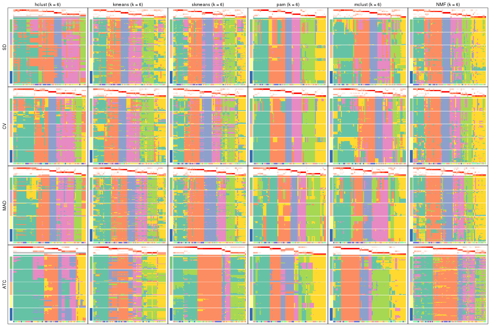
Signature heatmaps for all methods. (What is a signature heatmap?)
Note in following heatmaps, rows are scaled.
collect_plots(res_list, k = 2, fun = get_signatures, mc.cores = 4)
collect_plots(res_list, k = 3, fun = get_signatures, mc.cores = 4)
collect_plots(res_list, k = 4, fun = get_signatures, mc.cores = 4)
collect_plots(res_list, k = 5, fun = get_signatures, mc.cores = 4)
collect_plots(res_list, k = 6, fun = get_signatures, mc.cores = 4)
The statistics used for measuring the stability of consensus partitioning. (How are they defined?)
get_stats(res_list, k = 2)
#> k 1-PAC mean_silhouette concordance area_increased Rand Jaccard
#> SD:NMF 2 0.877 0.923 0.966 0.407 0.584 0.584
#> CV:NMF 2 0.713 0.894 0.953 0.422 0.571 0.571
#> MAD:NMF 2 0.848 0.917 0.964 0.467 0.539 0.539
#> ATC:NMF 2 0.854 0.928 0.966 0.476 0.530 0.530
#> SD:skmeans 2 0.653 0.902 0.950 0.493 0.509 0.509
#> CV:skmeans 2 0.604 0.863 0.935 0.497 0.509 0.509
#> MAD:skmeans 2 0.646 0.880 0.942 0.497 0.504 0.504
#> ATC:skmeans 2 1.000 1.000 1.000 0.462 0.539 0.539
#> SD:mclust 2 0.801 0.936 0.970 0.235 0.784 0.784
#> CV:mclust 2 0.806 0.939 0.973 0.227 0.784 0.784
#> MAD:mclust 2 0.271 0.680 0.836 0.269 0.807 0.807
#> ATC:mclust 2 1.000 1.000 1.000 0.452 0.549 0.549
#> SD:kmeans 2 0.759 0.829 0.931 0.332 0.661 0.661
#> CV:kmeans 2 0.647 0.779 0.909 0.333 0.679 0.679
#> MAD:kmeans 2 0.627 0.902 0.923 0.470 0.539 0.539
#> ATC:kmeans 2 1.000 1.000 1.000 0.452 0.549 0.549
#> SD:pam 2 0.485 0.787 0.883 0.320 0.784 0.784
#> CV:pam 2 0.192 0.711 0.838 0.435 0.522 0.522
#> MAD:pam 2 0.169 0.608 0.807 0.485 0.500 0.500
#> ATC:pam 2 1.000 1.000 1.000 0.452 0.549 0.549
#> SD:hclust 2 0.503 0.727 0.864 0.339 0.784 0.784
#> CV:hclust 2 0.508 0.808 0.827 0.384 0.493 0.493
#> MAD:hclust 2 0.479 0.728 0.814 0.356 0.500 0.500
#> ATC:hclust 2 1.000 1.000 1.000 0.452 0.549 0.549
get_stats(res_list, k = 3)
#> k 1-PAC mean_silhouette concordance area_increased Rand Jaccard
#> SD:NMF 3 0.614 0.796 0.905 0.602 0.656 0.461
#> CV:NMF 3 0.607 0.758 0.896 0.549 0.676 0.475
#> MAD:NMF 3 0.658 0.713 0.877 0.429 0.719 0.513
#> ATC:NMF 3 0.819 0.840 0.930 0.403 0.766 0.570
#> SD:skmeans 3 0.612 0.707 0.874 0.356 0.775 0.579
#> CV:skmeans 3 0.552 0.672 0.860 0.342 0.739 0.527
#> MAD:skmeans 3 0.643 0.818 0.848 0.343 0.751 0.542
#> ATC:skmeans 3 1.000 0.986 0.994 0.299 0.855 0.734
#> SD:mclust 3 0.344 0.565 0.789 1.311 0.591 0.487
#> CV:mclust 3 0.449 0.647 0.839 1.503 0.608 0.500
#> MAD:mclust 3 0.285 0.450 0.748 1.233 0.481 0.380
#> ATC:mclust 3 0.795 0.940 0.898 0.352 0.779 0.596
#> SD:kmeans 3 0.476 0.774 0.880 0.807 0.598 0.451
#> CV:kmeans 3 0.524 0.780 0.889 0.814 0.601 0.461
#> MAD:kmeans 3 0.493 0.607 0.809 0.378 0.771 0.585
#> ATC:kmeans 3 0.691 0.875 0.821 0.368 0.776 0.592
#> SD:pam 3 0.359 0.666 0.811 0.838 0.592 0.489
#> CV:pam 3 0.485 0.712 0.840 0.370 0.648 0.449
#> MAD:pam 3 0.437 0.755 0.852 0.348 0.651 0.407
#> ATC:pam 3 0.940 0.916 0.966 0.497 0.774 0.589
#> SD:hclust 3 0.443 0.775 0.863 0.674 0.633 0.537
#> CV:hclust 3 0.525 0.772 0.880 0.478 0.891 0.786
#> MAD:hclust 3 0.325 0.469 0.705 0.655 0.897 0.801
#> ATC:hclust 3 0.869 0.906 0.951 0.375 0.853 0.732
get_stats(res_list, k = 4)
#> k 1-PAC mean_silhouette concordance area_increased Rand Jaccard
#> SD:NMF 4 0.695 0.704 0.864 0.1274 0.771 0.459
#> CV:NMF 4 0.685 0.719 0.857 0.1236 0.798 0.508
#> MAD:NMF 4 0.638 0.679 0.835 0.1141 0.852 0.597
#> ATC:NMF 4 0.653 0.655 0.769 0.0643 0.831 0.602
#> SD:skmeans 4 0.644 0.672 0.846 0.1226 0.829 0.542
#> CV:skmeans 4 0.679 0.707 0.862 0.1250 0.854 0.596
#> MAD:skmeans 4 0.748 0.757 0.889 0.1294 0.861 0.610
#> ATC:skmeans 4 0.939 0.920 0.948 0.0609 0.992 0.979
#> SD:mclust 4 0.599 0.382 0.704 0.2837 0.815 0.586
#> CV:mclust 4 0.594 0.597 0.811 0.2233 0.894 0.733
#> MAD:mclust 4 0.644 0.646 0.818 0.1858 0.848 0.618
#> ATC:mclust 4 0.801 0.883 0.937 0.1428 0.984 0.952
#> SD:kmeans 4 0.455 0.568 0.753 0.1916 0.844 0.630
#> CV:kmeans 4 0.473 0.548 0.751 0.1866 0.818 0.583
#> MAD:kmeans 4 0.533 0.593 0.759 0.1394 0.840 0.578
#> ATC:kmeans 4 0.699 0.713 0.802 0.1571 0.912 0.741
#> SD:pam 4 0.475 0.456 0.725 0.2161 0.779 0.511
#> CV:pam 4 0.556 0.625 0.825 0.1902 0.769 0.498
#> MAD:pam 4 0.533 0.628 0.798 0.1190 0.757 0.420
#> ATC:pam 4 0.774 0.773 0.868 0.0888 0.915 0.744
#> SD:hclust 4 0.504 0.668 0.820 0.2170 0.862 0.682
#> CV:hclust 4 0.532 0.663 0.816 0.2135 0.868 0.686
#> MAD:hclust 4 0.426 0.535 0.730 0.2055 0.790 0.533
#> ATC:hclust 4 0.770 0.806 0.907 0.0820 0.945 0.864
get_stats(res_list, k = 5)
#> k 1-PAC mean_silhouette concordance area_increased Rand Jaccard
#> SD:NMF 5 0.672 0.667 0.828 0.0804 0.840 0.492
#> CV:NMF 5 0.669 0.700 0.839 0.0847 0.849 0.524
#> MAD:NMF 5 0.641 0.566 0.782 0.0700 0.880 0.587
#> ATC:NMF 5 0.644 0.503 0.759 0.0519 0.883 0.680
#> SD:skmeans 5 0.623 0.534 0.713 0.0716 0.916 0.683
#> CV:skmeans 5 0.647 0.578 0.740 0.0700 0.915 0.680
#> MAD:skmeans 5 0.708 0.710 0.823 0.0649 0.941 0.766
#> ATC:skmeans 5 0.798 0.806 0.838 0.0967 0.867 0.661
#> SD:mclust 5 0.607 0.528 0.788 0.0869 0.718 0.315
#> CV:mclust 5 0.589 0.637 0.818 0.0886 0.868 0.603
#> MAD:mclust 5 0.653 0.613 0.794 0.1156 0.893 0.643
#> ATC:mclust 5 0.753 0.765 0.835 0.1088 0.882 0.629
#> SD:kmeans 5 0.549 0.592 0.721 0.0990 0.855 0.545
#> CV:kmeans 5 0.559 0.630 0.742 0.0971 0.857 0.551
#> MAD:kmeans 5 0.571 0.416 0.657 0.0751 0.897 0.643
#> ATC:kmeans 5 0.664 0.429 0.761 0.0752 0.947 0.816
#> SD:pam 5 0.649 0.697 0.839 0.0923 0.818 0.465
#> CV:pam 5 0.666 0.763 0.866 0.1028 0.822 0.476
#> MAD:pam 5 0.721 0.749 0.875 0.0706 0.834 0.489
#> ATC:pam 5 0.736 0.610 0.789 0.0634 0.910 0.679
#> SD:hclust 5 0.558 0.636 0.736 0.0865 0.931 0.777
#> CV:hclust 5 0.548 0.612 0.774 0.0678 0.945 0.816
#> MAD:hclust 5 0.572 0.589 0.741 0.0766 0.906 0.679
#> ATC:hclust 5 0.743 0.724 0.879 0.0368 0.938 0.827
get_stats(res_list, k = 6)
#> k 1-PAC mean_silhouette concordance area_increased Rand Jaccard
#> SD:NMF 6 0.666 0.591 0.773 0.0484 0.893 0.549
#> CV:NMF 6 0.689 0.623 0.794 0.0483 0.903 0.580
#> MAD:NMF 6 0.653 0.553 0.744 0.0457 0.891 0.544
#> ATC:NMF 6 0.643 0.639 0.767 0.0417 0.918 0.714
#> SD:skmeans 6 0.668 0.483 0.739 0.0425 0.914 0.613
#> CV:skmeans 6 0.672 0.574 0.734 0.0450 0.936 0.697
#> MAD:skmeans 6 0.736 0.644 0.805 0.0436 0.913 0.616
#> ATC:skmeans 6 0.758 0.753 0.821 0.0394 0.998 0.991
#> SD:mclust 6 0.589 0.545 0.730 0.0585 0.899 0.613
#> CV:mclust 6 0.631 0.490 0.727 0.0621 0.962 0.840
#> MAD:mclust 6 0.678 0.531 0.740 0.0317 0.972 0.857
#> ATC:mclust 6 0.810 0.794 0.868 0.0388 0.937 0.729
#> SD:kmeans 6 0.658 0.633 0.742 0.0525 0.922 0.650
#> CV:kmeans 6 0.667 0.620 0.739 0.0539 0.937 0.706
#> MAD:kmeans 6 0.659 0.574 0.737 0.0444 0.906 0.607
#> ATC:kmeans 6 0.712 0.575 0.693 0.0452 0.891 0.604
#> SD:pam 6 0.753 0.685 0.837 0.0615 0.899 0.588
#> CV:pam 6 0.779 0.789 0.877 0.0643 0.924 0.670
#> MAD:pam 6 0.713 0.530 0.778 0.0434 0.905 0.631
#> ATC:pam 6 0.749 0.555 0.760 0.0359 0.891 0.560
#> SD:hclust 6 0.589 0.563 0.694 0.0514 0.944 0.792
#> CV:hclust 6 0.618 0.617 0.750 0.0862 0.907 0.655
#> MAD:hclust 6 0.671 0.691 0.776 0.0581 0.965 0.848
#> ATC:hclust 6 0.712 0.575 0.774 0.0646 0.931 0.784
Following heatmap plots the partition for each combination of methods and the lightness correspond to the silhouette scores for samples in each method. On top the consensus subgroup is inferred from all methods by taking the mean silhouette scores as weight.
collect_stats(res_list, k = 2)
collect_stats(res_list, k = 3)
collect_stats(res_list, k = 4)
collect_stats(res_list, k = 5)
collect_stats(res_list, k = 6)

Collect partitions from all methods:
collect_classes(res_list, k = 2)
collect_classes(res_list, k = 3)
collect_classes(res_list, k = 4)
collect_classes(res_list, k = 5)
collect_classes(res_list, k = 6)
Overlap of top rows from different top-row methods:
top_rows_overlap(res_list, top_n = 1000, method = "euler")
top_rows_overlap(res_list, top_n = 2000, method = "euler")
top_rows_overlap(res_list, top_n = 3000, method = "euler")
top_rows_overlap(res_list, top_n = 4000, method = "euler")
top_rows_overlap(res_list, top_n = 5000, method = "euler")
Also visualize the correspondance of rankings between different top-row methods:
top_rows_overlap(res_list, top_n = 1000, method = "correspondance")
top_rows_overlap(res_list, top_n = 2000, method = "correspondance")
top_rows_overlap(res_list, top_n = 3000, method = "correspondance")
top_rows_overlap(res_list, top_n = 4000, method = "correspondance")
top_rows_overlap(res_list, top_n = 5000, method = "correspondance")
Heatmaps of the top rows:
top_rows_heatmap(res_list, top_n = 1000)

top_rows_heatmap(res_list, top_n = 2000)
top_rows_heatmap(res_list, top_n = 3000)
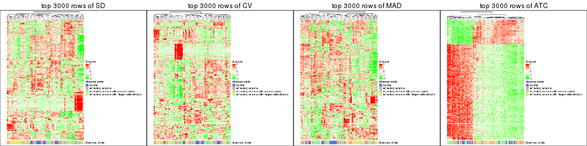
top_rows_heatmap(res_list, top_n = 4000)
top_rows_heatmap(res_list, top_n = 5000)
Test correlation between subgroups and known annotations. If the known annotation is numeric, one-way ANOVA test is applied, and if the known annotation is discrete, chi-squared contingency table test is applied.
test_to_known_factors(res_list, k = 2)
#> n disease.state(p) k
#> SD:NMF 65 4.24e-02 2
#> CV:NMF 63 5.03e-02 2
#> MAD:NMF 64 1.60e-03 2
#> ATC:NMF 64 3.12e-01 2
#> SD:skmeans 65 2.68e-04 2
#> CV:skmeans 63 3.19e-04 2
#> MAD:skmeans 65 1.23e-03 2
#> ATC:skmeans 66 3.06e-01 2
#> SD:mclust 65 5.73e-01 2
#> CV:mclust 65 5.73e-01 2
#> MAD:mclust 63 5.06e-01 2
#> ATC:mclust 66 1.64e-01 2
#> SD:kmeans 60 3.13e-01 2
#> CV:kmeans 57 4.34e-01 2
#> MAD:kmeans 66 8.55e-04 2
#> ATC:kmeans 66 1.64e-01 2
#> SD:pam 65 5.73e-01 2
#> CV:pam 61 5.83e-04 2
#> MAD:pam 58 1.36e-03 2
#> ATC:pam 66 1.64e-01 2
#> SD:hclust 50 3.72e-01 2
#> CV:hclust 62 2.57e-05 2
#> MAD:hclust 55 5.20e-04 2
#> ATC:hclust 66 1.64e-01 2
test_to_known_factors(res_list, k = 3)
#> n disease.state(p) k
#> SD:NMF 62 9.15e-02 3
#> CV:NMF 59 1.62e-01 3
#> MAD:NMF 54 9.28e-03 3
#> ATC:NMF 60 6.79e-03 3
#> SD:skmeans 52 7.89e-03 3
#> CV:skmeans 53 5.14e-03 3
#> MAD:skmeans 64 5.36e-04 3
#> ATC:skmeans 66 8.10e-02 3
#> SD:mclust 54 3.47e-02 3
#> CV:mclust 50 3.30e-02 3
#> MAD:mclust 41 1.19e-01 3
#> ATC:mclust 66 6.61e-02 3
#> SD:kmeans 61 3.38e-02 3
#> CV:kmeans 61 2.27e-02 3
#> MAD:kmeans 49 1.57e-02 3
#> ATC:kmeans 62 4.77e-03 3
#> SD:pam 59 6.20e-03 3
#> CV:pam 62 1.29e-02 3
#> MAD:pam 63 1.82e-02 3
#> ATC:pam 62 1.25e-03 3
#> SD:hclust 63 1.91e-05 3
#> CV:hclust 61 7.16e-05 3
#> MAD:hclust 31 9.55e-02 3
#> ATC:hclust 63 9.41e-02 3
test_to_known_factors(res_list, k = 4)
#> n disease.state(p) k
#> SD:NMF 53 4.20e-04 4
#> CV:NMF 56 1.81e-03 4
#> MAD:NMF 51 6.01e-03 4
#> ATC:NMF 53 1.44e-02 4
#> SD:skmeans 54 4.58e-03 4
#> CV:skmeans 56 7.05e-03 4
#> MAD:skmeans 57 1.14e-03 4
#> ATC:skmeans 63 1.91e-01 4
#> SD:mclust 36 3.31e-02 4
#> CV:mclust 44 1.62e-03 4
#> MAD:mclust 45 1.34e-02 4
#> ATC:mclust 65 8.44e-02 4
#> SD:kmeans 48 8.69e-05 4
#> CV:kmeans 40 1.92e-03 4
#> MAD:kmeans 50 3.94e-03 4
#> ATC:kmeans 59 4.19e-03 4
#> SD:pam 30 3.20e-02 4
#> CV:pam 51 1.93e-03 4
#> MAD:pam 49 7.30e-03 4
#> ATC:pam 60 3.00e-02 4
#> SD:hclust 57 8.42e-07 4
#> CV:hclust 52 8.10e-07 4
#> MAD:hclust 42 2.16e-04 4
#> ATC:hclust 59 1.43e-02 4
test_to_known_factors(res_list, k = 5)
#> n disease.state(p) k
#> SD:NMF 54 8.29e-03 5
#> CV:NMF 55 3.82e-03 5
#> MAD:NMF 49 2.00e-03 5
#> ATC:NMF 39 3.31e-01 5
#> SD:skmeans 44 7.51e-03 5
#> CV:skmeans 47 3.59e-03 5
#> MAD:skmeans 57 2.96e-04 5
#> ATC:skmeans 61 3.27e-02 5
#> SD:mclust 45 4.92e-04 5
#> CV:mclust 51 6.11e-05 5
#> MAD:mclust 53 1.04e-03 5
#> ATC:mclust 63 6.93e-03 5
#> SD:kmeans 50 2.24e-03 5
#> CV:kmeans 56 8.87e-04 5
#> MAD:kmeans 22 1.37e-01 5
#> ATC:kmeans 38 1.27e-02 5
#> SD:pam 56 1.85e-02 5
#> CV:pam 62 1.54e-02 5
#> MAD:pam 58 7.59e-03 5
#> ATC:pam 45 5.13e-03 5
#> SD:hclust 54 2.04e-05 5
#> CV:hclust 45 4.19e-05 5
#> MAD:hclust 51 2.25e-04 5
#> ATC:hclust 55 1.51e-01 5
test_to_known_factors(res_list, k = 6)
#> n disease.state(p) k
#> SD:NMF 48 1.20e-02 6
#> CV:NMF 49 1.02e-02 6
#> MAD:NMF 43 1.17e-02 6
#> ATC:NMF 52 1.54e-02 6
#> SD:skmeans 35 2.96e-04 6
#> CV:skmeans 46 9.26e-05 6
#> MAD:skmeans 49 1.80e-04 6
#> ATC:skmeans 60 2.55e-02 6
#> SD:mclust 42 2.57e-03 6
#> CV:mclust 33 6.64e-02 6
#> MAD:mclust 45 3.88e-03 6
#> ATC:mclust 61 1.63e-02 6
#> SD:kmeans 47 6.20e-03 6
#> CV:kmeans 49 1.20e-03 6
#> MAD:kmeans 45 6.01e-03 6
#> ATC:kmeans 46 4.89e-03 6
#> SD:pam 52 6.34e-04 6
#> CV:pam 63 5.50e-03 6
#> MAD:pam 41 4.19e-03 6
#> ATC:pam 35 6.47e-03 6
#> SD:hclust 48 6.51e-04 6
#> CV:hclust 51 8.90e-03 6
#> MAD:hclust 57 4.76e-04 6
#> ATC:hclust 45 1.59e-01 6
The object with results only for a single top-value method and a single partition method can be extracted as:
res = res_list["SD", "hclust"]
# you can also extract it by
# res = res_list["SD:hclust"]
A summary of res and all the functions that can be applied to it:
res
#> A 'ConsensusPartition' object with k = 2, 3, 4, 5, 6.
#> On a matrix with 51941 rows and 66 columns.
#> Top rows (1000, 2000, 3000, 4000, 5000) are extracted by 'SD' method.
#> Subgroups are detected by 'hclust' method.
#> Performed in total 1250 partitions by row resampling.
#> Best k for subgroups seems to be 3.
#>
#> Following methods can be applied to this 'ConsensusPartition' object:
#> [1] "cola_report" "collect_classes" "collect_plots"
#> [4] "collect_stats" "colnames" "compare_signatures"
#> [7] "consensus_heatmap" "dimension_reduction" "functional_enrichment"
#> [10] "get_anno_col" "get_anno" "get_classes"
#> [13] "get_consensus" "get_matrix" "get_membership"
#> [16] "get_param" "get_signatures" "get_stats"
#> [19] "is_best_k" "is_stable_k" "membership_heatmap"
#> [22] "ncol" "nrow" "plot_ecdf"
#> [25] "rownames" "select_partition_number" "show"
#> [28] "suggest_best_k" "test_to_known_factors"
collect_plots() function collects all the plots made from res for all k (number of partitions)
into one single page to provide an easy and fast comparison between different k.
collect_plots(res)
The plots are:
k and the heatmap of
predicted classes for each k.k.k.k.All the plots in panels can be made by individual functions and they are plotted later in this section.
select_partition_number() produces several plots showing different
statistics for choosing “optimized” k. There are following statistics:
k;k, the area increased is defined as \(A_k - A_{k-1}\).The detailed explanations of these statistics can be found in the cola vignette.
Generally speaking, lower PAC score, higher mean silhouette score or higher
concordance corresponds to better partition. Rand index and Jaccard index
measure how similar the current partition is compared to partition with k-1.
If they are too similar, we won't accept k is better than k-1.
select_partition_number(res)
The numeric values for all these statistics can be obtained by get_stats().
get_stats(res)
#> k 1-PAC mean_silhouette concordance area_increased Rand Jaccard
#> 2 2 0.503 0.727 0.864 0.3385 0.784 0.784
#> 3 3 0.443 0.775 0.863 0.6738 0.633 0.537
#> 4 4 0.504 0.668 0.820 0.2170 0.862 0.682
#> 5 5 0.558 0.636 0.736 0.0865 0.931 0.777
#> 6 6 0.589 0.563 0.694 0.0514 0.944 0.792
suggest_best_k() suggests the best \(k\) based on these statistics. The rules are as follows:
NA.suggest_best_k(res)
#> [1] 3
Following shows the table of the partitions (You need to click the show/hide
code output link to see it). The membership matrix (columns with name p*)
is inferred by
clue::cl_consensus()
function with the SE method. Basically the value in the membership matrix
represents the probability to belong to a certain group. The finall class
label for an item is determined with the group with highest probability it
belongs to.
In get_classes() function, the entropy is calculated from the membership
matrix and the silhouette score is calculated from the consensus matrix.
cbind(get_classes(res, k = 2), get_membership(res, k = 2))
#> class entropy silhouette p1 p2
#> GSM103343 1 0.0000 0.821 1.000 0.000
#> GSM103344 1 0.0000 0.821 1.000 0.000
#> GSM103345 1 0.0000 0.821 1.000 0.000
#> GSM103364 1 0.0000 0.821 1.000 0.000
#> GSM103365 1 0.0000 0.821 1.000 0.000
#> GSM103366 1 0.2236 0.810 0.964 0.036
#> GSM103369 1 0.0000 0.821 1.000 0.000
#> GSM103370 1 0.0000 0.821 1.000 0.000
#> GSM103388 1 0.0000 0.821 1.000 0.000
#> GSM103389 1 0.0000 0.821 1.000 0.000
#> GSM103390 1 0.0938 0.818 0.988 0.012
#> GSM103347 2 0.0000 0.958 0.000 1.000
#> GSM103349 1 0.9970 0.403 0.532 0.468
#> GSM103354 2 0.0000 0.958 0.000 1.000
#> GSM103355 1 0.0000 0.821 1.000 0.000
#> GSM103357 1 0.1184 0.816 0.984 0.016
#> GSM103358 1 0.0000 0.821 1.000 0.000
#> GSM103361 1 0.0000 0.821 1.000 0.000
#> GSM103363 1 0.2043 0.810 0.968 0.032
#> GSM103367 1 0.9087 0.597 0.676 0.324
#> GSM103381 1 0.0000 0.821 1.000 0.000
#> GSM103382 1 0.3733 0.793 0.928 0.072
#> GSM103384 1 0.0000 0.821 1.000 0.000
#> GSM103391 1 0.9850 0.477 0.572 0.428
#> GSM103394 1 0.9850 0.477 0.572 0.428
#> GSM103399 1 0.4815 0.776 0.896 0.104
#> GSM103401 2 0.0000 0.958 0.000 1.000
#> GSM103404 1 0.0000 0.821 1.000 0.000
#> GSM103408 1 0.0000 0.821 1.000 0.000
#> GSM103348 2 0.7453 0.607 0.212 0.788
#> GSM103351 1 0.9970 0.403 0.532 0.468
#> GSM103356 1 0.9896 0.458 0.560 0.440
#> GSM103368 1 0.9909 0.452 0.556 0.444
#> GSM103372 1 0.9944 0.429 0.544 0.456
#> GSM103375 1 0.9963 0.413 0.536 0.464
#> GSM103376 1 0.9963 0.413 0.536 0.464
#> GSM103379 1 0.0000 0.821 1.000 0.000
#> GSM103385 1 0.9896 0.453 0.560 0.440
#> GSM103387 1 0.9866 0.466 0.568 0.432
#> GSM103392 1 0.9000 0.606 0.684 0.316
#> GSM103393 1 0.9909 0.452 0.556 0.444
#> GSM103395 2 0.0000 0.958 0.000 1.000
#> GSM103396 1 0.7815 0.686 0.768 0.232
#> GSM103398 1 0.2948 0.802 0.948 0.052
#> GSM103402 1 0.9850 0.477 0.572 0.428
#> GSM103403 1 0.9850 0.477 0.572 0.428
#> GSM103405 1 0.0000 0.821 1.000 0.000
#> GSM103407 1 0.9815 0.489 0.580 0.420
#> GSM103346 2 0.0000 0.958 0.000 1.000
#> GSM103350 1 0.9993 0.366 0.516 0.484
#> GSM103352 2 0.0000 0.958 0.000 1.000
#> GSM103353 2 0.0000 0.958 0.000 1.000
#> GSM103359 1 0.0000 0.821 1.000 0.000
#> GSM103360 1 0.0000 0.821 1.000 0.000
#> GSM103362 1 0.0000 0.821 1.000 0.000
#> GSM103371 1 0.0000 0.821 1.000 0.000
#> GSM103373 1 0.0000 0.821 1.000 0.000
#> GSM103374 1 0.8813 0.626 0.700 0.300
#> GSM103377 1 0.5519 0.761 0.872 0.128
#> GSM103378 1 0.0000 0.821 1.000 0.000
#> GSM103380 1 0.0000 0.821 1.000 0.000
#> GSM103383 1 0.0376 0.820 0.996 0.004
#> GSM103386 1 0.0000 0.821 1.000 0.000
#> GSM103397 1 0.0000 0.821 1.000 0.000
#> GSM103400 1 0.0000 0.821 1.000 0.000
#> GSM103406 1 0.0000 0.821 1.000 0.000
cbind(get_classes(res, k = 3), get_membership(res, k = 3))
#> class entropy silhouette p1 p2 p3
#> GSM103343 1 0.5591 0.724 0.696 0.304 0.000
#> GSM103344 1 0.5591 0.724 0.696 0.304 0.000
#> GSM103345 1 0.5591 0.724 0.696 0.304 0.000
#> GSM103364 1 0.2878 0.816 0.904 0.096 0.000
#> GSM103365 1 0.2878 0.816 0.904 0.096 0.000
#> GSM103366 1 0.5810 0.690 0.664 0.336 0.000
#> GSM103369 1 0.6079 0.605 0.612 0.388 0.000
#> GSM103370 1 0.0592 0.824 0.988 0.012 0.000
#> GSM103388 1 0.0592 0.824 0.988 0.012 0.000
#> GSM103389 1 0.0592 0.824 0.988 0.012 0.000
#> GSM103390 1 0.6168 0.562 0.588 0.412 0.000
#> GSM103347 3 0.0237 0.996 0.000 0.004 0.996
#> GSM103349 2 0.1182 0.820 0.012 0.976 0.012
#> GSM103354 3 0.0000 0.999 0.000 0.000 1.000
#> GSM103355 1 0.5254 0.756 0.736 0.264 0.000
#> GSM103357 1 0.6204 0.546 0.576 0.424 0.000
#> GSM103358 1 0.5254 0.756 0.736 0.264 0.000
#> GSM103361 1 0.3752 0.815 0.856 0.144 0.000
#> GSM103363 1 0.6244 0.512 0.560 0.440 0.000
#> GSM103367 2 0.5968 0.553 0.364 0.636 0.000
#> GSM103381 1 0.0592 0.824 0.988 0.012 0.000
#> GSM103382 1 0.5254 0.684 0.736 0.264 0.000
#> GSM103384 1 0.0592 0.824 0.988 0.012 0.000
#> GSM103391 2 0.2200 0.830 0.056 0.940 0.004
#> GSM103394 2 0.2200 0.830 0.056 0.940 0.004
#> GSM103399 1 0.5560 0.676 0.700 0.300 0.000
#> GSM103401 3 0.0000 0.999 0.000 0.000 1.000
#> GSM103404 1 0.0424 0.823 0.992 0.008 0.000
#> GSM103408 1 0.2261 0.827 0.932 0.068 0.000
#> GSM103348 2 0.5706 0.424 0.000 0.680 0.320
#> GSM103351 2 0.4195 0.801 0.136 0.852 0.012
#> GSM103356 2 0.1411 0.833 0.036 0.964 0.000
#> GSM103368 2 0.1163 0.830 0.028 0.972 0.000
#> GSM103372 2 0.1964 0.833 0.056 0.944 0.000
#> GSM103375 2 0.1753 0.830 0.048 0.952 0.000
#> GSM103376 2 0.1753 0.830 0.048 0.952 0.000
#> GSM103379 1 0.0000 0.820 1.000 0.000 0.000
#> GSM103385 2 0.4178 0.783 0.172 0.828 0.000
#> GSM103387 2 0.3752 0.806 0.144 0.856 0.000
#> GSM103392 2 0.6008 0.539 0.372 0.628 0.000
#> GSM103393 2 0.1163 0.830 0.028 0.972 0.000
#> GSM103395 3 0.0000 0.999 0.000 0.000 1.000
#> GSM103396 2 0.6308 0.193 0.492 0.508 0.000
#> GSM103398 1 0.4842 0.767 0.776 0.224 0.000
#> GSM103402 2 0.2200 0.830 0.056 0.940 0.004
#> GSM103403 2 0.2200 0.830 0.056 0.940 0.004
#> GSM103405 1 0.3879 0.803 0.848 0.152 0.000
#> GSM103407 2 0.2066 0.827 0.060 0.940 0.000
#> GSM103346 3 0.0000 0.999 0.000 0.000 1.000
#> GSM103350 2 0.4139 0.796 0.124 0.860 0.016
#> GSM103352 3 0.0000 0.999 0.000 0.000 1.000
#> GSM103353 3 0.0000 0.999 0.000 0.000 1.000
#> GSM103359 1 0.2066 0.822 0.940 0.060 0.000
#> GSM103360 1 0.2066 0.822 0.940 0.060 0.000
#> GSM103362 1 0.4750 0.786 0.784 0.216 0.000
#> GSM103371 1 0.2356 0.830 0.928 0.072 0.000
#> GSM103373 1 0.4291 0.796 0.820 0.180 0.000
#> GSM103374 2 0.6192 0.454 0.420 0.580 0.000
#> GSM103377 1 0.6140 0.521 0.596 0.404 0.000
#> GSM103378 1 0.0000 0.820 1.000 0.000 0.000
#> GSM103380 1 0.0000 0.820 1.000 0.000 0.000
#> GSM103383 1 0.0237 0.820 0.996 0.004 0.000
#> GSM103386 1 0.0000 0.820 1.000 0.000 0.000
#> GSM103397 1 0.0000 0.820 1.000 0.000 0.000
#> GSM103400 1 0.2261 0.827 0.932 0.068 0.000
#> GSM103406 1 0.0000 0.820 1.000 0.000 0.000
cbind(get_classes(res, k = 4), get_membership(res, k = 4))
#> class entropy silhouette p1 p2 p3 p4
#> GSM103343 2 0.5300 0.664 0.308 0.664 0.000 0.028
#> GSM103344 2 0.5300 0.664 0.308 0.664 0.000 0.028
#> GSM103345 2 0.5300 0.664 0.308 0.664 0.000 0.028
#> GSM103364 1 0.4977 -0.012 0.540 0.460 0.000 0.000
#> GSM103365 1 0.4977 -0.012 0.540 0.460 0.000 0.000
#> GSM103366 2 0.6252 0.636 0.288 0.624 0.000 0.088
#> GSM103369 2 0.0336 0.610 0.000 0.992 0.000 0.008
#> GSM103370 1 0.2530 0.748 0.888 0.112 0.000 0.000
#> GSM103388 1 0.2530 0.748 0.888 0.112 0.000 0.000
#> GSM103389 1 0.2530 0.748 0.888 0.112 0.000 0.000
#> GSM103390 2 0.3591 0.537 0.008 0.824 0.000 0.168
#> GSM103347 3 0.0188 0.995 0.000 0.000 0.996 0.004
#> GSM103349 4 0.0592 0.782 0.000 0.016 0.000 0.984
#> GSM103354 3 0.0000 0.999 0.000 0.000 1.000 0.000
#> GSM103355 2 0.5093 0.614 0.348 0.640 0.000 0.012
#> GSM103357 2 0.1474 0.603 0.000 0.948 0.000 0.052
#> GSM103358 2 0.5110 0.612 0.352 0.636 0.000 0.012
#> GSM103361 1 0.4406 0.449 0.700 0.300 0.000 0.000
#> GSM103363 2 0.2760 0.561 0.000 0.872 0.000 0.128
#> GSM103367 4 0.5220 0.556 0.352 0.016 0.000 0.632
#> GSM103381 1 0.2530 0.748 0.888 0.112 0.000 0.000
#> GSM103382 1 0.6330 0.521 0.656 0.144 0.000 0.200
#> GSM103384 1 0.2530 0.748 0.888 0.112 0.000 0.000
#> GSM103391 4 0.3024 0.749 0.000 0.148 0.000 0.852
#> GSM103394 4 0.3024 0.749 0.000 0.148 0.000 0.852
#> GSM103399 1 0.6661 0.361 0.604 0.132 0.000 0.264
#> GSM103401 3 0.0000 0.999 0.000 0.000 1.000 0.000
#> GSM103404 1 0.0336 0.755 0.992 0.000 0.000 0.008
#> GSM103408 1 0.3708 0.724 0.832 0.148 0.000 0.020
#> GSM103348 4 0.4746 0.453 0.000 0.008 0.304 0.688
#> GSM103351 4 0.3497 0.776 0.124 0.024 0.000 0.852
#> GSM103356 4 0.3355 0.764 0.004 0.160 0.000 0.836
#> GSM103368 4 0.2081 0.782 0.000 0.084 0.000 0.916
#> GSM103372 4 0.3505 0.788 0.048 0.088 0.000 0.864
#> GSM103375 4 0.3354 0.789 0.044 0.084 0.000 0.872
#> GSM103376 4 0.3354 0.789 0.044 0.084 0.000 0.872
#> GSM103379 1 0.0000 0.756 1.000 0.000 0.000 0.000
#> GSM103385 4 0.3836 0.751 0.168 0.016 0.000 0.816
#> GSM103387 4 0.3711 0.767 0.140 0.024 0.000 0.836
#> GSM103392 4 0.5339 0.547 0.356 0.020 0.000 0.624
#> GSM103393 4 0.2081 0.782 0.000 0.084 0.000 0.916
#> GSM103395 3 0.0000 0.999 0.000 0.000 1.000 0.000
#> GSM103396 4 0.6077 0.178 0.460 0.044 0.000 0.496
#> GSM103398 1 0.6001 0.583 0.688 0.128 0.000 0.184
#> GSM103402 4 0.2973 0.750 0.000 0.144 0.000 0.856
#> GSM103403 4 0.2973 0.750 0.000 0.144 0.000 0.856
#> GSM103405 1 0.3707 0.663 0.840 0.028 0.000 0.132
#> GSM103407 4 0.3266 0.744 0.000 0.168 0.000 0.832
#> GSM103346 3 0.0000 0.999 0.000 0.000 1.000 0.000
#> GSM103350 4 0.3280 0.776 0.124 0.016 0.000 0.860
#> GSM103352 3 0.0000 0.999 0.000 0.000 1.000 0.000
#> GSM103353 3 0.0000 0.999 0.000 0.000 1.000 0.000
#> GSM103359 1 0.3172 0.656 0.840 0.160 0.000 0.000
#> GSM103360 1 0.3219 0.656 0.836 0.164 0.000 0.000
#> GSM103362 2 0.4843 0.491 0.396 0.604 0.000 0.000
#> GSM103371 1 0.3764 0.616 0.784 0.216 0.000 0.000
#> GSM103373 1 0.5849 0.515 0.704 0.164 0.000 0.132
#> GSM103374 4 0.6020 0.432 0.384 0.048 0.000 0.568
#> GSM103377 1 0.7878 -0.249 0.376 0.340 0.000 0.284
#> GSM103378 1 0.0000 0.756 1.000 0.000 0.000 0.000
#> GSM103380 1 0.0000 0.756 1.000 0.000 0.000 0.000
#> GSM103383 1 0.0779 0.757 0.980 0.016 0.000 0.004
#> GSM103386 1 0.0000 0.756 1.000 0.000 0.000 0.000
#> GSM103397 1 0.0000 0.756 1.000 0.000 0.000 0.000
#> GSM103400 1 0.3708 0.724 0.832 0.148 0.000 0.020
#> GSM103406 1 0.0000 0.756 1.000 0.000 0.000 0.000
cbind(get_classes(res, k = 5), get_membership(res, k = 5))
#> class entropy silhouette p1 p2 p3 p4 p5
#> GSM103343 2 0.3106 0.6857 0.080 0.872 0.000 0.020 0.028
#> GSM103344 2 0.3106 0.6857 0.080 0.872 0.000 0.020 0.028
#> GSM103345 2 0.3106 0.6857 0.080 0.872 0.000 0.020 0.028
#> GSM103364 2 0.5229 0.5625 0.244 0.684 0.000 0.044 0.028
#> GSM103365 2 0.5229 0.5625 0.244 0.684 0.000 0.044 0.028
#> GSM103366 2 0.4512 0.6206 0.084 0.796 0.000 0.068 0.052
#> GSM103369 5 0.4659 0.8061 0.000 0.488 0.000 0.012 0.500
#> GSM103370 1 0.5306 0.6325 0.680 0.244 0.000 0.044 0.032
#> GSM103388 1 0.5306 0.6325 0.680 0.244 0.000 0.044 0.032
#> GSM103389 1 0.5306 0.6325 0.680 0.244 0.000 0.044 0.032
#> GSM103390 5 0.5595 0.8050 0.000 0.356 0.000 0.084 0.560
#> GSM103347 3 0.0162 0.9626 0.000 0.000 0.996 0.004 0.000
#> GSM103349 4 0.2621 0.7087 0.004 0.008 0.000 0.876 0.112
#> GSM103354 3 0.2074 0.9539 0.000 0.036 0.920 0.000 0.044
#> GSM103355 2 0.2179 0.7064 0.100 0.896 0.000 0.004 0.000
#> GSM103357 5 0.5173 0.8441 0.000 0.460 0.000 0.040 0.500
#> GSM103358 2 0.2233 0.7051 0.104 0.892 0.000 0.004 0.000
#> GSM103361 2 0.4718 0.0858 0.444 0.540 0.000 0.000 0.016
#> GSM103363 5 0.5535 0.8510 0.000 0.392 0.000 0.072 0.536
#> GSM103367 4 0.4790 0.5718 0.292 0.016 0.000 0.672 0.020
#> GSM103381 1 0.5306 0.6325 0.680 0.244 0.000 0.044 0.032
#> GSM103382 1 0.7632 0.4473 0.500 0.224 0.000 0.136 0.140
#> GSM103384 1 0.5306 0.6325 0.680 0.244 0.000 0.044 0.032
#> GSM103391 4 0.4824 0.5601 0.004 0.020 0.000 0.596 0.380
#> GSM103394 4 0.4824 0.5601 0.004 0.020 0.000 0.596 0.380
#> GSM103399 1 0.7684 0.3266 0.504 0.172 0.000 0.176 0.148
#> GSM103401 3 0.0000 0.9648 0.000 0.000 1.000 0.000 0.000
#> GSM103404 1 0.0833 0.6657 0.976 0.004 0.000 0.004 0.016
#> GSM103408 1 0.5735 0.6051 0.636 0.272 0.000 0.056 0.036
#> GSM103348 4 0.6727 0.4211 0.000 0.044 0.216 0.576 0.164
#> GSM103351 4 0.3145 0.7036 0.064 0.008 0.000 0.868 0.060
#> GSM103356 4 0.3446 0.6854 0.004 0.108 0.000 0.840 0.048
#> GSM103368 4 0.3216 0.7018 0.004 0.044 0.000 0.856 0.096
#> GSM103372 4 0.2364 0.7136 0.008 0.064 0.000 0.908 0.020
#> GSM103375 4 0.2228 0.7145 0.008 0.056 0.000 0.916 0.020
#> GSM103376 4 0.2228 0.7145 0.008 0.056 0.000 0.916 0.020
#> GSM103379 1 0.0727 0.6640 0.980 0.004 0.000 0.004 0.012
#> GSM103385 4 0.2720 0.6985 0.096 0.004 0.000 0.880 0.020
#> GSM103387 4 0.2736 0.7111 0.068 0.016 0.000 0.892 0.024
#> GSM103392 4 0.4896 0.5656 0.296 0.016 0.000 0.664 0.024
#> GSM103393 4 0.3216 0.7018 0.004 0.044 0.000 0.856 0.096
#> GSM103395 3 0.2221 0.9502 0.000 0.036 0.912 0.000 0.052
#> GSM103396 4 0.6277 0.2669 0.328 0.084 0.000 0.556 0.032
#> GSM103398 1 0.7091 0.4416 0.504 0.268 0.000 0.188 0.040
#> GSM103402 4 0.4726 0.5653 0.004 0.016 0.000 0.604 0.376
#> GSM103403 4 0.4726 0.5653 0.004 0.016 0.000 0.604 0.376
#> GSM103405 1 0.4295 0.5857 0.792 0.024 0.000 0.048 0.136
#> GSM103407 4 0.5024 0.5603 0.004 0.032 0.000 0.596 0.368
#> GSM103346 3 0.0000 0.9648 0.000 0.000 1.000 0.000 0.000
#> GSM103350 4 0.3145 0.6995 0.060 0.008 0.000 0.868 0.064
#> GSM103352 3 0.0000 0.9648 0.000 0.000 1.000 0.000 0.000
#> GSM103353 3 0.2074 0.9539 0.000 0.036 0.920 0.000 0.044
#> GSM103359 1 0.4675 0.3099 0.620 0.360 0.000 0.004 0.016
#> GSM103360 1 0.4594 0.3059 0.620 0.364 0.000 0.004 0.012
#> GSM103362 2 0.3387 0.6852 0.128 0.836 0.000 0.004 0.032
#> GSM103371 1 0.4921 0.3953 0.604 0.360 0.000 0.000 0.036
#> GSM103373 1 0.6883 0.3760 0.536 0.280 0.000 0.048 0.136
#> GSM103374 4 0.6128 0.4758 0.252 0.100 0.000 0.616 0.032
#> GSM103377 2 0.7982 0.1850 0.252 0.428 0.000 0.204 0.116
#> GSM103378 1 0.2793 0.6745 0.876 0.088 0.000 0.000 0.036
#> GSM103380 1 0.0727 0.6640 0.980 0.004 0.000 0.004 0.012
#> GSM103383 1 0.1836 0.6768 0.936 0.040 0.000 0.008 0.016
#> GSM103386 1 0.1106 0.6669 0.964 0.012 0.000 0.000 0.024
#> GSM103397 1 0.0968 0.6675 0.972 0.004 0.000 0.012 0.012
#> GSM103400 1 0.5735 0.6051 0.636 0.272 0.000 0.056 0.036
#> GSM103406 1 0.2793 0.6745 0.876 0.088 0.000 0.000 0.036
cbind(get_classes(res, k = 6), get_membership(res, k = 6))
#> class entropy silhouette p1 p2 p3 p4 p5 p6
#> GSM103343 2 0.194 0.6589 0.028 0.928 0.000 0.008 0.008 NA
#> GSM103344 2 0.194 0.6589 0.028 0.928 0.000 0.008 0.008 NA
#> GSM103345 2 0.194 0.6589 0.028 0.928 0.000 0.008 0.008 NA
#> GSM103364 2 0.461 0.4625 0.100 0.752 0.000 0.092 0.000 NA
#> GSM103365 2 0.461 0.4625 0.100 0.752 0.000 0.092 0.000 NA
#> GSM103366 2 0.346 0.6383 0.028 0.852 0.000 0.032 0.052 NA
#> GSM103369 2 0.643 0.2142 0.000 0.432 0.000 0.024 0.224 NA
#> GSM103370 1 0.622 0.5643 0.540 0.304 0.000 0.092 0.008 NA
#> GSM103388 1 0.622 0.5643 0.540 0.304 0.000 0.092 0.008 NA
#> GSM103389 1 0.622 0.5643 0.540 0.304 0.000 0.092 0.008 NA
#> GSM103390 5 0.656 -0.1735 0.000 0.312 0.000 0.024 0.388 NA
#> GSM103347 3 0.311 0.8995 0.000 0.000 0.772 0.004 0.000 NA
#> GSM103349 4 0.429 0.6251 0.000 0.004 0.000 0.740 0.148 NA
#> GSM103354 3 0.000 0.8658 0.000 0.000 1.000 0.000 0.000 NA
#> GSM103355 2 0.150 0.6493 0.028 0.940 0.000 0.000 0.000 NA
#> GSM103357 2 0.643 0.1809 0.000 0.420 0.000 0.020 0.248 NA
#> GSM103358 2 0.157 0.6489 0.032 0.936 0.000 0.000 0.000 NA
#> GSM103361 2 0.508 0.0145 0.364 0.564 0.000 0.004 0.004 NA
#> GSM103363 2 0.647 0.0640 0.000 0.360 0.000 0.016 0.332 NA
#> GSM103367 4 0.457 0.5762 0.192 0.012 0.000 0.724 0.008 NA
#> GSM103381 1 0.622 0.5643 0.540 0.304 0.000 0.092 0.008 NA
#> GSM103382 1 0.769 0.4474 0.416 0.252 0.000 0.068 0.212 NA
#> GSM103384 1 0.622 0.5643 0.540 0.304 0.000 0.092 0.008 NA
#> GSM103391 5 0.329 0.7865 0.000 0.000 0.000 0.220 0.768 NA
#> GSM103394 5 0.319 0.7868 0.000 0.000 0.000 0.220 0.772 NA
#> GSM103399 1 0.753 0.3735 0.480 0.176 0.000 0.076 0.208 NA
#> GSM103401 3 0.297 0.9015 0.000 0.000 0.776 0.000 0.000 NA
#> GSM103404 1 0.201 0.5850 0.916 0.000 0.000 0.036 0.004 NA
#> GSM103408 1 0.646 0.5488 0.524 0.312 0.000 0.080 0.020 NA
#> GSM103348 4 0.736 0.2023 0.000 0.000 0.252 0.392 0.136 NA
#> GSM103351 4 0.343 0.6791 0.024 0.004 0.000 0.832 0.032 NA
#> GSM103356 4 0.414 0.6447 0.000 0.096 0.000 0.788 0.068 NA
#> GSM103368 4 0.399 0.6124 0.000 0.040 0.000 0.772 0.164 NA
#> GSM103372 4 0.282 0.6906 0.000 0.048 0.000 0.876 0.052 NA
#> GSM103375 4 0.267 0.6916 0.000 0.044 0.000 0.884 0.052 NA
#> GSM103376 4 0.267 0.6916 0.000 0.044 0.000 0.884 0.052 NA
#> GSM103379 1 0.205 0.5743 0.908 0.000 0.000 0.032 0.000 NA
#> GSM103385 4 0.130 0.6940 0.040 0.000 0.000 0.948 0.000 NA
#> GSM103387 4 0.195 0.6953 0.024 0.004 0.000 0.928 0.024 NA
#> GSM103392 4 0.469 0.5693 0.196 0.012 0.000 0.716 0.012 NA
#> GSM103393 4 0.399 0.6124 0.000 0.040 0.000 0.772 0.164 NA
#> GSM103395 3 0.114 0.8386 0.000 0.000 0.948 0.000 0.000 NA
#> GSM103396 4 0.562 0.3327 0.260 0.088 0.000 0.616 0.016 NA
#> GSM103398 1 0.780 0.4284 0.400 0.296 0.000 0.136 0.120 NA
#> GSM103402 5 0.311 0.7883 0.000 0.004 0.000 0.224 0.772 NA
#> GSM103403 5 0.311 0.7883 0.000 0.004 0.000 0.224 0.772 NA
#> GSM103405 1 0.415 0.5584 0.776 0.020 0.000 0.004 0.136 NA
#> GSM103407 5 0.365 0.7766 0.000 0.020 0.000 0.228 0.748 NA
#> GSM103346 3 0.297 0.9015 0.000 0.000 0.776 0.000 0.000 NA
#> GSM103350 4 0.369 0.6438 0.024 0.000 0.000 0.784 0.020 NA
#> GSM103352 3 0.297 0.9015 0.000 0.000 0.776 0.000 0.000 NA
#> GSM103353 3 0.000 0.8658 0.000 0.000 1.000 0.000 0.000 NA
#> GSM103359 1 0.493 0.2699 0.548 0.404 0.000 0.028 0.004 NA
#> GSM103360 1 0.559 0.2397 0.496 0.408 0.000 0.036 0.000 NA
#> GSM103362 2 0.279 0.6171 0.044 0.856 0.000 0.000 0.000 NA
#> GSM103371 1 0.564 0.3405 0.488 0.372 0.000 0.000 0.004 NA
#> GSM103373 1 0.664 0.3920 0.496 0.292 0.000 0.004 0.136 NA
#> GSM103374 4 0.552 0.4875 0.172 0.116 0.000 0.668 0.016 NA
#> GSM103377 2 0.785 0.1527 0.204 0.452 0.000 0.132 0.152 NA
#> GSM103378 1 0.361 0.6093 0.804 0.092 0.000 0.000 0.004 NA
#> GSM103380 1 0.205 0.5743 0.908 0.000 0.000 0.032 0.000 NA
#> GSM103383 1 0.338 0.5909 0.852 0.044 0.000 0.032 0.012 NA
#> GSM103386 1 0.100 0.5950 0.964 0.004 0.000 0.000 0.004 NA
#> GSM103397 1 0.245 0.5809 0.884 0.000 0.000 0.052 0.000 NA
#> GSM103400 1 0.646 0.5488 0.524 0.312 0.000 0.080 0.020 NA
#> GSM103406 1 0.357 0.6094 0.808 0.092 0.000 0.000 0.004 NA
Heatmaps for the consensus matrix. It visualizes the probability of two samples to be in a same group.
consensus_heatmap(res, k = 2)
consensus_heatmap(res, k = 3)
consensus_heatmap(res, k = 4)
consensus_heatmap(res, k = 5)
consensus_heatmap(res, k = 6)
Heatmaps for the membership of samples in all partitions to see how consistent they are:
membership_heatmap(res, k = 2)
membership_heatmap(res, k = 3)
membership_heatmap(res, k = 4)
membership_heatmap(res, k = 5)
membership_heatmap(res, k = 6)
As soon as we have had the classes for columns, we can look for signatures which are significantly different between classes which can be candidate marks for certain classes. Following are the heatmaps for signatures.
Signature heatmaps where rows are scaled:
get_signatures(res, k = 2)
get_signatures(res, k = 3)
get_signatures(res, k = 4)
get_signatures(res, k = 5)
get_signatures(res, k = 6)
Signature heatmaps where rows are not scaled:
get_signatures(res, k = 2, scale_rows = FALSE)
get_signatures(res, k = 3, scale_rows = FALSE)
get_signatures(res, k = 4, scale_rows = FALSE)
get_signatures(res, k = 5, scale_rows = FALSE)
get_signatures(res, k = 6, scale_rows = FALSE)
Compare the overlap of signatures from different k:
compare_signatures(res)
get_signature() returns a data frame invisibly. TO get the list of signatures, the function
call should be assigned to a variable explicitly. In following code, if plot argument is set
to FALSE, no heatmap is plotted while only the differential analysis is performed.
# code only for demonstration
tb = get_signature(res, k = ..., plot = FALSE)
An example of the output of tb is:
#> which_row fdr mean_1 mean_2 scaled_mean_1 scaled_mean_2 km
#> 1 38 0.042760348 8.373488 9.131774 -0.5533452 0.5164555 1
#> 2 40 0.018707592 7.106213 8.469186 -0.6173731 0.5762149 1
#> 3 55 0.019134737 10.221463 11.207825 -0.6159697 0.5749050 1
#> 4 59 0.006059896 5.921854 7.869574 -0.6899429 0.6439467 1
#> 5 60 0.018055526 8.928898 10.211722 -0.6204761 0.5791110 1
#> 6 98 0.009384629 15.714769 14.887706 0.6635654 -0.6193277 2
...
The columns in tb are:
which_row: row indices corresponding to the input matrix.fdr: FDR for the differential test. mean_x: The mean value in group x.scaled_mean_x: The mean value in group x after rows are scaled.km: Row groups if k-means clustering is applied to rows.UMAP plot which shows how samples are separated.
dimension_reduction(res, k = 2, method = "UMAP")
dimension_reduction(res, k = 3, method = "UMAP")
dimension_reduction(res, k = 4, method = "UMAP")

dimension_reduction(res, k = 5, method = "UMAP")
dimension_reduction(res, k = 6, method = "UMAP")
Following heatmap shows how subgroups are split when increasing k:
collect_classes(res)
Test correlation between subgroups and known annotations. If the known annotation is numeric, one-way ANOVA test is applied, and if the known annotation is discrete, chi-squared contingency table test is applied.
test_to_known_factors(res)
#> n disease.state(p) k
#> SD:hclust 50 3.72e-01 2
#> SD:hclust 63 1.91e-05 3
#> SD:hclust 57 8.42e-07 4
#> SD:hclust 54 2.04e-05 5
#> SD:hclust 48 6.51e-04 6
If matrix rows can be associated to genes, consider to use GO_Enrichment(res,
...) to perform function enrichment for the signature genes.
The object with results only for a single top-value method and a single partition method can be extracted as:
res = res_list["SD", "kmeans"]
# you can also extract it by
# res = res_list["SD:kmeans"]
A summary of res and all the functions that can be applied to it:
res
#> A 'ConsensusPartition' object with k = 2, 3, 4, 5, 6.
#> On a matrix with 51941 rows and 66 columns.
#> Top rows (1000, 2000, 3000, 4000, 5000) are extracted by 'SD' method.
#> Subgroups are detected by 'kmeans' method.
#> Performed in total 1250 partitions by row resampling.
#> Best k for subgroups seems to be 3.
#>
#> Following methods can be applied to this 'ConsensusPartition' object:
#> [1] "cola_report" "collect_classes" "collect_plots"
#> [4] "collect_stats" "colnames" "compare_signatures"
#> [7] "consensus_heatmap" "dimension_reduction" "functional_enrichment"
#> [10] "get_anno_col" "get_anno" "get_classes"
#> [13] "get_consensus" "get_matrix" "get_membership"
#> [16] "get_param" "get_signatures" "get_stats"
#> [19] "is_best_k" "is_stable_k" "membership_heatmap"
#> [22] "ncol" "nrow" "plot_ecdf"
#> [25] "rownames" "select_partition_number" "show"
#> [28] "suggest_best_k" "test_to_known_factors"
collect_plots() function collects all the plots made from res for all k (number of partitions)
into one single page to provide an easy and fast comparison between different k.
collect_plots(res)

The plots are:
k and the heatmap of
predicted classes for each k.k.k.k.All the plots in panels can be made by individual functions and they are plotted later in this section.
select_partition_number() produces several plots showing different
statistics for choosing “optimized” k. There are following statistics:
k;k, the area increased is defined as \(A_k - A_{k-1}\).The detailed explanations of these statistics can be found in the cola vignette.
Generally speaking, lower PAC score, higher mean silhouette score or higher
concordance corresponds to better partition. Rand index and Jaccard index
measure how similar the current partition is compared to partition with k-1.
If they are too similar, we won't accept k is better than k-1.
select_partition_number(res)
The numeric values for all these statistics can be obtained by get_stats().
get_stats(res)
#> k 1-PAC mean_silhouette concordance area_increased Rand Jaccard
#> 2 2 0.759 0.829 0.931 0.3320 0.661 0.661
#> 3 3 0.476 0.774 0.880 0.8069 0.598 0.451
#> 4 4 0.455 0.568 0.753 0.1916 0.844 0.630
#> 5 5 0.549 0.592 0.721 0.0990 0.855 0.545
#> 6 6 0.658 0.633 0.742 0.0525 0.922 0.650
suggest_best_k() suggests the best \(k\) based on these statistics. The rules are as follows:
NA.suggest_best_k(res)
#> [1] 3
Following shows the table of the partitions (You need to click the show/hide
code output link to see it). The membership matrix (columns with name p*)
is inferred by
clue::cl_consensus()
function with the SE method. Basically the value in the membership matrix
represents the probability to belong to a certain group. The finall class
label for an item is determined with the group with highest probability it
belongs to.
In get_classes() function, the entropy is calculated from the membership
matrix and the silhouette score is calculated from the consensus matrix.
cbind(get_classes(res, k = 2), get_membership(res, k = 2))
#> class entropy silhouette p1 p2
#> GSM103343 1 0.0000 0.942 1.000 0.000
#> GSM103344 1 0.0000 0.942 1.000 0.000
#> GSM103345 1 0.0000 0.942 1.000 0.000
#> GSM103364 1 0.0938 0.941 0.988 0.012
#> GSM103365 1 0.1184 0.940 0.984 0.016
#> GSM103366 1 0.0376 0.941 0.996 0.004
#> GSM103369 1 0.0000 0.942 1.000 0.000
#> GSM103370 1 0.0938 0.941 0.988 0.012
#> GSM103388 1 0.0000 0.942 1.000 0.000
#> GSM103389 1 0.1184 0.940 0.984 0.016
#> GSM103390 1 0.0376 0.941 0.996 0.004
#> GSM103347 2 0.0000 0.813 0.000 1.000
#> GSM103349 2 0.9209 0.612 0.336 0.664
#> GSM103354 2 0.0000 0.813 0.000 1.000
#> GSM103355 1 0.0000 0.942 1.000 0.000
#> GSM103357 1 0.0376 0.941 0.996 0.004
#> GSM103358 1 0.0000 0.942 1.000 0.000
#> GSM103361 1 0.0938 0.941 0.988 0.012
#> GSM103363 1 0.0376 0.941 0.996 0.004
#> GSM103367 1 0.1184 0.940 0.984 0.016
#> GSM103381 1 0.1184 0.940 0.984 0.016
#> GSM103382 1 0.0376 0.941 0.996 0.004
#> GSM103384 1 0.0938 0.941 0.988 0.012
#> GSM103391 2 0.9460 0.560 0.364 0.636
#> GSM103394 1 0.6438 0.737 0.836 0.164
#> GSM103399 1 0.0376 0.941 0.996 0.004
#> GSM103401 2 0.0000 0.813 0.000 1.000
#> GSM103404 1 0.6801 0.731 0.820 0.180
#> GSM103408 1 0.0376 0.941 0.996 0.004
#> GSM103348 2 0.1843 0.808 0.028 0.972
#> GSM103351 1 0.1184 0.940 0.984 0.016
#> GSM103356 1 0.0000 0.942 1.000 0.000
#> GSM103368 1 0.9552 0.188 0.624 0.376
#> GSM103372 1 0.9608 0.149 0.616 0.384
#> GSM103375 1 0.9996 -0.266 0.512 0.488
#> GSM103376 2 0.9909 0.401 0.444 0.556
#> GSM103379 1 0.1184 0.940 0.984 0.016
#> GSM103385 2 0.9922 0.381 0.448 0.552
#> GSM103387 1 0.0376 0.941 0.996 0.004
#> GSM103392 1 0.1184 0.940 0.984 0.016
#> GSM103393 1 0.9552 0.188 0.624 0.376
#> GSM103395 2 0.0000 0.813 0.000 1.000
#> GSM103396 1 0.1184 0.940 0.984 0.016
#> GSM103398 1 0.0376 0.941 0.996 0.004
#> GSM103402 1 0.0376 0.941 0.996 0.004
#> GSM103403 2 0.8267 0.690 0.260 0.740
#> GSM103405 1 0.0376 0.941 0.996 0.004
#> GSM103407 1 0.0376 0.941 0.996 0.004
#> GSM103346 2 0.0000 0.813 0.000 1.000
#> GSM103350 2 0.9358 0.579 0.352 0.648
#> GSM103352 2 0.0000 0.813 0.000 1.000
#> GSM103353 2 0.0000 0.813 0.000 1.000
#> GSM103359 1 0.1184 0.940 0.984 0.016
#> GSM103360 1 0.1184 0.940 0.984 0.016
#> GSM103362 1 0.0000 0.942 1.000 0.000
#> GSM103371 1 0.0672 0.942 0.992 0.008
#> GSM103373 1 0.0000 0.942 1.000 0.000
#> GSM103374 1 0.0938 0.941 0.988 0.012
#> GSM103377 1 0.0376 0.941 0.996 0.004
#> GSM103378 1 0.1184 0.940 0.984 0.016
#> GSM103380 1 0.1184 0.940 0.984 0.016
#> GSM103383 1 0.1184 0.940 0.984 0.016
#> GSM103386 1 0.1184 0.940 0.984 0.016
#> GSM103397 1 0.1184 0.940 0.984 0.016
#> GSM103400 1 0.0000 0.942 1.000 0.000
#> GSM103406 1 0.1184 0.940 0.984 0.016
cbind(get_classes(res, k = 3), get_membership(res, k = 3))
#> class entropy silhouette p1 p2 p3
#> GSM103343 2 0.2711 0.772 0.088 0.912 0.000
#> GSM103344 2 0.1529 0.779 0.040 0.960 0.000
#> GSM103345 2 0.3482 0.757 0.128 0.872 0.000
#> GSM103364 1 0.4062 0.793 0.836 0.164 0.000
#> GSM103365 1 0.3267 0.834 0.884 0.116 0.000
#> GSM103366 2 0.5465 0.535 0.288 0.712 0.000
#> GSM103369 2 0.3267 0.762 0.116 0.884 0.000
#> GSM103370 1 0.0424 0.888 0.992 0.008 0.000
#> GSM103388 1 0.1031 0.885 0.976 0.024 0.000
#> GSM103389 1 0.0592 0.888 0.988 0.012 0.000
#> GSM103390 2 0.4605 0.744 0.204 0.796 0.000
#> GSM103347 3 0.0000 1.000 0.000 0.000 1.000
#> GSM103349 2 0.1964 0.772 0.000 0.944 0.056
#> GSM103354 3 0.0000 1.000 0.000 0.000 1.000
#> GSM103355 2 0.4654 0.692 0.208 0.792 0.000
#> GSM103357 2 0.0424 0.774 0.008 0.992 0.000
#> GSM103358 1 0.5058 0.736 0.756 0.244 0.000
#> GSM103361 1 0.4002 0.792 0.840 0.160 0.000
#> GSM103363 2 0.0237 0.775 0.004 0.996 0.000
#> GSM103367 2 0.6286 0.207 0.464 0.536 0.000
#> GSM103381 1 0.0592 0.888 0.988 0.012 0.000
#> GSM103382 2 0.6252 0.346 0.444 0.556 0.000
#> GSM103384 1 0.0592 0.888 0.988 0.012 0.000
#> GSM103391 2 0.4807 0.765 0.092 0.848 0.060
#> GSM103394 2 0.6215 0.384 0.428 0.572 0.000
#> GSM103399 1 0.4887 0.673 0.772 0.228 0.000
#> GSM103401 3 0.0000 1.000 0.000 0.000 1.000
#> GSM103404 1 0.0237 0.888 0.996 0.004 0.000
#> GSM103408 1 0.4605 0.714 0.796 0.204 0.000
#> GSM103348 2 0.6180 0.339 0.000 0.584 0.416
#> GSM103351 2 0.6126 0.298 0.400 0.600 0.000
#> GSM103356 2 0.0000 0.775 0.000 1.000 0.000
#> GSM103368 2 0.2269 0.780 0.016 0.944 0.040
#> GSM103372 2 0.2269 0.780 0.016 0.944 0.040
#> GSM103375 2 0.2902 0.774 0.016 0.920 0.064
#> GSM103376 2 0.4277 0.738 0.016 0.852 0.132
#> GSM103379 1 0.0237 0.888 0.996 0.004 0.000
#> GSM103385 2 0.8005 0.606 0.224 0.648 0.128
#> GSM103387 2 0.3941 0.760 0.156 0.844 0.000
#> GSM103392 1 0.0747 0.887 0.984 0.016 0.000
#> GSM103393 2 0.2269 0.780 0.016 0.944 0.040
#> GSM103395 3 0.0000 1.000 0.000 0.000 1.000
#> GSM103396 1 0.0747 0.887 0.984 0.016 0.000
#> GSM103398 1 0.4702 0.711 0.788 0.212 0.000
#> GSM103402 2 0.3941 0.760 0.156 0.844 0.000
#> GSM103403 2 0.4277 0.738 0.016 0.852 0.132
#> GSM103405 1 0.4605 0.712 0.796 0.204 0.000
#> GSM103407 2 0.2537 0.786 0.080 0.920 0.000
#> GSM103346 3 0.0000 1.000 0.000 0.000 1.000
#> GSM103350 2 0.8085 0.593 0.204 0.648 0.148
#> GSM103352 3 0.0000 1.000 0.000 0.000 1.000
#> GSM103353 3 0.0000 1.000 0.000 0.000 1.000
#> GSM103359 1 0.3192 0.835 0.888 0.112 0.000
#> GSM103360 1 0.3941 0.795 0.844 0.156 0.000
#> GSM103362 1 0.5058 0.734 0.756 0.244 0.000
#> GSM103371 1 0.0237 0.888 0.996 0.004 0.000
#> GSM103373 1 0.4654 0.704 0.792 0.208 0.000
#> GSM103374 1 0.3816 0.758 0.852 0.148 0.000
#> GSM103377 2 0.5138 0.700 0.252 0.748 0.000
#> GSM103378 1 0.0000 0.888 1.000 0.000 0.000
#> GSM103380 1 0.0237 0.888 0.996 0.004 0.000
#> GSM103383 1 0.0424 0.887 0.992 0.008 0.000
#> GSM103386 1 0.0237 0.888 0.996 0.004 0.000
#> GSM103397 1 0.0237 0.888 0.996 0.004 0.000
#> GSM103400 1 0.2625 0.846 0.916 0.084 0.000
#> GSM103406 1 0.0000 0.888 1.000 0.000 0.000
cbind(get_classes(res, k = 4), get_membership(res, k = 4))
#> class entropy silhouette p1 p2 p3 p4
#> GSM103343 2 0.2198 0.6753 0.008 0.920 0.000 0.072
#> GSM103344 2 0.2197 0.6705 0.004 0.916 0.000 0.080
#> GSM103345 2 0.2450 0.6804 0.016 0.912 0.000 0.072
#> GSM103364 2 0.6305 -0.1280 0.424 0.516 0.000 0.060
#> GSM103365 1 0.6500 0.4073 0.544 0.376 0.000 0.080
#> GSM103366 2 0.4661 0.5746 0.016 0.728 0.000 0.256
#> GSM103369 2 0.2450 0.6804 0.016 0.912 0.000 0.072
#> GSM103370 1 0.5783 0.6580 0.704 0.188 0.000 0.108
#> GSM103388 1 0.5963 0.6512 0.688 0.196 0.000 0.116
#> GSM103389 1 0.5744 0.6596 0.708 0.184 0.000 0.108
#> GSM103390 2 0.7421 0.3058 0.184 0.484 0.000 0.332
#> GSM103347 3 0.0592 0.9870 0.000 0.016 0.984 0.000
#> GSM103349 4 0.4012 0.6139 0.004 0.204 0.004 0.788
#> GSM103354 3 0.0707 0.9882 0.000 0.020 0.980 0.000
#> GSM103355 2 0.2385 0.6716 0.028 0.920 0.000 0.052
#> GSM103357 2 0.3710 0.5674 0.004 0.804 0.000 0.192
#> GSM103358 2 0.2973 0.6128 0.144 0.856 0.000 0.000
#> GSM103361 2 0.4697 0.3224 0.356 0.644 0.000 0.000
#> GSM103363 2 0.3837 0.5070 0.000 0.776 0.000 0.224
#> GSM103367 4 0.6939 0.4093 0.332 0.128 0.000 0.540
#> GSM103381 1 0.5744 0.6596 0.708 0.184 0.000 0.108
#> GSM103382 4 0.7640 -0.1040 0.296 0.240 0.000 0.464
#> GSM103384 1 0.5850 0.6570 0.700 0.184 0.000 0.116
#> GSM103391 4 0.3105 0.5500 0.000 0.140 0.004 0.856
#> GSM103394 4 0.7388 -0.0017 0.312 0.188 0.000 0.500
#> GSM103399 1 0.6391 0.3628 0.588 0.084 0.000 0.328
#> GSM103401 3 0.0469 0.9881 0.000 0.012 0.988 0.000
#> GSM103404 1 0.4356 0.5930 0.804 0.048 0.000 0.148
#> GSM103408 1 0.7698 0.4002 0.420 0.224 0.000 0.356
#> GSM103348 4 0.5661 0.5314 0.000 0.080 0.220 0.700
#> GSM103351 4 0.7028 0.4640 0.280 0.160 0.000 0.560
#> GSM103356 4 0.4920 0.5040 0.004 0.368 0.000 0.628
#> GSM103368 4 0.4937 0.5286 0.004 0.332 0.004 0.660
#> GSM103372 4 0.5363 0.5167 0.012 0.372 0.004 0.612
#> GSM103375 4 0.4571 0.5987 0.008 0.252 0.004 0.736
#> GSM103376 4 0.6156 0.5878 0.088 0.188 0.020 0.704
#> GSM103379 1 0.0895 0.6680 0.976 0.020 0.000 0.004
#> GSM103385 4 0.6596 0.5186 0.240 0.104 0.012 0.644
#> GSM103387 4 0.2227 0.5953 0.036 0.036 0.000 0.928
#> GSM103392 1 0.3108 0.6896 0.872 0.016 0.000 0.112
#> GSM103393 4 0.4252 0.5920 0.000 0.252 0.004 0.744
#> GSM103395 3 0.0707 0.9882 0.000 0.020 0.980 0.000
#> GSM103396 1 0.3877 0.6861 0.840 0.048 0.000 0.112
#> GSM103398 1 0.6867 0.4291 0.484 0.104 0.000 0.412
#> GSM103402 4 0.2197 0.5864 0.004 0.080 0.000 0.916
#> GSM103403 4 0.1576 0.6018 0.000 0.048 0.004 0.948
#> GSM103405 1 0.6329 0.4152 0.616 0.092 0.000 0.292
#> GSM103407 4 0.3831 0.4647 0.004 0.204 0.000 0.792
#> GSM103346 3 0.0336 0.9889 0.000 0.008 0.992 0.000
#> GSM103350 4 0.7607 0.5221 0.216 0.136 0.048 0.600
#> GSM103352 3 0.0000 0.9893 0.000 0.000 1.000 0.000
#> GSM103353 3 0.0707 0.9882 0.000 0.020 0.980 0.000
#> GSM103359 1 0.4123 0.4909 0.772 0.220 0.000 0.008
#> GSM103360 1 0.4973 0.2489 0.644 0.348 0.000 0.008
#> GSM103362 2 0.3726 0.5510 0.212 0.788 0.000 0.000
#> GSM103371 1 0.4543 0.4592 0.676 0.324 0.000 0.000
#> GSM103373 1 0.6028 0.2798 0.584 0.364 0.000 0.052
#> GSM103374 1 0.5993 0.6521 0.692 0.160 0.000 0.148
#> GSM103377 2 0.7812 0.1932 0.264 0.408 0.000 0.328
#> GSM103378 1 0.2469 0.6698 0.892 0.108 0.000 0.000
#> GSM103380 1 0.0895 0.6680 0.976 0.020 0.000 0.004
#> GSM103383 1 0.2611 0.6913 0.896 0.008 0.000 0.096
#> GSM103386 1 0.1389 0.6610 0.952 0.048 0.000 0.000
#> GSM103397 1 0.2988 0.6916 0.876 0.012 0.000 0.112
#> GSM103400 1 0.7468 0.5123 0.504 0.228 0.000 0.268
#> GSM103406 1 0.2408 0.6709 0.896 0.104 0.000 0.000
cbind(get_classes(res, k = 5), get_membership(res, k = 5))
#> class entropy silhouette p1 p2 p3 p4 p5
#> GSM103343 2 0.0693 0.774 0.000 0.980 0.000 0.008 0.012
#> GSM103344 2 0.0693 0.774 0.000 0.980 0.000 0.008 0.012
#> GSM103345 2 0.0693 0.774 0.000 0.980 0.000 0.008 0.012
#> GSM103364 2 0.6395 0.411 0.212 0.624 0.000 0.100 0.064
#> GSM103365 2 0.7668 -0.030 0.320 0.440 0.000 0.112 0.128
#> GSM103366 2 0.4451 0.389 0.000 0.644 0.000 0.016 0.340
#> GSM103369 2 0.1153 0.769 0.004 0.964 0.000 0.008 0.024
#> GSM103370 1 0.7622 0.503 0.460 0.112 0.000 0.128 0.300
#> GSM103388 1 0.7793 0.476 0.424 0.120 0.000 0.136 0.320
#> GSM103389 1 0.7597 0.505 0.460 0.108 0.000 0.128 0.304
#> GSM103390 5 0.5241 0.533 0.068 0.260 0.000 0.008 0.664
#> GSM103347 3 0.1372 0.972 0.000 0.004 0.956 0.016 0.024
#> GSM103349 4 0.3885 0.731 0.000 0.040 0.000 0.784 0.176
#> GSM103354 3 0.0771 0.979 0.000 0.000 0.976 0.004 0.020
#> GSM103355 2 0.0740 0.774 0.004 0.980 0.000 0.008 0.008
#> GSM103357 2 0.2522 0.718 0.000 0.896 0.000 0.052 0.052
#> GSM103358 2 0.1697 0.761 0.060 0.932 0.000 0.008 0.000
#> GSM103361 2 0.3550 0.642 0.236 0.760 0.000 0.004 0.000
#> GSM103363 2 0.3339 0.673 0.000 0.836 0.000 0.040 0.124
#> GSM103367 4 0.3301 0.652 0.088 0.008 0.000 0.856 0.048
#> GSM103381 1 0.7472 0.506 0.468 0.096 0.000 0.124 0.312
#> GSM103382 5 0.2882 0.642 0.060 0.024 0.000 0.028 0.888
#> GSM103384 1 0.7658 0.486 0.440 0.104 0.000 0.136 0.320
#> GSM103391 5 0.3663 0.597 0.000 0.016 0.000 0.208 0.776
#> GSM103394 5 0.4001 0.655 0.100 0.024 0.000 0.056 0.820
#> GSM103399 5 0.5186 0.212 0.476 0.016 0.000 0.016 0.492
#> GSM103401 3 0.1074 0.976 0.000 0.004 0.968 0.012 0.016
#> GSM103404 1 0.4986 0.382 0.724 0.008 0.000 0.100 0.168
#> GSM103408 5 0.4440 0.513 0.104 0.060 0.000 0.040 0.796
#> GSM103348 4 0.4747 0.683 0.000 0.004 0.080 0.732 0.184
#> GSM103351 4 0.3186 0.689 0.052 0.020 0.000 0.872 0.056
#> GSM103356 4 0.4276 0.710 0.000 0.256 0.000 0.716 0.028
#> GSM103368 4 0.4914 0.724 0.000 0.180 0.000 0.712 0.108
#> GSM103372 4 0.3766 0.714 0.000 0.268 0.000 0.728 0.004
#> GSM103375 4 0.4364 0.751 0.000 0.120 0.000 0.768 0.112
#> GSM103376 4 0.2694 0.773 0.008 0.068 0.000 0.892 0.032
#> GSM103379 1 0.2920 0.552 0.852 0.000 0.000 0.132 0.016
#> GSM103385 4 0.1538 0.730 0.036 0.008 0.000 0.948 0.008
#> GSM103387 5 0.4525 0.473 0.000 0.016 0.000 0.360 0.624
#> GSM103392 1 0.6648 0.536 0.504 0.008 0.000 0.220 0.268
#> GSM103393 4 0.5024 0.673 0.000 0.096 0.000 0.692 0.212
#> GSM103395 3 0.0771 0.979 0.000 0.000 0.976 0.004 0.020
#> GSM103396 1 0.6924 0.515 0.456 0.012 0.000 0.248 0.284
#> GSM103398 5 0.3804 0.579 0.092 0.020 0.000 0.056 0.832
#> GSM103402 5 0.3586 0.630 0.000 0.020 0.000 0.188 0.792
#> GSM103403 5 0.4590 0.116 0.000 0.012 0.000 0.420 0.568
#> GSM103405 1 0.4765 -0.165 0.556 0.008 0.000 0.008 0.428
#> GSM103407 5 0.3771 0.642 0.000 0.040 0.000 0.164 0.796
#> GSM103346 3 0.0912 0.977 0.000 0.000 0.972 0.012 0.016
#> GSM103350 4 0.2060 0.739 0.036 0.024 0.000 0.928 0.012
#> GSM103352 3 0.0000 0.980 0.000 0.000 1.000 0.000 0.000
#> GSM103353 3 0.0771 0.979 0.000 0.000 0.976 0.004 0.020
#> GSM103359 1 0.5532 0.285 0.668 0.224 0.000 0.092 0.016
#> GSM103360 2 0.6495 0.189 0.400 0.468 0.000 0.112 0.020
#> GSM103362 2 0.2833 0.720 0.140 0.852 0.000 0.004 0.004
#> GSM103371 1 0.5000 0.381 0.688 0.240 0.000 0.004 0.068
#> GSM103373 1 0.5447 0.368 0.660 0.224 0.000 0.004 0.112
#> GSM103374 1 0.8171 0.485 0.372 0.124 0.000 0.212 0.292
#> GSM103377 5 0.6413 0.526 0.092 0.212 0.000 0.072 0.624
#> GSM103378 1 0.2359 0.549 0.904 0.036 0.000 0.000 0.060
#> GSM103380 1 0.2920 0.552 0.852 0.000 0.000 0.132 0.016
#> GSM103383 1 0.6444 0.547 0.540 0.008 0.000 0.188 0.264
#> GSM103386 1 0.2238 0.526 0.912 0.004 0.000 0.064 0.020
#> GSM103397 1 0.6375 0.530 0.556 0.008 0.000 0.192 0.244
#> GSM103400 5 0.6489 0.133 0.236 0.100 0.000 0.060 0.604
#> GSM103406 1 0.2886 0.558 0.884 0.036 0.000 0.012 0.068
cbind(get_classes(res, k = 6), get_membership(res, k = 6))
#> class entropy silhouette p1 p2 p3 p4 p5 p6
#> GSM103343 2 0.1232 0.7676 0.024 0.956 0.000 0.004 0.016 0.000
#> GSM103344 2 0.1148 0.7671 0.020 0.960 0.000 0.004 0.016 0.000
#> GSM103345 2 0.1232 0.7676 0.024 0.956 0.000 0.004 0.016 0.000
#> GSM103364 2 0.5071 0.2949 0.384 0.560 0.000 0.012 0.012 0.032
#> GSM103365 1 0.5246 0.2285 0.564 0.364 0.000 0.004 0.024 0.044
#> GSM103366 2 0.4203 0.6246 0.024 0.752 0.000 0.016 0.192 0.016
#> GSM103369 2 0.3430 0.7195 0.020 0.840 0.000 0.008 0.088 0.044
#> GSM103370 1 0.2615 0.7062 0.892 0.040 0.000 0.004 0.044 0.020
#> GSM103388 1 0.2569 0.7131 0.892 0.044 0.000 0.004 0.048 0.012
#> GSM103389 1 0.2239 0.7188 0.912 0.040 0.000 0.004 0.028 0.016
#> GSM103390 5 0.7163 0.4024 0.188 0.204 0.000 0.032 0.504 0.072
#> GSM103347 3 0.1616 0.9530 0.000 0.000 0.940 0.020 0.012 0.028
#> GSM103349 4 0.4079 0.7441 0.020 0.028 0.000 0.788 0.140 0.024
#> GSM103354 3 0.1198 0.9685 0.004 0.000 0.960 0.004 0.020 0.012
#> GSM103355 2 0.1149 0.7655 0.024 0.960 0.000 0.000 0.008 0.008
#> GSM103357 2 0.3191 0.7273 0.000 0.852 0.000 0.036 0.076 0.036
#> GSM103358 2 0.2583 0.7417 0.020 0.896 0.000 0.032 0.008 0.044
#> GSM103361 2 0.5672 0.4408 0.020 0.580 0.000 0.040 0.040 0.320
#> GSM103363 2 0.4640 0.6342 0.000 0.728 0.000 0.060 0.172 0.040
#> GSM103367 4 0.4046 0.6498 0.220 0.000 0.000 0.736 0.016 0.028
#> GSM103381 1 0.2220 0.7171 0.908 0.036 0.000 0.000 0.044 0.012
#> GSM103382 5 0.3651 0.6839 0.224 0.016 0.000 0.000 0.752 0.008
#> GSM103384 1 0.2402 0.7155 0.900 0.044 0.000 0.004 0.044 0.008
#> GSM103391 5 0.3894 0.6982 0.068 0.012 0.000 0.076 0.816 0.028
#> GSM103394 5 0.3476 0.7255 0.108 0.012 0.000 0.032 0.832 0.016
#> GSM103399 6 0.5123 0.3212 0.024 0.008 0.000 0.036 0.328 0.604
#> GSM103401 3 0.0984 0.9663 0.000 0.000 0.968 0.012 0.008 0.012
#> GSM103404 6 0.4665 0.5838 0.096 0.000 0.000 0.048 0.112 0.744
#> GSM103408 5 0.4727 0.4550 0.388 0.036 0.000 0.000 0.568 0.008
#> GSM103348 4 0.3219 0.7363 0.000 0.000 0.028 0.828 0.132 0.012
#> GSM103351 4 0.4109 0.7304 0.112 0.024 0.000 0.796 0.016 0.052
#> GSM103356 4 0.4015 0.6970 0.000 0.244 0.000 0.720 0.028 0.008
#> GSM103368 4 0.5611 0.6197 0.000 0.156 0.000 0.632 0.176 0.036
#> GSM103372 4 0.4025 0.7053 0.008 0.248 0.000 0.720 0.020 0.004
#> GSM103375 4 0.3719 0.7546 0.004 0.092 0.000 0.808 0.088 0.008
#> GSM103376 4 0.3229 0.7750 0.064 0.028 0.000 0.860 0.036 0.012
#> GSM103379 6 0.4728 0.4505 0.340 0.000 0.000 0.052 0.004 0.604
#> GSM103385 4 0.2815 0.7545 0.096 0.000 0.000 0.864 0.012 0.028
#> GSM103387 5 0.5677 0.6231 0.256 0.004 0.000 0.156 0.576 0.008
#> GSM103392 1 0.3821 0.5878 0.772 0.000 0.000 0.080 0.000 0.148
#> GSM103393 4 0.5885 0.4198 0.000 0.104 0.000 0.536 0.324 0.036
#> GSM103395 3 0.1198 0.9685 0.004 0.000 0.960 0.004 0.020 0.012
#> GSM103396 1 0.3361 0.6420 0.816 0.000 0.000 0.108 0.000 0.076
#> GSM103398 5 0.4434 0.5345 0.356 0.012 0.000 0.004 0.616 0.012
#> GSM103402 5 0.3447 0.7303 0.108 0.008 0.000 0.064 0.820 0.000
#> GSM103403 5 0.3290 0.4877 0.004 0.000 0.000 0.252 0.744 0.000
#> GSM103405 6 0.4299 0.4559 0.020 0.000 0.000 0.024 0.260 0.696
#> GSM103407 5 0.3306 0.7305 0.096 0.012 0.000 0.048 0.840 0.004
#> GSM103346 3 0.0881 0.9674 0.000 0.000 0.972 0.012 0.008 0.008
#> GSM103350 4 0.2951 0.7560 0.092 0.000 0.000 0.856 0.008 0.044
#> GSM103352 3 0.0000 0.9705 0.000 0.000 1.000 0.000 0.000 0.000
#> GSM103353 3 0.1198 0.9685 0.004 0.000 0.960 0.004 0.020 0.012
#> GSM103359 6 0.6017 0.4730 0.136 0.184 0.000 0.048 0.012 0.620
#> GSM103360 2 0.7006 0.0393 0.156 0.428 0.000 0.068 0.012 0.336
#> GSM103362 2 0.4896 0.6471 0.024 0.732 0.000 0.044 0.040 0.160
#> GSM103371 6 0.6867 0.3891 0.328 0.112 0.000 0.040 0.044 0.476
#> GSM103373 6 0.6899 0.4561 0.248 0.076 0.000 0.052 0.084 0.540
#> GSM103374 1 0.3642 0.6671 0.828 0.040 0.000 0.084 0.004 0.044
#> GSM103377 5 0.7584 0.4739 0.252 0.136 0.000 0.064 0.464 0.084
#> GSM103378 6 0.5375 0.4772 0.380 0.016 0.000 0.032 0.024 0.548
#> GSM103380 6 0.4728 0.4505 0.340 0.000 0.000 0.052 0.004 0.604
#> GSM103383 1 0.4031 0.5376 0.748 0.000 0.000 0.060 0.004 0.188
#> GSM103386 6 0.3282 0.5984 0.164 0.000 0.000 0.016 0.012 0.808
#> GSM103397 1 0.5259 0.3442 0.608 0.000 0.000 0.080 0.020 0.292
#> GSM103400 1 0.4321 0.5148 0.748 0.040 0.000 0.008 0.184 0.020
#> GSM103406 6 0.5433 0.4326 0.416 0.016 0.000 0.032 0.024 0.512
Heatmaps for the consensus matrix. It visualizes the probability of two samples to be in a same group.
consensus_heatmap(res, k = 2)
consensus_heatmap(res, k = 3)
consensus_heatmap(res, k = 4)
consensus_heatmap(res, k = 5)
consensus_heatmap(res, k = 6)
Heatmaps for the membership of samples in all partitions to see how consistent they are:
membership_heatmap(res, k = 2)

membership_heatmap(res, k = 3)
membership_heatmap(res, k = 4)
membership_heatmap(res, k = 5)
membership_heatmap(res, k = 6)
As soon as we have had the classes for columns, we can look for signatures which are significantly different between classes which can be candidate marks for certain classes. Following are the heatmaps for signatures.
Signature heatmaps where rows are scaled:
get_signatures(res, k = 2)
get_signatures(res, k = 3)
get_signatures(res, k = 4)
get_signatures(res, k = 5)
get_signatures(res, k = 6)
Signature heatmaps where rows are not scaled:
get_signatures(res, k = 2, scale_rows = FALSE)
get_signatures(res, k = 3, scale_rows = FALSE)
get_signatures(res, k = 4, scale_rows = FALSE)
get_signatures(res, k = 5, scale_rows = FALSE)
get_signatures(res, k = 6, scale_rows = FALSE)
Compare the overlap of signatures from different k:
compare_signatures(res)
get_signature() returns a data frame invisibly. TO get the list of signatures, the function
call should be assigned to a variable explicitly. In following code, if plot argument is set
to FALSE, no heatmap is plotted while only the differential analysis is performed.
# code only for demonstration
tb = get_signature(res, k = ..., plot = FALSE)
An example of the output of tb is:
#> which_row fdr mean_1 mean_2 scaled_mean_1 scaled_mean_2 km
#> 1 38 0.042760348 8.373488 9.131774 -0.5533452 0.5164555 1
#> 2 40 0.018707592 7.106213 8.469186 -0.6173731 0.5762149 1
#> 3 55 0.019134737 10.221463 11.207825 -0.6159697 0.5749050 1
#> 4 59 0.006059896 5.921854 7.869574 -0.6899429 0.6439467 1
#> 5 60 0.018055526 8.928898 10.211722 -0.6204761 0.5791110 1
#> 6 98 0.009384629 15.714769 14.887706 0.6635654 -0.6193277 2
...
The columns in tb are:
which_row: row indices corresponding to the input matrix.fdr: FDR for the differential test. mean_x: The mean value in group x.scaled_mean_x: The mean value in group x after rows are scaled.km: Row groups if k-means clustering is applied to rows.UMAP plot which shows how samples are separated.
dimension_reduction(res, k = 2, method = "UMAP")
dimension_reduction(res, k = 3, method = "UMAP")
dimension_reduction(res, k = 4, method = "UMAP")
dimension_reduction(res, k = 5, method = "UMAP")
dimension_reduction(res, k = 6, method = "UMAP")
Following heatmap shows how subgroups are split when increasing k:
collect_classes(res)

Test correlation between subgroups and known annotations. If the known annotation is numeric, one-way ANOVA test is applied, and if the known annotation is discrete, chi-squared contingency table test is applied.
test_to_known_factors(res)
#> n disease.state(p) k
#> SD:kmeans 60 3.13e-01 2
#> SD:kmeans 61 3.38e-02 3
#> SD:kmeans 48 8.69e-05 4
#> SD:kmeans 50 2.24e-03 5
#> SD:kmeans 47 6.20e-03 6
If matrix rows can be associated to genes, consider to use GO_Enrichment(res,
...) to perform function enrichment for the signature genes.
The object with results only for a single top-value method and a single partition method can be extracted as:
res = res_list["SD", "skmeans"]
# you can also extract it by
# res = res_list["SD:skmeans"]
A summary of res and all the functions that can be applied to it:
res
#> A 'ConsensusPartition' object with k = 2, 3, 4, 5, 6.
#> On a matrix with 51941 rows and 66 columns.
#> Top rows (1000, 2000, 3000, 4000, 5000) are extracted by 'SD' method.
#> Subgroups are detected by 'skmeans' method.
#> Performed in total 1250 partitions by row resampling.
#> Best k for subgroups seems to be 2.
#>
#> Following methods can be applied to this 'ConsensusPartition' object:
#> [1] "cola_report" "collect_classes" "collect_plots"
#> [4] "collect_stats" "colnames" "compare_signatures"
#> [7] "consensus_heatmap" "dimension_reduction" "functional_enrichment"
#> [10] "get_anno_col" "get_anno" "get_classes"
#> [13] "get_consensus" "get_matrix" "get_membership"
#> [16] "get_param" "get_signatures" "get_stats"
#> [19] "is_best_k" "is_stable_k" "membership_heatmap"
#> [22] "ncol" "nrow" "plot_ecdf"
#> [25] "rownames" "select_partition_number" "show"
#> [28] "suggest_best_k" "test_to_known_factors"
collect_plots() function collects all the plots made from res for all k (number of partitions)
into one single page to provide an easy and fast comparison between different k.
collect_plots(res)
The plots are:
k and the heatmap of
predicted classes for each k.k.k.k.All the plots in panels can be made by individual functions and they are plotted later in this section.
select_partition_number() produces several plots showing different
statistics for choosing “optimized” k. There are following statistics:
k;k, the area increased is defined as \(A_k - A_{k-1}\).The detailed explanations of these statistics can be found in the cola vignette.
Generally speaking, lower PAC score, higher mean silhouette score or higher
concordance corresponds to better partition. Rand index and Jaccard index
measure how similar the current partition is compared to partition with k-1.
If they are too similar, we won't accept k is better than k-1.
select_partition_number(res)
The numeric values for all these statistics can be obtained by get_stats().
get_stats(res)
#> k 1-PAC mean_silhouette concordance area_increased Rand Jaccard
#> 2 2 0.653 0.902 0.950 0.4927 0.509 0.509
#> 3 3 0.612 0.707 0.874 0.3561 0.775 0.579
#> 4 4 0.644 0.672 0.846 0.1226 0.829 0.542
#> 5 5 0.623 0.534 0.713 0.0716 0.916 0.683
#> 6 6 0.668 0.483 0.739 0.0425 0.914 0.613
suggest_best_k() suggests the best \(k\) based on these statistics. The rules are as follows:
NA.suggest_best_k(res)
#> [1] 2
Following shows the table of the partitions (You need to click the show/hide
code output link to see it). The membership matrix (columns with name p*)
is inferred by
clue::cl_consensus()
function with the SE method. Basically the value in the membership matrix
represents the probability to belong to a certain group. The finall class
label for an item is determined with the group with highest probability it
belongs to.
In get_classes() function, the entropy is calculated from the membership
matrix and the silhouette score is calculated from the consensus matrix.
cbind(get_classes(res, k = 2), get_membership(res, k = 2))
#> class entropy silhouette p1 p2
#> GSM103343 1 0.000 0.946 1.000 0.000
#> GSM103344 1 0.000 0.946 1.000 0.000
#> GSM103345 1 0.000 0.946 1.000 0.000
#> GSM103364 1 0.000 0.946 1.000 0.000
#> GSM103365 1 0.000 0.946 1.000 0.000
#> GSM103366 1 0.722 0.795 0.800 0.200
#> GSM103369 1 0.000 0.946 1.000 0.000
#> GSM103370 1 0.000 0.946 1.000 0.000
#> GSM103388 1 0.000 0.946 1.000 0.000
#> GSM103389 1 0.000 0.946 1.000 0.000
#> GSM103390 1 0.722 0.795 0.800 0.200
#> GSM103347 2 0.000 0.939 0.000 1.000
#> GSM103349 2 0.000 0.939 0.000 1.000
#> GSM103354 2 0.000 0.939 0.000 1.000
#> GSM103355 1 0.000 0.946 1.000 0.000
#> GSM103357 2 0.000 0.939 0.000 1.000
#> GSM103358 1 0.000 0.946 1.000 0.000
#> GSM103361 1 0.000 0.946 1.000 0.000
#> GSM103363 2 0.000 0.939 0.000 1.000
#> GSM103367 2 0.971 0.448 0.400 0.600
#> GSM103381 1 0.000 0.946 1.000 0.000
#> GSM103382 1 0.722 0.795 0.800 0.200
#> GSM103384 1 0.000 0.946 1.000 0.000
#> GSM103391 2 0.000 0.939 0.000 1.000
#> GSM103394 2 0.000 0.939 0.000 1.000
#> GSM103399 1 0.730 0.791 0.796 0.204
#> GSM103401 2 0.000 0.939 0.000 1.000
#> GSM103404 1 0.722 0.795 0.800 0.200
#> GSM103408 1 0.722 0.795 0.800 0.200
#> GSM103348 2 0.000 0.939 0.000 1.000
#> GSM103351 2 0.722 0.787 0.200 0.800
#> GSM103356 2 0.605 0.836 0.148 0.852
#> GSM103368 2 0.000 0.939 0.000 1.000
#> GSM103372 2 0.722 0.787 0.200 0.800
#> GSM103375 2 0.000 0.939 0.000 1.000
#> GSM103376 2 0.541 0.856 0.124 0.876
#> GSM103379 1 0.000 0.946 1.000 0.000
#> GSM103385 2 0.722 0.787 0.200 0.800
#> GSM103387 2 0.000 0.939 0.000 1.000
#> GSM103392 1 0.000 0.946 1.000 0.000
#> GSM103393 2 0.000 0.939 0.000 1.000
#> GSM103395 2 0.000 0.939 0.000 1.000
#> GSM103396 1 0.000 0.946 1.000 0.000
#> GSM103398 1 0.722 0.795 0.800 0.200
#> GSM103402 2 0.000 0.939 0.000 1.000
#> GSM103403 2 0.000 0.939 0.000 1.000
#> GSM103405 1 0.722 0.795 0.800 0.200
#> GSM103407 2 0.000 0.939 0.000 1.000
#> GSM103346 2 0.000 0.939 0.000 1.000
#> GSM103350 2 0.722 0.787 0.200 0.800
#> GSM103352 2 0.000 0.939 0.000 1.000
#> GSM103353 2 0.000 0.939 0.000 1.000
#> GSM103359 1 0.000 0.946 1.000 0.000
#> GSM103360 1 0.000 0.946 1.000 0.000
#> GSM103362 1 0.000 0.946 1.000 0.000
#> GSM103371 1 0.000 0.946 1.000 0.000
#> GSM103373 1 0.000 0.946 1.000 0.000
#> GSM103374 1 0.000 0.946 1.000 0.000
#> GSM103377 1 0.795 0.746 0.760 0.240
#> GSM103378 1 0.000 0.946 1.000 0.000
#> GSM103380 1 0.000 0.946 1.000 0.000
#> GSM103383 1 0.000 0.946 1.000 0.000
#> GSM103386 1 0.000 0.946 1.000 0.000
#> GSM103397 1 0.000 0.946 1.000 0.000
#> GSM103400 1 0.000 0.946 1.000 0.000
#> GSM103406 1 0.000 0.946 1.000 0.000
cbind(get_classes(res, k = 3), get_membership(res, k = 3))
#> class entropy silhouette p1 p2 p3
#> GSM103343 2 0.0000 0.8438 0.000 1.000 0.000
#> GSM103344 2 0.0000 0.8438 0.000 1.000 0.000
#> GSM103345 2 0.0000 0.8438 0.000 1.000 0.000
#> GSM103364 2 0.6295 0.1653 0.472 0.528 0.000
#> GSM103365 1 0.6140 0.1673 0.596 0.404 0.000
#> GSM103366 2 0.0000 0.8438 0.000 1.000 0.000
#> GSM103369 2 0.0000 0.8438 0.000 1.000 0.000
#> GSM103370 1 0.0000 0.8570 1.000 0.000 0.000
#> GSM103388 1 0.0000 0.8570 1.000 0.000 0.000
#> GSM103389 1 0.0000 0.8570 1.000 0.000 0.000
#> GSM103390 2 0.3412 0.7455 0.124 0.876 0.000
#> GSM103347 3 0.0000 0.8274 0.000 0.000 1.000
#> GSM103349 3 0.0000 0.8274 0.000 0.000 1.000
#> GSM103354 3 0.0000 0.8274 0.000 0.000 1.000
#> GSM103355 2 0.0747 0.8395 0.016 0.984 0.000
#> GSM103357 2 0.0000 0.8438 0.000 1.000 0.000
#> GSM103358 2 0.1643 0.8284 0.044 0.956 0.000
#> GSM103361 2 0.5810 0.4638 0.336 0.664 0.000
#> GSM103363 2 0.0000 0.8438 0.000 1.000 0.000
#> GSM103367 3 0.6154 0.3941 0.408 0.000 0.592
#> GSM103381 1 0.0000 0.8570 1.000 0.000 0.000
#> GSM103382 1 0.8925 0.4244 0.564 0.256 0.180
#> GSM103384 1 0.0000 0.8570 1.000 0.000 0.000
#> GSM103391 3 0.2537 0.8005 0.000 0.080 0.920
#> GSM103394 3 0.8614 -0.0106 0.416 0.100 0.484
#> GSM103399 1 0.8075 0.4782 0.620 0.276 0.104
#> GSM103401 3 0.0000 0.8274 0.000 0.000 1.000
#> GSM103404 1 0.4555 0.7246 0.800 0.000 0.200
#> GSM103408 1 0.5200 0.7230 0.796 0.020 0.184
#> GSM103348 3 0.0000 0.8274 0.000 0.000 1.000
#> GSM103351 3 0.4504 0.7157 0.196 0.000 0.804
#> GSM103356 2 0.1031 0.8260 0.000 0.976 0.024
#> GSM103368 3 0.6280 0.3621 0.000 0.460 0.540
#> GSM103372 3 0.6111 0.4732 0.000 0.396 0.604
#> GSM103375 3 0.4887 0.6978 0.000 0.228 0.772
#> GSM103376 3 0.4521 0.7249 0.004 0.180 0.816
#> GSM103379 1 0.0000 0.8570 1.000 0.000 0.000
#> GSM103385 3 0.4346 0.7244 0.184 0.000 0.816
#> GSM103387 3 0.1529 0.8188 0.000 0.040 0.960
#> GSM103392 1 0.0000 0.8570 1.000 0.000 0.000
#> GSM103393 3 0.6280 0.3621 0.000 0.460 0.540
#> GSM103395 3 0.0000 0.8274 0.000 0.000 1.000
#> GSM103396 1 0.0000 0.8570 1.000 0.000 0.000
#> GSM103398 1 0.5062 0.7249 0.800 0.016 0.184
#> GSM103402 3 0.2537 0.8005 0.000 0.080 0.920
#> GSM103403 3 0.1289 0.8204 0.000 0.032 0.968
#> GSM103405 1 0.6107 0.6998 0.764 0.052 0.184
#> GSM103407 2 0.0000 0.8438 0.000 1.000 0.000
#> GSM103346 3 0.0000 0.8274 0.000 0.000 1.000
#> GSM103350 3 0.4346 0.7244 0.184 0.000 0.816
#> GSM103352 3 0.0000 0.8274 0.000 0.000 1.000
#> GSM103353 3 0.0000 0.8274 0.000 0.000 1.000
#> GSM103359 1 0.6126 0.1795 0.600 0.400 0.000
#> GSM103360 2 0.6299 0.1537 0.476 0.524 0.000
#> GSM103362 2 0.1529 0.8306 0.040 0.960 0.000
#> GSM103371 1 0.3038 0.7773 0.896 0.104 0.000
#> GSM103373 1 0.6026 0.3642 0.624 0.376 0.000
#> GSM103374 1 0.0000 0.8570 1.000 0.000 0.000
#> GSM103377 2 0.6140 0.2028 0.404 0.596 0.000
#> GSM103378 1 0.0000 0.8570 1.000 0.000 0.000
#> GSM103380 1 0.0000 0.8570 1.000 0.000 0.000
#> GSM103383 1 0.0000 0.8570 1.000 0.000 0.000
#> GSM103386 1 0.0000 0.8570 1.000 0.000 0.000
#> GSM103397 1 0.0000 0.8570 1.000 0.000 0.000
#> GSM103400 1 0.0237 0.8548 0.996 0.004 0.000
#> GSM103406 1 0.0000 0.8570 1.000 0.000 0.000
cbind(get_classes(res, k = 4), get_membership(res, k = 4))
#> class entropy silhouette p1 p2 p3 p4
#> GSM103343 2 0.0000 0.8441 0.000 1.000 0.000 0.000
#> GSM103344 2 0.0000 0.8441 0.000 1.000 0.000 0.000
#> GSM103345 2 0.0000 0.8441 0.000 1.000 0.000 0.000
#> GSM103364 2 0.5602 0.1825 0.408 0.568 0.000 0.024
#> GSM103365 1 0.5643 0.1924 0.548 0.428 0.000 0.024
#> GSM103366 2 0.1474 0.8092 0.000 0.948 0.000 0.052
#> GSM103369 2 0.0376 0.8417 0.004 0.992 0.000 0.004
#> GSM103370 1 0.1209 0.8284 0.964 0.004 0.000 0.032
#> GSM103388 1 0.3208 0.7513 0.848 0.004 0.000 0.148
#> GSM103389 1 0.1209 0.8284 0.964 0.004 0.000 0.032
#> GSM103390 4 0.6499 0.5286 0.112 0.276 0.000 0.612
#> GSM103347 3 0.0592 0.8422 0.000 0.000 0.984 0.016
#> GSM103349 3 0.0707 0.8376 0.000 0.000 0.980 0.020
#> GSM103354 3 0.0592 0.8422 0.000 0.000 0.984 0.016
#> GSM103355 2 0.0000 0.8441 0.000 1.000 0.000 0.000
#> GSM103357 2 0.0188 0.8425 0.000 0.996 0.000 0.004
#> GSM103358 2 0.0336 0.8425 0.008 0.992 0.000 0.000
#> GSM103361 2 0.2868 0.7376 0.136 0.864 0.000 0.000
#> GSM103363 2 0.0469 0.8392 0.000 0.988 0.000 0.012
#> GSM103367 3 0.7091 0.1366 0.448 0.008 0.448 0.096
#> GSM103381 1 0.2831 0.7761 0.876 0.004 0.000 0.120
#> GSM103382 4 0.2469 0.7284 0.108 0.000 0.000 0.892
#> GSM103384 1 0.2888 0.7735 0.872 0.004 0.000 0.124
#> GSM103391 4 0.3356 0.6585 0.000 0.000 0.176 0.824
#> GSM103394 4 0.3009 0.7392 0.056 0.000 0.052 0.892
#> GSM103399 4 0.5283 0.5520 0.348 0.008 0.008 0.636
#> GSM103401 3 0.0592 0.8422 0.000 0.000 0.984 0.016
#> GSM103404 1 0.6984 0.2784 0.580 0.000 0.236 0.184
#> GSM103408 4 0.3668 0.6741 0.188 0.004 0.000 0.808
#> GSM103348 3 0.0817 0.8367 0.000 0.000 0.976 0.024
#> GSM103351 3 0.4245 0.6963 0.196 0.000 0.784 0.020
#> GSM103356 2 0.1911 0.8100 0.004 0.944 0.020 0.032
#> GSM103368 2 0.7384 -0.0354 0.000 0.476 0.352 0.172
#> GSM103372 3 0.6688 0.2407 0.000 0.420 0.492 0.088
#> GSM103375 3 0.6407 0.5774 0.000 0.204 0.648 0.148
#> GSM103376 3 0.3748 0.7834 0.008 0.044 0.860 0.088
#> GSM103379 1 0.0188 0.8300 0.996 0.000 0.000 0.004
#> GSM103385 3 0.5113 0.7085 0.152 0.000 0.760 0.088
#> GSM103387 4 0.1557 0.7198 0.000 0.000 0.056 0.944
#> GSM103392 1 0.0817 0.8310 0.976 0.000 0.000 0.024
#> GSM103393 4 0.7166 0.3792 0.000 0.280 0.176 0.544
#> GSM103395 3 0.0592 0.8422 0.000 0.000 0.984 0.016
#> GSM103396 1 0.0592 0.8314 0.984 0.000 0.000 0.016
#> GSM103398 4 0.2589 0.7241 0.116 0.000 0.000 0.884
#> GSM103402 4 0.0921 0.7265 0.000 0.000 0.028 0.972
#> GSM103403 4 0.3311 0.6164 0.000 0.000 0.172 0.828
#> GSM103405 4 0.5148 0.5478 0.348 0.004 0.008 0.640
#> GSM103407 4 0.1389 0.7321 0.000 0.048 0.000 0.952
#> GSM103346 3 0.0592 0.8422 0.000 0.000 0.984 0.016
#> GSM103350 3 0.1284 0.8346 0.012 0.000 0.964 0.024
#> GSM103352 3 0.0592 0.8422 0.000 0.000 0.984 0.016
#> GSM103353 3 0.0592 0.8422 0.000 0.000 0.984 0.016
#> GSM103359 1 0.5345 0.2347 0.584 0.404 0.008 0.004
#> GSM103360 2 0.4967 0.1343 0.452 0.548 0.000 0.000
#> GSM103362 2 0.0707 0.8372 0.020 0.980 0.000 0.000
#> GSM103371 1 0.3870 0.6346 0.788 0.208 0.000 0.004
#> GSM103373 1 0.6412 0.3046 0.592 0.320 0.000 0.088
#> GSM103374 1 0.2561 0.7875 0.912 0.004 0.016 0.068
#> GSM103377 4 0.7638 0.2616 0.208 0.372 0.000 0.420
#> GSM103378 1 0.0524 0.8307 0.988 0.004 0.000 0.008
#> GSM103380 1 0.0188 0.8300 0.996 0.000 0.000 0.004
#> GSM103383 1 0.0592 0.8314 0.984 0.000 0.000 0.016
#> GSM103386 1 0.0188 0.8300 0.996 0.000 0.000 0.004
#> GSM103397 1 0.1637 0.8169 0.940 0.000 0.000 0.060
#> GSM103400 4 0.5155 0.1530 0.468 0.004 0.000 0.528
#> GSM103406 1 0.0376 0.8309 0.992 0.004 0.000 0.004
cbind(get_classes(res, k = 5), get_membership(res, k = 5))
#> class entropy silhouette p1 p2 p3 p4 p5
#> GSM103343 2 0.0000 0.7789 0.000 1.000 0.000 0.000 0.000
#> GSM103344 2 0.0000 0.7789 0.000 1.000 0.000 0.000 0.000
#> GSM103345 2 0.0000 0.7789 0.000 1.000 0.000 0.000 0.000
#> GSM103364 2 0.4403 0.2852 0.436 0.560 0.000 0.004 0.000
#> GSM103365 1 0.4446 0.0936 0.592 0.400 0.000 0.008 0.000
#> GSM103366 2 0.2329 0.7030 0.000 0.876 0.000 0.000 0.124
#> GSM103369 2 0.0609 0.7742 0.020 0.980 0.000 0.000 0.000
#> GSM103370 1 0.1478 0.6315 0.936 0.000 0.000 0.000 0.064
#> GSM103388 1 0.2920 0.5809 0.852 0.000 0.000 0.016 0.132
#> GSM103389 1 0.1478 0.6315 0.936 0.000 0.000 0.000 0.064
#> GSM103390 5 0.6434 0.3300 0.136 0.344 0.000 0.012 0.508
#> GSM103347 3 0.0000 0.7802 0.000 0.000 1.000 0.000 0.000
#> GSM103349 3 0.3177 0.6270 0.000 0.000 0.792 0.208 0.000
#> GSM103354 3 0.0000 0.7802 0.000 0.000 1.000 0.000 0.000
#> GSM103355 2 0.0771 0.7785 0.020 0.976 0.000 0.004 0.000
#> GSM103357 2 0.0162 0.7775 0.000 0.996 0.000 0.004 0.000
#> GSM103358 2 0.2110 0.7544 0.072 0.912 0.000 0.016 0.000
#> GSM103361 2 0.5314 0.6201 0.092 0.716 0.000 0.164 0.028
#> GSM103363 2 0.1484 0.7494 0.000 0.944 0.000 0.008 0.048
#> GSM103367 4 0.4710 0.3349 0.196 0.004 0.060 0.736 0.004
#> GSM103381 1 0.2624 0.5980 0.872 0.000 0.000 0.012 0.116
#> GSM103382 5 0.3098 0.6517 0.148 0.000 0.000 0.016 0.836
#> GSM103384 1 0.2727 0.5955 0.868 0.000 0.000 0.016 0.116
#> GSM103391 5 0.3492 0.5947 0.000 0.000 0.188 0.016 0.796
#> GSM103394 5 0.1857 0.6666 0.008 0.000 0.060 0.004 0.928
#> GSM103399 5 0.5775 0.3950 0.148 0.000 0.000 0.244 0.608
#> GSM103401 3 0.0000 0.7802 0.000 0.000 1.000 0.000 0.000
#> GSM103404 3 0.8395 -0.1284 0.176 0.000 0.336 0.292 0.196
#> GSM103408 5 0.3849 0.5740 0.232 0.000 0.000 0.016 0.752
#> GSM103348 3 0.3561 0.5660 0.000 0.000 0.740 0.260 0.000
#> GSM103351 3 0.5131 0.3421 0.048 0.000 0.588 0.364 0.000
#> GSM103356 2 0.4074 0.1180 0.000 0.636 0.000 0.364 0.000
#> GSM103368 4 0.6929 0.4741 0.000 0.320 0.040 0.500 0.140
#> GSM103372 4 0.6488 0.5028 0.000 0.340 0.144 0.504 0.012
#> GSM103375 4 0.7544 0.5181 0.000 0.192 0.188 0.512 0.108
#> GSM103376 4 0.5742 0.3556 0.004 0.084 0.312 0.596 0.004
#> GSM103379 1 0.5420 0.5888 0.592 0.000 0.000 0.332 0.076
#> GSM103385 4 0.4995 0.3102 0.048 0.000 0.292 0.656 0.004
#> GSM103387 5 0.5185 0.3042 0.048 0.000 0.000 0.384 0.568
#> GSM103392 1 0.4326 0.6249 0.708 0.000 0.000 0.264 0.028
#> GSM103393 4 0.6728 0.3536 0.000 0.240 0.008 0.488 0.264
#> GSM103395 3 0.0000 0.7802 0.000 0.000 1.000 0.000 0.000
#> GSM103396 1 0.4169 0.6336 0.732 0.000 0.000 0.240 0.028
#> GSM103398 5 0.3224 0.6332 0.160 0.000 0.000 0.016 0.824
#> GSM103402 5 0.2153 0.6612 0.000 0.000 0.040 0.044 0.916
#> GSM103403 5 0.4693 0.5333 0.000 0.000 0.080 0.196 0.724
#> GSM103405 5 0.5762 0.3978 0.144 0.000 0.000 0.248 0.608
#> GSM103407 5 0.2077 0.6602 0.000 0.040 0.000 0.040 0.920
#> GSM103346 3 0.0000 0.7802 0.000 0.000 1.000 0.000 0.000
#> GSM103350 3 0.3966 0.4795 0.000 0.000 0.664 0.336 0.000
#> GSM103352 3 0.0000 0.7802 0.000 0.000 1.000 0.000 0.000
#> GSM103353 3 0.0000 0.7802 0.000 0.000 1.000 0.000 0.000
#> GSM103359 4 0.8439 -0.2713 0.192 0.260 0.068 0.432 0.048
#> GSM103360 2 0.6812 0.2329 0.148 0.496 0.000 0.328 0.028
#> GSM103362 2 0.4250 0.6793 0.084 0.784 0.000 0.128 0.004
#> GSM103371 1 0.6860 0.4515 0.572 0.164 0.000 0.208 0.056
#> GSM103373 1 0.8010 0.2868 0.444 0.164 0.000 0.232 0.160
#> GSM103374 1 0.4586 0.4717 0.644 0.016 0.000 0.336 0.004
#> GSM103377 5 0.7882 0.1385 0.172 0.356 0.000 0.100 0.372
#> GSM103378 1 0.4263 0.6055 0.760 0.000 0.000 0.180 0.060
#> GSM103380 1 0.5405 0.5907 0.596 0.000 0.000 0.328 0.076
#> GSM103383 1 0.4276 0.6296 0.716 0.000 0.000 0.256 0.028
#> GSM103386 1 0.5689 0.5197 0.480 0.000 0.000 0.440 0.080
#> GSM103397 1 0.5467 0.6046 0.624 0.000 0.000 0.276 0.100
#> GSM103400 1 0.4525 0.2313 0.624 0.000 0.000 0.016 0.360
#> GSM103406 1 0.4190 0.6248 0.768 0.000 0.000 0.172 0.060
cbind(get_classes(res, k = 6), get_membership(res, k = 6))
#> class entropy silhouette p1 p2 p3 p4 p5 p6
#> GSM103343 2 0.0146 0.79472 0.000 0.996 0.000 0.004 0.000 0.000
#> GSM103344 2 0.0146 0.79472 0.000 0.996 0.000 0.004 0.000 0.000
#> GSM103345 2 0.0146 0.79472 0.000 0.996 0.000 0.004 0.000 0.000
#> GSM103364 2 0.4748 0.29617 0.396 0.564 0.000 0.008 0.004 0.028
#> GSM103365 1 0.5172 -0.04859 0.516 0.420 0.000 0.012 0.004 0.048
#> GSM103366 2 0.1872 0.76786 0.004 0.920 0.000 0.008 0.064 0.004
#> GSM103369 2 0.2883 0.74391 0.056 0.880 0.000 0.028 0.012 0.024
#> GSM103370 1 0.1296 0.53550 0.952 0.000 0.000 0.004 0.012 0.032
#> GSM103388 1 0.1753 0.52959 0.912 0.000 0.000 0.004 0.084 0.000
#> GSM103389 1 0.1194 0.53453 0.956 0.000 0.000 0.004 0.008 0.032
#> GSM103390 5 0.8069 0.25385 0.172 0.244 0.000 0.060 0.396 0.128
#> GSM103347 3 0.0000 0.82263 0.000 0.000 1.000 0.000 0.000 0.000
#> GSM103349 3 0.3998 0.46324 0.004 0.000 0.668 0.316 0.004 0.008
#> GSM103354 3 0.0000 0.82263 0.000 0.000 1.000 0.000 0.000 0.000
#> GSM103355 2 0.0260 0.79466 0.000 0.992 0.000 0.000 0.000 0.008
#> GSM103357 2 0.1523 0.77928 0.000 0.940 0.000 0.044 0.008 0.008
#> GSM103358 2 0.1578 0.78527 0.012 0.936 0.000 0.004 0.000 0.048
#> GSM103361 2 0.4457 0.48497 0.012 0.612 0.000 0.008 0.008 0.360
#> GSM103363 2 0.3208 0.72700 0.000 0.848 0.000 0.044 0.084 0.024
#> GSM103367 4 0.3768 0.43838 0.092 0.000 0.008 0.796 0.000 0.104
#> GSM103381 1 0.1327 0.53882 0.936 0.000 0.000 0.000 0.064 0.000
#> GSM103382 5 0.2743 0.67953 0.164 0.000 0.000 0.008 0.828 0.000
#> GSM103384 1 0.1701 0.53519 0.920 0.000 0.000 0.008 0.072 0.000
#> GSM103391 5 0.3880 0.64800 0.000 0.000 0.132 0.024 0.792 0.052
#> GSM103394 5 0.1723 0.70671 0.000 0.000 0.036 0.000 0.928 0.036
#> GSM103399 6 0.3809 0.37084 0.004 0.000 0.000 0.024 0.240 0.732
#> GSM103401 3 0.0146 0.81913 0.000 0.000 0.996 0.000 0.000 0.004
#> GSM103404 6 0.4688 0.39641 0.020 0.000 0.284 0.016 0.016 0.664
#> GSM103408 5 0.3915 0.55099 0.284 0.000 0.000 0.008 0.696 0.012
#> GSM103348 3 0.4103 0.17157 0.000 0.000 0.544 0.448 0.004 0.004
#> GSM103351 3 0.5791 0.06284 0.020 0.004 0.456 0.440 0.004 0.076
#> GSM103356 4 0.3774 0.40647 0.000 0.408 0.000 0.592 0.000 0.000
#> GSM103368 4 0.5391 0.59901 0.000 0.172 0.004 0.672 0.112 0.040
#> GSM103372 4 0.4336 0.65116 0.000 0.232 0.060 0.704 0.004 0.000
#> GSM103375 4 0.4655 0.66455 0.000 0.092 0.056 0.756 0.092 0.004
#> GSM103376 4 0.3526 0.60700 0.000 0.036 0.144 0.808 0.004 0.008
#> GSM103379 6 0.5522 0.25661 0.256 0.000 0.000 0.188 0.000 0.556
#> GSM103385 4 0.3106 0.58574 0.004 0.000 0.108 0.844 0.004 0.040
#> GSM103387 5 0.4937 0.48132 0.088 0.000 0.000 0.280 0.628 0.004
#> GSM103392 1 0.5747 0.12699 0.500 0.000 0.000 0.200 0.000 0.300
#> GSM103393 4 0.5688 0.48126 0.000 0.108 0.000 0.612 0.236 0.044
#> GSM103395 3 0.0000 0.82263 0.000 0.000 1.000 0.000 0.000 0.000
#> GSM103396 1 0.5808 0.10199 0.480 0.000 0.000 0.204 0.000 0.316
#> GSM103398 5 0.2982 0.67670 0.152 0.000 0.000 0.008 0.828 0.012
#> GSM103402 5 0.0767 0.71856 0.004 0.000 0.008 0.012 0.976 0.000
#> GSM103403 5 0.2542 0.68509 0.000 0.000 0.044 0.080 0.876 0.000
#> GSM103405 6 0.3404 0.38623 0.004 0.000 0.000 0.004 0.248 0.744
#> GSM103407 5 0.1036 0.71635 0.000 0.024 0.000 0.008 0.964 0.004
#> GSM103346 3 0.0000 0.82263 0.000 0.000 1.000 0.000 0.000 0.000
#> GSM103350 4 0.4393 -0.12852 0.000 0.000 0.452 0.524 0.000 0.024
#> GSM103352 3 0.0000 0.82263 0.000 0.000 1.000 0.000 0.000 0.000
#> GSM103353 3 0.0000 0.82263 0.000 0.000 1.000 0.000 0.000 0.000
#> GSM103359 6 0.6133 0.40206 0.072 0.128 0.036 0.100 0.004 0.660
#> GSM103360 2 0.6962 -0.00691 0.092 0.424 0.000 0.140 0.004 0.340
#> GSM103362 2 0.3806 0.64148 0.008 0.724 0.000 0.004 0.008 0.256
#> GSM103371 6 0.5960 0.11371 0.364 0.104 0.000 0.016 0.012 0.504
#> GSM103373 6 0.6183 0.29290 0.216 0.068 0.000 0.036 0.064 0.616
#> GSM103374 1 0.6152 0.20147 0.480 0.032 0.000 0.368 0.004 0.116
#> GSM103377 5 0.8723 0.07750 0.124 0.208 0.000 0.140 0.280 0.248
#> GSM103378 1 0.3979 0.01186 0.540 0.000 0.000 0.000 0.004 0.456
#> GSM103380 6 0.5572 0.23869 0.268 0.000 0.000 0.188 0.000 0.544
#> GSM103383 1 0.5767 0.09485 0.484 0.000 0.000 0.192 0.000 0.324
#> GSM103386 6 0.3150 0.44574 0.120 0.000 0.000 0.052 0.000 0.828
#> GSM103397 6 0.6674 -0.00823 0.352 0.000 0.000 0.204 0.044 0.400
#> GSM103400 1 0.3568 0.45089 0.788 0.000 0.000 0.008 0.172 0.032
#> GSM103406 1 0.4331 0.02131 0.540 0.004 0.000 0.008 0.004 0.444
Heatmaps for the consensus matrix. It visualizes the probability of two samples to be in a same group.
consensus_heatmap(res, k = 2)
consensus_heatmap(res, k = 3)
consensus_heatmap(res, k = 4)
consensus_heatmap(res, k = 5)

consensus_heatmap(res, k = 6)
Heatmaps for the membership of samples in all partitions to see how consistent they are:
membership_heatmap(res, k = 2)
membership_heatmap(res, k = 3)
membership_heatmap(res, k = 4)
membership_heatmap(res, k = 5)
membership_heatmap(res, k = 6)
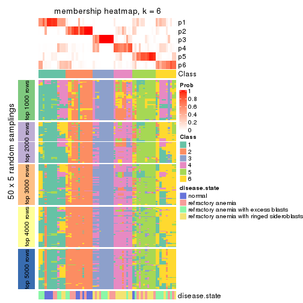
As soon as we have had the classes for columns, we can look for signatures which are significantly different between classes which can be candidate marks for certain classes. Following are the heatmaps for signatures.
Signature heatmaps where rows are scaled:
get_signatures(res, k = 2)
get_signatures(res, k = 3)
get_signatures(res, k = 4)

get_signatures(res, k = 5)
get_signatures(res, k = 6)
Signature heatmaps where rows are not scaled:
get_signatures(res, k = 2, scale_rows = FALSE)
get_signatures(res, k = 3, scale_rows = FALSE)
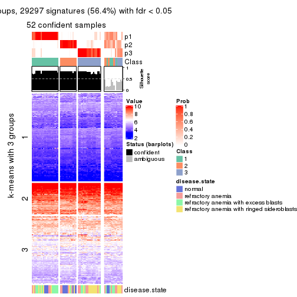
get_signatures(res, k = 4, scale_rows = FALSE)
get_signatures(res, k = 5, scale_rows = FALSE)
get_signatures(res, k = 6, scale_rows = FALSE)
Compare the overlap of signatures from different k:
compare_signatures(res)
get_signature() returns a data frame invisibly. TO get the list of signatures, the function
call should be assigned to a variable explicitly. In following code, if plot argument is set
to FALSE, no heatmap is plotted while only the differential analysis is performed.
# code only for demonstration
tb = get_signature(res, k = ..., plot = FALSE)
An example of the output of tb is:
#> which_row fdr mean_1 mean_2 scaled_mean_1 scaled_mean_2 km
#> 1 38 0.042760348 8.373488 9.131774 -0.5533452 0.5164555 1
#> 2 40 0.018707592 7.106213 8.469186 -0.6173731 0.5762149 1
#> 3 55 0.019134737 10.221463 11.207825 -0.6159697 0.5749050 1
#> 4 59 0.006059896 5.921854 7.869574 -0.6899429 0.6439467 1
#> 5 60 0.018055526 8.928898 10.211722 -0.6204761 0.5791110 1
#> 6 98 0.009384629 15.714769 14.887706 0.6635654 -0.6193277 2
...
The columns in tb are:
which_row: row indices corresponding to the input matrix.fdr: FDR for the differential test. mean_x: The mean value in group x.scaled_mean_x: The mean value in group x after rows are scaled.km: Row groups if k-means clustering is applied to rows.UMAP plot which shows how samples are separated.
dimension_reduction(res, k = 2, method = "UMAP")
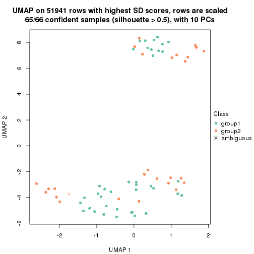
dimension_reduction(res, k = 3, method = "UMAP")
dimension_reduction(res, k = 4, method = "UMAP")
dimension_reduction(res, k = 5, method = "UMAP")

dimension_reduction(res, k = 6, method = "UMAP")
Following heatmap shows how subgroups are split when increasing k:
collect_classes(res)
Test correlation between subgroups and known annotations. If the known annotation is numeric, one-way ANOVA test is applied, and if the known annotation is discrete, chi-squared contingency table test is applied.
test_to_known_factors(res)
#> n disease.state(p) k
#> SD:skmeans 65 0.000268 2
#> SD:skmeans 52 0.007888 3
#> SD:skmeans 54 0.004578 4
#> SD:skmeans 44 0.007511 5
#> SD:skmeans 35 0.000296 6
If matrix rows can be associated to genes, consider to use GO_Enrichment(res,
...) to perform function enrichment for the signature genes.
The object with results only for a single top-value method and a single partition method can be extracted as:
res = res_list["SD", "pam"]
# you can also extract it by
# res = res_list["SD:pam"]
A summary of res and all the functions that can be applied to it:
res
#> A 'ConsensusPartition' object with k = 2, 3, 4, 5, 6.
#> On a matrix with 51941 rows and 66 columns.
#> Top rows (1000, 2000, 3000, 4000, 5000) are extracted by 'SD' method.
#> Subgroups are detected by 'pam' method.
#> Performed in total 1250 partitions by row resampling.
#> Best k for subgroups seems to be 5.
#>
#> Following methods can be applied to this 'ConsensusPartition' object:
#> [1] "cola_report" "collect_classes" "collect_plots"
#> [4] "collect_stats" "colnames" "compare_signatures"
#> [7] "consensus_heatmap" "dimension_reduction" "functional_enrichment"
#> [10] "get_anno_col" "get_anno" "get_classes"
#> [13] "get_consensus" "get_matrix" "get_membership"
#> [16] "get_param" "get_signatures" "get_stats"
#> [19] "is_best_k" "is_stable_k" "membership_heatmap"
#> [22] "ncol" "nrow" "plot_ecdf"
#> [25] "rownames" "select_partition_number" "show"
#> [28] "suggest_best_k" "test_to_known_factors"
collect_plots() function collects all the plots made from res for all k (number of partitions)
into one single page to provide an easy and fast comparison between different k.
collect_plots(res)
The plots are:
k and the heatmap of
predicted classes for each k.k.k.k.All the plots in panels can be made by individual functions and they are plotted later in this section.
select_partition_number() produces several plots showing different
statistics for choosing “optimized” k. There are following statistics:
k;k, the area increased is defined as \(A_k - A_{k-1}\).The detailed explanations of these statistics can be found in the cola vignette.
Generally speaking, lower PAC score, higher mean silhouette score or higher
concordance corresponds to better partition. Rand index and Jaccard index
measure how similar the current partition is compared to partition with k-1.
If they are too similar, we won't accept k is better than k-1.
select_partition_number(res)
The numeric values for all these statistics can be obtained by get_stats().
get_stats(res)
#> k 1-PAC mean_silhouette concordance area_increased Rand Jaccard
#> 2 2 0.485 0.787 0.883 0.3198 0.784 0.784
#> 3 3 0.359 0.666 0.811 0.8381 0.592 0.489
#> 4 4 0.475 0.456 0.725 0.2161 0.779 0.511
#> 5 5 0.649 0.697 0.839 0.0923 0.818 0.465
#> 6 6 0.753 0.685 0.837 0.0615 0.899 0.588
suggest_best_k() suggests the best \(k\) based on these statistics. The rules are as follows:
NA.suggest_best_k(res)
#> [1] 5
Following shows the table of the partitions (You need to click the show/hide
code output link to see it). The membership matrix (columns with name p*)
is inferred by
clue::cl_consensus()
function with the SE method. Basically the value in the membership matrix
represents the probability to belong to a certain group. The finall class
label for an item is determined with the group with highest probability it
belongs to.
In get_classes() function, the entropy is calculated from the membership
matrix and the silhouette score is calculated from the consensus matrix.
cbind(get_classes(res, k = 2), get_membership(res, k = 2))
#> class entropy silhouette p1 p2
#> GSM103343 1 0.2236 0.853 0.964 0.036
#> GSM103344 1 0.2236 0.853 0.964 0.036
#> GSM103345 1 0.2236 0.853 0.964 0.036
#> GSM103364 1 0.0000 0.858 1.000 0.000
#> GSM103365 1 0.0376 0.859 0.996 0.004
#> GSM103366 1 0.2603 0.853 0.956 0.044
#> GSM103369 1 0.2423 0.852 0.960 0.040
#> GSM103370 1 0.0000 0.858 1.000 0.000
#> GSM103388 1 0.0376 0.859 0.996 0.004
#> GSM103389 1 0.0000 0.858 1.000 0.000
#> GSM103390 1 0.5946 0.801 0.856 0.144
#> GSM103347 2 0.9358 0.413 0.352 0.648
#> GSM103349 1 0.9795 0.528 0.584 0.416
#> GSM103354 2 0.0000 0.934 0.000 1.000
#> GSM103355 1 0.0000 0.858 1.000 0.000
#> GSM103357 1 0.7056 0.781 0.808 0.192
#> GSM103358 1 0.0000 0.858 1.000 0.000
#> GSM103361 1 0.0000 0.858 1.000 0.000
#> GSM103363 1 0.9775 0.530 0.588 0.412
#> GSM103367 1 0.0376 0.858 0.996 0.004
#> GSM103381 1 0.0376 0.859 0.996 0.004
#> GSM103382 1 0.6973 0.774 0.812 0.188
#> GSM103384 1 0.0376 0.859 0.996 0.004
#> GSM103391 1 0.9795 0.528 0.584 0.416
#> GSM103394 1 0.9833 0.514 0.576 0.424
#> GSM103399 1 0.6712 0.789 0.824 0.176
#> GSM103401 2 0.0672 0.931 0.008 0.992
#> GSM103404 1 0.3584 0.841 0.932 0.068
#> GSM103408 1 0.1414 0.857 0.980 0.020
#> GSM103348 2 0.0938 0.927 0.012 0.988
#> GSM103351 1 0.2423 0.850 0.960 0.040
#> GSM103356 1 0.8909 0.657 0.692 0.308
#> GSM103368 1 0.9775 0.530 0.588 0.412
#> GSM103372 1 0.2423 0.852 0.960 0.040
#> GSM103375 1 0.9552 0.572 0.624 0.376
#> GSM103376 1 0.8608 0.682 0.716 0.284
#> GSM103379 1 0.0376 0.859 0.996 0.004
#> GSM103385 1 0.8144 0.710 0.748 0.252
#> GSM103387 1 0.8955 0.661 0.688 0.312
#> GSM103392 1 0.0376 0.859 0.996 0.004
#> GSM103393 1 0.9775 0.530 0.588 0.412
#> GSM103395 2 0.0000 0.934 0.000 1.000
#> GSM103396 1 0.0376 0.859 0.996 0.004
#> GSM103398 1 0.8608 0.680 0.716 0.284
#> GSM103402 1 0.9635 0.562 0.612 0.388
#> GSM103403 1 0.9795 0.528 0.584 0.416
#> GSM103405 1 0.7453 0.762 0.788 0.212
#> GSM103407 1 0.9580 0.571 0.620 0.380
#> GSM103346 2 0.2423 0.904 0.040 0.960
#> GSM103350 1 0.8608 0.662 0.716 0.284
#> GSM103352 2 0.0000 0.934 0.000 1.000
#> GSM103353 2 0.0000 0.934 0.000 1.000
#> GSM103359 1 0.2236 0.851 0.964 0.036
#> GSM103360 1 0.0000 0.858 1.000 0.000
#> GSM103362 1 0.0000 0.858 1.000 0.000
#> GSM103371 1 0.0000 0.858 1.000 0.000
#> GSM103373 1 0.2423 0.852 0.960 0.040
#> GSM103374 1 0.0000 0.858 1.000 0.000
#> GSM103377 1 0.4562 0.835 0.904 0.096
#> GSM103378 1 0.0376 0.859 0.996 0.004
#> GSM103380 1 0.0376 0.859 0.996 0.004
#> GSM103383 1 0.0376 0.859 0.996 0.004
#> GSM103386 1 0.0376 0.859 0.996 0.004
#> GSM103397 1 0.2423 0.850 0.960 0.040
#> GSM103400 1 0.0376 0.859 0.996 0.004
#> GSM103406 1 0.0000 0.858 1.000 0.000
cbind(get_classes(res, k = 3), get_membership(res, k = 3))
#> class entropy silhouette p1 p2 p3
#> GSM103343 2 0.362 0.7089 0.136 0.864 0.000
#> GSM103344 2 0.522 0.6265 0.260 0.740 0.000
#> GSM103345 2 0.480 0.6510 0.220 0.780 0.000
#> GSM103364 2 0.000 0.7422 0.000 1.000 0.000
#> GSM103365 2 0.116 0.7346 0.028 0.972 0.000
#> GSM103366 2 0.615 -0.0303 0.408 0.592 0.000
#> GSM103369 2 0.581 0.5121 0.336 0.664 0.000
#> GSM103370 2 0.465 0.5827 0.208 0.792 0.000
#> GSM103388 1 0.599 0.6554 0.632 0.368 0.000
#> GSM103389 2 0.465 0.5827 0.208 0.792 0.000
#> GSM103390 1 0.601 0.2860 0.628 0.372 0.000
#> GSM103347 1 0.787 0.3282 0.524 0.056 0.420
#> GSM103349 1 0.536 0.3128 0.724 0.276 0.000
#> GSM103354 3 0.000 0.9535 0.000 0.000 1.000
#> GSM103355 2 0.000 0.7422 0.000 1.000 0.000
#> GSM103357 2 0.588 0.5821 0.348 0.652 0.000
#> GSM103358 2 0.175 0.7455 0.048 0.952 0.000
#> GSM103361 2 0.000 0.7422 0.000 1.000 0.000
#> GSM103363 2 0.595 0.5712 0.360 0.640 0.000
#> GSM103367 2 0.334 0.7153 0.120 0.880 0.000
#> GSM103381 1 0.588 0.6729 0.652 0.348 0.000
#> GSM103382 1 0.327 0.7327 0.884 0.116 0.000
#> GSM103384 1 0.588 0.6729 0.652 0.348 0.000
#> GSM103391 1 0.153 0.7192 0.960 0.040 0.000
#> GSM103394 1 0.303 0.7382 0.912 0.076 0.012
#> GSM103399 1 0.319 0.7341 0.888 0.112 0.000
#> GSM103401 3 0.000 0.9535 0.000 0.000 1.000
#> GSM103404 1 0.776 0.6821 0.668 0.212 0.120
#> GSM103408 1 0.536 0.7010 0.724 0.276 0.000
#> GSM103348 3 0.533 0.6770 0.272 0.000 0.728
#> GSM103351 2 0.263 0.7371 0.084 0.916 0.000
#> GSM103356 2 0.588 0.5821 0.348 0.652 0.000
#> GSM103368 1 0.254 0.6547 0.920 0.080 0.000
#> GSM103372 2 0.628 0.4501 0.460 0.540 0.000
#> GSM103375 1 0.116 0.6898 0.972 0.028 0.000
#> GSM103376 1 0.312 0.7034 0.892 0.108 0.000
#> GSM103379 1 0.603 0.6258 0.624 0.376 0.000
#> GSM103385 1 0.271 0.7112 0.912 0.088 0.000
#> GSM103387 1 0.334 0.7337 0.880 0.120 0.000
#> GSM103392 1 0.573 0.6692 0.676 0.324 0.000
#> GSM103393 1 0.116 0.6898 0.972 0.028 0.000
#> GSM103395 3 0.000 0.9535 0.000 0.000 1.000
#> GSM103396 1 0.568 0.6679 0.684 0.316 0.000
#> GSM103398 1 0.493 0.7194 0.768 0.232 0.000
#> GSM103402 1 0.164 0.7177 0.956 0.044 0.000
#> GSM103403 1 0.000 0.7049 1.000 0.000 0.000
#> GSM103405 1 0.271 0.7402 0.912 0.088 0.000
#> GSM103407 1 0.236 0.7018 0.928 0.072 0.000
#> GSM103346 3 0.000 0.9535 0.000 0.000 1.000
#> GSM103350 2 0.382 0.7161 0.148 0.852 0.000
#> GSM103352 3 0.000 0.9535 0.000 0.000 1.000
#> GSM103353 3 0.000 0.9535 0.000 0.000 1.000
#> GSM103359 2 0.271 0.7323 0.088 0.912 0.000
#> GSM103360 2 0.164 0.7394 0.044 0.956 0.000
#> GSM103362 2 0.245 0.7265 0.076 0.924 0.000
#> GSM103371 2 0.465 0.5827 0.208 0.792 0.000
#> GSM103373 2 0.622 0.4158 0.432 0.568 0.000
#> GSM103374 2 0.480 0.6293 0.220 0.780 0.000
#> GSM103377 1 0.236 0.7336 0.928 0.072 0.000
#> GSM103378 2 0.465 0.5827 0.208 0.792 0.000
#> GSM103380 1 0.593 0.6646 0.644 0.356 0.000
#> GSM103383 1 0.595 0.6630 0.640 0.360 0.000
#> GSM103386 1 0.576 0.6702 0.672 0.328 0.000
#> GSM103397 1 0.631 0.3558 0.504 0.496 0.000
#> GSM103400 1 0.573 0.6865 0.676 0.324 0.000
#> GSM103406 2 0.116 0.7346 0.028 0.972 0.000
cbind(get_classes(res, k = 4), get_membership(res, k = 4))
#> class entropy silhouette p1 p2 p3 p4
#> GSM103343 2 0.0469 0.6258 0.012 0.988 0.000 0.000
#> GSM103344 2 0.1624 0.6139 0.020 0.952 0.000 0.028
#> GSM103345 2 0.1389 0.6139 0.048 0.952 0.000 0.000
#> GSM103364 2 0.3649 0.6013 0.000 0.796 0.000 0.204
#> GSM103365 2 0.3649 0.6013 0.000 0.796 0.000 0.204
#> GSM103366 2 0.4661 0.3580 0.348 0.652 0.000 0.000
#> GSM103369 2 0.4222 0.3549 0.272 0.728 0.000 0.000
#> GSM103370 4 0.7792 0.0982 0.260 0.324 0.000 0.416
#> GSM103388 1 0.7145 0.3231 0.508 0.144 0.000 0.348
#> GSM103389 4 0.7792 0.0982 0.260 0.324 0.000 0.416
#> GSM103390 1 0.5662 0.2877 0.692 0.072 0.000 0.236
#> GSM103347 3 0.6811 0.3578 0.180 0.000 0.604 0.216
#> GSM103349 2 0.7732 0.1796 0.244 0.432 0.000 0.324
#> GSM103354 3 0.0000 0.9197 0.000 0.000 1.000 0.000
#> GSM103355 2 0.0000 0.6272 0.000 1.000 0.000 0.000
#> GSM103357 2 0.4123 0.4691 0.008 0.772 0.000 0.220
#> GSM103358 2 0.2011 0.6354 0.000 0.920 0.000 0.080
#> GSM103361 2 0.3219 0.6202 0.000 0.836 0.000 0.164
#> GSM103363 2 0.7888 -0.0761 0.344 0.368 0.000 0.288
#> GSM103367 4 0.1637 0.3685 0.000 0.060 0.000 0.940
#> GSM103381 1 0.6633 0.3485 0.500 0.084 0.000 0.416
#> GSM103382 1 0.0000 0.6425 1.000 0.000 0.000 0.000
#> GSM103384 1 0.6031 0.4150 0.564 0.048 0.000 0.388
#> GSM103391 1 0.0707 0.6358 0.980 0.000 0.000 0.020
#> GSM103394 1 0.0000 0.6425 1.000 0.000 0.000 0.000
#> GSM103399 1 0.0188 0.6440 0.996 0.000 0.000 0.004
#> GSM103401 3 0.0000 0.9197 0.000 0.000 1.000 0.000
#> GSM103404 1 0.7385 0.4121 0.556 0.024 0.112 0.308
#> GSM103408 1 0.1584 0.6420 0.952 0.012 0.000 0.036
#> GSM103348 4 0.6815 0.0527 0.136 0.000 0.284 0.580
#> GSM103351 2 0.5292 0.5870 0.060 0.724 0.000 0.216
#> GSM103356 2 0.4790 0.2632 0.000 0.620 0.000 0.380
#> GSM103368 4 0.7006 0.2877 0.216 0.204 0.000 0.580
#> GSM103372 4 0.3688 0.3569 0.000 0.208 0.000 0.792
#> GSM103375 4 0.6984 0.2949 0.236 0.184 0.000 0.580
#> GSM103376 4 0.4181 0.3997 0.052 0.128 0.000 0.820
#> GSM103379 4 0.7621 -0.1970 0.376 0.204 0.000 0.420
#> GSM103385 4 0.1557 0.4173 0.056 0.000 0.000 0.944
#> GSM103387 1 0.1118 0.6405 0.964 0.000 0.000 0.036
#> GSM103392 1 0.6495 0.3425 0.492 0.072 0.000 0.436
#> GSM103393 4 0.7085 0.2794 0.300 0.156 0.000 0.544
#> GSM103395 3 0.0000 0.9197 0.000 0.000 1.000 0.000
#> GSM103396 1 0.6102 0.3739 0.532 0.048 0.000 0.420
#> GSM103398 1 0.1174 0.6450 0.968 0.012 0.000 0.020
#> GSM103402 1 0.0592 0.6381 0.984 0.000 0.000 0.016
#> GSM103403 1 0.4134 0.3011 0.740 0.000 0.000 0.260
#> GSM103405 1 0.0469 0.6419 0.988 0.012 0.000 0.000
#> GSM103407 1 0.1022 0.6265 0.968 0.000 0.000 0.032
#> GSM103346 3 0.0000 0.9197 0.000 0.000 1.000 0.000
#> GSM103350 4 0.1743 0.4172 0.056 0.004 0.000 0.940
#> GSM103352 3 0.0000 0.9197 0.000 0.000 1.000 0.000
#> GSM103353 3 0.0000 0.9197 0.000 0.000 1.000 0.000
#> GSM103359 2 0.5325 0.5860 0.096 0.744 0.000 0.160
#> GSM103360 2 0.3486 0.6132 0.000 0.812 0.000 0.188
#> GSM103362 2 0.0188 0.6268 0.004 0.996 0.000 0.000
#> GSM103371 4 0.7792 0.0982 0.260 0.324 0.000 0.416
#> GSM103373 2 0.7922 -0.2198 0.320 0.340 0.000 0.340
#> GSM103374 2 0.6257 0.1796 0.056 0.508 0.000 0.436
#> GSM103377 1 0.4753 0.4769 0.788 0.128 0.000 0.084
#> GSM103378 4 0.7770 0.0995 0.248 0.336 0.000 0.416
#> GSM103380 1 0.6918 0.3193 0.472 0.108 0.000 0.420
#> GSM103383 1 0.6831 0.3241 0.480 0.100 0.000 0.420
#> GSM103386 1 0.6332 0.3784 0.532 0.064 0.000 0.404
#> GSM103397 2 0.7417 0.3449 0.284 0.508 0.000 0.208
#> GSM103400 1 0.3435 0.6106 0.864 0.036 0.000 0.100
#> GSM103406 2 0.3649 0.6013 0.000 0.796 0.000 0.204
cbind(get_classes(res, k = 5), get_membership(res, k = 5))
#> class entropy silhouette p1 p2 p3 p4 p5
#> GSM103343 2 0.0000 0.743 0.000 1.000 0.000 0.000 0.000
#> GSM103344 2 0.0000 0.743 0.000 1.000 0.000 0.000 0.000
#> GSM103345 2 0.0000 0.743 0.000 1.000 0.000 0.000 0.000
#> GSM103364 2 0.3561 0.723 0.260 0.740 0.000 0.000 0.000
#> GSM103365 2 0.3689 0.724 0.256 0.740 0.000 0.000 0.004
#> GSM103366 2 0.4306 -0.174 0.000 0.508 0.000 0.000 0.492
#> GSM103369 1 0.3837 0.610 0.692 0.308 0.000 0.000 0.000
#> GSM103370 1 0.1341 0.777 0.944 0.056 0.000 0.000 0.000
#> GSM103388 1 0.1430 0.792 0.944 0.004 0.000 0.000 0.052
#> GSM103389 1 0.0290 0.797 0.992 0.008 0.000 0.000 0.000
#> GSM103390 1 0.4706 0.625 0.692 0.052 0.000 0.000 0.256
#> GSM103347 3 0.5555 0.522 0.092 0.000 0.640 0.008 0.260
#> GSM103349 4 0.6351 0.276 0.000 0.316 0.000 0.500 0.184
#> GSM103354 3 0.0000 0.940 0.000 0.000 1.000 0.000 0.000
#> GSM103355 2 0.0000 0.743 0.000 1.000 0.000 0.000 0.000
#> GSM103357 2 0.2677 0.658 0.000 0.872 0.000 0.016 0.112
#> GSM103358 2 0.1270 0.753 0.052 0.948 0.000 0.000 0.000
#> GSM103361 2 0.3074 0.746 0.196 0.804 0.000 0.000 0.000
#> GSM103363 5 0.4249 0.250 0.000 0.432 0.000 0.000 0.568
#> GSM103367 4 0.0290 0.857 0.008 0.000 0.000 0.992 0.000
#> GSM103381 1 0.0162 0.797 0.996 0.004 0.000 0.000 0.000
#> GSM103382 1 0.4297 0.303 0.528 0.000 0.000 0.000 0.472
#> GSM103384 1 0.1043 0.801 0.960 0.000 0.000 0.000 0.040
#> GSM103391 5 0.0000 0.789 0.000 0.000 0.000 0.000 1.000
#> GSM103394 5 0.0000 0.789 0.000 0.000 0.000 0.000 1.000
#> GSM103399 5 0.3642 0.548 0.232 0.000 0.000 0.008 0.760
#> GSM103401 3 0.0000 0.940 0.000 0.000 1.000 0.000 0.000
#> GSM103404 1 0.5795 0.626 0.644 0.000 0.132 0.012 0.212
#> GSM103408 1 0.4088 0.567 0.632 0.000 0.000 0.000 0.368
#> GSM103348 4 0.2068 0.814 0.000 0.000 0.004 0.904 0.092
#> GSM103351 2 0.4999 0.704 0.128 0.720 0.000 0.148 0.004
#> GSM103356 2 0.3876 0.402 0.000 0.684 0.000 0.316 0.000
#> GSM103368 4 0.2074 0.848 0.000 0.104 0.000 0.896 0.000
#> GSM103372 4 0.1965 0.852 0.000 0.096 0.000 0.904 0.000
#> GSM103375 4 0.2068 0.853 0.000 0.092 0.000 0.904 0.004
#> GSM103376 4 0.0404 0.866 0.000 0.012 0.000 0.988 0.000
#> GSM103379 1 0.4876 0.684 0.752 0.132 0.000 0.096 0.020
#> GSM103385 4 0.0000 0.862 0.000 0.000 0.000 1.000 0.000
#> GSM103387 1 0.4730 0.652 0.688 0.000 0.000 0.052 0.260
#> GSM103392 1 0.2124 0.787 0.900 0.000 0.000 0.096 0.004
#> GSM103393 5 0.5064 0.462 0.000 0.088 0.000 0.232 0.680
#> GSM103395 3 0.0000 0.940 0.000 0.000 1.000 0.000 0.000
#> GSM103396 1 0.4946 0.707 0.712 0.000 0.000 0.120 0.168
#> GSM103398 5 0.3816 0.360 0.304 0.000 0.000 0.000 0.696
#> GSM103402 5 0.0000 0.789 0.000 0.000 0.000 0.000 1.000
#> GSM103403 5 0.0000 0.789 0.000 0.000 0.000 0.000 1.000
#> GSM103405 5 0.0000 0.789 0.000 0.000 0.000 0.000 1.000
#> GSM103407 5 0.0000 0.789 0.000 0.000 0.000 0.000 1.000
#> GSM103346 3 0.0000 0.940 0.000 0.000 1.000 0.000 0.000
#> GSM103350 4 0.0000 0.862 0.000 0.000 0.000 1.000 0.000
#> GSM103352 3 0.0000 0.940 0.000 0.000 1.000 0.000 0.000
#> GSM103353 3 0.0000 0.940 0.000 0.000 1.000 0.000 0.000
#> GSM103359 2 0.5389 0.711 0.112 0.732 0.000 0.096 0.060
#> GSM103360 2 0.4469 0.724 0.148 0.756 0.000 0.096 0.000
#> GSM103362 2 0.0290 0.746 0.008 0.992 0.000 0.000 0.000
#> GSM103371 1 0.0290 0.797 0.992 0.008 0.000 0.000 0.000
#> GSM103373 1 0.3790 0.732 0.832 0.020 0.000 0.096 0.052
#> GSM103374 2 0.6470 0.276 0.348 0.460 0.000 0.192 0.000
#> GSM103377 5 0.5870 0.438 0.284 0.136 0.000 0.000 0.580
#> GSM103378 1 0.0290 0.797 0.992 0.008 0.000 0.000 0.000
#> GSM103380 1 0.3702 0.763 0.820 0.000 0.000 0.096 0.084
#> GSM103383 1 0.1965 0.786 0.904 0.000 0.000 0.096 0.000
#> GSM103386 1 0.4548 0.725 0.748 0.000 0.000 0.096 0.156
#> GSM103397 2 0.7635 0.393 0.160 0.468 0.000 0.096 0.276
#> GSM103400 1 0.2929 0.750 0.820 0.000 0.000 0.000 0.180
#> GSM103406 2 0.3612 0.719 0.268 0.732 0.000 0.000 0.000
cbind(get_classes(res, k = 6), get_membership(res, k = 6))
#> class entropy silhouette p1 p2 p3 p4 p5 p6
#> GSM103343 2 0.0000 0.717 0.000 1.000 0.000 0.000 0.000 0.000
#> GSM103344 2 0.0000 0.717 0.000 1.000 0.000 0.000 0.000 0.000
#> GSM103345 2 0.0000 0.717 0.000 1.000 0.000 0.000 0.000 0.000
#> GSM103364 2 0.5065 0.521 0.396 0.524 0.000 0.000 0.000 0.080
#> GSM103365 2 0.5207 0.506 0.404 0.512 0.000 0.000 0.004 0.080
#> GSM103366 5 0.4096 0.207 0.000 0.484 0.000 0.000 0.508 0.008
#> GSM103369 1 0.3765 0.430 0.596 0.404 0.000 0.000 0.000 0.000
#> GSM103370 1 0.0000 0.783 1.000 0.000 0.000 0.000 0.000 0.000
#> GSM103388 1 0.0363 0.781 0.988 0.000 0.000 0.000 0.012 0.000
#> GSM103389 1 0.0000 0.783 1.000 0.000 0.000 0.000 0.000 0.000
#> GSM103390 1 0.4315 0.429 0.612 0.016 0.000 0.008 0.364 0.000
#> GSM103347 6 0.5928 0.187 0.020 0.000 0.404 0.000 0.124 0.452
#> GSM103349 4 0.5279 0.197 0.000 0.384 0.000 0.532 0.072 0.012
#> GSM103354 3 0.0000 1.000 0.000 0.000 1.000 0.000 0.000 0.000
#> GSM103355 2 0.1501 0.729 0.000 0.924 0.000 0.000 0.000 0.076
#> GSM103357 2 0.0692 0.705 0.000 0.976 0.000 0.004 0.020 0.000
#> GSM103358 2 0.1700 0.730 0.004 0.916 0.000 0.000 0.000 0.080
#> GSM103361 2 0.3367 0.715 0.104 0.816 0.000 0.000 0.000 0.080
#> GSM103363 5 0.3607 0.538 0.000 0.348 0.000 0.000 0.652 0.000
#> GSM103367 6 0.2454 0.757 0.000 0.000 0.000 0.160 0.000 0.840
#> GSM103381 1 0.0000 0.783 1.000 0.000 0.000 0.000 0.000 0.000
#> GSM103382 1 0.3828 0.320 0.560 0.000 0.000 0.000 0.440 0.000
#> GSM103384 1 0.0713 0.778 0.972 0.000 0.000 0.000 0.028 0.000
#> GSM103391 5 0.0363 0.787 0.000 0.000 0.000 0.000 0.988 0.012
#> GSM103394 5 0.0000 0.788 0.000 0.000 0.000 0.000 1.000 0.000
#> GSM103399 5 0.3063 0.753 0.052 0.000 0.000 0.024 0.860 0.064
#> GSM103401 3 0.0000 1.000 0.000 0.000 1.000 0.000 0.000 0.000
#> GSM103404 6 0.4608 0.675 0.000 0.000 0.148 0.024 0.096 0.732
#> GSM103408 5 0.3869 -0.280 0.500 0.000 0.000 0.000 0.500 0.000
#> GSM103348 4 0.0000 0.922 0.000 0.000 0.000 1.000 0.000 0.000
#> GSM103351 2 0.4185 0.384 0.012 0.496 0.000 0.000 0.000 0.492
#> GSM103356 2 0.3823 0.137 0.000 0.564 0.000 0.436 0.000 0.000
#> GSM103368 4 0.0260 0.918 0.000 0.008 0.000 0.992 0.000 0.000
#> GSM103372 4 0.0000 0.922 0.000 0.000 0.000 1.000 0.000 0.000
#> GSM103375 4 0.0000 0.922 0.000 0.000 0.000 1.000 0.000 0.000
#> GSM103376 4 0.0000 0.922 0.000 0.000 0.000 1.000 0.000 0.000
#> GSM103379 6 0.2664 0.833 0.136 0.000 0.000 0.000 0.016 0.848
#> GSM103385 4 0.0260 0.917 0.000 0.000 0.000 0.992 0.000 0.008
#> GSM103387 1 0.5664 0.473 0.576 0.000 0.000 0.072 0.304 0.048
#> GSM103392 6 0.2454 0.817 0.160 0.000 0.000 0.000 0.000 0.840
#> GSM103393 5 0.3494 0.574 0.000 0.000 0.000 0.252 0.736 0.012
#> GSM103395 3 0.0000 1.000 0.000 0.000 1.000 0.000 0.000 0.000
#> GSM103396 6 0.3098 0.836 0.064 0.000 0.000 0.004 0.088 0.844
#> GSM103398 5 0.2445 0.697 0.108 0.000 0.000 0.000 0.872 0.020
#> GSM103402 5 0.0000 0.788 0.000 0.000 0.000 0.000 1.000 0.000
#> GSM103403 5 0.0260 0.787 0.000 0.000 0.000 0.008 0.992 0.000
#> GSM103405 5 0.1327 0.777 0.000 0.000 0.000 0.000 0.936 0.064
#> GSM103407 5 0.0000 0.788 0.000 0.000 0.000 0.000 1.000 0.000
#> GSM103346 3 0.0000 1.000 0.000 0.000 1.000 0.000 0.000 0.000
#> GSM103350 4 0.0363 0.917 0.000 0.000 0.000 0.988 0.000 0.012
#> GSM103352 3 0.0000 1.000 0.000 0.000 1.000 0.000 0.000 0.000
#> GSM103353 3 0.0000 1.000 0.000 0.000 1.000 0.000 0.000 0.000
#> GSM103359 2 0.4500 0.379 0.012 0.496 0.000 0.000 0.012 0.480
#> GSM103360 2 0.4175 0.420 0.012 0.524 0.000 0.000 0.000 0.464
#> GSM103362 2 0.1644 0.730 0.004 0.920 0.000 0.000 0.000 0.076
#> GSM103371 1 0.0000 0.783 1.000 0.000 0.000 0.000 0.000 0.000
#> GSM103373 1 0.2784 0.716 0.848 0.000 0.000 0.132 0.008 0.012
#> GSM103374 6 0.2218 0.822 0.104 0.000 0.000 0.012 0.000 0.884
#> GSM103377 5 0.4510 0.625 0.172 0.100 0.000 0.000 0.720 0.008
#> GSM103378 1 0.0000 0.783 1.000 0.000 0.000 0.000 0.000 0.000
#> GSM103380 6 0.2965 0.839 0.080 0.000 0.000 0.000 0.072 0.848
#> GSM103383 6 0.2416 0.820 0.156 0.000 0.000 0.000 0.000 0.844
#> GSM103386 1 0.5167 0.181 0.500 0.000 0.000 0.000 0.088 0.412
#> GSM103397 6 0.2714 0.806 0.012 0.004 0.000 0.000 0.136 0.848
#> GSM103400 1 0.2631 0.699 0.820 0.000 0.000 0.000 0.180 0.000
#> GSM103406 2 0.5050 0.495 0.416 0.508 0.000 0.000 0.000 0.076
Heatmaps for the consensus matrix. It visualizes the probability of two samples to be in a same group.
consensus_heatmap(res, k = 2)
consensus_heatmap(res, k = 3)
consensus_heatmap(res, k = 4)

consensus_heatmap(res, k = 5)
consensus_heatmap(res, k = 6)
Heatmaps for the membership of samples in all partitions to see how consistent they are:
membership_heatmap(res, k = 2)
membership_heatmap(res, k = 3)
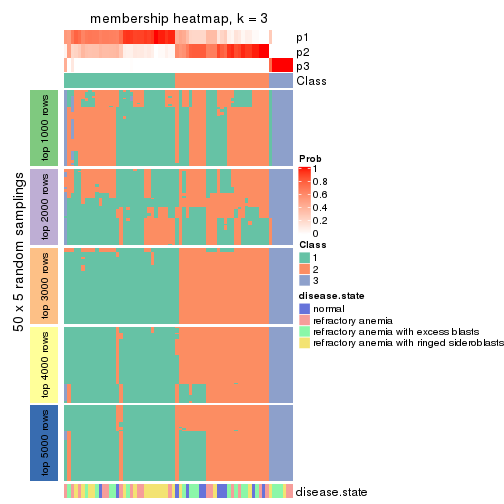
membership_heatmap(res, k = 4)
membership_heatmap(res, k = 5)
membership_heatmap(res, k = 6)
As soon as we have had the classes for columns, we can look for signatures which are significantly different between classes which can be candidate marks for certain classes. Following are the heatmaps for signatures.
Signature heatmaps where rows are scaled:
get_signatures(res, k = 2)
get_signatures(res, k = 3)
get_signatures(res, k = 4)
get_signatures(res, k = 5)
get_signatures(res, k = 6)
Signature heatmaps where rows are not scaled:
get_signatures(res, k = 2, scale_rows = FALSE)
get_signatures(res, k = 3, scale_rows = FALSE)
get_signatures(res, k = 4, scale_rows = FALSE)
get_signatures(res, k = 5, scale_rows = FALSE)
get_signatures(res, k = 6, scale_rows = FALSE)
Compare the overlap of signatures from different k:
compare_signatures(res)
get_signature() returns a data frame invisibly. TO get the list of signatures, the function
call should be assigned to a variable explicitly. In following code, if plot argument is set
to FALSE, no heatmap is plotted while only the differential analysis is performed.
# code only for demonstration
tb = get_signature(res, k = ..., plot = FALSE)
An example of the output of tb is:
#> which_row fdr mean_1 mean_2 scaled_mean_1 scaled_mean_2 km
#> 1 38 0.042760348 8.373488 9.131774 -0.5533452 0.5164555 1
#> 2 40 0.018707592 7.106213 8.469186 -0.6173731 0.5762149 1
#> 3 55 0.019134737 10.221463 11.207825 -0.6159697 0.5749050 1
#> 4 59 0.006059896 5.921854 7.869574 -0.6899429 0.6439467 1
#> 5 60 0.018055526 8.928898 10.211722 -0.6204761 0.5791110 1
#> 6 98 0.009384629 15.714769 14.887706 0.6635654 -0.6193277 2
...
The columns in tb are:
which_row: row indices corresponding to the input matrix.fdr: FDR for the differential test. mean_x: The mean value in group x.scaled_mean_x: The mean value in group x after rows are scaled.km: Row groups if k-means clustering is applied to rows.UMAP plot which shows how samples are separated.
dimension_reduction(res, k = 2, method = "UMAP")

dimension_reduction(res, k = 3, method = "UMAP")
dimension_reduction(res, k = 4, method = "UMAP")
dimension_reduction(res, k = 5, method = "UMAP")
dimension_reduction(res, k = 6, method = "UMAP")
Following heatmap shows how subgroups are split when increasing k:
collect_classes(res)
Test correlation between subgroups and known annotations. If the known annotation is numeric, one-way ANOVA test is applied, and if the known annotation is discrete, chi-squared contingency table test is applied.
test_to_known_factors(res)
#> n disease.state(p) k
#> SD:pam 65 0.572871 2
#> SD:pam 59 0.006199 3
#> SD:pam 30 0.031963 4
#> SD:pam 56 0.018511 5
#> SD:pam 52 0.000634 6
If matrix rows can be associated to genes, consider to use GO_Enrichment(res,
...) to perform function enrichment for the signature genes.
The object with results only for a single top-value method and a single partition method can be extracted as:
res = res_list["SD", "mclust"]
# you can also extract it by
# res = res_list["SD:mclust"]
A summary of res and all the functions that can be applied to it:
res
#> A 'ConsensusPartition' object with k = 2, 3, 4, 5, 6.
#> On a matrix with 51941 rows and 66 columns.
#> Top rows (1000, 2000, 3000, 4000, 5000) are extracted by 'SD' method.
#> Subgroups are detected by 'mclust' method.
#> Performed in total 1250 partitions by row resampling.
#> Best k for subgroups seems to be 3.
#>
#> Following methods can be applied to this 'ConsensusPartition' object:
#> [1] "cola_report" "collect_classes" "collect_plots"
#> [4] "collect_stats" "colnames" "compare_signatures"
#> [7] "consensus_heatmap" "dimension_reduction" "functional_enrichment"
#> [10] "get_anno_col" "get_anno" "get_classes"
#> [13] "get_consensus" "get_matrix" "get_membership"
#> [16] "get_param" "get_signatures" "get_stats"
#> [19] "is_best_k" "is_stable_k" "membership_heatmap"
#> [22] "ncol" "nrow" "plot_ecdf"
#> [25] "rownames" "select_partition_number" "show"
#> [28] "suggest_best_k" "test_to_known_factors"
collect_plots() function collects all the plots made from res for all k (number of partitions)
into one single page to provide an easy and fast comparison between different k.
collect_plots(res)
The plots are:
k and the heatmap of
predicted classes for each k.k.k.k.All the plots in panels can be made by individual functions and they are plotted later in this section.
select_partition_number() produces several plots showing different
statistics for choosing “optimized” k. There are following statistics:
k;k, the area increased is defined as \(A_k - A_{k-1}\).The detailed explanations of these statistics can be found in the cola vignette.
Generally speaking, lower PAC score, higher mean silhouette score or higher
concordance corresponds to better partition. Rand index and Jaccard index
measure how similar the current partition is compared to partition with k-1.
If they are too similar, we won't accept k is better than k-1.
select_partition_number(res)
The numeric values for all these statistics can be obtained by get_stats().
get_stats(res)
#> k 1-PAC mean_silhouette concordance area_increased Rand Jaccard
#> 2 2 0.801 0.936 0.970 0.2352 0.784 0.784
#> 3 3 0.344 0.565 0.789 1.3109 0.591 0.487
#> 4 4 0.599 0.382 0.704 0.2837 0.815 0.586
#> 5 5 0.607 0.528 0.788 0.0869 0.718 0.315
#> 6 6 0.589 0.545 0.730 0.0585 0.899 0.613
suggest_best_k() suggests the best \(k\) based on these statistics. The rules are as follows:
NA.suggest_best_k(res)
#> [1] 3
Following shows the table of the partitions (You need to click the show/hide
code output link to see it). The membership matrix (columns with name p*)
is inferred by
clue::cl_consensus()
function with the SE method. Basically the value in the membership matrix
represents the probability to belong to a certain group. The finall class
label for an item is determined with the group with highest probability it
belongs to.
In get_classes() function, the entropy is calculated from the membership
matrix and the silhouette score is calculated from the consensus matrix.
cbind(get_classes(res, k = 2), get_membership(res, k = 2))
#> class entropy silhouette p1 p2
#> GSM103343 1 0.0000 0.971 1.000 0.000
#> GSM103344 1 0.0000 0.971 1.000 0.000
#> GSM103345 1 0.0000 0.971 1.000 0.000
#> GSM103364 1 0.0000 0.971 1.000 0.000
#> GSM103365 1 0.0000 0.971 1.000 0.000
#> GSM103366 1 0.0000 0.971 1.000 0.000
#> GSM103369 1 0.0000 0.971 1.000 0.000
#> GSM103370 1 0.0000 0.971 1.000 0.000
#> GSM103388 1 0.0000 0.971 1.000 0.000
#> GSM103389 1 0.0000 0.971 1.000 0.000
#> GSM103390 1 0.0000 0.971 1.000 0.000
#> GSM103347 2 0.9608 0.330 0.384 0.616
#> GSM103349 1 0.2778 0.937 0.952 0.048
#> GSM103354 2 0.0000 0.928 0.000 1.000
#> GSM103355 1 0.0000 0.971 1.000 0.000
#> GSM103357 1 0.0000 0.971 1.000 0.000
#> GSM103358 1 0.0000 0.971 1.000 0.000
#> GSM103361 1 0.0000 0.971 1.000 0.000
#> GSM103363 1 0.0000 0.971 1.000 0.000
#> GSM103367 1 0.0000 0.971 1.000 0.000
#> GSM103381 1 0.0000 0.971 1.000 0.000
#> GSM103382 1 0.5059 0.877 0.888 0.112
#> GSM103384 1 0.0000 0.971 1.000 0.000
#> GSM103391 1 0.6801 0.804 0.820 0.180
#> GSM103394 1 0.6801 0.804 0.820 0.180
#> GSM103399 1 0.0000 0.971 1.000 0.000
#> GSM103401 2 0.0000 0.928 0.000 1.000
#> GSM103404 1 0.6887 0.799 0.816 0.184
#> GSM103408 1 0.2778 0.937 0.952 0.048
#> GSM103348 2 0.4161 0.864 0.084 0.916
#> GSM103351 1 0.0000 0.971 1.000 0.000
#> GSM103356 1 0.0000 0.971 1.000 0.000
#> GSM103368 1 0.0000 0.971 1.000 0.000
#> GSM103372 1 0.0000 0.971 1.000 0.000
#> GSM103375 1 0.0000 0.971 1.000 0.000
#> GSM103376 1 0.2423 0.943 0.960 0.040
#> GSM103379 1 0.0000 0.971 1.000 0.000
#> GSM103385 1 0.0000 0.971 1.000 0.000
#> GSM103387 1 0.0000 0.971 1.000 0.000
#> GSM103392 1 0.0000 0.971 1.000 0.000
#> GSM103393 1 0.0000 0.971 1.000 0.000
#> GSM103395 2 0.0000 0.928 0.000 1.000
#> GSM103396 1 0.0000 0.971 1.000 0.000
#> GSM103398 1 0.2043 0.950 0.968 0.032
#> GSM103402 1 0.5408 0.864 0.876 0.124
#> GSM103403 1 0.6801 0.804 0.820 0.180
#> GSM103405 1 0.6531 0.819 0.832 0.168
#> GSM103407 1 0.5178 0.873 0.884 0.116
#> GSM103346 2 0.0000 0.928 0.000 1.000
#> GSM103350 1 0.3114 0.931 0.944 0.056
#> GSM103352 2 0.0000 0.928 0.000 1.000
#> GSM103353 2 0.0000 0.928 0.000 1.000
#> GSM103359 1 0.2948 0.934 0.948 0.052
#> GSM103360 1 0.0000 0.971 1.000 0.000
#> GSM103362 1 0.0000 0.971 1.000 0.000
#> GSM103371 1 0.0000 0.971 1.000 0.000
#> GSM103373 1 0.0000 0.971 1.000 0.000
#> GSM103374 1 0.0000 0.971 1.000 0.000
#> GSM103377 1 0.0000 0.971 1.000 0.000
#> GSM103378 1 0.0000 0.971 1.000 0.000
#> GSM103380 1 0.0000 0.971 1.000 0.000
#> GSM103383 1 0.0000 0.971 1.000 0.000
#> GSM103386 1 0.0376 0.969 0.996 0.004
#> GSM103397 1 0.0000 0.971 1.000 0.000
#> GSM103400 1 0.0000 0.971 1.000 0.000
#> GSM103406 1 0.0000 0.971 1.000 0.000
cbind(get_classes(res, k = 3), get_membership(res, k = 3))
#> class entropy silhouette p1 p2 p3
#> GSM103343 2 0.2165 0.597 0.064 0.936 0.000
#> GSM103344 2 0.1031 0.617 0.024 0.976 0.000
#> GSM103345 2 0.1031 0.617 0.024 0.976 0.000
#> GSM103364 1 0.6140 0.561 0.596 0.404 0.000
#> GSM103365 1 0.4974 0.759 0.764 0.236 0.000
#> GSM103366 2 0.0747 0.613 0.016 0.984 0.000
#> GSM103369 2 0.1031 0.617 0.024 0.976 0.000
#> GSM103370 1 0.4974 0.759 0.764 0.236 0.000
#> GSM103388 1 0.6079 0.605 0.612 0.388 0.000
#> GSM103389 1 0.4974 0.759 0.764 0.236 0.000
#> GSM103390 2 0.4062 0.594 0.164 0.836 0.000
#> GSM103347 3 0.2584 0.928 0.064 0.008 0.928
#> GSM103349 2 0.6302 0.564 0.480 0.520 0.000
#> GSM103354 3 0.0000 0.989 0.000 0.000 1.000
#> GSM103355 2 0.2959 0.560 0.100 0.900 0.000
#> GSM103357 2 0.2448 0.587 0.076 0.924 0.000
#> GSM103358 2 0.5948 -0.118 0.360 0.640 0.000
#> GSM103361 1 0.6180 0.556 0.584 0.416 0.000
#> GSM103363 2 0.0424 0.616 0.008 0.992 0.000
#> GSM103367 1 0.6225 0.429 0.568 0.432 0.000
#> GSM103381 1 0.4974 0.759 0.764 0.236 0.000
#> GSM103382 2 0.5497 0.370 0.292 0.708 0.000
#> GSM103384 1 0.4974 0.759 0.764 0.236 0.000
#> GSM103391 2 0.4121 0.590 0.168 0.832 0.000
#> GSM103394 2 0.4796 0.522 0.220 0.780 0.000
#> GSM103399 2 0.6026 0.105 0.376 0.624 0.000
#> GSM103401 3 0.0000 0.989 0.000 0.000 1.000
#> GSM103404 1 0.5733 0.670 0.676 0.324 0.000
#> GSM103408 1 0.6235 0.532 0.564 0.436 0.000
#> GSM103348 1 0.9111 -0.243 0.472 0.144 0.384
#> GSM103351 1 0.6252 0.413 0.556 0.444 0.000
#> GSM103356 2 0.5363 0.546 0.276 0.724 0.000
#> GSM103368 2 0.6192 0.589 0.420 0.580 0.000
#> GSM103372 2 0.6299 0.565 0.476 0.524 0.000
#> GSM103375 2 0.6215 0.588 0.428 0.572 0.000
#> GSM103376 2 0.6307 0.558 0.488 0.512 0.000
#> GSM103379 1 0.4974 0.759 0.764 0.236 0.000
#> GSM103385 1 0.6291 -0.545 0.532 0.468 0.000
#> GSM103387 2 0.6045 0.595 0.380 0.620 0.000
#> GSM103392 1 0.4974 0.759 0.764 0.236 0.000
#> GSM103393 2 0.6111 0.584 0.396 0.604 0.000
#> GSM103395 3 0.0000 0.989 0.000 0.000 1.000
#> GSM103396 1 0.4974 0.759 0.764 0.236 0.000
#> GSM103398 1 0.6302 0.422 0.520 0.480 0.000
#> GSM103402 2 0.4121 0.590 0.168 0.832 0.000
#> GSM103403 2 0.6140 0.583 0.404 0.596 0.000
#> GSM103405 1 0.6225 0.540 0.568 0.432 0.000
#> GSM103407 2 0.4062 0.594 0.164 0.836 0.000
#> GSM103346 3 0.0000 0.989 0.000 0.000 1.000
#> GSM103350 1 0.6307 -0.566 0.512 0.488 0.000
#> GSM103352 3 0.0000 0.989 0.000 0.000 1.000
#> GSM103353 3 0.0000 0.989 0.000 0.000 1.000
#> GSM103359 1 0.4974 0.759 0.764 0.236 0.000
#> GSM103360 1 0.6111 0.571 0.604 0.396 0.000
#> GSM103362 2 0.5835 -0.123 0.340 0.660 0.000
#> GSM103371 1 0.5016 0.756 0.760 0.240 0.000
#> GSM103373 2 0.6309 -0.373 0.496 0.504 0.000
#> GSM103374 1 0.6252 0.448 0.556 0.444 0.000
#> GSM103377 2 0.4346 0.583 0.184 0.816 0.000
#> GSM103378 1 0.4974 0.759 0.764 0.236 0.000
#> GSM103380 1 0.4974 0.759 0.764 0.236 0.000
#> GSM103383 1 0.4974 0.759 0.764 0.236 0.000
#> GSM103386 1 0.4974 0.759 0.764 0.236 0.000
#> GSM103397 1 0.4974 0.759 0.764 0.236 0.000
#> GSM103400 1 0.6168 0.576 0.588 0.412 0.000
#> GSM103406 1 0.4974 0.759 0.764 0.236 0.000
cbind(get_classes(res, k = 4), get_membership(res, k = 4))
#> class entropy silhouette p1 p2 p3 p4
#> GSM103343 2 0.4978 0.661156 0.004 0.612 0.000 0.384
#> GSM103344 2 0.4978 0.661156 0.004 0.612 0.000 0.384
#> GSM103345 2 0.4978 0.661156 0.004 0.612 0.000 0.384
#> GSM103364 1 0.5913 0.216804 0.600 0.352 0.000 0.048
#> GSM103365 1 0.4855 0.625926 0.600 0.000 0.000 0.400
#> GSM103366 2 0.5016 0.651970 0.004 0.600 0.000 0.396
#> GSM103369 2 0.4978 0.661156 0.004 0.612 0.000 0.384
#> GSM103370 1 0.4855 0.625926 0.600 0.000 0.000 0.400
#> GSM103388 1 0.5028 0.622270 0.596 0.004 0.000 0.400
#> GSM103389 1 0.4855 0.625926 0.600 0.000 0.000 0.400
#> GSM103390 4 0.4655 -0.143112 0.004 0.312 0.000 0.684
#> GSM103347 3 0.3486 0.768924 0.188 0.000 0.812 0.000
#> GSM103349 1 0.7587 -0.271210 0.412 0.392 0.000 0.196
#> GSM103354 3 0.0000 0.965215 0.000 0.000 1.000 0.000
#> GSM103355 2 0.5112 0.658880 0.008 0.608 0.000 0.384
#> GSM103357 2 0.4978 0.661156 0.004 0.612 0.000 0.384
#> GSM103358 2 0.5882 0.611278 0.048 0.608 0.000 0.344
#> GSM103361 1 0.5398 0.122947 0.580 0.404 0.000 0.016
#> GSM103363 2 0.4843 0.653207 0.000 0.604 0.000 0.396
#> GSM103367 1 0.3649 -0.013825 0.796 0.204 0.000 0.000
#> GSM103381 1 0.4855 0.625926 0.600 0.000 0.000 0.400
#> GSM103382 4 0.0336 0.373958 0.000 0.008 0.000 0.992
#> GSM103384 1 0.4855 0.625926 0.600 0.000 0.000 0.400
#> GSM103391 4 0.4855 -0.021922 0.400 0.000 0.000 0.600
#> GSM103394 4 0.0000 0.376158 0.000 0.000 0.000 1.000
#> GSM103399 4 0.3024 0.233430 0.148 0.000 0.000 0.852
#> GSM103401 3 0.0000 0.965215 0.000 0.000 1.000 0.000
#> GSM103404 1 0.4961 0.566159 0.552 0.000 0.000 0.448
#> GSM103408 4 0.4800 -0.211947 0.340 0.004 0.000 0.656
#> GSM103348 1 0.8074 -0.270808 0.404 0.384 0.016 0.196
#> GSM103351 1 0.4817 -0.109482 0.612 0.388 0.000 0.000
#> GSM103356 2 0.7861 0.243828 0.360 0.368 0.000 0.272
#> GSM103368 1 0.7683 -0.594134 0.400 0.216 0.000 0.384
#> GSM103372 2 0.5300 0.153050 0.408 0.580 0.000 0.012
#> GSM103375 2 0.5050 0.151658 0.408 0.588 0.000 0.004
#> GSM103376 2 0.4888 0.145095 0.412 0.588 0.000 0.000
#> GSM103379 1 0.4855 0.625926 0.600 0.000 0.000 0.400
#> GSM103385 1 0.4843 -0.121768 0.604 0.396 0.000 0.000
#> GSM103387 4 0.7281 -0.009220 0.412 0.148 0.000 0.440
#> GSM103392 1 0.4855 0.625926 0.600 0.000 0.000 0.400
#> GSM103393 4 0.7393 -0.246557 0.400 0.164 0.000 0.436
#> GSM103395 3 0.0000 0.965215 0.000 0.000 1.000 0.000
#> GSM103396 1 0.4855 0.625926 0.600 0.000 0.000 0.400
#> GSM103398 4 0.5004 -0.319810 0.392 0.004 0.000 0.604
#> GSM103402 4 0.5028 -0.024880 0.400 0.004 0.000 0.596
#> GSM103403 4 0.7060 -0.000446 0.400 0.124 0.000 0.476
#> GSM103405 4 0.4713 -0.258234 0.360 0.000 0.000 0.640
#> GSM103407 4 0.4072 -0.078856 0.000 0.252 0.000 0.748
#> GSM103346 3 0.0000 0.965215 0.000 0.000 1.000 0.000
#> GSM103350 1 0.4843 -0.121768 0.604 0.396 0.000 0.000
#> GSM103352 3 0.0000 0.965215 0.000 0.000 1.000 0.000
#> GSM103353 3 0.0000 0.965215 0.000 0.000 1.000 0.000
#> GSM103359 1 0.4855 0.625926 0.600 0.000 0.000 0.400
#> GSM103360 1 0.6855 0.405937 0.600 0.200 0.000 0.200
#> GSM103362 2 0.6995 0.490000 0.120 0.496 0.000 0.384
#> GSM103371 1 0.5039 0.617033 0.592 0.004 0.000 0.404
#> GSM103373 4 0.6587 0.038627 0.252 0.132 0.000 0.616
#> GSM103374 1 0.4855 0.625926 0.600 0.000 0.000 0.400
#> GSM103377 4 0.3569 0.204760 0.000 0.196 0.000 0.804
#> GSM103378 1 0.4855 0.625926 0.600 0.000 0.000 0.400
#> GSM103380 1 0.4855 0.625926 0.600 0.000 0.000 0.400
#> GSM103383 1 0.4855 0.625926 0.600 0.000 0.000 0.400
#> GSM103386 1 0.4855 0.625926 0.600 0.000 0.000 0.400
#> GSM103397 1 0.4855 0.625926 0.600 0.000 0.000 0.400
#> GSM103400 1 0.5060 0.608793 0.584 0.004 0.000 0.412
#> GSM103406 1 0.4855 0.625926 0.600 0.000 0.000 0.400
cbind(get_classes(res, k = 5), get_membership(res, k = 5))
#> class entropy silhouette p1 p2 p3 p4 p5
#> GSM103343 2 0.0000 0.68508 0.000 1.000 0.00 0.000 0.000
#> GSM103344 2 0.0000 0.68508 0.000 1.000 0.00 0.000 0.000
#> GSM103345 2 0.0000 0.68508 0.000 1.000 0.00 0.000 0.000
#> GSM103364 1 0.3305 0.40627 0.776 0.224 0.00 0.000 0.000
#> GSM103365 1 0.0162 0.66856 0.996 0.000 0.00 0.000 0.004
#> GSM103366 2 0.1043 0.67454 0.000 0.960 0.00 0.000 0.040
#> GSM103369 2 0.0000 0.68508 0.000 1.000 0.00 0.000 0.000
#> GSM103370 1 0.0000 0.66906 1.000 0.000 0.00 0.000 0.000
#> GSM103388 1 0.1408 0.66031 0.948 0.008 0.00 0.000 0.044
#> GSM103389 1 0.0000 0.66906 1.000 0.000 0.00 0.000 0.000
#> GSM103390 2 0.5607 0.43587 0.288 0.632 0.00 0.028 0.052
#> GSM103347 3 0.2280 0.84309 0.000 0.000 0.88 0.120 0.000
#> GSM103349 4 0.0000 0.70611 0.000 0.000 0.00 1.000 0.000
#> GSM103354 3 0.0000 0.97588 0.000 0.000 1.00 0.000 0.000
#> GSM103355 2 0.0290 0.68243 0.008 0.992 0.00 0.000 0.000
#> GSM103357 2 0.0000 0.68508 0.000 1.000 0.00 0.000 0.000
#> GSM103358 2 0.3370 0.58168 0.148 0.824 0.00 0.000 0.028
#> GSM103361 2 0.6988 -0.04304 0.372 0.420 0.00 0.020 0.188
#> GSM103363 2 0.0703 0.68046 0.000 0.976 0.00 0.000 0.024
#> GSM103367 1 0.4249 0.04258 0.568 0.000 0.00 0.432 0.000
#> GSM103381 1 0.2605 0.55520 0.852 0.000 0.00 0.000 0.148
#> GSM103382 1 0.7683 -0.03347 0.400 0.360 0.00 0.148 0.092
#> GSM103384 1 0.0000 0.66906 1.000 0.000 0.00 0.000 0.000
#> GSM103391 4 0.6118 0.28715 0.000 0.288 0.00 0.548 0.164
#> GSM103394 5 0.7104 -0.15936 0.400 0.040 0.00 0.148 0.412
#> GSM103399 1 0.7496 0.00847 0.400 0.072 0.00 0.148 0.380
#> GSM103401 3 0.0000 0.97588 0.000 0.000 1.00 0.000 0.000
#> GSM103404 5 0.3794 0.31752 0.048 0.000 0.00 0.152 0.800
#> GSM103408 1 0.6771 0.03258 0.436 0.020 0.00 0.148 0.396
#> GSM103348 4 0.0000 0.70611 0.000 0.000 0.00 1.000 0.000
#> GSM103351 4 0.2732 0.70588 0.160 0.000 0.00 0.840 0.000
#> GSM103356 2 0.4341 0.06342 0.004 0.592 0.00 0.404 0.000
#> GSM103368 2 0.4182 0.07440 0.000 0.600 0.00 0.400 0.000
#> GSM103372 4 0.4067 0.56329 0.008 0.300 0.00 0.692 0.000
#> GSM103375 4 0.3963 0.60788 0.008 0.256 0.00 0.732 0.004
#> GSM103376 4 0.2890 0.70689 0.160 0.004 0.00 0.836 0.000
#> GSM103379 5 0.4242 0.50466 0.428 0.000 0.00 0.000 0.572
#> GSM103385 4 0.2690 0.70863 0.156 0.000 0.00 0.844 0.000
#> GSM103387 4 0.4820 0.53487 0.008 0.232 0.00 0.708 0.052
#> GSM103392 1 0.1341 0.64659 0.944 0.000 0.00 0.000 0.056
#> GSM103393 2 0.5044 0.03709 0.000 0.556 0.00 0.408 0.036
#> GSM103395 3 0.0000 0.97588 0.000 0.000 1.00 0.000 0.000
#> GSM103396 1 0.0000 0.66906 1.000 0.000 0.00 0.000 0.000
#> GSM103398 1 0.3821 0.52151 0.800 0.000 0.00 0.148 0.052
#> GSM103402 1 0.7871 -0.04923 0.384 0.348 0.00 0.164 0.104
#> GSM103403 4 0.5088 0.49011 0.000 0.228 0.00 0.680 0.092
#> GSM103405 5 0.2605 0.30140 0.000 0.000 0.00 0.148 0.852
#> GSM103407 2 0.6670 0.41365 0.208 0.592 0.00 0.148 0.052
#> GSM103346 3 0.0000 0.97588 0.000 0.000 1.00 0.000 0.000
#> GSM103350 4 0.2690 0.70863 0.156 0.000 0.00 0.844 0.000
#> GSM103352 3 0.0000 0.97588 0.000 0.000 1.00 0.000 0.000
#> GSM103353 3 0.0000 0.97588 0.000 0.000 1.00 0.000 0.000
#> GSM103359 1 0.2054 0.65310 0.920 0.000 0.00 0.052 0.028
#> GSM103360 1 0.3846 0.41800 0.776 0.200 0.00 0.020 0.004
#> GSM103362 2 0.5702 0.41023 0.192 0.628 0.00 0.000 0.180
#> GSM103371 1 0.0865 0.66763 0.972 0.024 0.00 0.000 0.004
#> GSM103373 1 0.6071 0.30100 0.592 0.184 0.00 0.004 0.220
#> GSM103374 1 0.0609 0.66808 0.980 0.020 0.00 0.000 0.000
#> GSM103377 2 0.4808 0.25035 0.400 0.576 0.00 0.000 0.024
#> GSM103378 5 0.4235 0.50629 0.424 0.000 0.00 0.000 0.576
#> GSM103380 5 0.4242 0.50466 0.428 0.000 0.00 0.000 0.572
#> GSM103383 1 0.1478 0.64129 0.936 0.000 0.00 0.000 0.064
#> GSM103386 5 0.4375 0.50711 0.420 0.000 0.00 0.004 0.576
#> GSM103397 1 0.2280 0.59017 0.880 0.000 0.00 0.000 0.120
#> GSM103400 1 0.2054 0.64388 0.916 0.008 0.00 0.004 0.072
#> GSM103406 1 0.2690 0.54572 0.844 0.000 0.00 0.000 0.156
cbind(get_classes(res, k = 6), get_membership(res, k = 6))
#> class entropy silhouette p1 p2 p3 p4 p5 p6
#> GSM103343 2 0.0000 0.65803 0.000 1.000 0.000 0.000 0.000 0.000
#> GSM103344 2 0.0000 0.65803 0.000 1.000 0.000 0.000 0.000 0.000
#> GSM103345 2 0.0000 0.65803 0.000 1.000 0.000 0.000 0.000 0.000
#> GSM103364 1 0.4810 0.30173 0.624 0.292 0.000 0.000 0.084 0.000
#> GSM103365 1 0.3949 0.66092 0.780 0.012 0.000 0.000 0.136 0.072
#> GSM103366 2 0.4511 0.56693 0.012 0.760 0.000 0.120 0.088 0.020
#> GSM103369 2 0.0000 0.65803 0.000 1.000 0.000 0.000 0.000 0.000
#> GSM103370 1 0.0790 0.71225 0.968 0.000 0.000 0.000 0.000 0.032
#> GSM103388 1 0.3709 0.59898 0.820 0.020 0.000 0.112 0.020 0.028
#> GSM103389 1 0.0790 0.71225 0.968 0.000 0.000 0.000 0.000 0.032
#> GSM103390 2 0.6135 0.36888 0.212 0.604 0.000 0.124 0.040 0.020
#> GSM103347 3 0.1901 0.92973 0.000 0.000 0.924 0.028 0.040 0.008
#> GSM103349 4 0.2119 0.62793 0.016 0.004 0.000 0.912 0.008 0.060
#> GSM103354 3 0.0777 0.97526 0.000 0.000 0.972 0.000 0.024 0.004
#> GSM103355 2 0.0858 0.64981 0.028 0.968 0.000 0.000 0.004 0.000
#> GSM103357 2 0.0632 0.65066 0.024 0.976 0.000 0.000 0.000 0.000
#> GSM103358 2 0.5644 -0.03117 0.188 0.524 0.000 0.000 0.288 0.000
#> GSM103361 5 0.6217 0.20911 0.296 0.316 0.000 0.000 0.384 0.004
#> GSM103363 2 0.2358 0.61495 0.000 0.876 0.000 0.108 0.000 0.016
#> GSM103367 1 0.3871 0.37077 0.676 0.016 0.000 0.308 0.000 0.000
#> GSM103381 1 0.2631 0.68653 0.820 0.000 0.000 0.000 0.000 0.180
#> GSM103382 5 0.6242 0.29632 0.376 0.232 0.000 0.004 0.384 0.004
#> GSM103384 1 0.2219 0.70790 0.864 0.000 0.000 0.000 0.000 0.136
#> GSM103391 4 0.6304 0.15718 0.004 0.280 0.000 0.404 0.308 0.004
#> GSM103394 5 0.5607 0.47170 0.208 0.012 0.000 0.020 0.636 0.124
#> GSM103399 5 0.6706 0.51686 0.236 0.012 0.000 0.080 0.536 0.136
#> GSM103401 3 0.0260 0.97510 0.000 0.000 0.992 0.000 0.000 0.008
#> GSM103404 6 0.4687 0.49789 0.000 0.000 0.000 0.072 0.296 0.632
#> GSM103408 5 0.5509 0.50575 0.236 0.000 0.000 0.028 0.620 0.116
#> GSM103348 4 0.4435 0.58593 0.008 0.000 0.056 0.768 0.128 0.040
#> GSM103351 4 0.3203 0.62582 0.160 0.000 0.000 0.812 0.004 0.024
#> GSM103356 2 0.4664 0.12331 0.052 0.584 0.000 0.364 0.000 0.000
#> GSM103368 2 0.3727 0.14512 0.000 0.612 0.000 0.388 0.000 0.000
#> GSM103372 4 0.4371 0.47697 0.052 0.284 0.000 0.664 0.000 0.000
#> GSM103375 4 0.5267 0.58149 0.040 0.120 0.000 0.712 0.108 0.020
#> GSM103376 4 0.5032 0.61526 0.192 0.008 0.000 0.680 0.112 0.008
#> GSM103379 6 0.0937 0.87367 0.040 0.000 0.000 0.000 0.000 0.960
#> GSM103385 4 0.5055 0.60659 0.116 0.000 0.000 0.712 0.112 0.060
#> GSM103387 4 0.6263 0.40970 0.116 0.188 0.000 0.608 0.072 0.016
#> GSM103392 1 0.2491 0.69765 0.836 0.000 0.000 0.000 0.000 0.164
#> GSM103393 4 0.4338 -0.14599 0.000 0.484 0.000 0.496 0.000 0.020
#> GSM103395 3 0.0777 0.97526 0.000 0.000 0.972 0.000 0.024 0.004
#> GSM103396 1 0.1806 0.71737 0.908 0.000 0.000 0.000 0.004 0.088
#> GSM103398 1 0.3928 0.52531 0.764 0.012 0.000 0.024 0.192 0.008
#> GSM103402 2 0.7755 -0.00408 0.192 0.304 0.000 0.216 0.284 0.004
#> GSM103403 4 0.5869 0.37729 0.000 0.208 0.000 0.504 0.284 0.004
#> GSM103405 5 0.3695 -0.06968 0.000 0.000 0.000 0.000 0.624 0.376
#> GSM103407 2 0.5886 0.35464 0.160 0.596 0.000 0.040 0.204 0.000
#> GSM103346 3 0.0260 0.97510 0.000 0.000 0.992 0.000 0.000 0.008
#> GSM103350 4 0.4401 0.61810 0.144 0.000 0.000 0.736 0.112 0.008
#> GSM103352 3 0.0000 0.97607 0.000 0.000 1.000 0.000 0.000 0.000
#> GSM103353 3 0.0777 0.97526 0.000 0.000 0.972 0.000 0.024 0.004
#> GSM103359 1 0.5688 0.49798 0.612 0.000 0.000 0.044 0.108 0.236
#> GSM103360 1 0.5486 0.38074 0.648 0.188 0.000 0.000 0.124 0.040
#> GSM103362 5 0.7176 0.13468 0.120 0.372 0.000 0.100 0.392 0.016
#> GSM103371 1 0.3221 0.57560 0.792 0.020 0.000 0.000 0.188 0.000
#> GSM103373 5 0.6764 0.37262 0.352 0.052 0.000 0.120 0.456 0.020
#> GSM103374 1 0.0547 0.69143 0.980 0.020 0.000 0.000 0.000 0.000
#> GSM103377 2 0.6449 0.18861 0.320 0.460 0.000 0.192 0.008 0.020
#> GSM103378 6 0.1958 0.81384 0.100 0.000 0.000 0.000 0.004 0.896
#> GSM103380 6 0.0937 0.87367 0.040 0.000 0.000 0.000 0.000 0.960
#> GSM103383 1 0.2527 0.69514 0.832 0.000 0.000 0.000 0.000 0.168
#> GSM103386 6 0.1082 0.87308 0.040 0.000 0.000 0.000 0.004 0.956
#> GSM103397 1 0.3512 0.62883 0.720 0.000 0.000 0.000 0.008 0.272
#> GSM103400 5 0.6694 0.28903 0.388 0.032 0.000 0.108 0.436 0.036
#> GSM103406 1 0.4117 0.56375 0.716 0.000 0.000 0.000 0.056 0.228
Heatmaps for the consensus matrix. It visualizes the probability of two samples to be in a same group.
consensus_heatmap(res, k = 2)
consensus_heatmap(res, k = 3)
consensus_heatmap(res, k = 4)
consensus_heatmap(res, k = 5)
consensus_heatmap(res, k = 6)
Heatmaps for the membership of samples in all partitions to see how consistent they are:
membership_heatmap(res, k = 2)
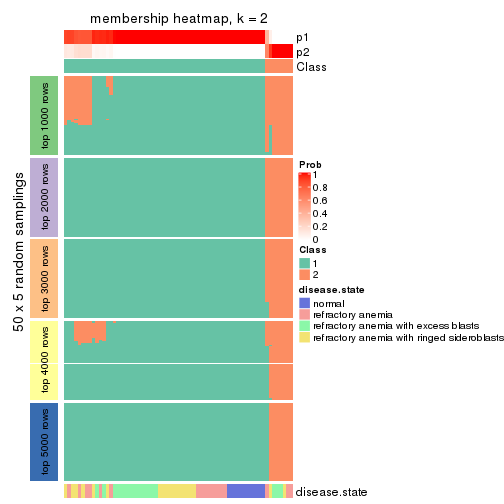
membership_heatmap(res, k = 3)
membership_heatmap(res, k = 4)
membership_heatmap(res, k = 5)
membership_heatmap(res, k = 6)
As soon as we have had the classes for columns, we can look for signatures which are significantly different between classes which can be candidate marks for certain classes. Following are the heatmaps for signatures.
Signature heatmaps where rows are scaled:
get_signatures(res, k = 2)
get_signatures(res, k = 3)
get_signatures(res, k = 4)
get_signatures(res, k = 5)
get_signatures(res, k = 6)
Signature heatmaps where rows are not scaled:
get_signatures(res, k = 2, scale_rows = FALSE)
get_signatures(res, k = 3, scale_rows = FALSE)
get_signatures(res, k = 4, scale_rows = FALSE)
get_signatures(res, k = 5, scale_rows = FALSE)
get_signatures(res, k = 6, scale_rows = FALSE)
Compare the overlap of signatures from different k:
compare_signatures(res)
get_signature() returns a data frame invisibly. TO get the list of signatures, the function
call should be assigned to a variable explicitly. In following code, if plot argument is set
to FALSE, no heatmap is plotted while only the differential analysis is performed.
# code only for demonstration
tb = get_signature(res, k = ..., plot = FALSE)
An example of the output of tb is:
#> which_row fdr mean_1 mean_2 scaled_mean_1 scaled_mean_2 km
#> 1 38 0.042760348 8.373488 9.131774 -0.5533452 0.5164555 1
#> 2 40 0.018707592 7.106213 8.469186 -0.6173731 0.5762149 1
#> 3 55 0.019134737 10.221463 11.207825 -0.6159697 0.5749050 1
#> 4 59 0.006059896 5.921854 7.869574 -0.6899429 0.6439467 1
#> 5 60 0.018055526 8.928898 10.211722 -0.6204761 0.5791110 1
#> 6 98 0.009384629 15.714769 14.887706 0.6635654 -0.6193277 2
...
The columns in tb are:
which_row: row indices corresponding to the input matrix.fdr: FDR for the differential test. mean_x: The mean value in group x.scaled_mean_x: The mean value in group x after rows are scaled.km: Row groups if k-means clustering is applied to rows.UMAP plot which shows how samples are separated.
dimension_reduction(res, k = 2, method = "UMAP")
dimension_reduction(res, k = 3, method = "UMAP")
dimension_reduction(res, k = 4, method = "UMAP")
dimension_reduction(res, k = 5, method = "UMAP")
dimension_reduction(res, k = 6, method = "UMAP")
Following heatmap shows how subgroups are split when increasing k:
collect_classes(res)
Test correlation between subgroups and known annotations. If the known annotation is numeric, one-way ANOVA test is applied, and if the known annotation is discrete, chi-squared contingency table test is applied.
test_to_known_factors(res)
#> n disease.state(p) k
#> SD:mclust 65 0.572871 2
#> SD:mclust 54 0.034742 3
#> SD:mclust 36 0.033148 4
#> SD:mclust 45 0.000492 5
#> SD:mclust 42 0.002567 6
If matrix rows can be associated to genes, consider to use GO_Enrichment(res,
...) to perform function enrichment for the signature genes.
The object with results only for a single top-value method and a single partition method can be extracted as:
res = res_list["SD", "NMF"]
# you can also extract it by
# res = res_list["SD:NMF"]
A summary of res and all the functions that can be applied to it:
res
#> A 'ConsensusPartition' object with k = 2, 3, 4, 5, 6.
#> On a matrix with 51941 rows and 66 columns.
#> Top rows (1000, 2000, 3000, 4000, 5000) are extracted by 'SD' method.
#> Subgroups are detected by 'NMF' method.
#> Performed in total 1250 partitions by row resampling.
#> Best k for subgroups seems to be 3.
#>
#> Following methods can be applied to this 'ConsensusPartition' object:
#> [1] "cola_report" "collect_classes" "collect_plots"
#> [4] "collect_stats" "colnames" "compare_signatures"
#> [7] "consensus_heatmap" "dimension_reduction" "functional_enrichment"
#> [10] "get_anno_col" "get_anno" "get_classes"
#> [13] "get_consensus" "get_matrix" "get_membership"
#> [16] "get_param" "get_signatures" "get_stats"
#> [19] "is_best_k" "is_stable_k" "membership_heatmap"
#> [22] "ncol" "nrow" "plot_ecdf"
#> [25] "rownames" "select_partition_number" "show"
#> [28] "suggest_best_k" "test_to_known_factors"
collect_plots() function collects all the plots made from res for all k (number of partitions)
into one single page to provide an easy and fast comparison between different k.
collect_plots(res)
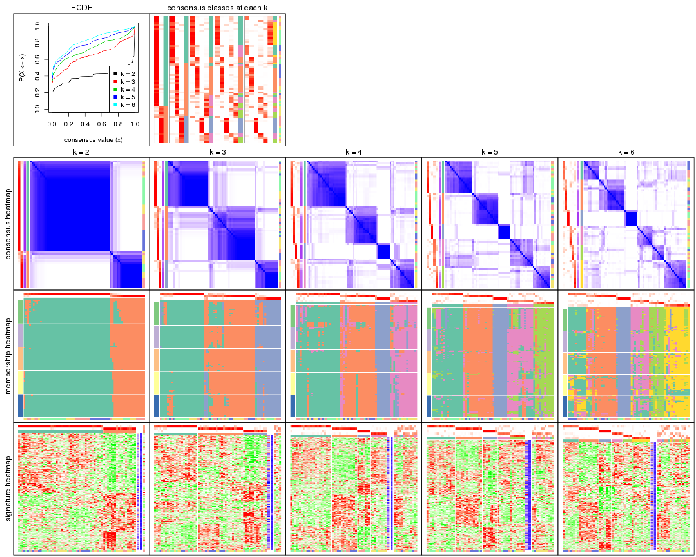
The plots are:
k and the heatmap of
predicted classes for each k.k.k.k.All the plots in panels can be made by individual functions and they are plotted later in this section.
select_partition_number() produces several plots showing different
statistics for choosing “optimized” k. There are following statistics:
k;k, the area increased is defined as \(A_k - A_{k-1}\).The detailed explanations of these statistics can be found in the cola vignette.
Generally speaking, lower PAC score, higher mean silhouette score or higher
concordance corresponds to better partition. Rand index and Jaccard index
measure how similar the current partition is compared to partition with k-1.
If they are too similar, we won't accept k is better than k-1.
select_partition_number(res)
The numeric values for all these statistics can be obtained by get_stats().
get_stats(res)
#> k 1-PAC mean_silhouette concordance area_increased Rand Jaccard
#> 2 2 0.877 0.923 0.966 0.4067 0.584 0.584
#> 3 3 0.614 0.796 0.905 0.6024 0.656 0.461
#> 4 4 0.695 0.704 0.864 0.1274 0.771 0.459
#> 5 5 0.672 0.667 0.828 0.0804 0.840 0.492
#> 6 6 0.666 0.591 0.773 0.0484 0.893 0.549
suggest_best_k() suggests the best \(k\) based on these statistics. The rules are as follows:
NA.suggest_best_k(res)
#> [1] 3
Following shows the table of the partitions (You need to click the show/hide
code output link to see it). The membership matrix (columns with name p*)
is inferred by
clue::cl_consensus()
function with the SE method. Basically the value in the membership matrix
represents the probability to belong to a certain group. The finall class
label for an item is determined with the group with highest probability it
belongs to.
In get_classes() function, the entropy is calculated from the membership
matrix and the silhouette score is calculated from the consensus matrix.
cbind(get_classes(res, k = 2), get_membership(res, k = 2))
#> class entropy silhouette p1 p2
#> GSM103343 1 0.0000 0.9816 1.000 0.000
#> GSM103344 1 0.0000 0.9816 1.000 0.000
#> GSM103345 1 0.0000 0.9816 1.000 0.000
#> GSM103364 1 0.0000 0.9816 1.000 0.000
#> GSM103365 1 0.0000 0.9816 1.000 0.000
#> GSM103366 1 0.0000 0.9816 1.000 0.000
#> GSM103369 1 0.0000 0.9816 1.000 0.000
#> GSM103370 1 0.0000 0.9816 1.000 0.000
#> GSM103388 1 0.0000 0.9816 1.000 0.000
#> GSM103389 1 0.0000 0.9816 1.000 0.000
#> GSM103390 1 0.0000 0.9816 1.000 0.000
#> GSM103347 2 0.0000 0.9154 0.000 1.000
#> GSM103349 2 0.0000 0.9154 0.000 1.000
#> GSM103354 2 0.0000 0.9154 0.000 1.000
#> GSM103355 1 0.0000 0.9816 1.000 0.000
#> GSM103357 1 0.1633 0.9631 0.976 0.024
#> GSM103358 1 0.0000 0.9816 1.000 0.000
#> GSM103361 1 0.0000 0.9816 1.000 0.000
#> GSM103363 1 0.4161 0.9023 0.916 0.084
#> GSM103367 1 0.0000 0.9816 1.000 0.000
#> GSM103381 1 0.0000 0.9816 1.000 0.000
#> GSM103382 1 0.0000 0.9816 1.000 0.000
#> GSM103384 1 0.0000 0.9816 1.000 0.000
#> GSM103391 2 0.0000 0.9154 0.000 1.000
#> GSM103394 2 1.0000 0.0251 0.500 0.500
#> GSM103399 1 0.1843 0.9595 0.972 0.028
#> GSM103401 2 0.0000 0.9154 0.000 1.000
#> GSM103404 1 0.7299 0.7378 0.796 0.204
#> GSM103408 1 0.0000 0.9816 1.000 0.000
#> GSM103348 2 0.0000 0.9154 0.000 1.000
#> GSM103351 1 0.2603 0.9445 0.956 0.044
#> GSM103356 1 0.1633 0.9615 0.976 0.024
#> GSM103368 2 0.7674 0.7345 0.224 0.776
#> GSM103372 1 0.7674 0.6794 0.776 0.224
#> GSM103375 2 0.7299 0.7600 0.204 0.796
#> GSM103376 2 0.5059 0.8482 0.112 0.888
#> GSM103379 1 0.0000 0.9816 1.000 0.000
#> GSM103385 2 0.3584 0.8808 0.068 0.932
#> GSM103387 1 0.0000 0.9816 1.000 0.000
#> GSM103392 1 0.0000 0.9816 1.000 0.000
#> GSM103393 2 0.1633 0.9056 0.024 0.976
#> GSM103395 2 0.0000 0.9154 0.000 1.000
#> GSM103396 1 0.0000 0.9816 1.000 0.000
#> GSM103398 1 0.0000 0.9816 1.000 0.000
#> GSM103402 2 0.9129 0.5266 0.328 0.672
#> GSM103403 2 0.0000 0.9154 0.000 1.000
#> GSM103405 1 0.5408 0.8529 0.876 0.124
#> GSM103407 1 0.0938 0.9727 0.988 0.012
#> GSM103346 2 0.0000 0.9154 0.000 1.000
#> GSM103350 2 0.0000 0.9154 0.000 1.000
#> GSM103352 2 0.0000 0.9154 0.000 1.000
#> GSM103353 2 0.0000 0.9154 0.000 1.000
#> GSM103359 1 0.0376 0.9786 0.996 0.004
#> GSM103360 1 0.0000 0.9816 1.000 0.000
#> GSM103362 1 0.0000 0.9816 1.000 0.000
#> GSM103371 1 0.0000 0.9816 1.000 0.000
#> GSM103373 1 0.0000 0.9816 1.000 0.000
#> GSM103374 1 0.0000 0.9816 1.000 0.000
#> GSM103377 1 0.0000 0.9816 1.000 0.000
#> GSM103378 1 0.0000 0.9816 1.000 0.000
#> GSM103380 1 0.0000 0.9816 1.000 0.000
#> GSM103383 1 0.0000 0.9816 1.000 0.000
#> GSM103386 1 0.0000 0.9816 1.000 0.000
#> GSM103397 1 0.0000 0.9816 1.000 0.000
#> GSM103400 1 0.0000 0.9816 1.000 0.000
#> GSM103406 1 0.0000 0.9816 1.000 0.000
cbind(get_classes(res, k = 3), get_membership(res, k = 3))
#> class entropy silhouette p1 p2 p3
#> GSM103343 2 0.1289 0.8303 0.032 0.968 0.000
#> GSM103344 2 0.0000 0.8377 0.000 1.000 0.000
#> GSM103345 2 0.0592 0.8362 0.012 0.988 0.000
#> GSM103364 2 0.5465 0.6407 0.288 0.712 0.000
#> GSM103365 1 0.4605 0.7150 0.796 0.204 0.000
#> GSM103366 2 0.0000 0.8377 0.000 1.000 0.000
#> GSM103369 2 0.0000 0.8377 0.000 1.000 0.000
#> GSM103370 1 0.1163 0.9135 0.972 0.028 0.000
#> GSM103388 2 0.6079 0.5012 0.388 0.612 0.000
#> GSM103389 1 0.0000 0.9315 1.000 0.000 0.000
#> GSM103390 2 0.0000 0.8377 0.000 1.000 0.000
#> GSM103347 3 0.0000 0.8963 0.000 0.000 1.000
#> GSM103349 3 0.4504 0.7196 0.000 0.196 0.804
#> GSM103354 3 0.0000 0.8963 0.000 0.000 1.000
#> GSM103355 2 0.3619 0.7804 0.136 0.864 0.000
#> GSM103357 2 0.0000 0.8377 0.000 1.000 0.000
#> GSM103358 2 0.4346 0.7530 0.184 0.816 0.000
#> GSM103361 1 0.4887 0.6751 0.772 0.228 0.000
#> GSM103363 2 0.0000 0.8377 0.000 1.000 0.000
#> GSM103367 2 0.4796 0.7193 0.220 0.780 0.000
#> GSM103381 1 0.0000 0.9315 1.000 0.000 0.000
#> GSM103382 2 0.2959 0.7859 0.100 0.900 0.000
#> GSM103384 1 0.0000 0.9315 1.000 0.000 0.000
#> GSM103391 3 0.4654 0.7600 0.000 0.208 0.792
#> GSM103394 3 0.8614 0.4760 0.304 0.128 0.568
#> GSM103399 1 0.4605 0.7169 0.796 0.204 0.000
#> GSM103401 3 0.0000 0.8963 0.000 0.000 1.000
#> GSM103404 1 0.4974 0.6777 0.764 0.000 0.236
#> GSM103408 1 0.0000 0.9315 1.000 0.000 0.000
#> GSM103348 3 0.3038 0.8491 0.000 0.104 0.896
#> GSM103351 2 0.8435 0.5169 0.284 0.592 0.124
#> GSM103356 2 0.0000 0.8377 0.000 1.000 0.000
#> GSM103368 2 0.0000 0.8377 0.000 1.000 0.000
#> GSM103372 2 0.0237 0.8374 0.004 0.996 0.000
#> GSM103375 2 0.0000 0.8377 0.000 1.000 0.000
#> GSM103376 2 0.6244 0.0728 0.000 0.560 0.440
#> GSM103379 1 0.0000 0.9315 1.000 0.000 0.000
#> GSM103385 3 0.4982 0.8190 0.096 0.064 0.840
#> GSM103387 2 0.1643 0.8114 0.000 0.956 0.044
#> GSM103392 1 0.0000 0.9315 1.000 0.000 0.000
#> GSM103393 2 0.0000 0.8377 0.000 1.000 0.000
#> GSM103395 3 0.0000 0.8963 0.000 0.000 1.000
#> GSM103396 1 0.0000 0.9315 1.000 0.000 0.000
#> GSM103398 1 0.0000 0.9315 1.000 0.000 0.000
#> GSM103402 2 0.5497 0.4781 0.000 0.708 0.292
#> GSM103403 3 0.4750 0.7515 0.000 0.216 0.784
#> GSM103405 1 0.4346 0.7445 0.816 0.184 0.000
#> GSM103407 2 0.0000 0.8377 0.000 1.000 0.000
#> GSM103346 3 0.0000 0.8963 0.000 0.000 1.000
#> GSM103350 3 0.0237 0.8950 0.000 0.004 0.996
#> GSM103352 3 0.0000 0.8963 0.000 0.000 1.000
#> GSM103353 3 0.0000 0.8963 0.000 0.000 1.000
#> GSM103359 1 0.2448 0.8735 0.924 0.000 0.076
#> GSM103360 1 0.3816 0.7939 0.852 0.148 0.000
#> GSM103362 2 0.5058 0.6963 0.244 0.756 0.000
#> GSM103371 1 0.0237 0.9296 0.996 0.004 0.000
#> GSM103373 2 0.6307 0.0796 0.488 0.512 0.000
#> GSM103374 2 0.5835 0.5844 0.340 0.660 0.000
#> GSM103377 2 0.0892 0.8318 0.020 0.980 0.000
#> GSM103378 1 0.0000 0.9315 1.000 0.000 0.000
#> GSM103380 1 0.0000 0.9315 1.000 0.000 0.000
#> GSM103383 1 0.0000 0.9315 1.000 0.000 0.000
#> GSM103386 1 0.0000 0.9315 1.000 0.000 0.000
#> GSM103397 1 0.0000 0.9315 1.000 0.000 0.000
#> GSM103400 1 0.0237 0.9296 0.996 0.004 0.000
#> GSM103406 1 0.0000 0.9315 1.000 0.000 0.000
cbind(get_classes(res, k = 4), get_membership(res, k = 4))
#> class entropy silhouette p1 p2 p3 p4
#> GSM103343 2 0.0336 0.8143 0.000 0.992 0.000 0.008
#> GSM103344 2 0.0000 0.8159 0.000 1.000 0.000 0.000
#> GSM103345 2 0.0336 0.8143 0.000 0.992 0.000 0.008
#> GSM103364 2 0.1297 0.8061 0.016 0.964 0.000 0.020
#> GSM103365 1 0.5257 0.2089 0.548 0.444 0.000 0.008
#> GSM103366 2 0.2921 0.7265 0.000 0.860 0.000 0.140
#> GSM103369 2 0.0921 0.8145 0.000 0.972 0.000 0.028
#> GSM103370 1 0.3501 0.8242 0.848 0.132 0.000 0.020
#> GSM103388 1 0.3312 0.8511 0.876 0.052 0.000 0.072
#> GSM103389 1 0.3215 0.8497 0.876 0.092 0.000 0.032
#> GSM103390 2 0.4999 0.0769 0.000 0.508 0.000 0.492
#> GSM103347 3 0.0000 0.9209 0.000 0.000 1.000 0.000
#> GSM103349 3 0.5203 0.2346 0.000 0.416 0.576 0.008
#> GSM103354 3 0.0000 0.9209 0.000 0.000 1.000 0.000
#> GSM103355 2 0.0336 0.8165 0.000 0.992 0.000 0.008
#> GSM103357 2 0.1118 0.8126 0.000 0.964 0.000 0.036
#> GSM103358 2 0.1109 0.8151 0.028 0.968 0.000 0.004
#> GSM103361 2 0.1474 0.8075 0.052 0.948 0.000 0.000
#> GSM103363 2 0.1211 0.8114 0.000 0.960 0.000 0.040
#> GSM103367 4 0.6583 0.4683 0.176 0.192 0.000 0.632
#> GSM103381 1 0.2197 0.8711 0.928 0.048 0.000 0.024
#> GSM103382 4 0.5936 0.1610 0.380 0.044 0.000 0.576
#> GSM103384 1 0.2759 0.8648 0.904 0.052 0.000 0.044
#> GSM103391 4 0.5193 0.3028 0.000 0.008 0.412 0.580
#> GSM103394 1 0.6206 0.5144 0.632 0.000 0.088 0.280
#> GSM103399 1 0.3545 0.7647 0.828 0.008 0.000 0.164
#> GSM103401 3 0.0000 0.9209 0.000 0.000 1.000 0.000
#> GSM103404 1 0.4072 0.6896 0.748 0.000 0.252 0.000
#> GSM103408 1 0.1807 0.8720 0.940 0.052 0.000 0.008
#> GSM103348 4 0.4564 0.4804 0.000 0.000 0.328 0.672
#> GSM103351 2 0.7886 0.4695 0.132 0.608 0.160 0.100
#> GSM103356 2 0.2011 0.7939 0.000 0.920 0.000 0.080
#> GSM103368 2 0.4977 0.1573 0.000 0.540 0.000 0.460
#> GSM103372 2 0.4998 0.0721 0.000 0.512 0.000 0.488
#> GSM103375 4 0.0592 0.7581 0.000 0.016 0.000 0.984
#> GSM103376 4 0.0707 0.7596 0.000 0.020 0.000 0.980
#> GSM103379 1 0.0000 0.8807 1.000 0.000 0.000 0.000
#> GSM103385 4 0.2002 0.7478 0.044 0.000 0.020 0.936
#> GSM103387 4 0.0707 0.7571 0.000 0.020 0.000 0.980
#> GSM103392 1 0.0921 0.8777 0.972 0.000 0.000 0.028
#> GSM103393 4 0.1940 0.7448 0.000 0.076 0.000 0.924
#> GSM103395 3 0.0000 0.9209 0.000 0.000 1.000 0.000
#> GSM103396 1 0.0707 0.8794 0.980 0.000 0.000 0.020
#> GSM103398 1 0.2578 0.8685 0.912 0.036 0.000 0.052
#> GSM103402 4 0.0707 0.7571 0.000 0.020 0.000 0.980
#> GSM103403 4 0.1637 0.7434 0.000 0.000 0.060 0.940
#> GSM103405 1 0.2469 0.8199 0.892 0.000 0.000 0.108
#> GSM103407 4 0.1867 0.7468 0.000 0.072 0.000 0.928
#> GSM103346 3 0.0000 0.9209 0.000 0.000 1.000 0.000
#> GSM103350 4 0.4843 0.2990 0.000 0.000 0.396 0.604
#> GSM103352 3 0.0000 0.9209 0.000 0.000 1.000 0.000
#> GSM103353 3 0.0000 0.9209 0.000 0.000 1.000 0.000
#> GSM103359 1 0.2921 0.8071 0.860 0.000 0.140 0.000
#> GSM103360 2 0.2408 0.7774 0.104 0.896 0.000 0.000
#> GSM103362 2 0.1302 0.8100 0.044 0.956 0.000 0.000
#> GSM103371 2 0.4967 0.1247 0.452 0.548 0.000 0.000
#> GSM103373 1 0.6089 0.5141 0.640 0.280 0.000 0.080
#> GSM103374 4 0.7855 0.0963 0.284 0.320 0.000 0.396
#> GSM103377 4 0.2345 0.7270 0.000 0.100 0.000 0.900
#> GSM103378 1 0.0000 0.8807 1.000 0.000 0.000 0.000
#> GSM103380 1 0.0000 0.8807 1.000 0.000 0.000 0.000
#> GSM103383 1 0.0188 0.8808 0.996 0.000 0.000 0.004
#> GSM103386 1 0.0000 0.8807 1.000 0.000 0.000 0.000
#> GSM103397 1 0.0000 0.8807 1.000 0.000 0.000 0.000
#> GSM103400 1 0.0188 0.8812 0.996 0.000 0.000 0.004
#> GSM103406 1 0.0592 0.8810 0.984 0.016 0.000 0.000
cbind(get_classes(res, k = 5), get_membership(res, k = 5))
#> class entropy silhouette p1 p2 p3 p4 p5
#> GSM103343 2 0.0703 0.8751 0.000 0.976 0.000 0.024 0.000
#> GSM103344 2 0.0510 0.8764 0.000 0.984 0.000 0.016 0.000
#> GSM103345 2 0.0404 0.8770 0.000 0.988 0.000 0.012 0.000
#> GSM103364 2 0.2930 0.7730 0.004 0.832 0.000 0.164 0.000
#> GSM103365 4 0.5672 0.3667 0.104 0.312 0.000 0.584 0.000
#> GSM103366 2 0.4588 0.6706 0.004 0.736 0.000 0.200 0.060
#> GSM103369 2 0.1943 0.8513 0.000 0.924 0.000 0.020 0.056
#> GSM103370 4 0.3910 0.5440 0.272 0.008 0.000 0.720 0.000
#> GSM103388 4 0.3797 0.5822 0.232 0.008 0.000 0.756 0.004
#> GSM103389 4 0.3421 0.6048 0.204 0.008 0.000 0.788 0.000
#> GSM103390 5 0.4004 0.6402 0.012 0.164 0.000 0.032 0.792
#> GSM103347 3 0.0000 0.9515 0.000 0.000 1.000 0.000 0.000
#> GSM103349 3 0.5079 0.6197 0.000 0.224 0.704 0.048 0.024
#> GSM103354 3 0.0000 0.9515 0.000 0.000 1.000 0.000 0.000
#> GSM103355 2 0.0880 0.8733 0.000 0.968 0.000 0.032 0.000
#> GSM103357 2 0.1205 0.8682 0.000 0.956 0.000 0.004 0.040
#> GSM103358 2 0.0000 0.8766 0.000 1.000 0.000 0.000 0.000
#> GSM103361 2 0.1202 0.8710 0.004 0.960 0.000 0.004 0.032
#> GSM103363 2 0.1357 0.8676 0.000 0.948 0.000 0.004 0.048
#> GSM103367 4 0.4696 0.5688 0.172 0.012 0.000 0.748 0.068
#> GSM103381 4 0.4235 0.1959 0.424 0.000 0.000 0.576 0.000
#> GSM103382 1 0.6114 0.2281 0.472 0.000 0.000 0.400 0.128
#> GSM103384 4 0.3910 0.5299 0.272 0.008 0.000 0.720 0.000
#> GSM103391 5 0.2411 0.7044 0.008 0.000 0.108 0.000 0.884
#> GSM103394 5 0.4816 -0.1749 0.492 0.000 0.008 0.008 0.492
#> GSM103399 1 0.4000 0.6558 0.748 0.000 0.000 0.024 0.228
#> GSM103401 3 0.0000 0.9515 0.000 0.000 1.000 0.000 0.000
#> GSM103404 1 0.3300 0.6903 0.792 0.000 0.204 0.004 0.000
#> GSM103408 1 0.4394 0.6436 0.716 0.016 0.000 0.256 0.012
#> GSM103348 5 0.4495 0.5609 0.000 0.000 0.244 0.044 0.712
#> GSM103351 4 0.5878 0.5202 0.016 0.200 0.104 0.668 0.012
#> GSM103356 2 0.1331 0.8697 0.000 0.952 0.000 0.040 0.008
#> GSM103368 5 0.5684 0.0318 0.000 0.432 0.000 0.080 0.488
#> GSM103372 2 0.5597 0.0928 0.000 0.488 0.000 0.440 0.072
#> GSM103375 5 0.4192 0.2383 0.000 0.000 0.000 0.404 0.596
#> GSM103376 4 0.4046 0.4126 0.000 0.008 0.000 0.696 0.296
#> GSM103379 1 0.0404 0.8178 0.988 0.000 0.000 0.012 0.000
#> GSM103385 4 0.4495 0.4711 0.044 0.000 0.000 0.712 0.244
#> GSM103387 4 0.3796 0.4090 0.000 0.000 0.000 0.700 0.300
#> GSM103392 4 0.4304 0.3030 0.484 0.000 0.000 0.516 0.000
#> GSM103393 5 0.1041 0.7271 0.000 0.004 0.000 0.032 0.964
#> GSM103395 3 0.0000 0.9515 0.000 0.000 1.000 0.000 0.000
#> GSM103396 1 0.3039 0.6614 0.808 0.000 0.000 0.192 0.000
#> GSM103398 1 0.4400 0.5733 0.672 0.000 0.000 0.308 0.020
#> GSM103402 5 0.1792 0.7155 0.000 0.000 0.000 0.084 0.916
#> GSM103403 5 0.1043 0.7218 0.000 0.000 0.000 0.040 0.960
#> GSM103405 1 0.2563 0.7668 0.872 0.000 0.000 0.008 0.120
#> GSM103407 5 0.0798 0.7312 0.000 0.008 0.000 0.016 0.976
#> GSM103346 3 0.0000 0.9515 0.000 0.000 1.000 0.000 0.000
#> GSM103350 4 0.4701 0.4835 0.000 0.004 0.232 0.712 0.052
#> GSM103352 3 0.0000 0.9515 0.000 0.000 1.000 0.000 0.000
#> GSM103353 3 0.0000 0.9515 0.000 0.000 1.000 0.000 0.000
#> GSM103359 1 0.4527 0.6905 0.784 0.060 0.124 0.032 0.000
#> GSM103360 2 0.1485 0.8665 0.032 0.948 0.000 0.020 0.000
#> GSM103362 2 0.1569 0.8659 0.008 0.944 0.000 0.004 0.044
#> GSM103371 2 0.5225 0.5231 0.280 0.660 0.000 0.032 0.028
#> GSM103373 1 0.4651 0.6826 0.776 0.068 0.000 0.032 0.124
#> GSM103374 4 0.4528 0.5087 0.024 0.200 0.000 0.748 0.028
#> GSM103377 5 0.2170 0.7229 0.020 0.020 0.000 0.036 0.924
#> GSM103378 1 0.0404 0.8188 0.988 0.000 0.000 0.012 0.000
#> GSM103380 1 0.0404 0.8178 0.988 0.000 0.000 0.012 0.000
#> GSM103383 1 0.0794 0.8154 0.972 0.000 0.000 0.028 0.000
#> GSM103386 1 0.0290 0.8182 0.992 0.000 0.000 0.008 0.000
#> GSM103397 1 0.1270 0.8129 0.948 0.000 0.000 0.052 0.000
#> GSM103400 1 0.1082 0.8184 0.964 0.000 0.000 0.028 0.008
#> GSM103406 1 0.0510 0.8186 0.984 0.000 0.000 0.016 0.000
cbind(get_classes(res, k = 6), get_membership(res, k = 6))
#> class entropy silhouette p1 p2 p3 p4 p5 p6
#> GSM103343 2 0.1663 0.76212 0.088 0.912 0.000 0.000 0.000 0.000
#> GSM103344 2 0.1141 0.77368 0.052 0.948 0.000 0.000 0.000 0.000
#> GSM103345 2 0.2118 0.74870 0.104 0.888 0.000 0.000 0.008 0.000
#> GSM103364 2 0.4091 0.09107 0.472 0.520 0.000 0.000 0.008 0.000
#> GSM103365 1 0.3857 0.61384 0.788 0.152 0.000 0.040 0.004 0.016
#> GSM103366 1 0.5186 0.49898 0.632 0.248 0.000 0.000 0.108 0.012
#> GSM103369 2 0.2989 0.65420 0.176 0.812 0.000 0.008 0.004 0.000
#> GSM103370 1 0.4136 0.54081 0.732 0.000 0.000 0.076 0.000 0.192
#> GSM103388 1 0.3372 0.64096 0.816 0.000 0.000 0.084 0.000 0.100
#> GSM103389 1 0.4242 0.53412 0.736 0.000 0.000 0.128 0.000 0.136
#> GSM103390 5 0.6497 0.40015 0.200 0.240 0.000 0.036 0.516 0.008
#> GSM103347 3 0.0000 0.93186 0.000 0.000 1.000 0.000 0.000 0.000
#> GSM103349 3 0.6674 0.38925 0.196 0.184 0.548 0.024 0.048 0.000
#> GSM103354 3 0.0000 0.93186 0.000 0.000 1.000 0.000 0.000 0.000
#> GSM103355 2 0.1007 0.77504 0.044 0.956 0.000 0.000 0.000 0.000
#> GSM103357 2 0.0508 0.77333 0.012 0.984 0.000 0.000 0.004 0.000
#> GSM103358 2 0.0363 0.77693 0.012 0.988 0.000 0.000 0.000 0.000
#> GSM103361 2 0.0696 0.77415 0.008 0.980 0.000 0.004 0.004 0.004
#> GSM103363 2 0.1007 0.76958 0.000 0.956 0.000 0.000 0.044 0.000
#> GSM103367 4 0.1957 0.64331 0.048 0.000 0.000 0.920 0.008 0.024
#> GSM103381 1 0.3925 0.71210 0.744 0.000 0.000 0.056 0.000 0.200
#> GSM103382 1 0.4550 0.69999 0.716 0.000 0.000 0.020 0.064 0.200
#> GSM103384 1 0.4328 0.70789 0.720 0.000 0.000 0.100 0.000 0.180
#> GSM103391 5 0.0820 0.67506 0.000 0.000 0.012 0.016 0.972 0.000
#> GSM103394 5 0.3394 0.54018 0.024 0.000 0.000 0.000 0.776 0.200
#> GSM103399 6 0.3448 0.56093 0.000 0.000 0.000 0.004 0.280 0.716
#> GSM103401 3 0.0000 0.93186 0.000 0.000 1.000 0.000 0.000 0.000
#> GSM103404 6 0.3323 0.63209 0.008 0.000 0.204 0.000 0.008 0.780
#> GSM103408 1 0.3841 0.67980 0.724 0.000 0.000 0.000 0.032 0.244
#> GSM103348 4 0.5387 0.01528 0.000 0.000 0.112 0.464 0.424 0.000
#> GSM103351 4 0.5673 0.18121 0.364 0.112 0.004 0.512 0.008 0.000
#> GSM103356 2 0.4786 0.32390 0.064 0.584 0.000 0.352 0.000 0.000
#> GSM103368 2 0.6714 0.29621 0.108 0.512 0.000 0.236 0.144 0.000
#> GSM103372 2 0.6157 0.01497 0.192 0.404 0.000 0.392 0.012 0.000
#> GSM103375 4 0.5182 0.13396 0.096 0.000 0.000 0.532 0.372 0.000
#> GSM103376 4 0.1909 0.63956 0.052 0.004 0.000 0.920 0.024 0.000
#> GSM103379 6 0.1007 0.74212 0.000 0.000 0.000 0.044 0.000 0.956
#> GSM103385 4 0.0692 0.63906 0.000 0.000 0.000 0.976 0.020 0.004
#> GSM103387 4 0.3821 0.52794 0.220 0.000 0.000 0.740 0.040 0.000
#> GSM103392 6 0.3979 0.18074 0.004 0.000 0.000 0.456 0.000 0.540
#> GSM103393 5 0.3890 0.08356 0.000 0.004 0.000 0.400 0.596 0.000
#> GSM103395 3 0.0000 0.93186 0.000 0.000 1.000 0.000 0.000 0.000
#> GSM103396 4 0.3966 -0.00576 0.004 0.000 0.000 0.552 0.000 0.444
#> GSM103398 1 0.3720 0.69040 0.736 0.000 0.000 0.000 0.028 0.236
#> GSM103402 5 0.3360 0.46927 0.264 0.000 0.000 0.000 0.732 0.004
#> GSM103403 5 0.0914 0.67972 0.016 0.000 0.000 0.016 0.968 0.000
#> GSM103405 6 0.4049 0.46288 0.020 0.000 0.000 0.000 0.332 0.648
#> GSM103407 5 0.1141 0.67716 0.052 0.000 0.000 0.000 0.948 0.000
#> GSM103346 3 0.0000 0.93186 0.000 0.000 1.000 0.000 0.000 0.000
#> GSM103350 4 0.2887 0.62319 0.104 0.000 0.032 0.856 0.008 0.000
#> GSM103352 3 0.0000 0.93186 0.000 0.000 1.000 0.000 0.000 0.000
#> GSM103353 3 0.0000 0.93186 0.000 0.000 1.000 0.000 0.000 0.000
#> GSM103359 6 0.4002 0.67027 0.056 0.064 0.040 0.004 0.016 0.820
#> GSM103360 2 0.2077 0.76494 0.032 0.916 0.000 0.004 0.004 0.044
#> GSM103362 2 0.0912 0.77536 0.004 0.972 0.000 0.004 0.012 0.008
#> GSM103371 2 0.6241 0.39748 0.200 0.552 0.000 0.036 0.004 0.208
#> GSM103373 6 0.6571 0.36133 0.196 0.044 0.000 0.020 0.188 0.552
#> GSM103374 4 0.4087 0.54782 0.188 0.004 0.000 0.744 0.000 0.064
#> GSM103377 5 0.5794 0.50733 0.164 0.024 0.000 0.128 0.652 0.032
#> GSM103378 6 0.1320 0.73999 0.036 0.000 0.000 0.016 0.000 0.948
#> GSM103380 6 0.1007 0.74212 0.000 0.000 0.000 0.044 0.000 0.956
#> GSM103383 6 0.3053 0.67726 0.020 0.000 0.000 0.168 0.000 0.812
#> GSM103386 6 0.0260 0.73704 0.008 0.000 0.000 0.000 0.000 0.992
#> GSM103397 6 0.3511 0.66084 0.124 0.000 0.000 0.064 0.004 0.808
#> GSM103400 6 0.3468 0.40761 0.284 0.000 0.000 0.004 0.000 0.712
#> GSM103406 6 0.1003 0.74151 0.020 0.000 0.000 0.016 0.000 0.964
Heatmaps for the consensus matrix. It visualizes the probability of two samples to be in a same group.
consensus_heatmap(res, k = 2)
consensus_heatmap(res, k = 3)
consensus_heatmap(res, k = 4)
consensus_heatmap(res, k = 5)

consensus_heatmap(res, k = 6)
Heatmaps for the membership of samples in all partitions to see how consistent they are:
membership_heatmap(res, k = 2)
membership_heatmap(res, k = 3)
membership_heatmap(res, k = 4)
membership_heatmap(res, k = 5)
membership_heatmap(res, k = 6)
As soon as we have had the classes for columns, we can look for signatures which are significantly different between classes which can be candidate marks for certain classes. Following are the heatmaps for signatures.
Signature heatmaps where rows are scaled:
get_signatures(res, k = 2)
get_signatures(res, k = 3)
get_signatures(res, k = 4)
get_signatures(res, k = 5)

get_signatures(res, k = 6)
Signature heatmaps where rows are not scaled:
get_signatures(res, k = 2, scale_rows = FALSE)
get_signatures(res, k = 3, scale_rows = FALSE)
get_signatures(res, k = 4, scale_rows = FALSE)
get_signatures(res, k = 5, scale_rows = FALSE)
get_signatures(res, k = 6, scale_rows = FALSE)
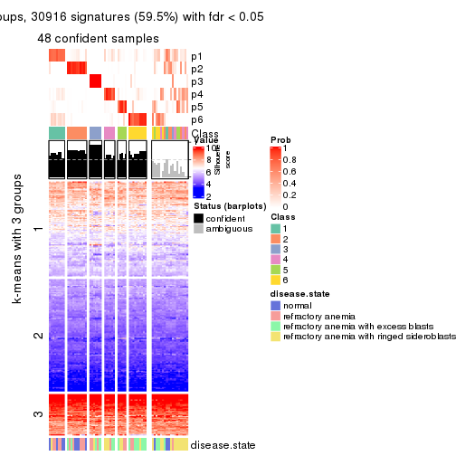
Compare the overlap of signatures from different k:
compare_signatures(res)
get_signature() returns a data frame invisibly. TO get the list of signatures, the function
call should be assigned to a variable explicitly. In following code, if plot argument is set
to FALSE, no heatmap is plotted while only the differential analysis is performed.
# code only for demonstration
tb = get_signature(res, k = ..., plot = FALSE)
An example of the output of tb is:
#> which_row fdr mean_1 mean_2 scaled_mean_1 scaled_mean_2 km
#> 1 38 0.042760348 8.373488 9.131774 -0.5533452 0.5164555 1
#> 2 40 0.018707592 7.106213 8.469186 -0.6173731 0.5762149 1
#> 3 55 0.019134737 10.221463 11.207825 -0.6159697 0.5749050 1
#> 4 59 0.006059896 5.921854 7.869574 -0.6899429 0.6439467 1
#> 5 60 0.018055526 8.928898 10.211722 -0.6204761 0.5791110 1
#> 6 98 0.009384629 15.714769 14.887706 0.6635654 -0.6193277 2
...
The columns in tb are:
which_row: row indices corresponding to the input matrix.fdr: FDR for the differential test. mean_x: The mean value in group x.scaled_mean_x: The mean value in group x after rows are scaled.km: Row groups if k-means clustering is applied to rows.UMAP plot which shows how samples are separated.
dimension_reduction(res, k = 2, method = "UMAP")
dimension_reduction(res, k = 3, method = "UMAP")
dimension_reduction(res, k = 4, method = "UMAP")
dimension_reduction(res, k = 5, method = "UMAP")
dimension_reduction(res, k = 6, method = "UMAP")
Following heatmap shows how subgroups are split when increasing k:
collect_classes(res)
Test correlation between subgroups and known annotations. If the known annotation is numeric, one-way ANOVA test is applied, and if the known annotation is discrete, chi-squared contingency table test is applied.
test_to_known_factors(res)
#> n disease.state(p) k
#> SD:NMF 65 0.04243 2
#> SD:NMF 62 0.09150 3
#> SD:NMF 53 0.00042 4
#> SD:NMF 54 0.00829 5
#> SD:NMF 48 0.01201 6
If matrix rows can be associated to genes, consider to use GO_Enrichment(res,
...) to perform function enrichment for the signature genes.
The object with results only for a single top-value method and a single partition method can be extracted as:
res = res_list["CV", "hclust"]
# you can also extract it by
# res = res_list["CV:hclust"]
A summary of res and all the functions that can be applied to it:
res
#> A 'ConsensusPartition' object with k = 2, 3, 4, 5, 6.
#> On a matrix with 51941 rows and 66 columns.
#> Top rows (1000, 2000, 3000, 4000, 5000) are extracted by 'CV' method.
#> Subgroups are detected by 'hclust' method.
#> Performed in total 1250 partitions by row resampling.
#> Best k for subgroups seems to be 3.
#>
#> Following methods can be applied to this 'ConsensusPartition' object:
#> [1] "cola_report" "collect_classes" "collect_plots"
#> [4] "collect_stats" "colnames" "compare_signatures"
#> [7] "consensus_heatmap" "dimension_reduction" "functional_enrichment"
#> [10] "get_anno_col" "get_anno" "get_classes"
#> [13] "get_consensus" "get_matrix" "get_membership"
#> [16] "get_param" "get_signatures" "get_stats"
#> [19] "is_best_k" "is_stable_k" "membership_heatmap"
#> [22] "ncol" "nrow" "plot_ecdf"
#> [25] "rownames" "select_partition_number" "show"
#> [28] "suggest_best_k" "test_to_known_factors"
collect_plots() function collects all the plots made from res for all k (number of partitions)
into one single page to provide an easy and fast comparison between different k.
collect_plots(res)
The plots are:
k and the heatmap of
predicted classes for each k.k.k.k.All the plots in panels can be made by individual functions and they are plotted later in this section.
select_partition_number() produces several plots showing different
statistics for choosing “optimized” k. There are following statistics:
k;k, the area increased is defined as \(A_k - A_{k-1}\).The detailed explanations of these statistics can be found in the cola vignette.
Generally speaking, lower PAC score, higher mean silhouette score or higher
concordance corresponds to better partition. Rand index and Jaccard index
measure how similar the current partition is compared to partition with k-1.
If they are too similar, we won't accept k is better than k-1.
select_partition_number(res)
The numeric values for all these statistics can be obtained by get_stats().
get_stats(res)
#> k 1-PAC mean_silhouette concordance area_increased Rand Jaccard
#> 2 2 0.508 0.808 0.827 0.3835 0.493 0.493
#> 3 3 0.525 0.772 0.880 0.4776 0.891 0.786
#> 4 4 0.532 0.663 0.816 0.2135 0.868 0.686
#> 5 5 0.548 0.612 0.774 0.0678 0.945 0.816
#> 6 6 0.618 0.617 0.750 0.0862 0.907 0.655
suggest_best_k() suggests the best \(k\) based on these statistics. The rules are as follows:
NA.suggest_best_k(res)
#> [1] 3
Following shows the table of the partitions (You need to click the show/hide
code output link to see it). The membership matrix (columns with name p*)
is inferred by
clue::cl_consensus()
function with the SE method. Basically the value in the membership matrix
represents the probability to belong to a certain group. The finall class
label for an item is determined with the group with highest probability it
belongs to.
In get_classes() function, the entropy is calculated from the membership
matrix and the silhouette score is calculated from the consensus matrix.
cbind(get_classes(res, k = 2), get_membership(res, k = 2))
#> class entropy silhouette p1 p2
#> GSM103343 1 0.9522 0.9966 0.628 0.372
#> GSM103344 1 0.9522 0.9966 0.628 0.372
#> GSM103345 1 0.9522 0.9966 0.628 0.372
#> GSM103364 1 0.9522 0.9966 0.628 0.372
#> GSM103365 1 0.9522 0.9966 0.628 0.372
#> GSM103366 2 0.6973 0.4943 0.188 0.812
#> GSM103369 1 0.9522 0.9966 0.628 0.372
#> GSM103370 1 0.9522 0.9966 0.628 0.372
#> GSM103388 1 0.9522 0.9966 0.628 0.372
#> GSM103389 1 0.9522 0.9966 0.628 0.372
#> GSM103390 1 0.9522 0.9966 0.628 0.372
#> GSM103347 2 0.9522 0.5770 0.372 0.628
#> GSM103349 2 0.1633 0.7439 0.024 0.976
#> GSM103354 2 0.9522 0.5770 0.372 0.628
#> GSM103355 1 0.9522 0.9966 0.628 0.372
#> GSM103357 1 0.9580 0.9847 0.620 0.380
#> GSM103358 1 0.9522 0.9966 0.628 0.372
#> GSM103361 1 0.9522 0.9966 0.628 0.372
#> GSM103363 1 0.9850 0.9000 0.572 0.428
#> GSM103367 2 0.4431 0.6879 0.092 0.908
#> GSM103381 1 0.9522 0.9966 0.628 0.372
#> GSM103382 1 0.9522 0.9966 0.628 0.372
#> GSM103384 1 0.9522 0.9966 0.628 0.372
#> GSM103391 2 0.1414 0.7438 0.020 0.980
#> GSM103394 2 0.1414 0.7438 0.020 0.980
#> GSM103399 2 0.7883 0.3410 0.236 0.764
#> GSM103401 2 0.9522 0.5770 0.372 0.628
#> GSM103404 1 0.9491 0.9904 0.632 0.368
#> GSM103408 1 0.9522 0.9966 0.628 0.372
#> GSM103348 2 0.1414 0.7416 0.020 0.980
#> GSM103351 2 0.1633 0.7439 0.024 0.976
#> GSM103356 2 0.2948 0.7257 0.052 0.948
#> GSM103368 2 0.4161 0.6994 0.084 0.916
#> GSM103372 2 0.4298 0.6957 0.088 0.912
#> GSM103375 2 0.0672 0.7449 0.008 0.992
#> GSM103376 2 0.0672 0.7449 0.008 0.992
#> GSM103379 1 0.9522 0.9966 0.628 0.372
#> GSM103385 2 0.1184 0.7459 0.016 0.984
#> GSM103387 2 0.4815 0.6676 0.104 0.896
#> GSM103392 2 0.4431 0.6879 0.092 0.908
#> GSM103393 2 0.4161 0.6994 0.084 0.916
#> GSM103395 2 0.9522 0.5770 0.372 0.628
#> GSM103396 2 0.6148 0.5825 0.152 0.848
#> GSM103398 2 0.8763 0.0739 0.296 0.704
#> GSM103402 2 0.1184 0.7447 0.016 0.984
#> GSM103403 2 0.1184 0.7447 0.016 0.984
#> GSM103405 1 0.9522 0.9966 0.628 0.372
#> GSM103407 2 0.2043 0.7387 0.032 0.968
#> GSM103346 2 0.9522 0.5770 0.372 0.628
#> GSM103350 2 0.1414 0.7416 0.020 0.980
#> GSM103352 2 0.9522 0.5770 0.372 0.628
#> GSM103353 2 0.9522 0.5770 0.372 0.628
#> GSM103359 1 0.9522 0.9966 0.628 0.372
#> GSM103360 1 0.9522 0.9966 0.628 0.372
#> GSM103362 1 0.9522 0.9966 0.628 0.372
#> GSM103371 1 0.9522 0.9966 0.628 0.372
#> GSM103373 1 0.9522 0.9966 0.628 0.372
#> GSM103374 2 0.4562 0.6827 0.096 0.904
#> GSM103377 2 0.9710 -0.4233 0.400 0.600
#> GSM103378 1 0.9522 0.9966 0.628 0.372
#> GSM103380 1 0.9522 0.9966 0.628 0.372
#> GSM103383 1 0.9522 0.9966 0.628 0.372
#> GSM103386 1 0.9522 0.9966 0.628 0.372
#> GSM103397 1 0.9522 0.9966 0.628 0.372
#> GSM103400 1 0.9522 0.9966 0.628 0.372
#> GSM103406 1 0.9522 0.9966 0.628 0.372
cbind(get_classes(res, k = 3), get_membership(res, k = 3))
#> class entropy silhouette p1 p2 p3
#> GSM103343 1 0.5327 0.6850 0.728 0.272 0.000
#> GSM103344 1 0.5327 0.6850 0.728 0.272 0.000
#> GSM103345 1 0.5327 0.6850 0.728 0.272 0.000
#> GSM103364 1 0.1031 0.8710 0.976 0.024 0.000
#> GSM103365 1 0.1031 0.8710 0.976 0.024 0.000
#> GSM103366 2 0.5216 0.6446 0.260 0.740 0.000
#> GSM103369 1 0.5431 0.6755 0.716 0.284 0.000
#> GSM103370 1 0.0424 0.8716 0.992 0.008 0.000
#> GSM103388 1 0.0424 0.8716 0.992 0.008 0.000
#> GSM103389 1 0.0424 0.8716 0.992 0.008 0.000
#> GSM103390 1 0.5678 0.6281 0.684 0.316 0.000
#> GSM103347 3 0.0237 0.9955 0.000 0.004 0.996
#> GSM103349 2 0.1878 0.7904 0.044 0.952 0.004
#> GSM103354 3 0.0000 0.9993 0.000 0.000 1.000
#> GSM103355 1 0.4178 0.7899 0.828 0.172 0.000
#> GSM103357 1 0.5810 0.5935 0.664 0.336 0.000
#> GSM103358 1 0.4178 0.7899 0.828 0.172 0.000
#> GSM103361 1 0.1753 0.8663 0.952 0.048 0.000
#> GSM103363 1 0.6062 0.4937 0.616 0.384 0.000
#> GSM103367 2 0.6215 0.5073 0.428 0.572 0.000
#> GSM103381 1 0.0237 0.8705 0.996 0.004 0.000
#> GSM103382 1 0.1753 0.8671 0.952 0.048 0.000
#> GSM103384 1 0.0424 0.8718 0.992 0.008 0.000
#> GSM103391 2 0.0892 0.7790 0.020 0.980 0.000
#> GSM103394 2 0.0892 0.7790 0.020 0.980 0.000
#> GSM103399 2 0.6180 0.4055 0.416 0.584 0.000
#> GSM103401 3 0.0000 0.9993 0.000 0.000 1.000
#> GSM103404 1 0.1647 0.8680 0.960 0.036 0.004
#> GSM103408 1 0.1529 0.8687 0.960 0.040 0.000
#> GSM103348 2 0.1919 0.7710 0.024 0.956 0.020
#> GSM103351 2 0.3851 0.7822 0.136 0.860 0.004
#> GSM103356 2 0.2165 0.7923 0.064 0.936 0.000
#> GSM103368 2 0.2625 0.7890 0.084 0.916 0.000
#> GSM103372 2 0.3941 0.7825 0.156 0.844 0.000
#> GSM103375 2 0.2063 0.7836 0.044 0.948 0.008
#> GSM103376 2 0.2063 0.7836 0.044 0.948 0.008
#> GSM103379 1 0.0000 0.8694 1.000 0.000 0.000
#> GSM103385 2 0.4861 0.7457 0.192 0.800 0.008
#> GSM103387 2 0.5431 0.6881 0.284 0.716 0.000
#> GSM103392 2 0.6215 0.5073 0.428 0.572 0.000
#> GSM103393 2 0.2625 0.7890 0.084 0.916 0.000
#> GSM103395 3 0.0000 0.9993 0.000 0.000 1.000
#> GSM103396 2 0.6280 0.4216 0.460 0.540 0.000
#> GSM103398 1 0.6095 0.1207 0.608 0.392 0.000
#> GSM103402 2 0.0747 0.7771 0.016 0.984 0.000
#> GSM103403 2 0.0747 0.7771 0.016 0.984 0.000
#> GSM103405 1 0.2066 0.8586 0.940 0.060 0.000
#> GSM103407 2 0.1529 0.7874 0.040 0.960 0.000
#> GSM103346 3 0.0000 0.9993 0.000 0.000 1.000
#> GSM103350 2 0.4136 0.7702 0.116 0.864 0.020
#> GSM103352 3 0.0000 0.9993 0.000 0.000 1.000
#> GSM103353 3 0.0000 0.9993 0.000 0.000 1.000
#> GSM103359 1 0.0747 0.8716 0.984 0.016 0.000
#> GSM103360 1 0.1031 0.8710 0.976 0.024 0.000
#> GSM103362 1 0.3267 0.8312 0.884 0.116 0.000
#> GSM103371 1 0.1643 0.8696 0.956 0.044 0.000
#> GSM103373 1 0.4399 0.7738 0.812 0.188 0.000
#> GSM103374 2 0.6168 0.5233 0.412 0.588 0.000
#> GSM103377 2 0.6286 0.0451 0.464 0.536 0.000
#> GSM103378 1 0.0000 0.8694 1.000 0.000 0.000
#> GSM103380 1 0.0000 0.8694 1.000 0.000 0.000
#> GSM103383 1 0.0000 0.8694 1.000 0.000 0.000
#> GSM103386 1 0.0000 0.8694 1.000 0.000 0.000
#> GSM103397 1 0.0000 0.8694 1.000 0.000 0.000
#> GSM103400 1 0.1529 0.8687 0.960 0.040 0.000
#> GSM103406 1 0.0000 0.8694 1.000 0.000 0.000
cbind(get_classes(res, k = 4), get_membership(res, k = 4))
#> class entropy silhouette p1 p2 p3 p4
#> GSM103343 2 0.5050 0.643 0.268 0.704 0.000 0.028
#> GSM103344 2 0.5050 0.643 0.268 0.704 0.000 0.028
#> GSM103345 2 0.5050 0.643 0.268 0.704 0.000 0.028
#> GSM103364 1 0.5150 0.263 0.596 0.396 0.000 0.008
#> GSM103365 1 0.5150 0.263 0.596 0.396 0.000 0.008
#> GSM103366 4 0.6182 0.361 0.052 0.428 0.000 0.520
#> GSM103369 2 0.0469 0.605 0.000 0.988 0.000 0.012
#> GSM103370 1 0.1722 0.809 0.944 0.048 0.000 0.008
#> GSM103388 1 0.1722 0.809 0.944 0.048 0.000 0.008
#> GSM103389 1 0.1722 0.809 0.944 0.048 0.000 0.008
#> GSM103390 2 0.2921 0.564 0.000 0.860 0.000 0.140
#> GSM103347 3 0.0188 0.995 0.000 0.000 0.996 0.004
#> GSM103349 4 0.2198 0.745 0.008 0.072 0.000 0.920
#> GSM103354 3 0.0000 0.999 0.000 0.000 1.000 0.000
#> GSM103355 2 0.5125 0.469 0.388 0.604 0.000 0.008
#> GSM103357 2 0.2011 0.577 0.000 0.920 0.000 0.080
#> GSM103358 2 0.5125 0.469 0.388 0.604 0.000 0.008
#> GSM103361 1 0.4277 0.525 0.720 0.280 0.000 0.000
#> GSM103363 2 0.3400 0.522 0.000 0.820 0.000 0.180
#> GSM103367 4 0.6052 0.473 0.396 0.048 0.000 0.556
#> GSM103381 1 0.1807 0.807 0.940 0.052 0.000 0.008
#> GSM103382 1 0.3004 0.784 0.892 0.060 0.000 0.048
#> GSM103384 1 0.1890 0.806 0.936 0.056 0.000 0.008
#> GSM103391 4 0.2281 0.731 0.000 0.096 0.000 0.904
#> GSM103394 4 0.2281 0.731 0.000 0.096 0.000 0.904
#> GSM103399 4 0.7456 0.280 0.196 0.316 0.000 0.488
#> GSM103401 3 0.0000 0.999 0.000 0.000 1.000 0.000
#> GSM103404 1 0.1545 0.800 0.952 0.008 0.000 0.040
#> GSM103408 1 0.2830 0.789 0.900 0.060 0.000 0.040
#> GSM103348 4 0.1968 0.737 0.008 0.044 0.008 0.940
#> GSM103351 4 0.4155 0.734 0.100 0.072 0.000 0.828
#> GSM103356 4 0.4164 0.689 0.000 0.264 0.000 0.736
#> GSM103368 4 0.3444 0.699 0.000 0.184 0.000 0.816
#> GSM103372 4 0.5067 0.703 0.048 0.216 0.000 0.736
#> GSM103375 4 0.3308 0.743 0.036 0.092 0.000 0.872
#> GSM103376 4 0.3308 0.743 0.036 0.092 0.000 0.872
#> GSM103379 1 0.0336 0.809 0.992 0.008 0.000 0.000
#> GSM103385 4 0.4423 0.699 0.176 0.036 0.000 0.788
#> GSM103387 4 0.5566 0.621 0.224 0.072 0.000 0.704
#> GSM103392 4 0.6052 0.473 0.396 0.048 0.000 0.556
#> GSM103393 4 0.3444 0.699 0.000 0.184 0.000 0.816
#> GSM103395 3 0.0188 0.996 0.000 0.000 0.996 0.004
#> GSM103396 4 0.6580 0.405 0.416 0.080 0.000 0.504
#> GSM103398 1 0.6347 0.147 0.548 0.068 0.000 0.384
#> GSM103402 4 0.2216 0.732 0.000 0.092 0.000 0.908
#> GSM103403 4 0.2216 0.732 0.000 0.092 0.000 0.908
#> GSM103405 1 0.1824 0.780 0.936 0.004 0.000 0.060
#> GSM103407 4 0.2814 0.719 0.000 0.132 0.000 0.868
#> GSM103346 3 0.0000 0.999 0.000 0.000 1.000 0.000
#> GSM103350 4 0.3940 0.732 0.100 0.044 0.008 0.848
#> GSM103352 3 0.0000 0.999 0.000 0.000 1.000 0.000
#> GSM103353 3 0.0000 0.999 0.000 0.000 1.000 0.000
#> GSM103359 1 0.3726 0.632 0.788 0.212 0.000 0.000
#> GSM103360 1 0.3837 0.626 0.776 0.224 0.000 0.000
#> GSM103362 2 0.5147 0.278 0.460 0.536 0.000 0.004
#> GSM103371 1 0.3764 0.648 0.784 0.216 0.000 0.000
#> GSM103373 1 0.6696 -0.299 0.484 0.428 0.000 0.088
#> GSM103374 4 0.6421 0.484 0.368 0.076 0.000 0.556
#> GSM103377 2 0.6822 0.240 0.104 0.512 0.000 0.384
#> GSM103378 1 0.0336 0.809 0.992 0.008 0.000 0.000
#> GSM103380 1 0.0336 0.809 0.992 0.008 0.000 0.000
#> GSM103383 1 0.0336 0.809 0.992 0.008 0.000 0.000
#> GSM103386 1 0.0188 0.809 0.996 0.000 0.000 0.004
#> GSM103397 1 0.0336 0.809 0.992 0.008 0.000 0.000
#> GSM103400 1 0.2830 0.789 0.900 0.060 0.000 0.040
#> GSM103406 1 0.0336 0.809 0.992 0.008 0.000 0.000
cbind(get_classes(res, k = 5), get_membership(res, k = 5))
#> class entropy silhouette p1 p2 p3 p4 p5
#> GSM103343 2 0.4747 0.5826 0.232 0.716 0.000 0.036 0.016
#> GSM103344 2 0.4747 0.5826 0.232 0.716 0.000 0.036 0.016
#> GSM103345 2 0.4747 0.5826 0.232 0.716 0.000 0.036 0.016
#> GSM103364 1 0.5554 0.2395 0.528 0.408 0.000 0.060 0.004
#> GSM103365 1 0.5554 0.2395 0.528 0.408 0.000 0.060 0.004
#> GSM103366 4 0.5745 0.2654 0.036 0.416 0.000 0.520 0.028
#> GSM103369 2 0.2439 0.4829 0.000 0.876 0.000 0.004 0.120
#> GSM103370 1 0.2654 0.7781 0.888 0.048 0.000 0.064 0.000
#> GSM103388 1 0.2654 0.7781 0.888 0.048 0.000 0.064 0.000
#> GSM103389 1 0.2654 0.7781 0.888 0.048 0.000 0.064 0.000
#> GSM103390 2 0.3838 0.3746 0.000 0.716 0.000 0.004 0.280
#> GSM103347 3 0.0162 0.9945 0.000 0.000 0.996 0.004 0.000
#> GSM103349 4 0.2331 0.5763 0.000 0.020 0.000 0.900 0.080
#> GSM103354 3 0.0000 0.9984 0.000 0.000 1.000 0.000 0.000
#> GSM103355 2 0.5013 0.4233 0.352 0.612 0.000 0.028 0.008
#> GSM103357 2 0.3736 0.4534 0.000 0.808 0.000 0.052 0.140
#> GSM103358 2 0.5013 0.4233 0.352 0.612 0.000 0.028 0.008
#> GSM103361 1 0.4402 0.5018 0.688 0.292 0.000 0.012 0.008
#> GSM103363 2 0.4944 0.3914 0.000 0.700 0.000 0.092 0.208
#> GSM103367 4 0.5253 0.4795 0.384 0.036 0.000 0.572 0.008
#> GSM103381 1 0.2726 0.7767 0.884 0.052 0.000 0.064 0.000
#> GSM103382 1 0.3748 0.7555 0.836 0.056 0.000 0.088 0.020
#> GSM103384 1 0.2790 0.7753 0.880 0.052 0.000 0.068 0.000
#> GSM103391 5 0.2488 0.8392 0.000 0.004 0.000 0.124 0.872
#> GSM103394 5 0.2583 0.8426 0.000 0.004 0.000 0.132 0.864
#> GSM103399 2 0.8477 -0.0546 0.184 0.312 0.000 0.216 0.288
#> GSM103401 3 0.0000 0.9984 0.000 0.000 1.000 0.000 0.000
#> GSM103404 1 0.2037 0.7742 0.920 0.004 0.000 0.064 0.012
#> GSM103408 1 0.3661 0.7557 0.836 0.056 0.000 0.096 0.012
#> GSM103348 4 0.1956 0.5589 0.000 0.000 0.008 0.916 0.076
#> GSM103351 4 0.2476 0.6193 0.064 0.020 0.000 0.904 0.012
#> GSM103356 4 0.4193 0.5289 0.000 0.256 0.000 0.720 0.024
#> GSM103368 4 0.5847 0.2987 0.000 0.144 0.000 0.592 0.264
#> GSM103372 4 0.4360 0.5702 0.016 0.192 0.000 0.760 0.032
#> GSM103375 4 0.2396 0.5940 0.004 0.068 0.000 0.904 0.024
#> GSM103376 4 0.2396 0.5940 0.004 0.068 0.000 0.904 0.024
#> GSM103379 1 0.0727 0.7770 0.980 0.004 0.000 0.012 0.004
#> GSM103385 4 0.3044 0.6004 0.148 0.004 0.000 0.840 0.008
#> GSM103387 4 0.6272 0.3510 0.160 0.052 0.000 0.644 0.144
#> GSM103392 4 0.5253 0.4795 0.384 0.036 0.000 0.572 0.008
#> GSM103393 4 0.5847 0.2987 0.000 0.144 0.000 0.592 0.264
#> GSM103395 3 0.0162 0.9959 0.000 0.000 0.996 0.004 0.000
#> GSM103396 4 0.5384 0.4604 0.384 0.044 0.000 0.564 0.008
#> GSM103398 1 0.7223 0.2260 0.488 0.056 0.000 0.300 0.156
#> GSM103402 5 0.3662 0.8674 0.000 0.004 0.000 0.252 0.744
#> GSM103403 5 0.3662 0.8674 0.000 0.004 0.000 0.252 0.744
#> GSM103405 1 0.2308 0.7613 0.912 0.004 0.000 0.036 0.048
#> GSM103407 5 0.4681 0.8325 0.000 0.052 0.000 0.252 0.696
#> GSM103346 3 0.0000 0.9984 0.000 0.000 1.000 0.000 0.000
#> GSM103350 4 0.2050 0.6056 0.064 0.000 0.008 0.920 0.008
#> GSM103352 3 0.0000 0.9984 0.000 0.000 1.000 0.000 0.000
#> GSM103353 3 0.0000 0.9984 0.000 0.000 1.000 0.000 0.000
#> GSM103359 1 0.4128 0.6059 0.752 0.220 0.000 0.020 0.008
#> GSM103360 1 0.4188 0.5979 0.744 0.228 0.000 0.020 0.008
#> GSM103362 2 0.4675 0.2405 0.444 0.544 0.000 0.008 0.004
#> GSM103371 1 0.3519 0.6304 0.776 0.216 0.000 0.000 0.008
#> GSM103373 1 0.6234 -0.2348 0.468 0.436 0.000 0.032 0.064
#> GSM103374 4 0.5659 0.4922 0.340 0.072 0.000 0.580 0.008
#> GSM103377 2 0.7377 0.3506 0.088 0.508 0.000 0.144 0.260
#> GSM103378 1 0.0290 0.7801 0.992 0.000 0.000 0.000 0.008
#> GSM103380 1 0.0727 0.7770 0.980 0.004 0.000 0.012 0.004
#> GSM103383 1 0.0727 0.7770 0.980 0.004 0.000 0.012 0.004
#> GSM103386 1 0.0960 0.7819 0.972 0.004 0.000 0.016 0.008
#> GSM103397 1 0.0566 0.7770 0.984 0.000 0.000 0.012 0.004
#> GSM103400 1 0.3661 0.7557 0.836 0.056 0.000 0.096 0.012
#> GSM103406 1 0.0290 0.7801 0.992 0.000 0.000 0.000 0.008
cbind(get_classes(res, k = 6), get_membership(res, k = 6))
#> class entropy silhouette p1 p2 p3 p4 p5 p6
#> GSM103343 2 0.1932 0.39102 0.004 0.912 0.000 0.004 0.004 0.076
#> GSM103344 2 0.1932 0.39102 0.004 0.912 0.000 0.004 0.004 0.076
#> GSM103345 2 0.1932 0.39102 0.004 0.912 0.000 0.004 0.004 0.076
#> GSM103364 2 0.4769 0.51989 0.272 0.652 0.000 0.008 0.000 0.068
#> GSM103365 2 0.4769 0.51989 0.272 0.652 0.000 0.008 0.000 0.068
#> GSM103366 4 0.5673 0.19867 0.000 0.412 0.000 0.476 0.020 0.092
#> GSM103369 6 0.4294 0.79911 0.012 0.388 0.000 0.008 0.000 0.592
#> GSM103370 1 0.3098 0.74656 0.852 0.068 0.000 0.012 0.000 0.068
#> GSM103388 1 0.3098 0.74656 0.852 0.068 0.000 0.012 0.000 0.068
#> GSM103389 1 0.3098 0.74656 0.852 0.068 0.000 0.012 0.000 0.068
#> GSM103390 6 0.5804 0.76321 0.008 0.276 0.000 0.008 0.148 0.560
#> GSM103347 3 0.0146 0.99419 0.000 0.000 0.996 0.004 0.000 0.000
#> GSM103349 4 0.2290 0.65218 0.000 0.020 0.000 0.892 0.084 0.004
#> GSM103354 3 0.0000 0.99834 0.000 0.000 1.000 0.000 0.000 0.000
#> GSM103355 2 0.1793 0.50480 0.032 0.928 0.000 0.000 0.004 0.036
#> GSM103357 6 0.4587 0.81751 0.000 0.372 0.000 0.036 0.004 0.588
#> GSM103358 2 0.1793 0.50480 0.032 0.928 0.000 0.000 0.004 0.036
#> GSM103361 2 0.5225 0.48165 0.328 0.588 0.000 0.024 0.000 0.060
#> GSM103363 6 0.6202 0.80015 0.000 0.344 0.000 0.072 0.084 0.500
#> GSM103367 4 0.6022 0.53761 0.280 0.056 0.000 0.584 0.020 0.060
#> GSM103381 1 0.2982 0.74553 0.860 0.068 0.000 0.012 0.000 0.060
#> GSM103382 1 0.3986 0.73414 0.812 0.072 0.000 0.016 0.028 0.072
#> GSM103384 1 0.3038 0.74415 0.856 0.072 0.000 0.012 0.000 0.060
#> GSM103391 5 0.0806 0.70207 0.000 0.000 0.000 0.008 0.972 0.020
#> GSM103394 5 0.0405 0.70603 0.000 0.000 0.000 0.008 0.988 0.004
#> GSM103399 5 0.8171 -0.03999 0.160 0.300 0.000 0.156 0.332 0.052
#> GSM103401 3 0.0000 0.99834 0.000 0.000 1.000 0.000 0.000 0.000
#> GSM103404 1 0.3997 0.72299 0.784 0.008 0.000 0.092 0.004 0.112
#> GSM103408 1 0.3914 0.73410 0.816 0.072 0.000 0.020 0.020 0.072
#> GSM103348 4 0.1644 0.64065 0.000 0.000 0.000 0.920 0.076 0.004
#> GSM103351 4 0.1931 0.67438 0.032 0.020 0.000 0.928 0.016 0.004
#> GSM103356 4 0.4938 0.60402 0.000 0.168 0.000 0.700 0.028 0.104
#> GSM103368 4 0.5966 0.44579 0.000 0.104 0.000 0.580 0.256 0.060
#> GSM103372 4 0.4821 0.63703 0.004 0.148 0.000 0.724 0.028 0.096
#> GSM103375 4 0.2563 0.66358 0.000 0.076 0.000 0.880 0.004 0.040
#> GSM103376 4 0.2563 0.66358 0.000 0.076 0.000 0.880 0.004 0.040
#> GSM103379 1 0.3544 0.71652 0.816 0.028 0.000 0.032 0.000 0.124
#> GSM103385 4 0.2872 0.66121 0.088 0.016 0.000 0.868 0.004 0.024
#> GSM103387 4 0.7188 0.29356 0.156 0.060 0.000 0.524 0.200 0.060
#> GSM103392 4 0.6022 0.53761 0.280 0.056 0.000 0.584 0.020 0.060
#> GSM103393 4 0.5966 0.44579 0.000 0.104 0.000 0.580 0.256 0.060
#> GSM103395 3 0.0146 0.99570 0.000 0.000 0.996 0.004 0.000 0.000
#> GSM103396 4 0.5980 0.50893 0.296 0.056 0.000 0.576 0.020 0.052
#> GSM103398 1 0.7536 0.22538 0.472 0.064 0.000 0.156 0.236 0.072
#> GSM103402 5 0.2260 0.75896 0.000 0.000 0.000 0.140 0.860 0.000
#> GSM103403 5 0.2260 0.75896 0.000 0.000 0.000 0.140 0.860 0.000
#> GSM103405 1 0.3378 0.72769 0.848 0.012 0.000 0.032 0.028 0.080
#> GSM103407 5 0.3444 0.73442 0.000 0.036 0.000 0.140 0.812 0.012
#> GSM103346 3 0.0000 0.99834 0.000 0.000 1.000 0.000 0.000 0.000
#> GSM103350 4 0.1194 0.66309 0.032 0.000 0.000 0.956 0.008 0.004
#> GSM103352 3 0.0000 0.99834 0.000 0.000 1.000 0.000 0.000 0.000
#> GSM103353 3 0.0000 0.99834 0.000 0.000 1.000 0.000 0.000 0.000
#> GSM103359 2 0.5597 0.32335 0.412 0.492 0.000 0.036 0.000 0.060
#> GSM103360 2 0.5787 0.32938 0.388 0.496 0.000 0.036 0.000 0.080
#> GSM103362 2 0.3193 0.51554 0.124 0.824 0.000 0.000 0.000 0.052
#> GSM103371 1 0.5904 0.00841 0.456 0.320 0.000 0.000 0.000 0.224
#> GSM103373 2 0.6240 0.25881 0.356 0.512 0.000 0.032 0.040 0.060
#> GSM103374 4 0.6553 0.54747 0.236 0.120 0.000 0.560 0.020 0.064
#> GSM103377 2 0.6621 -0.08228 0.008 0.544 0.000 0.136 0.228 0.084
#> GSM103378 1 0.4032 0.64008 0.740 0.068 0.000 0.000 0.000 0.192
#> GSM103380 1 0.3544 0.71652 0.816 0.028 0.000 0.032 0.000 0.124
#> GSM103383 1 0.3544 0.71652 0.816 0.028 0.000 0.032 0.000 0.124
#> GSM103386 1 0.2736 0.73625 0.876 0.028 0.000 0.020 0.000 0.076
#> GSM103397 1 0.3467 0.71853 0.820 0.024 0.000 0.032 0.000 0.124
#> GSM103400 1 0.3914 0.73410 0.816 0.072 0.000 0.020 0.020 0.072
#> GSM103406 1 0.4032 0.64008 0.740 0.068 0.000 0.000 0.000 0.192
Heatmaps for the consensus matrix. It visualizes the probability of two samples to be in a same group.
consensus_heatmap(res, k = 2)
consensus_heatmap(res, k = 3)
consensus_heatmap(res, k = 4)
consensus_heatmap(res, k = 5)
consensus_heatmap(res, k = 6)
Heatmaps for the membership of samples in all partitions to see how consistent they are:
membership_heatmap(res, k = 2)
membership_heatmap(res, k = 3)

membership_heatmap(res, k = 4)
membership_heatmap(res, k = 5)
membership_heatmap(res, k = 6)
As soon as we have had the classes for columns, we can look for signatures which are significantly different between classes which can be candidate marks for certain classes. Following are the heatmaps for signatures.
Signature heatmaps where rows are scaled:
get_signatures(res, k = 2)
get_signatures(res, k = 3)
get_signatures(res, k = 4)
get_signatures(res, k = 5)
get_signatures(res, k = 6)
Signature heatmaps where rows are not scaled:
get_signatures(res, k = 2, scale_rows = FALSE)
get_signatures(res, k = 3, scale_rows = FALSE)
get_signatures(res, k = 4, scale_rows = FALSE)
get_signatures(res, k = 5, scale_rows = FALSE)
get_signatures(res, k = 6, scale_rows = FALSE)
Compare the overlap of signatures from different k:
compare_signatures(res)
get_signature() returns a data frame invisibly. TO get the list of signatures, the function
call should be assigned to a variable explicitly. In following code, if plot argument is set
to FALSE, no heatmap is plotted while only the differential analysis is performed.
# code only for demonstration
tb = get_signature(res, k = ..., plot = FALSE)
An example of the output of tb is:
#> which_row fdr mean_1 mean_2 scaled_mean_1 scaled_mean_2 km
#> 1 38 0.042760348 8.373488 9.131774 -0.5533452 0.5164555 1
#> 2 40 0.018707592 7.106213 8.469186 -0.6173731 0.5762149 1
#> 3 55 0.019134737 10.221463 11.207825 -0.6159697 0.5749050 1
#> 4 59 0.006059896 5.921854 7.869574 -0.6899429 0.6439467 1
#> 5 60 0.018055526 8.928898 10.211722 -0.6204761 0.5791110 1
#> 6 98 0.009384629 15.714769 14.887706 0.6635654 -0.6193277 2
...
The columns in tb are:
which_row: row indices corresponding to the input matrix.fdr: FDR for the differential test. mean_x: The mean value in group x.scaled_mean_x: The mean value in group x after rows are scaled.km: Row groups if k-means clustering is applied to rows.UMAP plot which shows how samples are separated.
dimension_reduction(res, k = 2, method = "UMAP")
dimension_reduction(res, k = 3, method = "UMAP")
dimension_reduction(res, k = 4, method = "UMAP")
dimension_reduction(res, k = 5, method = "UMAP")
dimension_reduction(res, k = 6, method = "UMAP")
Following heatmap shows how subgroups are split when increasing k:
collect_classes(res)
Test correlation between subgroups and known annotations. If the known annotation is numeric, one-way ANOVA test is applied, and if the known annotation is discrete, chi-squared contingency table test is applied.
test_to_known_factors(res)
#> n disease.state(p) k
#> CV:hclust 62 2.57e-05 2
#> CV:hclust 61 7.16e-05 3
#> CV:hclust 52 8.10e-07 4
#> CV:hclust 45 4.19e-05 5
#> CV:hclust 51 8.90e-03 6
If matrix rows can be associated to genes, consider to use GO_Enrichment(res,
...) to perform function enrichment for the signature genes.
The object with results only for a single top-value method and a single partition method can be extracted as:
res = res_list["CV", "kmeans"]
# you can also extract it by
# res = res_list["CV:kmeans"]
A summary of res and all the functions that can be applied to it:
res
#> A 'ConsensusPartition' object with k = 2, 3, 4, 5, 6.
#> On a matrix with 51941 rows and 66 columns.
#> Top rows (1000, 2000, 3000, 4000, 5000) are extracted by 'CV' method.
#> Subgroups are detected by 'kmeans' method.
#> Performed in total 1250 partitions by row resampling.
#> Best k for subgroups seems to be 3.
#>
#> Following methods can be applied to this 'ConsensusPartition' object:
#> [1] "cola_report" "collect_classes" "collect_plots"
#> [4] "collect_stats" "colnames" "compare_signatures"
#> [7] "consensus_heatmap" "dimension_reduction" "functional_enrichment"
#> [10] "get_anno_col" "get_anno" "get_classes"
#> [13] "get_consensus" "get_matrix" "get_membership"
#> [16] "get_param" "get_signatures" "get_stats"
#> [19] "is_best_k" "is_stable_k" "membership_heatmap"
#> [22] "ncol" "nrow" "plot_ecdf"
#> [25] "rownames" "select_partition_number" "show"
#> [28] "suggest_best_k" "test_to_known_factors"
collect_plots() function collects all the plots made from res for all k (number of partitions)
into one single page to provide an easy and fast comparison between different k.
collect_plots(res)
The plots are:
k and the heatmap of
predicted classes for each k.k.k.k.All the plots in panels can be made by individual functions and they are plotted later in this section.
select_partition_number() produces several plots showing different
statistics for choosing “optimized” k. There are following statistics:
k;k, the area increased is defined as \(A_k - A_{k-1}\).The detailed explanations of these statistics can be found in the cola vignette.
Generally speaking, lower PAC score, higher mean silhouette score or higher
concordance corresponds to better partition. Rand index and Jaccard index
measure how similar the current partition is compared to partition with k-1.
If they are too similar, we won't accept k is better than k-1.
select_partition_number(res)
The numeric values for all these statistics can be obtained by get_stats().
get_stats(res)
#> k 1-PAC mean_silhouette concordance area_increased Rand Jaccard
#> 2 2 0.647 0.779 0.909 0.3332 0.679 0.679
#> 3 3 0.524 0.780 0.889 0.8137 0.601 0.461
#> 4 4 0.473 0.548 0.751 0.1866 0.818 0.583
#> 5 5 0.559 0.630 0.742 0.0971 0.857 0.551
#> 6 6 0.667 0.620 0.739 0.0539 0.937 0.706
suggest_best_k() suggests the best \(k\) based on these statistics. The rules are as follows:
NA.suggest_best_k(res)
#> [1] 3
Following shows the table of the partitions (You need to click the show/hide
code output link to see it). The membership matrix (columns with name p*)
is inferred by
clue::cl_consensus()
function with the SE method. Basically the value in the membership matrix
represents the probability to belong to a certain group. The finall class
label for an item is determined with the group with highest probability it
belongs to.
In get_classes() function, the entropy is calculated from the membership
matrix and the silhouette score is calculated from the consensus matrix.
cbind(get_classes(res, k = 2), get_membership(res, k = 2))
#> class entropy silhouette p1 p2
#> GSM103343 1 0.0938 0.9067 0.988 0.012
#> GSM103344 1 0.0938 0.9067 0.988 0.012
#> GSM103345 1 0.0938 0.9067 0.988 0.012
#> GSM103364 1 0.1633 0.9088 0.976 0.024
#> GSM103365 1 0.1414 0.9092 0.980 0.020
#> GSM103366 1 0.1633 0.9028 0.976 0.024
#> GSM103369 1 0.0938 0.9067 0.988 0.012
#> GSM103370 1 0.1414 0.9092 0.980 0.020
#> GSM103388 1 0.0000 0.9082 1.000 0.000
#> GSM103389 1 0.1414 0.9092 0.980 0.020
#> GSM103390 1 0.1633 0.9028 0.976 0.024
#> GSM103347 2 0.0376 0.7959 0.004 0.996
#> GSM103349 2 0.9944 0.3100 0.456 0.544
#> GSM103354 2 0.0376 0.7959 0.004 0.996
#> GSM103355 1 0.0376 0.9075 0.996 0.004
#> GSM103357 1 0.4161 0.8552 0.916 0.084
#> GSM103358 1 0.0376 0.9075 0.996 0.004
#> GSM103361 1 0.1633 0.9088 0.976 0.024
#> GSM103363 1 0.4161 0.8552 0.916 0.084
#> GSM103367 1 0.1414 0.9092 0.980 0.020
#> GSM103381 1 0.1414 0.9092 0.980 0.020
#> GSM103382 1 0.1414 0.9037 0.980 0.020
#> GSM103384 1 0.1414 0.9092 0.980 0.020
#> GSM103391 1 0.9993 -0.1139 0.516 0.484
#> GSM103394 1 0.6887 0.7280 0.816 0.184
#> GSM103399 1 0.1633 0.9018 0.976 0.024
#> GSM103401 2 0.0376 0.7959 0.004 0.996
#> GSM103404 1 0.6048 0.7890 0.852 0.148
#> GSM103408 1 0.0938 0.9068 0.988 0.012
#> GSM103348 2 0.4022 0.7717 0.080 0.920
#> GSM103351 1 0.7674 0.6475 0.776 0.224
#> GSM103356 1 0.8443 0.5434 0.728 0.272
#> GSM103368 1 0.9580 0.2640 0.620 0.380
#> GSM103372 1 0.9427 0.3051 0.640 0.360
#> GSM103375 1 0.9954 -0.0853 0.540 0.460
#> GSM103376 2 0.9954 0.3115 0.460 0.540
#> GSM103379 1 0.1414 0.9092 0.980 0.020
#> GSM103385 2 0.9983 0.2563 0.476 0.524
#> GSM103387 1 0.0672 0.9075 0.992 0.008
#> GSM103392 1 0.1414 0.9092 0.980 0.020
#> GSM103393 1 0.9580 0.2640 0.620 0.380
#> GSM103395 2 0.0376 0.7959 0.004 0.996
#> GSM103396 1 0.1414 0.9092 0.980 0.020
#> GSM103398 1 0.0938 0.9068 0.988 0.012
#> GSM103402 1 0.4022 0.8558 0.920 0.080
#> GSM103403 2 0.9491 0.4983 0.368 0.632
#> GSM103405 1 0.1633 0.9018 0.976 0.024
#> GSM103407 1 0.1843 0.9008 0.972 0.028
#> GSM103346 2 0.0376 0.7959 0.004 0.996
#> GSM103350 2 0.9129 0.5657 0.328 0.672
#> GSM103352 2 0.0376 0.7959 0.004 0.996
#> GSM103353 2 0.0376 0.7959 0.004 0.996
#> GSM103359 1 0.1414 0.9092 0.980 0.020
#> GSM103360 1 0.1414 0.9092 0.980 0.020
#> GSM103362 1 0.0376 0.9075 0.996 0.004
#> GSM103371 1 0.1633 0.9088 0.976 0.024
#> GSM103373 1 0.0376 0.9075 0.996 0.004
#> GSM103374 1 0.1414 0.9092 0.980 0.020
#> GSM103377 1 0.1633 0.9028 0.976 0.024
#> GSM103378 1 0.1414 0.9092 0.980 0.020
#> GSM103380 1 0.1414 0.9092 0.980 0.020
#> GSM103383 1 0.1414 0.9092 0.980 0.020
#> GSM103386 1 0.1414 0.9092 0.980 0.020
#> GSM103397 1 0.1414 0.9092 0.980 0.020
#> GSM103400 1 0.0000 0.9082 1.000 0.000
#> GSM103406 1 0.1414 0.9092 0.980 0.020
cbind(get_classes(res, k = 3), get_membership(res, k = 3))
#> class entropy silhouette p1 p2 p3
#> GSM103343 2 0.0592 0.8300 0.012 0.988 0.000
#> GSM103344 2 0.0592 0.8300 0.012 0.988 0.000
#> GSM103345 2 0.2165 0.8209 0.064 0.936 0.000
#> GSM103364 1 0.4235 0.7762 0.824 0.176 0.000
#> GSM103365 1 0.3879 0.7957 0.848 0.152 0.000
#> GSM103366 2 0.1753 0.8246 0.048 0.952 0.000
#> GSM103369 2 0.2165 0.8209 0.064 0.936 0.000
#> GSM103370 1 0.0237 0.8703 0.996 0.004 0.000
#> GSM103388 1 0.0237 0.8703 0.996 0.004 0.000
#> GSM103389 1 0.0237 0.8703 0.996 0.004 0.000
#> GSM103390 2 0.2959 0.8165 0.100 0.900 0.000
#> GSM103347 3 0.0000 0.9911 0.000 0.000 1.000
#> GSM103349 2 0.1289 0.8268 0.000 0.968 0.032
#> GSM103354 3 0.0424 0.9964 0.000 0.008 0.992
#> GSM103355 2 0.4178 0.7171 0.172 0.828 0.000
#> GSM103357 2 0.0237 0.8302 0.004 0.996 0.000
#> GSM103358 1 0.4750 0.7527 0.784 0.216 0.000
#> GSM103361 1 0.4346 0.7698 0.816 0.184 0.000
#> GSM103363 2 0.0237 0.8302 0.004 0.996 0.000
#> GSM103367 2 0.6608 0.2453 0.432 0.560 0.008
#> GSM103381 1 0.0237 0.8703 0.996 0.004 0.000
#> GSM103382 1 0.6154 0.2755 0.592 0.408 0.000
#> GSM103384 1 0.0237 0.8703 0.996 0.004 0.000
#> GSM103391 2 0.4280 0.7873 0.124 0.856 0.020
#> GSM103394 2 0.6111 0.3942 0.396 0.604 0.000
#> GSM103399 1 0.6286 0.0723 0.536 0.464 0.000
#> GSM103401 3 0.0424 0.9964 0.000 0.008 0.992
#> GSM103404 1 0.0983 0.8663 0.980 0.004 0.016
#> GSM103408 1 0.4555 0.7133 0.800 0.200 0.000
#> GSM103348 2 0.5882 0.5030 0.000 0.652 0.348
#> GSM103351 2 0.6661 0.2760 0.400 0.588 0.012
#> GSM103356 2 0.0475 0.8296 0.004 0.992 0.004
#> GSM103368 2 0.1636 0.8326 0.016 0.964 0.020
#> GSM103372 2 0.2050 0.8344 0.028 0.952 0.020
#> GSM103375 2 0.1636 0.8326 0.016 0.964 0.020
#> GSM103376 2 0.4411 0.7662 0.016 0.844 0.140
#> GSM103379 1 0.0424 0.8691 0.992 0.000 0.008
#> GSM103385 2 0.8207 0.6081 0.216 0.636 0.148
#> GSM103387 2 0.4002 0.7713 0.160 0.840 0.000
#> GSM103392 1 0.0424 0.8691 0.992 0.000 0.008
#> GSM103393 2 0.1482 0.8316 0.012 0.968 0.020
#> GSM103395 3 0.0424 0.9964 0.000 0.008 0.992
#> GSM103396 1 0.0424 0.8691 0.992 0.000 0.008
#> GSM103398 1 0.4605 0.7077 0.796 0.204 0.000
#> GSM103402 2 0.4002 0.7713 0.160 0.840 0.000
#> GSM103403 2 0.4195 0.7674 0.012 0.852 0.136
#> GSM103405 1 0.4750 0.6917 0.784 0.216 0.000
#> GSM103407 2 0.1163 0.8343 0.028 0.972 0.000
#> GSM103346 3 0.0000 0.9911 0.000 0.000 1.000
#> GSM103350 2 0.8386 0.5853 0.204 0.624 0.172
#> GSM103352 3 0.0424 0.9964 0.000 0.008 0.992
#> GSM103353 3 0.0424 0.9964 0.000 0.008 0.992
#> GSM103359 1 0.4228 0.7959 0.844 0.148 0.008
#> GSM103360 1 0.4589 0.7768 0.820 0.172 0.008
#> GSM103362 1 0.4887 0.7420 0.772 0.228 0.000
#> GSM103371 1 0.0747 0.8681 0.984 0.016 0.000
#> GSM103373 1 0.4702 0.7033 0.788 0.212 0.000
#> GSM103374 1 0.3412 0.7979 0.876 0.124 0.000
#> GSM103377 2 0.4399 0.7536 0.188 0.812 0.000
#> GSM103378 1 0.0237 0.8703 0.996 0.004 0.000
#> GSM103380 1 0.0424 0.8691 0.992 0.000 0.008
#> GSM103383 1 0.0424 0.8691 0.992 0.000 0.008
#> GSM103386 1 0.0661 0.8681 0.988 0.004 0.008
#> GSM103397 1 0.0661 0.8681 0.988 0.004 0.008
#> GSM103400 1 0.1860 0.8513 0.948 0.052 0.000
#> GSM103406 1 0.0237 0.8703 0.996 0.004 0.000
cbind(get_classes(res, k = 4), get_membership(res, k = 4))
#> class entropy silhouette p1 p2 p3 p4
#> GSM103343 2 0.3074 0.6947 0.000 0.848 0.000 0.152
#> GSM103344 2 0.3074 0.6947 0.000 0.848 0.000 0.152
#> GSM103345 2 0.3257 0.6967 0.004 0.844 0.000 0.152
#> GSM103364 2 0.5300 0.0404 0.408 0.580 0.000 0.012
#> GSM103365 1 0.4989 0.2694 0.528 0.472 0.000 0.000
#> GSM103366 2 0.4817 0.4264 0.000 0.612 0.000 0.388
#> GSM103369 2 0.3401 0.6960 0.008 0.840 0.000 0.152
#> GSM103370 1 0.4175 0.7105 0.784 0.200 0.000 0.016
#> GSM103388 1 0.4655 0.7028 0.760 0.208 0.000 0.032
#> GSM103389 1 0.4136 0.7117 0.788 0.196 0.000 0.016
#> GSM103390 4 0.7510 -0.0627 0.184 0.380 0.000 0.436
#> GSM103347 3 0.0707 0.9900 0.000 0.020 0.980 0.000
#> GSM103349 4 0.3676 0.5230 0.004 0.172 0.004 0.820
#> GSM103354 3 0.0188 0.9918 0.000 0.004 0.996 0.000
#> GSM103355 2 0.3616 0.6895 0.036 0.852 0.000 0.112
#> GSM103357 2 0.4500 0.4663 0.000 0.684 0.000 0.316
#> GSM103358 2 0.2944 0.5856 0.128 0.868 0.000 0.004
#> GSM103361 2 0.3764 0.4659 0.216 0.784 0.000 0.000
#> GSM103363 2 0.4585 0.4419 0.000 0.668 0.000 0.332
#> GSM103367 4 0.7249 0.2964 0.412 0.144 0.000 0.444
#> GSM103381 1 0.4540 0.7088 0.772 0.196 0.000 0.032
#> GSM103382 4 0.7314 -0.0533 0.348 0.164 0.000 0.488
#> GSM103384 1 0.4579 0.7060 0.768 0.200 0.000 0.032
#> GSM103391 4 0.1635 0.5474 0.008 0.044 0.000 0.948
#> GSM103394 4 0.5917 0.2570 0.320 0.056 0.000 0.624
#> GSM103399 4 0.6546 -0.0581 0.432 0.076 0.000 0.492
#> GSM103401 3 0.0707 0.9900 0.000 0.020 0.980 0.000
#> GSM103404 1 0.6129 0.5673 0.688 0.124 0.004 0.184
#> GSM103408 1 0.7564 0.4150 0.464 0.208 0.000 0.328
#> GSM103348 4 0.4776 0.5172 0.000 0.060 0.164 0.776
#> GSM103351 4 0.7246 0.2994 0.408 0.144 0.000 0.448
#> GSM103356 4 0.4655 0.4224 0.004 0.312 0.000 0.684
#> GSM103368 4 0.4720 0.4135 0.004 0.324 0.000 0.672
#> GSM103372 4 0.5007 0.3551 0.008 0.356 0.000 0.636
#> GSM103375 4 0.4456 0.4428 0.004 0.280 0.000 0.716
#> GSM103376 4 0.6816 0.4707 0.068 0.212 0.056 0.664
#> GSM103379 1 0.1635 0.7092 0.948 0.044 0.000 0.008
#> GSM103385 4 0.7835 0.3719 0.352 0.092 0.052 0.504
#> GSM103387 4 0.2797 0.5444 0.068 0.032 0.000 0.900
#> GSM103392 1 0.0707 0.7180 0.980 0.000 0.000 0.020
#> GSM103393 4 0.3726 0.5082 0.000 0.212 0.000 0.788
#> GSM103395 3 0.0188 0.9918 0.000 0.004 0.996 0.000
#> GSM103396 1 0.1042 0.7170 0.972 0.008 0.000 0.020
#> GSM103398 1 0.6600 0.3063 0.520 0.084 0.000 0.396
#> GSM103402 4 0.2089 0.5455 0.020 0.048 0.000 0.932
#> GSM103403 4 0.1109 0.5522 0.000 0.028 0.004 0.968
#> GSM103405 1 0.7098 0.2959 0.492 0.132 0.000 0.376
#> GSM103407 4 0.1661 0.5452 0.004 0.052 0.000 0.944
#> GSM103346 3 0.0707 0.9900 0.000 0.020 0.980 0.000
#> GSM103350 4 0.8208 0.3745 0.324 0.100 0.076 0.500
#> GSM103352 3 0.0000 0.9918 0.000 0.000 1.000 0.000
#> GSM103353 3 0.0188 0.9918 0.000 0.004 0.996 0.000
#> GSM103359 1 0.4889 0.3441 0.636 0.360 0.000 0.004
#> GSM103360 1 0.4972 0.0569 0.544 0.456 0.000 0.000
#> GSM103362 2 0.3074 0.5608 0.152 0.848 0.000 0.000
#> GSM103371 1 0.4477 0.6617 0.688 0.312 0.000 0.000
#> GSM103373 1 0.5731 0.4679 0.544 0.428 0.000 0.028
#> GSM103374 1 0.3047 0.7163 0.872 0.116 0.000 0.012
#> GSM103377 4 0.7005 0.2927 0.256 0.172 0.000 0.572
#> GSM103378 1 0.3907 0.7081 0.768 0.232 0.000 0.000
#> GSM103380 1 0.1635 0.7092 0.948 0.044 0.000 0.008
#> GSM103383 1 0.0707 0.7180 0.980 0.000 0.000 0.020
#> GSM103386 1 0.2976 0.7070 0.872 0.120 0.000 0.008
#> GSM103397 1 0.0895 0.7167 0.976 0.004 0.000 0.020
#> GSM103400 1 0.6840 0.6000 0.600 0.220 0.000 0.180
#> GSM103406 1 0.3801 0.7113 0.780 0.220 0.000 0.000
cbind(get_classes(res, k = 5), get_membership(res, k = 5))
#> class entropy silhouette p1 p2 p3 p4 p5
#> GSM103343 2 0.2291 0.7584 0.000 0.908 0.000 0.056 0.036
#> GSM103344 2 0.2291 0.7584 0.000 0.908 0.000 0.056 0.036
#> GSM103345 2 0.2221 0.7597 0.000 0.912 0.000 0.052 0.036
#> GSM103364 2 0.4960 0.4797 0.248 0.696 0.000 0.028 0.028
#> GSM103365 2 0.6164 -0.0975 0.432 0.476 0.000 0.028 0.064
#> GSM103366 2 0.5083 0.2126 0.000 0.532 0.000 0.036 0.432
#> GSM103369 2 0.2885 0.7508 0.004 0.880 0.000 0.052 0.064
#> GSM103370 1 0.6471 0.6101 0.568 0.144 0.000 0.024 0.264
#> GSM103388 1 0.6734 0.5765 0.528 0.140 0.000 0.032 0.300
#> GSM103389 1 0.6490 0.6103 0.564 0.144 0.000 0.024 0.268
#> GSM103390 5 0.5531 0.5846 0.036 0.160 0.000 0.100 0.704
#> GSM103347 3 0.0912 0.9829 0.000 0.000 0.972 0.012 0.016
#> GSM103349 4 0.2719 0.7456 0.000 0.004 0.000 0.852 0.144
#> GSM103354 3 0.0451 0.9883 0.000 0.004 0.988 0.000 0.008
#> GSM103355 2 0.1741 0.7598 0.000 0.936 0.000 0.040 0.024
#> GSM103357 2 0.4573 0.6277 0.000 0.744 0.000 0.164 0.092
#> GSM103358 2 0.0671 0.7424 0.016 0.980 0.000 0.004 0.000
#> GSM103361 2 0.3293 0.6691 0.108 0.852 0.000 0.028 0.012
#> GSM103363 2 0.5273 0.5789 0.000 0.680 0.000 0.160 0.160
#> GSM103367 4 0.3643 0.6762 0.212 0.004 0.000 0.776 0.008
#> GSM103381 1 0.6488 0.5945 0.552 0.132 0.000 0.024 0.292
#> GSM103382 5 0.2868 0.6268 0.072 0.032 0.000 0.012 0.884
#> GSM103384 1 0.6701 0.5789 0.532 0.136 0.000 0.032 0.300
#> GSM103391 5 0.3796 0.6432 0.008 0.008 0.000 0.216 0.768
#> GSM103394 5 0.4213 0.6872 0.124 0.008 0.000 0.076 0.792
#> GSM103399 5 0.6375 0.5655 0.292 0.028 0.000 0.112 0.568
#> GSM103401 3 0.0693 0.9859 0.000 0.000 0.980 0.008 0.012
#> GSM103404 1 0.6036 0.3476 0.648 0.032 0.004 0.096 0.220
#> GSM103408 5 0.4424 0.5044 0.124 0.064 0.000 0.024 0.788
#> GSM103348 4 0.3484 0.7292 0.000 0.004 0.024 0.820 0.152
#> GSM103351 4 0.3475 0.6993 0.180 0.004 0.000 0.804 0.012
#> GSM103356 4 0.3667 0.7498 0.000 0.140 0.000 0.812 0.048
#> GSM103368 4 0.4312 0.7168 0.000 0.104 0.000 0.772 0.124
#> GSM103372 4 0.3496 0.7318 0.000 0.200 0.000 0.788 0.012
#> GSM103375 4 0.3234 0.7662 0.000 0.084 0.000 0.852 0.064
#> GSM103376 4 0.2311 0.7816 0.040 0.016 0.004 0.920 0.020
#> GSM103379 1 0.1942 0.6332 0.920 0.000 0.000 0.068 0.012
#> GSM103385 4 0.2833 0.7363 0.140 0.000 0.004 0.852 0.004
#> GSM103387 5 0.4297 0.5886 0.000 0.020 0.000 0.288 0.692
#> GSM103392 1 0.4049 0.6379 0.792 0.000 0.000 0.084 0.124
#> GSM103393 4 0.4398 0.6066 0.000 0.040 0.000 0.720 0.240
#> GSM103395 3 0.0451 0.9883 0.000 0.004 0.988 0.000 0.008
#> GSM103396 1 0.4493 0.6282 0.756 0.000 0.000 0.108 0.136
#> GSM103398 5 0.4426 0.5905 0.188 0.028 0.000 0.024 0.760
#> GSM103402 5 0.3972 0.6504 0.016 0.008 0.000 0.212 0.764
#> GSM103403 5 0.4074 0.4003 0.000 0.000 0.000 0.364 0.636
#> GSM103405 5 0.6007 0.4373 0.352 0.040 0.000 0.048 0.560
#> GSM103407 5 0.3972 0.6421 0.008 0.016 0.000 0.212 0.764
#> GSM103346 3 0.0579 0.9870 0.000 0.000 0.984 0.008 0.008
#> GSM103350 4 0.2694 0.7442 0.128 0.000 0.004 0.864 0.004
#> GSM103352 3 0.0000 0.9885 0.000 0.000 1.000 0.000 0.000
#> GSM103353 3 0.0451 0.9883 0.000 0.004 0.988 0.000 0.008
#> GSM103359 1 0.5800 0.2437 0.608 0.304 0.000 0.060 0.028
#> GSM103360 2 0.5779 0.2712 0.396 0.532 0.000 0.056 0.016
#> GSM103362 2 0.2409 0.7081 0.056 0.908 0.000 0.028 0.008
#> GSM103371 1 0.6753 0.5078 0.540 0.272 0.000 0.032 0.156
#> GSM103373 1 0.7319 0.4381 0.476 0.296 0.000 0.056 0.172
#> GSM103374 1 0.6881 0.6183 0.596 0.092 0.000 0.152 0.160
#> GSM103377 5 0.6157 0.6107 0.076 0.068 0.000 0.212 0.644
#> GSM103378 1 0.5451 0.6228 0.704 0.152 0.000 0.024 0.120
#> GSM103380 1 0.1942 0.6332 0.920 0.000 0.000 0.068 0.012
#> GSM103383 1 0.3631 0.6417 0.824 0.000 0.000 0.072 0.104
#> GSM103386 1 0.3385 0.6081 0.864 0.036 0.000 0.056 0.044
#> GSM103397 1 0.3749 0.6374 0.816 0.000 0.000 0.080 0.104
#> GSM103400 5 0.6802 -0.3529 0.368 0.136 0.000 0.028 0.468
#> GSM103406 1 0.4911 0.6346 0.728 0.148 0.000 0.004 0.120
cbind(get_classes(res, k = 6), get_membership(res, k = 6))
#> class entropy silhouette p1 p2 p3 p4 p5 p6
#> GSM103343 2 0.0837 0.75366 0.004 0.972 0.000 0.020 0.004 0.000
#> GSM103344 2 0.0777 0.75248 0.000 0.972 0.000 0.024 0.004 0.000
#> GSM103345 2 0.0837 0.75366 0.004 0.972 0.000 0.020 0.004 0.000
#> GSM103364 2 0.6121 0.40715 0.224 0.592 0.000 0.052 0.008 0.124
#> GSM103365 2 0.7036 -0.00849 0.216 0.404 0.000 0.048 0.012 0.320
#> GSM103366 2 0.4443 0.38418 0.012 0.636 0.000 0.024 0.328 0.000
#> GSM103369 2 0.3523 0.66726 0.164 0.796 0.000 0.028 0.012 0.000
#> GSM103370 1 0.6760 0.66286 0.488 0.056 0.000 0.044 0.076 0.336
#> GSM103388 1 0.7026 0.66574 0.472 0.052 0.000 0.048 0.108 0.320
#> GSM103389 1 0.6809 0.66185 0.480 0.056 0.000 0.044 0.080 0.340
#> GSM103390 5 0.6854 0.42893 0.236 0.188 0.000 0.080 0.492 0.004
#> GSM103347 3 0.1914 0.95225 0.056 0.000 0.920 0.016 0.008 0.000
#> GSM103349 4 0.2887 0.74329 0.020 0.008 0.000 0.856 0.112 0.004
#> GSM103354 3 0.0912 0.96145 0.012 0.008 0.972 0.004 0.004 0.000
#> GSM103355 2 0.1151 0.75069 0.032 0.956 0.000 0.012 0.000 0.000
#> GSM103357 2 0.3482 0.68927 0.048 0.824 0.000 0.108 0.020 0.000
#> GSM103358 2 0.2048 0.72650 0.120 0.880 0.000 0.000 0.000 0.000
#> GSM103361 2 0.4578 0.55874 0.320 0.636 0.000 0.024 0.000 0.020
#> GSM103363 2 0.4707 0.64525 0.052 0.740 0.000 0.124 0.084 0.000
#> GSM103367 4 0.3809 0.65384 0.012 0.000 0.000 0.716 0.008 0.264
#> GSM103381 1 0.6925 0.66695 0.476 0.048 0.000 0.048 0.100 0.328
#> GSM103382 5 0.3799 0.64415 0.116 0.016 0.000 0.008 0.808 0.052
#> GSM103384 1 0.6984 0.66425 0.472 0.048 0.000 0.048 0.108 0.324
#> GSM103391 5 0.2147 0.72019 0.020 0.000 0.000 0.084 0.896 0.000
#> GSM103394 5 0.1693 0.73294 0.004 0.000 0.000 0.020 0.932 0.044
#> GSM103399 5 0.6726 0.45441 0.140 0.004 0.000 0.100 0.524 0.232
#> GSM103401 3 0.1757 0.95521 0.052 0.000 0.928 0.012 0.008 0.000
#> GSM103404 6 0.5610 0.47492 0.196 0.004 0.000 0.068 0.080 0.652
#> GSM103408 5 0.5992 0.33789 0.232 0.024 0.000 0.036 0.612 0.096
#> GSM103348 4 0.3328 0.73031 0.020 0.012 0.012 0.832 0.124 0.000
#> GSM103351 4 0.3750 0.70744 0.028 0.004 0.000 0.764 0.004 0.200
#> GSM103356 4 0.3493 0.69126 0.008 0.228 0.000 0.756 0.008 0.000
#> GSM103368 4 0.5157 0.64995 0.048 0.160 0.000 0.692 0.100 0.000
#> GSM103372 4 0.3593 0.72123 0.004 0.208 0.000 0.764 0.024 0.000
#> GSM103375 4 0.3006 0.75087 0.000 0.092 0.000 0.844 0.064 0.000
#> GSM103376 4 0.3058 0.77575 0.004 0.020 0.000 0.856 0.024 0.096
#> GSM103379 6 0.1524 0.63033 0.060 0.000 0.000 0.008 0.000 0.932
#> GSM103385 4 0.3361 0.73164 0.004 0.000 0.000 0.788 0.020 0.188
#> GSM103387 5 0.3621 0.68788 0.048 0.000 0.000 0.148 0.796 0.008
#> GSM103392 6 0.2386 0.58397 0.064 0.000 0.000 0.012 0.028 0.896
#> GSM103393 4 0.6110 0.10825 0.048 0.096 0.000 0.460 0.396 0.000
#> GSM103395 3 0.0912 0.96145 0.012 0.008 0.972 0.004 0.004 0.000
#> GSM103396 6 0.3008 0.56450 0.068 0.000 0.000 0.036 0.032 0.864
#> GSM103398 5 0.4147 0.64630 0.052 0.016 0.000 0.036 0.800 0.096
#> GSM103402 5 0.1444 0.72492 0.000 0.000 0.000 0.072 0.928 0.000
#> GSM103403 5 0.2219 0.67657 0.000 0.000 0.000 0.136 0.864 0.000
#> GSM103405 5 0.6849 0.24982 0.264 0.004 0.000 0.048 0.436 0.248
#> GSM103407 5 0.1531 0.72642 0.004 0.000 0.000 0.068 0.928 0.000
#> GSM103346 3 0.1757 0.95521 0.052 0.000 0.928 0.012 0.008 0.000
#> GSM103350 4 0.3622 0.73446 0.020 0.008 0.000 0.788 0.008 0.176
#> GSM103352 3 0.0000 0.96236 0.000 0.000 1.000 0.000 0.000 0.000
#> GSM103353 3 0.0912 0.96145 0.012 0.008 0.972 0.004 0.004 0.000
#> GSM103359 6 0.6521 0.32818 0.252 0.232 0.000 0.040 0.000 0.476
#> GSM103360 6 0.6032 0.02729 0.140 0.396 0.000 0.020 0.000 0.444
#> GSM103362 2 0.4268 0.62246 0.256 0.700 0.000 0.028 0.000 0.016
#> GSM103371 1 0.4671 0.46163 0.732 0.088 0.000 0.016 0.008 0.156
#> GSM103373 1 0.5431 0.38367 0.708 0.088 0.000 0.048 0.032 0.124
#> GSM103374 6 0.5813 0.25446 0.160 0.016 0.000 0.144 0.036 0.644
#> GSM103377 5 0.6192 0.59854 0.100 0.092 0.000 0.124 0.648 0.036
#> GSM103378 1 0.4074 0.48848 0.704 0.020 0.000 0.000 0.012 0.264
#> GSM103380 6 0.1524 0.63033 0.060 0.000 0.000 0.008 0.000 0.932
#> GSM103383 6 0.1693 0.61309 0.032 0.000 0.000 0.012 0.020 0.936
#> GSM103386 6 0.4705 0.42046 0.288 0.004 0.000 0.036 0.016 0.656
#> GSM103397 6 0.1262 0.62459 0.008 0.000 0.000 0.016 0.020 0.956
#> GSM103400 1 0.7219 0.58621 0.464 0.036 0.000 0.048 0.216 0.236
#> GSM103406 1 0.4054 0.48137 0.688 0.024 0.000 0.004 0.000 0.284
Heatmaps for the consensus matrix. It visualizes the probability of two samples to be in a same group.
consensus_heatmap(res, k = 2)
consensus_heatmap(res, k = 3)
consensus_heatmap(res, k = 4)
consensus_heatmap(res, k = 5)
consensus_heatmap(res, k = 6)
Heatmaps for the membership of samples in all partitions to see how consistent they are:
membership_heatmap(res, k = 2)
membership_heatmap(res, k = 3)
membership_heatmap(res, k = 4)
membership_heatmap(res, k = 5)
membership_heatmap(res, k = 6)
As soon as we have had the classes for columns, we can look for signatures which are significantly different between classes which can be candidate marks for certain classes. Following are the heatmaps for signatures.
Signature heatmaps where rows are scaled:
get_signatures(res, k = 2)
get_signatures(res, k = 3)
get_signatures(res, k = 4)
get_signatures(res, k = 5)
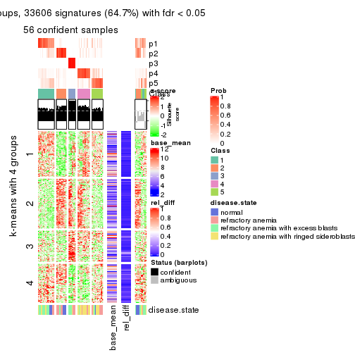
get_signatures(res, k = 6)
Signature heatmaps where rows are not scaled:
get_signatures(res, k = 2, scale_rows = FALSE)
get_signatures(res, k = 3, scale_rows = FALSE)
get_signatures(res, k = 4, scale_rows = FALSE)
get_signatures(res, k = 5, scale_rows = FALSE)
get_signatures(res, k = 6, scale_rows = FALSE)
Compare the overlap of signatures from different k:
compare_signatures(res)
get_signature() returns a data frame invisibly. TO get the list of signatures, the function
call should be assigned to a variable explicitly. In following code, if plot argument is set
to FALSE, no heatmap is plotted while only the differential analysis is performed.
# code only for demonstration
tb = get_signature(res, k = ..., plot = FALSE)
An example of the output of tb is:
#> which_row fdr mean_1 mean_2 scaled_mean_1 scaled_mean_2 km
#> 1 38 0.042760348 8.373488 9.131774 -0.5533452 0.5164555 1
#> 2 40 0.018707592 7.106213 8.469186 -0.6173731 0.5762149 1
#> 3 55 0.019134737 10.221463 11.207825 -0.6159697 0.5749050 1
#> 4 59 0.006059896 5.921854 7.869574 -0.6899429 0.6439467 1
#> 5 60 0.018055526 8.928898 10.211722 -0.6204761 0.5791110 1
#> 6 98 0.009384629 15.714769 14.887706 0.6635654 -0.6193277 2
...
The columns in tb are:
which_row: row indices corresponding to the input matrix.fdr: FDR for the differential test. mean_x: The mean value in group x.scaled_mean_x: The mean value in group x after rows are scaled.km: Row groups if k-means clustering is applied to rows.UMAP plot which shows how samples are separated.
dimension_reduction(res, k = 2, method = "UMAP")
dimension_reduction(res, k = 3, method = "UMAP")
dimension_reduction(res, k = 4, method = "UMAP")
dimension_reduction(res, k = 5, method = "UMAP")
dimension_reduction(res, k = 6, method = "UMAP")
Following heatmap shows how subgroups are split when increasing k:
collect_classes(res)
Test correlation between subgroups and known annotations. If the known annotation is numeric, one-way ANOVA test is applied, and if the known annotation is discrete, chi-squared contingency table test is applied.
test_to_known_factors(res)
#> n disease.state(p) k
#> CV:kmeans 57 0.434296 2
#> CV:kmeans 61 0.022653 3
#> CV:kmeans 40 0.001923 4
#> CV:kmeans 56 0.000887 5
#> CV:kmeans 49 0.001200 6
If matrix rows can be associated to genes, consider to use GO_Enrichment(res,
...) to perform function enrichment for the signature genes.
The object with results only for a single top-value method and a single partition method can be extracted as:
res = res_list["CV", "skmeans"]
# you can also extract it by
# res = res_list["CV:skmeans"]
A summary of res and all the functions that can be applied to it:
res
#> A 'ConsensusPartition' object with k = 2, 3, 4, 5, 6.
#> On a matrix with 51941 rows and 66 columns.
#> Top rows (1000, 2000, 3000, 4000, 5000) are extracted by 'CV' method.
#> Subgroups are detected by 'skmeans' method.
#> Performed in total 1250 partitions by row resampling.
#> Best k for subgroups seems to be 2.
#>
#> Following methods can be applied to this 'ConsensusPartition' object:
#> [1] "cola_report" "collect_classes" "collect_plots"
#> [4] "collect_stats" "colnames" "compare_signatures"
#> [7] "consensus_heatmap" "dimension_reduction" "functional_enrichment"
#> [10] "get_anno_col" "get_anno" "get_classes"
#> [13] "get_consensus" "get_matrix" "get_membership"
#> [16] "get_param" "get_signatures" "get_stats"
#> [19] "is_best_k" "is_stable_k" "membership_heatmap"
#> [22] "ncol" "nrow" "plot_ecdf"
#> [25] "rownames" "select_partition_number" "show"
#> [28] "suggest_best_k" "test_to_known_factors"
collect_plots() function collects all the plots made from res for all k (number of partitions)
into one single page to provide an easy and fast comparison between different k.
collect_plots(res)
The plots are:
k and the heatmap of
predicted classes for each k.k.k.k.All the plots in panels can be made by individual functions and they are plotted later in this section.
select_partition_number() produces several plots showing different
statistics for choosing “optimized” k. There are following statistics:
k;k, the area increased is defined as \(A_k - A_{k-1}\).The detailed explanations of these statistics can be found in the cola vignette.
Generally speaking, lower PAC score, higher mean silhouette score or higher
concordance corresponds to better partition. Rand index and Jaccard index
measure how similar the current partition is compared to partition with k-1.
If they are too similar, we won't accept k is better than k-1.
select_partition_number(res)
The numeric values for all these statistics can be obtained by get_stats().
get_stats(res)
#> k 1-PAC mean_silhouette concordance area_increased Rand Jaccard
#> 2 2 0.604 0.863 0.935 0.497 0.509 0.509
#> 3 3 0.552 0.672 0.860 0.342 0.739 0.527
#> 4 4 0.679 0.707 0.862 0.125 0.854 0.596
#> 5 5 0.647 0.578 0.740 0.070 0.915 0.680
#> 6 6 0.672 0.574 0.734 0.045 0.936 0.697
suggest_best_k() suggests the best \(k\) based on these statistics. The rules are as follows:
NA.suggest_best_k(res)
#> [1] 2
Following shows the table of the partitions (You need to click the show/hide
code output link to see it). The membership matrix (columns with name p*)
is inferred by
clue::cl_consensus()
function with the SE method. Basically the value in the membership matrix
represents the probability to belong to a certain group. The finall class
label for an item is determined with the group with highest probability it
belongs to.
In get_classes() function, the entropy is calculated from the membership
matrix and the silhouette score is calculated from the consensus matrix.
cbind(get_classes(res, k = 2), get_membership(res, k = 2))
#> class entropy silhouette p1 p2
#> GSM103343 1 0.653 0.760 0.832 0.168
#> GSM103344 1 0.662 0.755 0.828 0.172
#> GSM103345 1 0.000 0.918 1.000 0.000
#> GSM103364 1 0.000 0.918 1.000 0.000
#> GSM103365 1 0.000 0.918 1.000 0.000
#> GSM103366 1 0.730 0.768 0.796 0.204
#> GSM103369 1 0.000 0.918 1.000 0.000
#> GSM103370 1 0.000 0.918 1.000 0.000
#> GSM103388 1 0.000 0.918 1.000 0.000
#> GSM103389 1 0.000 0.918 1.000 0.000
#> GSM103390 1 0.753 0.755 0.784 0.216
#> GSM103347 2 0.000 0.932 0.000 1.000
#> GSM103349 2 0.000 0.932 0.000 1.000
#> GSM103354 2 0.000 0.932 0.000 1.000
#> GSM103355 1 0.653 0.760 0.832 0.168
#> GSM103357 2 0.000 0.932 0.000 1.000
#> GSM103358 1 0.000 0.918 1.000 0.000
#> GSM103361 1 0.000 0.918 1.000 0.000
#> GSM103363 2 0.000 0.932 0.000 1.000
#> GSM103367 2 0.971 0.401 0.400 0.600
#> GSM103381 1 0.000 0.918 1.000 0.000
#> GSM103382 1 0.722 0.772 0.800 0.200
#> GSM103384 1 0.000 0.918 1.000 0.000
#> GSM103391 2 0.000 0.932 0.000 1.000
#> GSM103394 2 0.662 0.743 0.172 0.828
#> GSM103399 1 0.978 0.405 0.588 0.412
#> GSM103401 2 0.000 0.932 0.000 1.000
#> GSM103404 1 0.760 0.751 0.780 0.220
#> GSM103408 1 0.722 0.772 0.800 0.200
#> GSM103348 2 0.000 0.932 0.000 1.000
#> GSM103351 2 0.760 0.742 0.220 0.780
#> GSM103356 2 0.204 0.913 0.032 0.968
#> GSM103368 2 0.000 0.932 0.000 1.000
#> GSM103372 2 0.722 0.765 0.200 0.800
#> GSM103375 2 0.000 0.932 0.000 1.000
#> GSM103376 2 0.529 0.845 0.120 0.880
#> GSM103379 1 0.000 0.918 1.000 0.000
#> GSM103385 2 0.722 0.765 0.200 0.800
#> GSM103387 2 0.000 0.932 0.000 1.000
#> GSM103392 1 0.000 0.918 1.000 0.000
#> GSM103393 2 0.000 0.932 0.000 1.000
#> GSM103395 2 0.000 0.932 0.000 1.000
#> GSM103396 1 0.000 0.918 1.000 0.000
#> GSM103398 1 0.722 0.772 0.800 0.200
#> GSM103402 2 0.000 0.932 0.000 1.000
#> GSM103403 2 0.000 0.932 0.000 1.000
#> GSM103405 1 0.722 0.772 0.800 0.200
#> GSM103407 2 0.000 0.932 0.000 1.000
#> GSM103346 2 0.000 0.932 0.000 1.000
#> GSM103350 2 0.722 0.765 0.200 0.800
#> GSM103352 2 0.000 0.932 0.000 1.000
#> GSM103353 2 0.000 0.932 0.000 1.000
#> GSM103359 1 0.000 0.918 1.000 0.000
#> GSM103360 1 0.000 0.918 1.000 0.000
#> GSM103362 1 0.000 0.918 1.000 0.000
#> GSM103371 1 0.000 0.918 1.000 0.000
#> GSM103373 1 0.000 0.918 1.000 0.000
#> GSM103374 1 0.000 0.918 1.000 0.000
#> GSM103377 1 0.971 0.435 0.600 0.400
#> GSM103378 1 0.000 0.918 1.000 0.000
#> GSM103380 1 0.000 0.918 1.000 0.000
#> GSM103383 1 0.000 0.918 1.000 0.000
#> GSM103386 1 0.000 0.918 1.000 0.000
#> GSM103397 1 0.000 0.918 1.000 0.000
#> GSM103400 1 0.000 0.918 1.000 0.000
#> GSM103406 1 0.000 0.918 1.000 0.000
cbind(get_classes(res, k = 3), get_membership(res, k = 3))
#> class entropy silhouette p1 p2 p3
#> GSM103343 2 0.0000 0.7936 0.000 1.000 0.000
#> GSM103344 2 0.0000 0.7936 0.000 1.000 0.000
#> GSM103345 2 0.0000 0.7936 0.000 1.000 0.000
#> GSM103364 2 0.6260 0.2492 0.448 0.552 0.000
#> GSM103365 1 0.6204 0.0674 0.576 0.424 0.000
#> GSM103366 2 0.0000 0.7936 0.000 1.000 0.000
#> GSM103369 2 0.0000 0.7936 0.000 1.000 0.000
#> GSM103370 1 0.0000 0.8296 1.000 0.000 0.000
#> GSM103388 1 0.0000 0.8296 1.000 0.000 0.000
#> GSM103389 1 0.0000 0.8296 1.000 0.000 0.000
#> GSM103390 2 0.0237 0.7921 0.004 0.996 0.000
#> GSM103347 3 0.0000 0.8339 0.000 0.000 1.000
#> GSM103349 3 0.0000 0.8339 0.000 0.000 1.000
#> GSM103354 3 0.0000 0.8339 0.000 0.000 1.000
#> GSM103355 2 0.2796 0.7565 0.092 0.908 0.000
#> GSM103357 2 0.0000 0.7936 0.000 1.000 0.000
#> GSM103358 2 0.3816 0.7134 0.148 0.852 0.000
#> GSM103361 2 0.6111 0.3600 0.396 0.604 0.000
#> GSM103363 2 0.0000 0.7936 0.000 1.000 0.000
#> GSM103367 3 0.6688 0.3883 0.408 0.012 0.580
#> GSM103381 1 0.0000 0.8296 1.000 0.000 0.000
#> GSM103382 1 0.8626 0.4362 0.580 0.280 0.140
#> GSM103384 1 0.0000 0.8296 1.000 0.000 0.000
#> GSM103391 3 0.5327 0.6576 0.000 0.272 0.728
#> GSM103394 1 0.9687 0.2679 0.460 0.272 0.268
#> GSM103399 1 0.7276 0.3111 0.564 0.404 0.032
#> GSM103401 3 0.0000 0.8339 0.000 0.000 1.000
#> GSM103404 1 0.5397 0.6270 0.720 0.000 0.280
#> GSM103408 1 0.6025 0.6913 0.784 0.076 0.140
#> GSM103348 3 0.0000 0.8339 0.000 0.000 1.000
#> GSM103351 3 0.4452 0.7196 0.192 0.000 0.808
#> GSM103356 2 0.0747 0.7810 0.000 0.984 0.016
#> GSM103368 2 0.6307 -0.3277 0.000 0.512 0.488
#> GSM103372 3 0.6113 0.6450 0.012 0.300 0.688
#> GSM103375 3 0.5431 0.6787 0.000 0.284 0.716
#> GSM103376 3 0.3686 0.7652 0.000 0.140 0.860
#> GSM103379 1 0.0000 0.8296 1.000 0.000 0.000
#> GSM103385 3 0.3686 0.7590 0.140 0.000 0.860
#> GSM103387 3 0.3879 0.7759 0.000 0.152 0.848
#> GSM103392 1 0.0000 0.8296 1.000 0.000 0.000
#> GSM103393 3 0.6309 0.2981 0.000 0.496 0.504
#> GSM103395 3 0.0000 0.8339 0.000 0.000 1.000
#> GSM103396 1 0.0000 0.8296 1.000 0.000 0.000
#> GSM103398 1 0.6191 0.6846 0.776 0.084 0.140
#> GSM103402 3 0.5327 0.6576 0.000 0.272 0.728
#> GSM103403 3 0.3752 0.7776 0.000 0.144 0.856
#> GSM103405 1 0.7653 0.5905 0.684 0.176 0.140
#> GSM103407 2 0.0000 0.7936 0.000 1.000 0.000
#> GSM103346 3 0.0000 0.8339 0.000 0.000 1.000
#> GSM103350 3 0.3686 0.7590 0.140 0.000 0.860
#> GSM103352 3 0.0000 0.8339 0.000 0.000 1.000
#> GSM103353 3 0.0000 0.8339 0.000 0.000 1.000
#> GSM103359 1 0.6204 0.0674 0.576 0.424 0.000
#> GSM103360 2 0.6280 0.2188 0.460 0.540 0.000
#> GSM103362 2 0.3752 0.7172 0.144 0.856 0.000
#> GSM103371 1 0.0892 0.8176 0.980 0.020 0.000
#> GSM103373 1 0.5706 0.4946 0.680 0.320 0.000
#> GSM103374 1 0.0237 0.8274 0.996 0.004 0.000
#> GSM103377 2 0.6215 0.0456 0.428 0.572 0.000
#> GSM103378 1 0.0000 0.8296 1.000 0.000 0.000
#> GSM103380 1 0.0000 0.8296 1.000 0.000 0.000
#> GSM103383 1 0.0000 0.8296 1.000 0.000 0.000
#> GSM103386 1 0.0000 0.8296 1.000 0.000 0.000
#> GSM103397 1 0.0000 0.8296 1.000 0.000 0.000
#> GSM103400 1 0.0592 0.8234 0.988 0.012 0.000
#> GSM103406 1 0.0000 0.8296 1.000 0.000 0.000
cbind(get_classes(res, k = 4), get_membership(res, k = 4))
#> class entropy silhouette p1 p2 p3 p4
#> GSM103343 2 0.0000 0.8349 0.000 1.000 0.000 0.000
#> GSM103344 2 0.0000 0.8349 0.000 1.000 0.000 0.000
#> GSM103345 2 0.0000 0.8349 0.000 1.000 0.000 0.000
#> GSM103364 2 0.4866 0.2366 0.404 0.596 0.000 0.000
#> GSM103365 1 0.4999 -0.0161 0.508 0.492 0.000 0.000
#> GSM103366 2 0.4134 0.5428 0.000 0.740 0.000 0.260
#> GSM103369 2 0.0376 0.8322 0.004 0.992 0.000 0.004
#> GSM103370 1 0.1109 0.8431 0.968 0.028 0.000 0.004
#> GSM103388 1 0.2032 0.8319 0.936 0.028 0.000 0.036
#> GSM103389 1 0.1109 0.8431 0.968 0.028 0.000 0.004
#> GSM103390 4 0.5170 0.6730 0.048 0.228 0.000 0.724
#> GSM103347 3 0.1022 0.8326 0.000 0.000 0.968 0.032
#> GSM103349 3 0.0000 0.8281 0.000 0.000 1.000 0.000
#> GSM103354 3 0.1022 0.8326 0.000 0.000 0.968 0.032
#> GSM103355 2 0.0000 0.8349 0.000 1.000 0.000 0.000
#> GSM103357 2 0.1004 0.8214 0.000 0.972 0.004 0.024
#> GSM103358 2 0.0000 0.8349 0.000 1.000 0.000 0.000
#> GSM103361 2 0.2011 0.7847 0.080 0.920 0.000 0.000
#> GSM103363 2 0.1211 0.8140 0.000 0.960 0.000 0.040
#> GSM103367 3 0.6794 0.2154 0.444 0.008 0.476 0.072
#> GSM103381 1 0.1733 0.8377 0.948 0.028 0.000 0.024
#> GSM103382 4 0.2888 0.8274 0.124 0.004 0.000 0.872
#> GSM103384 1 0.1936 0.8339 0.940 0.028 0.000 0.032
#> GSM103391 4 0.1118 0.8321 0.000 0.000 0.036 0.964
#> GSM103394 4 0.1824 0.8413 0.060 0.000 0.004 0.936
#> GSM103399 4 0.3545 0.8110 0.164 0.008 0.000 0.828
#> GSM103401 3 0.1022 0.8326 0.000 0.000 0.968 0.032
#> GSM103404 1 0.7172 0.2882 0.532 0.000 0.304 0.164
#> GSM103408 4 0.5088 0.6036 0.288 0.024 0.000 0.688
#> GSM103348 3 0.0336 0.8267 0.000 0.000 0.992 0.008
#> GSM103351 3 0.3791 0.7275 0.200 0.000 0.796 0.004
#> GSM103356 2 0.2759 0.7831 0.000 0.904 0.044 0.052
#> GSM103368 2 0.7677 0.0575 0.000 0.456 0.296 0.248
#> GSM103372 3 0.6357 0.3652 0.000 0.388 0.544 0.068
#> GSM103375 3 0.6444 0.5131 0.000 0.284 0.612 0.104
#> GSM103376 3 0.5594 0.7244 0.036 0.132 0.764 0.068
#> GSM103379 1 0.0188 0.8445 0.996 0.000 0.000 0.004
#> GSM103385 3 0.5102 0.7165 0.188 0.000 0.748 0.064
#> GSM103387 4 0.1305 0.8317 0.004 0.000 0.036 0.960
#> GSM103392 1 0.0188 0.8445 0.996 0.000 0.000 0.004
#> GSM103393 4 0.5334 0.6732 0.000 0.172 0.088 0.740
#> GSM103395 3 0.1022 0.8326 0.000 0.000 0.968 0.032
#> GSM103396 1 0.0188 0.8445 0.996 0.000 0.000 0.004
#> GSM103398 4 0.3024 0.8110 0.148 0.000 0.000 0.852
#> GSM103402 4 0.0336 0.8370 0.000 0.000 0.008 0.992
#> GSM103403 4 0.1022 0.8290 0.000 0.000 0.032 0.968
#> GSM103405 4 0.3831 0.7726 0.204 0.004 0.000 0.792
#> GSM103407 4 0.1118 0.8329 0.000 0.036 0.000 0.964
#> GSM103346 3 0.1022 0.8326 0.000 0.000 0.968 0.032
#> GSM103350 3 0.3105 0.7742 0.140 0.000 0.856 0.004
#> GSM103352 3 0.1022 0.8326 0.000 0.000 0.968 0.032
#> GSM103353 3 0.1022 0.8326 0.000 0.000 0.968 0.032
#> GSM103359 1 0.5985 -0.0413 0.504 0.464 0.024 0.008
#> GSM103360 2 0.4981 0.1183 0.464 0.536 0.000 0.000
#> GSM103362 2 0.0188 0.8340 0.004 0.996 0.000 0.000
#> GSM103371 1 0.2593 0.7920 0.892 0.104 0.000 0.004
#> GSM103373 1 0.5898 0.4222 0.628 0.316 0.000 0.056
#> GSM103374 1 0.2246 0.7999 0.928 0.004 0.016 0.052
#> GSM103377 4 0.6227 0.6553 0.112 0.212 0.004 0.672
#> GSM103378 1 0.0895 0.8445 0.976 0.020 0.000 0.004
#> GSM103380 1 0.0188 0.8445 0.996 0.000 0.000 0.004
#> GSM103383 1 0.0188 0.8445 0.996 0.000 0.000 0.004
#> GSM103386 1 0.0188 0.8445 0.996 0.000 0.000 0.004
#> GSM103397 1 0.0469 0.8422 0.988 0.000 0.000 0.012
#> GSM103400 1 0.5573 0.2524 0.604 0.028 0.000 0.368
#> GSM103406 1 0.0895 0.8445 0.976 0.020 0.000 0.004
cbind(get_classes(res, k = 5), get_membership(res, k = 5))
#> class entropy silhouette p1 p2 p3 p4 p5
#> GSM103343 2 0.0162 0.7567 0.000 0.996 0.000 0.004 0.000
#> GSM103344 2 0.0000 0.7554 0.000 1.000 0.000 0.000 0.000
#> GSM103345 2 0.0162 0.7567 0.000 0.996 0.000 0.004 0.000
#> GSM103364 2 0.5680 0.5184 0.160 0.628 0.000 0.212 0.000
#> GSM103365 2 0.6452 0.2413 0.284 0.496 0.000 0.220 0.000
#> GSM103366 2 0.3395 0.5857 0.000 0.764 0.000 0.000 0.236
#> GSM103369 2 0.2583 0.6780 0.000 0.864 0.000 0.132 0.004
#> GSM103370 1 0.4511 0.6989 0.628 0.000 0.000 0.356 0.016
#> GSM103388 1 0.4963 0.6930 0.608 0.000 0.000 0.352 0.040
#> GSM103389 1 0.4497 0.6994 0.632 0.000 0.000 0.352 0.016
#> GSM103390 5 0.7261 0.4014 0.052 0.260 0.000 0.192 0.496
#> GSM103347 3 0.0000 0.7769 0.000 0.000 1.000 0.000 0.000
#> GSM103349 3 0.3242 0.6149 0.000 0.000 0.784 0.216 0.000
#> GSM103354 3 0.0000 0.7769 0.000 0.000 1.000 0.000 0.000
#> GSM103355 2 0.0963 0.7594 0.000 0.964 0.000 0.036 0.000
#> GSM103357 2 0.0865 0.7467 0.000 0.972 0.000 0.024 0.004
#> GSM103358 2 0.1851 0.7519 0.000 0.912 0.000 0.088 0.000
#> GSM103361 2 0.3160 0.7071 0.004 0.808 0.000 0.188 0.000
#> GSM103363 2 0.2278 0.7142 0.000 0.908 0.000 0.032 0.060
#> GSM103367 4 0.6874 0.3933 0.388 0.000 0.088 0.464 0.060
#> GSM103381 1 0.4894 0.6954 0.612 0.000 0.000 0.352 0.036
#> GSM103382 5 0.2920 0.7306 0.016 0.000 0.000 0.132 0.852
#> GSM103384 1 0.4950 0.6942 0.612 0.000 0.000 0.348 0.040
#> GSM103391 5 0.1725 0.7496 0.000 0.000 0.044 0.020 0.936
#> GSM103394 5 0.2141 0.7567 0.064 0.000 0.016 0.004 0.916
#> GSM103399 5 0.5550 0.6559 0.184 0.004 0.008 0.124 0.680
#> GSM103401 3 0.0162 0.7740 0.000 0.000 0.996 0.004 0.000
#> GSM103404 3 0.7789 0.0418 0.324 0.000 0.404 0.084 0.188
#> GSM103408 5 0.4879 0.6021 0.076 0.000 0.000 0.228 0.696
#> GSM103348 3 0.3885 0.5445 0.000 0.000 0.724 0.268 0.008
#> GSM103351 3 0.6108 0.3363 0.208 0.000 0.568 0.224 0.000
#> GSM103356 2 0.4807 -0.0929 0.000 0.532 0.000 0.448 0.020
#> GSM103368 4 0.7254 0.4812 0.000 0.236 0.048 0.496 0.220
#> GSM103372 4 0.7352 0.4924 0.000 0.292 0.156 0.484 0.068
#> GSM103375 4 0.7621 0.5136 0.000 0.172 0.176 0.512 0.140
#> GSM103376 4 0.8019 0.3706 0.120 0.048 0.280 0.484 0.068
#> GSM103379 1 0.0963 0.6632 0.964 0.000 0.000 0.036 0.000
#> GSM103385 4 0.7490 0.3381 0.188 0.000 0.272 0.472 0.068
#> GSM103387 5 0.3612 0.4993 0.000 0.000 0.000 0.268 0.732
#> GSM103392 1 0.0290 0.6731 0.992 0.000 0.000 0.008 0.000
#> GSM103393 4 0.6326 0.1994 0.000 0.136 0.004 0.452 0.408
#> GSM103395 3 0.0000 0.7769 0.000 0.000 1.000 0.000 0.000
#> GSM103396 1 0.0609 0.6766 0.980 0.000 0.000 0.020 0.000
#> GSM103398 5 0.3116 0.7481 0.076 0.000 0.000 0.064 0.860
#> GSM103402 5 0.0324 0.7561 0.000 0.000 0.004 0.004 0.992
#> GSM103403 5 0.1800 0.7377 0.000 0.000 0.020 0.048 0.932
#> GSM103405 5 0.4617 0.6883 0.148 0.000 0.000 0.108 0.744
#> GSM103407 5 0.0671 0.7558 0.000 0.004 0.000 0.016 0.980
#> GSM103346 3 0.0000 0.7769 0.000 0.000 1.000 0.000 0.000
#> GSM103350 3 0.6128 0.3517 0.176 0.000 0.580 0.240 0.004
#> GSM103352 3 0.0000 0.7769 0.000 0.000 1.000 0.000 0.000
#> GSM103353 3 0.0000 0.7769 0.000 0.000 1.000 0.000 0.000
#> GSM103359 1 0.8081 -0.0476 0.396 0.300 0.148 0.156 0.000
#> GSM103360 2 0.5273 0.4472 0.352 0.588 0.000 0.060 0.000
#> GSM103362 2 0.2605 0.7306 0.000 0.852 0.000 0.148 0.000
#> GSM103371 1 0.6436 0.5472 0.444 0.136 0.000 0.412 0.008
#> GSM103373 4 0.7773 -0.4806 0.360 0.196 0.000 0.368 0.076
#> GSM103374 1 0.4256 0.4697 0.760 0.004 0.000 0.192 0.044
#> GSM103377 5 0.7362 0.4551 0.120 0.172 0.000 0.164 0.544
#> GSM103378 1 0.4510 0.6784 0.560 0.000 0.000 0.432 0.008
#> GSM103380 1 0.0880 0.6644 0.968 0.000 0.000 0.032 0.000
#> GSM103383 1 0.0000 0.6712 1.000 0.000 0.000 0.000 0.000
#> GSM103386 1 0.3143 0.6648 0.796 0.000 0.000 0.204 0.000
#> GSM103397 1 0.1399 0.6605 0.952 0.000 0.000 0.020 0.028
#> GSM103400 1 0.6680 0.4236 0.436 0.000 0.000 0.296 0.268
#> GSM103406 1 0.4310 0.6937 0.604 0.000 0.000 0.392 0.004
cbind(get_classes(res, k = 6), get_membership(res, k = 6))
#> class entropy silhouette p1 p2 p3 p4 p5 p6
#> GSM103343 2 0.0692 0.734 0.004 0.976 0.000 0.020 0.000 0.000
#> GSM103344 2 0.0632 0.732 0.000 0.976 0.000 0.024 0.000 0.000
#> GSM103345 2 0.0692 0.734 0.004 0.976 0.000 0.020 0.000 0.000
#> GSM103364 2 0.5335 0.458 0.312 0.588 0.000 0.020 0.000 0.080
#> GSM103365 2 0.6067 0.185 0.388 0.452 0.000 0.024 0.000 0.136
#> GSM103366 2 0.3206 0.665 0.004 0.816 0.000 0.028 0.152 0.000
#> GSM103369 2 0.3963 0.585 0.164 0.756 0.000 0.080 0.000 0.000
#> GSM103370 1 0.2878 0.723 0.828 0.004 0.000 0.004 0.004 0.160
#> GSM103388 1 0.3466 0.726 0.832 0.004 0.000 0.044 0.020 0.100
#> GSM103389 1 0.2915 0.721 0.824 0.004 0.000 0.004 0.004 0.164
#> GSM103390 5 0.7215 0.171 0.308 0.256 0.000 0.088 0.348 0.000
#> GSM103347 3 0.0000 0.809 0.000 0.000 1.000 0.000 0.000 0.000
#> GSM103349 3 0.3767 0.606 0.000 0.000 0.720 0.260 0.016 0.004
#> GSM103354 3 0.0000 0.809 0.000 0.000 1.000 0.000 0.000 0.000
#> GSM103355 2 0.0622 0.737 0.008 0.980 0.000 0.012 0.000 0.000
#> GSM103357 2 0.2230 0.695 0.024 0.892 0.000 0.084 0.000 0.000
#> GSM103358 2 0.1938 0.733 0.036 0.920 0.000 0.040 0.000 0.004
#> GSM103361 2 0.5351 0.609 0.132 0.668 0.000 0.160 0.000 0.040
#> GSM103363 2 0.4298 0.613 0.024 0.764 0.000 0.096 0.116 0.000
#> GSM103367 4 0.3899 0.347 0.000 0.000 0.004 0.592 0.000 0.404
#> GSM103381 1 0.3383 0.731 0.832 0.004 0.000 0.036 0.016 0.112
#> GSM103382 5 0.4309 0.498 0.296 0.000 0.000 0.044 0.660 0.000
#> GSM103384 1 0.3427 0.727 0.832 0.004 0.000 0.044 0.016 0.104
#> GSM103391 5 0.1794 0.641 0.024 0.000 0.016 0.028 0.932 0.000
#> GSM103394 5 0.0146 0.659 0.000 0.000 0.004 0.000 0.996 0.000
#> GSM103399 5 0.6813 0.220 0.096 0.000 0.000 0.132 0.436 0.336
#> GSM103401 3 0.0000 0.809 0.000 0.000 1.000 0.000 0.000 0.000
#> GSM103404 6 0.6506 0.242 0.040 0.000 0.356 0.068 0.044 0.492
#> GSM103408 5 0.4627 0.339 0.396 0.000 0.000 0.044 0.560 0.000
#> GSM103348 3 0.4648 0.417 0.000 0.000 0.584 0.372 0.040 0.004
#> GSM103351 3 0.5974 0.283 0.004 0.000 0.484 0.268 0.000 0.244
#> GSM103356 4 0.3905 0.516 0.004 0.356 0.000 0.636 0.000 0.004
#> GSM103368 4 0.5360 0.607 0.036 0.144 0.000 0.664 0.156 0.000
#> GSM103372 4 0.4079 0.662 0.008 0.232 0.028 0.728 0.004 0.000
#> GSM103375 4 0.4278 0.685 0.000 0.100 0.044 0.776 0.080 0.000
#> GSM103376 4 0.4721 0.582 0.000 0.020 0.144 0.728 0.004 0.104
#> GSM103379 6 0.0865 0.697 0.036 0.000 0.000 0.000 0.000 0.964
#> GSM103385 4 0.4908 0.541 0.000 0.000 0.116 0.660 0.004 0.220
#> GSM103387 5 0.5011 0.468 0.116 0.000 0.000 0.264 0.620 0.000
#> GSM103392 6 0.2833 0.672 0.148 0.000 0.000 0.012 0.004 0.836
#> GSM103393 4 0.5836 0.398 0.036 0.100 0.000 0.544 0.320 0.000
#> GSM103395 3 0.0000 0.809 0.000 0.000 1.000 0.000 0.000 0.000
#> GSM103396 6 0.2595 0.667 0.160 0.000 0.000 0.004 0.000 0.836
#> GSM103398 5 0.3962 0.581 0.196 0.000 0.000 0.044 0.752 0.008
#> GSM103402 5 0.0508 0.660 0.012 0.000 0.000 0.004 0.984 0.000
#> GSM103403 5 0.1307 0.649 0.008 0.000 0.008 0.032 0.952 0.000
#> GSM103405 5 0.6581 0.228 0.072 0.000 0.000 0.132 0.464 0.332
#> GSM103407 5 0.0717 0.660 0.016 0.000 0.000 0.008 0.976 0.000
#> GSM103346 3 0.0000 0.809 0.000 0.000 1.000 0.000 0.000 0.000
#> GSM103350 3 0.5688 0.289 0.000 0.000 0.496 0.328 0.000 0.176
#> GSM103352 3 0.0000 0.809 0.000 0.000 1.000 0.000 0.000 0.000
#> GSM103353 3 0.0000 0.809 0.000 0.000 1.000 0.000 0.000 0.000
#> GSM103359 6 0.7542 0.278 0.108 0.216 0.056 0.116 0.004 0.500
#> GSM103360 2 0.6180 0.215 0.076 0.472 0.000 0.072 0.000 0.380
#> GSM103362 2 0.4317 0.670 0.088 0.752 0.000 0.144 0.000 0.016
#> GSM103371 1 0.5811 0.561 0.632 0.068 0.000 0.140 0.000 0.160
#> GSM103373 1 0.7284 0.388 0.520 0.068 0.000 0.204 0.068 0.140
#> GSM103374 6 0.5392 0.400 0.152 0.004 0.000 0.252 0.000 0.592
#> GSM103377 5 0.7738 0.319 0.144 0.112 0.000 0.144 0.496 0.104
#> GSM103378 1 0.4579 0.635 0.696 0.004 0.000 0.092 0.000 0.208
#> GSM103380 6 0.0865 0.697 0.036 0.000 0.000 0.000 0.000 0.964
#> GSM103383 6 0.2048 0.691 0.120 0.000 0.000 0.000 0.000 0.880
#> GSM103386 6 0.5307 0.358 0.216 0.004 0.000 0.136 0.008 0.636
#> GSM103397 6 0.2006 0.694 0.104 0.000 0.000 0.000 0.004 0.892
#> GSM103400 1 0.4290 0.665 0.776 0.000 0.000 0.048 0.100 0.076
#> GSM103406 1 0.4754 0.585 0.660 0.004 0.000 0.084 0.000 0.252
Heatmaps for the consensus matrix. It visualizes the probability of two samples to be in a same group.
consensus_heatmap(res, k = 2)
consensus_heatmap(res, k = 3)
consensus_heatmap(res, k = 4)
consensus_heatmap(res, k = 5)
consensus_heatmap(res, k = 6)
Heatmaps for the membership of samples in all partitions to see how consistent they are:
membership_heatmap(res, k = 2)
membership_heatmap(res, k = 3)
membership_heatmap(res, k = 4)
membership_heatmap(res, k = 5)
membership_heatmap(res, k = 6)
As soon as we have had the classes for columns, we can look for signatures which are significantly different between classes which can be candidate marks for certain classes. Following are the heatmaps for signatures.
Signature heatmaps where rows are scaled:
get_signatures(res, k = 2)
get_signatures(res, k = 3)
get_signatures(res, k = 4)
get_signatures(res, k = 5)
get_signatures(res, k = 6)
Signature heatmaps where rows are not scaled:
get_signatures(res, k = 2, scale_rows = FALSE)
get_signatures(res, k = 3, scale_rows = FALSE)
get_signatures(res, k = 4, scale_rows = FALSE)
get_signatures(res, k = 5, scale_rows = FALSE)
get_signatures(res, k = 6, scale_rows = FALSE)
Compare the overlap of signatures from different k:
compare_signatures(res)
get_signature() returns a data frame invisibly. TO get the list of signatures, the function
call should be assigned to a variable explicitly. In following code, if plot argument is set
to FALSE, no heatmap is plotted while only the differential analysis is performed.
# code only for demonstration
tb = get_signature(res, k = ..., plot = FALSE)
An example of the output of tb is:
#> which_row fdr mean_1 mean_2 scaled_mean_1 scaled_mean_2 km
#> 1 38 0.042760348 8.373488 9.131774 -0.5533452 0.5164555 1
#> 2 40 0.018707592 7.106213 8.469186 -0.6173731 0.5762149 1
#> 3 55 0.019134737 10.221463 11.207825 -0.6159697 0.5749050 1
#> 4 59 0.006059896 5.921854 7.869574 -0.6899429 0.6439467 1
#> 5 60 0.018055526 8.928898 10.211722 -0.6204761 0.5791110 1
#> 6 98 0.009384629 15.714769 14.887706 0.6635654 -0.6193277 2
...
The columns in tb are:
which_row: row indices corresponding to the input matrix.fdr: FDR for the differential test. mean_x: The mean value in group x.scaled_mean_x: The mean value in group x after rows are scaled.km: Row groups if k-means clustering is applied to rows.UMAP plot which shows how samples are separated.
dimension_reduction(res, k = 2, method = "UMAP")
dimension_reduction(res, k = 3, method = "UMAP")

dimension_reduction(res, k = 4, method = "UMAP")
dimension_reduction(res, k = 5, method = "UMAP")
dimension_reduction(res, k = 6, method = "UMAP")
Following heatmap shows how subgroups are split when increasing k:
collect_classes(res)
Test correlation between subgroups and known annotations. If the known annotation is numeric, one-way ANOVA test is applied, and if the known annotation is discrete, chi-squared contingency table test is applied.
test_to_known_factors(res)
#> n disease.state(p) k
#> CV:skmeans 63 3.19e-04 2
#> CV:skmeans 53 5.14e-03 3
#> CV:skmeans 56 7.05e-03 4
#> CV:skmeans 47 3.59e-03 5
#> CV:skmeans 46 9.26e-05 6
If matrix rows can be associated to genes, consider to use GO_Enrichment(res,
...) to perform function enrichment for the signature genes.
The object with results only for a single top-value method and a single partition method can be extracted as:
res = res_list["CV", "pam"]
# you can also extract it by
# res = res_list["CV:pam"]
A summary of res and all the functions that can be applied to it:
res
#> A 'ConsensusPartition' object with k = 2, 3, 4, 5, 6.
#> On a matrix with 51941 rows and 66 columns.
#> Top rows (1000, 2000, 3000, 4000, 5000) are extracted by 'CV' method.
#> Subgroups are detected by 'pam' method.
#> Performed in total 1250 partitions by row resampling.
#> Best k for subgroups seems to be 6.
#>
#> Following methods can be applied to this 'ConsensusPartition' object:
#> [1] "cola_report" "collect_classes" "collect_plots"
#> [4] "collect_stats" "colnames" "compare_signatures"
#> [7] "consensus_heatmap" "dimension_reduction" "functional_enrichment"
#> [10] "get_anno_col" "get_anno" "get_classes"
#> [13] "get_consensus" "get_matrix" "get_membership"
#> [16] "get_param" "get_signatures" "get_stats"
#> [19] "is_best_k" "is_stable_k" "membership_heatmap"
#> [22] "ncol" "nrow" "plot_ecdf"
#> [25] "rownames" "select_partition_number" "show"
#> [28] "suggest_best_k" "test_to_known_factors"
collect_plots() function collects all the plots made from res for all k (number of partitions)
into one single page to provide an easy and fast comparison between different k.
collect_plots(res)
The plots are:
k and the heatmap of
predicted classes for each k.k.k.k.All the plots in panels can be made by individual functions and they are plotted later in this section.
select_partition_number() produces several plots showing different
statistics for choosing “optimized” k. There are following statistics:
k;k, the area increased is defined as \(A_k - A_{k-1}\).The detailed explanations of these statistics can be found in the cola vignette.
Generally speaking, lower PAC score, higher mean silhouette score or higher
concordance corresponds to better partition. Rand index and Jaccard index
measure how similar the current partition is compared to partition with k-1.
If they are too similar, we won't accept k is better than k-1.
select_partition_number(res)
The numeric values for all these statistics can be obtained by get_stats().
get_stats(res)
#> k 1-PAC mean_silhouette concordance area_increased Rand Jaccard
#> 2 2 0.192 0.711 0.838 0.4349 0.522 0.522
#> 3 3 0.485 0.712 0.840 0.3703 0.648 0.449
#> 4 4 0.556 0.625 0.825 0.1902 0.769 0.498
#> 5 5 0.666 0.763 0.866 0.1028 0.822 0.476
#> 6 6 0.779 0.789 0.877 0.0643 0.924 0.670
suggest_best_k() suggests the best \(k\) based on these statistics. The rules are as follows:
NA.suggest_best_k(res)
#> [1] 6
Following shows the table of the partitions (You need to click the show/hide
code output link to see it). The membership matrix (columns with name p*)
is inferred by
clue::cl_consensus()
function with the SE method. Basically the value in the membership matrix
represents the probability to belong to a certain group. The finall class
label for an item is determined with the group with highest probability it
belongs to.
In get_classes() function, the entropy is calculated from the membership
matrix and the silhouette score is calculated from the consensus matrix.
cbind(get_classes(res, k = 2), get_membership(res, k = 2))
#> class entropy silhouette p1 p2
#> GSM103343 1 0.4022 0.770 0.920 0.080
#> GSM103344 1 0.5408 0.745 0.876 0.124
#> GSM103345 1 0.3733 0.775 0.928 0.072
#> GSM103364 1 0.0000 0.800 1.000 0.000
#> GSM103365 1 0.0000 0.800 1.000 0.000
#> GSM103366 1 0.8608 0.576 0.716 0.284
#> GSM103369 1 0.6247 0.706 0.844 0.156
#> GSM103370 1 0.0000 0.800 1.000 0.000
#> GSM103388 1 0.6531 0.724 0.832 0.168
#> GSM103389 1 0.0000 0.800 1.000 0.000
#> GSM103390 1 0.7219 0.684 0.800 0.200
#> GSM103347 2 0.8763 0.614 0.296 0.704
#> GSM103349 2 0.9248 0.635 0.340 0.660
#> GSM103354 2 0.0000 0.716 0.000 1.000
#> GSM103355 1 0.0000 0.800 1.000 0.000
#> GSM103357 1 0.8955 0.472 0.688 0.312
#> GSM103358 1 0.0672 0.800 0.992 0.008
#> GSM103361 1 0.0000 0.800 1.000 0.000
#> GSM103363 1 0.9286 0.391 0.656 0.344
#> GSM103367 1 0.4815 0.758 0.896 0.104
#> GSM103381 1 0.7219 0.696 0.800 0.200
#> GSM103382 2 0.9552 0.613 0.376 0.624
#> GSM103384 1 0.7219 0.696 0.800 0.200
#> GSM103391 2 0.7453 0.802 0.212 0.788
#> GSM103394 2 0.7453 0.801 0.212 0.788
#> GSM103399 2 0.9795 0.436 0.416 0.584
#> GSM103401 2 0.2948 0.711 0.052 0.948
#> GSM103404 1 0.9170 0.529 0.668 0.332
#> GSM103408 1 0.7815 0.647 0.768 0.232
#> GSM103348 2 0.4815 0.772 0.104 0.896
#> GSM103351 1 0.1633 0.797 0.976 0.024
#> GSM103356 1 0.8955 0.472 0.688 0.312
#> GSM103368 2 0.8661 0.711 0.288 0.712
#> GSM103372 1 0.7299 0.664 0.796 0.204
#> GSM103375 2 0.7056 0.801 0.192 0.808
#> GSM103376 2 0.7950 0.778 0.240 0.760
#> GSM103379 1 0.6623 0.726 0.828 0.172
#> GSM103385 2 0.8016 0.775 0.244 0.756
#> GSM103387 2 0.7674 0.797 0.224 0.776
#> GSM103392 1 0.7376 0.693 0.792 0.208
#> GSM103393 2 0.7056 0.801 0.192 0.808
#> GSM103395 2 0.0000 0.716 0.000 1.000
#> GSM103396 1 0.7528 0.687 0.784 0.216
#> GSM103398 2 0.9323 0.672 0.348 0.652
#> GSM103402 2 0.7528 0.801 0.216 0.784
#> GSM103403 2 0.7056 0.801 0.192 0.808
#> GSM103405 2 0.9358 0.650 0.352 0.648
#> GSM103407 2 0.7453 0.802 0.212 0.788
#> GSM103346 2 0.5842 0.654 0.140 0.860
#> GSM103350 1 0.9087 0.431 0.676 0.324
#> GSM103352 2 0.0000 0.716 0.000 1.000
#> GSM103353 2 0.0000 0.716 0.000 1.000
#> GSM103359 1 0.0672 0.800 0.992 0.008
#> GSM103360 1 0.0672 0.800 0.992 0.008
#> GSM103362 1 0.0000 0.800 1.000 0.000
#> GSM103371 1 0.0000 0.800 1.000 0.000
#> GSM103373 1 0.6343 0.703 0.840 0.160
#> GSM103374 1 0.1414 0.798 0.980 0.020
#> GSM103377 2 0.9248 0.641 0.340 0.660
#> GSM103378 1 0.0376 0.800 0.996 0.004
#> GSM103380 1 0.7376 0.693 0.792 0.208
#> GSM103383 1 0.7376 0.692 0.792 0.208
#> GSM103386 1 0.7453 0.690 0.788 0.212
#> GSM103397 1 0.7453 0.690 0.788 0.212
#> GSM103400 1 0.7219 0.696 0.800 0.200
#> GSM103406 1 0.0000 0.800 1.000 0.000
cbind(get_classes(res, k = 3), get_membership(res, k = 3))
#> class entropy silhouette p1 p2 p3
#> GSM103343 2 0.4291 0.7520 0.180 0.820 0.000
#> GSM103344 2 0.5138 0.7185 0.252 0.748 0.000
#> GSM103345 2 0.4796 0.7316 0.220 0.780 0.000
#> GSM103364 2 0.0000 0.8297 0.000 1.000 0.000
#> GSM103365 2 0.0000 0.8297 0.000 1.000 0.000
#> GSM103366 1 0.6180 0.2258 0.584 0.416 0.000
#> GSM103369 2 0.5497 0.6800 0.292 0.708 0.000
#> GSM103370 2 0.1031 0.8213 0.024 0.976 0.000
#> GSM103388 1 0.6111 0.6467 0.604 0.396 0.000
#> GSM103389 2 0.1031 0.8213 0.024 0.976 0.000
#> GSM103390 2 0.6192 0.5184 0.420 0.580 0.000
#> GSM103347 1 0.7310 0.4356 0.600 0.040 0.360
#> GSM103349 1 0.6252 -0.0492 0.556 0.444 0.000
#> GSM103354 3 0.0000 0.9561 0.000 0.000 1.000
#> GSM103355 2 0.0000 0.8297 0.000 1.000 0.000
#> GSM103357 2 0.5926 0.6171 0.356 0.644 0.000
#> GSM103358 2 0.0892 0.8299 0.020 0.980 0.000
#> GSM103361 2 0.0237 0.8305 0.004 0.996 0.000
#> GSM103363 2 0.5988 0.6014 0.368 0.632 0.000
#> GSM103367 2 0.1411 0.8303 0.036 0.964 0.000
#> GSM103381 1 0.5988 0.6742 0.632 0.368 0.000
#> GSM103382 1 0.1031 0.7138 0.976 0.024 0.000
#> GSM103384 1 0.5988 0.6742 0.632 0.368 0.000
#> GSM103391 1 0.0747 0.7130 0.984 0.016 0.000
#> GSM103394 1 0.0000 0.7132 1.000 0.000 0.000
#> GSM103399 1 0.0000 0.7132 1.000 0.000 0.000
#> GSM103401 3 0.0237 0.9531 0.004 0.000 0.996
#> GSM103404 1 0.8263 0.6459 0.636 0.176 0.188
#> GSM103408 1 0.5733 0.6955 0.676 0.324 0.000
#> GSM103348 3 0.4974 0.6935 0.236 0.000 0.764
#> GSM103351 2 0.0892 0.8299 0.020 0.980 0.000
#> GSM103356 2 0.5529 0.6833 0.296 0.704 0.000
#> GSM103368 1 0.6180 -0.1705 0.584 0.416 0.000
#> GSM103372 2 0.5465 0.6958 0.288 0.712 0.000
#> GSM103375 1 0.0592 0.7095 0.988 0.012 0.000
#> GSM103376 1 0.4121 0.7205 0.832 0.168 0.000
#> GSM103379 1 0.6079 0.6367 0.612 0.388 0.000
#> GSM103385 1 0.4062 0.7208 0.836 0.164 0.000
#> GSM103387 1 0.0892 0.7123 0.980 0.020 0.000
#> GSM103392 1 0.5882 0.6798 0.652 0.348 0.000
#> GSM103393 1 0.0237 0.7120 0.996 0.004 0.000
#> GSM103395 3 0.0000 0.9561 0.000 0.000 1.000
#> GSM103396 1 0.5882 0.6798 0.652 0.348 0.000
#> GSM103398 1 0.4702 0.7255 0.788 0.212 0.000
#> GSM103402 1 0.0892 0.7123 0.980 0.020 0.000
#> GSM103403 1 0.0237 0.7120 0.996 0.004 0.000
#> GSM103405 1 0.0237 0.7152 0.996 0.004 0.000
#> GSM103407 1 0.1031 0.7115 0.976 0.024 0.000
#> GSM103346 3 0.0000 0.9561 0.000 0.000 1.000
#> GSM103350 2 0.1031 0.8304 0.024 0.976 0.000
#> GSM103352 3 0.0000 0.9561 0.000 0.000 1.000
#> GSM103353 3 0.0000 0.9561 0.000 0.000 1.000
#> GSM103359 2 0.1031 0.8294 0.024 0.976 0.000
#> GSM103360 2 0.0892 0.8299 0.020 0.980 0.000
#> GSM103362 2 0.1753 0.8167 0.048 0.952 0.000
#> GSM103371 2 0.1031 0.8213 0.024 0.976 0.000
#> GSM103373 2 0.5678 0.6573 0.316 0.684 0.000
#> GSM103374 2 0.1031 0.8294 0.024 0.976 0.000
#> GSM103377 1 0.0000 0.7132 1.000 0.000 0.000
#> GSM103378 2 0.1289 0.8148 0.032 0.968 0.000
#> GSM103380 1 0.5882 0.6798 0.652 0.348 0.000
#> GSM103383 1 0.5905 0.6792 0.648 0.352 0.000
#> GSM103386 1 0.5882 0.6798 0.652 0.348 0.000
#> GSM103397 1 0.5988 0.6655 0.632 0.368 0.000
#> GSM103400 1 0.5810 0.6913 0.664 0.336 0.000
#> GSM103406 2 0.0237 0.8284 0.004 0.996 0.000
cbind(get_classes(res, k = 4), get_membership(res, k = 4))
#> class entropy silhouette p1 p2 p3 p4
#> GSM103343 2 0.0524 0.7613 0.004 0.988 0.000 0.008
#> GSM103344 2 0.2281 0.6740 0.000 0.904 0.000 0.096
#> GSM103345 2 0.2053 0.7097 0.072 0.924 0.000 0.004
#> GSM103364 2 0.0000 0.7652 0.000 1.000 0.000 0.000
#> GSM103365 2 0.0000 0.7652 0.000 1.000 0.000 0.000
#> GSM103366 1 0.5855 0.2096 0.600 0.356 0.000 0.044
#> GSM103369 2 0.6652 0.1990 0.396 0.516 0.000 0.088
#> GSM103370 2 0.5660 0.2099 0.396 0.576 0.000 0.028
#> GSM103388 1 0.5573 0.4117 0.604 0.368 0.000 0.028
#> GSM103389 2 0.5660 0.2099 0.396 0.576 0.000 0.028
#> GSM103390 1 0.4776 0.1779 0.624 0.000 0.000 0.376
#> GSM103347 3 0.5671 0.0973 0.400 0.000 0.572 0.028
#> GSM103349 4 0.5297 0.6347 0.032 0.292 0.000 0.676
#> GSM103354 3 0.0000 0.9009 0.000 0.000 1.000 0.000
#> GSM103355 2 0.0188 0.7641 0.000 0.996 0.000 0.004
#> GSM103357 4 0.4866 0.4906 0.000 0.404 0.000 0.596
#> GSM103358 2 0.0188 0.7641 0.000 0.996 0.000 0.004
#> GSM103361 2 0.0000 0.7652 0.000 1.000 0.000 0.000
#> GSM103363 4 0.7686 0.4151 0.228 0.336 0.000 0.436
#> GSM103367 4 0.3444 0.7150 0.000 0.184 0.000 0.816
#> GSM103381 1 0.4485 0.6823 0.772 0.200 0.000 0.028
#> GSM103382 1 0.0000 0.7305 1.000 0.000 0.000 0.000
#> GSM103384 1 0.3707 0.7264 0.840 0.132 0.000 0.028
#> GSM103391 1 0.1211 0.7215 0.960 0.000 0.000 0.040
#> GSM103394 1 0.1211 0.7215 0.960 0.000 0.000 0.040
#> GSM103399 1 0.3942 0.6874 0.764 0.000 0.000 0.236
#> GSM103401 3 0.0000 0.9009 0.000 0.000 1.000 0.000
#> GSM103404 1 0.4900 0.6683 0.768 0.004 0.180 0.048
#> GSM103408 1 0.2216 0.7412 0.908 0.092 0.000 0.000
#> GSM103348 4 0.1978 0.7655 0.004 0.000 0.068 0.928
#> GSM103351 2 0.2530 0.6502 0.000 0.888 0.000 0.112
#> GSM103356 4 0.4304 0.6654 0.000 0.284 0.000 0.716
#> GSM103368 4 0.0921 0.7845 0.028 0.000 0.000 0.972
#> GSM103372 4 0.0937 0.7890 0.012 0.012 0.000 0.976
#> GSM103375 4 0.0921 0.7845 0.028 0.000 0.000 0.972
#> GSM103376 4 0.0000 0.7877 0.000 0.000 0.000 1.000
#> GSM103379 1 0.5691 0.3244 0.564 0.408 0.000 0.028
#> GSM103385 4 0.1398 0.7707 0.040 0.004 0.000 0.956
#> GSM103387 1 0.3123 0.7230 0.844 0.000 0.000 0.156
#> GSM103392 1 0.4893 0.7057 0.768 0.168 0.000 0.064
#> GSM103393 4 0.3172 0.6927 0.160 0.000 0.000 0.840
#> GSM103395 3 0.0000 0.9009 0.000 0.000 1.000 0.000
#> GSM103396 1 0.4630 0.7145 0.768 0.036 0.000 0.196
#> GSM103398 1 0.3587 0.7437 0.860 0.088 0.000 0.052
#> GSM103402 1 0.1389 0.7195 0.952 0.000 0.000 0.048
#> GSM103403 1 0.4843 0.1602 0.604 0.000 0.000 0.396
#> GSM103405 1 0.1398 0.7217 0.956 0.004 0.000 0.040
#> GSM103407 1 0.3400 0.6072 0.820 0.000 0.000 0.180
#> GSM103346 3 0.0000 0.9009 0.000 0.000 1.000 0.000
#> GSM103350 4 0.1302 0.7887 0.000 0.044 0.000 0.956
#> GSM103352 3 0.0000 0.9009 0.000 0.000 1.000 0.000
#> GSM103353 3 0.0000 0.9009 0.000 0.000 1.000 0.000
#> GSM103359 2 0.0000 0.7652 0.000 1.000 0.000 0.000
#> GSM103360 2 0.0000 0.7652 0.000 1.000 0.000 0.000
#> GSM103362 2 0.0188 0.7641 0.000 0.996 0.000 0.004
#> GSM103371 2 0.5746 0.2083 0.396 0.572 0.000 0.032
#> GSM103373 1 0.7683 -0.0472 0.400 0.384 0.000 0.216
#> GSM103374 2 0.2999 0.6631 0.004 0.864 0.000 0.132
#> GSM103377 1 0.4500 0.6041 0.684 0.000 0.000 0.316
#> GSM103378 2 0.5649 0.2132 0.392 0.580 0.000 0.028
#> GSM103380 1 0.4524 0.6811 0.768 0.204 0.000 0.028
#> GSM103383 1 0.4966 0.7097 0.768 0.156 0.000 0.076
#> GSM103386 1 0.5042 0.7209 0.768 0.096 0.000 0.136
#> GSM103397 2 0.6894 -0.0124 0.376 0.512 0.000 0.112
#> GSM103400 1 0.3367 0.7349 0.864 0.108 0.000 0.028
#> GSM103406 2 0.0000 0.7652 0.000 1.000 0.000 0.000
cbind(get_classes(res, k = 5), get_membership(res, k = 5))
#> class entropy silhouette p1 p2 p3 p4 p5
#> GSM103343 2 0.0000 0.824 0.000 1.000 0.000 0.000 0.000
#> GSM103344 2 0.0000 0.824 0.000 1.000 0.000 0.000 0.000
#> GSM103345 2 0.1341 0.796 0.056 0.944 0.000 0.000 0.000
#> GSM103364 2 0.2966 0.843 0.184 0.816 0.000 0.000 0.000
#> GSM103365 2 0.2966 0.843 0.184 0.816 0.000 0.000 0.000
#> GSM103366 5 0.4138 0.498 0.000 0.384 0.000 0.000 0.616
#> GSM103369 1 0.3039 0.714 0.808 0.192 0.000 0.000 0.000
#> GSM103370 1 0.0290 0.819 0.992 0.008 0.000 0.000 0.000
#> GSM103388 1 0.0324 0.819 0.992 0.004 0.000 0.000 0.004
#> GSM103389 1 0.0290 0.819 0.992 0.008 0.000 0.000 0.000
#> GSM103390 1 0.5032 0.602 0.692 0.076 0.000 0.004 0.228
#> GSM103347 3 0.6435 0.447 0.008 0.000 0.548 0.236 0.208
#> GSM103349 4 0.5398 0.549 0.000 0.240 0.000 0.648 0.112
#> GSM103354 3 0.0000 0.930 0.000 0.000 1.000 0.000 0.000
#> GSM103355 2 0.0000 0.824 0.000 1.000 0.000 0.000 0.000
#> GSM103357 2 0.3868 0.626 0.000 0.800 0.000 0.060 0.140
#> GSM103358 2 0.1544 0.843 0.068 0.932 0.000 0.000 0.000
#> GSM103361 2 0.2966 0.843 0.184 0.816 0.000 0.000 0.000
#> GSM103363 5 0.4088 0.574 0.000 0.304 0.000 0.008 0.688
#> GSM103367 4 0.0290 0.907 0.008 0.000 0.000 0.992 0.000
#> GSM103381 1 0.0324 0.819 0.992 0.004 0.000 0.000 0.004
#> GSM103382 1 0.3534 0.653 0.744 0.000 0.000 0.000 0.256
#> GSM103384 1 0.0290 0.819 0.992 0.000 0.000 0.000 0.008
#> GSM103391 5 0.0000 0.791 0.000 0.000 0.000 0.000 1.000
#> GSM103394 5 0.0000 0.791 0.000 0.000 0.000 0.000 1.000
#> GSM103399 5 0.4933 0.620 0.096 0.000 0.000 0.200 0.704
#> GSM103401 3 0.0162 0.927 0.000 0.000 0.996 0.000 0.004
#> GSM103404 1 0.7700 0.512 0.524 0.072 0.180 0.020 0.204
#> GSM103408 1 0.3366 0.709 0.768 0.000 0.000 0.000 0.232
#> GSM103348 4 0.0000 0.914 0.000 0.000 0.000 1.000 0.000
#> GSM103351 2 0.3967 0.816 0.108 0.800 0.000 0.092 0.000
#> GSM103356 4 0.3612 0.611 0.000 0.268 0.000 0.732 0.000
#> GSM103368 4 0.0000 0.914 0.000 0.000 0.000 1.000 0.000
#> GSM103372 4 0.0000 0.914 0.000 0.000 0.000 1.000 0.000
#> GSM103375 4 0.0000 0.914 0.000 0.000 0.000 1.000 0.000
#> GSM103376 4 0.0000 0.914 0.000 0.000 0.000 1.000 0.000
#> GSM103379 1 0.6022 0.292 0.540 0.324 0.000 0.000 0.136
#> GSM103385 4 0.0000 0.914 0.000 0.000 0.000 1.000 0.000
#> GSM103387 1 0.3615 0.716 0.808 0.000 0.000 0.156 0.036
#> GSM103392 1 0.1768 0.802 0.924 0.072 0.000 0.004 0.000
#> GSM103393 5 0.3452 0.627 0.000 0.000 0.000 0.244 0.756
#> GSM103395 3 0.0000 0.930 0.000 0.000 1.000 0.000 0.000
#> GSM103396 1 0.6466 0.644 0.632 0.068 0.000 0.164 0.136
#> GSM103398 5 0.4930 0.435 0.268 0.052 0.000 0.004 0.676
#> GSM103402 5 0.0000 0.791 0.000 0.000 0.000 0.000 1.000
#> GSM103403 5 0.0162 0.789 0.000 0.000 0.000 0.004 0.996
#> GSM103405 5 0.0000 0.791 0.000 0.000 0.000 0.000 1.000
#> GSM103407 5 0.0000 0.791 0.000 0.000 0.000 0.000 1.000
#> GSM103346 3 0.0000 0.930 0.000 0.000 1.000 0.000 0.000
#> GSM103350 4 0.0000 0.914 0.000 0.000 0.000 1.000 0.000
#> GSM103352 3 0.0000 0.930 0.000 0.000 1.000 0.000 0.000
#> GSM103353 3 0.0000 0.930 0.000 0.000 1.000 0.000 0.000
#> GSM103359 2 0.3003 0.842 0.188 0.812 0.000 0.000 0.000
#> GSM103360 2 0.2966 0.843 0.184 0.816 0.000 0.000 0.000
#> GSM103362 2 0.0000 0.824 0.000 1.000 0.000 0.000 0.000
#> GSM103371 1 0.0898 0.819 0.972 0.020 0.000 0.008 0.000
#> GSM103373 1 0.3160 0.704 0.808 0.004 0.000 0.188 0.000
#> GSM103374 2 0.4647 0.729 0.092 0.736 0.000 0.172 0.000
#> GSM103377 5 0.5930 0.534 0.208 0.000 0.000 0.196 0.596
#> GSM103378 1 0.1908 0.796 0.908 0.092 0.000 0.000 0.000
#> GSM103380 1 0.4588 0.700 0.748 0.116 0.000 0.000 0.136
#> GSM103383 1 0.1124 0.815 0.960 0.036 0.000 0.004 0.000
#> GSM103386 1 0.4397 0.724 0.780 0.072 0.000 0.012 0.136
#> GSM103397 2 0.6770 0.583 0.116 0.600 0.000 0.088 0.196
#> GSM103400 1 0.0963 0.813 0.964 0.000 0.000 0.000 0.036
#> GSM103406 2 0.2966 0.843 0.184 0.816 0.000 0.000 0.000
cbind(get_classes(res, k = 6), get_membership(res, k = 6))
#> class entropy silhouette p1 p2 p3 p4 p5 p6
#> GSM103343 2 0.1663 0.807 0.000 0.912 0.000 0.000 0.088 0.000
#> GSM103344 2 0.1663 0.807 0.000 0.912 0.000 0.000 0.088 0.000
#> GSM103345 2 0.1806 0.806 0.004 0.908 0.000 0.000 0.088 0.000
#> GSM103364 2 0.3453 0.804 0.164 0.792 0.000 0.000 0.000 0.044
#> GSM103365 2 0.3487 0.802 0.168 0.788 0.000 0.000 0.000 0.044
#> GSM103366 5 0.3706 0.351 0.000 0.380 0.000 0.000 0.620 0.000
#> GSM103369 1 0.2491 0.786 0.836 0.164 0.000 0.000 0.000 0.000
#> GSM103370 1 0.0000 0.866 1.000 0.000 0.000 0.000 0.000 0.000
#> GSM103388 1 0.0000 0.866 1.000 0.000 0.000 0.000 0.000 0.000
#> GSM103389 1 0.0000 0.866 1.000 0.000 0.000 0.000 0.000 0.000
#> GSM103390 1 0.4226 0.716 0.736 0.112 0.000 0.000 0.152 0.000
#> GSM103347 6 0.5498 0.150 0.000 0.000 0.404 0.100 0.008 0.488
#> GSM103349 4 0.5113 0.559 0.000 0.204 0.000 0.628 0.168 0.000
#> GSM103354 3 0.0000 1.000 0.000 0.000 1.000 0.000 0.000 0.000
#> GSM103355 2 0.0000 0.834 0.000 1.000 0.000 0.000 0.000 0.000
#> GSM103357 2 0.4067 0.626 0.000 0.728 0.000 0.060 0.212 0.000
#> GSM103358 2 0.0713 0.837 0.000 0.972 0.000 0.000 0.000 0.028
#> GSM103361 2 0.3149 0.818 0.132 0.824 0.000 0.000 0.000 0.044
#> GSM103363 5 0.2854 0.658 0.000 0.208 0.000 0.000 0.792 0.000
#> GSM103367 6 0.2178 0.800 0.000 0.000 0.000 0.132 0.000 0.868
#> GSM103381 1 0.0000 0.866 1.000 0.000 0.000 0.000 0.000 0.000
#> GSM103382 1 0.3198 0.710 0.740 0.000 0.000 0.000 0.260 0.000
#> GSM103384 1 0.0000 0.866 1.000 0.000 0.000 0.000 0.000 0.000
#> GSM103391 5 0.1663 0.818 0.000 0.000 0.000 0.000 0.912 0.088
#> GSM103394 5 0.1663 0.818 0.000 0.000 0.000 0.000 0.912 0.088
#> GSM103399 5 0.5306 0.683 0.044 0.000 0.000 0.200 0.664 0.092
#> GSM103401 3 0.0000 1.000 0.000 0.000 1.000 0.000 0.000 0.000
#> GSM103404 6 0.3406 0.701 0.000 0.000 0.180 0.020 0.008 0.792
#> GSM103408 1 0.3991 0.713 0.756 0.000 0.000 0.000 0.156 0.088
#> GSM103348 4 0.0000 0.908 0.000 0.000 0.000 1.000 0.000 0.000
#> GSM103351 2 0.3718 0.753 0.000 0.784 0.000 0.132 0.000 0.084
#> GSM103356 4 0.4449 0.608 0.000 0.216 0.000 0.696 0.088 0.000
#> GSM103368 4 0.0000 0.908 0.000 0.000 0.000 1.000 0.000 0.000
#> GSM103372 4 0.0000 0.908 0.000 0.000 0.000 1.000 0.000 0.000
#> GSM103375 4 0.0000 0.908 0.000 0.000 0.000 1.000 0.000 0.000
#> GSM103376 4 0.0000 0.908 0.000 0.000 0.000 1.000 0.000 0.000
#> GSM103379 6 0.0547 0.851 0.020 0.000 0.000 0.000 0.000 0.980
#> GSM103385 4 0.0000 0.908 0.000 0.000 0.000 1.000 0.000 0.000
#> GSM103387 1 0.2912 0.801 0.844 0.000 0.000 0.116 0.040 0.000
#> GSM103392 6 0.1663 0.822 0.088 0.000 0.000 0.000 0.000 0.912
#> GSM103393 5 0.3266 0.625 0.000 0.000 0.000 0.272 0.728 0.000
#> GSM103395 3 0.0000 1.000 0.000 0.000 1.000 0.000 0.000 0.000
#> GSM103396 6 0.0937 0.841 0.000 0.000 0.000 0.040 0.000 0.960
#> GSM103398 5 0.4570 0.582 0.228 0.000 0.000 0.000 0.680 0.092
#> GSM103402 5 0.1663 0.818 0.000 0.000 0.000 0.000 0.912 0.088
#> GSM103403 5 0.1663 0.818 0.000 0.000 0.000 0.000 0.912 0.088
#> GSM103405 5 0.1663 0.818 0.000 0.000 0.000 0.000 0.912 0.088
#> GSM103407 5 0.1663 0.818 0.000 0.000 0.000 0.000 0.912 0.088
#> GSM103346 3 0.0000 1.000 0.000 0.000 1.000 0.000 0.000 0.000
#> GSM103350 4 0.0000 0.908 0.000 0.000 0.000 1.000 0.000 0.000
#> GSM103352 3 0.0000 1.000 0.000 0.000 1.000 0.000 0.000 0.000
#> GSM103353 3 0.0000 1.000 0.000 0.000 1.000 0.000 0.000 0.000
#> GSM103359 2 0.3050 0.730 0.000 0.764 0.000 0.000 0.000 0.236
#> GSM103360 2 0.2883 0.754 0.000 0.788 0.000 0.000 0.000 0.212
#> GSM103362 2 0.0000 0.834 0.000 1.000 0.000 0.000 0.000 0.000
#> GSM103371 1 0.0363 0.863 0.988 0.012 0.000 0.000 0.000 0.000
#> GSM103373 1 0.2378 0.781 0.848 0.000 0.000 0.152 0.000 0.000
#> GSM103374 6 0.2647 0.817 0.000 0.088 0.000 0.044 0.000 0.868
#> GSM103377 5 0.4697 0.635 0.108 0.004 0.000 0.200 0.688 0.000
#> GSM103378 1 0.1152 0.844 0.952 0.004 0.000 0.000 0.000 0.044
#> GSM103380 6 0.0000 0.848 0.000 0.000 0.000 0.000 0.000 1.000
#> GSM103383 6 0.1663 0.822 0.088 0.000 0.000 0.000 0.000 0.912
#> GSM103386 1 0.3868 0.220 0.508 0.000 0.000 0.000 0.000 0.492
#> GSM103397 6 0.0000 0.848 0.000 0.000 0.000 0.000 0.000 1.000
#> GSM103400 1 0.0790 0.861 0.968 0.000 0.000 0.000 0.032 0.000
#> GSM103406 2 0.3487 0.802 0.168 0.788 0.000 0.000 0.000 0.044
Heatmaps for the consensus matrix. It visualizes the probability of two samples to be in a same group.
consensus_heatmap(res, k = 2)
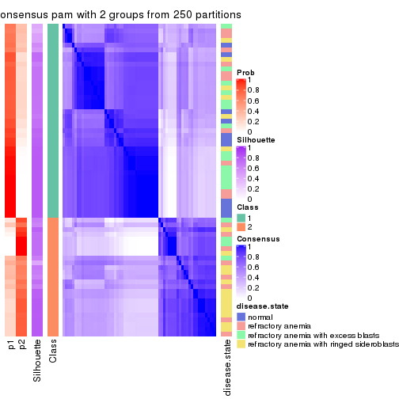
consensus_heatmap(res, k = 3)
consensus_heatmap(res, k = 4)
consensus_heatmap(res, k = 5)

consensus_heatmap(res, k = 6)
Heatmaps for the membership of samples in all partitions to see how consistent they are:
membership_heatmap(res, k = 2)
membership_heatmap(res, k = 3)
membership_heatmap(res, k = 4)
membership_heatmap(res, k = 5)
membership_heatmap(res, k = 6)
As soon as we have had the classes for columns, we can look for signatures which are significantly different between classes which can be candidate marks for certain classes. Following are the heatmaps for signatures.
Signature heatmaps where rows are scaled:
get_signatures(res, k = 2)
get_signatures(res, k = 3)
get_signatures(res, k = 4)
get_signatures(res, k = 5)
get_signatures(res, k = 6)
Signature heatmaps where rows are not scaled:
get_signatures(res, k = 2, scale_rows = FALSE)
get_signatures(res, k = 3, scale_rows = FALSE)
get_signatures(res, k = 4, scale_rows = FALSE)
get_signatures(res, k = 5, scale_rows = FALSE)
get_signatures(res, k = 6, scale_rows = FALSE)
Compare the overlap of signatures from different k:
compare_signatures(res)

get_signature() returns a data frame invisibly. TO get the list of signatures, the function
call should be assigned to a variable explicitly. In following code, if plot argument is set
to FALSE, no heatmap is plotted while only the differential analysis is performed.
# code only for demonstration
tb = get_signature(res, k = ..., plot = FALSE)
An example of the output of tb is:
#> which_row fdr mean_1 mean_2 scaled_mean_1 scaled_mean_2 km
#> 1 38 0.042760348 8.373488 9.131774 -0.5533452 0.5164555 1
#> 2 40 0.018707592 7.106213 8.469186 -0.6173731 0.5762149 1
#> 3 55 0.019134737 10.221463 11.207825 -0.6159697 0.5749050 1
#> 4 59 0.006059896 5.921854 7.869574 -0.6899429 0.6439467 1
#> 5 60 0.018055526 8.928898 10.211722 -0.6204761 0.5791110 1
#> 6 98 0.009384629 15.714769 14.887706 0.6635654 -0.6193277 2
...
The columns in tb are:
which_row: row indices corresponding to the input matrix.fdr: FDR for the differential test. mean_x: The mean value in group x.scaled_mean_x: The mean value in group x after rows are scaled.km: Row groups if k-means clustering is applied to rows.UMAP plot which shows how samples are separated.
dimension_reduction(res, k = 2, method = "UMAP")
dimension_reduction(res, k = 3, method = "UMAP")
dimension_reduction(res, k = 4, method = "UMAP")
dimension_reduction(res, k = 5, method = "UMAP")
dimension_reduction(res, k = 6, method = "UMAP")
Following heatmap shows how subgroups are split when increasing k:
collect_classes(res)
Test correlation between subgroups and known annotations. If the known annotation is numeric, one-way ANOVA test is applied, and if the known annotation is discrete, chi-squared contingency table test is applied.
test_to_known_factors(res)
#> n disease.state(p) k
#> CV:pam 61 0.000583 2
#> CV:pam 62 0.012940 3
#> CV:pam 51 0.001926 4
#> CV:pam 62 0.015409 5
#> CV:pam 63 0.005495 6
If matrix rows can be associated to genes, consider to use GO_Enrichment(res,
...) to perform function enrichment for the signature genes.
The object with results only for a single top-value method and a single partition method can be extracted as:
res = res_list["CV", "mclust"]
# you can also extract it by
# res = res_list["CV:mclust"]
A summary of res and all the functions that can be applied to it:
res
#> A 'ConsensusPartition' object with k = 2, 3, 4, 5, 6.
#> On a matrix with 51941 rows and 66 columns.
#> Top rows (1000, 2000, 3000, 4000, 5000) are extracted by 'CV' method.
#> Subgroups are detected by 'mclust' method.
#> Performed in total 1250 partitions by row resampling.
#> Best k for subgroups seems to be 3.
#>
#> Following methods can be applied to this 'ConsensusPartition' object:
#> [1] "cola_report" "collect_classes" "collect_plots"
#> [4] "collect_stats" "colnames" "compare_signatures"
#> [7] "consensus_heatmap" "dimension_reduction" "functional_enrichment"
#> [10] "get_anno_col" "get_anno" "get_classes"
#> [13] "get_consensus" "get_matrix" "get_membership"
#> [16] "get_param" "get_signatures" "get_stats"
#> [19] "is_best_k" "is_stable_k" "membership_heatmap"
#> [22] "ncol" "nrow" "plot_ecdf"
#> [25] "rownames" "select_partition_number" "show"
#> [28] "suggest_best_k" "test_to_known_factors"
collect_plots() function collects all the plots made from res for all k (number of partitions)
into one single page to provide an easy and fast comparison between different k.
collect_plots(res)
The plots are:
k and the heatmap of
predicted classes for each k.k.k.k.All the plots in panels can be made by individual functions and they are plotted later in this section.
select_partition_number() produces several plots showing different
statistics for choosing “optimized” k. There are following statistics:
k;k, the area increased is defined as \(A_k - A_{k-1}\).The detailed explanations of these statistics can be found in the cola vignette.
Generally speaking, lower PAC score, higher mean silhouette score or higher
concordance corresponds to better partition. Rand index and Jaccard index
measure how similar the current partition is compared to partition with k-1.
If they are too similar, we won't accept k is better than k-1.
select_partition_number(res)
The numeric values for all these statistics can be obtained by get_stats().
get_stats(res)
#> k 1-PAC mean_silhouette concordance area_increased Rand Jaccard
#> 2 2 0.806 0.939 0.973 0.2273 0.784 0.784
#> 3 3 0.449 0.647 0.839 1.5029 0.608 0.500
#> 4 4 0.594 0.597 0.811 0.2233 0.894 0.733
#> 5 5 0.589 0.637 0.818 0.0886 0.868 0.603
#> 6 6 0.631 0.490 0.727 0.0621 0.962 0.840
suggest_best_k() suggests the best \(k\) based on these statistics. The rules are as follows:
NA.suggest_best_k(res)
#> [1] 3
Following shows the table of the partitions (You need to click the show/hide
code output link to see it). The membership matrix (columns with name p*)
is inferred by
clue::cl_consensus()
function with the SE method. Basically the value in the membership matrix
represents the probability to belong to a certain group. The finall class
label for an item is determined with the group with highest probability it
belongs to.
In get_classes() function, the entropy is calculated from the membership
matrix and the silhouette score is calculated from the consensus matrix.
cbind(get_classes(res, k = 2), get_membership(res, k = 2))
#> class entropy silhouette p1 p2
#> GSM103343 1 0.000 0.976 1.000 0.000
#> GSM103344 1 0.000 0.976 1.000 0.000
#> GSM103345 1 0.000 0.976 1.000 0.000
#> GSM103364 1 0.000 0.976 1.000 0.000
#> GSM103365 1 0.000 0.976 1.000 0.000
#> GSM103366 1 0.000 0.976 1.000 0.000
#> GSM103369 1 0.000 0.976 1.000 0.000
#> GSM103370 1 0.000 0.976 1.000 0.000
#> GSM103388 1 0.000 0.976 1.000 0.000
#> GSM103389 1 0.000 0.976 1.000 0.000
#> GSM103390 1 0.000 0.976 1.000 0.000
#> GSM103347 2 0.987 0.201 0.432 0.568
#> GSM103349 1 0.184 0.954 0.972 0.028
#> GSM103354 2 0.000 0.913 0.000 1.000
#> GSM103355 1 0.000 0.976 1.000 0.000
#> GSM103357 1 0.000 0.976 1.000 0.000
#> GSM103358 1 0.000 0.976 1.000 0.000
#> GSM103361 1 0.000 0.976 1.000 0.000
#> GSM103363 1 0.000 0.976 1.000 0.000
#> GSM103367 1 0.000 0.976 1.000 0.000
#> GSM103381 1 0.000 0.976 1.000 0.000
#> GSM103382 1 0.563 0.857 0.868 0.132
#> GSM103384 1 0.000 0.976 1.000 0.000
#> GSM103391 1 0.552 0.863 0.872 0.128
#> GSM103394 1 0.563 0.857 0.868 0.132
#> GSM103399 1 0.000 0.976 1.000 0.000
#> GSM103401 2 0.000 0.913 0.000 1.000
#> GSM103404 1 0.697 0.783 0.812 0.188
#> GSM103408 1 0.416 0.906 0.916 0.084
#> GSM103348 2 0.584 0.797 0.140 0.860
#> GSM103351 1 0.000 0.976 1.000 0.000
#> GSM103356 1 0.000 0.976 1.000 0.000
#> GSM103368 1 0.000 0.976 1.000 0.000
#> GSM103372 1 0.000 0.976 1.000 0.000
#> GSM103375 1 0.000 0.976 1.000 0.000
#> GSM103376 1 0.000 0.976 1.000 0.000
#> GSM103379 1 0.000 0.976 1.000 0.000
#> GSM103385 1 0.000 0.976 1.000 0.000
#> GSM103387 1 0.000 0.976 1.000 0.000
#> GSM103392 1 0.000 0.976 1.000 0.000
#> GSM103393 1 0.000 0.976 1.000 0.000
#> GSM103395 2 0.000 0.913 0.000 1.000
#> GSM103396 1 0.000 0.976 1.000 0.000
#> GSM103398 1 0.482 0.887 0.896 0.104
#> GSM103402 1 0.563 0.857 0.868 0.132
#> GSM103403 1 0.563 0.857 0.868 0.132
#> GSM103405 1 0.242 0.945 0.960 0.040
#> GSM103407 1 0.552 0.861 0.872 0.128
#> GSM103346 2 0.000 0.913 0.000 1.000
#> GSM103350 1 0.000 0.976 1.000 0.000
#> GSM103352 2 0.000 0.913 0.000 1.000
#> GSM103353 2 0.000 0.913 0.000 1.000
#> GSM103359 1 0.000 0.976 1.000 0.000
#> GSM103360 1 0.000 0.976 1.000 0.000
#> GSM103362 1 0.000 0.976 1.000 0.000
#> GSM103371 1 0.000 0.976 1.000 0.000
#> GSM103373 1 0.000 0.976 1.000 0.000
#> GSM103374 1 0.000 0.976 1.000 0.000
#> GSM103377 1 0.000 0.976 1.000 0.000
#> GSM103378 1 0.000 0.976 1.000 0.000
#> GSM103380 1 0.000 0.976 1.000 0.000
#> GSM103383 1 0.000 0.976 1.000 0.000
#> GSM103386 1 0.000 0.976 1.000 0.000
#> GSM103397 1 0.000 0.976 1.000 0.000
#> GSM103400 1 0.000 0.976 1.000 0.000
#> GSM103406 1 0.000 0.976 1.000 0.000
cbind(get_classes(res, k = 3), get_membership(res, k = 3))
#> class entropy silhouette p1 p2 p3
#> GSM103343 2 0.0237 0.7236 0.004 0.996 0.000
#> GSM103344 2 0.0237 0.7236 0.004 0.996 0.000
#> GSM103345 2 0.0237 0.7236 0.004 0.996 0.000
#> GSM103364 1 0.5327 0.5581 0.728 0.272 0.000
#> GSM103365 1 0.0000 0.7722 1.000 0.000 0.000
#> GSM103366 2 0.1411 0.7127 0.036 0.964 0.000
#> GSM103369 2 0.0237 0.7236 0.004 0.996 0.000
#> GSM103370 1 0.0000 0.7722 1.000 0.000 0.000
#> GSM103388 1 0.5948 0.4006 0.640 0.360 0.000
#> GSM103389 1 0.0000 0.7722 1.000 0.000 0.000
#> GSM103390 2 0.4399 0.7669 0.188 0.812 0.000
#> GSM103347 3 0.0424 0.9138 0.000 0.008 0.992
#> GSM103349 2 0.4796 0.7647 0.220 0.780 0.000
#> GSM103354 3 0.0000 0.9204 0.000 0.000 1.000
#> GSM103355 2 0.0892 0.7214 0.020 0.980 0.000
#> GSM103357 2 0.0747 0.7225 0.016 0.984 0.000
#> GSM103358 2 0.6079 0.0367 0.388 0.612 0.000
#> GSM103361 1 0.5465 0.5477 0.712 0.288 0.000
#> GSM103363 2 0.0000 0.7222 0.000 1.000 0.000
#> GSM103367 2 0.6235 0.4647 0.436 0.564 0.000
#> GSM103381 1 0.0000 0.7722 1.000 0.000 0.000
#> GSM103382 1 0.6204 0.2171 0.576 0.424 0.000
#> GSM103384 1 0.0000 0.7722 1.000 0.000 0.000
#> GSM103391 2 0.4555 0.7699 0.200 0.800 0.000
#> GSM103394 2 0.6204 0.3517 0.424 0.576 0.000
#> GSM103399 1 0.6307 -0.0559 0.512 0.488 0.000
#> GSM103401 3 0.0000 0.9204 0.000 0.000 1.000
#> GSM103404 1 0.5859 0.4173 0.656 0.344 0.000
#> GSM103408 1 0.5968 0.3977 0.636 0.364 0.000
#> GSM103348 3 0.8631 -0.0419 0.108 0.372 0.520
#> GSM103351 2 0.6235 0.4647 0.436 0.564 0.000
#> GSM103356 2 0.0747 0.7225 0.016 0.984 0.000
#> GSM103368 2 0.4504 0.7719 0.196 0.804 0.000
#> GSM103372 2 0.4796 0.7647 0.220 0.780 0.000
#> GSM103375 2 0.4605 0.7695 0.204 0.796 0.000
#> GSM103376 2 0.4796 0.7647 0.220 0.780 0.000
#> GSM103379 1 0.0000 0.7722 1.000 0.000 0.000
#> GSM103385 2 0.6026 0.5772 0.376 0.624 0.000
#> GSM103387 2 0.4555 0.7699 0.200 0.800 0.000
#> GSM103392 1 0.0000 0.7722 1.000 0.000 0.000
#> GSM103393 2 0.4555 0.7699 0.200 0.800 0.000
#> GSM103395 3 0.0000 0.9204 0.000 0.000 1.000
#> GSM103396 1 0.0000 0.7722 1.000 0.000 0.000
#> GSM103398 1 0.5968 0.3977 0.636 0.364 0.000
#> GSM103402 2 0.4702 0.7633 0.212 0.788 0.000
#> GSM103403 2 0.4555 0.7699 0.200 0.800 0.000
#> GSM103405 1 0.5968 0.3977 0.636 0.364 0.000
#> GSM103407 2 0.4555 0.7699 0.200 0.800 0.000
#> GSM103346 3 0.0000 0.9204 0.000 0.000 1.000
#> GSM103350 2 0.6111 0.5405 0.396 0.604 0.000
#> GSM103352 3 0.0000 0.9204 0.000 0.000 1.000
#> GSM103353 3 0.0000 0.9204 0.000 0.000 1.000
#> GSM103359 1 0.0000 0.7722 1.000 0.000 0.000
#> GSM103360 1 0.4555 0.5816 0.800 0.200 0.000
#> GSM103362 2 0.6126 -0.0130 0.400 0.600 0.000
#> GSM103371 1 0.0592 0.7662 0.988 0.012 0.000
#> GSM103373 1 0.5948 0.4006 0.640 0.360 0.000
#> GSM103374 1 0.5560 0.3984 0.700 0.300 0.000
#> GSM103377 2 0.4887 0.7497 0.228 0.772 0.000
#> GSM103378 1 0.0000 0.7722 1.000 0.000 0.000
#> GSM103380 1 0.0000 0.7722 1.000 0.000 0.000
#> GSM103383 1 0.0000 0.7722 1.000 0.000 0.000
#> GSM103386 1 0.0000 0.7722 1.000 0.000 0.000
#> GSM103397 1 0.0000 0.7722 1.000 0.000 0.000
#> GSM103400 1 0.5968 0.3977 0.636 0.364 0.000
#> GSM103406 1 0.0000 0.7722 1.000 0.000 0.000
cbind(get_classes(res, k = 4), get_membership(res, k = 4))
#> class entropy silhouette p1 p2 p3 p4
#> GSM103343 2 0.4677 0.5408 0.040 0.768 0.000 0.192
#> GSM103344 2 0.4630 0.5376 0.036 0.768 0.000 0.196
#> GSM103345 2 0.4677 0.5408 0.040 0.768 0.000 0.192
#> GSM103364 1 0.4382 0.4703 0.704 0.296 0.000 0.000
#> GSM103365 1 0.0000 0.8518 1.000 0.000 0.000 0.000
#> GSM103366 2 0.5062 0.4860 0.024 0.692 0.000 0.284
#> GSM103369 2 0.4677 0.5408 0.040 0.768 0.000 0.192
#> GSM103370 1 0.0000 0.8518 1.000 0.000 0.000 0.000
#> GSM103388 1 0.0000 0.8518 1.000 0.000 0.000 0.000
#> GSM103389 1 0.0000 0.8518 1.000 0.000 0.000 0.000
#> GSM103390 2 0.6732 0.4512 0.168 0.612 0.000 0.220
#> GSM103347 3 0.1022 0.9650 0.000 0.000 0.968 0.032
#> GSM103349 4 0.0336 0.5537 0.000 0.008 0.000 0.992
#> GSM103354 3 0.0000 0.9943 0.000 0.000 1.000 0.000
#> GSM103355 2 0.4716 0.5379 0.040 0.764 0.000 0.196
#> GSM103357 2 0.4158 0.5006 0.008 0.768 0.000 0.224
#> GSM103358 2 0.4790 0.3065 0.380 0.620 0.000 0.000
#> GSM103361 1 0.4804 0.2700 0.616 0.384 0.000 0.000
#> GSM103363 2 0.3908 0.5068 0.004 0.784 0.000 0.212
#> GSM103367 4 0.4679 0.4239 0.352 0.000 0.000 0.648
#> GSM103381 1 0.0000 0.8518 1.000 0.000 0.000 0.000
#> GSM103382 1 0.7609 -0.0233 0.404 0.396 0.000 0.200
#> GSM103384 1 0.0000 0.8518 1.000 0.000 0.000 0.000
#> GSM103391 2 0.4941 -0.0533 0.000 0.564 0.000 0.436
#> GSM103394 2 0.7599 0.0166 0.376 0.424 0.000 0.200
#> GSM103399 1 0.7475 0.1655 0.476 0.332 0.000 0.192
#> GSM103401 3 0.0000 0.9943 0.000 0.000 1.000 0.000
#> GSM103404 1 0.1398 0.8229 0.956 0.040 0.000 0.004
#> GSM103408 1 0.7031 0.3957 0.576 0.224 0.000 0.200
#> GSM103348 4 0.2281 0.5173 0.000 0.000 0.096 0.904
#> GSM103351 4 0.4746 0.4065 0.368 0.000 0.000 0.632
#> GSM103356 4 0.4790 0.3448 0.000 0.380 0.000 0.620
#> GSM103368 4 0.4989 0.1662 0.000 0.472 0.000 0.528
#> GSM103372 4 0.3610 0.5467 0.000 0.200 0.000 0.800
#> GSM103375 4 0.3486 0.5530 0.000 0.188 0.000 0.812
#> GSM103376 4 0.4491 0.5733 0.060 0.140 0.000 0.800
#> GSM103379 1 0.0000 0.8518 1.000 0.000 0.000 0.000
#> GSM103385 4 0.3610 0.5555 0.200 0.000 0.000 0.800
#> GSM103387 4 0.4919 0.3202 0.048 0.200 0.000 0.752
#> GSM103392 1 0.0000 0.8518 1.000 0.000 0.000 0.000
#> GSM103393 4 0.4941 0.1387 0.000 0.436 0.000 0.564
#> GSM103395 3 0.0000 0.9943 0.000 0.000 1.000 0.000
#> GSM103396 1 0.0000 0.8518 1.000 0.000 0.000 0.000
#> GSM103398 1 0.4669 0.6407 0.764 0.036 0.000 0.200
#> GSM103402 2 0.7412 0.1898 0.296 0.504 0.000 0.200
#> GSM103403 4 0.4955 0.1596 0.000 0.444 0.000 0.556
#> GSM103405 1 0.7110 0.3769 0.564 0.236 0.000 0.200
#> GSM103407 2 0.4599 0.3029 0.028 0.760 0.000 0.212
#> GSM103346 3 0.0000 0.9943 0.000 0.000 1.000 0.000
#> GSM103350 4 0.3610 0.5555 0.200 0.000 0.000 0.800
#> GSM103352 3 0.0000 0.9943 0.000 0.000 1.000 0.000
#> GSM103353 3 0.0000 0.9943 0.000 0.000 1.000 0.000
#> GSM103359 1 0.0000 0.8518 1.000 0.000 0.000 0.000
#> GSM103360 1 0.3610 0.6323 0.800 0.200 0.000 0.000
#> GSM103362 2 0.4477 0.3778 0.312 0.688 0.000 0.000
#> GSM103371 1 0.0000 0.8518 1.000 0.000 0.000 0.000
#> GSM103373 1 0.3528 0.6417 0.808 0.192 0.000 0.000
#> GSM103374 1 0.0000 0.8518 1.000 0.000 0.000 0.000
#> GSM103377 2 0.7333 0.3072 0.332 0.496 0.000 0.172
#> GSM103378 1 0.0000 0.8518 1.000 0.000 0.000 0.000
#> GSM103380 1 0.0000 0.8518 1.000 0.000 0.000 0.000
#> GSM103383 1 0.0000 0.8518 1.000 0.000 0.000 0.000
#> GSM103386 1 0.0000 0.8518 1.000 0.000 0.000 0.000
#> GSM103397 1 0.0000 0.8518 1.000 0.000 0.000 0.000
#> GSM103400 1 0.1557 0.8145 0.944 0.000 0.000 0.056
#> GSM103406 1 0.0000 0.8518 1.000 0.000 0.000 0.000
cbind(get_classes(res, k = 5), get_membership(res, k = 5))
#> class entropy silhouette p1 p2 p3 p4 p5
#> GSM103343 2 0.0162 0.6952 0.004 0.996 0.000 0.000 0.000
#> GSM103344 2 0.0162 0.6941 0.000 0.996 0.000 0.004 0.000
#> GSM103345 2 0.0162 0.6952 0.004 0.996 0.000 0.000 0.000
#> GSM103364 1 0.5264 0.4649 0.604 0.340 0.000 0.052 0.004
#> GSM103365 1 0.0290 0.8008 0.992 0.000 0.000 0.000 0.008
#> GSM103366 2 0.2621 0.6422 0.004 0.876 0.000 0.008 0.112
#> GSM103369 2 0.0162 0.6952 0.004 0.996 0.000 0.000 0.000
#> GSM103370 1 0.0162 0.8012 0.996 0.000 0.000 0.004 0.000
#> GSM103388 1 0.3201 0.7524 0.872 0.060 0.000 0.044 0.024
#> GSM103389 1 0.0162 0.8012 0.996 0.000 0.000 0.004 0.000
#> GSM103390 2 0.4944 0.5203 0.204 0.720 0.000 0.016 0.060
#> GSM103347 3 0.0324 0.9922 0.004 0.000 0.992 0.000 0.004
#> GSM103349 4 0.2463 0.6709 0.004 0.008 0.000 0.888 0.100
#> GSM103354 3 0.0000 0.9981 0.000 0.000 1.000 0.000 0.000
#> GSM103355 2 0.0955 0.6854 0.004 0.968 0.000 0.028 0.000
#> GSM103357 2 0.0162 0.6941 0.000 0.996 0.000 0.004 0.000
#> GSM103358 2 0.4930 0.0902 0.388 0.580 0.000 0.032 0.000
#> GSM103361 1 0.5499 0.3025 0.532 0.408 0.000 0.056 0.004
#> GSM103363 2 0.0510 0.6930 0.000 0.984 0.000 0.016 0.000
#> GSM103367 4 0.4101 0.5268 0.332 0.004 0.000 0.664 0.000
#> GSM103381 1 0.1043 0.7957 0.960 0.000 0.000 0.040 0.000
#> GSM103382 5 0.4288 0.5413 0.384 0.004 0.000 0.000 0.612
#> GSM103384 1 0.0794 0.7971 0.972 0.000 0.000 0.028 0.000
#> GSM103391 5 0.5699 0.4068 0.004 0.124 0.000 0.244 0.628
#> GSM103394 5 0.3430 0.6465 0.220 0.004 0.000 0.000 0.776
#> GSM103399 5 0.4884 0.5265 0.392 0.016 0.000 0.008 0.584
#> GSM103401 3 0.0162 0.9958 0.000 0.000 0.996 0.000 0.004
#> GSM103404 5 0.4872 0.4074 0.160 0.000 0.000 0.120 0.720
#> GSM103408 5 0.2074 0.6141 0.104 0.000 0.000 0.000 0.896
#> GSM103348 4 0.2616 0.6621 0.000 0.000 0.020 0.880 0.100
#> GSM103351 4 0.2605 0.7574 0.148 0.000 0.000 0.852 0.000
#> GSM103356 2 0.3857 0.3865 0.000 0.688 0.000 0.312 0.000
#> GSM103368 2 0.3983 0.3389 0.000 0.660 0.000 0.340 0.000
#> GSM103372 4 0.3913 0.5049 0.000 0.324 0.000 0.676 0.000
#> GSM103375 4 0.4225 0.4155 0.004 0.364 0.000 0.632 0.000
#> GSM103376 4 0.2818 0.7570 0.132 0.012 0.000 0.856 0.000
#> GSM103379 1 0.4264 0.6603 0.744 0.000 0.000 0.044 0.212
#> GSM103385 4 0.2605 0.7575 0.148 0.000 0.000 0.852 0.000
#> GSM103387 2 0.8141 0.1748 0.164 0.424 0.000 0.220 0.192
#> GSM103392 1 0.1043 0.7957 0.960 0.000 0.000 0.040 0.000
#> GSM103393 2 0.5027 0.3935 0.000 0.640 0.000 0.304 0.056
#> GSM103395 3 0.0000 0.9981 0.000 0.000 1.000 0.000 0.000
#> GSM103396 1 0.1124 0.7941 0.960 0.000 0.000 0.036 0.004
#> GSM103398 1 0.4151 0.2463 0.652 0.004 0.000 0.000 0.344
#> GSM103402 5 0.5681 0.5894 0.268 0.124 0.000 0.000 0.608
#> GSM103403 5 0.5579 0.1894 0.000 0.080 0.000 0.368 0.552
#> GSM103405 5 0.0290 0.5736 0.008 0.000 0.000 0.000 0.992
#> GSM103407 2 0.6474 0.0194 0.200 0.472 0.000 0.000 0.328
#> GSM103346 3 0.0000 0.9981 0.000 0.000 1.000 0.000 0.000
#> GSM103350 4 0.2280 0.7576 0.120 0.000 0.000 0.880 0.000
#> GSM103352 3 0.0000 0.9981 0.000 0.000 1.000 0.000 0.000
#> GSM103353 3 0.0000 0.9981 0.000 0.000 1.000 0.000 0.000
#> GSM103359 1 0.3322 0.7506 0.848 0.004 0.000 0.044 0.104
#> GSM103360 1 0.4638 0.6416 0.728 0.216 0.000 0.048 0.008
#> GSM103362 2 0.5043 0.1936 0.356 0.600 0.000 0.044 0.000
#> GSM103371 1 0.2251 0.7855 0.916 0.024 0.000 0.052 0.008
#> GSM103373 1 0.3953 0.6882 0.804 0.144 0.000 0.040 0.012
#> GSM103374 1 0.2103 0.7869 0.920 0.020 0.000 0.056 0.004
#> GSM103377 2 0.4564 0.4695 0.272 0.696 0.000 0.008 0.024
#> GSM103378 1 0.4384 0.6453 0.728 0.000 0.000 0.044 0.228
#> GSM103380 1 0.4355 0.6492 0.732 0.000 0.000 0.044 0.224
#> GSM103383 1 0.0963 0.7966 0.964 0.000 0.000 0.036 0.000
#> GSM103386 1 0.4384 0.6453 0.728 0.000 0.000 0.044 0.228
#> GSM103397 1 0.1043 0.7957 0.960 0.000 0.000 0.040 0.000
#> GSM103400 1 0.3554 0.6722 0.828 0.020 0.000 0.016 0.136
#> GSM103406 1 0.1059 0.8026 0.968 0.004 0.000 0.008 0.020
cbind(get_classes(res, k = 6), get_membership(res, k = 6))
#> class entropy silhouette p1 p2 p3 p4 p5 p6
#> GSM103343 2 0.0146 0.6813 0.000 0.996 0.000 0.000 0.000 0.004
#> GSM103344 2 0.0000 0.6819 0.000 1.000 0.000 0.000 0.000 0.000
#> GSM103345 2 0.0146 0.6815 0.000 0.996 0.000 0.000 0.000 0.004
#> GSM103364 1 0.7254 0.1232 0.460 0.168 0.000 0.164 0.004 0.204
#> GSM103365 1 0.2257 0.5638 0.876 0.000 0.000 0.000 0.008 0.116
#> GSM103366 2 0.3769 0.5062 0.000 0.640 0.000 0.004 0.000 0.356
#> GSM103369 2 0.0000 0.6819 0.000 1.000 0.000 0.000 0.000 0.000
#> GSM103370 1 0.1753 0.5989 0.912 0.000 0.000 0.084 0.000 0.004
#> GSM103388 1 0.3848 0.3746 0.736 0.000 0.000 0.040 0.000 0.224
#> GSM103389 1 0.1714 0.5972 0.908 0.000 0.000 0.092 0.000 0.000
#> GSM103390 2 0.4910 0.4660 0.192 0.656 0.000 0.000 0.000 0.152
#> GSM103347 3 0.0547 0.9571 0.000 0.000 0.980 0.000 0.000 0.020
#> GSM103349 4 0.3224 0.6894 0.036 0.000 0.000 0.828 0.008 0.128
#> GSM103354 3 0.1387 0.9601 0.000 0.000 0.932 0.000 0.000 0.068
#> GSM103355 2 0.1524 0.6481 0.000 0.932 0.000 0.060 0.000 0.008
#> GSM103357 2 0.0291 0.6811 0.000 0.992 0.000 0.004 0.004 0.000
#> GSM103358 2 0.7010 -0.3494 0.268 0.376 0.000 0.064 0.000 0.292
#> GSM103361 6 0.7534 0.1554 0.288 0.256 0.000 0.120 0.004 0.332
#> GSM103363 2 0.1285 0.6742 0.000 0.944 0.000 0.000 0.004 0.052
#> GSM103367 4 0.3109 0.5359 0.224 0.004 0.000 0.772 0.000 0.000
#> GSM103381 1 0.0717 0.5994 0.976 0.000 0.000 0.000 0.016 0.008
#> GSM103382 6 0.5625 0.1526 0.280 0.000 0.000 0.004 0.168 0.548
#> GSM103384 1 0.0520 0.6030 0.984 0.000 0.000 0.008 0.000 0.008
#> GSM103391 5 0.7054 0.4133 0.000 0.076 0.000 0.220 0.360 0.344
#> GSM103394 5 0.5631 0.3434 0.188 0.000 0.000 0.000 0.528 0.284
#> GSM103399 6 0.4553 0.1991 0.268 0.004 0.000 0.008 0.044 0.676
#> GSM103401 3 0.0000 0.9674 0.000 0.000 1.000 0.000 0.000 0.000
#> GSM103404 5 0.5595 0.4005 0.076 0.000 0.000 0.028 0.524 0.372
#> GSM103408 5 0.4801 0.4617 0.036 0.000 0.000 0.008 0.520 0.436
#> GSM103348 4 0.4301 0.6354 0.020 0.000 0.020 0.720 0.008 0.232
#> GSM103351 4 0.1556 0.7486 0.080 0.000 0.000 0.920 0.000 0.000
#> GSM103356 2 0.3052 0.5454 0.000 0.780 0.000 0.216 0.004 0.000
#> GSM103368 2 0.3756 0.4095 0.000 0.676 0.000 0.316 0.004 0.004
#> GSM103372 4 0.3844 0.4906 0.000 0.312 0.000 0.676 0.008 0.004
#> GSM103375 4 0.5334 0.4477 0.004 0.260 0.000 0.608 0.004 0.124
#> GSM103376 4 0.1719 0.7501 0.032 0.000 0.000 0.932 0.004 0.032
#> GSM103379 1 0.3817 0.3455 0.568 0.000 0.000 0.000 0.432 0.000
#> GSM103385 4 0.2122 0.7511 0.076 0.000 0.000 0.900 0.000 0.024
#> GSM103387 2 0.7899 0.1929 0.140 0.372 0.000 0.260 0.028 0.200
#> GSM103392 1 0.0146 0.6026 0.996 0.000 0.000 0.000 0.004 0.000
#> GSM103393 2 0.5237 0.4115 0.000 0.604 0.000 0.268 0.004 0.124
#> GSM103395 3 0.1387 0.9601 0.000 0.000 0.932 0.000 0.000 0.068
#> GSM103396 1 0.2826 0.5702 0.856 0.000 0.000 0.092 0.000 0.052
#> GSM103398 6 0.5687 0.2861 0.356 0.000 0.000 0.008 0.132 0.504
#> GSM103402 5 0.6990 0.1571 0.204 0.028 0.000 0.028 0.424 0.316
#> GSM103403 5 0.6568 0.2183 0.000 0.044 0.000 0.372 0.408 0.176
#> GSM103405 5 0.4135 0.4990 0.004 0.000 0.000 0.008 0.584 0.404
#> GSM103407 2 0.7411 0.1132 0.172 0.468 0.000 0.024 0.224 0.112
#> GSM103346 3 0.0000 0.9674 0.000 0.000 1.000 0.000 0.000 0.000
#> GSM103350 4 0.1616 0.7492 0.048 0.000 0.000 0.932 0.000 0.020
#> GSM103352 3 0.0000 0.9674 0.000 0.000 1.000 0.000 0.000 0.000
#> GSM103353 3 0.1387 0.9601 0.000 0.000 0.932 0.000 0.000 0.068
#> GSM103359 1 0.5579 0.4258 0.628 0.004 0.000 0.096 0.036 0.236
#> GSM103360 1 0.6968 0.1997 0.492 0.112 0.000 0.160 0.004 0.232
#> GSM103362 6 0.7519 0.2083 0.208 0.328 0.000 0.132 0.004 0.328
#> GSM103371 1 0.5513 0.3903 0.668 0.048 0.000 0.136 0.004 0.144
#> GSM103373 1 0.6023 -0.0150 0.508 0.032 0.000 0.104 0.004 0.352
#> GSM103374 1 0.4582 0.4778 0.728 0.016 0.000 0.176 0.004 0.076
#> GSM103377 2 0.6256 0.0940 0.240 0.436 0.000 0.012 0.000 0.312
#> GSM103378 1 0.3955 0.3436 0.560 0.000 0.000 0.004 0.436 0.000
#> GSM103380 1 0.3823 0.3431 0.564 0.000 0.000 0.000 0.436 0.000
#> GSM103383 1 0.0260 0.6021 0.992 0.000 0.000 0.000 0.008 0.000
#> GSM103386 1 0.3843 0.3314 0.548 0.000 0.000 0.000 0.452 0.000
#> GSM103397 1 0.2048 0.5464 0.880 0.000 0.000 0.000 0.120 0.000
#> GSM103400 1 0.4312 -0.0138 0.584 0.000 0.000 0.008 0.012 0.396
#> GSM103406 1 0.2808 0.5970 0.868 0.008 0.000 0.092 0.028 0.004
Heatmaps for the consensus matrix. It visualizes the probability of two samples to be in a same group.
consensus_heatmap(res, k = 2)
consensus_heatmap(res, k = 3)
consensus_heatmap(res, k = 4)
consensus_heatmap(res, k = 5)
consensus_heatmap(res, k = 6)
Heatmaps for the membership of samples in all partitions to see how consistent they are:
membership_heatmap(res, k = 2)
membership_heatmap(res, k = 3)
membership_heatmap(res, k = 4)
membership_heatmap(res, k = 5)
membership_heatmap(res, k = 6)
As soon as we have had the classes for columns, we can look for signatures which are significantly different between classes which can be candidate marks for certain classes. Following are the heatmaps for signatures.
Signature heatmaps where rows are scaled:
get_signatures(res, k = 2)
get_signatures(res, k = 3)
get_signatures(res, k = 4)
get_signatures(res, k = 5)
get_signatures(res, k = 6)
Signature heatmaps where rows are not scaled:
get_signatures(res, k = 2, scale_rows = FALSE)
get_signatures(res, k = 3, scale_rows = FALSE)
get_signatures(res, k = 4, scale_rows = FALSE)
get_signatures(res, k = 5, scale_rows = FALSE)
get_signatures(res, k = 6, scale_rows = FALSE)
Compare the overlap of signatures from different k:
compare_signatures(res)
get_signature() returns a data frame invisibly. TO get the list of signatures, the function
call should be assigned to a variable explicitly. In following code, if plot argument is set
to FALSE, no heatmap is plotted while only the differential analysis is performed.
# code only for demonstration
tb = get_signature(res, k = ..., plot = FALSE)
An example of the output of tb is:
#> which_row fdr mean_1 mean_2 scaled_mean_1 scaled_mean_2 km
#> 1 38 0.042760348 8.373488 9.131774 -0.5533452 0.5164555 1
#> 2 40 0.018707592 7.106213 8.469186 -0.6173731 0.5762149 1
#> 3 55 0.019134737 10.221463 11.207825 -0.6159697 0.5749050 1
#> 4 59 0.006059896 5.921854 7.869574 -0.6899429 0.6439467 1
#> 5 60 0.018055526 8.928898 10.211722 -0.6204761 0.5791110 1
#> 6 98 0.009384629 15.714769 14.887706 0.6635654 -0.6193277 2
...
The columns in tb are:
which_row: row indices corresponding to the input matrix.fdr: FDR for the differential test. mean_x: The mean value in group x.scaled_mean_x: The mean value in group x after rows are scaled.km: Row groups if k-means clustering is applied to rows.UMAP plot which shows how samples are separated.
dimension_reduction(res, k = 2, method = "UMAP")
dimension_reduction(res, k = 3, method = "UMAP")
dimension_reduction(res, k = 4, method = "UMAP")
dimension_reduction(res, k = 5, method = "UMAP")
dimension_reduction(res, k = 6, method = "UMAP")
Following heatmap shows how subgroups are split when increasing k:
collect_classes(res)
Test correlation between subgroups and known annotations. If the known annotation is numeric, one-way ANOVA test is applied, and if the known annotation is discrete, chi-squared contingency table test is applied.
test_to_known_factors(res)
#> n disease.state(p) k
#> CV:mclust 65 5.73e-01 2
#> CV:mclust 50 3.30e-02 3
#> CV:mclust 44 1.62e-03 4
#> CV:mclust 51 6.11e-05 5
#> CV:mclust 33 6.64e-02 6
If matrix rows can be associated to genes, consider to use GO_Enrichment(res,
...) to perform function enrichment for the signature genes.
The object with results only for a single top-value method and a single partition method can be extracted as:
res = res_list["CV", "NMF"]
# you can also extract it by
# res = res_list["CV:NMF"]
A summary of res and all the functions that can be applied to it:
res
#> A 'ConsensusPartition' object with k = 2, 3, 4, 5, 6.
#> On a matrix with 51941 rows and 66 columns.
#> Top rows (1000, 2000, 3000, 4000, 5000) are extracted by 'CV' method.
#> Subgroups are detected by 'NMF' method.
#> Performed in total 1250 partitions by row resampling.
#> Best k for subgroups seems to be 3.
#>
#> Following methods can be applied to this 'ConsensusPartition' object:
#> [1] "cola_report" "collect_classes" "collect_plots"
#> [4] "collect_stats" "colnames" "compare_signatures"
#> [7] "consensus_heatmap" "dimension_reduction" "functional_enrichment"
#> [10] "get_anno_col" "get_anno" "get_classes"
#> [13] "get_consensus" "get_matrix" "get_membership"
#> [16] "get_param" "get_signatures" "get_stats"
#> [19] "is_best_k" "is_stable_k" "membership_heatmap"
#> [22] "ncol" "nrow" "plot_ecdf"
#> [25] "rownames" "select_partition_number" "show"
#> [28] "suggest_best_k" "test_to_known_factors"
collect_plots() function collects all the plots made from res for all k (number of partitions)
into one single page to provide an easy and fast comparison between different k.
collect_plots(res)
The plots are:
k and the heatmap of
predicted classes for each k.k.k.k.All the plots in panels can be made by individual functions and they are plotted later in this section.
select_partition_number() produces several plots showing different
statistics for choosing “optimized” k. There are following statistics:
k;k, the area increased is defined as \(A_k - A_{k-1}\).The detailed explanations of these statistics can be found in the cola vignette.
Generally speaking, lower PAC score, higher mean silhouette score or higher
concordance corresponds to better partition. Rand index and Jaccard index
measure how similar the current partition is compared to partition with k-1.
If they are too similar, we won't accept k is better than k-1.
select_partition_number(res)
The numeric values for all these statistics can be obtained by get_stats().
get_stats(res)
#> k 1-PAC mean_silhouette concordance area_increased Rand Jaccard
#> 2 2 0.713 0.894 0.953 0.4218 0.571 0.571
#> 3 3 0.607 0.758 0.896 0.5494 0.676 0.475
#> 4 4 0.685 0.719 0.857 0.1236 0.798 0.508
#> 5 5 0.669 0.700 0.839 0.0847 0.849 0.524
#> 6 6 0.689 0.623 0.794 0.0483 0.903 0.580
suggest_best_k() suggests the best \(k\) based on these statistics. The rules are as follows:
NA.suggest_best_k(res)
#> [1] 3
Following shows the table of the partitions (You need to click the show/hide
code output link to see it). The membership matrix (columns with name p*)
is inferred by
clue::cl_consensus()
function with the SE method. Basically the value in the membership matrix
represents the probability to belong to a certain group. The finall class
label for an item is determined with the group with highest probability it
belongs to.
In get_classes() function, the entropy is calculated from the membership
matrix and the silhouette score is calculated from the consensus matrix.
cbind(get_classes(res, k = 2), get_membership(res, k = 2))
#> class entropy silhouette p1 p2
#> GSM103343 1 0.0000 0.967 1.000 0.000
#> GSM103344 1 0.0000 0.967 1.000 0.000
#> GSM103345 1 0.0000 0.967 1.000 0.000
#> GSM103364 1 0.0000 0.967 1.000 0.000
#> GSM103365 1 0.0000 0.967 1.000 0.000
#> GSM103366 1 0.0000 0.967 1.000 0.000
#> GSM103369 1 0.0000 0.967 1.000 0.000
#> GSM103370 1 0.0000 0.967 1.000 0.000
#> GSM103388 1 0.0000 0.967 1.000 0.000
#> GSM103389 1 0.0000 0.967 1.000 0.000
#> GSM103390 1 0.0000 0.967 1.000 0.000
#> GSM103347 2 0.0000 0.902 0.000 1.000
#> GSM103349 2 0.0000 0.902 0.000 1.000
#> GSM103354 2 0.0000 0.902 0.000 1.000
#> GSM103355 1 0.0000 0.967 1.000 0.000
#> GSM103357 1 0.6531 0.800 0.832 0.168
#> GSM103358 1 0.0000 0.967 1.000 0.000
#> GSM103361 1 0.0000 0.967 1.000 0.000
#> GSM103363 1 0.8763 0.580 0.704 0.296
#> GSM103367 1 0.0000 0.967 1.000 0.000
#> GSM103381 1 0.0000 0.967 1.000 0.000
#> GSM103382 1 0.0000 0.967 1.000 0.000
#> GSM103384 1 0.0000 0.967 1.000 0.000
#> GSM103391 2 0.0000 0.902 0.000 1.000
#> GSM103394 2 0.9944 0.168 0.456 0.544
#> GSM103399 1 0.5408 0.853 0.876 0.124
#> GSM103401 2 0.0000 0.902 0.000 1.000
#> GSM103404 1 0.7376 0.746 0.792 0.208
#> GSM103408 1 0.0000 0.967 1.000 0.000
#> GSM103348 2 0.0000 0.902 0.000 1.000
#> GSM103351 1 0.4939 0.872 0.892 0.108
#> GSM103356 2 0.9922 0.293 0.448 0.552
#> GSM103368 2 0.5178 0.841 0.116 0.884
#> GSM103372 1 0.6887 0.747 0.816 0.184
#> GSM103375 2 0.6438 0.795 0.164 0.836
#> GSM103376 2 0.3879 0.868 0.076 0.924
#> GSM103379 1 0.0000 0.967 1.000 0.000
#> GSM103385 2 0.4690 0.854 0.100 0.900
#> GSM103387 1 0.1184 0.954 0.984 0.016
#> GSM103392 1 0.0000 0.967 1.000 0.000
#> GSM103393 2 0.2236 0.888 0.036 0.964
#> GSM103395 2 0.0000 0.902 0.000 1.000
#> GSM103396 1 0.0000 0.967 1.000 0.000
#> GSM103398 1 0.0000 0.967 1.000 0.000
#> GSM103402 2 0.9460 0.434 0.364 0.636
#> GSM103403 2 0.0000 0.902 0.000 1.000
#> GSM103405 1 0.5946 0.830 0.856 0.144
#> GSM103407 1 0.4690 0.880 0.900 0.100
#> GSM103346 2 0.0000 0.902 0.000 1.000
#> GSM103350 2 0.0000 0.902 0.000 1.000
#> GSM103352 2 0.0000 0.902 0.000 1.000
#> GSM103353 2 0.0000 0.902 0.000 1.000
#> GSM103359 1 0.0000 0.967 1.000 0.000
#> GSM103360 1 0.0000 0.967 1.000 0.000
#> GSM103362 1 0.0000 0.967 1.000 0.000
#> GSM103371 1 0.0000 0.967 1.000 0.000
#> GSM103373 1 0.0000 0.967 1.000 0.000
#> GSM103374 1 0.0000 0.967 1.000 0.000
#> GSM103377 1 0.0938 0.958 0.988 0.012
#> GSM103378 1 0.0000 0.967 1.000 0.000
#> GSM103380 1 0.0000 0.967 1.000 0.000
#> GSM103383 1 0.0000 0.967 1.000 0.000
#> GSM103386 1 0.0000 0.967 1.000 0.000
#> GSM103397 1 0.0000 0.967 1.000 0.000
#> GSM103400 1 0.0000 0.967 1.000 0.000
#> GSM103406 1 0.0000 0.967 1.000 0.000
cbind(get_classes(res, k = 3), get_membership(res, k = 3))
#> class entropy silhouette p1 p2 p3
#> GSM103343 2 0.0424 0.8351 0.008 0.992 0.000
#> GSM103344 2 0.0000 0.8370 0.000 1.000 0.000
#> GSM103345 2 0.0000 0.8370 0.000 1.000 0.000
#> GSM103364 2 0.5859 0.4715 0.344 0.656 0.000
#> GSM103365 1 0.2796 0.8372 0.908 0.092 0.000
#> GSM103366 2 0.0000 0.8370 0.000 1.000 0.000
#> GSM103369 2 0.0000 0.8370 0.000 1.000 0.000
#> GSM103370 1 0.0000 0.9044 1.000 0.000 0.000
#> GSM103388 1 0.3686 0.7824 0.860 0.140 0.000
#> GSM103389 1 0.0000 0.9044 1.000 0.000 0.000
#> GSM103390 2 0.0000 0.8370 0.000 1.000 0.000
#> GSM103347 3 0.0237 0.8667 0.004 0.000 0.996
#> GSM103349 3 0.1031 0.8570 0.000 0.024 0.976
#> GSM103354 3 0.0000 0.8682 0.000 0.000 1.000
#> GSM103355 2 0.3686 0.7641 0.140 0.860 0.000
#> GSM103357 2 0.0000 0.8370 0.000 1.000 0.000
#> GSM103358 2 0.4062 0.7467 0.164 0.836 0.000
#> GSM103361 1 0.6286 0.0646 0.536 0.464 0.000
#> GSM103363 2 0.0000 0.8370 0.000 1.000 0.000
#> GSM103367 2 0.5016 0.6598 0.240 0.760 0.000
#> GSM103381 1 0.0000 0.9044 1.000 0.000 0.000
#> GSM103382 2 0.6095 0.3393 0.392 0.608 0.000
#> GSM103384 1 0.0000 0.9044 1.000 0.000 0.000
#> GSM103391 3 0.4654 0.7365 0.000 0.208 0.792
#> GSM103394 3 0.9509 0.3100 0.336 0.200 0.464
#> GSM103399 1 0.5178 0.6165 0.744 0.256 0.000
#> GSM103401 3 0.0000 0.8682 0.000 0.000 1.000
#> GSM103404 1 0.5254 0.6276 0.736 0.000 0.264
#> GSM103408 1 0.0000 0.9044 1.000 0.000 0.000
#> GSM103348 3 0.3619 0.7987 0.000 0.136 0.864
#> GSM103351 2 0.9515 0.0264 0.388 0.424 0.188
#> GSM103356 2 0.0000 0.8370 0.000 1.000 0.000
#> GSM103368 2 0.0000 0.8370 0.000 1.000 0.000
#> GSM103372 2 0.0747 0.8323 0.016 0.984 0.000
#> GSM103375 2 0.0000 0.8370 0.000 1.000 0.000
#> GSM103376 3 0.6225 0.3298 0.000 0.432 0.568
#> GSM103379 1 0.0000 0.9044 1.000 0.000 0.000
#> GSM103385 3 0.5053 0.7436 0.164 0.024 0.812
#> GSM103387 2 0.5449 0.7128 0.116 0.816 0.068
#> GSM103392 1 0.0000 0.9044 1.000 0.000 0.000
#> GSM103393 2 0.0000 0.8370 0.000 1.000 0.000
#> GSM103395 3 0.0000 0.8682 0.000 0.000 1.000
#> GSM103396 1 0.0000 0.9044 1.000 0.000 0.000
#> GSM103398 1 0.1529 0.8790 0.960 0.040 0.000
#> GSM103402 2 0.7256 -0.0366 0.028 0.532 0.440
#> GSM103403 3 0.4796 0.7239 0.000 0.220 0.780
#> GSM103405 1 0.4555 0.6990 0.800 0.200 0.000
#> GSM103407 2 0.0000 0.8370 0.000 1.000 0.000
#> GSM103346 3 0.0000 0.8682 0.000 0.000 1.000
#> GSM103350 3 0.0000 0.8682 0.000 0.000 1.000
#> GSM103352 3 0.0000 0.8682 0.000 0.000 1.000
#> GSM103353 3 0.0000 0.8682 0.000 0.000 1.000
#> GSM103359 1 0.2165 0.8612 0.936 0.000 0.064
#> GSM103360 1 0.4796 0.6709 0.780 0.220 0.000
#> GSM103362 2 0.4062 0.7467 0.164 0.836 0.000
#> GSM103371 1 0.0237 0.9023 0.996 0.004 0.000
#> GSM103373 2 0.5465 0.5646 0.288 0.712 0.000
#> GSM103374 1 0.5291 0.5805 0.732 0.268 0.000
#> GSM103377 2 0.3340 0.7648 0.120 0.880 0.000
#> GSM103378 1 0.0000 0.9044 1.000 0.000 0.000
#> GSM103380 1 0.0000 0.9044 1.000 0.000 0.000
#> GSM103383 1 0.0000 0.9044 1.000 0.000 0.000
#> GSM103386 1 0.0000 0.9044 1.000 0.000 0.000
#> GSM103397 1 0.0000 0.9044 1.000 0.000 0.000
#> GSM103400 1 0.0000 0.9044 1.000 0.000 0.000
#> GSM103406 1 0.0000 0.9044 1.000 0.000 0.000
cbind(get_classes(res, k = 4), get_membership(res, k = 4))
#> class entropy silhouette p1 p2 p3 p4
#> GSM103343 2 0.0188 0.8932 0.000 0.996 0.000 0.004
#> GSM103344 2 0.0592 0.8962 0.000 0.984 0.000 0.016
#> GSM103345 2 0.0000 0.8939 0.000 1.000 0.000 0.000
#> GSM103364 2 0.1624 0.8818 0.028 0.952 0.000 0.020
#> GSM103365 1 0.5406 0.1211 0.508 0.480 0.000 0.012
#> GSM103366 2 0.3528 0.7182 0.000 0.808 0.000 0.192
#> GSM103369 2 0.1211 0.8896 0.000 0.960 0.000 0.040
#> GSM103370 1 0.2871 0.8225 0.896 0.072 0.000 0.032
#> GSM103388 1 0.3900 0.8019 0.844 0.072 0.000 0.084
#> GSM103389 1 0.2926 0.8213 0.896 0.056 0.000 0.048
#> GSM103390 4 0.4992 0.1121 0.000 0.476 0.000 0.524
#> GSM103347 3 0.0000 0.9111 0.000 0.000 1.000 0.000
#> GSM103349 3 0.4057 0.7262 0.000 0.160 0.812 0.028
#> GSM103354 3 0.0000 0.9111 0.000 0.000 1.000 0.000
#> GSM103355 2 0.0804 0.8979 0.012 0.980 0.000 0.008
#> GSM103357 2 0.1557 0.8818 0.000 0.944 0.000 0.056
#> GSM103358 2 0.1356 0.8955 0.032 0.960 0.000 0.008
#> GSM103361 2 0.1792 0.8806 0.068 0.932 0.000 0.000
#> GSM103363 2 0.2149 0.8617 0.000 0.912 0.000 0.088
#> GSM103367 4 0.6973 0.3773 0.300 0.144 0.000 0.556
#> GSM103381 1 0.2466 0.8244 0.916 0.056 0.000 0.028
#> GSM103382 1 0.5943 0.5352 0.592 0.048 0.000 0.360
#> GSM103384 1 0.3168 0.8180 0.884 0.060 0.000 0.056
#> GSM103391 4 0.4188 0.5851 0.000 0.004 0.244 0.752
#> GSM103394 1 0.6074 0.4767 0.600 0.000 0.060 0.340
#> GSM103399 1 0.5137 0.5883 0.680 0.024 0.000 0.296
#> GSM103401 3 0.0000 0.9111 0.000 0.000 1.000 0.000
#> GSM103404 1 0.3801 0.6965 0.780 0.000 0.220 0.000
#> GSM103408 1 0.1824 0.8248 0.936 0.060 0.000 0.004
#> GSM103348 4 0.4564 0.4621 0.000 0.000 0.328 0.672
#> GSM103351 2 0.7713 0.5052 0.092 0.600 0.224 0.084
#> GSM103356 2 0.3486 0.7414 0.000 0.812 0.000 0.188
#> GSM103368 4 0.4730 0.4673 0.000 0.364 0.000 0.636
#> GSM103372 4 0.4999 0.0179 0.000 0.492 0.000 0.508
#> GSM103375 4 0.0592 0.7655 0.000 0.016 0.000 0.984
#> GSM103376 4 0.0336 0.7628 0.000 0.008 0.000 0.992
#> GSM103379 1 0.0188 0.8276 0.996 0.000 0.000 0.004
#> GSM103385 4 0.2197 0.7185 0.080 0.000 0.004 0.916
#> GSM103387 4 0.0336 0.7596 0.000 0.008 0.000 0.992
#> GSM103392 1 0.1389 0.8245 0.952 0.000 0.000 0.048
#> GSM103393 4 0.1792 0.7661 0.000 0.068 0.000 0.932
#> GSM103395 3 0.0000 0.9111 0.000 0.000 1.000 0.000
#> GSM103396 1 0.1637 0.8216 0.940 0.000 0.000 0.060
#> GSM103398 1 0.3647 0.7973 0.852 0.040 0.000 0.108
#> GSM103402 4 0.2060 0.7637 0.000 0.052 0.016 0.932
#> GSM103403 4 0.2048 0.7465 0.000 0.008 0.064 0.928
#> GSM103405 1 0.3649 0.7171 0.796 0.000 0.000 0.204
#> GSM103407 4 0.2216 0.7613 0.000 0.092 0.000 0.908
#> GSM103346 3 0.0000 0.9111 0.000 0.000 1.000 0.000
#> GSM103350 3 0.4961 0.2182 0.000 0.000 0.552 0.448
#> GSM103352 3 0.0000 0.9111 0.000 0.000 1.000 0.000
#> GSM103353 3 0.0000 0.9111 0.000 0.000 1.000 0.000
#> GSM103359 1 0.3402 0.7416 0.832 0.004 0.164 0.000
#> GSM103360 2 0.2647 0.8416 0.120 0.880 0.000 0.000
#> GSM103362 2 0.1302 0.8907 0.044 0.956 0.000 0.000
#> GSM103371 1 0.4985 0.1714 0.532 0.468 0.000 0.000
#> GSM103373 1 0.5256 0.6336 0.700 0.260 0.000 0.040
#> GSM103374 1 0.7890 0.0700 0.380 0.308 0.000 0.312
#> GSM103377 4 0.1867 0.7656 0.000 0.072 0.000 0.928
#> GSM103378 1 0.0592 0.8288 0.984 0.016 0.000 0.000
#> GSM103380 1 0.0188 0.8276 0.996 0.000 0.000 0.004
#> GSM103383 1 0.0469 0.8282 0.988 0.000 0.000 0.012
#> GSM103386 1 0.0000 0.8275 1.000 0.000 0.000 0.000
#> GSM103397 1 0.0188 0.8276 0.996 0.000 0.000 0.004
#> GSM103400 1 0.0188 0.8285 0.996 0.000 0.000 0.004
#> GSM103406 1 0.0817 0.8288 0.976 0.024 0.000 0.000
cbind(get_classes(res, k = 5), get_membership(res, k = 5))
#> class entropy silhouette p1 p2 p3 p4 p5
#> GSM103343 2 0.0162 0.912 0.000 0.996 0.000 0.004 0.000
#> GSM103344 2 0.0000 0.912 0.000 1.000 0.000 0.000 0.000
#> GSM103345 2 0.0162 0.912 0.000 0.996 0.000 0.004 0.000
#> GSM103364 2 0.2230 0.839 0.000 0.884 0.000 0.116 0.000
#> GSM103365 4 0.6185 0.238 0.148 0.348 0.000 0.504 0.000
#> GSM103366 2 0.5059 0.641 0.000 0.700 0.000 0.124 0.176
#> GSM103369 2 0.0693 0.905 0.000 0.980 0.000 0.012 0.008
#> GSM103370 4 0.2864 0.626 0.136 0.012 0.000 0.852 0.000
#> GSM103388 4 0.2612 0.638 0.124 0.008 0.000 0.868 0.000
#> GSM103389 4 0.2011 0.651 0.088 0.004 0.000 0.908 0.000
#> GSM103390 5 0.4880 0.605 0.012 0.256 0.000 0.040 0.692
#> GSM103347 3 0.0000 0.981 0.000 0.000 1.000 0.000 0.000
#> GSM103349 3 0.3221 0.857 0.000 0.076 0.868 0.032 0.024
#> GSM103354 3 0.0000 0.981 0.000 0.000 1.000 0.000 0.000
#> GSM103355 2 0.0162 0.912 0.000 0.996 0.000 0.004 0.000
#> GSM103357 2 0.0162 0.912 0.000 0.996 0.000 0.000 0.004
#> GSM103358 2 0.0000 0.912 0.000 1.000 0.000 0.000 0.000
#> GSM103361 2 0.0162 0.912 0.000 0.996 0.000 0.000 0.004
#> GSM103363 2 0.0771 0.905 0.000 0.976 0.000 0.004 0.020
#> GSM103367 4 0.4290 0.631 0.196 0.004 0.000 0.756 0.044
#> GSM103381 4 0.3707 0.457 0.284 0.000 0.000 0.716 0.000
#> GSM103382 1 0.4935 0.518 0.616 0.000 0.000 0.344 0.040
#> GSM103384 4 0.3231 0.588 0.196 0.004 0.000 0.800 0.000
#> GSM103391 5 0.1306 0.836 0.016 0.000 0.016 0.008 0.960
#> GSM103394 1 0.4430 0.275 0.540 0.000 0.000 0.004 0.456
#> GSM103399 1 0.4940 0.390 0.576 0.000 0.000 0.032 0.392
#> GSM103401 3 0.0000 0.981 0.000 0.000 1.000 0.000 0.000
#> GSM103404 1 0.3266 0.662 0.796 0.000 0.200 0.000 0.004
#> GSM103408 1 0.3906 0.660 0.744 0.000 0.000 0.240 0.016
#> GSM103348 5 0.2625 0.782 0.000 0.000 0.108 0.016 0.876
#> GSM103351 4 0.5942 0.615 0.056 0.116 0.148 0.680 0.000
#> GSM103356 2 0.3163 0.744 0.000 0.824 0.000 0.012 0.164
#> GSM103368 5 0.5016 0.432 0.000 0.348 0.000 0.044 0.608
#> GSM103372 4 0.5155 0.419 0.000 0.352 0.000 0.596 0.052
#> GSM103375 5 0.3774 0.501 0.000 0.000 0.000 0.296 0.704
#> GSM103376 4 0.3857 0.450 0.000 0.000 0.000 0.688 0.312
#> GSM103379 1 0.1121 0.741 0.956 0.000 0.000 0.044 0.000
#> GSM103385 4 0.5305 0.591 0.152 0.000 0.000 0.676 0.172
#> GSM103387 4 0.4150 0.309 0.000 0.000 0.000 0.612 0.388
#> GSM103392 4 0.4256 0.418 0.436 0.000 0.000 0.564 0.000
#> GSM103393 5 0.0609 0.834 0.000 0.000 0.000 0.020 0.980
#> GSM103395 3 0.0000 0.981 0.000 0.000 1.000 0.000 0.000
#> GSM103396 1 0.4291 -0.225 0.536 0.000 0.000 0.464 0.000
#> GSM103398 1 0.4040 0.637 0.724 0.000 0.000 0.260 0.016
#> GSM103402 5 0.0912 0.836 0.016 0.000 0.000 0.012 0.972
#> GSM103403 5 0.0510 0.837 0.000 0.000 0.000 0.016 0.984
#> GSM103405 1 0.3550 0.646 0.760 0.000 0.000 0.004 0.236
#> GSM103407 5 0.0727 0.838 0.012 0.004 0.000 0.004 0.980
#> GSM103346 3 0.0000 0.981 0.000 0.000 1.000 0.000 0.000
#> GSM103350 4 0.4950 0.385 0.000 0.000 0.348 0.612 0.040
#> GSM103352 3 0.0000 0.981 0.000 0.000 1.000 0.000 0.000
#> GSM103353 3 0.0000 0.981 0.000 0.000 1.000 0.000 0.000
#> GSM103359 1 0.2228 0.734 0.912 0.012 0.068 0.008 0.000
#> GSM103360 2 0.2707 0.808 0.132 0.860 0.000 0.008 0.000
#> GSM103362 2 0.0162 0.912 0.000 0.996 0.000 0.000 0.004
#> GSM103371 2 0.4906 0.553 0.232 0.692 0.000 0.076 0.000
#> GSM103373 1 0.4821 0.649 0.764 0.136 0.000 0.044 0.056
#> GSM103374 4 0.4681 0.639 0.164 0.072 0.000 0.752 0.012
#> GSM103377 5 0.1357 0.831 0.004 0.000 0.000 0.048 0.948
#> GSM103378 1 0.2329 0.739 0.876 0.000 0.000 0.124 0.000
#> GSM103380 1 0.1043 0.741 0.960 0.000 0.000 0.040 0.000
#> GSM103383 1 0.2329 0.679 0.876 0.000 0.000 0.124 0.000
#> GSM103386 1 0.0404 0.749 0.988 0.000 0.000 0.012 0.000
#> GSM103397 1 0.1197 0.741 0.952 0.000 0.000 0.048 0.000
#> GSM103400 1 0.1117 0.753 0.964 0.000 0.000 0.020 0.016
#> GSM103406 1 0.2230 0.743 0.884 0.000 0.000 0.116 0.000
cbind(get_classes(res, k = 6), get_membership(res, k = 6))
#> class entropy silhouette p1 p2 p3 p4 p5 p6
#> GSM103343 2 0.0547 0.8165 0.020 0.980 0.000 0.000 0.000 0.000
#> GSM103344 2 0.0547 0.8165 0.020 0.980 0.000 0.000 0.000 0.000
#> GSM103345 2 0.0713 0.8141 0.028 0.972 0.000 0.000 0.000 0.000
#> GSM103364 2 0.3706 0.3337 0.380 0.620 0.000 0.000 0.000 0.000
#> GSM103365 1 0.4806 0.5551 0.712 0.168 0.000 0.092 0.000 0.028
#> GSM103366 1 0.6361 0.1040 0.376 0.348 0.000 0.000 0.264 0.012
#> GSM103369 2 0.3089 0.6614 0.188 0.800 0.000 0.008 0.000 0.004
#> GSM103370 1 0.2944 0.6003 0.856 0.004 0.000 0.068 0.000 0.072
#> GSM103388 1 0.1723 0.6503 0.928 0.000 0.000 0.036 0.000 0.036
#> GSM103389 1 0.2795 0.5967 0.856 0.000 0.000 0.100 0.000 0.044
#> GSM103390 5 0.6235 0.4027 0.280 0.168 0.000 0.036 0.516 0.000
#> GSM103347 3 0.0000 0.9419 0.000 0.000 1.000 0.000 0.000 0.000
#> GSM103349 3 0.6435 0.4889 0.108 0.168 0.600 0.108 0.016 0.000
#> GSM103354 3 0.0000 0.9419 0.000 0.000 1.000 0.000 0.000 0.000
#> GSM103355 2 0.0547 0.8167 0.020 0.980 0.000 0.000 0.000 0.000
#> GSM103357 2 0.0146 0.8161 0.000 0.996 0.000 0.000 0.004 0.000
#> GSM103358 2 0.0000 0.8159 0.000 1.000 0.000 0.000 0.000 0.000
#> GSM103361 2 0.0458 0.8154 0.000 0.984 0.000 0.000 0.000 0.016
#> GSM103363 2 0.1471 0.7905 0.000 0.932 0.000 0.000 0.064 0.004
#> GSM103367 4 0.1461 0.6623 0.044 0.000 0.000 0.940 0.000 0.016
#> GSM103381 1 0.3361 0.6894 0.816 0.000 0.000 0.076 0.000 0.108
#> GSM103382 1 0.3571 0.6586 0.760 0.000 0.000 0.004 0.020 0.216
#> GSM103384 1 0.3375 0.6824 0.816 0.000 0.000 0.096 0.000 0.088
#> GSM103391 5 0.0260 0.6954 0.000 0.000 0.000 0.008 0.992 0.000
#> GSM103394 5 0.3592 0.2545 0.000 0.000 0.000 0.000 0.656 0.344
#> GSM103399 6 0.4255 0.3910 0.016 0.000 0.000 0.004 0.380 0.600
#> GSM103401 3 0.0000 0.9419 0.000 0.000 1.000 0.000 0.000 0.000
#> GSM103404 6 0.2933 0.6512 0.000 0.000 0.200 0.000 0.004 0.796
#> GSM103408 1 0.3802 0.5803 0.676 0.000 0.000 0.000 0.012 0.312
#> GSM103348 5 0.4711 0.4704 0.000 0.000 0.080 0.280 0.640 0.000
#> GSM103351 4 0.4289 0.4905 0.256 0.040 0.000 0.696 0.000 0.008
#> GSM103356 2 0.4195 0.5470 0.024 0.704 0.000 0.256 0.016 0.000
#> GSM103368 2 0.6648 -0.0161 0.040 0.424 0.000 0.224 0.312 0.000
#> GSM103372 4 0.6111 0.3158 0.272 0.284 0.000 0.440 0.004 0.000
#> GSM103375 5 0.4815 0.3517 0.060 0.000 0.000 0.384 0.556 0.000
#> GSM103376 4 0.3185 0.6218 0.116 0.004 0.000 0.832 0.048 0.000
#> GSM103379 6 0.2320 0.7265 0.004 0.000 0.000 0.132 0.000 0.864
#> GSM103385 4 0.0520 0.6535 0.008 0.000 0.000 0.984 0.008 0.000
#> GSM103387 4 0.5154 0.4173 0.264 0.000 0.000 0.604 0.132 0.000
#> GSM103392 4 0.3769 0.3104 0.004 0.000 0.000 0.640 0.000 0.356
#> GSM103393 5 0.3592 0.4276 0.000 0.000 0.000 0.344 0.656 0.000
#> GSM103395 3 0.0000 0.9419 0.000 0.000 1.000 0.000 0.000 0.000
#> GSM103396 4 0.3445 0.5280 0.012 0.000 0.000 0.744 0.000 0.244
#> GSM103398 1 0.3905 0.5723 0.668 0.000 0.000 0.000 0.016 0.316
#> GSM103402 5 0.2357 0.6490 0.116 0.000 0.000 0.000 0.872 0.012
#> GSM103403 5 0.0260 0.6952 0.000 0.000 0.000 0.008 0.992 0.000
#> GSM103405 6 0.3541 0.5814 0.012 0.000 0.000 0.000 0.260 0.728
#> GSM103407 5 0.0260 0.6944 0.008 0.000 0.000 0.000 0.992 0.000
#> GSM103346 3 0.0000 0.9419 0.000 0.000 1.000 0.000 0.000 0.000
#> GSM103350 4 0.3706 0.5673 0.056 0.000 0.172 0.772 0.000 0.000
#> GSM103352 3 0.0000 0.9419 0.000 0.000 1.000 0.000 0.000 0.000
#> GSM103353 3 0.0000 0.9419 0.000 0.000 1.000 0.000 0.000 0.000
#> GSM103359 6 0.2124 0.7393 0.016 0.016 0.048 0.000 0.004 0.916
#> GSM103360 2 0.2972 0.7375 0.016 0.852 0.000 0.024 0.000 0.108
#> GSM103362 2 0.0777 0.8141 0.000 0.972 0.000 0.000 0.004 0.024
#> GSM103371 2 0.6693 0.1684 0.288 0.432 0.000 0.044 0.000 0.236
#> GSM103373 6 0.6155 0.4314 0.256 0.016 0.000 0.024 0.140 0.564
#> GSM103374 4 0.4064 0.6029 0.200 0.004 0.000 0.740 0.000 0.056
#> GSM103377 5 0.4884 0.6050 0.148 0.000 0.000 0.108 0.712 0.032
#> GSM103378 6 0.1444 0.7416 0.072 0.000 0.000 0.000 0.000 0.928
#> GSM103380 6 0.2048 0.7322 0.000 0.000 0.000 0.120 0.000 0.880
#> GSM103383 6 0.4167 0.4143 0.024 0.000 0.000 0.344 0.000 0.632
#> GSM103386 6 0.0547 0.7447 0.020 0.000 0.000 0.000 0.000 0.980
#> GSM103397 6 0.3094 0.7072 0.036 0.000 0.000 0.140 0.000 0.824
#> GSM103400 6 0.3460 0.5525 0.220 0.000 0.000 0.020 0.000 0.760
#> GSM103406 6 0.1812 0.7419 0.080 0.000 0.000 0.008 0.000 0.912
Heatmaps for the consensus matrix. It visualizes the probability of two samples to be in a same group.
consensus_heatmap(res, k = 2)
consensus_heatmap(res, k = 3)
consensus_heatmap(res, k = 4)
consensus_heatmap(res, k = 5)
consensus_heatmap(res, k = 6)
Heatmaps for the membership of samples in all partitions to see how consistent they are:
membership_heatmap(res, k = 2)
membership_heatmap(res, k = 3)
membership_heatmap(res, k = 4)
membership_heatmap(res, k = 5)
membership_heatmap(res, k = 6)

As soon as we have had the classes for columns, we can look for signatures which are significantly different between classes which can be candidate marks for certain classes. Following are the heatmaps for signatures.
Signature heatmaps where rows are scaled:
get_signatures(res, k = 2)

get_signatures(res, k = 3)
get_signatures(res, k = 4)
get_signatures(res, k = 5)
get_signatures(res, k = 6)
Signature heatmaps where rows are not scaled:
get_signatures(res, k = 2, scale_rows = FALSE)
get_signatures(res, k = 3, scale_rows = FALSE)
get_signatures(res, k = 4, scale_rows = FALSE)
get_signatures(res, k = 5, scale_rows = FALSE)
get_signatures(res, k = 6, scale_rows = FALSE)
Compare the overlap of signatures from different k:
compare_signatures(res)
get_signature() returns a data frame invisibly. TO get the list of signatures, the function
call should be assigned to a variable explicitly. In following code, if plot argument is set
to FALSE, no heatmap is plotted while only the differential analysis is performed.
# code only for demonstration
tb = get_signature(res, k = ..., plot = FALSE)
An example of the output of tb is:
#> which_row fdr mean_1 mean_2 scaled_mean_1 scaled_mean_2 km
#> 1 38 0.042760348 8.373488 9.131774 -0.5533452 0.5164555 1
#> 2 40 0.018707592 7.106213 8.469186 -0.6173731 0.5762149 1
#> 3 55 0.019134737 10.221463 11.207825 -0.6159697 0.5749050 1
#> 4 59 0.006059896 5.921854 7.869574 -0.6899429 0.6439467 1
#> 5 60 0.018055526 8.928898 10.211722 -0.6204761 0.5791110 1
#> 6 98 0.009384629 15.714769 14.887706 0.6635654 -0.6193277 2
...
The columns in tb are:
which_row: row indices corresponding to the input matrix.fdr: FDR for the differential test. mean_x: The mean value in group x.scaled_mean_x: The mean value in group x after rows are scaled.km: Row groups if k-means clustering is applied to rows.UMAP plot which shows how samples are separated.
dimension_reduction(res, k = 2, method = "UMAP")
dimension_reduction(res, k = 3, method = "UMAP")
dimension_reduction(res, k = 4, method = "UMAP")
dimension_reduction(res, k = 5, method = "UMAP")
dimension_reduction(res, k = 6, method = "UMAP")

Following heatmap shows how subgroups are split when increasing k:
collect_classes(res)
Test correlation between subgroups and known annotations. If the known annotation is numeric, one-way ANOVA test is applied, and if the known annotation is discrete, chi-squared contingency table test is applied.
test_to_known_factors(res)
#> n disease.state(p) k
#> CV:NMF 63 0.05032 2
#> CV:NMF 59 0.16244 3
#> CV:NMF 56 0.00181 4
#> CV:NMF 55 0.00382 5
#> CV:NMF 49 0.01023 6
If matrix rows can be associated to genes, consider to use GO_Enrichment(res,
...) to perform function enrichment for the signature genes.
The object with results only for a single top-value method and a single partition method can be extracted as:
res = res_list["MAD", "hclust"]
# you can also extract it by
# res = res_list["MAD:hclust"]
A summary of res and all the functions that can be applied to it:
res
#> A 'ConsensusPartition' object with k = 2, 3, 4, 5, 6.
#> On a matrix with 51941 rows and 66 columns.
#> Top rows (1000, 2000, 3000, 4000, 5000) are extracted by 'MAD' method.
#> Subgroups are detected by 'hclust' method.
#> Performed in total 1250 partitions by row resampling.
#> Best k for subgroups seems to be 5.
#>
#> Following methods can be applied to this 'ConsensusPartition' object:
#> [1] "cola_report" "collect_classes" "collect_plots"
#> [4] "collect_stats" "colnames" "compare_signatures"
#> [7] "consensus_heatmap" "dimension_reduction" "functional_enrichment"
#> [10] "get_anno_col" "get_anno" "get_classes"
#> [13] "get_consensus" "get_matrix" "get_membership"
#> [16] "get_param" "get_signatures" "get_stats"
#> [19] "is_best_k" "is_stable_k" "membership_heatmap"
#> [22] "ncol" "nrow" "plot_ecdf"
#> [25] "rownames" "select_partition_number" "show"
#> [28] "suggest_best_k" "test_to_known_factors"
collect_plots() function collects all the plots made from res for all k (number of partitions)
into one single page to provide an easy and fast comparison between different k.
collect_plots(res)
The plots are:
k and the heatmap of
predicted classes for each k.k.k.k.All the plots in panels can be made by individual functions and they are plotted later in this section.
select_partition_number() produces several plots showing different
statistics for choosing “optimized” k. There are following statistics:
k;k, the area increased is defined as \(A_k - A_{k-1}\).The detailed explanations of these statistics can be found in the cola vignette.
Generally speaking, lower PAC score, higher mean silhouette score or higher
concordance corresponds to better partition. Rand index and Jaccard index
measure how similar the current partition is compared to partition with k-1.
If they are too similar, we won't accept k is better than k-1.
select_partition_number(res)

The numeric values for all these statistics can be obtained by get_stats().
get_stats(res)
#> k 1-PAC mean_silhouette concordance area_increased Rand Jaccard
#> 2 2 0.479 0.728 0.814 0.3560 0.500 0.500
#> 3 3 0.325 0.469 0.705 0.6547 0.897 0.801
#> 4 4 0.426 0.535 0.730 0.2055 0.790 0.533
#> 5 5 0.572 0.589 0.741 0.0766 0.906 0.679
#> 6 6 0.671 0.691 0.776 0.0581 0.965 0.848
suggest_best_k() suggests the best \(k\) based on these statistics. The rules are as follows:
NA.suggest_best_k(res)
#> [1] 5
Following shows the table of the partitions (You need to click the show/hide
code output link to see it). The membership matrix (columns with name p*)
is inferred by
clue::cl_consensus()
function with the SE method. Basically the value in the membership matrix
represents the probability to belong to a certain group. The finall class
label for an item is determined with the group with highest probability it
belongs to.
In get_classes() function, the entropy is calculated from the membership
matrix and the silhouette score is calculated from the consensus matrix.
cbind(get_classes(res, k = 2), get_membership(res, k = 2))
#> class entropy silhouette p1 p2
#> GSM103343 1 0.990 0.98734 0.560 0.440
#> GSM103344 1 0.990 0.98734 0.560 0.440
#> GSM103345 1 0.990 0.98734 0.560 0.440
#> GSM103364 1 0.988 0.99035 0.564 0.436
#> GSM103365 1 0.988 0.99035 0.564 0.436
#> GSM103366 1 0.990 0.98734 0.560 0.440
#> GSM103369 1 0.988 0.99035 0.564 0.436
#> GSM103370 1 0.988 0.99035 0.564 0.436
#> GSM103388 1 0.988 0.99035 0.564 0.436
#> GSM103389 1 0.988 0.99035 0.564 0.436
#> GSM103390 1 0.991 0.98273 0.556 0.444
#> GSM103347 2 0.689 0.58192 0.184 0.816
#> GSM103349 2 0.469 0.59519 0.100 0.900
#> GSM103354 2 0.988 0.52256 0.436 0.564
#> GSM103355 1 0.999 0.91119 0.520 0.480
#> GSM103357 1 0.993 0.97394 0.548 0.452
#> GSM103358 1 0.988 0.99035 0.564 0.436
#> GSM103361 1 0.990 0.98695 0.560 0.440
#> GSM103363 1 0.993 0.97394 0.548 0.452
#> GSM103367 2 0.443 0.51738 0.092 0.908
#> GSM103381 1 0.988 0.99035 0.564 0.436
#> GSM103382 1 0.990 0.98693 0.560 0.440
#> GSM103384 1 0.988 0.99035 0.564 0.436
#> GSM103391 2 0.861 0.05792 0.284 0.716
#> GSM103394 2 0.876 -0.00348 0.296 0.704
#> GSM103399 1 0.991 0.98221 0.556 0.444
#> GSM103401 2 0.971 0.45744 0.400 0.600
#> GSM103404 2 0.998 -0.25915 0.472 0.528
#> GSM103408 1 0.988 0.99035 0.564 0.436
#> GSM103348 2 0.988 0.52256 0.436 0.564
#> GSM103351 2 0.430 0.59477 0.088 0.912
#> GSM103356 2 0.615 0.40666 0.152 0.848
#> GSM103368 2 0.430 0.51862 0.088 0.912
#> GSM103372 2 0.163 0.57962 0.024 0.976
#> GSM103375 2 0.163 0.57962 0.024 0.976
#> GSM103376 2 0.163 0.57962 0.024 0.976
#> GSM103379 1 0.988 0.99035 0.564 0.436
#> GSM103385 2 0.141 0.58157 0.020 0.980
#> GSM103387 2 0.141 0.58157 0.020 0.980
#> GSM103392 2 0.730 0.28175 0.204 0.796
#> GSM103393 2 0.430 0.51862 0.088 0.912
#> GSM103395 2 0.988 0.52256 0.436 0.564
#> GSM103396 2 0.745 0.24513 0.212 0.788
#> GSM103398 1 0.991 0.96145 0.556 0.444
#> GSM103402 2 0.876 0.02786 0.296 0.704
#> GSM103403 2 0.876 0.02786 0.296 0.704
#> GSM103405 1 0.988 0.99035 0.564 0.436
#> GSM103407 2 0.876 -0.03757 0.296 0.704
#> GSM103346 2 0.988 0.52256 0.436 0.564
#> GSM103350 2 0.871 0.55876 0.292 0.708
#> GSM103352 2 0.988 0.52256 0.436 0.564
#> GSM103353 2 0.988 0.52256 0.436 0.564
#> GSM103359 1 0.988 0.97335 0.564 0.436
#> GSM103360 1 0.991 0.98209 0.556 0.444
#> GSM103362 1 0.988 0.99035 0.564 0.436
#> GSM103371 1 0.988 0.99035 0.564 0.436
#> GSM103373 1 0.988 0.99035 0.564 0.436
#> GSM103374 2 0.506 0.48606 0.112 0.888
#> GSM103377 1 0.996 0.95433 0.536 0.464
#> GSM103378 1 0.988 0.99035 0.564 0.436
#> GSM103380 1 0.988 0.99035 0.564 0.436
#> GSM103383 1 0.988 0.99035 0.564 0.436
#> GSM103386 1 0.988 0.99035 0.564 0.436
#> GSM103397 1 0.988 0.99035 0.564 0.436
#> GSM103400 1 0.988 0.99035 0.564 0.436
#> GSM103406 1 0.988 0.99035 0.564 0.436
cbind(get_classes(res, k = 3), get_membership(res, k = 3))
#> class entropy silhouette p1 p2 p3
#> GSM103343 1 0.942 0.1821 0.472 0.340 0.188
#> GSM103344 1 0.942 0.1821 0.472 0.340 0.188
#> GSM103345 1 0.942 0.1821 0.472 0.340 0.188
#> GSM103364 1 0.857 0.3512 0.556 0.328 0.116
#> GSM103365 1 0.857 0.3512 0.556 0.328 0.116
#> GSM103366 1 0.942 0.1821 0.472 0.340 0.188
#> GSM103369 2 0.826 0.8275 0.080 0.524 0.396
#> GSM103370 1 0.195 0.6983 0.952 0.008 0.040
#> GSM103388 1 0.195 0.6983 0.952 0.008 0.040
#> GSM103389 1 0.195 0.6983 0.952 0.008 0.040
#> GSM103390 2 0.828 0.8282 0.080 0.516 0.404
#> GSM103347 3 0.509 0.5069 0.020 0.176 0.804
#> GSM103349 3 0.377 0.5184 0.028 0.084 0.888
#> GSM103354 3 0.621 0.4712 0.000 0.428 0.572
#> GSM103355 2 0.998 0.2065 0.348 0.352 0.300
#> GSM103357 2 0.786 0.8289 0.056 0.528 0.416
#> GSM103358 1 0.940 0.1853 0.472 0.344 0.184
#> GSM103361 1 0.787 0.5287 0.660 0.216 0.124
#> GSM103363 2 0.786 0.8289 0.056 0.528 0.416
#> GSM103367 3 0.563 0.4447 0.188 0.032 0.780
#> GSM103381 1 0.200 0.6992 0.952 0.012 0.036
#> GSM103382 1 0.260 0.6979 0.932 0.016 0.052
#> GSM103384 1 0.200 0.6992 0.952 0.012 0.036
#> GSM103391 3 0.833 0.0627 0.356 0.092 0.552
#> GSM103394 3 0.841 0.0438 0.380 0.092 0.528
#> GSM103399 1 0.597 0.6090 0.784 0.068 0.148
#> GSM103401 3 0.953 0.2136 0.372 0.192 0.436
#> GSM103404 1 0.832 0.3792 0.604 0.120 0.276
#> GSM103408 1 0.223 0.6990 0.944 0.012 0.044
#> GSM103348 3 0.621 0.4712 0.000 0.428 0.572
#> GSM103351 3 0.397 0.5180 0.044 0.072 0.884
#> GSM103356 3 0.579 0.3054 0.168 0.048 0.784
#> GSM103368 3 0.380 0.4051 0.056 0.052 0.892
#> GSM103372 3 0.183 0.4746 0.036 0.008 0.956
#> GSM103375 3 0.183 0.4746 0.036 0.008 0.956
#> GSM103376 3 0.183 0.4746 0.036 0.008 0.956
#> GSM103379 1 0.141 0.6797 0.964 0.036 0.000
#> GSM103385 3 0.296 0.5008 0.080 0.008 0.912
#> GSM103387 3 0.303 0.5004 0.076 0.012 0.912
#> GSM103392 3 0.719 0.2854 0.380 0.032 0.588
#> GSM103393 3 0.380 0.4051 0.056 0.052 0.892
#> GSM103395 3 0.621 0.4712 0.000 0.428 0.572
#> GSM103396 3 0.653 0.2205 0.404 0.008 0.588
#> GSM103398 1 0.448 0.6542 0.844 0.020 0.136
#> GSM103402 3 0.828 0.0561 0.380 0.084 0.536
#> GSM103403 3 0.828 0.0561 0.380 0.084 0.536
#> GSM103405 1 0.547 0.6251 0.812 0.060 0.128
#> GSM103407 3 0.854 0.0308 0.380 0.100 0.520
#> GSM103346 3 0.621 0.4712 0.000 0.428 0.572
#> GSM103350 3 0.677 0.5087 0.040 0.276 0.684
#> GSM103352 3 0.621 0.4712 0.000 0.428 0.572
#> GSM103353 3 0.621 0.4712 0.000 0.428 0.572
#> GSM103359 1 0.616 0.6272 0.780 0.128 0.092
#> GSM103360 1 0.621 0.6266 0.776 0.136 0.088
#> GSM103362 1 0.944 0.1752 0.468 0.344 0.188
#> GSM103371 1 0.782 0.4876 0.648 0.252 0.100
#> GSM103373 1 0.905 0.3192 0.552 0.252 0.196
#> GSM103374 3 0.516 0.4205 0.216 0.008 0.776
#> GSM103377 1 0.953 0.1828 0.488 0.268 0.244
#> GSM103378 1 0.129 0.6811 0.968 0.032 0.000
#> GSM103380 1 0.141 0.6797 0.964 0.036 0.000
#> GSM103383 1 0.269 0.6866 0.932 0.036 0.032
#> GSM103386 1 0.141 0.6797 0.964 0.036 0.000
#> GSM103397 1 0.183 0.6800 0.956 0.036 0.008
#> GSM103400 1 0.223 0.6990 0.944 0.012 0.044
#> GSM103406 1 0.129 0.6811 0.968 0.032 0.000
cbind(get_classes(res, k = 4), get_membership(res, k = 4))
#> class entropy silhouette p1 p2 p3 p4
#> GSM103343 2 0.2489 0.7269 0.068 0.912 0.000 0.020
#> GSM103344 2 0.2489 0.7269 0.068 0.912 0.000 0.020
#> GSM103345 2 0.2489 0.7269 0.068 0.912 0.000 0.020
#> GSM103364 2 0.3672 0.6554 0.164 0.824 0.000 0.012
#> GSM103365 2 0.3672 0.6554 0.164 0.824 0.000 0.012
#> GSM103366 2 0.2489 0.7269 0.068 0.912 0.000 0.020
#> GSM103369 2 0.5127 0.4571 0.012 0.632 0.000 0.356
#> GSM103370 1 0.3638 0.7651 0.848 0.120 0.000 0.032
#> GSM103388 1 0.3638 0.7651 0.848 0.120 0.000 0.032
#> GSM103389 1 0.3638 0.7651 0.848 0.120 0.000 0.032
#> GSM103390 2 0.5360 0.4198 0.012 0.552 0.000 0.436
#> GSM103347 3 0.5414 0.2044 0.020 0.000 0.604 0.376
#> GSM103349 4 0.5839 0.4376 0.020 0.020 0.324 0.636
#> GSM103354 3 0.0336 0.7609 0.000 0.000 0.992 0.008
#> GSM103355 2 0.4808 0.6534 0.056 0.816 0.036 0.092
#> GSM103357 2 0.4855 0.4551 0.000 0.600 0.000 0.400
#> GSM103358 2 0.1978 0.7243 0.068 0.928 0.000 0.004
#> GSM103361 2 0.5182 0.3998 0.288 0.684 0.000 0.028
#> GSM103363 2 0.4855 0.4551 0.000 0.600 0.000 0.400
#> GSM103367 4 0.7220 0.4931 0.196 0.020 0.172 0.612
#> GSM103381 1 0.3812 0.7612 0.832 0.140 0.000 0.028
#> GSM103382 1 0.4149 0.7550 0.812 0.152 0.000 0.036
#> GSM103384 1 0.3812 0.7612 0.832 0.140 0.000 0.028
#> GSM103391 4 0.6653 0.2724 0.040 0.412 0.024 0.524
#> GSM103394 4 0.6883 0.2289 0.052 0.428 0.024 0.496
#> GSM103399 1 0.6537 0.5251 0.636 0.200 0.000 0.164
#> GSM103401 3 0.8848 -0.0446 0.056 0.340 0.388 0.216
#> GSM103404 2 0.9681 0.0123 0.292 0.340 0.148 0.220
#> GSM103408 1 0.3913 0.7588 0.824 0.148 0.000 0.028
#> GSM103348 3 0.0707 0.7565 0.000 0.000 0.980 0.020
#> GSM103351 4 0.6116 0.4613 0.028 0.028 0.304 0.640
#> GSM103356 4 0.7363 0.5541 0.040 0.204 0.136 0.620
#> GSM103368 4 0.5494 0.5764 0.008 0.092 0.152 0.748
#> GSM103372 4 0.5714 0.5702 0.008 0.068 0.212 0.712
#> GSM103375 4 0.5714 0.5702 0.008 0.068 0.212 0.712
#> GSM103376 4 0.5714 0.5702 0.008 0.068 0.212 0.712
#> GSM103379 1 0.0804 0.7439 0.980 0.008 0.000 0.012
#> GSM103385 4 0.5971 0.5524 0.044 0.032 0.220 0.704
#> GSM103387 4 0.5977 0.5538 0.036 0.040 0.220 0.704
#> GSM103392 4 0.7574 0.4077 0.372 0.040 0.084 0.504
#> GSM103393 4 0.5494 0.5764 0.008 0.092 0.152 0.748
#> GSM103395 3 0.0469 0.7602 0.000 0.000 0.988 0.012
#> GSM103396 4 0.8075 0.4039 0.312 0.088 0.080 0.520
#> GSM103398 1 0.6489 0.6368 0.676 0.188 0.016 0.120
#> GSM103402 4 0.6954 0.2442 0.052 0.416 0.028 0.504
#> GSM103403 4 0.6954 0.2442 0.052 0.416 0.028 0.504
#> GSM103405 1 0.5624 0.6111 0.724 0.128 0.000 0.148
#> GSM103407 4 0.6702 0.2227 0.052 0.432 0.016 0.500
#> GSM103346 3 0.0000 0.7585 0.000 0.000 1.000 0.000
#> GSM103350 3 0.6509 -0.0645 0.028 0.028 0.528 0.416
#> GSM103352 3 0.0000 0.7585 0.000 0.000 1.000 0.000
#> GSM103353 3 0.0336 0.7609 0.000 0.000 0.992 0.008
#> GSM103359 1 0.6951 0.0289 0.460 0.448 0.008 0.084
#> GSM103360 1 0.6755 0.0142 0.456 0.452 0.000 0.092
#> GSM103362 2 0.2124 0.7261 0.068 0.924 0.000 0.008
#> GSM103371 1 0.5678 0.3659 0.640 0.316 0.000 0.044
#> GSM103373 1 0.7327 0.1785 0.504 0.320 0.000 0.176
#> GSM103374 4 0.7341 0.5432 0.152 0.060 0.144 0.644
#> GSM103377 1 0.7567 -0.0254 0.412 0.396 0.000 0.192
#> GSM103378 1 0.0779 0.7472 0.980 0.016 0.000 0.004
#> GSM103380 1 0.0804 0.7439 0.980 0.008 0.000 0.012
#> GSM103383 1 0.2319 0.7572 0.924 0.040 0.000 0.036
#> GSM103386 1 0.0804 0.7471 0.980 0.012 0.000 0.008
#> GSM103397 1 0.1938 0.7591 0.936 0.052 0.000 0.012
#> GSM103400 1 0.3913 0.7588 0.824 0.148 0.000 0.028
#> GSM103406 1 0.0779 0.7472 0.980 0.016 0.000 0.004
cbind(get_classes(res, k = 5), get_membership(res, k = 5))
#> class entropy silhouette p1 p2 p3 p4 p5
#> GSM103343 2 0.0510 0.5584 0.000 0.984 0.000 0.000 0.016
#> GSM103344 2 0.0510 0.5584 0.000 0.984 0.000 0.000 0.016
#> GSM103345 2 0.0510 0.5584 0.000 0.984 0.000 0.000 0.016
#> GSM103364 2 0.2736 0.5207 0.068 0.892 0.000 0.024 0.016
#> GSM103365 2 0.2736 0.5207 0.068 0.892 0.000 0.024 0.016
#> GSM103366 2 0.0510 0.5584 0.000 0.984 0.000 0.000 0.016
#> GSM103369 2 0.4688 0.2221 0.004 0.532 0.000 0.008 0.456
#> GSM103370 1 0.3923 0.7821 0.812 0.132 0.000 0.040 0.016
#> GSM103388 1 0.3923 0.7821 0.812 0.132 0.000 0.040 0.016
#> GSM103389 1 0.3923 0.7821 0.812 0.132 0.000 0.040 0.016
#> GSM103390 5 0.5008 -0.2869 0.004 0.428 0.000 0.024 0.544
#> GSM103347 4 0.4235 0.3030 0.000 0.000 0.424 0.576 0.000
#> GSM103349 4 0.2304 0.7617 0.000 0.000 0.100 0.892 0.008
#> GSM103354 3 0.0290 0.8738 0.000 0.000 0.992 0.008 0.000
#> GSM103355 2 0.2574 0.4653 0.000 0.876 0.000 0.112 0.012
#> GSM103357 2 0.4559 0.2031 0.000 0.512 0.000 0.008 0.480
#> GSM103358 2 0.0000 0.5597 0.000 1.000 0.000 0.000 0.000
#> GSM103361 2 0.4562 0.3340 0.220 0.732 0.000 0.036 0.012
#> GSM103363 2 0.4559 0.2031 0.000 0.512 0.000 0.008 0.480
#> GSM103367 4 0.3238 0.7262 0.136 0.000 0.000 0.836 0.028
#> GSM103381 1 0.4143 0.7729 0.788 0.160 0.000 0.036 0.016
#> GSM103382 1 0.4530 0.7679 0.768 0.164 0.000 0.032 0.036
#> GSM103384 1 0.4251 0.7743 0.784 0.156 0.000 0.044 0.016
#> GSM103391 5 0.6321 0.7172 0.000 0.344 0.004 0.148 0.504
#> GSM103394 5 0.6224 0.7422 0.000 0.372 0.008 0.116 0.504
#> GSM103399 1 0.6374 0.5174 0.628 0.128 0.000 0.052 0.192
#> GSM103401 3 0.7204 -0.3107 0.000 0.384 0.384 0.028 0.204
#> GSM103404 2 0.8927 -0.2194 0.228 0.384 0.144 0.040 0.204
#> GSM103408 1 0.4287 0.7706 0.780 0.164 0.000 0.032 0.024
#> GSM103348 3 0.0880 0.8587 0.000 0.000 0.968 0.032 0.000
#> GSM103351 4 0.2017 0.7663 0.000 0.000 0.080 0.912 0.008
#> GSM103356 4 0.4450 0.5985 0.000 0.216 0.004 0.736 0.044
#> GSM103368 4 0.3705 0.7211 0.000 0.064 0.000 0.816 0.120
#> GSM103372 4 0.2075 0.7759 0.000 0.040 0.004 0.924 0.032
#> GSM103375 4 0.2075 0.7759 0.000 0.040 0.004 0.924 0.032
#> GSM103376 4 0.2075 0.7759 0.000 0.040 0.004 0.924 0.032
#> GSM103379 1 0.1668 0.7534 0.940 0.000 0.000 0.028 0.032
#> GSM103385 4 0.0290 0.7795 0.008 0.000 0.000 0.992 0.000
#> GSM103387 4 0.0579 0.7805 0.008 0.008 0.000 0.984 0.000
#> GSM103392 4 0.5141 0.5126 0.312 0.020 0.000 0.640 0.028
#> GSM103393 4 0.3705 0.7211 0.000 0.064 0.000 0.816 0.120
#> GSM103395 3 0.0404 0.8726 0.000 0.000 0.988 0.012 0.000
#> GSM103396 4 0.5369 0.4573 0.264 0.068 0.000 0.656 0.012
#> GSM103398 1 0.6679 0.6103 0.616 0.208 0.008 0.064 0.104
#> GSM103402 5 0.6392 0.7452 0.000 0.372 0.012 0.124 0.492
#> GSM103403 5 0.6392 0.7452 0.000 0.372 0.012 0.124 0.492
#> GSM103405 1 0.5037 0.6278 0.728 0.048 0.000 0.036 0.188
#> GSM103407 5 0.6037 0.7262 0.000 0.392 0.000 0.120 0.488
#> GSM103346 3 0.0000 0.8714 0.000 0.000 1.000 0.000 0.000
#> GSM103350 4 0.3932 0.5087 0.000 0.000 0.328 0.672 0.000
#> GSM103352 3 0.0000 0.8714 0.000 0.000 1.000 0.000 0.000
#> GSM103353 3 0.0290 0.8738 0.000 0.000 0.992 0.008 0.000
#> GSM103359 2 0.6867 0.1268 0.368 0.496 0.008 0.072 0.056
#> GSM103360 2 0.6933 0.1212 0.344 0.496 0.000 0.096 0.064
#> GSM103362 2 0.0162 0.5596 0.000 0.996 0.000 0.000 0.004
#> GSM103371 1 0.5652 0.3748 0.616 0.308 0.000 0.036 0.040
#> GSM103373 1 0.7457 0.2822 0.476 0.276 0.000 0.068 0.180
#> GSM103374 4 0.3344 0.7090 0.112 0.028 0.000 0.848 0.012
#> GSM103377 1 0.7633 0.0928 0.372 0.372 0.000 0.064 0.192
#> GSM103378 1 0.0162 0.7636 0.996 0.000 0.000 0.004 0.000
#> GSM103380 1 0.1668 0.7534 0.940 0.000 0.000 0.028 0.032
#> GSM103383 1 0.3529 0.7661 0.856 0.052 0.000 0.056 0.036
#> GSM103386 1 0.1117 0.7606 0.964 0.000 0.000 0.016 0.020
#> GSM103397 1 0.3201 0.7691 0.872 0.064 0.000 0.036 0.028
#> GSM103400 1 0.4287 0.7706 0.780 0.164 0.000 0.032 0.024
#> GSM103406 1 0.0162 0.7636 0.996 0.000 0.000 0.004 0.000
cbind(get_classes(res, k = 6), get_membership(res, k = 6))
#> class entropy silhouette p1 p2 p3 p4 p5 p6
#> GSM103343 2 0.4178 0.731 0.008 0.560 0.000 0.000 0.004 0.428
#> GSM103344 2 0.4178 0.731 0.008 0.560 0.000 0.000 0.004 0.428
#> GSM103345 2 0.4178 0.731 0.008 0.560 0.000 0.000 0.004 0.428
#> GSM103364 2 0.4513 0.698 0.024 0.636 0.000 0.016 0.000 0.324
#> GSM103365 2 0.4513 0.698 0.024 0.636 0.000 0.016 0.000 0.324
#> GSM103366 2 0.4178 0.731 0.008 0.560 0.000 0.000 0.004 0.428
#> GSM103369 6 0.1332 0.861 0.028 0.012 0.000 0.000 0.008 0.952
#> GSM103370 1 0.2856 0.726 0.876 0.072 0.000 0.008 0.020 0.024
#> GSM103388 1 0.2856 0.726 0.876 0.072 0.000 0.008 0.020 0.024
#> GSM103389 1 0.2856 0.726 0.876 0.072 0.000 0.008 0.020 0.024
#> GSM103390 6 0.2520 0.814 0.008 0.000 0.000 0.012 0.108 0.872
#> GSM103347 4 0.4953 0.280 0.004 0.032 0.400 0.552 0.004 0.008
#> GSM103349 4 0.2666 0.758 0.008 0.028 0.092 0.872 0.000 0.000
#> GSM103354 3 0.0291 0.978 0.000 0.000 0.992 0.004 0.004 0.000
#> GSM103355 2 0.5849 0.549 0.020 0.436 0.000 0.112 0.000 0.432
#> GSM103357 6 0.1408 0.899 0.000 0.020 0.000 0.000 0.036 0.944
#> GSM103358 2 0.4282 0.729 0.020 0.560 0.000 0.000 0.000 0.420
#> GSM103361 2 0.5625 0.546 0.216 0.588 0.000 0.012 0.000 0.184
#> GSM103363 6 0.1408 0.899 0.000 0.020 0.000 0.000 0.036 0.944
#> GSM103367 4 0.3098 0.731 0.024 0.164 0.000 0.812 0.000 0.000
#> GSM103381 1 0.3245 0.719 0.852 0.076 0.000 0.004 0.044 0.024
#> GSM103382 1 0.3467 0.714 0.832 0.076 0.000 0.000 0.068 0.024
#> GSM103384 1 0.3400 0.720 0.848 0.072 0.000 0.012 0.044 0.024
#> GSM103391 5 0.2122 0.800 0.008 0.008 0.000 0.084 0.900 0.000
#> GSM103394 5 0.1812 0.821 0.008 0.004 0.004 0.060 0.924 0.000
#> GSM103399 1 0.5579 0.414 0.532 0.100 0.000 0.016 0.352 0.000
#> GSM103401 5 0.5431 0.344 0.000 0.072 0.348 0.012 0.560 0.008
#> GSM103404 5 0.6748 0.531 0.080 0.228 0.108 0.016 0.560 0.008
#> GSM103408 1 0.3298 0.716 0.844 0.072 0.000 0.000 0.060 0.024
#> GSM103348 3 0.0935 0.959 0.000 0.000 0.964 0.032 0.004 0.000
#> GSM103351 4 0.2401 0.764 0.008 0.028 0.072 0.892 0.000 0.000
#> GSM103356 4 0.4335 0.643 0.000 0.156 0.000 0.744 0.012 0.088
#> GSM103368 4 0.3799 0.732 0.008 0.008 0.000 0.804 0.112 0.068
#> GSM103372 4 0.1563 0.782 0.000 0.000 0.000 0.932 0.012 0.056
#> GSM103375 4 0.1563 0.782 0.000 0.000 0.000 0.932 0.012 0.056
#> GSM103376 4 0.1563 0.782 0.000 0.000 0.000 0.932 0.012 0.056
#> GSM103379 1 0.3991 0.653 0.680 0.300 0.000 0.008 0.012 0.000
#> GSM103385 4 0.0547 0.781 0.020 0.000 0.000 0.980 0.000 0.000
#> GSM103387 4 0.0858 0.782 0.028 0.000 0.000 0.968 0.000 0.004
#> GSM103392 4 0.5250 0.535 0.208 0.184 0.000 0.608 0.000 0.000
#> GSM103393 4 0.3799 0.732 0.008 0.008 0.000 0.804 0.112 0.068
#> GSM103395 3 0.0405 0.976 0.000 0.000 0.988 0.008 0.004 0.000
#> GSM103396 4 0.5409 0.453 0.260 0.076 0.000 0.624 0.040 0.000
#> GSM103398 1 0.5460 0.562 0.656 0.044 0.004 0.032 0.240 0.024
#> GSM103402 5 0.2101 0.824 0.008 0.004 0.008 0.072 0.908 0.000
#> GSM103403 5 0.2101 0.824 0.008 0.004 0.008 0.072 0.908 0.000
#> GSM103405 1 0.4914 0.552 0.628 0.104 0.000 0.000 0.268 0.000
#> GSM103407 5 0.2562 0.804 0.008 0.004 0.000 0.068 0.888 0.032
#> GSM103346 3 0.1026 0.965 0.000 0.012 0.968 0.004 0.008 0.008
#> GSM103350 4 0.3515 0.515 0.000 0.000 0.324 0.676 0.000 0.000
#> GSM103352 3 0.0924 0.967 0.000 0.008 0.972 0.004 0.008 0.008
#> GSM103353 3 0.0291 0.978 0.000 0.000 0.992 0.004 0.004 0.000
#> GSM103359 2 0.4114 0.381 0.284 0.688 0.000 0.020 0.004 0.004
#> GSM103360 2 0.3919 0.379 0.224 0.740 0.000 0.028 0.004 0.004
#> GSM103362 2 0.4212 0.729 0.016 0.560 0.000 0.000 0.000 0.424
#> GSM103371 1 0.6028 0.399 0.580 0.152 0.000 0.008 0.028 0.232
#> GSM103373 1 0.7057 0.327 0.484 0.116 0.000 0.004 0.196 0.200
#> GSM103374 4 0.3625 0.713 0.108 0.052 0.000 0.816 0.024 0.000
#> GSM103377 1 0.7634 0.176 0.376 0.128 0.000 0.012 0.216 0.268
#> GSM103378 1 0.2989 0.698 0.812 0.176 0.000 0.004 0.008 0.000
#> GSM103380 1 0.3991 0.653 0.680 0.300 0.000 0.008 0.012 0.000
#> GSM103383 1 0.4696 0.669 0.620 0.332 0.000 0.024 0.024 0.000
#> GSM103386 1 0.3259 0.691 0.772 0.216 0.000 0.000 0.012 0.000
#> GSM103397 1 0.4406 0.677 0.624 0.344 0.000 0.008 0.024 0.000
#> GSM103400 1 0.3298 0.716 0.844 0.072 0.000 0.000 0.060 0.024
#> GSM103406 1 0.2989 0.698 0.812 0.176 0.000 0.004 0.008 0.000
Heatmaps for the consensus matrix. It visualizes the probability of two samples to be in a same group.
consensus_heatmap(res, k = 2)
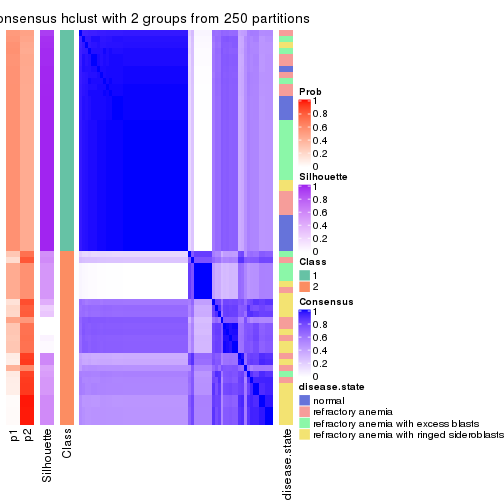
consensus_heatmap(res, k = 3)
consensus_heatmap(res, k = 4)
consensus_heatmap(res, k = 5)
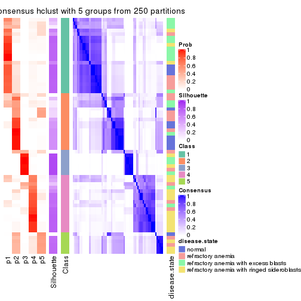
consensus_heatmap(res, k = 6)
Heatmaps for the membership of samples in all partitions to see how consistent they are:
membership_heatmap(res, k = 2)
membership_heatmap(res, k = 3)
membership_heatmap(res, k = 4)
membership_heatmap(res, k = 5)
membership_heatmap(res, k = 6)
As soon as we have had the classes for columns, we can look for signatures which are significantly different between classes which can be candidate marks for certain classes. Following are the heatmaps for signatures.
Signature heatmaps where rows are scaled:
get_signatures(res, k = 2)
get_signatures(res, k = 3)
get_signatures(res, k = 4)
get_signatures(res, k = 5)
get_signatures(res, k = 6)
Signature heatmaps where rows are not scaled:
get_signatures(res, k = 2, scale_rows = FALSE)
get_signatures(res, k = 3, scale_rows = FALSE)
get_signatures(res, k = 4, scale_rows = FALSE)
get_signatures(res, k = 5, scale_rows = FALSE)
get_signatures(res, k = 6, scale_rows = FALSE)
Compare the overlap of signatures from different k:
compare_signatures(res)
get_signature() returns a data frame invisibly. TO get the list of signatures, the function
call should be assigned to a variable explicitly. In following code, if plot argument is set
to FALSE, no heatmap is plotted while only the differential analysis is performed.
# code only for demonstration
tb = get_signature(res, k = ..., plot = FALSE)
An example of the output of tb is:
#> which_row fdr mean_1 mean_2 scaled_mean_1 scaled_mean_2 km
#> 1 38 0.042760348 8.373488 9.131774 -0.5533452 0.5164555 1
#> 2 40 0.018707592 7.106213 8.469186 -0.6173731 0.5762149 1
#> 3 55 0.019134737 10.221463 11.207825 -0.6159697 0.5749050 1
#> 4 59 0.006059896 5.921854 7.869574 -0.6899429 0.6439467 1
#> 5 60 0.018055526 8.928898 10.211722 -0.6204761 0.5791110 1
#> 6 98 0.009384629 15.714769 14.887706 0.6635654 -0.6193277 2
...
The columns in tb are:
which_row: row indices corresponding to the input matrix.fdr: FDR for the differential test. mean_x: The mean value in group x.scaled_mean_x: The mean value in group x after rows are scaled.km: Row groups if k-means clustering is applied to rows.UMAP plot which shows how samples are separated.
dimension_reduction(res, k = 2, method = "UMAP")
dimension_reduction(res, k = 3, method = "UMAP")
dimension_reduction(res, k = 4, method = "UMAP")
dimension_reduction(res, k = 5, method = "UMAP")
dimension_reduction(res, k = 6, method = "UMAP")
Following heatmap shows how subgroups are split when increasing k:
collect_classes(res)
Test correlation between subgroups and known annotations. If the known annotation is numeric, one-way ANOVA test is applied, and if the known annotation is discrete, chi-squared contingency table test is applied.
test_to_known_factors(res)
#> n disease.state(p) k
#> MAD:hclust 55 0.000520 2
#> MAD:hclust 31 0.095545 3
#> MAD:hclust 42 0.000216 4
#> MAD:hclust 51 0.000225 5
#> MAD:hclust 57 0.000476 6
If matrix rows can be associated to genes, consider to use GO_Enrichment(res,
...) to perform function enrichment for the signature genes.
The object with results only for a single top-value method and a single partition method can be extracted as:
res = res_list["MAD", "kmeans"]
# you can also extract it by
# res = res_list["MAD:kmeans"]
A summary of res and all the functions that can be applied to it:
res
#> A 'ConsensusPartition' object with k = 2, 3, 4, 5, 6.
#> On a matrix with 51941 rows and 66 columns.
#> Top rows (1000, 2000, 3000, 4000, 5000) are extracted by 'MAD' method.
#> Subgroups are detected by 'kmeans' method.
#> Performed in total 1250 partitions by row resampling.
#> Best k for subgroups seems to be 2.
#>
#> Following methods can be applied to this 'ConsensusPartition' object:
#> [1] "cola_report" "collect_classes" "collect_plots"
#> [4] "collect_stats" "colnames" "compare_signatures"
#> [7] "consensus_heatmap" "dimension_reduction" "functional_enrichment"
#> [10] "get_anno_col" "get_anno" "get_classes"
#> [13] "get_consensus" "get_matrix" "get_membership"
#> [16] "get_param" "get_signatures" "get_stats"
#> [19] "is_best_k" "is_stable_k" "membership_heatmap"
#> [22] "ncol" "nrow" "plot_ecdf"
#> [25] "rownames" "select_partition_number" "show"
#> [28] "suggest_best_k" "test_to_known_factors"
collect_plots() function collects all the plots made from res for all k (number of partitions)
into one single page to provide an easy and fast comparison between different k.
collect_plots(res)
The plots are:
k and the heatmap of
predicted classes for each k.k.k.k.All the plots in panels can be made by individual functions and they are plotted later in this section.
select_partition_number() produces several plots showing different
statistics for choosing “optimized” k. There are following statistics:
k;k, the area increased is defined as \(A_k - A_{k-1}\).The detailed explanations of these statistics can be found in the cola vignette.
Generally speaking, lower PAC score, higher mean silhouette score or higher
concordance corresponds to better partition. Rand index and Jaccard index
measure how similar the current partition is compared to partition with k-1.
If they are too similar, we won't accept k is better than k-1.
select_partition_number(res)
The numeric values for all these statistics can be obtained by get_stats().
get_stats(res)
#> k 1-PAC mean_silhouette concordance area_increased Rand Jaccard
#> 2 2 0.627 0.902 0.923 0.4698 0.539 0.539
#> 3 3 0.493 0.607 0.809 0.3783 0.771 0.585
#> 4 4 0.533 0.593 0.759 0.1394 0.840 0.578
#> 5 5 0.571 0.416 0.657 0.0751 0.897 0.643
#> 6 6 0.659 0.574 0.737 0.0444 0.906 0.607
suggest_best_k() suggests the best \(k\) based on these statistics. The rules are as follows:
NA.suggest_best_k(res)
#> [1] 2
Following shows the table of the partitions (You need to click the show/hide
code output link to see it). The membership matrix (columns with name p*)
is inferred by
clue::cl_consensus()
function with the SE method. Basically the value in the membership matrix
represents the probability to belong to a certain group. The finall class
label for an item is determined with the group with highest probability it
belongs to.
In get_classes() function, the entropy is calculated from the membership
matrix and the silhouette score is calculated from the consensus matrix.
cbind(get_classes(res, k = 2), get_membership(res, k = 2))
#> class entropy silhouette p1 p2
#> GSM103343 1 0.4161 0.893 0.916 0.084
#> GSM103344 1 0.5059 0.880 0.888 0.112
#> GSM103345 1 0.4161 0.893 0.916 0.084
#> GSM103364 1 0.1414 0.910 0.980 0.020
#> GSM103365 1 0.1414 0.910 0.980 0.020
#> GSM103366 1 0.6623 0.838 0.828 0.172
#> GSM103369 1 0.3879 0.896 0.924 0.076
#> GSM103370 1 0.2948 0.920 0.948 0.052
#> GSM103388 1 0.2603 0.921 0.956 0.044
#> GSM103389 1 0.2948 0.920 0.948 0.052
#> GSM103390 1 0.7376 0.836 0.792 0.208
#> GSM103347 2 0.4939 0.883 0.108 0.892
#> GSM103349 2 0.1633 0.941 0.024 0.976
#> GSM103354 2 0.0000 0.953 0.000 1.000
#> GSM103355 1 0.2603 0.907 0.956 0.044
#> GSM103357 1 0.7453 0.798 0.788 0.212
#> GSM103358 1 0.1633 0.911 0.976 0.024
#> GSM103361 1 0.0672 0.910 0.992 0.008
#> GSM103363 1 0.9286 0.576 0.656 0.344
#> GSM103367 2 0.7299 0.787 0.204 0.796
#> GSM103381 1 0.2948 0.920 0.948 0.052
#> GSM103382 1 0.7376 0.836 0.792 0.208
#> GSM103384 1 0.2948 0.920 0.948 0.052
#> GSM103391 2 0.1633 0.951 0.024 0.976
#> GSM103394 1 0.7950 0.806 0.760 0.240
#> GSM103399 1 0.7376 0.836 0.792 0.208
#> GSM103401 2 0.0000 0.953 0.000 1.000
#> GSM103404 1 0.4161 0.914 0.916 0.084
#> GSM103408 1 0.2423 0.921 0.960 0.040
#> GSM103348 2 0.0000 0.953 0.000 1.000
#> GSM103351 2 0.6712 0.833 0.176 0.824
#> GSM103356 2 0.3584 0.923 0.068 0.932
#> GSM103368 2 0.2236 0.948 0.036 0.964
#> GSM103372 2 0.2603 0.947 0.044 0.956
#> GSM103375 2 0.2236 0.948 0.036 0.964
#> GSM103376 2 0.0938 0.952 0.012 0.988
#> GSM103379 1 0.3274 0.919 0.940 0.060
#> GSM103385 2 0.3879 0.917 0.076 0.924
#> GSM103387 2 0.1843 0.951 0.028 0.972
#> GSM103392 1 0.3274 0.919 0.940 0.060
#> GSM103393 2 0.2043 0.950 0.032 0.968
#> GSM103395 2 0.0000 0.953 0.000 1.000
#> GSM103396 1 0.2948 0.920 0.948 0.052
#> GSM103398 1 0.6048 0.881 0.852 0.148
#> GSM103402 2 0.1843 0.950 0.028 0.972
#> GSM103403 2 0.1414 0.951 0.020 0.980
#> GSM103405 1 0.6247 0.876 0.844 0.156
#> GSM103407 1 0.7815 0.812 0.768 0.232
#> GSM103346 2 0.3274 0.923 0.060 0.940
#> GSM103350 2 0.3114 0.927 0.056 0.944
#> GSM103352 2 0.1633 0.941 0.024 0.976
#> GSM103353 2 0.0000 0.953 0.000 1.000
#> GSM103359 1 0.1843 0.909 0.972 0.028
#> GSM103360 1 0.1414 0.910 0.980 0.020
#> GSM103362 1 0.2043 0.910 0.968 0.032
#> GSM103371 1 0.2423 0.921 0.960 0.040
#> GSM103373 1 0.3879 0.915 0.924 0.076
#> GSM103374 1 0.2948 0.920 0.948 0.052
#> GSM103377 1 0.7376 0.836 0.792 0.208
#> GSM103378 1 0.2236 0.919 0.964 0.036
#> GSM103380 1 0.3274 0.919 0.940 0.060
#> GSM103383 1 0.2948 0.920 0.948 0.052
#> GSM103386 1 0.3274 0.919 0.940 0.060
#> GSM103397 1 0.3274 0.919 0.940 0.060
#> GSM103400 1 0.2236 0.921 0.964 0.036
#> GSM103406 1 0.0938 0.912 0.988 0.012
cbind(get_classes(res, k = 3), get_membership(res, k = 3))
#> class entropy silhouette p1 p2 p3
#> GSM103343 2 0.1411 0.7191 0.036 0.964 0.000
#> GSM103344 2 0.1163 0.7131 0.028 0.972 0.000
#> GSM103345 2 0.2066 0.7243 0.060 0.940 0.000
#> GSM103364 2 0.6095 0.3388 0.392 0.608 0.000
#> GSM103365 1 0.6308 -0.1197 0.508 0.492 0.000
#> GSM103366 2 0.2955 0.7151 0.080 0.912 0.008
#> GSM103369 2 0.2200 0.7233 0.056 0.940 0.004
#> GSM103370 1 0.2590 0.7973 0.924 0.072 0.004
#> GSM103388 1 0.2496 0.7978 0.928 0.068 0.004
#> GSM103389 1 0.2496 0.7978 0.928 0.068 0.004
#> GSM103390 2 0.7063 -0.0804 0.464 0.516 0.020
#> GSM103347 3 0.1751 0.7624 0.028 0.012 0.960
#> GSM103349 3 0.2356 0.7681 0.000 0.072 0.928
#> GSM103354 3 0.0424 0.7693 0.000 0.008 0.992
#> GSM103355 2 0.1411 0.7191 0.036 0.964 0.000
#> GSM103357 2 0.1620 0.7049 0.024 0.964 0.012
#> GSM103358 2 0.4062 0.6559 0.164 0.836 0.000
#> GSM103361 2 0.6062 0.3937 0.384 0.616 0.000
#> GSM103363 2 0.0747 0.6769 0.000 0.984 0.016
#> GSM103367 3 0.8995 0.3520 0.372 0.136 0.492
#> GSM103381 1 0.2496 0.7978 0.928 0.068 0.004
#> GSM103382 1 0.7553 0.4646 0.620 0.320 0.060
#> GSM103384 1 0.2496 0.7978 0.928 0.068 0.004
#> GSM103391 3 0.8571 0.4591 0.112 0.340 0.548
#> GSM103394 1 0.7591 0.4750 0.632 0.300 0.068
#> GSM103399 1 0.6187 0.5755 0.724 0.248 0.028
#> GSM103401 3 0.1015 0.7657 0.008 0.012 0.980
#> GSM103404 1 0.2383 0.7768 0.940 0.016 0.044
#> GSM103408 1 0.5454 0.7416 0.804 0.152 0.044
#> GSM103348 3 0.1163 0.7707 0.000 0.028 0.972
#> GSM103351 3 0.5506 0.7329 0.092 0.092 0.816
#> GSM103356 2 0.2486 0.6275 0.008 0.932 0.060
#> GSM103368 3 0.6676 0.4232 0.008 0.476 0.516
#> GSM103372 3 0.6641 0.4794 0.008 0.448 0.544
#> GSM103375 3 0.6339 0.5842 0.008 0.360 0.632
#> GSM103376 3 0.4539 0.7428 0.016 0.148 0.836
#> GSM103379 1 0.0237 0.7902 0.996 0.004 0.000
#> GSM103385 3 0.5174 0.7402 0.092 0.076 0.832
#> GSM103387 3 0.9994 0.0403 0.316 0.340 0.344
#> GSM103392 1 0.1399 0.7973 0.968 0.028 0.004
#> GSM103393 3 0.6678 0.4191 0.008 0.480 0.512
#> GSM103395 3 0.0424 0.7693 0.000 0.008 0.992
#> GSM103396 1 0.1753 0.7989 0.952 0.048 0.000
#> GSM103398 1 0.5473 0.7293 0.808 0.140 0.052
#> GSM103402 2 0.9980 -0.1177 0.304 0.356 0.340
#> GSM103403 3 0.5754 0.6334 0.004 0.296 0.700
#> GSM103405 1 0.5955 0.6508 0.772 0.180 0.048
#> GSM103407 2 0.6962 0.0217 0.412 0.568 0.020
#> GSM103346 3 0.1315 0.7640 0.020 0.008 0.972
#> GSM103350 3 0.3589 0.7599 0.048 0.052 0.900
#> GSM103352 3 0.0592 0.7687 0.000 0.012 0.988
#> GSM103353 3 0.0424 0.7693 0.000 0.008 0.992
#> GSM103359 1 0.6215 -0.0653 0.572 0.428 0.000
#> GSM103360 2 0.6307 0.2280 0.488 0.512 0.000
#> GSM103362 2 0.4504 0.6442 0.196 0.804 0.000
#> GSM103371 1 0.3500 0.7625 0.880 0.116 0.004
#> GSM103373 1 0.5864 0.5610 0.704 0.288 0.008
#> GSM103374 1 0.3784 0.7652 0.864 0.132 0.004
#> GSM103377 1 0.6948 0.1630 0.512 0.472 0.016
#> GSM103378 1 0.1031 0.7939 0.976 0.024 0.000
#> GSM103380 1 0.0237 0.7902 0.996 0.004 0.000
#> GSM103383 1 0.0000 0.7904 1.000 0.000 0.000
#> GSM103386 1 0.0424 0.7899 0.992 0.008 0.000
#> GSM103397 1 0.1031 0.7959 0.976 0.024 0.000
#> GSM103400 1 0.4233 0.7552 0.836 0.160 0.004
#> GSM103406 1 0.1031 0.7939 0.976 0.024 0.000
cbind(get_classes(res, k = 4), get_membership(res, k = 4))
#> class entropy silhouette p1 p2 p3 p4
#> GSM103343 2 0.0188 0.8382 0.000 0.996 0.004 0.000
#> GSM103344 2 0.0188 0.8382 0.000 0.996 0.004 0.000
#> GSM103345 2 0.0000 0.8387 0.000 1.000 0.000 0.000
#> GSM103364 2 0.4095 0.7259 0.192 0.792 0.000 0.016
#> GSM103365 2 0.5284 0.5023 0.368 0.616 0.000 0.016
#> GSM103366 2 0.1940 0.8048 0.000 0.924 0.000 0.076
#> GSM103369 2 0.0524 0.8363 0.008 0.988 0.000 0.004
#> GSM103370 1 0.2761 0.7170 0.904 0.048 0.000 0.048
#> GSM103388 1 0.2844 0.7162 0.900 0.048 0.000 0.052
#> GSM103389 1 0.2761 0.7170 0.904 0.048 0.000 0.048
#> GSM103390 1 0.7608 -0.0701 0.408 0.200 0.000 0.392
#> GSM103347 3 0.1022 0.8020 0.000 0.000 0.968 0.032
#> GSM103349 3 0.5950 0.6187 0.000 0.148 0.696 0.156
#> GSM103354 3 0.0469 0.8107 0.000 0.000 0.988 0.012
#> GSM103355 2 0.0524 0.8384 0.000 0.988 0.004 0.008
#> GSM103357 2 0.0779 0.8300 0.000 0.980 0.004 0.016
#> GSM103358 2 0.1174 0.8362 0.012 0.968 0.000 0.020
#> GSM103361 2 0.2996 0.8041 0.064 0.892 0.000 0.044
#> GSM103363 2 0.2401 0.7706 0.000 0.904 0.004 0.092
#> GSM103367 4 0.8146 0.2700 0.316 0.024 0.196 0.464
#> GSM103381 1 0.2586 0.7184 0.912 0.048 0.000 0.040
#> GSM103382 1 0.6924 0.2939 0.496 0.084 0.008 0.412
#> GSM103384 1 0.2844 0.7162 0.900 0.048 0.000 0.052
#> GSM103391 4 0.5963 0.5842 0.104 0.060 0.084 0.752
#> GSM103394 1 0.7142 0.2271 0.472 0.048 0.040 0.440
#> GSM103399 4 0.6650 -0.3977 0.424 0.072 0.004 0.500
#> GSM103401 3 0.1716 0.7605 0.000 0.000 0.936 0.064
#> GSM103404 1 0.4746 0.6399 0.712 0.004 0.008 0.276
#> GSM103408 1 0.6013 0.5388 0.624 0.064 0.000 0.312
#> GSM103348 3 0.3356 0.7211 0.000 0.000 0.824 0.176
#> GSM103351 3 0.7848 0.5040 0.052 0.184 0.584 0.180
#> GSM103356 2 0.3157 0.7244 0.000 0.852 0.004 0.144
#> GSM103368 4 0.7408 0.4717 0.008 0.240 0.196 0.556
#> GSM103372 4 0.7899 0.3410 0.008 0.276 0.248 0.468
#> GSM103375 4 0.7610 0.3469 0.008 0.188 0.292 0.512
#> GSM103376 4 0.6687 -0.0946 0.008 0.064 0.456 0.472
#> GSM103379 1 0.3355 0.6806 0.836 0.004 0.000 0.160
#> GSM103385 3 0.6744 0.0571 0.068 0.008 0.464 0.460
#> GSM103387 4 0.4374 0.5592 0.168 0.008 0.024 0.800
#> GSM103392 1 0.1743 0.7150 0.940 0.004 0.000 0.056
#> GSM103393 4 0.6320 0.5256 0.000 0.160 0.180 0.660
#> GSM103395 3 0.0469 0.8107 0.000 0.000 0.988 0.012
#> GSM103396 1 0.2489 0.7153 0.912 0.020 0.000 0.068
#> GSM103398 1 0.5865 0.4153 0.576 0.024 0.008 0.392
#> GSM103402 4 0.5406 0.5585 0.148 0.032 0.052 0.768
#> GSM103403 4 0.4635 0.4910 0.000 0.028 0.216 0.756
#> GSM103405 1 0.6103 0.4149 0.492 0.036 0.004 0.468
#> GSM103407 4 0.5375 0.5490 0.140 0.116 0.000 0.744
#> GSM103346 3 0.0336 0.8074 0.000 0.000 0.992 0.008
#> GSM103350 3 0.4051 0.7084 0.004 0.004 0.784 0.208
#> GSM103352 3 0.0336 0.8074 0.000 0.000 0.992 0.008
#> GSM103353 3 0.0336 0.8106 0.000 0.000 0.992 0.008
#> GSM103359 2 0.6948 0.4223 0.372 0.528 0.008 0.092
#> GSM103360 2 0.5972 0.5847 0.304 0.632 0.000 0.064
#> GSM103362 2 0.1510 0.8329 0.016 0.956 0.000 0.028
#> GSM103371 1 0.6075 0.6196 0.680 0.192 0.000 0.128
#> GSM103373 1 0.7006 0.5173 0.580 0.204 0.000 0.216
#> GSM103374 1 0.6366 0.4357 0.640 0.120 0.000 0.240
#> GSM103377 4 0.7581 0.1532 0.360 0.200 0.000 0.440
#> GSM103378 1 0.3763 0.6922 0.832 0.024 0.000 0.144
#> GSM103380 1 0.3355 0.6806 0.836 0.004 0.000 0.160
#> GSM103383 1 0.1302 0.7125 0.956 0.000 0.000 0.044
#> GSM103386 1 0.3355 0.6822 0.836 0.004 0.000 0.160
#> GSM103397 1 0.3032 0.7023 0.868 0.008 0.000 0.124
#> GSM103400 1 0.5327 0.6212 0.720 0.060 0.000 0.220
#> GSM103406 1 0.3863 0.6909 0.828 0.028 0.000 0.144
cbind(get_classes(res, k = 5), get_membership(res, k = 5))
#> class entropy silhouette p1 p2 p3 p4 p5
#> GSM103343 2 0.0404 0.8137 0.000 0.988 0.000 0.012 0.000
#> GSM103344 2 0.0404 0.8137 0.000 0.988 0.000 0.012 0.000
#> GSM103345 2 0.0404 0.8137 0.000 0.988 0.000 0.012 0.000
#> GSM103364 2 0.4090 0.7103 0.200 0.768 0.004 0.004 0.024
#> GSM103365 2 0.5224 0.5197 0.348 0.608 0.004 0.008 0.032
#> GSM103366 2 0.3019 0.7687 0.000 0.864 0.000 0.048 0.088
#> GSM103369 2 0.3460 0.7598 0.076 0.860 0.004 0.036 0.024
#> GSM103370 1 0.1356 0.4885 0.956 0.028 0.000 0.004 0.012
#> GSM103388 1 0.1300 0.4933 0.956 0.028 0.000 0.000 0.016
#> GSM103389 1 0.1243 0.4881 0.960 0.028 0.000 0.004 0.008
#> GSM103390 1 0.8024 0.1867 0.452 0.136 0.004 0.248 0.160
#> GSM103347 3 0.1372 0.8040 0.004 0.000 0.956 0.016 0.024
#> GSM103349 3 0.7050 0.1321 0.000 0.192 0.440 0.344 0.024
#> GSM103354 3 0.1502 0.8099 0.004 0.000 0.940 0.056 0.000
#> GSM103355 2 0.0451 0.8140 0.000 0.988 0.000 0.008 0.004
#> GSM103357 2 0.2032 0.8005 0.000 0.924 0.004 0.052 0.020
#> GSM103358 2 0.1659 0.8120 0.008 0.948 0.004 0.024 0.016
#> GSM103361 2 0.4166 0.7733 0.040 0.820 0.008 0.032 0.100
#> GSM103363 2 0.2899 0.7780 0.000 0.872 0.004 0.096 0.028
#> GSM103367 4 0.5781 0.3727 0.276 0.000 0.028 0.628 0.068
#> GSM103381 1 0.1195 0.4929 0.960 0.028 0.000 0.000 0.012
#> GSM103382 1 0.7070 0.0618 0.392 0.012 0.000 0.264 0.332
#> GSM103384 1 0.1300 0.4933 0.956 0.028 0.000 0.000 0.016
#> GSM103391 4 0.7591 0.0686 0.172 0.012 0.044 0.436 0.336
#> GSM103394 5 0.7815 -0.0885 0.268 0.008 0.044 0.300 0.380
#> GSM103399 5 0.5459 0.3186 0.068 0.020 0.020 0.172 0.720
#> GSM103401 3 0.1732 0.7501 0.000 0.000 0.920 0.000 0.080
#> GSM103404 5 0.3634 0.3935 0.136 0.004 0.040 0.000 0.820
#> GSM103408 1 0.6986 0.0958 0.432 0.016 0.000 0.212 0.340
#> GSM103348 3 0.4415 0.2404 0.004 0.000 0.552 0.444 0.000
#> GSM103351 4 0.8895 -0.0493 0.100 0.212 0.292 0.348 0.048
#> GSM103356 2 0.4109 0.5177 0.000 0.700 0.000 0.288 0.012
#> GSM103368 4 0.4915 0.4734 0.024 0.176 0.052 0.744 0.004
#> GSM103372 4 0.5711 0.4360 0.032 0.196 0.096 0.676 0.000
#> GSM103375 4 0.5180 0.4468 0.024 0.148 0.100 0.728 0.000
#> GSM103376 4 0.5693 0.3315 0.072 0.040 0.216 0.672 0.000
#> GSM103379 5 0.4744 0.2070 0.476 0.000 0.000 0.016 0.508
#> GSM103385 4 0.6006 0.3054 0.116 0.000 0.216 0.640 0.028
#> GSM103387 4 0.5904 0.2876 0.260 0.000 0.004 0.600 0.136
#> GSM103392 1 0.2932 0.4135 0.864 0.000 0.000 0.032 0.104
#> GSM103393 4 0.4265 0.4885 0.000 0.132 0.028 0.796 0.044
#> GSM103395 3 0.1502 0.8099 0.004 0.000 0.940 0.056 0.000
#> GSM103396 1 0.3030 0.4349 0.868 0.004 0.000 0.040 0.088
#> GSM103398 1 0.6875 0.0421 0.376 0.004 0.000 0.256 0.364
#> GSM103402 4 0.7224 0.0801 0.192 0.000 0.036 0.444 0.328
#> GSM103403 4 0.4298 0.4383 0.008 0.000 0.052 0.772 0.168
#> GSM103405 5 0.4255 0.3724 0.068 0.000 0.020 0.112 0.800
#> GSM103407 4 0.7533 0.0678 0.192 0.040 0.008 0.432 0.328
#> GSM103346 3 0.0510 0.8049 0.000 0.000 0.984 0.000 0.016
#> GSM103350 4 0.5645 -0.2412 0.048 0.000 0.468 0.472 0.012
#> GSM103352 3 0.0324 0.8081 0.000 0.004 0.992 0.004 0.000
#> GSM103353 3 0.1502 0.8099 0.004 0.000 0.940 0.056 0.000
#> GSM103359 2 0.7530 0.2515 0.160 0.432 0.032 0.020 0.356
#> GSM103360 2 0.6052 0.5965 0.156 0.648 0.004 0.020 0.172
#> GSM103362 2 0.3255 0.7945 0.016 0.872 0.008 0.032 0.072
#> GSM103371 1 0.6178 0.1907 0.604 0.132 0.000 0.020 0.244
#> GSM103373 1 0.7087 0.1544 0.524 0.144 0.000 0.060 0.272
#> GSM103374 1 0.3998 0.4428 0.812 0.052 0.000 0.120 0.016
#> GSM103377 1 0.7888 0.1922 0.452 0.148 0.000 0.256 0.144
#> GSM103378 1 0.4736 -0.0682 0.576 0.020 0.000 0.000 0.404
#> GSM103380 5 0.4744 0.2070 0.476 0.000 0.000 0.016 0.508
#> GSM103383 1 0.3849 0.2658 0.752 0.000 0.000 0.016 0.232
#> GSM103386 5 0.4171 0.2724 0.396 0.000 0.000 0.000 0.604
#> GSM103397 1 0.5372 -0.0731 0.504 0.004 0.000 0.044 0.448
#> GSM103400 1 0.6275 0.2375 0.580 0.028 0.000 0.104 0.288
#> GSM103406 1 0.5032 -0.0796 0.568 0.020 0.004 0.004 0.404
cbind(get_classes(res, k = 6), get_membership(res, k = 6))
#> class entropy silhouette p1 p2 p3 p4 p5 p6
#> GSM103343 2 0.0508 0.7966 0.012 0.984 0.000 0.000 0.000 0.004
#> GSM103344 2 0.0508 0.7966 0.012 0.984 0.000 0.000 0.000 0.004
#> GSM103345 2 0.0508 0.7966 0.012 0.984 0.000 0.000 0.000 0.004
#> GSM103364 2 0.4722 0.6956 0.160 0.740 0.000 0.016 0.032 0.052
#> GSM103365 2 0.5987 0.4991 0.292 0.576 0.000 0.024 0.032 0.076
#> GSM103366 2 0.2801 0.7741 0.008 0.872 0.000 0.004 0.080 0.036
#> GSM103369 2 0.6070 0.5838 0.112 0.668 0.000 0.060 0.080 0.080
#> GSM103370 1 0.1007 0.6173 0.968 0.008 0.000 0.004 0.004 0.016
#> GSM103388 1 0.1121 0.6178 0.964 0.008 0.000 0.008 0.016 0.004
#> GSM103389 1 0.0912 0.6173 0.972 0.004 0.000 0.004 0.008 0.012
#> GSM103390 1 0.7660 0.0771 0.380 0.068 0.000 0.088 0.356 0.108
#> GSM103347 3 0.3150 0.8447 0.000 0.000 0.856 0.036 0.040 0.068
#> GSM103349 4 0.7814 0.3458 0.000 0.200 0.268 0.400 0.068 0.064
#> GSM103354 3 0.1668 0.9196 0.000 0.000 0.928 0.060 0.008 0.004
#> GSM103355 2 0.0984 0.7956 0.012 0.968 0.000 0.000 0.008 0.012
#> GSM103357 2 0.3357 0.7511 0.000 0.844 0.000 0.064 0.040 0.052
#> GSM103358 2 0.2218 0.7913 0.008 0.916 0.000 0.028 0.020 0.028
#> GSM103361 2 0.4268 0.7511 0.012 0.788 0.000 0.036 0.060 0.104
#> GSM103363 2 0.4278 0.7200 0.000 0.780 0.000 0.084 0.076 0.060
#> GSM103367 4 0.4121 0.6590 0.120 0.004 0.004 0.784 0.012 0.076
#> GSM103381 1 0.0912 0.6182 0.972 0.004 0.000 0.008 0.012 0.004
#> GSM103382 5 0.3384 0.7513 0.228 0.000 0.000 0.008 0.760 0.004
#> GSM103384 1 0.1109 0.6172 0.964 0.004 0.000 0.012 0.016 0.004
#> GSM103391 5 0.4178 0.7601 0.048 0.000 0.016 0.104 0.796 0.036
#> GSM103394 5 0.3822 0.7586 0.112 0.000 0.016 0.004 0.804 0.064
#> GSM103399 6 0.5560 0.2049 0.044 0.004 0.004 0.032 0.388 0.528
#> GSM103401 3 0.1829 0.8837 0.000 0.000 0.920 0.004 0.012 0.064
#> GSM103404 6 0.4463 0.5072 0.076 0.000 0.020 0.004 0.152 0.748
#> GSM103408 5 0.4283 0.6870 0.280 0.000 0.000 0.008 0.680 0.032
#> GSM103348 4 0.4115 0.4185 0.000 0.000 0.360 0.624 0.012 0.004
#> GSM103351 4 0.8355 0.4268 0.036 0.204 0.152 0.444 0.064 0.100
#> GSM103356 2 0.4928 0.0480 0.000 0.512 0.000 0.440 0.024 0.024
#> GSM103368 4 0.4806 0.6351 0.012 0.088 0.004 0.760 0.080 0.056
#> GSM103372 4 0.3709 0.6919 0.024 0.120 0.008 0.820 0.016 0.012
#> GSM103375 4 0.3164 0.6984 0.020 0.060 0.008 0.868 0.036 0.008
#> GSM103376 4 0.2585 0.7116 0.036 0.008 0.048 0.896 0.008 0.004
#> GSM103379 6 0.4167 0.3757 0.344 0.000 0.000 0.012 0.008 0.636
#> GSM103385 4 0.3478 0.7001 0.064 0.000 0.048 0.844 0.008 0.036
#> GSM103387 5 0.5816 0.5659 0.148 0.000 0.000 0.296 0.540 0.016
#> GSM103392 1 0.3994 0.4712 0.752 0.000 0.000 0.040 0.012 0.196
#> GSM103393 4 0.5199 0.5087 0.004 0.060 0.000 0.684 0.196 0.056
#> GSM103395 3 0.1888 0.9126 0.000 0.000 0.916 0.068 0.012 0.004
#> GSM103396 1 0.3548 0.5479 0.812 0.000 0.000 0.068 0.008 0.112
#> GSM103398 5 0.4013 0.7443 0.212 0.000 0.000 0.008 0.740 0.040
#> GSM103402 5 0.3771 0.7941 0.088 0.000 0.012 0.100 0.800 0.000
#> GSM103403 5 0.3650 0.6080 0.000 0.000 0.012 0.280 0.708 0.000
#> GSM103405 6 0.5164 0.2294 0.040 0.004 0.004 0.012 0.400 0.540
#> GSM103407 5 0.3859 0.7872 0.072 0.016 0.000 0.096 0.808 0.008
#> GSM103346 3 0.0363 0.9197 0.000 0.000 0.988 0.000 0.000 0.012
#> GSM103350 4 0.5172 0.5321 0.016 0.000 0.240 0.668 0.036 0.040
#> GSM103352 3 0.0405 0.9225 0.000 0.000 0.988 0.008 0.000 0.004
#> GSM103353 3 0.1668 0.9196 0.000 0.000 0.928 0.060 0.008 0.004
#> GSM103359 6 0.7154 -0.0466 0.044 0.328 0.044 0.052 0.044 0.488
#> GSM103360 2 0.5899 0.5311 0.048 0.608 0.000 0.044 0.036 0.264
#> GSM103362 2 0.3978 0.7604 0.012 0.812 0.000 0.036 0.060 0.080
#> GSM103371 1 0.6109 0.4228 0.632 0.080 0.000 0.048 0.044 0.196
#> GSM103373 1 0.7237 0.3256 0.512 0.068 0.000 0.080 0.096 0.244
#> GSM103374 1 0.4398 0.5520 0.776 0.040 0.000 0.124 0.016 0.044
#> GSM103377 1 0.7699 0.1390 0.412 0.088 0.000 0.108 0.316 0.076
#> GSM103378 1 0.4819 0.0924 0.560 0.012 0.000 0.016 0.012 0.400
#> GSM103380 6 0.4167 0.3757 0.344 0.000 0.000 0.012 0.008 0.636
#> GSM103383 1 0.4010 0.3784 0.692 0.000 0.000 0.012 0.012 0.284
#> GSM103386 6 0.3518 0.4419 0.256 0.000 0.000 0.000 0.012 0.732
#> GSM103397 6 0.6216 0.2256 0.348 0.000 0.000 0.024 0.168 0.460
#> GSM103400 1 0.4210 0.2380 0.644 0.000 0.000 0.008 0.332 0.016
#> GSM103406 1 0.4840 0.0632 0.548 0.012 0.000 0.016 0.012 0.412
Heatmaps for the consensus matrix. It visualizes the probability of two samples to be in a same group.
consensus_heatmap(res, k = 2)
consensus_heatmap(res, k = 3)
consensus_heatmap(res, k = 4)
consensus_heatmap(res, k = 5)

consensus_heatmap(res, k = 6)
Heatmaps for the membership of samples in all partitions to see how consistent they are:
membership_heatmap(res, k = 2)
membership_heatmap(res, k = 3)
membership_heatmap(res, k = 4)
membership_heatmap(res, k = 5)
membership_heatmap(res, k = 6)
As soon as we have had the classes for columns, we can look for signatures which are significantly different between classes which can be candidate marks for certain classes. Following are the heatmaps for signatures.
Signature heatmaps where rows are scaled:
get_signatures(res, k = 2)
get_signatures(res, k = 3)
get_signatures(res, k = 4)
get_signatures(res, k = 5)
get_signatures(res, k = 6)
Signature heatmaps where rows are not scaled:
get_signatures(res, k = 2, scale_rows = FALSE)
get_signatures(res, k = 3, scale_rows = FALSE)
get_signatures(res, k = 4, scale_rows = FALSE)
get_signatures(res, k = 5, scale_rows = FALSE)
get_signatures(res, k = 6, scale_rows = FALSE)

Compare the overlap of signatures from different k:
compare_signatures(res)
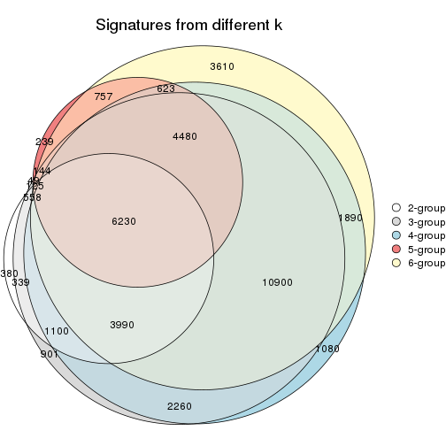
get_signature() returns a data frame invisibly. TO get the list of signatures, the function
call should be assigned to a variable explicitly. In following code, if plot argument is set
to FALSE, no heatmap is plotted while only the differential analysis is performed.
# code only for demonstration
tb = get_signature(res, k = ..., plot = FALSE)
An example of the output of tb is:
#> which_row fdr mean_1 mean_2 scaled_mean_1 scaled_mean_2 km
#> 1 38 0.042760348 8.373488 9.131774 -0.5533452 0.5164555 1
#> 2 40 0.018707592 7.106213 8.469186 -0.6173731 0.5762149 1
#> 3 55 0.019134737 10.221463 11.207825 -0.6159697 0.5749050 1
#> 4 59 0.006059896 5.921854 7.869574 -0.6899429 0.6439467 1
#> 5 60 0.018055526 8.928898 10.211722 -0.6204761 0.5791110 1
#> 6 98 0.009384629 15.714769 14.887706 0.6635654 -0.6193277 2
...
The columns in tb are:
which_row: row indices corresponding to the input matrix.fdr: FDR for the differential test. mean_x: The mean value in group x.scaled_mean_x: The mean value in group x after rows are scaled.km: Row groups if k-means clustering is applied to rows.UMAP plot which shows how samples are separated.
dimension_reduction(res, k = 2, method = "UMAP")
dimension_reduction(res, k = 3, method = "UMAP")
dimension_reduction(res, k = 4, method = "UMAP")
dimension_reduction(res, k = 5, method = "UMAP")
dimension_reduction(res, k = 6, method = "UMAP")
Following heatmap shows how subgroups are split when increasing k:
collect_classes(res)
Test correlation between subgroups and known annotations. If the known annotation is numeric, one-way ANOVA test is applied, and if the known annotation is discrete, chi-squared contingency table test is applied.
test_to_known_factors(res)
#> n disease.state(p) k
#> MAD:kmeans 66 0.000855 2
#> MAD:kmeans 49 0.015737 3
#> MAD:kmeans 50 0.003939 4
#> MAD:kmeans 22 0.137391 5
#> MAD:kmeans 45 0.006014 6
If matrix rows can be associated to genes, consider to use GO_Enrichment(res,
...) to perform function enrichment for the signature genes.
The object with results only for a single top-value method and a single partition method can be extracted as:
res = res_list["MAD", "skmeans"]
# you can also extract it by
# res = res_list["MAD:skmeans"]
A summary of res and all the functions that can be applied to it:
res
#> A 'ConsensusPartition' object with k = 2, 3, 4, 5, 6.
#> On a matrix with 51941 rows and 66 columns.
#> Top rows (1000, 2000, 3000, 4000, 5000) are extracted by 'MAD' method.
#> Subgroups are detected by 'skmeans' method.
#> Performed in total 1250 partitions by row resampling.
#> Best k for subgroups seems to be 2.
#>
#> Following methods can be applied to this 'ConsensusPartition' object:
#> [1] "cola_report" "collect_classes" "collect_plots"
#> [4] "collect_stats" "colnames" "compare_signatures"
#> [7] "consensus_heatmap" "dimension_reduction" "functional_enrichment"
#> [10] "get_anno_col" "get_anno" "get_classes"
#> [13] "get_consensus" "get_matrix" "get_membership"
#> [16] "get_param" "get_signatures" "get_stats"
#> [19] "is_best_k" "is_stable_k" "membership_heatmap"
#> [22] "ncol" "nrow" "plot_ecdf"
#> [25] "rownames" "select_partition_number" "show"
#> [28] "suggest_best_k" "test_to_known_factors"
collect_plots() function collects all the plots made from res for all k (number of partitions)
into one single page to provide an easy and fast comparison between different k.
collect_plots(res)
The plots are:
k and the heatmap of
predicted classes for each k.k.k.k.All the plots in panels can be made by individual functions and they are plotted later in this section.
select_partition_number() produces several plots showing different
statistics for choosing “optimized” k. There are following statistics:
k;k, the area increased is defined as \(A_k - A_{k-1}\).The detailed explanations of these statistics can be found in the cola vignette.
Generally speaking, lower PAC score, higher mean silhouette score or higher
concordance corresponds to better partition. Rand index and Jaccard index
measure how similar the current partition is compared to partition with k-1.
If they are too similar, we won't accept k is better than k-1.
select_partition_number(res)
The numeric values for all these statistics can be obtained by get_stats().
get_stats(res)
#> k 1-PAC mean_silhouette concordance area_increased Rand Jaccard
#> 2 2 0.646 0.880 0.942 0.4974 0.504 0.504
#> 3 3 0.643 0.818 0.848 0.3432 0.751 0.542
#> 4 4 0.748 0.757 0.889 0.1294 0.861 0.610
#> 5 5 0.708 0.710 0.823 0.0649 0.941 0.766
#> 6 6 0.736 0.644 0.805 0.0436 0.913 0.616
suggest_best_k() suggests the best \(k\) based on these statistics. The rules are as follows:
NA.suggest_best_k(res)
#> [1] 2
Following shows the table of the partitions (You need to click the show/hide
code output link to see it). The membership matrix (columns with name p*)
is inferred by
clue::cl_consensus()
function with the SE method. Basically the value in the membership matrix
represents the probability to belong to a certain group. The finall class
label for an item is determined with the group with highest probability it
belongs to.
In get_classes() function, the entropy is calculated from the membership
matrix and the silhouette score is calculated from the consensus matrix.
cbind(get_classes(res, k = 2), get_membership(res, k = 2))
#> class entropy silhouette p1 p2
#> GSM103343 1 0.9427 0.504 0.640 0.360
#> GSM103344 2 0.8713 0.550 0.292 0.708
#> GSM103345 1 0.5519 0.858 0.872 0.128
#> GSM103364 1 0.0000 0.935 1.000 0.000
#> GSM103365 1 0.0000 0.935 1.000 0.000
#> GSM103366 1 0.7219 0.797 0.800 0.200
#> GSM103369 1 0.5519 0.858 0.872 0.128
#> GSM103370 1 0.0000 0.935 1.000 0.000
#> GSM103388 1 0.0000 0.935 1.000 0.000
#> GSM103389 1 0.0000 0.935 1.000 0.000
#> GSM103390 1 0.7219 0.797 0.800 0.200
#> GSM103347 2 0.6343 0.817 0.160 0.840
#> GSM103349 2 0.0000 0.936 0.000 1.000
#> GSM103354 2 0.0000 0.936 0.000 1.000
#> GSM103355 1 0.9044 0.558 0.680 0.320
#> GSM103357 2 0.0000 0.936 0.000 1.000
#> GSM103358 1 0.0672 0.932 0.992 0.008
#> GSM103361 1 0.0000 0.935 1.000 0.000
#> GSM103363 2 0.0000 0.936 0.000 1.000
#> GSM103367 2 0.7219 0.774 0.200 0.800
#> GSM103381 1 0.0000 0.935 1.000 0.000
#> GSM103382 1 0.7219 0.797 0.800 0.200
#> GSM103384 1 0.0000 0.935 1.000 0.000
#> GSM103391 2 0.0000 0.936 0.000 1.000
#> GSM103394 2 0.9866 0.124 0.432 0.568
#> GSM103399 1 0.7219 0.797 0.800 0.200
#> GSM103401 2 0.0000 0.936 0.000 1.000
#> GSM103404 1 0.1184 0.928 0.984 0.016
#> GSM103408 1 0.0000 0.935 1.000 0.000
#> GSM103348 2 0.0000 0.936 0.000 1.000
#> GSM103351 2 0.6887 0.793 0.184 0.816
#> GSM103356 2 0.0000 0.936 0.000 1.000
#> GSM103368 2 0.0000 0.936 0.000 1.000
#> GSM103372 2 0.0000 0.936 0.000 1.000
#> GSM103375 2 0.0000 0.936 0.000 1.000
#> GSM103376 2 0.0000 0.936 0.000 1.000
#> GSM103379 1 0.0000 0.935 1.000 0.000
#> GSM103385 2 0.5294 0.853 0.120 0.880
#> GSM103387 2 0.0000 0.936 0.000 1.000
#> GSM103392 1 0.0000 0.935 1.000 0.000
#> GSM103393 2 0.0000 0.936 0.000 1.000
#> GSM103395 2 0.0000 0.936 0.000 1.000
#> GSM103396 1 0.0000 0.935 1.000 0.000
#> GSM103398 1 0.5059 0.871 0.888 0.112
#> GSM103402 2 0.0000 0.936 0.000 1.000
#> GSM103403 2 0.0000 0.936 0.000 1.000
#> GSM103405 1 0.5294 0.867 0.880 0.120
#> GSM103407 2 0.0000 0.936 0.000 1.000
#> GSM103346 2 0.5519 0.846 0.128 0.872
#> GSM103350 2 0.2948 0.903 0.052 0.948
#> GSM103352 2 0.0000 0.936 0.000 1.000
#> GSM103353 2 0.0000 0.936 0.000 1.000
#> GSM103359 1 0.0000 0.935 1.000 0.000
#> GSM103360 1 0.0000 0.935 1.000 0.000
#> GSM103362 1 0.0672 0.932 0.992 0.008
#> GSM103371 1 0.0000 0.935 1.000 0.000
#> GSM103373 1 0.2948 0.909 0.948 0.052
#> GSM103374 1 0.0000 0.935 1.000 0.000
#> GSM103377 1 0.7299 0.793 0.796 0.204
#> GSM103378 1 0.0000 0.935 1.000 0.000
#> GSM103380 1 0.0000 0.935 1.000 0.000
#> GSM103383 1 0.0000 0.935 1.000 0.000
#> GSM103386 1 0.0000 0.935 1.000 0.000
#> GSM103397 1 0.0000 0.935 1.000 0.000
#> GSM103400 1 0.0000 0.935 1.000 0.000
#> GSM103406 1 0.0000 0.935 1.000 0.000
cbind(get_classes(res, k = 3), get_membership(res, k = 3))
#> class entropy silhouette p1 p2 p3
#> GSM103343 2 0.0000 0.871 0.000 1.000 0.000
#> GSM103344 2 0.0000 0.871 0.000 1.000 0.000
#> GSM103345 2 0.0000 0.871 0.000 1.000 0.000
#> GSM103364 2 0.5058 0.704 0.244 0.756 0.000
#> GSM103365 2 0.6045 0.515 0.380 0.620 0.000
#> GSM103366 2 0.0000 0.871 0.000 1.000 0.000
#> GSM103369 2 0.0000 0.871 0.000 1.000 0.000
#> GSM103370 1 0.0000 0.886 1.000 0.000 0.000
#> GSM103388 1 0.0000 0.886 1.000 0.000 0.000
#> GSM103389 1 0.0000 0.886 1.000 0.000 0.000
#> GSM103390 1 0.6274 0.337 0.544 0.456 0.000
#> GSM103347 3 0.0424 0.910 0.008 0.000 0.992
#> GSM103349 3 0.0000 0.913 0.000 0.000 1.000
#> GSM103354 3 0.0000 0.913 0.000 0.000 1.000
#> GSM103355 2 0.0000 0.871 0.000 1.000 0.000
#> GSM103357 2 0.0000 0.871 0.000 1.000 0.000
#> GSM103358 2 0.0000 0.871 0.000 1.000 0.000
#> GSM103361 2 0.4121 0.769 0.168 0.832 0.000
#> GSM103363 2 0.0000 0.871 0.000 1.000 0.000
#> GSM103367 3 0.4555 0.758 0.200 0.000 0.800
#> GSM103381 1 0.0000 0.886 1.000 0.000 0.000
#> GSM103382 1 0.6519 0.758 0.760 0.132 0.108
#> GSM103384 1 0.0000 0.886 1.000 0.000 0.000
#> GSM103391 3 0.2959 0.859 0.000 0.100 0.900
#> GSM103394 1 0.7273 0.715 0.712 0.132 0.156
#> GSM103399 1 0.6567 0.747 0.752 0.160 0.088
#> GSM103401 3 0.0000 0.913 0.000 0.000 1.000
#> GSM103404 1 0.2959 0.841 0.900 0.000 0.100
#> GSM103408 1 0.3295 0.841 0.896 0.008 0.096
#> GSM103348 3 0.0000 0.913 0.000 0.000 1.000
#> GSM103351 3 0.7848 0.507 0.096 0.264 0.640
#> GSM103356 2 0.2448 0.815 0.000 0.924 0.076
#> GSM103368 3 0.4750 0.775 0.000 0.216 0.784
#> GSM103372 3 0.4452 0.799 0.000 0.192 0.808
#> GSM103375 3 0.3482 0.851 0.000 0.128 0.872
#> GSM103376 3 0.2796 0.871 0.000 0.092 0.908
#> GSM103379 1 0.0000 0.886 1.000 0.000 0.000
#> GSM103385 3 0.2625 0.867 0.084 0.000 0.916
#> GSM103387 3 0.0000 0.913 0.000 0.000 1.000
#> GSM103392 1 0.0000 0.886 1.000 0.000 0.000
#> GSM103393 3 0.4702 0.779 0.000 0.212 0.788
#> GSM103395 3 0.0000 0.913 0.000 0.000 1.000
#> GSM103396 1 0.0000 0.886 1.000 0.000 0.000
#> GSM103398 1 0.4465 0.787 0.820 0.004 0.176
#> GSM103402 3 0.0892 0.906 0.000 0.020 0.980
#> GSM103403 3 0.0000 0.913 0.000 0.000 1.000
#> GSM103405 1 0.6176 0.774 0.780 0.120 0.100
#> GSM103407 2 0.5465 0.473 0.000 0.712 0.288
#> GSM103346 3 0.0000 0.913 0.000 0.000 1.000
#> GSM103350 3 0.2625 0.867 0.084 0.000 0.916
#> GSM103352 3 0.0000 0.913 0.000 0.000 1.000
#> GSM103353 3 0.0000 0.913 0.000 0.000 1.000
#> GSM103359 2 0.6045 0.515 0.380 0.620 0.000
#> GSM103360 2 0.5058 0.704 0.244 0.756 0.000
#> GSM103362 2 0.0000 0.871 0.000 1.000 0.000
#> GSM103371 1 0.3340 0.814 0.880 0.120 0.000
#> GSM103373 1 0.5733 0.605 0.676 0.324 0.000
#> GSM103374 1 0.1411 0.867 0.964 0.036 0.000
#> GSM103377 1 0.6026 0.517 0.624 0.376 0.000
#> GSM103378 1 0.0000 0.886 1.000 0.000 0.000
#> GSM103380 1 0.0000 0.886 1.000 0.000 0.000
#> GSM103383 1 0.0000 0.886 1.000 0.000 0.000
#> GSM103386 1 0.0000 0.886 1.000 0.000 0.000
#> GSM103397 1 0.0000 0.886 1.000 0.000 0.000
#> GSM103400 1 0.0592 0.883 0.988 0.012 0.000
#> GSM103406 1 0.0000 0.886 1.000 0.000 0.000
cbind(get_classes(res, k = 4), get_membership(res, k = 4))
#> class entropy silhouette p1 p2 p3 p4
#> GSM103343 2 0.0000 0.9040 0.000 1.000 0.000 0.000
#> GSM103344 2 0.0000 0.9040 0.000 1.000 0.000 0.000
#> GSM103345 2 0.0000 0.9040 0.000 1.000 0.000 0.000
#> GSM103364 2 0.3649 0.7667 0.204 0.796 0.000 0.000
#> GSM103365 2 0.4250 0.6802 0.276 0.724 0.000 0.000
#> GSM103366 2 0.1022 0.8865 0.000 0.968 0.000 0.032
#> GSM103369 2 0.0336 0.9011 0.008 0.992 0.000 0.000
#> GSM103370 1 0.0188 0.8951 0.996 0.004 0.000 0.000
#> GSM103388 1 0.1489 0.8748 0.952 0.004 0.000 0.044
#> GSM103389 1 0.0188 0.8951 0.996 0.004 0.000 0.000
#> GSM103390 4 0.7081 0.1549 0.388 0.128 0.000 0.484
#> GSM103347 3 0.0000 0.8729 0.000 0.000 1.000 0.000
#> GSM103349 3 0.0376 0.8726 0.000 0.004 0.992 0.004
#> GSM103354 3 0.0188 0.8737 0.000 0.000 0.996 0.004
#> GSM103355 2 0.0000 0.9040 0.000 1.000 0.000 0.000
#> GSM103357 2 0.0188 0.9022 0.000 0.996 0.004 0.000
#> GSM103358 2 0.0000 0.9040 0.000 1.000 0.000 0.000
#> GSM103361 2 0.2469 0.8464 0.108 0.892 0.000 0.000
#> GSM103363 2 0.0336 0.9005 0.000 0.992 0.000 0.008
#> GSM103367 3 0.4957 0.6661 0.204 0.000 0.748 0.048
#> GSM103381 1 0.1489 0.8748 0.952 0.004 0.000 0.044
#> GSM103382 4 0.1557 0.7799 0.056 0.000 0.000 0.944
#> GSM103384 1 0.1489 0.8748 0.952 0.004 0.000 0.044
#> GSM103391 4 0.0592 0.7646 0.000 0.000 0.016 0.984
#> GSM103394 4 0.1389 0.7795 0.048 0.000 0.000 0.952
#> GSM103399 4 0.3444 0.7167 0.184 0.000 0.000 0.816
#> GSM103401 3 0.4730 0.3395 0.000 0.000 0.636 0.364
#> GSM103404 4 0.5231 0.4007 0.384 0.000 0.012 0.604
#> GSM103408 4 0.1940 0.7724 0.076 0.000 0.000 0.924
#> GSM103348 3 0.0188 0.8737 0.000 0.000 0.996 0.004
#> GSM103351 3 0.0592 0.8662 0.000 0.016 0.984 0.000
#> GSM103356 2 0.0592 0.8959 0.000 0.984 0.016 0.000
#> GSM103368 3 0.5429 0.6987 0.000 0.208 0.720 0.072
#> GSM103372 3 0.4998 0.7232 0.000 0.200 0.748 0.052
#> GSM103375 3 0.4746 0.7479 0.000 0.168 0.776 0.056
#> GSM103376 3 0.1389 0.8564 0.000 0.000 0.952 0.048
#> GSM103379 1 0.0376 0.8950 0.992 0.000 0.004 0.004
#> GSM103385 3 0.1389 0.8564 0.000 0.000 0.952 0.048
#> GSM103387 4 0.4776 0.2316 0.000 0.000 0.376 0.624
#> GSM103392 1 0.0376 0.8956 0.992 0.000 0.004 0.004
#> GSM103393 3 0.7128 0.3630 0.000 0.152 0.528 0.320
#> GSM103395 3 0.0188 0.8737 0.000 0.000 0.996 0.004
#> GSM103396 1 0.0188 0.8956 0.996 0.000 0.004 0.000
#> GSM103398 4 0.1474 0.7792 0.052 0.000 0.000 0.948
#> GSM103402 4 0.0000 0.7707 0.000 0.000 0.000 1.000
#> GSM103403 4 0.4697 0.2893 0.000 0.000 0.356 0.644
#> GSM103405 4 0.2973 0.7434 0.144 0.000 0.000 0.856
#> GSM103407 4 0.0188 0.7704 0.000 0.004 0.000 0.996
#> GSM103346 3 0.0188 0.8737 0.000 0.000 0.996 0.004
#> GSM103350 3 0.0000 0.8729 0.000 0.000 1.000 0.000
#> GSM103352 3 0.0188 0.8737 0.000 0.000 0.996 0.004
#> GSM103353 3 0.0188 0.8737 0.000 0.000 0.996 0.004
#> GSM103359 2 0.5712 0.5893 0.308 0.644 0.048 0.000
#> GSM103360 2 0.3908 0.7586 0.212 0.784 0.004 0.000
#> GSM103362 2 0.0000 0.9040 0.000 1.000 0.000 0.000
#> GSM103371 1 0.1867 0.8440 0.928 0.072 0.000 0.000
#> GSM103373 1 0.5180 0.6027 0.740 0.196 0.000 0.064
#> GSM103374 1 0.1722 0.8573 0.944 0.008 0.000 0.048
#> GSM103377 1 0.7449 0.0116 0.464 0.180 0.000 0.356
#> GSM103378 1 0.0000 0.8956 1.000 0.000 0.000 0.000
#> GSM103380 1 0.0376 0.8950 0.992 0.000 0.004 0.004
#> GSM103383 1 0.0188 0.8956 0.996 0.000 0.004 0.000
#> GSM103386 1 0.0188 0.8954 0.996 0.000 0.000 0.004
#> GSM103397 1 0.4889 0.3249 0.636 0.000 0.004 0.360
#> GSM103400 4 0.5088 0.2915 0.424 0.004 0.000 0.572
#> GSM103406 1 0.0000 0.8956 1.000 0.000 0.000 0.000
cbind(get_classes(res, k = 5), get_membership(res, k = 5))
#> class entropy silhouette p1 p2 p3 p4 p5
#> GSM103343 2 0.0162 0.8601 0.000 0.996 0.000 0.004 0.000
#> GSM103344 2 0.0162 0.8601 0.000 0.996 0.000 0.004 0.000
#> GSM103345 2 0.0162 0.8601 0.000 0.996 0.000 0.004 0.000
#> GSM103364 2 0.2848 0.7855 0.156 0.840 0.000 0.004 0.000
#> GSM103365 2 0.4181 0.6526 0.268 0.712 0.000 0.020 0.000
#> GSM103366 2 0.1502 0.8422 0.000 0.940 0.000 0.004 0.056
#> GSM103369 2 0.2871 0.7909 0.088 0.872 0.000 0.040 0.000
#> GSM103370 1 0.1195 0.7439 0.960 0.000 0.000 0.012 0.028
#> GSM103388 1 0.2017 0.7308 0.912 0.000 0.000 0.008 0.080
#> GSM103389 1 0.1195 0.7439 0.960 0.000 0.000 0.012 0.028
#> GSM103390 1 0.7266 -0.1436 0.404 0.052 0.000 0.148 0.396
#> GSM103347 3 0.0162 0.9553 0.000 0.000 0.996 0.004 0.000
#> GSM103349 3 0.0703 0.9538 0.000 0.000 0.976 0.024 0.000
#> GSM103354 3 0.0290 0.9587 0.000 0.000 0.992 0.008 0.000
#> GSM103355 2 0.0162 0.8601 0.000 0.996 0.000 0.004 0.000
#> GSM103357 2 0.1197 0.8479 0.000 0.952 0.000 0.048 0.000
#> GSM103358 2 0.0162 0.8597 0.000 0.996 0.000 0.004 0.000
#> GSM103361 2 0.1872 0.8418 0.020 0.928 0.000 0.052 0.000
#> GSM103363 2 0.2006 0.8343 0.000 0.916 0.000 0.072 0.012
#> GSM103367 4 0.4548 0.7129 0.128 0.000 0.120 0.752 0.000
#> GSM103381 1 0.2017 0.7308 0.912 0.000 0.000 0.008 0.080
#> GSM103382 5 0.1965 0.7357 0.096 0.000 0.000 0.000 0.904
#> GSM103384 1 0.2017 0.7308 0.912 0.000 0.000 0.008 0.080
#> GSM103391 5 0.3359 0.7123 0.000 0.000 0.072 0.084 0.844
#> GSM103394 5 0.0703 0.7554 0.000 0.000 0.000 0.024 0.976
#> GSM103399 5 0.5115 0.6173 0.136 0.000 0.000 0.168 0.696
#> GSM103401 3 0.1430 0.9040 0.000 0.000 0.944 0.052 0.004
#> GSM103404 5 0.7535 0.3370 0.192 0.004 0.084 0.204 0.516
#> GSM103408 5 0.1628 0.7521 0.056 0.000 0.000 0.008 0.936
#> GSM103348 3 0.2127 0.8710 0.000 0.000 0.892 0.108 0.000
#> GSM103351 3 0.0794 0.9513 0.000 0.000 0.972 0.028 0.000
#> GSM103356 2 0.3969 0.5539 0.000 0.692 0.004 0.304 0.000
#> GSM103368 4 0.4494 0.7975 0.000 0.088 0.108 0.784 0.020
#> GSM103372 4 0.4559 0.8032 0.000 0.100 0.152 0.748 0.000
#> GSM103375 4 0.4496 0.8110 0.000 0.072 0.156 0.764 0.008
#> GSM103376 4 0.3586 0.7420 0.000 0.000 0.264 0.736 0.000
#> GSM103379 1 0.4558 0.6826 0.744 0.000 0.000 0.168 0.088
#> GSM103385 4 0.3837 0.6846 0.000 0.000 0.308 0.692 0.000
#> GSM103387 4 0.4425 0.3241 0.008 0.000 0.000 0.600 0.392
#> GSM103392 1 0.3075 0.7448 0.860 0.000 0.000 0.092 0.048
#> GSM103393 4 0.4864 0.7362 0.000 0.060 0.056 0.768 0.116
#> GSM103395 3 0.0510 0.9571 0.000 0.000 0.984 0.016 0.000
#> GSM103396 1 0.3526 0.7366 0.832 0.000 0.000 0.096 0.072
#> GSM103398 5 0.0566 0.7557 0.012 0.000 0.000 0.004 0.984
#> GSM103402 5 0.2377 0.7181 0.000 0.000 0.000 0.128 0.872
#> GSM103403 5 0.4380 0.3151 0.000 0.000 0.008 0.376 0.616
#> GSM103405 5 0.4276 0.6784 0.068 0.000 0.000 0.168 0.764
#> GSM103407 5 0.2424 0.7153 0.000 0.000 0.000 0.132 0.868
#> GSM103346 3 0.0510 0.9473 0.000 0.000 0.984 0.016 0.000
#> GSM103350 3 0.1732 0.9085 0.000 0.000 0.920 0.080 0.000
#> GSM103352 3 0.0000 0.9569 0.000 0.000 1.000 0.000 0.000
#> GSM103353 3 0.0290 0.9587 0.000 0.000 0.992 0.008 0.000
#> GSM103359 2 0.8351 0.3687 0.128 0.444 0.240 0.168 0.020
#> GSM103360 2 0.4584 0.7171 0.160 0.752 0.004 0.084 0.000
#> GSM103362 2 0.0794 0.8559 0.000 0.972 0.000 0.028 0.000
#> GSM103371 1 0.3906 0.6646 0.800 0.132 0.000 0.068 0.000
#> GSM103373 1 0.5913 0.5710 0.692 0.120 0.000 0.108 0.080
#> GSM103374 1 0.5101 0.3610 0.604 0.032 0.000 0.356 0.008
#> GSM103377 1 0.8208 -0.0242 0.368 0.124 0.000 0.232 0.276
#> GSM103378 1 0.1644 0.7460 0.940 0.004 0.000 0.048 0.008
#> GSM103380 1 0.4558 0.6826 0.744 0.000 0.000 0.168 0.088
#> GSM103383 1 0.3116 0.7402 0.860 0.000 0.000 0.076 0.064
#> GSM103386 1 0.5067 0.6629 0.700 0.004 0.000 0.204 0.092
#> GSM103397 1 0.6253 0.3414 0.492 0.000 0.000 0.156 0.352
#> GSM103400 5 0.4547 0.2716 0.400 0.000 0.000 0.012 0.588
#> GSM103406 1 0.2694 0.7425 0.888 0.004 0.000 0.076 0.032
cbind(get_classes(res, k = 6), get_membership(res, k = 6))
#> class entropy silhouette p1 p2 p3 p4 p5 p6
#> GSM103343 2 0.0146 0.84824 0.000 0.996 0.000 0.004 0.000 0.000
#> GSM103344 2 0.0146 0.84824 0.000 0.996 0.000 0.004 0.000 0.000
#> GSM103345 2 0.0146 0.84824 0.000 0.996 0.000 0.004 0.000 0.000
#> GSM103364 2 0.3555 0.75769 0.152 0.804 0.000 0.012 0.004 0.028
#> GSM103365 2 0.5148 0.61567 0.204 0.668 0.000 0.016 0.004 0.108
#> GSM103366 2 0.1265 0.83996 0.000 0.948 0.000 0.008 0.044 0.000
#> GSM103369 2 0.5176 0.41862 0.264 0.640 0.000 0.040 0.000 0.056
#> GSM103370 1 0.1265 0.58133 0.948 0.000 0.000 0.008 0.000 0.044
#> GSM103388 1 0.1313 0.59350 0.952 0.000 0.000 0.028 0.016 0.004
#> GSM103389 1 0.1265 0.58133 0.948 0.000 0.000 0.008 0.000 0.044
#> GSM103390 1 0.7676 0.32650 0.444 0.088 0.000 0.076 0.276 0.116
#> GSM103347 3 0.0146 0.93914 0.000 0.000 0.996 0.000 0.000 0.004
#> GSM103349 3 0.1364 0.92625 0.004 0.000 0.944 0.048 0.000 0.004
#> GSM103354 3 0.0146 0.94091 0.000 0.000 0.996 0.004 0.000 0.000
#> GSM103355 2 0.0146 0.84820 0.000 0.996 0.000 0.000 0.000 0.004
#> GSM103357 2 0.0547 0.84565 0.000 0.980 0.000 0.020 0.000 0.000
#> GSM103358 2 0.0891 0.84555 0.008 0.968 0.000 0.000 0.000 0.024
#> GSM103361 2 0.2747 0.80491 0.028 0.860 0.000 0.004 0.000 0.108
#> GSM103363 2 0.2444 0.80931 0.000 0.892 0.000 0.028 0.068 0.012
#> GSM103367 4 0.2425 0.69652 0.024 0.000 0.004 0.884 0.000 0.088
#> GSM103381 1 0.1718 0.59100 0.936 0.000 0.000 0.024 0.020 0.020
#> GSM103382 5 0.2706 0.84168 0.124 0.000 0.000 0.024 0.852 0.000
#> GSM103384 1 0.1599 0.59047 0.940 0.000 0.000 0.028 0.024 0.008
#> GSM103391 5 0.2051 0.85794 0.004 0.000 0.012 0.020 0.920 0.044
#> GSM103394 5 0.0458 0.88925 0.000 0.000 0.000 0.000 0.984 0.016
#> GSM103399 6 0.4197 0.35451 0.020 0.000 0.000 0.012 0.288 0.680
#> GSM103401 3 0.0777 0.92724 0.000 0.000 0.972 0.000 0.004 0.024
#> GSM103404 6 0.3009 0.53125 0.012 0.000 0.060 0.004 0.060 0.864
#> GSM103408 5 0.3373 0.80778 0.140 0.000 0.000 0.032 0.816 0.012
#> GSM103348 3 0.2871 0.79326 0.004 0.000 0.804 0.192 0.000 0.000
#> GSM103351 3 0.2253 0.90258 0.004 0.000 0.896 0.084 0.004 0.012
#> GSM103356 2 0.3942 0.42512 0.004 0.624 0.000 0.368 0.004 0.000
#> GSM103368 4 0.3568 0.76149 0.000 0.072 0.020 0.836 0.060 0.012
#> GSM103372 4 0.2558 0.75840 0.000 0.104 0.028 0.868 0.000 0.000
#> GSM103375 4 0.2709 0.77620 0.000 0.040 0.032 0.884 0.044 0.000
#> GSM103376 4 0.2260 0.73817 0.000 0.000 0.140 0.860 0.000 0.000
#> GSM103379 6 0.4037 0.55642 0.200 0.000 0.000 0.064 0.000 0.736
#> GSM103385 4 0.2877 0.73700 0.008 0.000 0.124 0.848 0.000 0.020
#> GSM103387 4 0.4674 0.35264 0.060 0.000 0.000 0.608 0.332 0.000
#> GSM103392 1 0.5480 -0.31817 0.444 0.000 0.000 0.124 0.000 0.432
#> GSM103393 4 0.4190 0.71352 0.000 0.040 0.016 0.772 0.156 0.016
#> GSM103395 3 0.0632 0.93658 0.000 0.000 0.976 0.024 0.000 0.000
#> GSM103396 6 0.5202 0.25321 0.448 0.000 0.000 0.076 0.004 0.472
#> GSM103398 5 0.2739 0.85413 0.084 0.000 0.000 0.032 0.872 0.012
#> GSM103402 5 0.0260 0.89324 0.000 0.000 0.000 0.008 0.992 0.000
#> GSM103403 5 0.2146 0.80283 0.000 0.000 0.004 0.116 0.880 0.000
#> GSM103405 6 0.3950 0.34148 0.008 0.000 0.000 0.008 0.312 0.672
#> GSM103407 5 0.0260 0.89324 0.000 0.000 0.000 0.008 0.992 0.000
#> GSM103346 3 0.0458 0.93313 0.000 0.000 0.984 0.000 0.000 0.016
#> GSM103350 3 0.2584 0.85581 0.004 0.000 0.848 0.144 0.000 0.004
#> GSM103352 3 0.0000 0.94021 0.000 0.000 1.000 0.000 0.000 0.000
#> GSM103353 3 0.0146 0.94091 0.000 0.000 0.996 0.004 0.000 0.000
#> GSM103359 6 0.6936 0.08249 0.016 0.328 0.168 0.040 0.004 0.444
#> GSM103360 2 0.5065 0.57428 0.036 0.668 0.000 0.052 0.004 0.240
#> GSM103362 2 0.2110 0.82292 0.012 0.900 0.000 0.004 0.000 0.084
#> GSM103371 1 0.5044 0.49102 0.648 0.068 0.000 0.024 0.000 0.260
#> GSM103373 1 0.6581 0.37841 0.492 0.052 0.000 0.036 0.072 0.348
#> GSM103374 4 0.5537 -0.00938 0.432 0.016 0.000 0.468 0.000 0.084
#> GSM103377 1 0.8599 0.21970 0.328 0.112 0.000 0.172 0.236 0.152
#> GSM103378 1 0.3351 0.44508 0.712 0.000 0.000 0.000 0.000 0.288
#> GSM103380 6 0.4037 0.55642 0.200 0.000 0.000 0.064 0.000 0.736
#> GSM103383 6 0.4940 0.33593 0.400 0.000 0.000 0.068 0.000 0.532
#> GSM103386 6 0.2146 0.54392 0.116 0.000 0.000 0.000 0.004 0.880
#> GSM103397 6 0.5664 0.52707 0.196 0.000 0.000 0.076 0.088 0.640
#> GSM103400 1 0.4783 0.37782 0.640 0.000 0.000 0.032 0.300 0.028
#> GSM103406 1 0.3996 0.00591 0.512 0.000 0.000 0.004 0.000 0.484
Heatmaps for the consensus matrix. It visualizes the probability of two samples to be in a same group.
consensus_heatmap(res, k = 2)
consensus_heatmap(res, k = 3)
consensus_heatmap(res, k = 4)
consensus_heatmap(res, k = 5)
consensus_heatmap(res, k = 6)
Heatmaps for the membership of samples in all partitions to see how consistent they are:
membership_heatmap(res, k = 2)
membership_heatmap(res, k = 3)
membership_heatmap(res, k = 4)
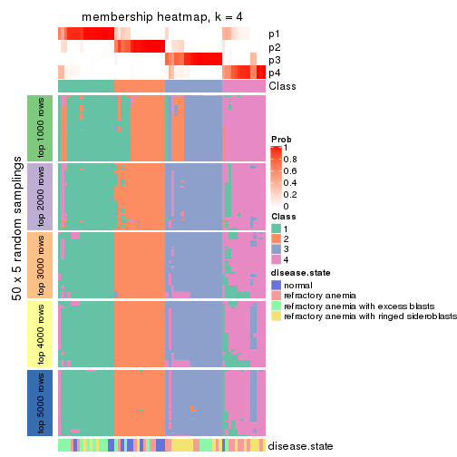
membership_heatmap(res, k = 5)
membership_heatmap(res, k = 6)
As soon as we have had the classes for columns, we can look for signatures which are significantly different between classes which can be candidate marks for certain classes. Following are the heatmaps for signatures.
Signature heatmaps where rows are scaled:
get_signatures(res, k = 2)
get_signatures(res, k = 3)
get_signatures(res, k = 4)
get_signatures(res, k = 5)
get_signatures(res, k = 6)
Signature heatmaps where rows are not scaled:
get_signatures(res, k = 2, scale_rows = FALSE)
get_signatures(res, k = 3, scale_rows = FALSE)
get_signatures(res, k = 4, scale_rows = FALSE)
get_signatures(res, k = 5, scale_rows = FALSE)
get_signatures(res, k = 6, scale_rows = FALSE)
Compare the overlap of signatures from different k:
compare_signatures(res)
get_signature() returns a data frame invisibly. TO get the list of signatures, the function
call should be assigned to a variable explicitly. In following code, if plot argument is set
to FALSE, no heatmap is plotted while only the differential analysis is performed.
# code only for demonstration
tb = get_signature(res, k = ..., plot = FALSE)
An example of the output of tb is:
#> which_row fdr mean_1 mean_2 scaled_mean_1 scaled_mean_2 km
#> 1 38 0.042760348 8.373488 9.131774 -0.5533452 0.5164555 1
#> 2 40 0.018707592 7.106213 8.469186 -0.6173731 0.5762149 1
#> 3 55 0.019134737 10.221463 11.207825 -0.6159697 0.5749050 1
#> 4 59 0.006059896 5.921854 7.869574 -0.6899429 0.6439467 1
#> 5 60 0.018055526 8.928898 10.211722 -0.6204761 0.5791110 1
#> 6 98 0.009384629 15.714769 14.887706 0.6635654 -0.6193277 2
...
The columns in tb are:
which_row: row indices corresponding to the input matrix.fdr: FDR for the differential test. mean_x: The mean value in group x.scaled_mean_x: The mean value in group x after rows are scaled.km: Row groups if k-means clustering is applied to rows.UMAP plot which shows how samples are separated.
dimension_reduction(res, k = 2, method = "UMAP")
dimension_reduction(res, k = 3, method = "UMAP")
dimension_reduction(res, k = 4, method = "UMAP")
dimension_reduction(res, k = 5, method = "UMAP")
dimension_reduction(res, k = 6, method = "UMAP")
Following heatmap shows how subgroups are split when increasing k:
collect_classes(res)
Test correlation between subgroups and known annotations. If the known annotation is numeric, one-way ANOVA test is applied, and if the known annotation is discrete, chi-squared contingency table test is applied.
test_to_known_factors(res)
#> n disease.state(p) k
#> MAD:skmeans 65 0.001227 2
#> MAD:skmeans 64 0.000536 3
#> MAD:skmeans 57 0.001145 4
#> MAD:skmeans 57 0.000296 5
#> MAD:skmeans 49 0.000180 6
If matrix rows can be associated to genes, consider to use GO_Enrichment(res,
...) to perform function enrichment for the signature genes.
The object with results only for a single top-value method and a single partition method can be extracted as:
res = res_list["MAD", "pam"]
# you can also extract it by
# res = res_list["MAD:pam"]
A summary of res and all the functions that can be applied to it:
res
#> A 'ConsensusPartition' object with k = 2, 3, 4, 5, 6.
#> On a matrix with 51941 rows and 66 columns.
#> Top rows (1000, 2000, 3000, 4000, 5000) are extracted by 'MAD' method.
#> Subgroups are detected by 'pam' method.
#> Performed in total 1250 partitions by row resampling.
#> Best k for subgroups seems to be 5.
#>
#> Following methods can be applied to this 'ConsensusPartition' object:
#> [1] "cola_report" "collect_classes" "collect_plots"
#> [4] "collect_stats" "colnames" "compare_signatures"
#> [7] "consensus_heatmap" "dimension_reduction" "functional_enrichment"
#> [10] "get_anno_col" "get_anno" "get_classes"
#> [13] "get_consensus" "get_matrix" "get_membership"
#> [16] "get_param" "get_signatures" "get_stats"
#> [19] "is_best_k" "is_stable_k" "membership_heatmap"
#> [22] "ncol" "nrow" "plot_ecdf"
#> [25] "rownames" "select_partition_number" "show"
#> [28] "suggest_best_k" "test_to_known_factors"
collect_plots() function collects all the plots made from res for all k (number of partitions)
into one single page to provide an easy and fast comparison between different k.
collect_plots(res)
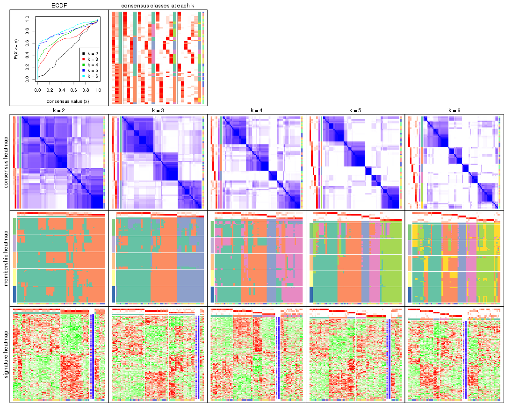
The plots are:
k and the heatmap of
predicted classes for each k.k.k.k.All the plots in panels can be made by individual functions and they are plotted later in this section.
select_partition_number() produces several plots showing different
statistics for choosing “optimized” k. There are following statistics:
k;k, the area increased is defined as \(A_k - A_{k-1}\).The detailed explanations of these statistics can be found in the cola vignette.
Generally speaking, lower PAC score, higher mean silhouette score or higher
concordance corresponds to better partition. Rand index and Jaccard index
measure how similar the current partition is compared to partition with k-1.
If they are too similar, we won't accept k is better than k-1.
select_partition_number(res)
The numeric values for all these statistics can be obtained by get_stats().
get_stats(res)
#> k 1-PAC mean_silhouette concordance area_increased Rand Jaccard
#> 2 2 0.169 0.608 0.807 0.4845 0.500 0.500
#> 3 3 0.437 0.755 0.852 0.3484 0.651 0.407
#> 4 4 0.533 0.628 0.798 0.1190 0.757 0.420
#> 5 5 0.721 0.749 0.875 0.0706 0.834 0.489
#> 6 6 0.713 0.530 0.778 0.0434 0.905 0.631
suggest_best_k() suggests the best \(k\) based on these statistics. The rules are as follows:
NA.suggest_best_k(res)
#> [1] 5
Following shows the table of the partitions (You need to click the show/hide
code output link to see it). The membership matrix (columns with name p*)
is inferred by
clue::cl_consensus()
function with the SE method. Basically the value in the membership matrix
represents the probability to belong to a certain group. The finall class
label for an item is determined with the group with highest probability it
belongs to.
In get_classes() function, the entropy is calculated from the membership
matrix and the silhouette score is calculated from the consensus matrix.
cbind(get_classes(res, k = 2), get_membership(res, k = 2))
#> class entropy silhouette p1 p2
#> GSM103343 2 0.0000 0.744 0.000 1.000
#> GSM103344 2 0.0000 0.744 0.000 1.000
#> GSM103345 2 0.0000 0.744 0.000 1.000
#> GSM103364 2 0.0000 0.744 0.000 1.000
#> GSM103365 2 0.6343 0.642 0.160 0.840
#> GSM103366 2 0.6343 0.669 0.160 0.840
#> GSM103369 2 0.0672 0.742 0.008 0.992
#> GSM103370 2 0.5519 0.677 0.128 0.872
#> GSM103388 1 0.8763 0.668 0.704 0.296
#> GSM103389 2 0.9970 -0.126 0.468 0.532
#> GSM103390 2 0.9732 0.071 0.404 0.596
#> GSM103347 1 0.0000 0.710 1.000 0.000
#> GSM103349 2 0.9996 0.243 0.488 0.512
#> GSM103354 1 0.0672 0.707 0.992 0.008
#> GSM103355 2 0.0000 0.744 0.000 1.000
#> GSM103357 2 0.6712 0.640 0.176 0.824
#> GSM103358 2 0.0000 0.744 0.000 1.000
#> GSM103361 2 0.0000 0.744 0.000 1.000
#> GSM103363 2 0.8763 0.524 0.296 0.704
#> GSM103367 2 0.6531 0.656 0.168 0.832
#> GSM103381 1 0.8763 0.668 0.704 0.296
#> GSM103382 1 0.7219 0.718 0.800 0.200
#> GSM103384 1 0.8763 0.668 0.704 0.296
#> GSM103391 1 0.0000 0.710 1.000 0.000
#> GSM103394 1 0.0000 0.710 1.000 0.000
#> GSM103399 1 0.9323 0.570 0.652 0.348
#> GSM103401 1 0.0672 0.707 0.992 0.008
#> GSM103404 1 0.8386 0.593 0.732 0.268
#> GSM103408 1 0.8763 0.668 0.704 0.296
#> GSM103348 1 0.0938 0.706 0.988 0.012
#> GSM103351 2 0.8443 0.608 0.272 0.728
#> GSM103356 2 0.8763 0.524 0.296 0.704
#> GSM103368 1 0.7056 0.539 0.808 0.192
#> GSM103372 2 0.8499 0.448 0.276 0.724
#> GSM103375 1 0.8555 0.599 0.720 0.280
#> GSM103376 1 0.4431 0.659 0.908 0.092
#> GSM103379 1 0.9833 0.502 0.576 0.424
#> GSM103385 1 0.5737 0.730 0.864 0.136
#> GSM103387 1 0.5842 0.730 0.860 0.140
#> GSM103392 1 0.8763 0.668 0.704 0.296
#> GSM103393 1 0.7056 0.539 0.808 0.192
#> GSM103395 1 0.0672 0.707 0.992 0.008
#> GSM103396 1 0.8763 0.668 0.704 0.296
#> GSM103398 1 0.5737 0.730 0.864 0.136
#> GSM103402 1 0.5294 0.733 0.880 0.120
#> GSM103403 1 0.0000 0.710 1.000 0.000
#> GSM103405 1 0.8763 0.674 0.704 0.296
#> GSM103407 1 0.5519 0.732 0.872 0.128
#> GSM103346 1 0.5629 0.618 0.868 0.132
#> GSM103350 2 0.9983 0.350 0.476 0.524
#> GSM103352 1 0.9044 0.313 0.680 0.320
#> GSM103353 1 0.2778 0.684 0.952 0.048
#> GSM103359 2 0.9129 0.549 0.328 0.672
#> GSM103360 2 0.0376 0.743 0.004 0.996
#> GSM103362 2 0.0000 0.744 0.000 1.000
#> GSM103371 2 0.6343 0.655 0.160 0.840
#> GSM103373 2 0.9963 -0.160 0.464 0.536
#> GSM103374 2 0.6048 0.664 0.148 0.852
#> GSM103377 1 0.8813 0.552 0.700 0.300
#> GSM103378 2 0.8861 0.400 0.304 0.696
#> GSM103380 1 0.8909 0.658 0.692 0.308
#> GSM103383 1 0.8763 0.668 0.704 0.296
#> GSM103386 1 0.8763 0.668 0.704 0.296
#> GSM103397 1 0.9686 0.552 0.604 0.396
#> GSM103400 1 0.9815 0.510 0.580 0.420
#> GSM103406 2 0.4562 0.704 0.096 0.904
cbind(get_classes(res, k = 3), get_membership(res, k = 3))
#> class entropy silhouette p1 p2 p3
#> GSM103343 2 0.0237 0.843 0.004 0.996 0.000
#> GSM103344 2 0.0000 0.844 0.000 1.000 0.000
#> GSM103345 2 0.0000 0.844 0.000 1.000 0.000
#> GSM103364 2 0.2959 0.817 0.100 0.900 0.000
#> GSM103365 2 0.5178 0.697 0.256 0.744 0.000
#> GSM103366 2 0.3340 0.755 0.120 0.880 0.000
#> GSM103369 1 0.5835 0.587 0.660 0.340 0.000
#> GSM103370 1 0.4178 0.751 0.828 0.172 0.000
#> GSM103388 1 0.0000 0.848 1.000 0.000 0.000
#> GSM103389 1 0.4062 0.759 0.836 0.164 0.000
#> GSM103390 1 0.4531 0.771 0.824 0.168 0.008
#> GSM103347 3 0.5327 0.759 0.272 0.000 0.728
#> GSM103349 2 0.7519 0.263 0.044 0.568 0.388
#> GSM103354 3 0.0000 0.784 0.000 0.000 1.000
#> GSM103355 2 0.0237 0.843 0.004 0.996 0.000
#> GSM103357 2 0.0000 0.844 0.000 1.000 0.000
#> GSM103358 2 0.0000 0.844 0.000 1.000 0.000
#> GSM103361 2 0.1163 0.840 0.028 0.972 0.000
#> GSM103363 2 0.0000 0.844 0.000 1.000 0.000
#> GSM103367 2 0.7972 0.670 0.240 0.644 0.116
#> GSM103381 1 0.0000 0.848 1.000 0.000 0.000
#> GSM103382 1 0.3272 0.807 0.892 0.004 0.104
#> GSM103384 1 0.1529 0.842 0.960 0.000 0.040
#> GSM103391 3 0.5365 0.760 0.252 0.004 0.744
#> GSM103394 3 0.6047 0.708 0.312 0.008 0.680
#> GSM103399 1 0.3425 0.801 0.884 0.004 0.112
#> GSM103401 3 0.4062 0.790 0.164 0.000 0.836
#> GSM103404 1 0.2261 0.832 0.932 0.000 0.068
#> GSM103408 1 0.2096 0.838 0.944 0.004 0.052
#> GSM103348 3 0.0000 0.784 0.000 0.000 1.000
#> GSM103351 2 0.6283 0.723 0.176 0.760 0.064
#> GSM103356 2 0.0000 0.844 0.000 1.000 0.000
#> GSM103368 3 0.6589 0.628 0.032 0.280 0.688
#> GSM103372 1 0.9840 0.183 0.416 0.320 0.264
#> GSM103375 3 0.6416 0.652 0.032 0.260 0.708
#> GSM103376 3 0.7388 0.730 0.160 0.136 0.704
#> GSM103379 1 0.0237 0.848 0.996 0.004 0.000
#> GSM103385 3 0.5254 0.714 0.264 0.000 0.736
#> GSM103387 1 0.3500 0.796 0.880 0.004 0.116
#> GSM103392 1 0.0000 0.848 1.000 0.000 0.000
#> GSM103393 3 0.5874 0.701 0.032 0.208 0.760
#> GSM103395 3 0.0000 0.784 0.000 0.000 1.000
#> GSM103396 1 0.1753 0.840 0.952 0.000 0.048
#> GSM103398 3 0.6008 0.685 0.332 0.004 0.664
#> GSM103402 3 0.5982 0.690 0.328 0.004 0.668
#> GSM103403 3 0.5541 0.760 0.252 0.008 0.740
#> GSM103405 1 0.3272 0.807 0.892 0.004 0.104
#> GSM103407 3 0.7930 0.747 0.172 0.164 0.664
#> GSM103346 3 0.2356 0.800 0.072 0.000 0.928
#> GSM103350 3 0.3769 0.775 0.104 0.016 0.880
#> GSM103352 3 0.3532 0.798 0.108 0.008 0.884
#> GSM103353 3 0.0000 0.784 0.000 0.000 1.000
#> GSM103359 2 0.7091 0.639 0.248 0.688 0.064
#> GSM103360 2 0.2066 0.832 0.060 0.940 0.000
#> GSM103362 2 0.0000 0.844 0.000 1.000 0.000
#> GSM103371 1 0.4291 0.748 0.820 0.180 0.000
#> GSM103373 1 0.4452 0.763 0.808 0.192 0.000
#> GSM103374 1 0.4931 0.764 0.828 0.140 0.032
#> GSM103377 1 0.6208 0.701 0.752 0.200 0.048
#> GSM103378 1 0.3879 0.768 0.848 0.152 0.000
#> GSM103380 1 0.0000 0.848 1.000 0.000 0.000
#> GSM103383 1 0.0000 0.848 1.000 0.000 0.000
#> GSM103386 1 0.1753 0.840 0.952 0.000 0.048
#> GSM103397 2 0.7624 0.415 0.392 0.560 0.048
#> GSM103400 1 0.1753 0.840 0.952 0.000 0.048
#> GSM103406 2 0.5431 0.656 0.284 0.716 0.000
cbind(get_classes(res, k = 4), get_membership(res, k = 4))
#> class entropy silhouette p1 p2 p3 p4
#> GSM103343 2 0.0000 0.7771 0.000 1.000 0.000 0.000
#> GSM103344 2 0.0000 0.7771 0.000 1.000 0.000 0.000
#> GSM103345 2 0.0000 0.7771 0.000 1.000 0.000 0.000
#> GSM103364 2 0.4277 0.5860 0.280 0.720 0.000 0.000
#> GSM103365 2 0.5546 0.5408 0.292 0.664 0.000 0.044
#> GSM103366 2 0.5188 0.5626 0.096 0.756 0.000 0.148
#> GSM103369 2 0.5427 0.6257 0.164 0.736 0.000 0.100
#> GSM103370 1 0.2675 0.7639 0.892 0.100 0.000 0.008
#> GSM103388 1 0.0592 0.7718 0.984 0.000 0.000 0.016
#> GSM103389 1 0.2675 0.7639 0.892 0.100 0.000 0.008
#> GSM103390 4 0.7283 0.0338 0.420 0.148 0.000 0.432
#> GSM103347 1 0.5969 0.2260 0.564 0.000 0.044 0.392
#> GSM103349 2 0.5681 0.3895 0.016 0.580 0.008 0.396
#> GSM103354 3 0.1118 0.9665 0.000 0.000 0.964 0.036
#> GSM103355 2 0.0000 0.7771 0.000 1.000 0.000 0.000
#> GSM103357 2 0.2281 0.7309 0.000 0.904 0.000 0.096
#> GSM103358 2 0.0000 0.7771 0.000 1.000 0.000 0.000
#> GSM103361 2 0.1302 0.7684 0.044 0.956 0.000 0.000
#> GSM103363 2 0.4991 0.3238 0.004 0.608 0.000 0.388
#> GSM103367 1 0.4283 0.7197 0.816 0.144 0.032 0.008
#> GSM103381 1 0.0469 0.7732 0.988 0.000 0.000 0.012
#> GSM103382 4 0.3219 0.6913 0.164 0.000 0.000 0.836
#> GSM103384 1 0.2921 0.6838 0.860 0.000 0.000 0.140
#> GSM103391 4 0.0336 0.6666 0.000 0.000 0.008 0.992
#> GSM103394 4 0.2281 0.7033 0.096 0.000 0.000 0.904
#> GSM103399 4 0.4679 0.4383 0.352 0.000 0.000 0.648
#> GSM103401 4 0.6764 0.1576 0.096 0.000 0.404 0.500
#> GSM103404 4 0.5853 0.4672 0.316 0.004 0.044 0.636
#> GSM103408 4 0.3486 0.6803 0.188 0.000 0.000 0.812
#> GSM103348 3 0.1474 0.9567 0.000 0.000 0.948 0.052
#> GSM103351 2 0.6277 0.5666 0.060 0.704 0.044 0.192
#> GSM103356 2 0.2466 0.7287 0.004 0.900 0.000 0.096
#> GSM103368 4 0.4781 0.3146 0.004 0.336 0.000 0.660
#> GSM103372 1 0.6425 0.4267 0.604 0.300 0.000 0.096
#> GSM103375 4 0.5901 0.3676 0.068 0.280 0.000 0.652
#> GSM103376 1 0.6760 0.6010 0.668 0.124 0.028 0.180
#> GSM103379 1 0.1396 0.7789 0.960 0.004 0.032 0.004
#> GSM103385 1 0.6068 0.0367 0.508 0.000 0.044 0.448
#> GSM103387 4 0.3219 0.6912 0.164 0.000 0.000 0.836
#> GSM103392 1 0.1209 0.7779 0.964 0.000 0.032 0.004
#> GSM103393 4 0.4535 0.3743 0.004 0.292 0.000 0.704
#> GSM103395 3 0.1022 0.9683 0.000 0.000 0.968 0.032
#> GSM103396 1 0.4617 0.5830 0.764 0.000 0.032 0.204
#> GSM103398 4 0.2281 0.7033 0.096 0.000 0.000 0.904
#> GSM103402 4 0.2281 0.7033 0.096 0.000 0.000 0.904
#> GSM103403 4 0.2611 0.7018 0.096 0.000 0.008 0.896
#> GSM103405 4 0.3074 0.6938 0.152 0.000 0.000 0.848
#> GSM103407 4 0.2741 0.7030 0.096 0.012 0.000 0.892
#> GSM103346 3 0.0000 0.9451 0.000 0.000 1.000 0.000
#> GSM103350 3 0.2335 0.8803 0.060 0.000 0.920 0.020
#> GSM103352 3 0.1022 0.9683 0.000 0.000 0.968 0.032
#> GSM103353 3 0.1022 0.9683 0.000 0.000 0.968 0.032
#> GSM103359 2 0.6967 0.4730 0.080 0.640 0.044 0.236
#> GSM103360 2 0.3149 0.7400 0.088 0.880 0.032 0.000
#> GSM103362 2 0.0000 0.7771 0.000 1.000 0.000 0.000
#> GSM103371 1 0.2737 0.7626 0.888 0.104 0.000 0.008
#> GSM103373 1 0.4197 0.6863 0.808 0.036 0.000 0.156
#> GSM103374 1 0.2675 0.7637 0.892 0.100 0.008 0.000
#> GSM103377 4 0.7734 0.1697 0.344 0.236 0.000 0.420
#> GSM103378 1 0.2675 0.7639 0.892 0.100 0.000 0.008
#> GSM103380 1 0.1209 0.7779 0.964 0.000 0.032 0.004
#> GSM103383 1 0.1209 0.7779 0.964 0.000 0.032 0.004
#> GSM103386 1 0.4833 0.5476 0.740 0.000 0.032 0.228
#> GSM103397 4 0.8282 0.1831 0.152 0.344 0.044 0.460
#> GSM103400 4 0.4933 0.3448 0.432 0.000 0.000 0.568
#> GSM103406 2 0.5220 0.3194 0.424 0.568 0.000 0.008
cbind(get_classes(res, k = 5), get_membership(res, k = 5))
#> class entropy silhouette p1 p2 p3 p4 p5
#> GSM103343 2 0.0000 0.809 0.000 1.000 0.000 0.000 0.000
#> GSM103344 2 0.0000 0.809 0.000 1.000 0.000 0.000 0.000
#> GSM103345 2 0.0000 0.809 0.000 1.000 0.000 0.000 0.000
#> GSM103364 2 0.4182 0.489 0.400 0.600 0.000 0.000 0.000
#> GSM103365 2 0.5010 0.477 0.392 0.572 0.000 0.000 0.036
#> GSM103366 2 0.0703 0.800 0.000 0.976 0.000 0.000 0.024
#> GSM103369 1 0.4138 0.456 0.616 0.384 0.000 0.000 0.000
#> GSM103370 1 0.0290 0.813 0.992 0.008 0.000 0.000 0.000
#> GSM103388 1 0.0000 0.816 1.000 0.000 0.000 0.000 0.000
#> GSM103389 1 0.0000 0.816 1.000 0.000 0.000 0.000 0.000
#> GSM103390 1 0.5285 0.708 0.732 0.072 0.000 0.052 0.144
#> GSM103347 5 0.3132 0.775 0.008 0.000 0.000 0.172 0.820
#> GSM103349 2 0.4583 0.596 0.000 0.704 0.004 0.036 0.256
#> GSM103354 3 0.0000 0.946 0.000 0.000 1.000 0.000 0.000
#> GSM103355 2 0.0000 0.809 0.000 1.000 0.000 0.000 0.000
#> GSM103357 2 0.0000 0.809 0.000 1.000 0.000 0.000 0.000
#> GSM103358 2 0.0000 0.809 0.000 1.000 0.000 0.000 0.000
#> GSM103361 2 0.1043 0.797 0.040 0.960 0.000 0.000 0.000
#> GSM103363 2 0.0880 0.797 0.000 0.968 0.000 0.000 0.032
#> GSM103367 4 0.0000 0.818 0.000 0.000 0.000 1.000 0.000
#> GSM103381 1 0.0000 0.816 1.000 0.000 0.000 0.000 0.000
#> GSM103382 1 0.4294 0.253 0.532 0.000 0.000 0.000 0.468
#> GSM103384 1 0.2329 0.770 0.876 0.000 0.000 0.000 0.124
#> GSM103391 5 0.0000 0.876 0.000 0.000 0.000 0.000 1.000
#> GSM103394 5 0.0000 0.876 0.000 0.000 0.000 0.000 1.000
#> GSM103399 5 0.0880 0.865 0.032 0.000 0.000 0.000 0.968
#> GSM103401 5 0.3039 0.729 0.000 0.000 0.192 0.000 0.808
#> GSM103404 5 0.1012 0.872 0.012 0.000 0.000 0.020 0.968
#> GSM103408 5 0.0609 0.874 0.020 0.000 0.000 0.000 0.980
#> GSM103348 3 0.3534 0.649 0.000 0.000 0.744 0.256 0.000
#> GSM103351 2 0.5790 0.521 0.000 0.616 0.000 0.200 0.184
#> GSM103356 2 0.0290 0.806 0.000 0.992 0.000 0.008 0.000
#> GSM103368 4 0.3183 0.816 0.000 0.156 0.000 0.828 0.016
#> GSM103372 4 0.2852 0.810 0.000 0.172 0.000 0.828 0.000
#> GSM103375 4 0.3183 0.816 0.000 0.156 0.000 0.828 0.016
#> GSM103376 4 0.0510 0.827 0.000 0.016 0.000 0.984 0.000
#> GSM103379 1 0.2852 0.765 0.828 0.000 0.000 0.172 0.000
#> GSM103385 4 0.0000 0.818 0.000 0.000 0.000 1.000 0.000
#> GSM103387 1 0.4420 0.274 0.548 0.000 0.000 0.004 0.448
#> GSM103392 1 0.2852 0.765 0.828 0.000 0.000 0.172 0.000
#> GSM103393 4 0.4960 0.679 0.000 0.268 0.000 0.668 0.064
#> GSM103395 3 0.0000 0.946 0.000 0.000 1.000 0.000 0.000
#> GSM103396 5 0.3734 0.767 0.036 0.000 0.000 0.168 0.796
#> GSM103398 5 0.0609 0.874 0.020 0.000 0.000 0.000 0.980
#> GSM103402 5 0.0000 0.876 0.000 0.000 0.000 0.000 1.000
#> GSM103403 5 0.0000 0.876 0.000 0.000 0.000 0.000 1.000
#> GSM103405 5 0.0000 0.876 0.000 0.000 0.000 0.000 1.000
#> GSM103407 5 0.0162 0.875 0.000 0.004 0.000 0.000 0.996
#> GSM103346 3 0.0000 0.946 0.000 0.000 1.000 0.000 0.000
#> GSM103350 4 0.0510 0.818 0.000 0.000 0.016 0.984 0.000
#> GSM103352 3 0.0000 0.946 0.000 0.000 1.000 0.000 0.000
#> GSM103353 3 0.0000 0.946 0.000 0.000 1.000 0.000 0.000
#> GSM103359 2 0.6034 0.451 0.000 0.572 0.000 0.172 0.256
#> GSM103360 2 0.3010 0.697 0.004 0.824 0.000 0.172 0.000
#> GSM103362 2 0.0000 0.809 0.000 1.000 0.000 0.000 0.000
#> GSM103371 1 0.0000 0.816 1.000 0.000 0.000 0.000 0.000
#> GSM103373 1 0.0290 0.814 0.992 0.000 0.000 0.000 0.008
#> GSM103374 1 0.0510 0.815 0.984 0.000 0.000 0.016 0.000
#> GSM103377 1 0.5932 0.609 0.632 0.200 0.000 0.012 0.156
#> GSM103378 1 0.0000 0.816 1.000 0.000 0.000 0.000 0.000
#> GSM103380 1 0.3010 0.764 0.824 0.000 0.000 0.172 0.004
#> GSM103383 1 0.2852 0.765 0.828 0.000 0.000 0.172 0.000
#> GSM103386 5 0.6309 0.127 0.368 0.000 0.000 0.160 0.472
#> GSM103397 5 0.3132 0.775 0.008 0.000 0.000 0.172 0.820
#> GSM103400 5 0.3561 0.600 0.260 0.000 0.000 0.000 0.740
#> GSM103406 2 0.4294 0.362 0.468 0.532 0.000 0.000 0.000
cbind(get_classes(res, k = 6), get_membership(res, k = 6))
#> class entropy silhouette p1 p2 p3 p4 p5 p6
#> GSM103343 2 0.0000 0.7013 0.000 1.000 0.000 0.000 0.000 0.000
#> GSM103344 2 0.0000 0.7013 0.000 1.000 0.000 0.000 0.000 0.000
#> GSM103345 2 0.0000 0.7013 0.000 1.000 0.000 0.000 0.000 0.000
#> GSM103364 1 0.6052 -0.3054 0.380 0.364 0.000 0.000 0.000 0.256
#> GSM103365 1 0.6171 -0.2889 0.388 0.352 0.000 0.000 0.004 0.256
#> GSM103366 2 0.4608 0.5082 0.000 0.680 0.000 0.000 0.220 0.100
#> GSM103369 1 0.3717 0.3744 0.616 0.384 0.000 0.000 0.000 0.000
#> GSM103370 1 0.0000 0.6409 1.000 0.000 0.000 0.000 0.000 0.000
#> GSM103388 1 0.0000 0.6409 1.000 0.000 0.000 0.000 0.000 0.000
#> GSM103389 1 0.0000 0.6409 1.000 0.000 0.000 0.000 0.000 0.000
#> GSM103390 1 0.4844 0.4569 0.620 0.020 0.000 0.040 0.320 0.000
#> GSM103347 6 0.3774 -0.1731 0.000 0.000 0.000 0.000 0.408 0.592
#> GSM103349 2 0.6551 0.1115 0.000 0.456 0.000 0.260 0.036 0.248
#> GSM103354 3 0.0000 0.9177 0.000 0.000 1.000 0.000 0.000 0.000
#> GSM103355 2 0.3151 0.6124 0.000 0.748 0.000 0.000 0.000 0.252
#> GSM103357 2 0.0000 0.7013 0.000 1.000 0.000 0.000 0.000 0.000
#> GSM103358 2 0.3175 0.6085 0.000 0.744 0.000 0.000 0.000 0.256
#> GSM103361 2 0.3606 0.5932 0.016 0.728 0.000 0.000 0.000 0.256
#> GSM103363 2 0.3494 0.4746 0.000 0.736 0.000 0.000 0.252 0.012
#> GSM103367 4 0.3266 0.5195 0.000 0.000 0.000 0.728 0.000 0.272
#> GSM103381 1 0.0000 0.6409 1.000 0.000 0.000 0.000 0.000 0.000
#> GSM103382 1 0.4325 0.2413 0.524 0.000 0.000 0.000 0.456 0.020
#> GSM103384 1 0.1780 0.6214 0.924 0.000 0.000 0.000 0.048 0.028
#> GSM103391 5 0.0000 0.7818 0.000 0.000 0.000 0.000 1.000 0.000
#> GSM103394 5 0.0000 0.7818 0.000 0.000 0.000 0.000 1.000 0.000
#> GSM103399 5 0.2798 0.7248 0.036 0.000 0.000 0.000 0.852 0.112
#> GSM103401 5 0.5029 0.4930 0.000 0.000 0.276 0.000 0.612 0.112
#> GSM103404 5 0.3872 0.5237 0.004 0.000 0.000 0.000 0.604 0.392
#> GSM103408 5 0.2250 0.7619 0.040 0.000 0.000 0.000 0.896 0.064
#> GSM103348 3 0.3634 0.4278 0.000 0.000 0.644 0.356 0.000 0.000
#> GSM103351 6 0.2778 0.2976 0.000 0.168 0.000 0.008 0.000 0.824
#> GSM103356 2 0.2416 0.6006 0.000 0.844 0.000 0.156 0.000 0.000
#> GSM103368 4 0.0547 0.8217 0.000 0.020 0.000 0.980 0.000 0.000
#> GSM103372 4 0.0547 0.8217 0.000 0.020 0.000 0.980 0.000 0.000
#> GSM103375 4 0.0547 0.8217 0.000 0.020 0.000 0.980 0.000 0.000
#> GSM103376 4 0.0000 0.8187 0.000 0.000 0.000 1.000 0.000 0.000
#> GSM103379 1 0.4034 0.4535 0.652 0.000 0.000 0.020 0.000 0.328
#> GSM103385 4 0.0000 0.8187 0.000 0.000 0.000 1.000 0.000 0.000
#> GSM103387 1 0.5936 0.3121 0.532 0.000 0.000 0.052 0.332 0.084
#> GSM103392 1 0.3778 0.4950 0.708 0.000 0.000 0.020 0.000 0.272
#> GSM103393 4 0.4872 0.3689 0.000 0.064 0.000 0.548 0.388 0.000
#> GSM103395 3 0.0000 0.9177 0.000 0.000 1.000 0.000 0.000 0.000
#> GSM103396 5 0.5974 0.2603 0.144 0.000 0.000 0.020 0.500 0.336
#> GSM103398 5 0.1779 0.7704 0.016 0.000 0.000 0.000 0.920 0.064
#> GSM103402 5 0.0146 0.7831 0.000 0.000 0.000 0.000 0.996 0.004
#> GSM103403 5 0.0260 0.7833 0.000 0.000 0.000 0.000 0.992 0.008
#> GSM103405 5 0.2697 0.7374 0.000 0.000 0.000 0.000 0.812 0.188
#> GSM103407 5 0.0000 0.7818 0.000 0.000 0.000 0.000 1.000 0.000
#> GSM103346 3 0.0547 0.9051 0.000 0.000 0.980 0.000 0.000 0.020
#> GSM103350 4 0.3221 0.6435 0.000 0.000 0.000 0.736 0.000 0.264
#> GSM103352 3 0.0000 0.9177 0.000 0.000 1.000 0.000 0.000 0.000
#> GSM103353 3 0.0000 0.9177 0.000 0.000 1.000 0.000 0.000 0.000
#> GSM103359 6 0.4458 0.1586 0.000 0.352 0.000 0.000 0.040 0.608
#> GSM103360 6 0.4841 -0.0407 0.024 0.424 0.000 0.020 0.000 0.532
#> GSM103362 2 0.3151 0.6124 0.000 0.748 0.000 0.000 0.000 0.252
#> GSM103371 1 0.0000 0.6409 1.000 0.000 0.000 0.000 0.000 0.000
#> GSM103373 1 0.0547 0.6394 0.980 0.000 0.000 0.000 0.020 0.000
#> GSM103374 1 0.1610 0.6182 0.916 0.000 0.000 0.000 0.000 0.084
#> GSM103377 1 0.4822 0.4360 0.596 0.072 0.000 0.000 0.332 0.000
#> GSM103378 1 0.0000 0.6409 1.000 0.000 0.000 0.000 0.000 0.000
#> GSM103380 1 0.4170 0.4493 0.648 0.000 0.000 0.020 0.004 0.328
#> GSM103383 1 0.3879 0.4827 0.688 0.000 0.000 0.020 0.000 0.292
#> GSM103386 6 0.6430 -0.0600 0.300 0.000 0.000 0.020 0.256 0.424
#> GSM103397 5 0.4199 0.3951 0.000 0.000 0.000 0.020 0.600 0.380
#> GSM103400 1 0.4807 -0.0989 0.484 0.000 0.000 0.000 0.464 0.052
#> GSM103406 1 0.5870 -0.1091 0.476 0.292 0.000 0.000 0.000 0.232
Heatmaps for the consensus matrix. It visualizes the probability of two samples to be in a same group.
consensus_heatmap(res, k = 2)
consensus_heatmap(res, k = 3)
consensus_heatmap(res, k = 4)
consensus_heatmap(res, k = 5)
consensus_heatmap(res, k = 6)
Heatmaps for the membership of samples in all partitions to see how consistent they are:
membership_heatmap(res, k = 2)
membership_heatmap(res, k = 3)
membership_heatmap(res, k = 4)
membership_heatmap(res, k = 5)
membership_heatmap(res, k = 6)

As soon as we have had the classes for columns, we can look for signatures which are significantly different between classes which can be candidate marks for certain classes. Following are the heatmaps for signatures.
Signature heatmaps where rows are scaled:
get_signatures(res, k = 2)
get_signatures(res, k = 3)
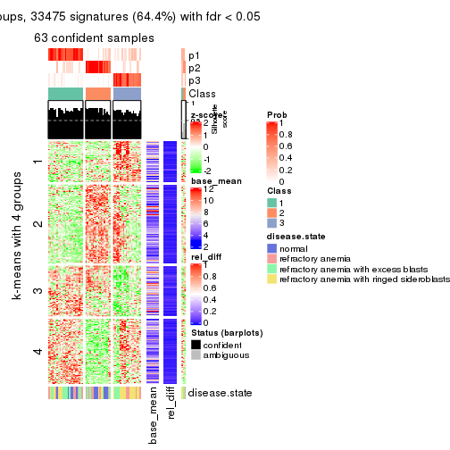
get_signatures(res, k = 4)
get_signatures(res, k = 5)
get_signatures(res, k = 6)
Signature heatmaps where rows are not scaled:
get_signatures(res, k = 2, scale_rows = FALSE)
get_signatures(res, k = 3, scale_rows = FALSE)
get_signatures(res, k = 4, scale_rows = FALSE)
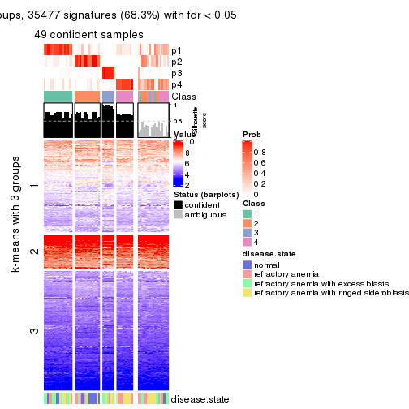
get_signatures(res, k = 5, scale_rows = FALSE)
get_signatures(res, k = 6, scale_rows = FALSE)
Compare the overlap of signatures from different k:
compare_signatures(res)
get_signature() returns a data frame invisibly. TO get the list of signatures, the function
call should be assigned to a variable explicitly. In following code, if plot argument is set
to FALSE, no heatmap is plotted while only the differential analysis is performed.
# code only for demonstration
tb = get_signature(res, k = ..., plot = FALSE)
An example of the output of tb is:
#> which_row fdr mean_1 mean_2 scaled_mean_1 scaled_mean_2 km
#> 1 38 0.042760348 8.373488 9.131774 -0.5533452 0.5164555 1
#> 2 40 0.018707592 7.106213 8.469186 -0.6173731 0.5762149 1
#> 3 55 0.019134737 10.221463 11.207825 -0.6159697 0.5749050 1
#> 4 59 0.006059896 5.921854 7.869574 -0.6899429 0.6439467 1
#> 5 60 0.018055526 8.928898 10.211722 -0.6204761 0.5791110 1
#> 6 98 0.009384629 15.714769 14.887706 0.6635654 -0.6193277 2
...
The columns in tb are:
which_row: row indices corresponding to the input matrix.fdr: FDR for the differential test. mean_x: The mean value in group x.scaled_mean_x: The mean value in group x after rows are scaled.km: Row groups if k-means clustering is applied to rows.UMAP plot which shows how samples are separated.
dimension_reduction(res, k = 2, method = "UMAP")

dimension_reduction(res, k = 3, method = "UMAP")
dimension_reduction(res, k = 4, method = "UMAP")
dimension_reduction(res, k = 5, method = "UMAP")
dimension_reduction(res, k = 6, method = "UMAP")
Following heatmap shows how subgroups are split when increasing k:
collect_classes(res)
Test correlation between subgroups and known annotations. If the known annotation is numeric, one-way ANOVA test is applied, and if the known annotation is discrete, chi-squared contingency table test is applied.
test_to_known_factors(res)
#> n disease.state(p) k
#> MAD:pam 58 0.00136 2
#> MAD:pam 63 0.01818 3
#> MAD:pam 49 0.00730 4
#> MAD:pam 58 0.00759 5
#> MAD:pam 41 0.00419 6
If matrix rows can be associated to genes, consider to use GO_Enrichment(res,
...) to perform function enrichment for the signature genes.
The object with results only for a single top-value method and a single partition method can be extracted as:
res = res_list["MAD", "mclust"]
# you can also extract it by
# res = res_list["MAD:mclust"]
A summary of res and all the functions that can be applied to it:
res
#> A 'ConsensusPartition' object with k = 2, 3, 4, 5, 6.
#> On a matrix with 51941 rows and 66 columns.
#> Top rows (1000, 2000, 3000, 4000, 5000) are extracted by 'MAD' method.
#> Subgroups are detected by 'mclust' method.
#> Performed in total 1250 partitions by row resampling.
#> Best k for subgroups seems to be 4.
#>
#> Following methods can be applied to this 'ConsensusPartition' object:
#> [1] "cola_report" "collect_classes" "collect_plots"
#> [4] "collect_stats" "colnames" "compare_signatures"
#> [7] "consensus_heatmap" "dimension_reduction" "functional_enrichment"
#> [10] "get_anno_col" "get_anno" "get_classes"
#> [13] "get_consensus" "get_matrix" "get_membership"
#> [16] "get_param" "get_signatures" "get_stats"
#> [19] "is_best_k" "is_stable_k" "membership_heatmap"
#> [22] "ncol" "nrow" "plot_ecdf"
#> [25] "rownames" "select_partition_number" "show"
#> [28] "suggest_best_k" "test_to_known_factors"
collect_plots() function collects all the plots made from res for all k (number of partitions)
into one single page to provide an easy and fast comparison between different k.
collect_plots(res)
The plots are:
k and the heatmap of
predicted classes for each k.k.k.k.All the plots in panels can be made by individual functions and they are plotted later in this section.
select_partition_number() produces several plots showing different
statistics for choosing “optimized” k. There are following statistics:
k;k, the area increased is defined as \(A_k - A_{k-1}\).The detailed explanations of these statistics can be found in the cola vignette.
Generally speaking, lower PAC score, higher mean silhouette score or higher
concordance corresponds to better partition. Rand index and Jaccard index
measure how similar the current partition is compared to partition with k-1.
If they are too similar, we won't accept k is better than k-1.
select_partition_number(res)
The numeric values for all these statistics can be obtained by get_stats().
get_stats(res)
#> k 1-PAC mean_silhouette concordance area_increased Rand Jaccard
#> 2 2 0.271 0.680 0.836 0.2689 0.807 0.807
#> 3 3 0.285 0.450 0.748 1.2328 0.481 0.380
#> 4 4 0.644 0.646 0.818 0.1858 0.848 0.618
#> 5 5 0.653 0.613 0.794 0.1156 0.893 0.643
#> 6 6 0.678 0.531 0.740 0.0317 0.972 0.857
suggest_best_k() suggests the best \(k\) based on these statistics. The rules are as follows:
NA.suggest_best_k(res)
#> [1] 4
Following shows the table of the partitions (You need to click the show/hide
code output link to see it). The membership matrix (columns with name p*)
is inferred by
clue::cl_consensus()
function with the SE method. Basically the value in the membership matrix
represents the probability to belong to a certain group. The finall class
label for an item is determined with the group with highest probability it
belongs to.
In get_classes() function, the entropy is calculated from the membership
matrix and the silhouette score is calculated from the consensus matrix.
cbind(get_classes(res, k = 2), get_membership(res, k = 2))
#> class entropy silhouette p1 p2
#> GSM103343 1 0.0376 0.513 0.996 0.004
#> GSM103344 1 0.0376 0.513 0.996 0.004
#> GSM103345 1 0.0376 0.513 0.996 0.004
#> GSM103364 1 0.0376 0.517 0.996 0.004
#> GSM103365 1 0.8386 0.611 0.732 0.268
#> GSM103366 1 0.0000 0.519 1.000 0.000
#> GSM103369 1 0.5629 0.639 0.868 0.132
#> GSM103370 1 0.9977 0.631 0.528 0.472
#> GSM103388 1 0.9427 0.717 0.640 0.360
#> GSM103389 1 0.9977 0.631 0.528 0.472
#> GSM103390 1 0.8608 0.751 0.716 0.284
#> GSM103347 1 0.8909 0.732 0.692 0.308
#> GSM103349 1 0.8661 0.750 0.712 0.288
#> GSM103354 2 0.7056 0.916 0.192 0.808
#> GSM103355 1 0.0000 0.519 1.000 0.000
#> GSM103357 1 0.0000 0.519 1.000 0.000
#> GSM103358 1 0.0000 0.519 1.000 0.000
#> GSM103361 1 0.3114 0.482 0.944 0.056
#> GSM103363 1 0.0376 0.514 0.996 0.004
#> GSM103367 1 0.8608 0.751 0.716 0.284
#> GSM103381 1 0.9977 0.631 0.528 0.472
#> GSM103382 1 0.9427 0.717 0.640 0.360
#> GSM103384 1 0.9977 0.631 0.528 0.472
#> GSM103391 1 0.8713 0.747 0.708 0.292
#> GSM103394 1 0.8661 0.750 0.712 0.288
#> GSM103399 1 0.8608 0.751 0.716 0.284
#> GSM103401 2 0.8661 0.825 0.288 0.712
#> GSM103404 1 0.8608 0.751 0.716 0.284
#> GSM103408 1 0.8608 0.751 0.716 0.284
#> GSM103348 2 0.7056 0.916 0.192 0.808
#> GSM103351 1 0.8608 0.751 0.716 0.284
#> GSM103356 1 0.0000 0.519 1.000 0.000
#> GSM103368 1 0.8608 0.751 0.716 0.284
#> GSM103372 1 0.8608 0.751 0.716 0.284
#> GSM103375 1 0.8608 0.751 0.716 0.284
#> GSM103376 1 0.9358 0.673 0.648 0.352
#> GSM103379 1 0.9686 0.703 0.604 0.396
#> GSM103385 1 0.9552 0.626 0.624 0.376
#> GSM103387 1 0.8608 0.751 0.716 0.284
#> GSM103392 1 0.9977 0.631 0.528 0.472
#> GSM103393 1 0.8661 0.750 0.712 0.288
#> GSM103395 2 0.7056 0.916 0.192 0.808
#> GSM103396 1 0.9393 0.720 0.644 0.356
#> GSM103398 1 0.8608 0.751 0.716 0.284
#> GSM103402 1 0.8661 0.750 0.712 0.288
#> GSM103403 1 0.9775 0.540 0.588 0.412
#> GSM103405 1 0.8608 0.751 0.716 0.284
#> GSM103407 1 0.8608 0.751 0.716 0.284
#> GSM103346 2 0.8386 0.869 0.268 0.732
#> GSM103350 1 1.0000 0.190 0.504 0.496
#> GSM103352 2 0.8327 0.875 0.264 0.736
#> GSM103353 2 0.7056 0.916 0.192 0.808
#> GSM103359 1 0.9661 0.706 0.608 0.392
#> GSM103360 1 0.5059 0.427 0.888 0.112
#> GSM103362 1 0.0000 0.519 1.000 0.000
#> GSM103371 1 0.9710 0.699 0.600 0.400
#> GSM103373 1 0.9427 0.717 0.640 0.360
#> GSM103374 1 0.8713 0.751 0.708 0.292
#> GSM103377 1 0.9427 0.717 0.640 0.360
#> GSM103378 1 0.9686 0.703 0.604 0.396
#> GSM103380 1 0.9686 0.703 0.604 0.396
#> GSM103383 1 0.9970 0.635 0.532 0.468
#> GSM103386 1 0.9686 0.703 0.604 0.396
#> GSM103397 1 0.9686 0.703 0.604 0.396
#> GSM103400 1 0.8608 0.751 0.716 0.284
#> GSM103406 1 0.9686 0.703 0.604 0.396
cbind(get_classes(res, k = 3), get_membership(res, k = 3))
#> class entropy silhouette p1 p2 p3
#> GSM103343 2 0.0237 0.6154 0.004 0.996 0.000
#> GSM103344 2 0.0237 0.6154 0.004 0.996 0.000
#> GSM103345 2 0.0237 0.6154 0.004 0.996 0.000
#> GSM103364 2 0.5988 0.0915 0.368 0.632 0.000
#> GSM103365 1 0.7622 0.3731 0.608 0.332 0.060
#> GSM103366 2 0.0592 0.6137 0.012 0.988 0.000
#> GSM103369 2 0.5072 0.4373 0.012 0.792 0.196
#> GSM103370 1 0.0000 0.6346 1.000 0.000 0.000
#> GSM103388 1 0.2448 0.6432 0.924 0.076 0.000
#> GSM103389 1 0.0000 0.6346 1.000 0.000 0.000
#> GSM103390 2 0.9456 0.0149 0.320 0.480 0.200
#> GSM103347 3 0.4146 0.6906 0.044 0.080 0.876
#> GSM103349 3 0.7015 0.3610 0.024 0.392 0.584
#> GSM103354 3 0.0000 0.6767 0.000 0.000 1.000
#> GSM103355 2 0.0237 0.6154 0.004 0.996 0.000
#> GSM103357 2 0.0237 0.6154 0.004 0.996 0.000
#> GSM103358 2 0.2066 0.5915 0.060 0.940 0.000
#> GSM103361 2 0.5859 0.1482 0.344 0.656 0.000
#> GSM103363 2 0.0237 0.6154 0.004 0.996 0.000
#> GSM103367 1 0.9719 0.0853 0.416 0.224 0.360
#> GSM103381 1 0.0000 0.6346 1.000 0.000 0.000
#> GSM103382 1 0.6126 0.2380 0.600 0.400 0.000
#> GSM103384 1 0.1860 0.6453 0.948 0.052 0.000
#> GSM103391 3 0.7759 0.1150 0.048 0.472 0.480
#> GSM103394 1 0.9602 0.1640 0.404 0.396 0.200
#> GSM103399 1 0.9602 0.1640 0.404 0.396 0.200
#> GSM103401 3 0.2496 0.6972 0.004 0.068 0.928
#> GSM103404 1 0.7022 0.6166 0.700 0.068 0.232
#> GSM103408 1 0.8568 0.5638 0.608 0.192 0.200
#> GSM103348 3 0.0000 0.6767 0.000 0.000 1.000
#> GSM103351 3 0.9624 0.2889 0.272 0.256 0.472
#> GSM103356 2 0.3030 0.5586 0.004 0.904 0.092
#> GSM103368 2 0.7755 -0.1597 0.048 0.492 0.460
#> GSM103372 2 0.7759 -0.1892 0.048 0.480 0.472
#> GSM103375 3 0.7759 0.1150 0.048 0.472 0.480
#> GSM103376 3 0.7095 0.5073 0.048 0.292 0.660
#> GSM103379 1 0.4555 0.6572 0.800 0.000 0.200
#> GSM103385 3 0.6171 0.6513 0.080 0.144 0.776
#> GSM103387 2 0.9146 -0.0255 0.148 0.472 0.380
#> GSM103392 1 0.0000 0.6346 1.000 0.000 0.000
#> GSM103393 2 0.7759 -0.1892 0.048 0.480 0.472
#> GSM103395 3 0.0000 0.6767 0.000 0.000 1.000
#> GSM103396 1 0.5787 0.6700 0.796 0.068 0.136
#> GSM103398 1 0.9247 0.4395 0.524 0.276 0.200
#> GSM103402 2 0.9445 0.0402 0.192 0.472 0.336
#> GSM103403 3 0.7636 0.3184 0.048 0.396 0.556
#> GSM103405 1 0.8876 0.5276 0.576 0.220 0.204
#> GSM103407 2 0.8661 0.0687 0.116 0.536 0.348
#> GSM103346 3 0.2496 0.6972 0.004 0.068 0.928
#> GSM103350 3 0.5222 0.6698 0.040 0.144 0.816
#> GSM103352 3 0.0983 0.6843 0.004 0.016 0.980
#> GSM103353 3 0.0000 0.6767 0.000 0.000 1.000
#> GSM103359 1 0.7228 0.4179 0.600 0.036 0.364
#> GSM103360 1 0.6244 0.2136 0.560 0.440 0.000
#> GSM103362 2 0.2448 0.5804 0.076 0.924 0.000
#> GSM103371 1 0.2711 0.6393 0.912 0.088 0.000
#> GSM103373 1 0.6095 0.2568 0.608 0.392 0.000
#> GSM103374 1 0.4555 0.5621 0.800 0.200 0.000
#> GSM103377 1 0.6295 0.0577 0.528 0.472 0.000
#> GSM103378 1 0.4555 0.6572 0.800 0.000 0.200
#> GSM103380 1 0.4555 0.6572 0.800 0.000 0.200
#> GSM103383 1 0.2448 0.6644 0.924 0.000 0.076
#> GSM103386 1 0.4555 0.6572 0.800 0.000 0.200
#> GSM103397 1 0.4555 0.6572 0.800 0.000 0.200
#> GSM103400 1 0.8802 0.5295 0.584 0.216 0.200
#> GSM103406 1 0.4555 0.6572 0.800 0.000 0.200
cbind(get_classes(res, k = 4), get_membership(res, k = 4))
#> class entropy silhouette p1 p2 p3 p4
#> GSM103343 2 0.0188 0.8125 0.004 0.996 0.000 0.000
#> GSM103344 2 0.0188 0.8125 0.004 0.996 0.000 0.000
#> GSM103345 2 0.0188 0.8125 0.004 0.996 0.000 0.000
#> GSM103364 2 0.4843 0.4105 0.396 0.604 0.000 0.000
#> GSM103365 1 0.4855 0.0993 0.600 0.400 0.000 0.000
#> GSM103366 2 0.0000 0.8083 0.000 1.000 0.000 0.000
#> GSM103369 2 0.0188 0.8125 0.004 0.996 0.000 0.000
#> GSM103370 1 0.0000 0.8116 1.000 0.000 0.000 0.000
#> GSM103388 1 0.0188 0.8114 0.996 0.004 0.000 0.000
#> GSM103389 1 0.0000 0.8116 1.000 0.000 0.000 0.000
#> GSM103390 1 0.4985 0.2333 0.532 0.468 0.000 0.000
#> GSM103347 4 0.5989 0.1847 0.024 0.008 0.472 0.496
#> GSM103349 4 0.7511 0.3658 0.000 0.196 0.336 0.468
#> GSM103354 3 0.0188 0.9549 0.000 0.000 0.996 0.004
#> GSM103355 2 0.0188 0.8125 0.004 0.996 0.000 0.000
#> GSM103357 2 0.0188 0.8125 0.004 0.996 0.000 0.000
#> GSM103358 2 0.0336 0.8108 0.008 0.992 0.000 0.000
#> GSM103361 2 0.4804 0.4265 0.384 0.616 0.000 0.000
#> GSM103363 2 0.0188 0.8064 0.000 0.996 0.000 0.004
#> GSM103367 4 0.4978 0.4016 0.384 0.004 0.000 0.612
#> GSM103381 1 0.0000 0.8116 1.000 0.000 0.000 0.000
#> GSM103382 1 0.5339 0.5507 0.600 0.016 0.000 0.384
#> GSM103384 1 0.0188 0.8114 0.996 0.004 0.000 0.000
#> GSM103391 4 0.2796 0.4717 0.092 0.016 0.000 0.892
#> GSM103394 1 0.5339 0.5507 0.600 0.016 0.000 0.384
#> GSM103399 1 0.5428 0.5515 0.600 0.020 0.000 0.380
#> GSM103401 3 0.3105 0.8244 0.000 0.012 0.868 0.120
#> GSM103404 1 0.3695 0.7310 0.828 0.016 0.000 0.156
#> GSM103408 1 0.5428 0.5515 0.600 0.020 0.000 0.380
#> GSM103348 3 0.1211 0.9348 0.000 0.000 0.960 0.040
#> GSM103351 4 0.8632 0.2396 0.340 0.208 0.044 0.408
#> GSM103356 2 0.3726 0.4806 0.000 0.788 0.000 0.212
#> GSM103368 4 0.4843 0.4865 0.000 0.396 0.000 0.604
#> GSM103372 4 0.4978 0.4953 0.004 0.384 0.000 0.612
#> GSM103375 4 0.4978 0.4953 0.004 0.384 0.000 0.612
#> GSM103376 4 0.6942 0.5218 0.008 0.164 0.212 0.616
#> GSM103379 1 0.0000 0.8116 1.000 0.000 0.000 0.000
#> GSM103385 4 0.5259 0.3610 0.008 0.004 0.376 0.612
#> GSM103387 4 0.4983 0.5591 0.024 0.272 0.000 0.704
#> GSM103392 1 0.0000 0.8116 1.000 0.000 0.000 0.000
#> GSM103393 4 0.4830 0.4927 0.000 0.392 0.000 0.608
#> GSM103395 3 0.0817 0.9482 0.000 0.000 0.976 0.024
#> GSM103396 1 0.0188 0.8114 0.996 0.004 0.000 0.000
#> GSM103398 1 0.5403 0.5773 0.628 0.024 0.000 0.348
#> GSM103402 4 0.3969 0.4144 0.180 0.016 0.000 0.804
#> GSM103403 4 0.1584 0.4986 0.000 0.012 0.036 0.952
#> GSM103405 1 0.5339 0.5507 0.600 0.016 0.000 0.384
#> GSM103407 4 0.7450 0.2749 0.216 0.280 0.000 0.504
#> GSM103346 3 0.0336 0.9550 0.000 0.008 0.992 0.000
#> GSM103350 4 0.5085 0.3565 0.008 0.000 0.376 0.616
#> GSM103352 3 0.0336 0.9550 0.000 0.008 0.992 0.000
#> GSM103353 3 0.0000 0.9540 0.000 0.000 1.000 0.000
#> GSM103359 1 0.3801 0.5545 0.780 0.220 0.000 0.000
#> GSM103360 2 0.4941 0.3319 0.436 0.564 0.000 0.000
#> GSM103362 2 0.0707 0.8017 0.020 0.980 0.000 0.000
#> GSM103371 1 0.0188 0.8114 0.996 0.004 0.000 0.000
#> GSM103373 1 0.4164 0.5939 0.736 0.264 0.000 0.000
#> GSM103374 1 0.0188 0.8114 0.996 0.004 0.000 0.000
#> GSM103377 1 0.5138 0.3964 0.600 0.392 0.000 0.008
#> GSM103378 1 0.0188 0.8114 0.996 0.004 0.000 0.000
#> GSM103380 1 0.0000 0.8116 1.000 0.000 0.000 0.000
#> GSM103383 1 0.0000 0.8116 1.000 0.000 0.000 0.000
#> GSM103386 1 0.0188 0.8114 0.996 0.004 0.000 0.000
#> GSM103397 1 0.0000 0.8116 1.000 0.000 0.000 0.000
#> GSM103400 1 0.2300 0.7824 0.920 0.016 0.000 0.064
#> GSM103406 1 0.0000 0.8116 1.000 0.000 0.000 0.000
cbind(get_classes(res, k = 5), get_membership(res, k = 5))
#> class entropy silhouette p1 p2 p3 p4 p5
#> GSM103343 2 0.0162 0.8426 0.000 0.996 0.000 0.004 0.000
#> GSM103344 2 0.0162 0.8426 0.000 0.996 0.000 0.004 0.000
#> GSM103345 2 0.0000 0.8419 0.000 1.000 0.000 0.000 0.000
#> GSM103364 2 0.4599 0.4008 0.384 0.600 0.000 0.016 0.000
#> GSM103365 1 0.4331 0.0832 0.596 0.400 0.000 0.000 0.004
#> GSM103366 2 0.0727 0.8357 0.004 0.980 0.000 0.012 0.004
#> GSM103369 2 0.0000 0.8419 0.000 1.000 0.000 0.000 0.000
#> GSM103370 1 0.0000 0.6969 1.000 0.000 0.000 0.000 0.000
#> GSM103388 1 0.0000 0.6969 1.000 0.000 0.000 0.000 0.000
#> GSM103389 1 0.0000 0.6969 1.000 0.000 0.000 0.000 0.000
#> GSM103390 1 0.4192 0.3907 0.596 0.404 0.000 0.000 0.000
#> GSM103347 3 0.3586 0.7247 0.000 0.000 0.792 0.188 0.020
#> GSM103349 4 0.5920 0.5381 0.036 0.072 0.264 0.628 0.000
#> GSM103354 3 0.0000 0.9282 0.000 0.000 1.000 0.000 0.000
#> GSM103355 2 0.0290 0.8411 0.000 0.992 0.000 0.008 0.000
#> GSM103357 2 0.0162 0.8426 0.000 0.996 0.000 0.004 0.000
#> GSM103358 2 0.0609 0.8370 0.020 0.980 0.000 0.000 0.000
#> GSM103361 2 0.3783 0.6104 0.252 0.740 0.000 0.008 0.000
#> GSM103363 2 0.0162 0.8415 0.000 0.996 0.000 0.004 0.000
#> GSM103367 4 0.3177 0.6297 0.208 0.000 0.000 0.792 0.000
#> GSM103381 1 0.2424 0.6248 0.868 0.000 0.000 0.000 0.132
#> GSM103382 1 0.5904 0.3212 0.600 0.000 0.000 0.196 0.204
#> GSM103384 1 0.0000 0.6969 1.000 0.000 0.000 0.000 0.000
#> GSM103391 4 0.3578 0.5585 0.008 0.000 0.004 0.784 0.204
#> GSM103394 5 0.4800 0.5352 0.088 0.000 0.000 0.196 0.716
#> GSM103399 5 0.6530 0.0505 0.380 0.000 0.000 0.196 0.424
#> GSM103401 3 0.3160 0.7621 0.000 0.000 0.808 0.004 0.188
#> GSM103404 5 0.0693 0.6293 0.012 0.000 0.000 0.008 0.980
#> GSM103408 5 0.4204 0.5621 0.048 0.000 0.000 0.196 0.756
#> GSM103348 3 0.0794 0.9120 0.000 0.000 0.972 0.028 0.000
#> GSM103351 4 0.5938 0.5716 0.048 0.124 0.152 0.676 0.000
#> GSM103356 2 0.4251 0.2606 0.004 0.624 0.000 0.372 0.000
#> GSM103368 4 0.4171 0.5023 0.000 0.396 0.000 0.604 0.000
#> GSM103372 4 0.3395 0.6426 0.000 0.236 0.000 0.764 0.000
#> GSM103375 4 0.3395 0.6426 0.000 0.236 0.000 0.764 0.000
#> GSM103376 4 0.3730 0.6397 0.168 0.004 0.028 0.800 0.000
#> GSM103379 5 0.3177 0.6626 0.208 0.000 0.000 0.000 0.792
#> GSM103385 4 0.3427 0.5983 0.012 0.000 0.192 0.796 0.000
#> GSM103387 4 0.5816 0.6380 0.128 0.184 0.000 0.664 0.024
#> GSM103392 1 0.2074 0.6472 0.896 0.000 0.000 0.000 0.104
#> GSM103393 4 0.4171 0.5032 0.000 0.396 0.000 0.604 0.000
#> GSM103395 3 0.0000 0.9282 0.000 0.000 1.000 0.000 0.000
#> GSM103396 1 0.0000 0.6969 1.000 0.000 0.000 0.000 0.000
#> GSM103398 5 0.6532 0.0401 0.384 0.000 0.000 0.196 0.420
#> GSM103402 4 0.4054 0.5386 0.036 0.000 0.000 0.760 0.204
#> GSM103403 4 0.3143 0.5630 0.000 0.000 0.000 0.796 0.204
#> GSM103405 5 0.3231 0.5630 0.004 0.000 0.000 0.196 0.800
#> GSM103407 4 0.8479 0.1894 0.204 0.268 0.000 0.328 0.200
#> GSM103346 3 0.0703 0.9194 0.000 0.000 0.976 0.000 0.024
#> GSM103350 4 0.3391 0.6010 0.012 0.000 0.188 0.800 0.000
#> GSM103352 3 0.0162 0.9277 0.000 0.000 0.996 0.000 0.004
#> GSM103353 3 0.0000 0.9282 0.000 0.000 1.000 0.000 0.000
#> GSM103359 5 0.4519 0.6146 0.228 0.052 0.000 0.000 0.720
#> GSM103360 2 0.4331 0.3806 0.400 0.596 0.000 0.004 0.000
#> GSM103362 2 0.0609 0.8370 0.020 0.980 0.000 0.000 0.000
#> GSM103371 1 0.0510 0.6966 0.984 0.016 0.000 0.000 0.000
#> GSM103373 1 0.4444 0.4428 0.624 0.364 0.000 0.012 0.000
#> GSM103374 1 0.2233 0.6432 0.892 0.004 0.000 0.104 0.000
#> GSM103377 1 0.4737 0.4184 0.600 0.380 0.000 0.016 0.004
#> GSM103378 5 0.3242 0.6590 0.216 0.000 0.000 0.000 0.784
#> GSM103380 5 0.3177 0.6626 0.208 0.000 0.000 0.000 0.792
#> GSM103383 1 0.2773 0.5930 0.836 0.000 0.000 0.000 0.164
#> GSM103386 5 0.3177 0.6626 0.208 0.000 0.000 0.000 0.792
#> GSM103397 5 0.3242 0.6601 0.216 0.000 0.000 0.000 0.784
#> GSM103400 1 0.6928 -0.0798 0.428 0.020 0.000 0.176 0.376
#> GSM103406 5 0.4219 0.4769 0.416 0.000 0.000 0.000 0.584
cbind(get_classes(res, k = 6), get_membership(res, k = 6))
#> class entropy silhouette p1 p2 p3 p4 p5 p6
#> GSM103343 2 0.0000 0.73134 0.000 1.000 0.000 0.000 0.000 0.000
#> GSM103344 2 0.0000 0.73134 0.000 1.000 0.000 0.000 0.000 0.000
#> GSM103345 2 0.1556 0.71067 0.000 0.920 0.000 0.000 0.080 0.000
#> GSM103364 2 0.5845 0.00585 0.384 0.468 0.000 0.012 0.136 0.000
#> GSM103365 1 0.5616 -0.05324 0.580 0.136 0.000 0.000 0.268 0.016
#> GSM103366 2 0.4594 0.27074 0.000 0.488 0.000 0.036 0.476 0.000
#> GSM103369 2 0.1633 0.70617 0.000 0.932 0.000 0.044 0.000 0.024
#> GSM103370 1 0.0000 0.66827 1.000 0.000 0.000 0.000 0.000 0.000
#> GSM103388 1 0.0632 0.66630 0.976 0.024 0.000 0.000 0.000 0.000
#> GSM103389 1 0.0000 0.66827 1.000 0.000 0.000 0.000 0.000 0.000
#> GSM103390 1 0.5889 0.33054 0.564 0.296 0.000 0.064 0.076 0.000
#> GSM103347 3 0.4729 0.48766 0.012 0.000 0.604 0.352 0.028 0.004
#> GSM103349 4 0.5110 0.59006 0.000 0.160 0.192 0.644 0.004 0.000
#> GSM103354 3 0.0000 0.87068 0.000 0.000 1.000 0.000 0.000 0.000
#> GSM103355 2 0.0458 0.72491 0.016 0.984 0.000 0.000 0.000 0.000
#> GSM103357 2 0.0000 0.73134 0.000 1.000 0.000 0.000 0.000 0.000
#> GSM103358 2 0.5205 0.17773 0.092 0.496 0.000 0.000 0.412 0.000
#> GSM103361 5 0.5916 0.01953 0.236 0.304 0.000 0.000 0.460 0.000
#> GSM103363 2 0.1867 0.69092 0.000 0.916 0.000 0.020 0.064 0.000
#> GSM103367 4 0.1610 0.68316 0.084 0.000 0.000 0.916 0.000 0.000
#> GSM103381 1 0.3136 0.56385 0.768 0.000 0.000 0.000 0.004 0.228
#> GSM103382 1 0.4672 0.28345 0.596 0.000 0.000 0.000 0.348 0.056
#> GSM103384 1 0.0865 0.66696 0.964 0.000 0.000 0.000 0.000 0.036
#> GSM103391 4 0.5593 0.55605 0.016 0.000 0.004 0.552 0.336 0.092
#> GSM103394 6 0.4859 0.46965 0.072 0.000 0.000 0.000 0.344 0.584
#> GSM103399 5 0.6088 -0.11564 0.312 0.000 0.000 0.000 0.392 0.296
#> GSM103401 3 0.4466 0.70184 0.000 0.000 0.672 0.000 0.260 0.068
#> GSM103404 6 0.3023 0.60884 0.000 0.000 0.000 0.000 0.232 0.768
#> GSM103408 6 0.4453 0.51229 0.044 0.000 0.000 0.000 0.332 0.624
#> GSM103348 3 0.0713 0.86039 0.000 0.000 0.972 0.028 0.000 0.000
#> GSM103351 4 0.2706 0.66604 0.000 0.068 0.040 0.880 0.004 0.008
#> GSM103356 2 0.3872 0.21053 0.000 0.604 0.000 0.392 0.004 0.000
#> GSM103368 4 0.3890 0.47266 0.000 0.400 0.000 0.596 0.004 0.000
#> GSM103372 4 0.2823 0.64586 0.000 0.204 0.000 0.796 0.000 0.000
#> GSM103375 4 0.2793 0.64823 0.000 0.200 0.000 0.800 0.000 0.000
#> GSM103376 4 0.0865 0.68787 0.036 0.000 0.000 0.964 0.000 0.000
#> GSM103379 6 0.1444 0.72287 0.072 0.000 0.000 0.000 0.000 0.928
#> GSM103385 4 0.0865 0.68094 0.000 0.000 0.036 0.964 0.000 0.000
#> GSM103387 4 0.6092 0.62296 0.060 0.168 0.000 0.604 0.164 0.004
#> GSM103392 1 0.2048 0.63518 0.880 0.000 0.000 0.000 0.000 0.120
#> GSM103393 4 0.4467 0.49713 0.000 0.320 0.000 0.632 0.048 0.000
#> GSM103395 3 0.0000 0.87068 0.000 0.000 1.000 0.000 0.000 0.000
#> GSM103396 1 0.0146 0.66850 0.996 0.000 0.000 0.000 0.004 0.000
#> GSM103398 5 0.6075 -0.08498 0.332 0.000 0.000 0.000 0.392 0.276
#> GSM103402 4 0.5395 0.56815 0.024 0.000 0.000 0.568 0.336 0.072
#> GSM103403 4 0.4774 0.58629 0.000 0.000 0.000 0.600 0.332 0.068
#> GSM103405 6 0.3563 0.53595 0.000 0.000 0.000 0.000 0.336 0.664
#> GSM103407 4 0.8243 0.16581 0.160 0.164 0.000 0.320 0.300 0.056
#> GSM103346 3 0.2653 0.84870 0.000 0.000 0.844 0.012 0.144 0.000
#> GSM103350 4 0.0937 0.67945 0.000 0.000 0.040 0.960 0.000 0.000
#> GSM103352 3 0.2300 0.85030 0.000 0.000 0.856 0.000 0.144 0.000
#> GSM103353 3 0.0000 0.87068 0.000 0.000 1.000 0.000 0.000 0.000
#> GSM103359 6 0.3536 0.66611 0.104 0.056 0.000 0.008 0.008 0.824
#> GSM103360 5 0.5929 0.14007 0.404 0.180 0.000 0.000 0.412 0.004
#> GSM103362 5 0.6206 -0.14371 0.136 0.352 0.000 0.036 0.476 0.000
#> GSM103371 1 0.0146 0.66850 0.996 0.000 0.000 0.000 0.004 0.000
#> GSM103373 1 0.4653 0.49502 0.732 0.156 0.000 0.036 0.076 0.000
#> GSM103374 1 0.1910 0.60163 0.892 0.000 0.000 0.108 0.000 0.000
#> GSM103377 1 0.5614 0.36607 0.592 0.280 0.000 0.036 0.092 0.000
#> GSM103378 6 0.2039 0.71691 0.076 0.000 0.000 0.000 0.020 0.904
#> GSM103380 6 0.1444 0.72287 0.072 0.000 0.000 0.000 0.000 0.928
#> GSM103383 1 0.3221 0.53490 0.736 0.000 0.000 0.000 0.000 0.264
#> GSM103386 6 0.1444 0.72287 0.072 0.000 0.000 0.000 0.000 0.928
#> GSM103397 6 0.1910 0.70911 0.108 0.000 0.000 0.000 0.000 0.892
#> GSM103400 1 0.6144 -0.07844 0.416 0.004 0.000 0.000 0.324 0.256
#> GSM103406 6 0.4289 0.35164 0.424 0.000 0.000 0.000 0.020 0.556
Heatmaps for the consensus matrix. It visualizes the probability of two samples to be in a same group.
consensus_heatmap(res, k = 2)
consensus_heatmap(res, k = 3)
consensus_heatmap(res, k = 4)
consensus_heatmap(res, k = 5)
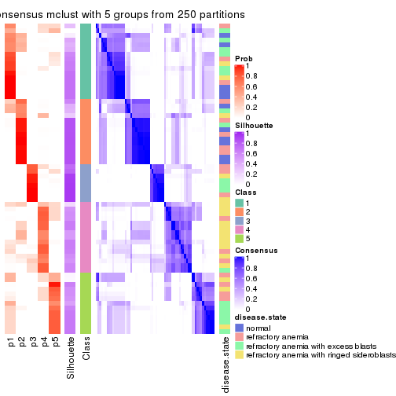
consensus_heatmap(res, k = 6)
Heatmaps for the membership of samples in all partitions to see how consistent they are:
membership_heatmap(res, k = 2)
membership_heatmap(res, k = 3)
membership_heatmap(res, k = 4)
membership_heatmap(res, k = 5)
membership_heatmap(res, k = 6)
As soon as we have had the classes for columns, we can look for signatures which are significantly different between classes which can be candidate marks for certain classes. Following are the heatmaps for signatures.
Signature heatmaps where rows are scaled:
get_signatures(res, k = 2)
get_signatures(res, k = 3)
get_signatures(res, k = 4)
get_signatures(res, k = 5)
get_signatures(res, k = 6)
Signature heatmaps where rows are not scaled:
get_signatures(res, k = 2, scale_rows = FALSE)
get_signatures(res, k = 3, scale_rows = FALSE)
get_signatures(res, k = 4, scale_rows = FALSE)
get_signatures(res, k = 5, scale_rows = FALSE)
get_signatures(res, k = 6, scale_rows = FALSE)
Compare the overlap of signatures from different k:
compare_signatures(res)
get_signature() returns a data frame invisibly. TO get the list of signatures, the function
call should be assigned to a variable explicitly. In following code, if plot argument is set
to FALSE, no heatmap is plotted while only the differential analysis is performed.
# code only for demonstration
tb = get_signature(res, k = ..., plot = FALSE)
An example of the output of tb is:
#> which_row fdr mean_1 mean_2 scaled_mean_1 scaled_mean_2 km
#> 1 38 0.042760348 8.373488 9.131774 -0.5533452 0.5164555 1
#> 2 40 0.018707592 7.106213 8.469186 -0.6173731 0.5762149 1
#> 3 55 0.019134737 10.221463 11.207825 -0.6159697 0.5749050 1
#> 4 59 0.006059896 5.921854 7.869574 -0.6899429 0.6439467 1
#> 5 60 0.018055526 8.928898 10.211722 -0.6204761 0.5791110 1
#> 6 98 0.009384629 15.714769 14.887706 0.6635654 -0.6193277 2
...
The columns in tb are:
which_row: row indices corresponding to the input matrix.fdr: FDR for the differential test. mean_x: The mean value in group x.scaled_mean_x: The mean value in group x after rows are scaled.km: Row groups if k-means clustering is applied to rows.UMAP plot which shows how samples are separated.
dimension_reduction(res, k = 2, method = "UMAP")
dimension_reduction(res, k = 3, method = "UMAP")
dimension_reduction(res, k = 4, method = "UMAP")
dimension_reduction(res, k = 5, method = "UMAP")
dimension_reduction(res, k = 6, method = "UMAP")
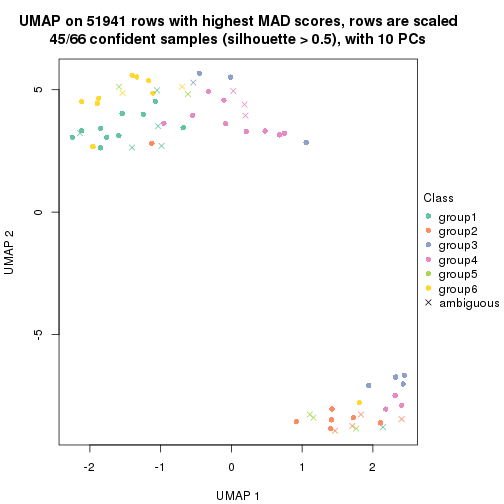
Following heatmap shows how subgroups are split when increasing k:
collect_classes(res)
Test correlation between subgroups and known annotations. If the known annotation is numeric, one-way ANOVA test is applied, and if the known annotation is discrete, chi-squared contingency table test is applied.
test_to_known_factors(res)
#> n disease.state(p) k
#> MAD:mclust 63 0.50599 2
#> MAD:mclust 41 0.11881 3
#> MAD:mclust 45 0.01341 4
#> MAD:mclust 53 0.00104 5
#> MAD:mclust 45 0.00388 6
If matrix rows can be associated to genes, consider to use GO_Enrichment(res,
...) to perform function enrichment for the signature genes.
The object with results only for a single top-value method and a single partition method can be extracted as:
res = res_list["MAD", "NMF"]
# you can also extract it by
# res = res_list["MAD:NMF"]
A summary of res and all the functions that can be applied to it:
res
#> A 'ConsensusPartition' object with k = 2, 3, 4, 5, 6.
#> On a matrix with 51941 rows and 66 columns.
#> Top rows (1000, 2000, 3000, 4000, 5000) are extracted by 'MAD' method.
#> Subgroups are detected by 'NMF' method.
#> Performed in total 1250 partitions by row resampling.
#> Best k for subgroups seems to be 2.
#>
#> Following methods can be applied to this 'ConsensusPartition' object:
#> [1] "cola_report" "collect_classes" "collect_plots"
#> [4] "collect_stats" "colnames" "compare_signatures"
#> [7] "consensus_heatmap" "dimension_reduction" "functional_enrichment"
#> [10] "get_anno_col" "get_anno" "get_classes"
#> [13] "get_consensus" "get_matrix" "get_membership"
#> [16] "get_param" "get_signatures" "get_stats"
#> [19] "is_best_k" "is_stable_k" "membership_heatmap"
#> [22] "ncol" "nrow" "plot_ecdf"
#> [25] "rownames" "select_partition_number" "show"
#> [28] "suggest_best_k" "test_to_known_factors"
collect_plots() function collects all the plots made from res for all k (number of partitions)
into one single page to provide an easy and fast comparison between different k.
collect_plots(res)
The plots are:
k and the heatmap of
predicted classes for each k.k.k.k.All the plots in panels can be made by individual functions and they are plotted later in this section.
select_partition_number() produces several plots showing different
statistics for choosing “optimized” k. There are following statistics:
k;k, the area increased is defined as \(A_k - A_{k-1}\).The detailed explanations of these statistics can be found in the cola vignette.
Generally speaking, lower PAC score, higher mean silhouette score or higher
concordance corresponds to better partition. Rand index and Jaccard index
measure how similar the current partition is compared to partition with k-1.
If they are too similar, we won't accept k is better than k-1.
select_partition_number(res)
The numeric values for all these statistics can be obtained by get_stats().
get_stats(res)
#> k 1-PAC mean_silhouette concordance area_increased Rand Jaccard
#> 2 2 0.848 0.917 0.964 0.4670 0.539 0.539
#> 3 3 0.658 0.713 0.877 0.4291 0.719 0.513
#> 4 4 0.638 0.679 0.835 0.1141 0.852 0.597
#> 5 5 0.641 0.566 0.782 0.0700 0.880 0.587
#> 6 6 0.653 0.553 0.744 0.0457 0.891 0.544
suggest_best_k() suggests the best \(k\) based on these statistics. The rules are as follows:
NA.suggest_best_k(res)
#> [1] 2
Following shows the table of the partitions (You need to click the show/hide
code output link to see it). The membership matrix (columns with name p*)
is inferred by
clue::cl_consensus()
function with the SE method. Basically the value in the membership matrix
represents the probability to belong to a certain group. The finall class
label for an item is determined with the group with highest probability it
belongs to.
In get_classes() function, the entropy is calculated from the membership
matrix and the silhouette score is calculated from the consensus matrix.
cbind(get_classes(res, k = 2), get_membership(res, k = 2))
#> class entropy silhouette p1 p2
#> GSM103343 1 0.0000 0.958 1.000 0.000
#> GSM103344 1 0.0000 0.958 1.000 0.000
#> GSM103345 1 0.0000 0.958 1.000 0.000
#> GSM103364 1 0.0000 0.958 1.000 0.000
#> GSM103365 1 0.0000 0.958 1.000 0.000
#> GSM103366 1 0.3114 0.916 0.944 0.056
#> GSM103369 1 0.0000 0.958 1.000 0.000
#> GSM103370 1 0.0000 0.958 1.000 0.000
#> GSM103388 1 0.0000 0.958 1.000 0.000
#> GSM103389 1 0.0000 0.958 1.000 0.000
#> GSM103390 1 0.5629 0.847 0.868 0.132
#> GSM103347 2 0.0938 0.960 0.012 0.988
#> GSM103349 2 0.0000 0.967 0.000 1.000
#> GSM103354 2 0.0000 0.967 0.000 1.000
#> GSM103355 1 0.0000 0.958 1.000 0.000
#> GSM103357 1 0.8016 0.701 0.756 0.244
#> GSM103358 1 0.0000 0.958 1.000 0.000
#> GSM103361 1 0.0000 0.958 1.000 0.000
#> GSM103363 2 0.3274 0.918 0.060 0.940
#> GSM103367 1 0.0000 0.958 1.000 0.000
#> GSM103381 1 0.0000 0.958 1.000 0.000
#> GSM103382 1 0.5737 0.843 0.864 0.136
#> GSM103384 1 0.0000 0.958 1.000 0.000
#> GSM103391 2 0.0000 0.967 0.000 1.000
#> GSM103394 1 0.9970 0.161 0.532 0.468
#> GSM103399 1 0.5842 0.839 0.860 0.140
#> GSM103401 2 0.0000 0.967 0.000 1.000
#> GSM103404 1 0.0000 0.958 1.000 0.000
#> GSM103408 1 0.0000 0.958 1.000 0.000
#> GSM103348 2 0.0000 0.967 0.000 1.000
#> GSM103351 1 0.9044 0.565 0.680 0.320
#> GSM103356 2 0.0376 0.965 0.004 0.996
#> GSM103368 2 0.0000 0.967 0.000 1.000
#> GSM103372 2 0.5408 0.847 0.124 0.876
#> GSM103375 2 0.0000 0.967 0.000 1.000
#> GSM103376 2 0.0000 0.967 0.000 1.000
#> GSM103379 1 0.0000 0.958 1.000 0.000
#> GSM103385 2 0.0000 0.967 0.000 1.000
#> GSM103387 2 0.3114 0.923 0.056 0.944
#> GSM103392 1 0.0000 0.958 1.000 0.000
#> GSM103393 2 0.0000 0.967 0.000 1.000
#> GSM103395 2 0.0000 0.967 0.000 1.000
#> GSM103396 1 0.0000 0.958 1.000 0.000
#> GSM103398 1 0.1414 0.944 0.980 0.020
#> GSM103402 2 0.0672 0.963 0.008 0.992
#> GSM103403 2 0.0000 0.967 0.000 1.000
#> GSM103405 1 0.0938 0.950 0.988 0.012
#> GSM103407 2 0.9710 0.276 0.400 0.600
#> GSM103346 2 0.0000 0.967 0.000 1.000
#> GSM103350 2 0.0000 0.967 0.000 1.000
#> GSM103352 2 0.0000 0.967 0.000 1.000
#> GSM103353 2 0.0000 0.967 0.000 1.000
#> GSM103359 1 0.0000 0.958 1.000 0.000
#> GSM103360 1 0.0000 0.958 1.000 0.000
#> GSM103362 1 0.0000 0.958 1.000 0.000
#> GSM103371 1 0.0000 0.958 1.000 0.000
#> GSM103373 1 0.0000 0.958 1.000 0.000
#> GSM103374 1 0.0000 0.958 1.000 0.000
#> GSM103377 1 0.6712 0.796 0.824 0.176
#> GSM103378 1 0.0000 0.958 1.000 0.000
#> GSM103380 1 0.0000 0.958 1.000 0.000
#> GSM103383 1 0.0000 0.958 1.000 0.000
#> GSM103386 1 0.0000 0.958 1.000 0.000
#> GSM103397 1 0.0000 0.958 1.000 0.000
#> GSM103400 1 0.0000 0.958 1.000 0.000
#> GSM103406 1 0.0000 0.958 1.000 0.000
cbind(get_classes(res, k = 3), get_membership(res, k = 3))
#> class entropy silhouette p1 p2 p3
#> GSM103343 2 0.0424 0.8397 0.008 0.992 0.000
#> GSM103344 2 0.0237 0.8393 0.004 0.996 0.000
#> GSM103345 2 0.0424 0.8397 0.008 0.992 0.000
#> GSM103364 2 0.0592 0.8390 0.012 0.988 0.000
#> GSM103365 2 0.6252 0.1147 0.444 0.556 0.000
#> GSM103366 2 0.0424 0.8394 0.008 0.992 0.000
#> GSM103369 2 0.0237 0.8387 0.004 0.996 0.000
#> GSM103370 1 0.4702 0.6784 0.788 0.212 0.000
#> GSM103388 1 0.4452 0.7015 0.808 0.192 0.000
#> GSM103389 1 0.0592 0.8339 0.988 0.012 0.000
#> GSM103390 2 0.4399 0.6564 0.188 0.812 0.000
#> GSM103347 3 0.5956 0.5166 0.324 0.004 0.672
#> GSM103349 3 0.5397 0.5695 0.000 0.280 0.720
#> GSM103354 3 0.0237 0.9008 0.000 0.004 0.996
#> GSM103355 2 0.0424 0.8397 0.008 0.992 0.000
#> GSM103357 2 0.0237 0.8393 0.004 0.996 0.000
#> GSM103358 2 0.0592 0.8390 0.012 0.988 0.000
#> GSM103361 2 0.0592 0.8390 0.012 0.988 0.000
#> GSM103363 2 0.1031 0.8283 0.000 0.976 0.024
#> GSM103367 1 0.8190 0.1659 0.496 0.432 0.072
#> GSM103381 1 0.0000 0.8352 1.000 0.000 0.000
#> GSM103382 1 0.4399 0.6996 0.812 0.000 0.188
#> GSM103384 1 0.0237 0.8340 0.996 0.004 0.000
#> GSM103391 3 0.0237 0.9008 0.000 0.004 0.996
#> GSM103394 1 0.6804 0.1838 0.528 0.012 0.460
#> GSM103399 1 0.5660 0.6897 0.772 0.028 0.200
#> GSM103401 3 0.0237 0.9008 0.000 0.004 0.996
#> GSM103404 1 0.1289 0.8316 0.968 0.032 0.000
#> GSM103408 1 0.1529 0.8278 0.960 0.040 0.000
#> GSM103348 3 0.0237 0.9008 0.000 0.004 0.996
#> GSM103351 2 0.6451 0.2942 0.008 0.608 0.384
#> GSM103356 2 0.1411 0.8212 0.000 0.964 0.036
#> GSM103368 2 0.6416 0.3858 0.008 0.616 0.376
#> GSM103372 2 0.6704 0.3724 0.016 0.608 0.376
#> GSM103375 3 0.6597 0.4479 0.024 0.312 0.664
#> GSM103376 3 0.2176 0.8826 0.032 0.020 0.948
#> GSM103379 1 0.0424 0.8362 0.992 0.008 0.000
#> GSM103385 3 0.2384 0.8715 0.056 0.008 0.936
#> GSM103387 3 0.4755 0.7322 0.184 0.008 0.808
#> GSM103392 1 0.0475 0.8326 0.992 0.004 0.004
#> GSM103393 3 0.3816 0.7748 0.000 0.148 0.852
#> GSM103395 3 0.0000 0.9002 0.000 0.000 1.000
#> GSM103396 1 0.0237 0.8360 0.996 0.004 0.000
#> GSM103398 1 0.0848 0.8361 0.984 0.008 0.008
#> GSM103402 3 0.0983 0.8957 0.016 0.004 0.980
#> GSM103403 3 0.0661 0.8978 0.008 0.004 0.988
#> GSM103405 1 0.1289 0.8316 0.968 0.032 0.000
#> GSM103407 2 0.6081 0.4407 0.004 0.652 0.344
#> GSM103346 3 0.0237 0.9008 0.000 0.004 0.996
#> GSM103350 3 0.0424 0.8990 0.000 0.008 0.992
#> GSM103352 3 0.0424 0.8995 0.000 0.008 0.992
#> GSM103353 3 0.0237 0.9008 0.000 0.004 0.996
#> GSM103359 1 0.5497 0.5237 0.708 0.292 0.000
#> GSM103360 2 0.1860 0.8113 0.052 0.948 0.000
#> GSM103362 2 0.0592 0.8390 0.012 0.988 0.000
#> GSM103371 1 0.6274 0.2108 0.544 0.456 0.000
#> GSM103373 1 0.6302 0.1546 0.520 0.480 0.000
#> GSM103374 1 0.6442 0.2848 0.564 0.432 0.004
#> GSM103377 2 0.7059 -0.0397 0.460 0.520 0.020
#> GSM103378 1 0.1163 0.8330 0.972 0.028 0.000
#> GSM103380 1 0.0237 0.8360 0.996 0.004 0.000
#> GSM103383 1 0.0000 0.8352 1.000 0.000 0.000
#> GSM103386 1 0.0424 0.8362 0.992 0.008 0.000
#> GSM103397 1 0.0892 0.8348 0.980 0.020 0.000
#> GSM103400 1 0.1163 0.8330 0.972 0.028 0.000
#> GSM103406 1 0.2165 0.8123 0.936 0.064 0.000
cbind(get_classes(res, k = 4), get_membership(res, k = 4))
#> class entropy silhouette p1 p2 p3 p4
#> GSM103343 2 0.0188 0.8731 0.000 0.996 0.000 0.004
#> GSM103344 2 0.0000 0.8736 0.000 1.000 0.000 0.000
#> GSM103345 2 0.0000 0.8736 0.000 1.000 0.000 0.000
#> GSM103364 2 0.1118 0.8556 0.000 0.964 0.000 0.036
#> GSM103365 2 0.6059 0.4535 0.288 0.644 0.004 0.064
#> GSM103366 2 0.1488 0.8587 0.000 0.956 0.012 0.032
#> GSM103369 2 0.0188 0.8731 0.000 0.996 0.000 0.004
#> GSM103370 1 0.6152 0.6056 0.668 0.120 0.000 0.212
#> GSM103388 4 0.6206 0.4012 0.280 0.088 0.000 0.632
#> GSM103389 4 0.6659 0.0657 0.400 0.088 0.000 0.512
#> GSM103390 2 0.4964 0.3667 0.000 0.616 0.004 0.380
#> GSM103347 3 0.4098 0.6516 0.204 0.000 0.784 0.012
#> GSM103349 3 0.2760 0.7262 0.000 0.128 0.872 0.000
#> GSM103354 3 0.0188 0.8252 0.000 0.000 0.996 0.004
#> GSM103355 2 0.0188 0.8731 0.000 0.996 0.000 0.004
#> GSM103357 2 0.0188 0.8732 0.000 0.996 0.000 0.004
#> GSM103358 2 0.0188 0.8734 0.000 0.996 0.004 0.000
#> GSM103361 2 0.0992 0.8670 0.008 0.976 0.004 0.012
#> GSM103363 2 0.2197 0.8126 0.000 0.916 0.004 0.080
#> GSM103367 4 0.3505 0.7015 0.016 0.108 0.012 0.864
#> GSM103381 1 0.2704 0.7961 0.876 0.000 0.000 0.124
#> GSM103382 1 0.5172 0.7179 0.744 0.000 0.068 0.188
#> GSM103384 1 0.4304 0.6418 0.716 0.000 0.000 0.284
#> GSM103391 3 0.2760 0.7632 0.000 0.000 0.872 0.128
#> GSM103394 3 0.6961 0.2086 0.388 0.000 0.496 0.116
#> GSM103399 1 0.5803 0.6167 0.716 0.004 0.172 0.108
#> GSM103401 3 0.0937 0.8220 0.012 0.000 0.976 0.012
#> GSM103404 1 0.0804 0.8369 0.980 0.000 0.008 0.012
#> GSM103408 1 0.0921 0.8426 0.972 0.000 0.000 0.028
#> GSM103348 3 0.2149 0.7934 0.000 0.000 0.912 0.088
#> GSM103351 2 0.6828 0.3569 0.000 0.588 0.148 0.264
#> GSM103356 2 0.0336 0.8723 0.000 0.992 0.000 0.008
#> GSM103368 4 0.4941 0.3139 0.000 0.436 0.000 0.564
#> GSM103372 4 0.3356 0.6859 0.000 0.176 0.000 0.824
#> GSM103375 4 0.3570 0.6976 0.000 0.092 0.048 0.860
#> GSM103376 4 0.3249 0.6580 0.000 0.008 0.140 0.852
#> GSM103379 1 0.0336 0.8435 0.992 0.000 0.000 0.008
#> GSM103385 4 0.2814 0.6574 0.000 0.000 0.132 0.868
#> GSM103387 4 0.2255 0.6723 0.012 0.000 0.068 0.920
#> GSM103392 1 0.4830 0.4377 0.608 0.000 0.000 0.392
#> GSM103393 4 0.6819 0.3229 0.000 0.312 0.124 0.564
#> GSM103395 3 0.0592 0.8232 0.000 0.000 0.984 0.016
#> GSM103396 1 0.5250 0.6927 0.736 0.000 0.068 0.196
#> GSM103398 1 0.1356 0.8404 0.960 0.000 0.008 0.032
#> GSM103402 3 0.6785 0.2101 0.096 0.000 0.484 0.420
#> GSM103403 4 0.4985 -0.1447 0.000 0.000 0.468 0.532
#> GSM103405 1 0.1305 0.8341 0.960 0.004 0.000 0.036
#> GSM103407 2 0.6783 0.3587 0.000 0.572 0.124 0.304
#> GSM103346 3 0.0657 0.8238 0.004 0.000 0.984 0.012
#> GSM103350 4 0.3569 0.6120 0.000 0.000 0.196 0.804
#> GSM103352 3 0.0000 0.8256 0.000 0.000 1.000 0.000
#> GSM103353 3 0.0336 0.8244 0.000 0.000 0.992 0.008
#> GSM103359 1 0.2075 0.8197 0.936 0.004 0.044 0.016
#> GSM103360 2 0.1471 0.8590 0.024 0.960 0.004 0.012
#> GSM103362 2 0.0376 0.8732 0.000 0.992 0.004 0.004
#> GSM103371 1 0.5768 0.2385 0.516 0.456 0.000 0.028
#> GSM103373 1 0.6568 0.4284 0.572 0.332 0.000 0.096
#> GSM103374 4 0.3708 0.6968 0.020 0.148 0.000 0.832
#> GSM103377 4 0.5316 0.4315 0.016 0.308 0.008 0.668
#> GSM103378 1 0.0188 0.8436 0.996 0.000 0.000 0.004
#> GSM103380 1 0.0336 0.8435 0.992 0.000 0.000 0.008
#> GSM103383 1 0.0707 0.8434 0.980 0.000 0.000 0.020
#> GSM103386 1 0.0000 0.8430 1.000 0.000 0.000 0.000
#> GSM103397 1 0.0336 0.8432 0.992 0.000 0.000 0.008
#> GSM103400 1 0.0817 0.8425 0.976 0.000 0.000 0.024
#> GSM103406 1 0.0336 0.8432 0.992 0.000 0.000 0.008
cbind(get_classes(res, k = 5), get_membership(res, k = 5))
#> class entropy silhouette p1 p2 p3 p4 p5
#> GSM103343 2 0.0404 0.8129 0.000 0.988 0.000 0.000 0.012
#> GSM103344 2 0.0404 0.8137 0.000 0.988 0.000 0.000 0.012
#> GSM103345 2 0.0671 0.8146 0.000 0.980 0.000 0.004 0.016
#> GSM103364 2 0.1732 0.7823 0.000 0.920 0.000 0.000 0.080
#> GSM103365 2 0.7045 0.3801 0.168 0.580 0.000 0.104 0.148
#> GSM103366 2 0.3280 0.7137 0.000 0.824 0.012 0.004 0.160
#> GSM103369 2 0.3480 0.6665 0.000 0.752 0.000 0.000 0.248
#> GSM103370 4 0.6170 0.1724 0.384 0.004 0.000 0.492 0.120
#> GSM103388 4 0.5901 0.3532 0.300 0.000 0.000 0.568 0.132
#> GSM103389 4 0.5325 0.3999 0.308 0.000 0.000 0.616 0.076
#> GSM103390 5 0.5035 0.5348 0.020 0.212 0.000 0.056 0.712
#> GSM103347 3 0.3472 0.7145 0.080 0.008 0.860 0.020 0.032
#> GSM103349 3 0.4863 0.5160 0.000 0.296 0.656 0.000 0.048
#> GSM103354 3 0.0000 0.8040 0.000 0.000 1.000 0.000 0.000
#> GSM103355 2 0.0510 0.8113 0.000 0.984 0.000 0.000 0.016
#> GSM103357 2 0.2929 0.7425 0.000 0.820 0.000 0.000 0.180
#> GSM103358 2 0.0609 0.8138 0.000 0.980 0.000 0.000 0.020
#> GSM103361 2 0.2674 0.7694 0.004 0.856 0.000 0.000 0.140
#> GSM103363 2 0.3143 0.7319 0.000 0.796 0.000 0.000 0.204
#> GSM103367 4 0.1739 0.6104 0.004 0.024 0.032 0.940 0.000
#> GSM103381 1 0.5544 0.4536 0.624 0.004 0.000 0.280 0.092
#> GSM103382 1 0.5725 0.5624 0.608 0.004 0.000 0.108 0.280
#> GSM103384 1 0.5693 -0.0103 0.468 0.000 0.000 0.452 0.080
#> GSM103391 5 0.4383 0.2931 0.000 0.000 0.424 0.004 0.572
#> GSM103394 1 0.6790 -0.0955 0.384 0.000 0.300 0.000 0.316
#> GSM103399 1 0.4026 0.5832 0.736 0.000 0.020 0.000 0.244
#> GSM103401 3 0.0290 0.8025 0.008 0.000 0.992 0.000 0.000
#> GSM103404 1 0.1168 0.7223 0.960 0.000 0.008 0.000 0.032
#> GSM103408 1 0.4348 0.6782 0.788 0.016 0.000 0.068 0.128
#> GSM103348 3 0.4541 0.3057 0.000 0.000 0.680 0.032 0.288
#> GSM103351 3 0.7172 0.2701 0.000 0.372 0.452 0.084 0.092
#> GSM103356 2 0.1310 0.8012 0.000 0.956 0.000 0.024 0.020
#> GSM103368 5 0.6523 0.2519 0.000 0.332 0.000 0.208 0.460
#> GSM103372 4 0.3994 0.5124 0.000 0.140 0.000 0.792 0.068
#> GSM103375 4 0.2806 0.5330 0.000 0.004 0.000 0.844 0.152
#> GSM103376 4 0.1830 0.5996 0.000 0.000 0.068 0.924 0.008
#> GSM103379 1 0.0290 0.7259 0.992 0.000 0.000 0.000 0.008
#> GSM103385 4 0.1697 0.6039 0.000 0.000 0.060 0.932 0.008
#> GSM103387 4 0.1851 0.5806 0.000 0.000 0.000 0.912 0.088
#> GSM103392 4 0.4489 0.2634 0.420 0.000 0.000 0.572 0.008
#> GSM103393 5 0.5121 0.6494 0.000 0.096 0.020 0.156 0.728
#> GSM103395 3 0.0324 0.8006 0.000 0.000 0.992 0.004 0.004
#> GSM103396 1 0.4947 0.3426 0.644 0.000 0.032 0.316 0.008
#> GSM103398 1 0.4834 0.6615 0.752 0.016 0.000 0.100 0.132
#> GSM103402 5 0.6448 0.5325 0.068 0.004 0.168 0.116 0.644
#> GSM103403 5 0.6033 0.5341 0.000 0.000 0.200 0.220 0.580
#> GSM103405 1 0.1831 0.7175 0.920 0.000 0.004 0.000 0.076
#> GSM103407 5 0.3566 0.6599 0.000 0.052 0.020 0.080 0.848
#> GSM103346 3 0.0162 0.8036 0.004 0.000 0.996 0.000 0.000
#> GSM103350 4 0.5329 -0.1900 0.000 0.012 0.472 0.488 0.028
#> GSM103352 3 0.0162 0.8029 0.000 0.000 0.996 0.000 0.004
#> GSM103353 3 0.0000 0.8040 0.000 0.000 1.000 0.000 0.000
#> GSM103359 1 0.7629 -0.0985 0.388 0.204 0.348 0.000 0.060
#> GSM103360 2 0.1915 0.7855 0.032 0.928 0.000 0.000 0.040
#> GSM103362 2 0.2929 0.7445 0.000 0.820 0.000 0.000 0.180
#> GSM103371 2 0.7497 0.1496 0.264 0.436 0.000 0.048 0.252
#> GSM103373 1 0.6333 0.1342 0.492 0.088 0.000 0.024 0.396
#> GSM103374 4 0.4832 0.5369 0.040 0.132 0.000 0.764 0.064
#> GSM103377 5 0.5258 0.5960 0.084 0.068 0.000 0.104 0.744
#> GSM103378 1 0.0794 0.7227 0.972 0.000 0.000 0.000 0.028
#> GSM103380 1 0.0162 0.7260 0.996 0.000 0.000 0.000 0.004
#> GSM103383 1 0.1668 0.7137 0.940 0.000 0.000 0.032 0.028
#> GSM103386 1 0.0510 0.7254 0.984 0.000 0.000 0.000 0.016
#> GSM103397 1 0.2554 0.7004 0.892 0.036 0.000 0.000 0.072
#> GSM103400 1 0.3612 0.6902 0.832 0.004 0.000 0.064 0.100
#> GSM103406 1 0.0865 0.7268 0.972 0.004 0.000 0.000 0.024
cbind(get_classes(res, k = 6), get_membership(res, k = 6))
#> class entropy silhouette p1 p2 p3 p4 p5 p6
#> GSM103343 2 0.1657 0.8401 0.056 0.928 0.000 0.000 0.016 0.000
#> GSM103344 2 0.0972 0.8409 0.028 0.964 0.000 0.000 0.008 0.000
#> GSM103345 2 0.1779 0.8382 0.064 0.920 0.000 0.000 0.016 0.000
#> GSM103364 2 0.3852 0.7060 0.180 0.764 0.000 0.004 0.052 0.000
#> GSM103365 1 0.5269 0.3767 0.660 0.236 0.000 0.012 0.064 0.028
#> GSM103366 1 0.5754 0.0631 0.496 0.380 0.000 0.012 0.108 0.004
#> GSM103369 2 0.3900 0.6984 0.092 0.796 0.000 0.020 0.092 0.000
#> GSM103370 1 0.5758 0.3114 0.552 0.000 0.000 0.144 0.016 0.288
#> GSM103388 1 0.5023 0.4492 0.664 0.000 0.000 0.140 0.008 0.188
#> GSM103389 1 0.6196 0.1390 0.440 0.000 0.000 0.284 0.008 0.268
#> GSM103390 5 0.7747 0.2314 0.144 0.272 0.000 0.100 0.428 0.056
#> GSM103347 3 0.2341 0.7146 0.000 0.008 0.908 0.016 0.044 0.024
#> GSM103349 3 0.5996 0.4959 0.080 0.236 0.608 0.012 0.064 0.000
#> GSM103354 3 0.0000 0.7471 0.000 0.000 1.000 0.000 0.000 0.000
#> GSM103355 2 0.1934 0.8222 0.040 0.916 0.000 0.000 0.044 0.000
#> GSM103357 2 0.1802 0.8156 0.012 0.916 0.000 0.000 0.072 0.000
#> GSM103358 2 0.0725 0.8412 0.012 0.976 0.000 0.000 0.012 0.000
#> GSM103361 2 0.2007 0.8287 0.016 0.924 0.000 0.012 0.040 0.008
#> GSM103363 2 0.1908 0.8135 0.004 0.900 0.000 0.000 0.096 0.000
#> GSM103367 4 0.1988 0.6368 0.024 0.000 0.004 0.920 0.004 0.048
#> GSM103381 1 0.4193 0.5689 0.684 0.000 0.000 0.044 0.000 0.272
#> GSM103382 1 0.4495 0.5492 0.708 0.000 0.000 0.004 0.092 0.196
#> GSM103384 1 0.5117 0.5297 0.596 0.000 0.000 0.116 0.000 0.288
#> GSM103391 5 0.2982 0.5654 0.004 0.000 0.164 0.012 0.820 0.000
#> GSM103394 5 0.5635 0.4987 0.092 0.000 0.092 0.004 0.668 0.144
#> GSM103399 6 0.3304 0.6667 0.020 0.000 0.008 0.000 0.168 0.804
#> GSM103401 3 0.0405 0.7418 0.000 0.000 0.988 0.008 0.000 0.004
#> GSM103404 6 0.2822 0.6956 0.088 0.000 0.012 0.012 0.016 0.872
#> GSM103408 1 0.3759 0.5784 0.752 0.008 0.000 0.000 0.024 0.216
#> GSM103348 3 0.5761 -0.1556 0.000 0.000 0.432 0.172 0.396 0.000
#> GSM103351 3 0.8178 0.2582 0.244 0.224 0.360 0.104 0.068 0.000
#> GSM103356 2 0.4061 0.7417 0.052 0.792 0.000 0.104 0.052 0.000
#> GSM103368 4 0.7191 0.1571 0.092 0.316 0.000 0.364 0.228 0.000
#> GSM103372 4 0.5438 0.5219 0.120 0.168 0.000 0.672 0.028 0.012
#> GSM103375 4 0.3316 0.5809 0.028 0.004 0.000 0.804 0.164 0.000
#> GSM103376 4 0.1749 0.6398 0.012 0.000 0.016 0.936 0.032 0.004
#> GSM103379 6 0.0717 0.7527 0.000 0.000 0.000 0.016 0.008 0.976
#> GSM103385 4 0.2394 0.6201 0.032 0.000 0.020 0.900 0.048 0.000
#> GSM103387 4 0.4592 0.4398 0.256 0.000 0.000 0.664 0.080 0.000
#> GSM103392 4 0.4481 0.1239 0.024 0.000 0.000 0.556 0.004 0.416
#> GSM103393 5 0.3933 0.4366 0.004 0.040 0.000 0.216 0.740 0.000
#> GSM103395 3 0.0000 0.7471 0.000 0.000 1.000 0.000 0.000 0.000
#> GSM103396 6 0.4810 0.2006 0.032 0.000 0.000 0.420 0.012 0.536
#> GSM103398 1 0.3622 0.5829 0.760 0.000 0.000 0.004 0.024 0.212
#> GSM103402 5 0.4623 0.1986 0.428 0.000 0.000 0.016 0.540 0.016
#> GSM103403 5 0.3794 0.6052 0.128 0.000 0.016 0.060 0.796 0.000
#> GSM103405 6 0.3664 0.6507 0.080 0.000 0.000 0.008 0.108 0.804
#> GSM103407 5 0.2841 0.6036 0.164 0.000 0.000 0.012 0.824 0.000
#> GSM103346 3 0.0000 0.7471 0.000 0.000 1.000 0.000 0.000 0.000
#> GSM103350 4 0.5302 0.3578 0.060 0.004 0.264 0.636 0.036 0.000
#> GSM103352 3 0.0000 0.7471 0.000 0.000 1.000 0.000 0.000 0.000
#> GSM103353 3 0.0000 0.7471 0.000 0.000 1.000 0.000 0.000 0.000
#> GSM103359 3 0.8225 0.2040 0.124 0.124 0.384 0.012 0.064 0.292
#> GSM103360 2 0.2765 0.8048 0.056 0.872 0.000 0.000 0.064 0.008
#> GSM103362 2 0.1858 0.8154 0.012 0.912 0.000 0.000 0.076 0.000
#> GSM103371 2 0.7973 0.0748 0.144 0.416 0.000 0.120 0.068 0.252
#> GSM103373 6 0.6413 0.4348 0.140 0.044 0.000 0.100 0.088 0.628
#> GSM103374 4 0.4962 0.5366 0.132 0.024 0.000 0.716 0.008 0.120
#> GSM103377 5 0.7689 0.2250 0.140 0.048 0.000 0.164 0.472 0.176
#> GSM103378 6 0.1196 0.7516 0.040 0.000 0.000 0.008 0.000 0.952
#> GSM103380 6 0.1173 0.7525 0.016 0.000 0.000 0.016 0.008 0.960
#> GSM103383 6 0.2932 0.6777 0.024 0.000 0.000 0.132 0.004 0.840
#> GSM103386 6 0.0777 0.7491 0.024 0.000 0.000 0.004 0.000 0.972
#> GSM103397 6 0.4606 0.3504 0.324 0.012 0.000 0.012 0.016 0.636
#> GSM103400 1 0.3953 0.4993 0.656 0.000 0.000 0.000 0.016 0.328
#> GSM103406 6 0.1682 0.7290 0.052 0.000 0.000 0.020 0.000 0.928
Heatmaps for the consensus matrix. It visualizes the probability of two samples to be in a same group.
consensus_heatmap(res, k = 2)
consensus_heatmap(res, k = 3)
consensus_heatmap(res, k = 4)
consensus_heatmap(res, k = 5)
consensus_heatmap(res, k = 6)
Heatmaps for the membership of samples in all partitions to see how consistent they are:
membership_heatmap(res, k = 2)
membership_heatmap(res, k = 3)
membership_heatmap(res, k = 4)
membership_heatmap(res, k = 5)
membership_heatmap(res, k = 6)
As soon as we have had the classes for columns, we can look for signatures which are significantly different between classes which can be candidate marks for certain classes. Following are the heatmaps for signatures.
Signature heatmaps where rows are scaled:
get_signatures(res, k = 2)

get_signatures(res, k = 3)
get_signatures(res, k = 4)
get_signatures(res, k = 5)
get_signatures(res, k = 6)
Signature heatmaps where rows are not scaled:
get_signatures(res, k = 2, scale_rows = FALSE)
get_signatures(res, k = 3, scale_rows = FALSE)
get_signatures(res, k = 4, scale_rows = FALSE)
get_signatures(res, k = 5, scale_rows = FALSE)
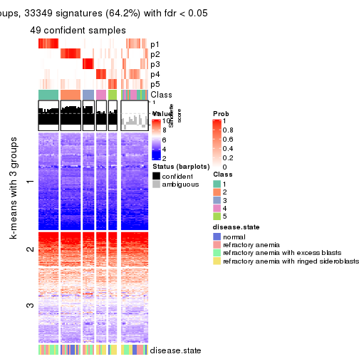
get_signatures(res, k = 6, scale_rows = FALSE)
Compare the overlap of signatures from different k:
compare_signatures(res)
get_signature() returns a data frame invisibly. TO get the list of signatures, the function
call should be assigned to a variable explicitly. In following code, if plot argument is set
to FALSE, no heatmap is plotted while only the differential analysis is performed.
# code only for demonstration
tb = get_signature(res, k = ..., plot = FALSE)
An example of the output of tb is:
#> which_row fdr mean_1 mean_2 scaled_mean_1 scaled_mean_2 km
#> 1 38 0.042760348 8.373488 9.131774 -0.5533452 0.5164555 1
#> 2 40 0.018707592 7.106213 8.469186 -0.6173731 0.5762149 1
#> 3 55 0.019134737 10.221463 11.207825 -0.6159697 0.5749050 1
#> 4 59 0.006059896 5.921854 7.869574 -0.6899429 0.6439467 1
#> 5 60 0.018055526 8.928898 10.211722 -0.6204761 0.5791110 1
#> 6 98 0.009384629 15.714769 14.887706 0.6635654 -0.6193277 2
...
The columns in tb are:
which_row: row indices corresponding to the input matrix.fdr: FDR for the differential test. mean_x: The mean value in group x.scaled_mean_x: The mean value in group x after rows are scaled.km: Row groups if k-means clustering is applied to rows.UMAP plot which shows how samples are separated.
dimension_reduction(res, k = 2, method = "UMAP")
dimension_reduction(res, k = 3, method = "UMAP")
dimension_reduction(res, k = 4, method = "UMAP")
dimension_reduction(res, k = 5, method = "UMAP")
dimension_reduction(res, k = 6, method = "UMAP")
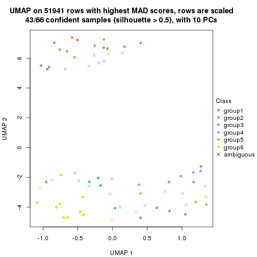
Following heatmap shows how subgroups are split when increasing k:
collect_classes(res)
Test correlation between subgroups and known annotations. If the known annotation is numeric, one-way ANOVA test is applied, and if the known annotation is discrete, chi-squared contingency table test is applied.
test_to_known_factors(res)
#> n disease.state(p) k
#> MAD:NMF 64 0.00160 2
#> MAD:NMF 54 0.00928 3
#> MAD:NMF 51 0.00601 4
#> MAD:NMF 49 0.00200 5
#> MAD:NMF 43 0.01173 6
If matrix rows can be associated to genes, consider to use GO_Enrichment(res,
...) to perform function enrichment for the signature genes.
The object with results only for a single top-value method and a single partition method can be extracted as:
res = res_list["ATC", "hclust"]
# you can also extract it by
# res = res_list["ATC:hclust"]
A summary of res and all the functions that can be applied to it:
res
#> A 'ConsensusPartition' object with k = 2, 3, 4, 5, 6.
#> On a matrix with 51941 rows and 66 columns.
#> Top rows (1000, 2000, 3000, 4000, 5000) are extracted by 'ATC' method.
#> Subgroups are detected by 'hclust' method.
#> Performed in total 1250 partitions by row resampling.
#> Best k for subgroups seems to be 2.
#>
#> Following methods can be applied to this 'ConsensusPartition' object:
#> [1] "cola_report" "collect_classes" "collect_plots"
#> [4] "collect_stats" "colnames" "compare_signatures"
#> [7] "consensus_heatmap" "dimension_reduction" "functional_enrichment"
#> [10] "get_anno_col" "get_anno" "get_classes"
#> [13] "get_consensus" "get_matrix" "get_membership"
#> [16] "get_param" "get_signatures" "get_stats"
#> [19] "is_best_k" "is_stable_k" "membership_heatmap"
#> [22] "ncol" "nrow" "plot_ecdf"
#> [25] "rownames" "select_partition_number" "show"
#> [28] "suggest_best_k" "test_to_known_factors"
collect_plots() function collects all the plots made from res for all k (number of partitions)
into one single page to provide an easy and fast comparison between different k.
collect_plots(res)
The plots are:
k and the heatmap of
predicted classes for each k.k.k.k.All the plots in panels can be made by individual functions and they are plotted later in this section.
select_partition_number() produces several plots showing different
statistics for choosing “optimized” k. There are following statistics:
k;k, the area increased is defined as \(A_k - A_{k-1}\).The detailed explanations of these statistics can be found in the cola vignette.
Generally speaking, lower PAC score, higher mean silhouette score or higher
concordance corresponds to better partition. Rand index and Jaccard index
measure how similar the current partition is compared to partition with k-1.
If they are too similar, we won't accept k is better than k-1.
select_partition_number(res)
The numeric values for all these statistics can be obtained by get_stats().
get_stats(res)
#> k 1-PAC mean_silhouette concordance area_increased Rand Jaccard
#> 2 2 1.000 1.000 1.000 0.4518 0.549 0.549
#> 3 3 0.869 0.906 0.951 0.3747 0.853 0.732
#> 4 4 0.770 0.806 0.907 0.0820 0.945 0.864
#> 5 5 0.743 0.724 0.879 0.0368 0.938 0.827
#> 6 6 0.712 0.575 0.774 0.0646 0.931 0.784
suggest_best_k() suggests the best \(k\) based on these statistics. The rules are as follows:
NA.suggest_best_k(res)
#> [1] 2
Following shows the table of the partitions (You need to click the show/hide
code output link to see it). The membership matrix (columns with name p*)
is inferred by
clue::cl_consensus()
function with the SE method. Basically the value in the membership matrix
represents the probability to belong to a certain group. The finall class
label for an item is determined with the group with highest probability it
belongs to.
In get_classes() function, the entropy is calculated from the membership
matrix and the silhouette score is calculated from the consensus matrix.
cbind(get_classes(res, k = 2), get_membership(res, k = 2))
#> class entropy silhouette p1 p2
#> GSM103343 2 0 1 0 1
#> GSM103344 2 0 1 0 1
#> GSM103345 2 0 1 0 1
#> GSM103364 2 0 1 0 1
#> GSM103365 2 0 1 0 1
#> GSM103366 2 0 1 0 1
#> GSM103369 1 0 1 1 0
#> GSM103370 1 0 1 1 0
#> GSM103388 1 0 1 1 0
#> GSM103389 1 0 1 1 0
#> GSM103390 1 0 1 1 0
#> GSM103347 1 0 1 1 0
#> GSM103349 2 0 1 0 1
#> GSM103354 1 0 1 1 0
#> GSM103355 2 0 1 0 1
#> GSM103357 2 0 1 0 1
#> GSM103358 2 0 1 0 1
#> GSM103361 2 0 1 0 1
#> GSM103363 2 0 1 0 1
#> GSM103367 1 0 1 1 0
#> GSM103381 1 0 1 1 0
#> GSM103382 1 0 1 1 0
#> GSM103384 1 0 1 1 0
#> GSM103391 1 0 1 1 0
#> GSM103394 1 0 1 1 0
#> GSM103399 1 0 1 1 0
#> GSM103401 1 0 1 1 0
#> GSM103404 1 0 1 1 0
#> GSM103408 1 0 1 1 0
#> GSM103348 2 0 1 0 1
#> GSM103351 2 0 1 0 1
#> GSM103356 2 0 1 0 1
#> GSM103368 1 0 1 1 0
#> GSM103372 1 0 1 1 0
#> GSM103375 1 0 1 1 0
#> GSM103376 1 0 1 1 0
#> GSM103379 1 0 1 1 0
#> GSM103385 1 0 1 1 0
#> GSM103387 1 0 1 1 0
#> GSM103392 1 0 1 1 0
#> GSM103393 1 0 1 1 0
#> GSM103395 1 0 1 1 0
#> GSM103396 1 0 1 1 0
#> GSM103398 1 0 1 1 0
#> GSM103402 1 0 1 1 0
#> GSM103403 1 0 1 1 0
#> GSM103405 1 0 1 1 0
#> GSM103407 1 0 1 1 0
#> GSM103346 2 0 1 0 1
#> GSM103350 2 0 1 0 1
#> GSM103352 2 0 1 0 1
#> GSM103353 2 0 1 0 1
#> GSM103359 2 0 1 0 1
#> GSM103360 2 0 1 0 1
#> GSM103362 2 0 1 0 1
#> GSM103371 1 0 1 1 0
#> GSM103373 1 0 1 1 0
#> GSM103374 1 0 1 1 0
#> GSM103377 1 0 1 1 0
#> GSM103378 1 0 1 1 0
#> GSM103380 1 0 1 1 0
#> GSM103383 1 0 1 1 0
#> GSM103386 1 0 1 1 0
#> GSM103397 1 0 1 1 0
#> GSM103400 1 0 1 1 0
#> GSM103406 1 0 1 1 0
cbind(get_classes(res, k = 3), get_membership(res, k = 3))
#> class entropy silhouette p1 p2 p3
#> GSM103343 2 0.0000 1.000 0.000 1 0.000
#> GSM103344 2 0.0000 1.000 0.000 1 0.000
#> GSM103345 2 0.0000 1.000 0.000 1 0.000
#> GSM103364 2 0.0000 1.000 0.000 1 0.000
#> GSM103365 2 0.0000 1.000 0.000 1 0.000
#> GSM103366 2 0.0000 1.000 0.000 1 0.000
#> GSM103369 1 0.0000 0.907 1.000 0 0.000
#> GSM103370 1 0.0000 0.907 1.000 0 0.000
#> GSM103388 1 0.0000 0.907 1.000 0 0.000
#> GSM103389 1 0.0000 0.907 1.000 0 0.000
#> GSM103390 1 0.1964 0.892 0.944 0 0.056
#> GSM103347 1 0.0000 0.907 1.000 0 0.000
#> GSM103349 2 0.0000 1.000 0.000 1 0.000
#> GSM103354 3 0.0000 0.975 0.000 0 1.000
#> GSM103355 2 0.0000 1.000 0.000 1 0.000
#> GSM103357 2 0.0000 1.000 0.000 1 0.000
#> GSM103358 2 0.0000 1.000 0.000 1 0.000
#> GSM103361 2 0.0000 1.000 0.000 1 0.000
#> GSM103363 2 0.0000 1.000 0.000 1 0.000
#> GSM103367 3 0.0237 0.974 0.004 0 0.996
#> GSM103381 1 0.0000 0.907 1.000 0 0.000
#> GSM103382 1 0.0000 0.907 1.000 0 0.000
#> GSM103384 1 0.0000 0.907 1.000 0 0.000
#> GSM103391 1 0.0000 0.907 1.000 0 0.000
#> GSM103394 1 0.0000 0.907 1.000 0 0.000
#> GSM103399 3 0.2356 0.917 0.072 0 0.928
#> GSM103401 3 0.0000 0.975 0.000 0 1.000
#> GSM103404 1 0.5216 0.719 0.740 0 0.260
#> GSM103408 1 0.0000 0.907 1.000 0 0.000
#> GSM103348 2 0.0000 1.000 0.000 1 0.000
#> GSM103351 2 0.0000 1.000 0.000 1 0.000
#> GSM103356 2 0.0000 1.000 0.000 1 0.000
#> GSM103368 1 0.6244 0.369 0.560 0 0.440
#> GSM103372 1 0.6274 0.332 0.544 0 0.456
#> GSM103375 3 0.0000 0.975 0.000 0 1.000
#> GSM103376 3 0.0237 0.974 0.004 0 0.996
#> GSM103379 3 0.2625 0.903 0.084 0 0.916
#> GSM103385 3 0.0000 0.975 0.000 0 1.000
#> GSM103387 1 0.1964 0.892 0.944 0 0.056
#> GSM103392 1 0.2066 0.890 0.940 0 0.060
#> GSM103393 1 0.3116 0.863 0.892 0 0.108
#> GSM103395 3 0.0000 0.975 0.000 0 1.000
#> GSM103396 1 0.3551 0.847 0.868 0 0.132
#> GSM103398 1 0.3482 0.850 0.872 0 0.128
#> GSM103402 1 0.0000 0.907 1.000 0 0.000
#> GSM103403 1 0.0000 0.907 1.000 0 0.000
#> GSM103405 1 0.4931 0.749 0.768 0 0.232
#> GSM103407 1 0.3482 0.850 0.872 0 0.128
#> GSM103346 2 0.0000 1.000 0.000 1 0.000
#> GSM103350 2 0.0000 1.000 0.000 1 0.000
#> GSM103352 2 0.0000 1.000 0.000 1 0.000
#> GSM103353 2 0.0000 1.000 0.000 1 0.000
#> GSM103359 2 0.0000 1.000 0.000 1 0.000
#> GSM103360 2 0.0000 1.000 0.000 1 0.000
#> GSM103362 2 0.0000 1.000 0.000 1 0.000
#> GSM103371 1 0.0000 0.907 1.000 0 0.000
#> GSM103373 1 0.0000 0.907 1.000 0 0.000
#> GSM103374 1 0.6215 0.399 0.572 0 0.428
#> GSM103377 1 0.1860 0.893 0.948 0 0.052
#> GSM103378 1 0.0000 0.907 1.000 0 0.000
#> GSM103380 1 0.1289 0.899 0.968 0 0.032
#> GSM103383 1 0.0000 0.907 1.000 0 0.000
#> GSM103386 1 0.0000 0.907 1.000 0 0.000
#> GSM103397 1 0.5178 0.725 0.744 0 0.256
#> GSM103400 1 0.0000 0.907 1.000 0 0.000
#> GSM103406 1 0.5016 0.741 0.760 0 0.240
cbind(get_classes(res, k = 4), get_membership(res, k = 4))
#> class entropy silhouette p1 p2 p3 p4
#> GSM103343 2 0.0000 0.798 0.000 1.000 0.000 0.000
#> GSM103344 2 0.0000 0.798 0.000 1.000 0.000 0.000
#> GSM103345 2 0.0000 0.798 0.000 1.000 0.000 0.000
#> GSM103364 2 0.3311 0.775 0.000 0.828 0.172 0.000
#> GSM103365 2 0.4776 0.524 0.000 0.624 0.376 0.000
#> GSM103366 2 0.4877 0.456 0.000 0.592 0.408 0.000
#> GSM103369 1 0.0000 0.907 1.000 0.000 0.000 0.000
#> GSM103370 1 0.0000 0.907 1.000 0.000 0.000 0.000
#> GSM103388 1 0.0000 0.907 1.000 0.000 0.000 0.000
#> GSM103389 1 0.0000 0.907 1.000 0.000 0.000 0.000
#> GSM103390 1 0.1557 0.892 0.944 0.000 0.000 0.056
#> GSM103347 1 0.0000 0.907 1.000 0.000 0.000 0.000
#> GSM103349 2 0.4164 0.684 0.000 0.736 0.264 0.000
#> GSM103354 4 0.0000 0.968 0.000 0.000 0.000 1.000
#> GSM103355 3 0.4855 0.142 0.000 0.400 0.600 0.000
#> GSM103357 3 0.1557 0.838 0.000 0.056 0.944 0.000
#> GSM103358 2 0.3172 0.782 0.000 0.840 0.160 0.000
#> GSM103361 2 0.0000 0.798 0.000 1.000 0.000 0.000
#> GSM103363 2 0.0336 0.800 0.000 0.992 0.008 0.000
#> GSM103367 4 0.0188 0.967 0.004 0.000 0.000 0.996
#> GSM103381 1 0.0000 0.907 1.000 0.000 0.000 0.000
#> GSM103382 1 0.0000 0.907 1.000 0.000 0.000 0.000
#> GSM103384 1 0.0000 0.907 1.000 0.000 0.000 0.000
#> GSM103391 1 0.0000 0.907 1.000 0.000 0.000 0.000
#> GSM103394 1 0.0000 0.907 1.000 0.000 0.000 0.000
#> GSM103399 4 0.1867 0.899 0.072 0.000 0.000 0.928
#> GSM103401 4 0.0000 0.968 0.000 0.000 0.000 1.000
#> GSM103404 1 0.4134 0.719 0.740 0.000 0.000 0.260
#> GSM103408 1 0.0000 0.907 1.000 0.000 0.000 0.000
#> GSM103348 3 0.0000 0.843 0.000 0.000 1.000 0.000
#> GSM103351 2 0.4888 0.448 0.000 0.588 0.412 0.000
#> GSM103356 3 0.1557 0.838 0.000 0.056 0.944 0.000
#> GSM103368 1 0.4948 0.369 0.560 0.000 0.000 0.440
#> GSM103372 1 0.4972 0.332 0.544 0.000 0.000 0.456
#> GSM103375 4 0.0000 0.968 0.000 0.000 0.000 1.000
#> GSM103376 4 0.0188 0.967 0.004 0.000 0.000 0.996
#> GSM103379 4 0.2081 0.884 0.084 0.000 0.000 0.916
#> GSM103385 4 0.0000 0.968 0.000 0.000 0.000 1.000
#> GSM103387 1 0.1557 0.892 0.944 0.000 0.000 0.056
#> GSM103392 1 0.1637 0.890 0.940 0.000 0.000 0.060
#> GSM103393 1 0.2469 0.863 0.892 0.000 0.000 0.108
#> GSM103395 4 0.0000 0.968 0.000 0.000 0.000 1.000
#> GSM103396 1 0.2814 0.847 0.868 0.000 0.000 0.132
#> GSM103398 1 0.2760 0.850 0.872 0.000 0.000 0.128
#> GSM103402 1 0.0000 0.907 1.000 0.000 0.000 0.000
#> GSM103403 1 0.0000 0.907 1.000 0.000 0.000 0.000
#> GSM103405 1 0.3907 0.749 0.768 0.000 0.000 0.232
#> GSM103407 1 0.2760 0.850 0.872 0.000 0.000 0.128
#> GSM103346 3 0.0188 0.843 0.000 0.004 0.996 0.000
#> GSM103350 3 0.4776 0.241 0.000 0.376 0.624 0.000
#> GSM103352 3 0.0000 0.843 0.000 0.000 1.000 0.000
#> GSM103353 3 0.0000 0.843 0.000 0.000 1.000 0.000
#> GSM103359 3 0.1716 0.832 0.000 0.064 0.936 0.000
#> GSM103360 2 0.1389 0.803 0.000 0.952 0.048 0.000
#> GSM103362 2 0.2814 0.792 0.000 0.868 0.132 0.000
#> GSM103371 1 0.0000 0.907 1.000 0.000 0.000 0.000
#> GSM103373 1 0.0000 0.907 1.000 0.000 0.000 0.000
#> GSM103374 1 0.4925 0.399 0.572 0.000 0.000 0.428
#> GSM103377 1 0.1474 0.893 0.948 0.000 0.000 0.052
#> GSM103378 1 0.0000 0.907 1.000 0.000 0.000 0.000
#> GSM103380 1 0.1022 0.899 0.968 0.000 0.000 0.032
#> GSM103383 1 0.0000 0.907 1.000 0.000 0.000 0.000
#> GSM103386 1 0.0000 0.907 1.000 0.000 0.000 0.000
#> GSM103397 1 0.4103 0.725 0.744 0.000 0.000 0.256
#> GSM103400 1 0.0000 0.907 1.000 0.000 0.000 0.000
#> GSM103406 1 0.3975 0.741 0.760 0.000 0.000 0.240
cbind(get_classes(res, k = 5), get_membership(res, k = 5))
#> class entropy silhouette p1 p2 p3 p4 p5
#> GSM103343 2 0.0000 0.79794 0.000 1.000 0.000 0.000 0.000
#> GSM103344 2 0.0000 0.79794 0.000 1.000 0.000 0.000 0.000
#> GSM103345 2 0.0162 0.79663 0.000 0.996 0.000 0.000 0.004
#> GSM103364 2 0.2852 0.77574 0.000 0.828 0.172 0.000 0.000
#> GSM103365 2 0.4114 0.52544 0.000 0.624 0.376 0.000 0.000
#> GSM103366 2 0.4201 0.45764 0.000 0.592 0.408 0.000 0.000
#> GSM103369 1 0.0794 0.88716 0.972 0.000 0.000 0.028 0.000
#> GSM103370 1 0.0162 0.89055 0.996 0.000 0.000 0.000 0.004
#> GSM103388 1 0.0162 0.89055 0.996 0.000 0.000 0.000 0.004
#> GSM103389 1 0.0162 0.89055 0.996 0.000 0.000 0.000 0.004
#> GSM103390 1 0.2471 0.84129 0.864 0.000 0.000 0.136 0.000
#> GSM103347 1 0.1410 0.87597 0.940 0.000 0.000 0.060 0.000
#> GSM103349 2 0.3741 0.68519 0.000 0.732 0.264 0.000 0.004
#> GSM103354 5 0.2516 0.95143 0.000 0.000 0.000 0.140 0.860
#> GSM103355 3 0.4182 0.13789 0.000 0.400 0.600 0.000 0.000
#> GSM103357 3 0.1341 0.83289 0.000 0.056 0.944 0.000 0.000
#> GSM103358 2 0.2732 0.78258 0.000 0.840 0.160 0.000 0.000
#> GSM103361 2 0.0162 0.79663 0.000 0.996 0.000 0.000 0.004
#> GSM103363 2 0.0290 0.80017 0.000 0.992 0.008 0.000 0.000
#> GSM103367 4 0.1732 0.48824 0.000 0.000 0.000 0.920 0.080
#> GSM103381 1 0.0162 0.89055 0.996 0.000 0.000 0.000 0.004
#> GSM103382 1 0.0162 0.89055 0.996 0.000 0.000 0.000 0.004
#> GSM103384 1 0.0162 0.89055 0.996 0.000 0.000 0.000 0.004
#> GSM103391 1 0.0162 0.89055 0.996 0.000 0.000 0.000 0.004
#> GSM103394 1 0.0000 0.89075 1.000 0.000 0.000 0.000 0.000
#> GSM103399 4 0.0404 0.50681 0.000 0.000 0.000 0.988 0.012
#> GSM103401 5 0.2516 0.95143 0.000 0.000 0.000 0.140 0.860
#> GSM103404 1 0.3999 0.54737 0.656 0.000 0.000 0.344 0.000
#> GSM103408 1 0.0162 0.89055 0.996 0.000 0.000 0.000 0.004
#> GSM103348 3 0.0000 0.83540 0.000 0.000 1.000 0.000 0.000
#> GSM103351 2 0.4210 0.45006 0.000 0.588 0.412 0.000 0.000
#> GSM103356 3 0.1341 0.83289 0.000 0.056 0.944 0.000 0.000
#> GSM103368 4 0.4302 0.00162 0.480 0.000 0.000 0.520 0.000
#> GSM103372 4 0.4291 0.04875 0.464 0.000 0.000 0.536 0.000
#> GSM103375 4 0.1792 0.48297 0.000 0.000 0.000 0.916 0.084
#> GSM103376 4 0.1732 0.48824 0.000 0.000 0.000 0.920 0.080
#> GSM103379 4 0.0000 0.50616 0.000 0.000 0.000 1.000 0.000
#> GSM103385 4 0.1792 0.48297 0.000 0.000 0.000 0.916 0.084
#> GSM103387 1 0.2471 0.84129 0.864 0.000 0.000 0.136 0.000
#> GSM103392 1 0.2516 0.83822 0.860 0.000 0.000 0.140 0.000
#> GSM103393 1 0.2813 0.80830 0.832 0.000 0.000 0.168 0.000
#> GSM103395 5 0.1270 0.90761 0.000 0.000 0.000 0.052 0.948
#> GSM103396 1 0.3109 0.77850 0.800 0.000 0.000 0.200 0.000
#> GSM103398 1 0.3074 0.78313 0.804 0.000 0.000 0.196 0.000
#> GSM103402 1 0.0000 0.89075 1.000 0.000 0.000 0.000 0.000
#> GSM103403 1 0.0000 0.89075 1.000 0.000 0.000 0.000 0.000
#> GSM103405 1 0.3876 0.59784 0.684 0.000 0.000 0.316 0.000
#> GSM103407 1 0.3074 0.78313 0.804 0.000 0.000 0.196 0.000
#> GSM103346 3 0.0162 0.83612 0.000 0.004 0.996 0.000 0.000
#> GSM103350 3 0.4114 0.23844 0.000 0.376 0.624 0.000 0.000
#> GSM103352 3 0.1121 0.79901 0.000 0.000 0.956 0.000 0.044
#> GSM103353 3 0.0000 0.83540 0.000 0.000 1.000 0.000 0.000
#> GSM103359 3 0.1478 0.82726 0.000 0.064 0.936 0.000 0.000
#> GSM103360 2 0.1357 0.80308 0.000 0.948 0.048 0.000 0.004
#> GSM103362 2 0.2424 0.79275 0.000 0.868 0.132 0.000 0.000
#> GSM103371 1 0.0162 0.89055 0.996 0.000 0.000 0.000 0.004
#> GSM103373 1 0.0162 0.89055 0.996 0.000 0.000 0.004 0.000
#> GSM103374 4 0.4306 -0.04837 0.492 0.000 0.000 0.508 0.000
#> GSM103377 1 0.2424 0.84328 0.868 0.000 0.000 0.132 0.000
#> GSM103378 1 0.0162 0.89055 0.996 0.000 0.000 0.000 0.004
#> GSM103380 1 0.1410 0.87834 0.940 0.000 0.000 0.060 0.000
#> GSM103383 1 0.0703 0.88758 0.976 0.000 0.000 0.024 0.000
#> GSM103386 1 0.0703 0.88758 0.976 0.000 0.000 0.024 0.000
#> GSM103397 1 0.3983 0.55671 0.660 0.000 0.000 0.340 0.000
#> GSM103400 1 0.0162 0.89055 0.996 0.000 0.000 0.000 0.004
#> GSM103406 1 0.3913 0.58389 0.676 0.000 0.000 0.324 0.000
cbind(get_classes(res, k = 6), get_membership(res, k = 6))
#> class entropy silhouette p1 p2 p3 p4 p5 p6
#> GSM103343 2 0.0547 0.7803 0.000 0.980 0.0 0.000 NA 0.000
#> GSM103344 2 0.0260 0.7852 0.000 0.992 0.0 0.000 NA 0.000
#> GSM103345 2 0.1267 0.7563 0.000 0.940 0.0 0.000 NA 0.000
#> GSM103364 2 0.2562 0.7702 0.000 0.828 0.0 0.000 NA 0.172
#> GSM103365 2 0.3695 0.5288 0.000 0.624 0.0 0.000 NA 0.376
#> GSM103366 2 0.3774 0.4645 0.000 0.592 0.0 0.000 NA 0.408
#> GSM103369 1 0.2664 0.7150 0.816 0.000 0.0 0.184 NA 0.000
#> GSM103370 1 0.0260 0.7708 0.992 0.000 0.0 0.000 NA 0.000
#> GSM103388 1 0.0260 0.7708 0.992 0.000 0.0 0.000 NA 0.000
#> GSM103389 1 0.0000 0.7719 1.000 0.000 0.0 0.000 NA 0.000
#> GSM103390 1 0.3872 0.5222 0.604 0.000 0.0 0.392 NA 0.000
#> GSM103347 1 0.3371 0.6312 0.708 0.000 0.0 0.292 NA 0.000
#> GSM103349 2 0.3360 0.6846 0.000 0.732 0.0 0.000 NA 0.264
#> GSM103354 3 0.2179 0.9520 0.000 0.000 0.9 0.036 NA 0.000
#> GSM103355 6 0.3756 0.1050 0.000 0.400 0.0 0.000 NA 0.600
#> GSM103357 6 0.1745 0.7777 0.000 0.056 0.0 0.000 NA 0.924
#> GSM103358 2 0.2454 0.7768 0.000 0.840 0.0 0.000 NA 0.160
#> GSM103361 2 0.0146 0.7872 0.000 0.996 0.0 0.000 NA 0.000
#> GSM103363 2 0.0520 0.7887 0.000 0.984 0.0 0.000 NA 0.008
#> GSM103367 4 0.3737 0.2020 0.000 0.000 0.0 0.608 NA 0.000
#> GSM103381 1 0.0260 0.7708 0.992 0.000 0.0 0.000 NA 0.000
#> GSM103382 1 0.0260 0.7708 0.992 0.000 0.0 0.000 NA 0.000
#> GSM103384 1 0.0260 0.7708 0.992 0.000 0.0 0.000 NA 0.000
#> GSM103391 1 0.0260 0.7708 0.992 0.000 0.0 0.000 NA 0.000
#> GSM103394 1 0.0713 0.7734 0.972 0.000 0.0 0.028 NA 0.000
#> GSM103399 4 0.3789 0.2054 0.000 0.000 0.0 0.584 NA 0.000
#> GSM103401 3 0.2179 0.9520 0.000 0.000 0.9 0.036 NA 0.000
#> GSM103404 4 0.5484 -0.0694 0.392 0.000 0.0 0.480 NA 0.000
#> GSM103408 1 0.0260 0.7708 0.992 0.000 0.0 0.000 NA 0.000
#> GSM103348 6 0.1765 0.7604 0.000 0.000 0.0 0.000 NA 0.904
#> GSM103351 2 0.3782 0.4595 0.000 0.588 0.0 0.000 NA 0.412
#> GSM103356 6 0.1745 0.7777 0.000 0.056 0.0 0.000 NA 0.924
#> GSM103368 4 0.3834 0.3586 0.232 0.000 0.0 0.732 NA 0.000
#> GSM103372 4 0.3821 0.3728 0.220 0.000 0.0 0.740 NA 0.000
#> GSM103375 4 0.3789 0.1801 0.000 0.000 0.0 0.584 NA 0.000
#> GSM103376 4 0.3737 0.2020 0.000 0.000 0.0 0.608 NA 0.000
#> GSM103379 4 0.3789 0.2142 0.000 0.000 0.0 0.584 NA 0.000
#> GSM103385 4 0.3789 0.1801 0.000 0.000 0.0 0.584 NA 0.000
#> GSM103387 1 0.3872 0.5222 0.604 0.000 0.0 0.392 NA 0.000
#> GSM103392 1 0.3765 0.5091 0.596 0.000 0.0 0.404 NA 0.000
#> GSM103393 1 0.3817 0.4481 0.568 0.000 0.0 0.432 NA 0.000
#> GSM103395 3 0.0000 0.9026 0.000 0.000 1.0 0.000 NA 0.000
#> GSM103396 1 0.3982 0.3895 0.536 0.000 0.0 0.460 NA 0.000
#> GSM103398 1 0.3851 0.3984 0.540 0.000 0.0 0.460 NA 0.000
#> GSM103402 1 0.0713 0.7734 0.972 0.000 0.0 0.028 NA 0.000
#> GSM103403 1 0.0713 0.7734 0.972 0.000 0.0 0.028 NA 0.000
#> GSM103405 4 0.5505 -0.1435 0.420 0.000 0.0 0.452 NA 0.000
#> GSM103407 1 0.3851 0.3984 0.540 0.000 0.0 0.460 NA 0.000
#> GSM103346 6 0.0777 0.7671 0.000 0.004 0.0 0.000 NA 0.972
#> GSM103350 6 0.5029 0.1359 0.000 0.376 0.0 0.000 NA 0.544
#> GSM103352 6 0.3446 0.5085 0.000 0.000 0.0 0.000 NA 0.692
#> GSM103353 6 0.1765 0.7604 0.000 0.000 0.0 0.000 NA 0.904
#> GSM103359 6 0.1327 0.7693 0.000 0.064 0.0 0.000 NA 0.936
#> GSM103360 2 0.1219 0.7948 0.000 0.948 0.0 0.000 NA 0.048
#> GSM103362 2 0.2178 0.7862 0.000 0.868 0.0 0.000 NA 0.132
#> GSM103371 1 0.0146 0.7715 0.996 0.000 0.0 0.000 NA 0.000
#> GSM103373 1 0.1075 0.7699 0.952 0.000 0.0 0.048 NA 0.000
#> GSM103374 4 0.3816 0.3445 0.240 0.000 0.0 0.728 NA 0.000
#> GSM103377 1 0.3737 0.5276 0.608 0.000 0.0 0.392 NA 0.000
#> GSM103378 1 0.0260 0.7708 0.992 0.000 0.0 0.000 NA 0.000
#> GSM103380 1 0.3446 0.6205 0.692 0.000 0.0 0.308 NA 0.000
#> GSM103383 1 0.2178 0.7422 0.868 0.000 0.0 0.132 NA 0.000
#> GSM103386 1 0.2178 0.7422 0.868 0.000 0.0 0.132 NA 0.000
#> GSM103397 4 0.5458 -0.0798 0.396 0.000 0.0 0.480 NA 0.000
#> GSM103400 1 0.0260 0.7708 0.992 0.000 0.0 0.000 NA 0.000
#> GSM103406 4 0.5501 -0.1187 0.412 0.000 0.0 0.460 NA 0.000
Heatmaps for the consensus matrix. It visualizes the probability of two samples to be in a same group.
consensus_heatmap(res, k = 2)
consensus_heatmap(res, k = 3)
consensus_heatmap(res, k = 4)
consensus_heatmap(res, k = 5)
consensus_heatmap(res, k = 6)
Heatmaps for the membership of samples in all partitions to see how consistent they are:
membership_heatmap(res, k = 2)

membership_heatmap(res, k = 3)
membership_heatmap(res, k = 4)
membership_heatmap(res, k = 5)
membership_heatmap(res, k = 6)
As soon as we have had the classes for columns, we can look for signatures which are significantly different between classes which can be candidate marks for certain classes. Following are the heatmaps for signatures.
Signature heatmaps where rows are scaled:
get_signatures(res, k = 2)

get_signatures(res, k = 3)
get_signatures(res, k = 4)
get_signatures(res, k = 5)
get_signatures(res, k = 6)
Signature heatmaps where rows are not scaled:
get_signatures(res, k = 2, scale_rows = FALSE)

get_signatures(res, k = 3, scale_rows = FALSE)
get_signatures(res, k = 4, scale_rows = FALSE)
get_signatures(res, k = 5, scale_rows = FALSE)
get_signatures(res, k = 6, scale_rows = FALSE)
Compare the overlap of signatures from different k:
compare_signatures(res)
get_signature() returns a data frame invisibly. TO get the list of signatures, the function
call should be assigned to a variable explicitly. In following code, if plot argument is set
to FALSE, no heatmap is plotted while only the differential analysis is performed.
# code only for demonstration
tb = get_signature(res, k = ..., plot = FALSE)
An example of the output of tb is:
#> which_row fdr mean_1 mean_2 scaled_mean_1 scaled_mean_2 km
#> 1 38 0.042760348 8.373488 9.131774 -0.5533452 0.5164555 1
#> 2 40 0.018707592 7.106213 8.469186 -0.6173731 0.5762149 1
#> 3 55 0.019134737 10.221463 11.207825 -0.6159697 0.5749050 1
#> 4 59 0.006059896 5.921854 7.869574 -0.6899429 0.6439467 1
#> 5 60 0.018055526 8.928898 10.211722 -0.6204761 0.5791110 1
#> 6 98 0.009384629 15.714769 14.887706 0.6635654 -0.6193277 2
...
The columns in tb are:
which_row: row indices corresponding to the input matrix.fdr: FDR for the differential test. mean_x: The mean value in group x.scaled_mean_x: The mean value in group x after rows are scaled.km: Row groups if k-means clustering is applied to rows.UMAP plot which shows how samples are separated.
dimension_reduction(res, k = 2, method = "UMAP")
dimension_reduction(res, k = 3, method = "UMAP")
dimension_reduction(res, k = 4, method = "UMAP")
dimension_reduction(res, k = 5, method = "UMAP")
dimension_reduction(res, k = 6, method = "UMAP")
Following heatmap shows how subgroups are split when increasing k:
collect_classes(res)
Test correlation between subgroups and known annotations. If the known annotation is numeric, one-way ANOVA test is applied, and if the known annotation is discrete, chi-squared contingency table test is applied.
test_to_known_factors(res)
#> n disease.state(p) k
#> ATC:hclust 66 0.1640 2
#> ATC:hclust 63 0.0941 3
#> ATC:hclust 59 0.0143 4
#> ATC:hclust 55 0.1509 5
#> ATC:hclust 45 0.1587 6
If matrix rows can be associated to genes, consider to use GO_Enrichment(res,
...) to perform function enrichment for the signature genes.
The object with results only for a single top-value method and a single partition method can be extracted as:
res = res_list["ATC", "kmeans"]
# you can also extract it by
# res = res_list["ATC:kmeans"]
A summary of res and all the functions that can be applied to it:
res
#> A 'ConsensusPartition' object with k = 2, 3, 4, 5, 6.
#> On a matrix with 51941 rows and 66 columns.
#> Top rows (1000, 2000, 3000, 4000, 5000) are extracted by 'ATC' method.
#> Subgroups are detected by 'kmeans' method.
#> Performed in total 1250 partitions by row resampling.
#> Best k for subgroups seems to be 2.
#>
#> Following methods can be applied to this 'ConsensusPartition' object:
#> [1] "cola_report" "collect_classes" "collect_plots"
#> [4] "collect_stats" "colnames" "compare_signatures"
#> [7] "consensus_heatmap" "dimension_reduction" "functional_enrichment"
#> [10] "get_anno_col" "get_anno" "get_classes"
#> [13] "get_consensus" "get_matrix" "get_membership"
#> [16] "get_param" "get_signatures" "get_stats"
#> [19] "is_best_k" "is_stable_k" "membership_heatmap"
#> [22] "ncol" "nrow" "plot_ecdf"
#> [25] "rownames" "select_partition_number" "show"
#> [28] "suggest_best_k" "test_to_known_factors"
collect_plots() function collects all the plots made from res for all k (number of partitions)
into one single page to provide an easy and fast comparison between different k.
collect_plots(res)
The plots are:
k and the heatmap of
predicted classes for each k.k.k.k.All the plots in panels can be made by individual functions and they are plotted later in this section.
select_partition_number() produces several plots showing different
statistics for choosing “optimized” k. There are following statistics:
k;k, the area increased is defined as \(A_k - A_{k-1}\).The detailed explanations of these statistics can be found in the cola vignette.
Generally speaking, lower PAC score, higher mean silhouette score or higher
concordance corresponds to better partition. Rand index and Jaccard index
measure how similar the current partition is compared to partition with k-1.
If they are too similar, we won't accept k is better than k-1.
select_partition_number(res)
The numeric values for all these statistics can be obtained by get_stats().
get_stats(res)
#> k 1-PAC mean_silhouette concordance area_increased Rand Jaccard
#> 2 2 1.000 1.000 1.000 0.4518 0.549 0.549
#> 3 3 0.691 0.875 0.821 0.3682 0.776 0.592
#> 4 4 0.699 0.713 0.802 0.1571 0.912 0.741
#> 5 5 0.664 0.429 0.761 0.0752 0.947 0.816
#> 6 6 0.712 0.575 0.693 0.0452 0.891 0.604
suggest_best_k() suggests the best \(k\) based on these statistics. The rules are as follows:
NA.suggest_best_k(res)
#> [1] 2
Following shows the table of the partitions (You need to click the show/hide
code output link to see it). The membership matrix (columns with name p*)
is inferred by
clue::cl_consensus()
function with the SE method. Basically the value in the membership matrix
represents the probability to belong to a certain group. The finall class
label for an item is determined with the group with highest probability it
belongs to.
In get_classes() function, the entropy is calculated from the membership
matrix and the silhouette score is calculated from the consensus matrix.
cbind(get_classes(res, k = 2), get_membership(res, k = 2))
#> class entropy silhouette p1 p2
#> GSM103343 2 0 1 0 1
#> GSM103344 2 0 1 0 1
#> GSM103345 2 0 1 0 1
#> GSM103364 2 0 1 0 1
#> GSM103365 2 0 1 0 1
#> GSM103366 2 0 1 0 1
#> GSM103369 1 0 1 1 0
#> GSM103370 1 0 1 1 0
#> GSM103388 1 0 1 1 0
#> GSM103389 1 0 1 1 0
#> GSM103390 1 0 1 1 0
#> GSM103347 1 0 1 1 0
#> GSM103349 2 0 1 0 1
#> GSM103354 1 0 1 1 0
#> GSM103355 2 0 1 0 1
#> GSM103357 2 0 1 0 1
#> GSM103358 2 0 1 0 1
#> GSM103361 2 0 1 0 1
#> GSM103363 2 0 1 0 1
#> GSM103367 1 0 1 1 0
#> GSM103381 1 0 1 1 0
#> GSM103382 1 0 1 1 0
#> GSM103384 1 0 1 1 0
#> GSM103391 1 0 1 1 0
#> GSM103394 1 0 1 1 0
#> GSM103399 1 0 1 1 0
#> GSM103401 1 0 1 1 0
#> GSM103404 1 0 1 1 0
#> GSM103408 1 0 1 1 0
#> GSM103348 2 0 1 0 1
#> GSM103351 2 0 1 0 1
#> GSM103356 2 0 1 0 1
#> GSM103368 1 0 1 1 0
#> GSM103372 1 0 1 1 0
#> GSM103375 1 0 1 1 0
#> GSM103376 1 0 1 1 0
#> GSM103379 1 0 1 1 0
#> GSM103385 1 0 1 1 0
#> GSM103387 1 0 1 1 0
#> GSM103392 1 0 1 1 0
#> GSM103393 1 0 1 1 0
#> GSM103395 1 0 1 1 0
#> GSM103396 1 0 1 1 0
#> GSM103398 1 0 1 1 0
#> GSM103402 1 0 1 1 0
#> GSM103403 1 0 1 1 0
#> GSM103405 1 0 1 1 0
#> GSM103407 1 0 1 1 0
#> GSM103346 2 0 1 0 1
#> GSM103350 2 0 1 0 1
#> GSM103352 2 0 1 0 1
#> GSM103353 2 0 1 0 1
#> GSM103359 2 0 1 0 1
#> GSM103360 2 0 1 0 1
#> GSM103362 2 0 1 0 1
#> GSM103371 1 0 1 1 0
#> GSM103373 1 0 1 1 0
#> GSM103374 1 0 1 1 0
#> GSM103377 1 0 1 1 0
#> GSM103378 1 0 1 1 0
#> GSM103380 1 0 1 1 0
#> GSM103383 1 0 1 1 0
#> GSM103386 1 0 1 1 0
#> GSM103397 1 0 1 1 0
#> GSM103400 1 0 1 1 0
#> GSM103406 1 0 1 1 0
cbind(get_classes(res, k = 3), get_membership(res, k = 3))
#> class entropy silhouette p1 p2 p3
#> GSM103343 2 0.1163 0.918 0.028 0.972 0.000
#> GSM103344 2 0.0000 0.922 0.000 1.000 0.000
#> GSM103345 2 0.1163 0.918 0.028 0.972 0.000
#> GSM103364 2 0.0000 0.922 0.000 1.000 0.000
#> GSM103365 2 0.2356 0.922 0.072 0.928 0.000
#> GSM103366 2 0.2356 0.922 0.072 0.928 0.000
#> GSM103369 1 0.5733 0.978 0.676 0.000 0.324
#> GSM103370 1 0.5733 0.978 0.676 0.000 0.324
#> GSM103388 1 0.5733 0.978 0.676 0.000 0.324
#> GSM103389 1 0.5733 0.978 0.676 0.000 0.324
#> GSM103390 3 0.5098 0.477 0.248 0.000 0.752
#> GSM103347 1 0.6274 0.735 0.544 0.000 0.456
#> GSM103349 2 0.1163 0.918 0.028 0.972 0.000
#> GSM103354 3 0.0000 0.894 0.000 0.000 1.000
#> GSM103355 2 0.2356 0.922 0.072 0.928 0.000
#> GSM103357 2 0.5216 0.878 0.260 0.740 0.000
#> GSM103358 2 0.1411 0.923 0.036 0.964 0.000
#> GSM103361 2 0.1163 0.918 0.028 0.972 0.000
#> GSM103363 2 0.1163 0.918 0.028 0.972 0.000
#> GSM103367 3 0.0000 0.894 0.000 0.000 1.000
#> GSM103381 1 0.5733 0.978 0.676 0.000 0.324
#> GSM103382 1 0.5733 0.978 0.676 0.000 0.324
#> GSM103384 1 0.5733 0.978 0.676 0.000 0.324
#> GSM103391 1 0.5733 0.978 0.676 0.000 0.324
#> GSM103394 1 0.5733 0.978 0.676 0.000 0.324
#> GSM103399 3 0.0000 0.894 0.000 0.000 1.000
#> GSM103401 3 0.0000 0.894 0.000 0.000 1.000
#> GSM103404 3 0.1411 0.884 0.036 0.000 0.964
#> GSM103408 1 0.5733 0.978 0.676 0.000 0.324
#> GSM103348 2 0.5529 0.864 0.296 0.704 0.000
#> GSM103351 2 0.2356 0.922 0.072 0.928 0.000
#> GSM103356 2 0.5216 0.878 0.260 0.740 0.000
#> GSM103368 3 0.0424 0.895 0.008 0.000 0.992
#> GSM103372 3 0.0237 0.895 0.004 0.000 0.996
#> GSM103375 3 0.0000 0.894 0.000 0.000 1.000
#> GSM103376 3 0.0000 0.894 0.000 0.000 1.000
#> GSM103379 3 0.0000 0.894 0.000 0.000 1.000
#> GSM103385 3 0.0000 0.894 0.000 0.000 1.000
#> GSM103387 3 0.5810 0.142 0.336 0.000 0.664
#> GSM103392 3 0.1411 0.884 0.036 0.000 0.964
#> GSM103393 3 0.0592 0.895 0.012 0.000 0.988
#> GSM103395 3 0.2564 0.809 0.028 0.036 0.936
#> GSM103396 3 0.0592 0.895 0.012 0.000 0.988
#> GSM103398 3 0.1411 0.884 0.036 0.000 0.964
#> GSM103402 1 0.5733 0.978 0.676 0.000 0.324
#> GSM103403 1 0.5733 0.978 0.676 0.000 0.324
#> GSM103405 3 0.5760 0.182 0.328 0.000 0.672
#> GSM103407 3 0.0592 0.895 0.012 0.000 0.988
#> GSM103346 2 0.5529 0.864 0.296 0.704 0.000
#> GSM103350 2 0.4178 0.893 0.172 0.828 0.000
#> GSM103352 2 0.5529 0.864 0.296 0.704 0.000
#> GSM103353 2 0.5529 0.864 0.296 0.704 0.000
#> GSM103359 2 0.4121 0.903 0.168 0.832 0.000
#> GSM103360 2 0.1163 0.918 0.028 0.972 0.000
#> GSM103362 2 0.0000 0.922 0.000 1.000 0.000
#> GSM103371 1 0.5733 0.978 0.676 0.000 0.324
#> GSM103373 1 0.5733 0.978 0.676 0.000 0.324
#> GSM103374 3 0.1411 0.884 0.036 0.000 0.964
#> GSM103377 1 0.6244 0.765 0.560 0.000 0.440
#> GSM103378 1 0.5733 0.978 0.676 0.000 0.324
#> GSM103380 3 0.5733 0.201 0.324 0.000 0.676
#> GSM103383 1 0.5733 0.978 0.676 0.000 0.324
#> GSM103386 1 0.5733 0.978 0.676 0.000 0.324
#> GSM103397 3 0.1031 0.890 0.024 0.000 0.976
#> GSM103400 1 0.5733 0.978 0.676 0.000 0.324
#> GSM103406 3 0.1411 0.884 0.036 0.000 0.964
cbind(get_classes(res, k = 4), get_membership(res, k = 4))
#> class entropy silhouette p1 p2 p3 p4
#> GSM103343 2 0.0469 0.862 0.012 0.988 0.000 0.000
#> GSM103344 2 0.0000 0.863 0.000 1.000 0.000 0.000
#> GSM103345 2 0.0469 0.862 0.012 0.988 0.000 0.000
#> GSM103364 2 0.0817 0.864 0.024 0.976 0.000 0.000
#> GSM103365 2 0.3996 0.861 0.060 0.836 0.104 0.000
#> GSM103366 2 0.4055 0.860 0.060 0.832 0.108 0.000
#> GSM103369 1 0.5155 0.177 0.528 0.000 0.004 0.468
#> GSM103370 1 0.1940 0.894 0.924 0.000 0.000 0.076
#> GSM103388 1 0.1940 0.894 0.924 0.000 0.000 0.076
#> GSM103389 1 0.1940 0.894 0.924 0.000 0.000 0.076
#> GSM103390 4 0.5072 0.585 0.208 0.000 0.052 0.740
#> GSM103347 4 0.4964 0.180 0.380 0.000 0.004 0.616
#> GSM103349 2 0.0336 0.862 0.008 0.992 0.000 0.000
#> GSM103354 3 0.4994 0.877 0.000 0.000 0.520 0.480
#> GSM103355 2 0.4055 0.860 0.060 0.832 0.108 0.000
#> GSM103357 2 0.6089 0.793 0.064 0.608 0.328 0.000
#> GSM103358 2 0.2546 0.864 0.060 0.912 0.028 0.000
#> GSM103361 2 0.0336 0.862 0.008 0.992 0.000 0.000
#> GSM103363 2 0.0336 0.862 0.008 0.992 0.000 0.000
#> GSM103367 3 0.4994 0.889 0.000 0.000 0.520 0.480
#> GSM103381 1 0.1940 0.894 0.924 0.000 0.000 0.076
#> GSM103382 1 0.1940 0.894 0.924 0.000 0.000 0.076
#> GSM103384 1 0.1940 0.894 0.924 0.000 0.000 0.076
#> GSM103391 1 0.2125 0.893 0.920 0.000 0.004 0.076
#> GSM103394 1 0.2944 0.859 0.868 0.000 0.004 0.128
#> GSM103399 4 0.4543 -0.482 0.000 0.000 0.324 0.676
#> GSM103401 3 0.4998 0.870 0.000 0.000 0.512 0.488
#> GSM103404 4 0.1042 0.646 0.020 0.000 0.008 0.972
#> GSM103408 1 0.2944 0.859 0.868 0.000 0.004 0.128
#> GSM103348 2 0.4888 0.774 0.000 0.588 0.412 0.000
#> GSM103351 2 0.4055 0.860 0.060 0.832 0.108 0.000
#> GSM103356 2 0.6089 0.793 0.064 0.608 0.328 0.000
#> GSM103368 4 0.2888 0.536 0.004 0.000 0.124 0.872
#> GSM103372 4 0.2704 0.526 0.000 0.000 0.124 0.876
#> GSM103375 3 0.4933 0.911 0.000 0.000 0.568 0.432
#> GSM103376 3 0.4992 0.887 0.000 0.000 0.524 0.476
#> GSM103379 4 0.4916 -0.688 0.000 0.000 0.424 0.576
#> GSM103385 3 0.4961 0.913 0.000 0.000 0.552 0.448
#> GSM103387 4 0.5599 0.547 0.276 0.000 0.052 0.672
#> GSM103392 4 0.3474 0.613 0.068 0.000 0.064 0.868
#> GSM103393 4 0.0804 0.640 0.012 0.000 0.008 0.980
#> GSM103395 3 0.5212 0.905 0.008 0.000 0.572 0.420
#> GSM103396 4 0.0804 0.640 0.012 0.000 0.008 0.980
#> GSM103398 4 0.1042 0.646 0.020 0.000 0.008 0.972
#> GSM103402 1 0.5105 0.379 0.564 0.000 0.004 0.432
#> GSM103403 1 0.5151 0.289 0.532 0.000 0.004 0.464
#> GSM103405 4 0.3831 0.574 0.204 0.000 0.004 0.792
#> GSM103407 4 0.0804 0.640 0.012 0.000 0.008 0.980
#> GSM103346 2 0.4888 0.774 0.000 0.588 0.412 0.000
#> GSM103350 2 0.3351 0.842 0.008 0.844 0.148 0.000
#> GSM103352 2 0.5050 0.774 0.004 0.588 0.408 0.000
#> GSM103353 2 0.4888 0.774 0.000 0.588 0.412 0.000
#> GSM103359 2 0.5785 0.813 0.064 0.664 0.272 0.000
#> GSM103360 2 0.0336 0.862 0.008 0.992 0.000 0.000
#> GSM103362 2 0.0469 0.863 0.012 0.988 0.000 0.000
#> GSM103371 1 0.1940 0.894 0.924 0.000 0.000 0.076
#> GSM103373 1 0.2125 0.892 0.920 0.000 0.004 0.076
#> GSM103374 4 0.3691 0.607 0.076 0.000 0.068 0.856
#> GSM103377 4 0.6090 0.283 0.384 0.000 0.052 0.564
#> GSM103378 1 0.1940 0.894 0.924 0.000 0.000 0.076
#> GSM103380 4 0.5599 0.547 0.276 0.000 0.052 0.672
#> GSM103383 1 0.2266 0.889 0.912 0.000 0.004 0.084
#> GSM103386 1 0.3355 0.819 0.836 0.000 0.004 0.160
#> GSM103397 4 0.0804 0.640 0.012 0.000 0.008 0.980
#> GSM103400 1 0.2593 0.877 0.892 0.000 0.004 0.104
#> GSM103406 4 0.0707 0.647 0.020 0.000 0.000 0.980
cbind(get_classes(res, k = 5), get_membership(res, k = 5))
#> class entropy silhouette p1 p2 p3 p4 p5
#> GSM103343 2 0.0798 0.4963 0.008 0.976 0.000 0.016 0.000
#> GSM103344 2 0.0290 0.4991 0.008 0.992 0.000 0.000 0.000
#> GSM103345 2 0.0898 0.4953 0.008 0.972 0.000 0.020 0.000
#> GSM103364 2 0.0865 0.4836 0.000 0.972 0.024 0.004 0.000
#> GSM103365 2 0.3906 -0.0542 0.000 0.704 0.292 0.004 0.000
#> GSM103366 2 0.3906 -0.0542 0.000 0.704 0.292 0.004 0.000
#> GSM103369 1 0.6781 -0.2377 0.376 0.000 0.280 0.000 0.344
#> GSM103370 1 0.0290 0.8587 0.992 0.000 0.000 0.000 0.008
#> GSM103388 1 0.0290 0.8587 0.992 0.000 0.000 0.000 0.008
#> GSM103389 1 0.0693 0.8561 0.980 0.000 0.012 0.000 0.008
#> GSM103390 5 0.7153 0.5681 0.128 0.000 0.224 0.096 0.552
#> GSM103347 5 0.5776 0.5094 0.204 0.000 0.160 0.004 0.632
#> GSM103349 2 0.0693 0.4987 0.008 0.980 0.000 0.012 0.000
#> GSM103354 4 0.5961 0.7839 0.000 0.000 0.160 0.580 0.260
#> GSM103355 2 0.3906 -0.0542 0.000 0.704 0.292 0.004 0.000
#> GSM103357 2 0.4307 -0.9850 0.000 0.504 0.496 0.000 0.000
#> GSM103358 2 0.3333 0.2089 0.000 0.788 0.208 0.004 0.000
#> GSM103361 2 0.0404 0.4994 0.000 0.988 0.000 0.012 0.000
#> GSM103363 2 0.0290 0.4994 0.000 0.992 0.000 0.008 0.000
#> GSM103367 4 0.4109 0.8153 0.000 0.000 0.012 0.700 0.288
#> GSM103381 1 0.0290 0.8587 0.992 0.000 0.000 0.000 0.008
#> GSM103382 1 0.0693 0.8570 0.980 0.000 0.012 0.000 0.008
#> GSM103384 1 0.0290 0.8587 0.992 0.000 0.000 0.000 0.008
#> GSM103391 1 0.1492 0.8469 0.948 0.000 0.040 0.004 0.008
#> GSM103394 1 0.4275 0.7127 0.776 0.000 0.068 0.004 0.152
#> GSM103399 5 0.4201 -0.4508 0.000 0.000 0.000 0.408 0.592
#> GSM103401 4 0.6018 0.7789 0.000 0.000 0.160 0.568 0.272
#> GSM103404 5 0.0609 0.5958 0.020 0.000 0.000 0.000 0.980
#> GSM103408 1 0.2075 0.8319 0.924 0.000 0.040 0.004 0.032
#> GSM103348 2 0.6603 -0.5237 0.000 0.480 0.352 0.156 0.012
#> GSM103351 2 0.3906 -0.0542 0.000 0.704 0.292 0.004 0.000
#> GSM103356 3 0.4307 0.0000 0.000 0.500 0.500 0.000 0.000
#> GSM103368 5 0.5384 0.5066 0.000 0.000 0.196 0.140 0.664
#> GSM103372 5 0.5224 0.4970 0.000 0.000 0.176 0.140 0.684
#> GSM103375 4 0.3074 0.8300 0.000 0.000 0.000 0.804 0.196
#> GSM103376 4 0.4184 0.8147 0.000 0.000 0.016 0.700 0.284
#> GSM103379 4 0.4822 0.7120 0.000 0.000 0.032 0.616 0.352
#> GSM103385 4 0.3452 0.8346 0.000 0.000 0.000 0.756 0.244
#> GSM103387 5 0.7475 0.5597 0.160 0.000 0.236 0.096 0.508
#> GSM103392 5 0.5833 0.5551 0.036 0.000 0.196 0.100 0.668
#> GSM103393 5 0.0404 0.5887 0.012 0.000 0.000 0.000 0.988
#> GSM103395 4 0.5707 0.7986 0.000 0.000 0.160 0.624 0.216
#> GSM103396 5 0.0404 0.5887 0.012 0.000 0.000 0.000 0.988
#> GSM103398 5 0.0609 0.5958 0.020 0.000 0.000 0.000 0.980
#> GSM103402 5 0.6485 0.0676 0.400 0.000 0.160 0.004 0.436
#> GSM103403 5 0.6458 0.1608 0.372 0.000 0.160 0.004 0.464
#> GSM103405 5 0.4600 0.6000 0.136 0.000 0.104 0.004 0.756
#> GSM103407 5 0.0404 0.5887 0.012 0.000 0.000 0.000 0.988
#> GSM103346 2 0.6561 -0.5304 0.000 0.480 0.360 0.148 0.012
#> GSM103350 2 0.4450 0.2102 0.000 0.780 0.116 0.092 0.012
#> GSM103352 2 0.6642 -0.5247 0.000 0.480 0.344 0.164 0.012
#> GSM103353 2 0.6583 -0.5231 0.000 0.480 0.356 0.152 0.012
#> GSM103359 2 0.4359 -0.6496 0.000 0.584 0.412 0.004 0.000
#> GSM103360 2 0.0290 0.4994 0.000 0.992 0.000 0.008 0.000
#> GSM103362 2 0.0324 0.4957 0.000 0.992 0.004 0.004 0.000
#> GSM103371 1 0.0290 0.8587 0.992 0.000 0.000 0.000 0.008
#> GSM103373 1 0.3910 0.6655 0.720 0.000 0.272 0.000 0.008
#> GSM103374 5 0.6191 0.5505 0.040 0.000 0.224 0.108 0.628
#> GSM103377 5 0.7909 0.4925 0.208 0.000 0.280 0.096 0.416
#> GSM103378 1 0.0579 0.8577 0.984 0.000 0.008 0.000 0.008
#> GSM103380 5 0.7605 0.5468 0.164 0.000 0.260 0.096 0.480
#> GSM103383 1 0.4229 0.6459 0.704 0.000 0.276 0.000 0.020
#> GSM103386 1 0.5487 0.5026 0.620 0.000 0.280 0.000 0.100
#> GSM103397 5 0.0510 0.5927 0.016 0.000 0.000 0.000 0.984
#> GSM103400 1 0.1710 0.8430 0.940 0.000 0.040 0.004 0.016
#> GSM103406 5 0.1059 0.5990 0.020 0.000 0.008 0.004 0.968
cbind(get_classes(res, k = 6), get_membership(res, k = 6))
#> class entropy silhouette p1 p2 p3 p4 p5 p6
#> GSM103343 2 0.4479 0.6128 0.000 0.624 0.004 0.036 0.000 0.336
#> GSM103344 2 0.4150 0.6230 0.000 0.652 0.000 0.028 0.000 0.320
#> GSM103345 2 0.5156 0.6042 0.000 0.624 0.016 0.068 0.004 0.288
#> GSM103364 2 0.3789 0.6232 0.000 0.716 0.000 0.024 0.000 0.260
#> GSM103365 2 0.0632 0.4661 0.000 0.976 0.024 0.000 0.000 0.000
#> GSM103366 2 0.0632 0.4661 0.000 0.976 0.024 0.000 0.000 0.000
#> GSM103369 5 0.4125 0.4993 0.232 0.000 0.016 0.000 0.724 0.028
#> GSM103370 1 0.0291 0.8513 0.992 0.000 0.004 0.000 0.004 0.000
#> GSM103388 1 0.0146 0.8516 0.996 0.000 0.000 0.000 0.004 0.000
#> GSM103389 1 0.0603 0.8482 0.980 0.000 0.016 0.000 0.004 0.000
#> GSM103390 5 0.1471 0.5442 0.064 0.000 0.000 0.000 0.932 0.004
#> GSM103347 5 0.6989 -0.1052 0.116 0.000 0.112 0.004 0.388 0.380
#> GSM103349 2 0.4879 0.6176 0.000 0.648 0.012 0.056 0.004 0.280
#> GSM103354 4 0.6066 0.7090 0.000 0.000 0.220 0.592 0.084 0.104
#> GSM103355 2 0.0777 0.4641 0.000 0.972 0.024 0.004 0.000 0.000
#> GSM103357 2 0.3710 -0.3525 0.000 0.696 0.292 0.012 0.000 0.000
#> GSM103358 2 0.1588 0.5282 0.000 0.924 0.004 0.000 0.000 0.072
#> GSM103361 2 0.4897 0.6176 0.000 0.644 0.012 0.056 0.004 0.284
#> GSM103363 2 0.4124 0.6206 0.000 0.644 0.000 0.024 0.000 0.332
#> GSM103367 4 0.3683 0.7870 0.000 0.000 0.000 0.768 0.184 0.048
#> GSM103381 1 0.0291 0.8513 0.992 0.000 0.004 0.000 0.004 0.000
#> GSM103382 1 0.0632 0.8477 0.976 0.000 0.024 0.000 0.000 0.000
#> GSM103384 1 0.0291 0.8515 0.992 0.000 0.004 0.000 0.004 0.000
#> GSM103391 1 0.2894 0.8032 0.852 0.000 0.108 0.004 0.000 0.036
#> GSM103394 1 0.5307 0.6264 0.664 0.000 0.144 0.004 0.020 0.168
#> GSM103399 6 0.5992 0.2194 0.000 0.000 0.000 0.340 0.240 0.420
#> GSM103401 4 0.6256 0.6972 0.000 0.000 0.220 0.572 0.088 0.120
#> GSM103404 6 0.3979 0.8931 0.004 0.000 0.000 0.000 0.456 0.540
#> GSM103408 1 0.3348 0.7891 0.832 0.000 0.108 0.004 0.008 0.048
#> GSM103348 3 0.4084 0.9826 0.000 0.400 0.588 0.012 0.000 0.000
#> GSM103351 2 0.0777 0.4644 0.000 0.972 0.024 0.004 0.000 0.000
#> GSM103356 2 0.3835 -0.3827 0.000 0.684 0.300 0.016 0.000 0.000
#> GSM103368 5 0.1498 0.4579 0.000 0.000 0.000 0.032 0.940 0.028
#> GSM103372 5 0.2506 0.3773 0.000 0.000 0.000 0.052 0.880 0.068
#> GSM103375 4 0.2260 0.7927 0.000 0.000 0.000 0.860 0.140 0.000
#> GSM103376 4 0.3715 0.7845 0.000 0.000 0.000 0.764 0.188 0.048
#> GSM103379 4 0.4671 0.6328 0.000 0.000 0.000 0.628 0.304 0.068
#> GSM103385 4 0.3417 0.7946 0.000 0.000 0.000 0.796 0.160 0.044
#> GSM103387 5 0.1556 0.5549 0.080 0.000 0.000 0.000 0.920 0.000
#> GSM103392 5 0.1426 0.4755 0.016 0.000 0.000 0.008 0.948 0.028
#> GSM103393 6 0.3979 0.8967 0.000 0.000 0.000 0.004 0.456 0.540
#> GSM103395 4 0.5633 0.7334 0.000 0.000 0.220 0.628 0.100 0.052
#> GSM103396 6 0.3979 0.8967 0.000 0.000 0.000 0.004 0.456 0.540
#> GSM103398 6 0.3979 0.8931 0.004 0.000 0.000 0.000 0.456 0.540
#> GSM103402 5 0.7511 0.1810 0.296 0.000 0.112 0.004 0.316 0.272
#> GSM103403 5 0.7504 0.1787 0.284 0.000 0.112 0.004 0.328 0.272
#> GSM103405 5 0.4946 -0.6060 0.044 0.000 0.004 0.004 0.512 0.436
#> GSM103407 6 0.3979 0.8967 0.000 0.000 0.000 0.004 0.456 0.540
#> GSM103346 3 0.4033 0.9832 0.000 0.404 0.588 0.004 0.000 0.004
#> GSM103350 2 0.6278 0.0614 0.000 0.484 0.284 0.024 0.000 0.208
#> GSM103352 3 0.4084 0.9827 0.000 0.400 0.588 0.012 0.000 0.000
#> GSM103353 3 0.3756 0.9867 0.000 0.400 0.600 0.000 0.000 0.000
#> GSM103359 2 0.3046 0.0041 0.000 0.800 0.188 0.012 0.000 0.000
#> GSM103360 2 0.4405 0.6217 0.000 0.644 0.004 0.036 0.000 0.316
#> GSM103362 2 0.3917 0.6261 0.000 0.692 0.000 0.024 0.000 0.284
#> GSM103371 1 0.0291 0.8513 0.992 0.000 0.004 0.000 0.004 0.000
#> GSM103373 1 0.5083 0.2603 0.560 0.000 0.040 0.000 0.376 0.024
#> GSM103374 5 0.1148 0.5022 0.016 0.000 0.000 0.020 0.960 0.004
#> GSM103377 5 0.2686 0.5567 0.100 0.000 0.008 0.000 0.868 0.024
#> GSM103378 1 0.0603 0.8502 0.980 0.000 0.016 0.000 0.004 0.000
#> GSM103380 5 0.2294 0.5585 0.076 0.000 0.008 0.000 0.896 0.020
#> GSM103383 1 0.5162 0.1521 0.512 0.000 0.040 0.000 0.424 0.024
#> GSM103386 5 0.5184 -0.0967 0.460 0.000 0.040 0.000 0.476 0.024
#> GSM103397 6 0.3979 0.8967 0.000 0.000 0.000 0.004 0.456 0.540
#> GSM103400 1 0.3036 0.8009 0.848 0.000 0.108 0.004 0.004 0.036
#> GSM103406 6 0.3991 0.8695 0.004 0.000 0.000 0.000 0.472 0.524
Heatmaps for the consensus matrix. It visualizes the probability of two samples to be in a same group.
consensus_heatmap(res, k = 2)
consensus_heatmap(res, k = 3)
consensus_heatmap(res, k = 4)
consensus_heatmap(res, k = 5)
consensus_heatmap(res, k = 6)
Heatmaps for the membership of samples in all partitions to see how consistent they are:
membership_heatmap(res, k = 2)

membership_heatmap(res, k = 3)
membership_heatmap(res, k = 4)
membership_heatmap(res, k = 5)
membership_heatmap(res, k = 6)
As soon as we have had the classes for columns, we can look for signatures which are significantly different between classes which can be candidate marks for certain classes. Following are the heatmaps for signatures.
Signature heatmaps where rows are scaled:
get_signatures(res, k = 2)

get_signatures(res, k = 3)
get_signatures(res, k = 4)
get_signatures(res, k = 5)
get_signatures(res, k = 6)
Signature heatmaps where rows are not scaled:
get_signatures(res, k = 2, scale_rows = FALSE)

get_signatures(res, k = 3, scale_rows = FALSE)
get_signatures(res, k = 4, scale_rows = FALSE)
get_signatures(res, k = 5, scale_rows = FALSE)
get_signatures(res, k = 6, scale_rows = FALSE)
Compare the overlap of signatures from different k:
compare_signatures(res)
get_signature() returns a data frame invisibly. TO get the list of signatures, the function
call should be assigned to a variable explicitly. In following code, if plot argument is set
to FALSE, no heatmap is plotted while only the differential analysis is performed.
# code only for demonstration
tb = get_signature(res, k = ..., plot = FALSE)
An example of the output of tb is:
#> which_row fdr mean_1 mean_2 scaled_mean_1 scaled_mean_2 km
#> 1 38 0.042760348 8.373488 9.131774 -0.5533452 0.5164555 1
#> 2 40 0.018707592 7.106213 8.469186 -0.6173731 0.5762149 1
#> 3 55 0.019134737 10.221463 11.207825 -0.6159697 0.5749050 1
#> 4 59 0.006059896 5.921854 7.869574 -0.6899429 0.6439467 1
#> 5 60 0.018055526 8.928898 10.211722 -0.6204761 0.5791110 1
#> 6 98 0.009384629 15.714769 14.887706 0.6635654 -0.6193277 2
...
The columns in tb are:
which_row: row indices corresponding to the input matrix.fdr: FDR for the differential test. mean_x: The mean value in group x.scaled_mean_x: The mean value in group x after rows are scaled.km: Row groups if k-means clustering is applied to rows.UMAP plot which shows how samples are separated.
dimension_reduction(res, k = 2, method = "UMAP")

dimension_reduction(res, k = 3, method = "UMAP")
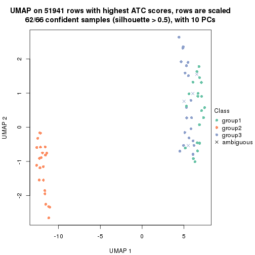
dimension_reduction(res, k = 4, method = "UMAP")
dimension_reduction(res, k = 5, method = "UMAP")
dimension_reduction(res, k = 6, method = "UMAP")
Following heatmap shows how subgroups are split when increasing k:
collect_classes(res)
Test correlation between subgroups and known annotations. If the known annotation is numeric, one-way ANOVA test is applied, and if the known annotation is discrete, chi-squared contingency table test is applied.
test_to_known_factors(res)
#> n disease.state(p) k
#> ATC:kmeans 66 0.16400 2
#> ATC:kmeans 62 0.00477 3
#> ATC:kmeans 59 0.00419 4
#> ATC:kmeans 38 0.01266 5
#> ATC:kmeans 46 0.00489 6
If matrix rows can be associated to genes, consider to use GO_Enrichment(res,
...) to perform function enrichment for the signature genes.
The object with results only for a single top-value method and a single partition method can be extracted as:
res = res_list["ATC", "skmeans"]
# you can also extract it by
# res = res_list["ATC:skmeans"]
A summary of res and all the functions that can be applied to it:
res
#> A 'ConsensusPartition' object with k = 2, 3, 4, 5, 6.
#> On a matrix with 51941 rows and 66 columns.
#> Top rows (1000, 2000, 3000, 4000, 5000) are extracted by 'ATC' method.
#> Subgroups are detected by 'skmeans' method.
#> Performed in total 1250 partitions by row resampling.
#> Best k for subgroups seems to be 3.
#>
#> Following methods can be applied to this 'ConsensusPartition' object:
#> [1] "cola_report" "collect_classes" "collect_plots"
#> [4] "collect_stats" "colnames" "compare_signatures"
#> [7] "consensus_heatmap" "dimension_reduction" "functional_enrichment"
#> [10] "get_anno_col" "get_anno" "get_classes"
#> [13] "get_consensus" "get_matrix" "get_membership"
#> [16] "get_param" "get_signatures" "get_stats"
#> [19] "is_best_k" "is_stable_k" "membership_heatmap"
#> [22] "ncol" "nrow" "plot_ecdf"
#> [25] "rownames" "select_partition_number" "show"
#> [28] "suggest_best_k" "test_to_known_factors"
collect_plots() function collects all the plots made from res for all k (number of partitions)
into one single page to provide an easy and fast comparison between different k.
collect_plots(res)
The plots are:
k and the heatmap of
predicted classes for each k.k.k.k.All the plots in panels can be made by individual functions and they are plotted later in this section.
select_partition_number() produces several plots showing different
statistics for choosing “optimized” k. There are following statistics:
k;k, the area increased is defined as \(A_k - A_{k-1}\).The detailed explanations of these statistics can be found in the cola vignette.
Generally speaking, lower PAC score, higher mean silhouette score or higher
concordance corresponds to better partition. Rand index and Jaccard index
measure how similar the current partition is compared to partition with k-1.
If they are too similar, we won't accept k is better than k-1.
select_partition_number(res)
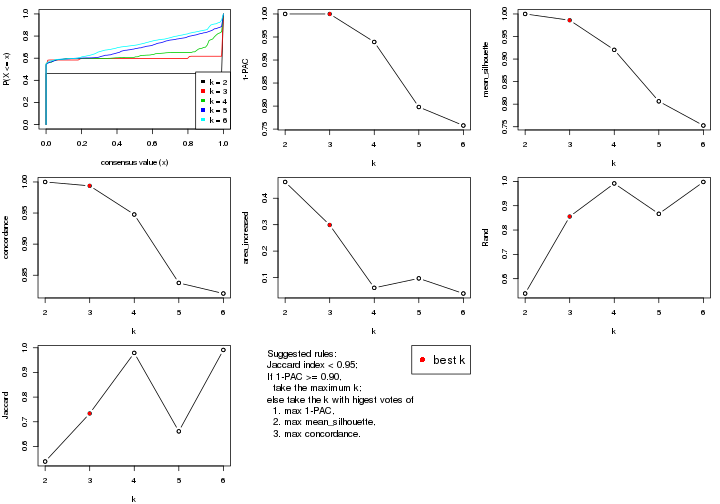
The numeric values for all these statistics can be obtained by get_stats().
get_stats(res)
#> k 1-PAC mean_silhouette concordance area_increased Rand Jaccard
#> 2 2 1.000 1.000 1.000 0.4616 0.539 0.539
#> 3 3 1.000 0.986 0.994 0.2988 0.855 0.734
#> 4 4 0.939 0.920 0.948 0.0609 0.992 0.979
#> 5 5 0.798 0.806 0.838 0.0967 0.867 0.661
#> 6 6 0.758 0.753 0.821 0.0394 0.998 0.991
suggest_best_k() suggests the best \(k\) based on these statistics. The rules are as follows:
NA.suggest_best_k(res)
#> [1] 3
#> attr(,"optional")
#> [1] 2
There is also optional best \(k\) = 2 that is worth to check.
Following shows the table of the partitions (You need to click the show/hide
code output link to see it). The membership matrix (columns with name p*)
is inferred by
clue::cl_consensus()
function with the SE method. Basically the value in the membership matrix
represents the probability to belong to a certain group. The finall class
label for an item is determined with the group with highest probability it
belongs to.
In get_classes() function, the entropy is calculated from the membership
matrix and the silhouette score is calculated from the consensus matrix.
cbind(get_classes(res, k = 2), get_membership(res, k = 2))
#> class entropy silhouette p1 p2
#> GSM103343 2 0 1 0 1
#> GSM103344 2 0 1 0 1
#> GSM103345 2 0 1 0 1
#> GSM103364 2 0 1 0 1
#> GSM103365 2 0 1 0 1
#> GSM103366 2 0 1 0 1
#> GSM103369 1 0 1 1 0
#> GSM103370 1 0 1 1 0
#> GSM103388 1 0 1 1 0
#> GSM103389 1 0 1 1 0
#> GSM103390 1 0 1 1 0
#> GSM103347 1 0 1 1 0
#> GSM103349 2 0 1 0 1
#> GSM103354 1 0 1 1 0
#> GSM103355 2 0 1 0 1
#> GSM103357 2 0 1 0 1
#> GSM103358 2 0 1 0 1
#> GSM103361 2 0 1 0 1
#> GSM103363 2 0 1 0 1
#> GSM103367 1 0 1 1 0
#> GSM103381 1 0 1 1 0
#> GSM103382 1 0 1 1 0
#> GSM103384 1 0 1 1 0
#> GSM103391 1 0 1 1 0
#> GSM103394 1 0 1 1 0
#> GSM103399 1 0 1 1 0
#> GSM103401 1 0 1 1 0
#> GSM103404 1 0 1 1 0
#> GSM103408 1 0 1 1 0
#> GSM103348 2 0 1 0 1
#> GSM103351 2 0 1 0 1
#> GSM103356 2 0 1 0 1
#> GSM103368 1 0 1 1 0
#> GSM103372 1 0 1 1 0
#> GSM103375 1 0 1 1 0
#> GSM103376 1 0 1 1 0
#> GSM103379 1 0 1 1 0
#> GSM103385 1 0 1 1 0
#> GSM103387 1 0 1 1 0
#> GSM103392 1 0 1 1 0
#> GSM103393 1 0 1 1 0
#> GSM103395 2 0 1 0 1
#> GSM103396 1 0 1 1 0
#> GSM103398 1 0 1 1 0
#> GSM103402 1 0 1 1 0
#> GSM103403 1 0 1 1 0
#> GSM103405 1 0 1 1 0
#> GSM103407 1 0 1 1 0
#> GSM103346 2 0 1 0 1
#> GSM103350 2 0 1 0 1
#> GSM103352 2 0 1 0 1
#> GSM103353 2 0 1 0 1
#> GSM103359 2 0 1 0 1
#> GSM103360 2 0 1 0 1
#> GSM103362 2 0 1 0 1
#> GSM103371 1 0 1 1 0
#> GSM103373 1 0 1 1 0
#> GSM103374 1 0 1 1 0
#> GSM103377 1 0 1 1 0
#> GSM103378 1 0 1 1 0
#> GSM103380 1 0 1 1 0
#> GSM103383 1 0 1 1 0
#> GSM103386 1 0 1 1 0
#> GSM103397 1 0 1 1 0
#> GSM103400 1 0 1 1 0
#> GSM103406 1 0 1 1 0
cbind(get_classes(res, k = 3), get_membership(res, k = 3))
#> class entropy silhouette p1 p2 p3
#> GSM103343 2 0.0000 1.000 0.000 1.000 0.000
#> GSM103344 2 0.0000 1.000 0.000 1.000 0.000
#> GSM103345 2 0.0000 1.000 0.000 1.000 0.000
#> GSM103364 2 0.0000 1.000 0.000 1.000 0.000
#> GSM103365 2 0.0000 1.000 0.000 1.000 0.000
#> GSM103366 2 0.0000 1.000 0.000 1.000 0.000
#> GSM103369 1 0.0000 0.994 1.000 0.000 0.000
#> GSM103370 1 0.0000 0.994 1.000 0.000 0.000
#> GSM103388 1 0.0000 0.994 1.000 0.000 0.000
#> GSM103389 1 0.0000 0.994 1.000 0.000 0.000
#> GSM103390 1 0.0000 0.994 1.000 0.000 0.000
#> GSM103347 1 0.0000 0.994 1.000 0.000 0.000
#> GSM103349 2 0.0000 1.000 0.000 1.000 0.000
#> GSM103354 3 0.0000 0.974 0.000 0.000 1.000
#> GSM103355 2 0.0000 1.000 0.000 1.000 0.000
#> GSM103357 2 0.0000 1.000 0.000 1.000 0.000
#> GSM103358 2 0.0000 1.000 0.000 1.000 0.000
#> GSM103361 2 0.0000 1.000 0.000 1.000 0.000
#> GSM103363 2 0.0000 1.000 0.000 1.000 0.000
#> GSM103367 3 0.0424 0.969 0.008 0.000 0.992
#> GSM103381 1 0.0000 0.994 1.000 0.000 0.000
#> GSM103382 1 0.0000 0.994 1.000 0.000 0.000
#> GSM103384 1 0.0000 0.994 1.000 0.000 0.000
#> GSM103391 1 0.0000 0.994 1.000 0.000 0.000
#> GSM103394 1 0.0000 0.994 1.000 0.000 0.000
#> GSM103399 3 0.0000 0.974 0.000 0.000 1.000
#> GSM103401 3 0.0000 0.974 0.000 0.000 1.000
#> GSM103404 1 0.0000 0.994 1.000 0.000 0.000
#> GSM103408 1 0.0000 0.994 1.000 0.000 0.000
#> GSM103348 2 0.0000 1.000 0.000 1.000 0.000
#> GSM103351 2 0.0000 1.000 0.000 1.000 0.000
#> GSM103356 2 0.0000 1.000 0.000 1.000 0.000
#> GSM103368 1 0.0424 0.986 0.992 0.000 0.008
#> GSM103372 1 0.4555 0.748 0.800 0.000 0.200
#> GSM103375 3 0.0000 0.974 0.000 0.000 1.000
#> GSM103376 3 0.0237 0.973 0.004 0.000 0.996
#> GSM103379 3 0.0237 0.973 0.004 0.000 0.996
#> GSM103385 3 0.0000 0.974 0.000 0.000 1.000
#> GSM103387 1 0.0000 0.994 1.000 0.000 0.000
#> GSM103392 1 0.0000 0.994 1.000 0.000 0.000
#> GSM103393 1 0.0000 0.994 1.000 0.000 0.000
#> GSM103395 3 0.4399 0.769 0.000 0.188 0.812
#> GSM103396 1 0.0000 0.994 1.000 0.000 0.000
#> GSM103398 1 0.0000 0.994 1.000 0.000 0.000
#> GSM103402 1 0.0000 0.994 1.000 0.000 0.000
#> GSM103403 1 0.0000 0.994 1.000 0.000 0.000
#> GSM103405 1 0.0000 0.994 1.000 0.000 0.000
#> GSM103407 1 0.0000 0.994 1.000 0.000 0.000
#> GSM103346 2 0.0000 1.000 0.000 1.000 0.000
#> GSM103350 2 0.0000 1.000 0.000 1.000 0.000
#> GSM103352 2 0.0000 1.000 0.000 1.000 0.000
#> GSM103353 2 0.0000 1.000 0.000 1.000 0.000
#> GSM103359 2 0.0000 1.000 0.000 1.000 0.000
#> GSM103360 2 0.0000 1.000 0.000 1.000 0.000
#> GSM103362 2 0.0000 1.000 0.000 1.000 0.000
#> GSM103371 1 0.0000 0.994 1.000 0.000 0.000
#> GSM103373 1 0.0000 0.994 1.000 0.000 0.000
#> GSM103374 1 0.0000 0.994 1.000 0.000 0.000
#> GSM103377 1 0.0000 0.994 1.000 0.000 0.000
#> GSM103378 1 0.0000 0.994 1.000 0.000 0.000
#> GSM103380 1 0.0000 0.994 1.000 0.000 0.000
#> GSM103383 1 0.0000 0.994 1.000 0.000 0.000
#> GSM103386 1 0.0000 0.994 1.000 0.000 0.000
#> GSM103397 1 0.0000 0.994 1.000 0.000 0.000
#> GSM103400 1 0.0000 0.994 1.000 0.000 0.000
#> GSM103406 1 0.0000 0.994 1.000 0.000 0.000
cbind(get_classes(res, k = 4), get_membership(res, k = 4))
#> class entropy silhouette p1 p2 p3 p4
#> GSM103343 2 0.0000 1.000 0.000 1 0.000 0.000
#> GSM103344 2 0.0000 1.000 0.000 1 0.000 0.000
#> GSM103345 2 0.0000 1.000 0.000 1 0.000 0.000
#> GSM103364 2 0.0000 1.000 0.000 1 0.000 0.000
#> GSM103365 2 0.0000 1.000 0.000 1 0.000 0.000
#> GSM103366 2 0.0000 1.000 0.000 1 0.000 0.000
#> GSM103369 1 0.0336 0.911 0.992 0 0.000 0.008
#> GSM103370 1 0.0000 0.913 1.000 0 0.000 0.000
#> GSM103388 1 0.0000 0.913 1.000 0 0.000 0.000
#> GSM103389 1 0.0000 0.913 1.000 0 0.000 0.000
#> GSM103390 1 0.1302 0.897 0.956 0 0.000 0.044
#> GSM103347 1 0.2149 0.908 0.912 0 0.088 0.000
#> GSM103349 2 0.0000 1.000 0.000 1 0.000 0.000
#> GSM103354 3 0.2149 1.000 0.000 0 0.912 0.088
#> GSM103355 2 0.0000 1.000 0.000 1 0.000 0.000
#> GSM103357 2 0.0000 1.000 0.000 1 0.000 0.000
#> GSM103358 2 0.0000 1.000 0.000 1 0.000 0.000
#> GSM103361 2 0.0000 1.000 0.000 1 0.000 0.000
#> GSM103363 2 0.0000 1.000 0.000 1 0.000 0.000
#> GSM103367 4 0.0188 0.957 0.000 0 0.004 0.996
#> GSM103381 1 0.0000 0.913 1.000 0 0.000 0.000
#> GSM103382 1 0.1022 0.913 0.968 0 0.032 0.000
#> GSM103384 1 0.0000 0.913 1.000 0 0.000 0.000
#> GSM103391 1 0.1302 0.913 0.956 0 0.044 0.000
#> GSM103394 1 0.2149 0.908 0.912 0 0.088 0.000
#> GSM103399 4 0.2053 0.913 0.004 0 0.072 0.924
#> GSM103401 3 0.2149 1.000 0.000 0 0.912 0.088
#> GSM103404 1 0.2149 0.908 0.912 0 0.088 0.000
#> GSM103408 1 0.2149 0.908 0.912 0 0.088 0.000
#> GSM103348 2 0.0000 1.000 0.000 1 0.000 0.000
#> GSM103351 2 0.0000 1.000 0.000 1 0.000 0.000
#> GSM103356 2 0.0000 1.000 0.000 1 0.000 0.000
#> GSM103368 1 0.4830 0.394 0.608 0 0.000 0.392
#> GSM103372 1 0.4888 0.342 0.588 0 0.000 0.412
#> GSM103375 4 0.0921 0.946 0.000 0 0.028 0.972
#> GSM103376 4 0.0188 0.957 0.000 0 0.004 0.996
#> GSM103379 4 0.1211 0.905 0.040 0 0.000 0.960
#> GSM103385 4 0.0592 0.955 0.000 0 0.016 0.984
#> GSM103387 1 0.1637 0.889 0.940 0 0.000 0.060
#> GSM103392 1 0.2081 0.872 0.916 0 0.000 0.084
#> GSM103393 1 0.2149 0.908 0.912 0 0.088 0.000
#> GSM103395 3 0.2149 1.000 0.000 0 0.912 0.088
#> GSM103396 1 0.2149 0.908 0.912 0 0.088 0.000
#> GSM103398 1 0.2149 0.908 0.912 0 0.088 0.000
#> GSM103402 1 0.2149 0.908 0.912 0 0.088 0.000
#> GSM103403 1 0.2149 0.908 0.912 0 0.088 0.000
#> GSM103405 1 0.2149 0.908 0.912 0 0.088 0.000
#> GSM103407 1 0.2149 0.908 0.912 0 0.088 0.000
#> GSM103346 2 0.0000 1.000 0.000 1 0.000 0.000
#> GSM103350 2 0.0000 1.000 0.000 1 0.000 0.000
#> GSM103352 2 0.0000 1.000 0.000 1 0.000 0.000
#> GSM103353 2 0.0000 1.000 0.000 1 0.000 0.000
#> GSM103359 2 0.0000 1.000 0.000 1 0.000 0.000
#> GSM103360 2 0.0000 1.000 0.000 1 0.000 0.000
#> GSM103362 2 0.0000 1.000 0.000 1 0.000 0.000
#> GSM103371 1 0.0188 0.912 0.996 0 0.000 0.004
#> GSM103373 1 0.0469 0.910 0.988 0 0.000 0.012
#> GSM103374 1 0.4804 0.412 0.616 0 0.000 0.384
#> GSM103377 1 0.1792 0.884 0.932 0 0.000 0.068
#> GSM103378 1 0.0000 0.913 1.000 0 0.000 0.000
#> GSM103380 1 0.1867 0.881 0.928 0 0.000 0.072
#> GSM103383 1 0.0817 0.906 0.976 0 0.000 0.024
#> GSM103386 1 0.1557 0.891 0.944 0 0.000 0.056
#> GSM103397 1 0.2149 0.908 0.912 0 0.088 0.000
#> GSM103400 1 0.2149 0.908 0.912 0 0.088 0.000
#> GSM103406 1 0.1557 0.912 0.944 0 0.056 0.000
cbind(get_classes(res, k = 5), get_membership(res, k = 5))
#> class entropy silhouette p1 p2 p3 p4 p5
#> GSM103343 2 0.0000 0.9981 0.000 1.000 0.000 0.000 0.000
#> GSM103344 2 0.0000 0.9981 0.000 1.000 0.000 0.000 0.000
#> GSM103345 2 0.0000 0.9981 0.000 1.000 0.000 0.000 0.000
#> GSM103364 2 0.0000 0.9981 0.000 1.000 0.000 0.000 0.000
#> GSM103365 2 0.0000 0.9981 0.000 1.000 0.000 0.000 0.000
#> GSM103366 2 0.0000 0.9981 0.000 1.000 0.000 0.000 0.000
#> GSM103369 1 0.1341 0.7054 0.944 0.000 0.000 0.000 0.056
#> GSM103370 1 0.2690 0.6289 0.844 0.000 0.000 0.000 0.156
#> GSM103388 1 0.2852 0.6036 0.828 0.000 0.000 0.000 0.172
#> GSM103389 1 0.2605 0.6385 0.852 0.000 0.000 0.000 0.148
#> GSM103390 1 0.1041 0.7166 0.964 0.000 0.000 0.032 0.004
#> GSM103347 5 0.4294 0.8600 0.468 0.000 0.000 0.000 0.532
#> GSM103349 2 0.0000 0.9981 0.000 1.000 0.000 0.000 0.000
#> GSM103354 3 0.0290 0.9312 0.000 0.000 0.992 0.008 0.000
#> GSM103355 2 0.0000 0.9981 0.000 1.000 0.000 0.000 0.000
#> GSM103357 2 0.0000 0.9981 0.000 1.000 0.000 0.000 0.000
#> GSM103358 2 0.0000 0.9981 0.000 1.000 0.000 0.000 0.000
#> GSM103361 2 0.0000 0.9981 0.000 1.000 0.000 0.000 0.000
#> GSM103363 2 0.0000 0.9981 0.000 1.000 0.000 0.000 0.000
#> GSM103367 4 0.0865 0.8577 0.024 0.000 0.004 0.972 0.000
#> GSM103381 1 0.2813 0.6106 0.832 0.000 0.000 0.000 0.168
#> GSM103382 1 0.3684 0.2635 0.720 0.000 0.000 0.000 0.280
#> GSM103384 1 0.3143 0.5358 0.796 0.000 0.000 0.000 0.204
#> GSM103391 1 0.3983 -0.0723 0.660 0.000 0.000 0.000 0.340
#> GSM103394 5 0.4262 0.8944 0.440 0.000 0.000 0.000 0.560
#> GSM103399 4 0.6422 0.5029 0.048 0.000 0.080 0.564 0.308
#> GSM103401 3 0.0162 0.9305 0.000 0.000 0.996 0.004 0.000
#> GSM103404 5 0.4321 0.8908 0.396 0.000 0.004 0.000 0.600
#> GSM103408 5 0.4278 0.8880 0.452 0.000 0.000 0.000 0.548
#> GSM103348 2 0.0290 0.9941 0.000 0.992 0.000 0.000 0.008
#> GSM103351 2 0.0000 0.9981 0.000 1.000 0.000 0.000 0.000
#> GSM103356 2 0.0162 0.9962 0.000 0.996 0.000 0.000 0.004
#> GSM103368 1 0.3690 0.5268 0.764 0.000 0.000 0.224 0.012
#> GSM103372 1 0.4130 0.4441 0.696 0.000 0.000 0.292 0.012
#> GSM103375 4 0.1764 0.8340 0.000 0.000 0.008 0.928 0.064
#> GSM103376 4 0.0833 0.8589 0.016 0.000 0.004 0.976 0.004
#> GSM103379 4 0.3273 0.7704 0.112 0.000 0.004 0.848 0.036
#> GSM103385 4 0.0833 0.8545 0.004 0.000 0.004 0.976 0.016
#> GSM103387 1 0.0955 0.7183 0.968 0.000 0.000 0.028 0.004
#> GSM103392 1 0.1557 0.6990 0.940 0.000 0.000 0.052 0.008
#> GSM103393 5 0.4210 0.8954 0.412 0.000 0.000 0.000 0.588
#> GSM103395 3 0.3656 0.8597 0.000 0.000 0.800 0.032 0.168
#> GSM103396 5 0.4299 0.8287 0.388 0.000 0.004 0.000 0.608
#> GSM103398 5 0.4341 0.8987 0.404 0.000 0.004 0.000 0.592
#> GSM103402 5 0.4278 0.8871 0.452 0.000 0.000 0.000 0.548
#> GSM103403 5 0.4287 0.8760 0.460 0.000 0.000 0.000 0.540
#> GSM103405 5 0.4410 0.8794 0.440 0.000 0.004 0.000 0.556
#> GSM103407 5 0.4288 0.8641 0.384 0.000 0.004 0.000 0.612
#> GSM103346 2 0.0290 0.9941 0.000 0.992 0.000 0.000 0.008
#> GSM103350 2 0.0290 0.9941 0.000 0.992 0.000 0.000 0.008
#> GSM103352 2 0.0290 0.9941 0.000 0.992 0.000 0.000 0.008
#> GSM103353 2 0.0290 0.9941 0.000 0.992 0.000 0.000 0.008
#> GSM103359 2 0.0000 0.9981 0.000 1.000 0.000 0.000 0.000
#> GSM103360 2 0.0000 0.9981 0.000 1.000 0.000 0.000 0.000
#> GSM103362 2 0.0000 0.9981 0.000 1.000 0.000 0.000 0.000
#> GSM103371 1 0.2230 0.6695 0.884 0.000 0.000 0.000 0.116
#> GSM103373 1 0.0794 0.7157 0.972 0.000 0.000 0.000 0.028
#> GSM103374 1 0.3203 0.5848 0.820 0.000 0.000 0.168 0.012
#> GSM103377 1 0.0880 0.7181 0.968 0.000 0.000 0.032 0.000
#> GSM103378 1 0.3274 0.4977 0.780 0.000 0.000 0.000 0.220
#> GSM103380 1 0.1124 0.7142 0.960 0.000 0.000 0.036 0.004
#> GSM103383 1 0.0579 0.7196 0.984 0.000 0.000 0.008 0.008
#> GSM103386 1 0.0794 0.7191 0.972 0.000 0.000 0.028 0.000
#> GSM103397 5 0.4166 0.8154 0.348 0.000 0.004 0.000 0.648
#> GSM103400 5 0.4283 0.8836 0.456 0.000 0.000 0.000 0.544
#> GSM103406 1 0.4102 0.1607 0.692 0.000 0.004 0.004 0.300
cbind(get_classes(res, k = 6), get_membership(res, k = 6))
#> class entropy silhouette p1 p2 p3 p4 p5 p6
#> GSM103343 2 0.0000 0.9789 0.000 1.000 0.000 0.000 0.000 0.000
#> GSM103344 2 0.0000 0.9789 0.000 1.000 0.000 0.000 0.000 0.000
#> GSM103345 2 0.0000 0.9789 0.000 1.000 0.000 0.000 0.000 0.000
#> GSM103364 2 0.0000 0.9789 0.000 1.000 0.000 0.000 0.000 0.000
#> GSM103365 2 0.0000 0.9789 0.000 1.000 0.000 0.000 0.000 0.000
#> GSM103366 2 0.0000 0.9789 0.000 1.000 0.000 0.000 0.000 0.000
#> GSM103369 1 0.2118 0.6759 0.888 0.000 0.000 0.000 0.104 0.008
#> GSM103370 1 0.3674 0.5723 0.716 0.000 0.000 0.000 0.268 0.016
#> GSM103388 1 0.3816 0.5381 0.688 0.000 0.000 0.000 0.296 0.016
#> GSM103389 1 0.3717 0.5658 0.708 0.000 0.000 0.000 0.276 0.016
#> GSM103390 1 0.0260 0.6927 0.992 0.000 0.000 0.000 0.008 0.000
#> GSM103347 5 0.4002 0.7766 0.320 0.000 0.000 0.000 0.660 0.020
#> GSM103349 2 0.0363 0.9761 0.000 0.988 0.000 0.000 0.000 0.012
#> GSM103354 3 0.0146 0.8327 0.000 0.000 0.996 0.004 0.000 0.000
#> GSM103355 2 0.0146 0.9784 0.000 0.996 0.000 0.000 0.000 0.004
#> GSM103357 2 0.0260 0.9777 0.000 0.992 0.000 0.000 0.000 0.008
#> GSM103358 2 0.0000 0.9789 0.000 1.000 0.000 0.000 0.000 0.000
#> GSM103361 2 0.0000 0.9789 0.000 1.000 0.000 0.000 0.000 0.000
#> GSM103363 2 0.0000 0.9789 0.000 1.000 0.000 0.000 0.000 0.000
#> GSM103367 4 0.2313 0.7891 0.044 0.000 0.000 0.904 0.016 0.036
#> GSM103381 1 0.3778 0.5500 0.696 0.000 0.000 0.000 0.288 0.016
#> GSM103382 1 0.4246 0.2365 0.580 0.000 0.000 0.000 0.400 0.020
#> GSM103384 1 0.3934 0.5191 0.676 0.000 0.000 0.000 0.304 0.020
#> GSM103391 1 0.4328 -0.0468 0.520 0.000 0.000 0.000 0.460 0.020
#> GSM103394 5 0.3266 0.8258 0.272 0.000 0.000 0.000 0.728 0.000
#> GSM103399 6 0.4917 0.0000 0.012 0.000 0.020 0.176 0.080 0.712
#> GSM103401 3 0.0653 0.8291 0.000 0.000 0.980 0.004 0.004 0.012
#> GSM103404 5 0.4669 0.8172 0.284 0.000 0.004 0.000 0.648 0.064
#> GSM103408 5 0.3758 0.8086 0.284 0.000 0.000 0.000 0.700 0.016
#> GSM103348 2 0.1610 0.9360 0.000 0.916 0.000 0.000 0.000 0.084
#> GSM103351 2 0.0260 0.9777 0.000 0.992 0.000 0.000 0.000 0.008
#> GSM103356 2 0.0547 0.9730 0.000 0.980 0.000 0.000 0.000 0.020
#> GSM103368 1 0.3513 0.5461 0.804 0.000 0.000 0.152 0.020 0.024
#> GSM103372 1 0.4253 0.4604 0.720 0.000 0.000 0.228 0.020 0.032
#> GSM103375 4 0.2129 0.7424 0.000 0.000 0.000 0.904 0.040 0.056
#> GSM103376 4 0.2071 0.7942 0.044 0.000 0.000 0.916 0.012 0.028
#> GSM103379 4 0.5060 0.5035 0.180 0.000 0.004 0.688 0.020 0.108
#> GSM103385 4 0.1692 0.7850 0.012 0.000 0.000 0.932 0.008 0.048
#> GSM103387 1 0.0291 0.6884 0.992 0.000 0.000 0.004 0.000 0.004
#> GSM103392 1 0.1065 0.6770 0.964 0.000 0.000 0.020 0.008 0.008
#> GSM103393 5 0.4827 0.8126 0.276 0.000 0.000 0.000 0.632 0.092
#> GSM103395 3 0.5563 0.6453 0.000 0.000 0.660 0.068 0.156 0.116
#> GSM103396 5 0.5015 0.7606 0.288 0.000 0.004 0.000 0.616 0.092
#> GSM103398 5 0.3933 0.8344 0.248 0.000 0.000 0.000 0.716 0.036
#> GSM103402 5 0.3670 0.8230 0.284 0.000 0.000 0.000 0.704 0.012
#> GSM103403 5 0.3710 0.8173 0.292 0.000 0.000 0.000 0.696 0.012
#> GSM103405 5 0.4697 0.7966 0.324 0.000 0.000 0.000 0.612 0.064
#> GSM103407 5 0.4954 0.7776 0.260 0.000 0.000 0.000 0.628 0.112
#> GSM103346 2 0.1556 0.9386 0.000 0.920 0.000 0.000 0.000 0.080
#> GSM103350 2 0.1610 0.9360 0.000 0.916 0.000 0.000 0.000 0.084
#> GSM103352 2 0.1610 0.9360 0.000 0.916 0.000 0.000 0.000 0.084
#> GSM103353 2 0.1610 0.9360 0.000 0.916 0.000 0.000 0.000 0.084
#> GSM103359 2 0.0260 0.9777 0.000 0.992 0.000 0.000 0.000 0.008
#> GSM103360 2 0.0000 0.9789 0.000 1.000 0.000 0.000 0.000 0.000
#> GSM103362 2 0.0000 0.9789 0.000 1.000 0.000 0.000 0.000 0.000
#> GSM103371 1 0.3483 0.6019 0.748 0.000 0.000 0.000 0.236 0.016
#> GSM103373 1 0.1753 0.6842 0.912 0.000 0.000 0.000 0.084 0.004
#> GSM103374 1 0.3012 0.5858 0.852 0.000 0.000 0.104 0.024 0.020
#> GSM103377 1 0.0260 0.6926 0.992 0.000 0.000 0.000 0.008 0.000
#> GSM103378 1 0.4002 0.4840 0.660 0.000 0.000 0.000 0.320 0.020
#> GSM103380 1 0.0951 0.6882 0.968 0.000 0.000 0.008 0.020 0.004
#> GSM103383 1 0.0632 0.6925 0.976 0.000 0.000 0.000 0.024 0.000
#> GSM103386 1 0.0146 0.6896 0.996 0.000 0.000 0.000 0.000 0.004
#> GSM103397 5 0.5124 0.7932 0.252 0.000 0.004 0.000 0.624 0.120
#> GSM103400 5 0.3816 0.7943 0.296 0.000 0.000 0.000 0.688 0.016
#> GSM103406 1 0.4747 0.2115 0.632 0.000 0.000 0.000 0.288 0.080
Heatmaps for the consensus matrix. It visualizes the probability of two samples to be in a same group.
consensus_heatmap(res, k = 2)
consensus_heatmap(res, k = 3)

consensus_heatmap(res, k = 4)
consensus_heatmap(res, k = 5)
consensus_heatmap(res, k = 6)
Heatmaps for the membership of samples in all partitions to see how consistent they are:
membership_heatmap(res, k = 2)
membership_heatmap(res, k = 3)
membership_heatmap(res, k = 4)
membership_heatmap(res, k = 5)
membership_heatmap(res, k = 6)
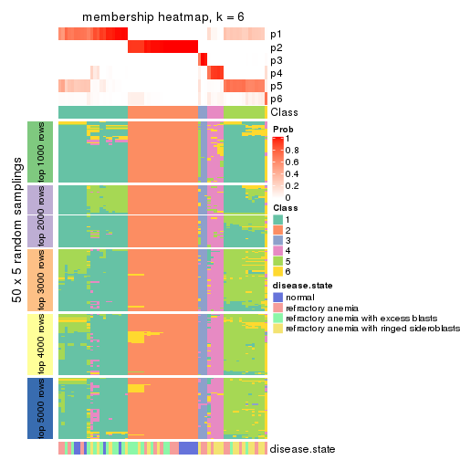
As soon as we have had the classes for columns, we can look for signatures which are significantly different between classes which can be candidate marks for certain classes. Following are the heatmaps for signatures.
Signature heatmaps where rows are scaled:
get_signatures(res, k = 2)
get_signatures(res, k = 3)
get_signatures(res, k = 4)
get_signatures(res, k = 5)
get_signatures(res, k = 6)
Signature heatmaps where rows are not scaled:
get_signatures(res, k = 2, scale_rows = FALSE)
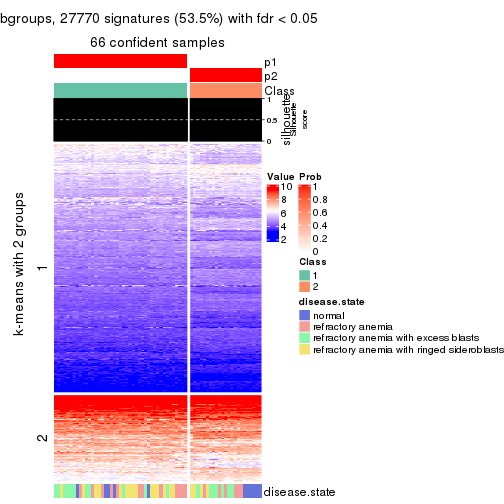
get_signatures(res, k = 3, scale_rows = FALSE)

get_signatures(res, k = 4, scale_rows = FALSE)
get_signatures(res, k = 5, scale_rows = FALSE)
get_signatures(res, k = 6, scale_rows = FALSE)
Compare the overlap of signatures from different k:
compare_signatures(res)
get_signature() returns a data frame invisibly. TO get the list of signatures, the function
call should be assigned to a variable explicitly. In following code, if plot argument is set
to FALSE, no heatmap is plotted while only the differential analysis is performed.
# code only for demonstration
tb = get_signature(res, k = ..., plot = FALSE)
An example of the output of tb is:
#> which_row fdr mean_1 mean_2 scaled_mean_1 scaled_mean_2 km
#> 1 38 0.042760348 8.373488 9.131774 -0.5533452 0.5164555 1
#> 2 40 0.018707592 7.106213 8.469186 -0.6173731 0.5762149 1
#> 3 55 0.019134737 10.221463 11.207825 -0.6159697 0.5749050 1
#> 4 59 0.006059896 5.921854 7.869574 -0.6899429 0.6439467 1
#> 5 60 0.018055526 8.928898 10.211722 -0.6204761 0.5791110 1
#> 6 98 0.009384629 15.714769 14.887706 0.6635654 -0.6193277 2
...
The columns in tb are:
which_row: row indices corresponding to the input matrix.fdr: FDR for the differential test. mean_x: The mean value in group x.scaled_mean_x: The mean value in group x after rows are scaled.km: Row groups if k-means clustering is applied to rows.UMAP plot which shows how samples are separated.
dimension_reduction(res, k = 2, method = "UMAP")
dimension_reduction(res, k = 3, method = "UMAP")
dimension_reduction(res, k = 4, method = "UMAP")
dimension_reduction(res, k = 5, method = "UMAP")
dimension_reduction(res, k = 6, method = "UMAP")
Following heatmap shows how subgroups are split when increasing k:
collect_classes(res)
Test correlation between subgroups and known annotations. If the known annotation is numeric, one-way ANOVA test is applied, and if the known annotation is discrete, chi-squared contingency table test is applied.
test_to_known_factors(res)
#> n disease.state(p) k
#> ATC:skmeans 66 0.3055 2
#> ATC:skmeans 66 0.0810 3
#> ATC:skmeans 63 0.1905 4
#> ATC:skmeans 61 0.0327 5
#> ATC:skmeans 60 0.0255 6
If matrix rows can be associated to genes, consider to use GO_Enrichment(res,
...) to perform function enrichment for the signature genes.
The object with results only for a single top-value method and a single partition method can be extracted as:
res = res_list["ATC", "pam"]
# you can also extract it by
# res = res_list["ATC:pam"]
A summary of res and all the functions that can be applied to it:
res
#> A 'ConsensusPartition' object with k = 2, 3, 4, 5, 6.
#> On a matrix with 51941 rows and 66 columns.
#> Top rows (1000, 2000, 3000, 4000, 5000) are extracted by 'ATC' method.
#> Subgroups are detected by 'pam' method.
#> Performed in total 1250 partitions by row resampling.
#> Best k for subgroups seems to be 3.
#>
#> Following methods can be applied to this 'ConsensusPartition' object:
#> [1] "cola_report" "collect_classes" "collect_plots"
#> [4] "collect_stats" "colnames" "compare_signatures"
#> [7] "consensus_heatmap" "dimension_reduction" "functional_enrichment"
#> [10] "get_anno_col" "get_anno" "get_classes"
#> [13] "get_consensus" "get_matrix" "get_membership"
#> [16] "get_param" "get_signatures" "get_stats"
#> [19] "is_best_k" "is_stable_k" "membership_heatmap"
#> [22] "ncol" "nrow" "plot_ecdf"
#> [25] "rownames" "select_partition_number" "show"
#> [28] "suggest_best_k" "test_to_known_factors"
collect_plots() function collects all the plots made from res for all k (number of partitions)
into one single page to provide an easy and fast comparison between different k.
collect_plots(res)
The plots are:
k and the heatmap of
predicted classes for each k.k.k.k.All the plots in panels can be made by individual functions and they are plotted later in this section.
select_partition_number() produces several plots showing different
statistics for choosing “optimized” k. There are following statistics:
k;k, the area increased is defined as \(A_k - A_{k-1}\).The detailed explanations of these statistics can be found in the cola vignette.
Generally speaking, lower PAC score, higher mean silhouette score or higher
concordance corresponds to better partition. Rand index and Jaccard index
measure how similar the current partition is compared to partition with k-1.
If they are too similar, we won't accept k is better than k-1.
select_partition_number(res)
The numeric values for all these statistics can be obtained by get_stats().
get_stats(res)
#> k 1-PAC mean_silhouette concordance area_increased Rand Jaccard
#> 2 2 1.000 1.000 1.000 0.4518 0.549 0.549
#> 3 3 0.940 0.916 0.966 0.4970 0.774 0.589
#> 4 4 0.774 0.773 0.868 0.0888 0.915 0.744
#> 5 5 0.736 0.610 0.789 0.0634 0.910 0.679
#> 6 6 0.749 0.555 0.760 0.0359 0.891 0.560
suggest_best_k() suggests the best \(k\) based on these statistics. The rules are as follows:
NA.suggest_best_k(res)
#> [1] 3
#> attr(,"optional")
#> [1] 2
There is also optional best \(k\) = 2 that is worth to check.
Following shows the table of the partitions (You need to click the show/hide
code output link to see it). The membership matrix (columns with name p*)
is inferred by
clue::cl_consensus()
function with the SE method. Basically the value in the membership matrix
represents the probability to belong to a certain group. The finall class
label for an item is determined with the group with highest probability it
belongs to.
In get_classes() function, the entropy is calculated from the membership
matrix and the silhouette score is calculated from the consensus matrix.
cbind(get_classes(res, k = 2), get_membership(res, k = 2))
#> class entropy silhouette p1 p2
#> GSM103343 2 0 1 0 1
#> GSM103344 2 0 1 0 1
#> GSM103345 2 0 1 0 1
#> GSM103364 2 0 1 0 1
#> GSM103365 2 0 1 0 1
#> GSM103366 2 0 1 0 1
#> GSM103369 1 0 1 1 0
#> GSM103370 1 0 1 1 0
#> GSM103388 1 0 1 1 0
#> GSM103389 1 0 1 1 0
#> GSM103390 1 0 1 1 0
#> GSM103347 1 0 1 1 0
#> GSM103349 2 0 1 0 1
#> GSM103354 1 0 1 1 0
#> GSM103355 2 0 1 0 1
#> GSM103357 2 0 1 0 1
#> GSM103358 2 0 1 0 1
#> GSM103361 2 0 1 0 1
#> GSM103363 2 0 1 0 1
#> GSM103367 1 0 1 1 0
#> GSM103381 1 0 1 1 0
#> GSM103382 1 0 1 1 0
#> GSM103384 1 0 1 1 0
#> GSM103391 1 0 1 1 0
#> GSM103394 1 0 1 1 0
#> GSM103399 1 0 1 1 0
#> GSM103401 1 0 1 1 0
#> GSM103404 1 0 1 1 0
#> GSM103408 1 0 1 1 0
#> GSM103348 2 0 1 0 1
#> GSM103351 2 0 1 0 1
#> GSM103356 2 0 1 0 1
#> GSM103368 1 0 1 1 0
#> GSM103372 1 0 1 1 0
#> GSM103375 1 0 1 1 0
#> GSM103376 1 0 1 1 0
#> GSM103379 1 0 1 1 0
#> GSM103385 1 0 1 1 0
#> GSM103387 1 0 1 1 0
#> GSM103392 1 0 1 1 0
#> GSM103393 1 0 1 1 0
#> GSM103395 1 0 1 1 0
#> GSM103396 1 0 1 1 0
#> GSM103398 1 0 1 1 0
#> GSM103402 1 0 1 1 0
#> GSM103403 1 0 1 1 0
#> GSM103405 1 0 1 1 0
#> GSM103407 1 0 1 1 0
#> GSM103346 2 0 1 0 1
#> GSM103350 2 0 1 0 1
#> GSM103352 2 0 1 0 1
#> GSM103353 2 0 1 0 1
#> GSM103359 2 0 1 0 1
#> GSM103360 2 0 1 0 1
#> GSM103362 2 0 1 0 1
#> GSM103371 1 0 1 1 0
#> GSM103373 1 0 1 1 0
#> GSM103374 1 0 1 1 0
#> GSM103377 1 0 1 1 0
#> GSM103378 1 0 1 1 0
#> GSM103380 1 0 1 1 0
#> GSM103383 1 0 1 1 0
#> GSM103386 1 0 1 1 0
#> GSM103397 1 0 1 1 0
#> GSM103400 1 0 1 1 0
#> GSM103406 1 0 1 1 0
cbind(get_classes(res, k = 3), get_membership(res, k = 3))
#> class entropy silhouette p1 p2 p3
#> GSM103343 2 0.0000 1.000 0.000 1 0.000
#> GSM103344 2 0.0000 1.000 0.000 1 0.000
#> GSM103345 2 0.0000 1.000 0.000 1 0.000
#> GSM103364 2 0.0000 1.000 0.000 1 0.000
#> GSM103365 2 0.0000 1.000 0.000 1 0.000
#> GSM103366 2 0.0000 1.000 0.000 1 0.000
#> GSM103369 1 0.0000 0.920 1.000 0 0.000
#> GSM103370 1 0.0000 0.920 1.000 0 0.000
#> GSM103388 1 0.0000 0.920 1.000 0 0.000
#> GSM103389 1 0.0000 0.920 1.000 0 0.000
#> GSM103390 3 0.5968 0.365 0.364 0 0.636
#> GSM103347 3 0.5650 0.495 0.312 0 0.688
#> GSM103349 2 0.0000 1.000 0.000 1 0.000
#> GSM103354 3 0.0000 0.963 0.000 0 1.000
#> GSM103355 2 0.0000 1.000 0.000 1 0.000
#> GSM103357 2 0.0000 1.000 0.000 1 0.000
#> GSM103358 2 0.0000 1.000 0.000 1 0.000
#> GSM103361 2 0.0000 1.000 0.000 1 0.000
#> GSM103363 2 0.0000 1.000 0.000 1 0.000
#> GSM103367 3 0.0000 0.963 0.000 0 1.000
#> GSM103381 1 0.0000 0.920 1.000 0 0.000
#> GSM103382 1 0.0000 0.920 1.000 0 0.000
#> GSM103384 1 0.0000 0.920 1.000 0 0.000
#> GSM103391 1 0.0000 0.920 1.000 0 0.000
#> GSM103394 1 0.1860 0.883 0.948 0 0.052
#> GSM103399 3 0.0000 0.963 0.000 0 1.000
#> GSM103401 3 0.0000 0.963 0.000 0 1.000
#> GSM103404 3 0.0000 0.963 0.000 0 1.000
#> GSM103408 1 0.0000 0.920 1.000 0 0.000
#> GSM103348 2 0.0000 1.000 0.000 1 0.000
#> GSM103351 2 0.0000 1.000 0.000 1 0.000
#> GSM103356 2 0.0000 1.000 0.000 1 0.000
#> GSM103368 3 0.0000 0.963 0.000 0 1.000
#> GSM103372 3 0.0000 0.963 0.000 0 1.000
#> GSM103375 3 0.0000 0.963 0.000 0 1.000
#> GSM103376 3 0.0000 0.963 0.000 0 1.000
#> GSM103379 3 0.0000 0.963 0.000 0 1.000
#> GSM103385 3 0.0000 0.963 0.000 0 1.000
#> GSM103387 1 0.6154 0.342 0.592 0 0.408
#> GSM103392 3 0.0747 0.948 0.016 0 0.984
#> GSM103393 3 0.0000 0.963 0.000 0 1.000
#> GSM103395 3 0.0000 0.963 0.000 0 1.000
#> GSM103396 3 0.0000 0.963 0.000 0 1.000
#> GSM103398 3 0.0000 0.963 0.000 0 1.000
#> GSM103402 1 0.5560 0.570 0.700 0 0.300
#> GSM103403 1 0.4346 0.750 0.816 0 0.184
#> GSM103405 3 0.0000 0.963 0.000 0 1.000
#> GSM103407 3 0.0000 0.963 0.000 0 1.000
#> GSM103346 2 0.0000 1.000 0.000 1 0.000
#> GSM103350 2 0.0000 1.000 0.000 1 0.000
#> GSM103352 2 0.0000 1.000 0.000 1 0.000
#> GSM103353 2 0.0000 1.000 0.000 1 0.000
#> GSM103359 2 0.0000 1.000 0.000 1 0.000
#> GSM103360 2 0.0000 1.000 0.000 1 0.000
#> GSM103362 2 0.0000 1.000 0.000 1 0.000
#> GSM103371 1 0.0000 0.920 1.000 0 0.000
#> GSM103373 1 0.0000 0.920 1.000 0 0.000
#> GSM103374 1 0.6126 0.362 0.600 0 0.400
#> GSM103377 1 0.0000 0.920 1.000 0 0.000
#> GSM103378 1 0.0000 0.920 1.000 0 0.000
#> GSM103380 1 0.4555 0.729 0.800 0 0.200
#> GSM103383 1 0.0000 0.920 1.000 0 0.000
#> GSM103386 1 0.0000 0.920 1.000 0 0.000
#> GSM103397 3 0.0000 0.963 0.000 0 1.000
#> GSM103400 1 0.0000 0.920 1.000 0 0.000
#> GSM103406 3 0.0000 0.963 0.000 0 1.000
cbind(get_classes(res, k = 4), get_membership(res, k = 4))
#> class entropy silhouette p1 p2 p3 p4
#> GSM103343 2 0.0000 0.8966 0.000 1.0 0.000 0.000
#> GSM103344 2 0.0000 0.8966 0.000 1.0 0.000 0.000
#> GSM103345 2 0.0000 0.8966 0.000 1.0 0.000 0.000
#> GSM103364 2 0.0000 0.8966 0.000 1.0 0.000 0.000
#> GSM103365 2 0.3610 0.9150 0.000 0.8 0.000 0.200
#> GSM103366 2 0.3610 0.9150 0.000 0.8 0.000 0.200
#> GSM103369 1 0.4331 0.6066 0.712 0.0 0.000 0.288
#> GSM103370 1 0.0000 0.8903 1.000 0.0 0.000 0.000
#> GSM103388 1 0.0000 0.8903 1.000 0.0 0.000 0.000
#> GSM103389 1 0.0000 0.8903 1.000 0.0 0.000 0.000
#> GSM103390 4 0.7093 0.6732 0.212 0.0 0.220 0.568
#> GSM103347 3 0.6922 0.1917 0.248 0.0 0.584 0.168
#> GSM103349 2 0.0000 0.8966 0.000 1.0 0.000 0.000
#> GSM103354 3 0.0336 0.8628 0.000 0.0 0.992 0.008
#> GSM103355 2 0.3610 0.9150 0.000 0.8 0.000 0.200
#> GSM103357 2 0.3610 0.9150 0.000 0.8 0.000 0.200
#> GSM103358 2 0.3610 0.9150 0.000 0.8 0.000 0.200
#> GSM103361 2 0.0000 0.8966 0.000 1.0 0.000 0.000
#> GSM103363 2 0.0000 0.8966 0.000 1.0 0.000 0.000
#> GSM103367 3 0.4697 0.1030 0.000 0.0 0.644 0.356
#> GSM103381 1 0.0000 0.8903 1.000 0.0 0.000 0.000
#> GSM103382 1 0.0000 0.8903 1.000 0.0 0.000 0.000
#> GSM103384 1 0.0000 0.8903 1.000 0.0 0.000 0.000
#> GSM103391 1 0.0336 0.8881 0.992 0.0 0.008 0.000
#> GSM103394 1 0.0817 0.8775 0.976 0.0 0.024 0.000
#> GSM103399 3 0.0336 0.8628 0.000 0.0 0.992 0.008
#> GSM103401 3 0.0336 0.8628 0.000 0.0 0.992 0.008
#> GSM103404 3 0.0000 0.8657 0.000 0.0 1.000 0.000
#> GSM103408 1 0.0336 0.8881 0.992 0.0 0.008 0.000
#> GSM103348 2 0.3610 0.9150 0.000 0.8 0.000 0.200
#> GSM103351 2 0.3610 0.9150 0.000 0.8 0.000 0.200
#> GSM103356 2 0.3610 0.9150 0.000 0.8 0.000 0.200
#> GSM103368 4 0.4804 0.5810 0.000 0.0 0.384 0.616
#> GSM103372 4 0.4817 0.5769 0.000 0.0 0.388 0.612
#> GSM103375 4 0.4907 0.2950 0.000 0.0 0.420 0.580
#> GSM103376 4 0.3610 0.6438 0.000 0.0 0.200 0.800
#> GSM103379 3 0.0707 0.8540 0.000 0.0 0.980 0.020
#> GSM103385 4 0.3726 0.6394 0.000 0.0 0.212 0.788
#> GSM103387 4 0.7064 0.6698 0.220 0.0 0.208 0.572
#> GSM103392 4 0.4994 0.4303 0.000 0.0 0.480 0.520
#> GSM103393 3 0.0000 0.8657 0.000 0.0 1.000 0.000
#> GSM103395 3 0.3873 0.5981 0.000 0.0 0.772 0.228
#> GSM103396 3 0.0000 0.8657 0.000 0.0 1.000 0.000
#> GSM103398 3 0.0000 0.8657 0.000 0.0 1.000 0.000
#> GSM103402 1 0.4387 0.7590 0.804 0.0 0.052 0.144
#> GSM103403 1 0.4959 0.6975 0.752 0.0 0.052 0.196
#> GSM103405 3 0.3610 0.5371 0.000 0.0 0.800 0.200
#> GSM103407 3 0.0000 0.8657 0.000 0.0 1.000 0.000
#> GSM103346 2 0.3610 0.9150 0.000 0.8 0.000 0.200
#> GSM103350 2 0.0000 0.8966 0.000 1.0 0.000 0.000
#> GSM103352 2 0.3610 0.9150 0.000 0.8 0.000 0.200
#> GSM103353 2 0.3610 0.9150 0.000 0.8 0.000 0.200
#> GSM103359 2 0.3610 0.9150 0.000 0.8 0.000 0.200
#> GSM103360 2 0.0000 0.8966 0.000 1.0 0.000 0.000
#> GSM103362 2 0.0000 0.8966 0.000 1.0 0.000 0.000
#> GSM103371 1 0.0000 0.8903 1.000 0.0 0.000 0.000
#> GSM103373 1 0.1474 0.8672 0.948 0.0 0.000 0.052
#> GSM103374 4 0.7004 0.6719 0.220 0.0 0.200 0.580
#> GSM103377 4 0.4948 0.0902 0.440 0.0 0.000 0.560
#> GSM103378 1 0.0000 0.8903 1.000 0.0 0.000 0.000
#> GSM103380 1 0.7526 -0.2118 0.468 0.0 0.200 0.332
#> GSM103383 1 0.1867 0.8549 0.928 0.0 0.000 0.072
#> GSM103386 1 0.4103 0.6595 0.744 0.0 0.000 0.256
#> GSM103397 3 0.0000 0.8657 0.000 0.0 1.000 0.000
#> GSM103400 1 0.0336 0.8881 0.992 0.0 0.008 0.000
#> GSM103406 3 0.0188 0.8633 0.000 0.0 0.996 0.004
cbind(get_classes(res, k = 5), get_membership(res, k = 5))
#> class entropy silhouette p1 p2 p3 p4 p5
#> GSM103343 2 0.0000 0.6918 0.000 1.000 0.000 0.000 0.000
#> GSM103344 2 0.0000 0.6918 0.000 1.000 0.000 0.000 0.000
#> GSM103345 2 0.0000 0.6918 0.000 1.000 0.000 0.000 0.000
#> GSM103364 2 0.0000 0.6918 0.000 1.000 0.000 0.000 0.000
#> GSM103365 2 0.4088 0.3545 0.000 0.632 0.368 0.000 0.000
#> GSM103366 2 0.4088 0.3545 0.000 0.632 0.368 0.000 0.000
#> GSM103369 1 0.4300 0.0322 0.524 0.000 0.000 0.476 0.000
#> GSM103370 1 0.0000 0.7979 1.000 0.000 0.000 0.000 0.000
#> GSM103388 1 0.0000 0.7979 1.000 0.000 0.000 0.000 0.000
#> GSM103389 1 0.0290 0.7960 0.992 0.000 0.000 0.008 0.000
#> GSM103390 4 0.5950 0.5591 0.188 0.000 0.000 0.592 0.220
#> GSM103347 4 0.7235 0.3123 0.156 0.000 0.056 0.484 0.304
#> GSM103349 2 0.0000 0.6918 0.000 1.000 0.000 0.000 0.000
#> GSM103354 5 0.0290 0.8821 0.000 0.000 0.000 0.008 0.992
#> GSM103355 2 0.4088 0.3545 0.000 0.632 0.368 0.000 0.000
#> GSM103357 2 0.4088 0.3545 0.000 0.632 0.368 0.000 0.000
#> GSM103358 2 0.4060 0.3645 0.000 0.640 0.360 0.000 0.000
#> GSM103361 2 0.0000 0.6918 0.000 1.000 0.000 0.000 0.000
#> GSM103363 2 0.0000 0.6918 0.000 1.000 0.000 0.000 0.000
#> GSM103367 5 0.3661 0.5174 0.000 0.000 0.000 0.276 0.724
#> GSM103381 1 0.0000 0.7979 1.000 0.000 0.000 0.000 0.000
#> GSM103382 1 0.0000 0.7979 1.000 0.000 0.000 0.000 0.000
#> GSM103384 1 0.0000 0.7979 1.000 0.000 0.000 0.000 0.000
#> GSM103391 1 0.4856 0.5842 0.708 0.000 0.056 0.228 0.008
#> GSM103394 1 0.5449 0.5174 0.616 0.000 0.056 0.316 0.012
#> GSM103399 5 0.0290 0.8821 0.000 0.000 0.000 0.008 0.992
#> GSM103401 5 0.0290 0.8821 0.000 0.000 0.000 0.008 0.992
#> GSM103404 5 0.0000 0.8836 0.000 0.000 0.000 0.000 1.000
#> GSM103408 1 0.4828 0.5856 0.712 0.000 0.056 0.224 0.008
#> GSM103348 3 0.3774 1.0000 0.000 0.296 0.704 0.000 0.000
#> GSM103351 2 0.4088 0.3545 0.000 0.632 0.368 0.000 0.000
#> GSM103356 2 0.4088 0.3545 0.000 0.632 0.368 0.000 0.000
#> GSM103368 4 0.2732 0.5651 0.000 0.000 0.000 0.840 0.160
#> GSM103372 4 0.3534 0.5109 0.000 0.000 0.000 0.744 0.256
#> GSM103375 5 0.6691 0.0244 0.000 0.000 0.240 0.360 0.400
#> GSM103376 4 0.6146 0.3935 0.000 0.000 0.240 0.560 0.200
#> GSM103379 5 0.0609 0.8744 0.000 0.000 0.000 0.020 0.980
#> GSM103385 4 0.6120 0.3910 0.000 0.000 0.240 0.564 0.196
#> GSM103387 4 0.2293 0.5279 0.084 0.000 0.000 0.900 0.016
#> GSM103392 4 0.4227 0.3105 0.000 0.000 0.000 0.580 0.420
#> GSM103393 5 0.0000 0.8836 0.000 0.000 0.000 0.000 1.000
#> GSM103395 5 0.5215 0.5376 0.000 0.000 0.240 0.096 0.664
#> GSM103396 5 0.0000 0.8836 0.000 0.000 0.000 0.000 1.000
#> GSM103398 5 0.0000 0.8836 0.000 0.000 0.000 0.000 1.000
#> GSM103402 1 0.6063 0.2875 0.480 0.000 0.056 0.436 0.028
#> GSM103403 4 0.6017 -0.1753 0.396 0.000 0.056 0.520 0.028
#> GSM103405 4 0.5113 0.3640 0.000 0.000 0.056 0.620 0.324
#> GSM103407 5 0.0162 0.8816 0.000 0.000 0.000 0.004 0.996
#> GSM103346 3 0.3774 1.0000 0.000 0.296 0.704 0.000 0.000
#> GSM103350 2 0.0290 0.6833 0.000 0.992 0.008 0.000 0.000
#> GSM103352 3 0.3774 1.0000 0.000 0.296 0.704 0.000 0.000
#> GSM103353 3 0.3774 1.0000 0.000 0.296 0.704 0.000 0.000
#> GSM103359 2 0.4088 0.3545 0.000 0.632 0.368 0.000 0.000
#> GSM103360 2 0.0000 0.6918 0.000 1.000 0.000 0.000 0.000
#> GSM103362 2 0.0000 0.6918 0.000 1.000 0.000 0.000 0.000
#> GSM103371 1 0.0000 0.7979 1.000 0.000 0.000 0.000 0.000
#> GSM103373 1 0.1908 0.7538 0.908 0.000 0.000 0.092 0.000
#> GSM103374 4 0.5534 0.4853 0.300 0.000 0.000 0.604 0.096
#> GSM103377 4 0.3857 0.4002 0.312 0.000 0.000 0.688 0.000
#> GSM103378 1 0.0000 0.7979 1.000 0.000 0.000 0.000 0.000
#> GSM103380 4 0.4557 0.0250 0.476 0.000 0.000 0.516 0.008
#> GSM103383 1 0.2516 0.7182 0.860 0.000 0.000 0.140 0.000
#> GSM103386 1 0.3932 0.4200 0.672 0.000 0.000 0.328 0.000
#> GSM103397 5 0.0000 0.8836 0.000 0.000 0.000 0.000 1.000
#> GSM103400 1 0.1695 0.7731 0.940 0.000 0.008 0.044 0.008
#> GSM103406 5 0.0510 0.8716 0.000 0.000 0.000 0.016 0.984
cbind(get_classes(res, k = 6), get_membership(res, k = 6))
#> class entropy silhouette p1 p2 p3 p4 p5 p6
#> GSM103343 2 0.0000 0.9143 0.000 1.000 0.000 0.000 0.000 0.000
#> GSM103344 2 0.0000 0.9143 0.000 1.000 0.000 0.000 0.000 0.000
#> GSM103345 2 0.0000 0.9143 0.000 1.000 0.000 0.000 0.000 0.000
#> GSM103364 2 0.3244 0.4954 0.000 0.732 0.268 0.000 0.000 0.000
#> GSM103365 3 0.3860 0.4321 0.000 0.472 0.528 0.000 0.000 0.000
#> GSM103366 3 0.3860 0.4321 0.000 0.472 0.528 0.000 0.000 0.000
#> GSM103369 1 0.4401 -0.1046 0.512 0.000 0.000 0.024 0.464 0.000
#> GSM103370 1 0.0000 0.7890 1.000 0.000 0.000 0.000 0.000 0.000
#> GSM103388 1 0.0000 0.7890 1.000 0.000 0.000 0.000 0.000 0.000
#> GSM103389 1 0.0260 0.7857 0.992 0.000 0.000 0.000 0.008 0.000
#> GSM103390 5 0.6877 0.0831 0.188 0.000 0.000 0.088 0.468 0.256
#> GSM103347 5 0.4669 0.3508 0.148 0.000 0.000 0.000 0.688 0.164
#> GSM103349 2 0.2454 0.7228 0.000 0.840 0.160 0.000 0.000 0.000
#> GSM103354 6 0.0363 0.8895 0.000 0.000 0.000 0.012 0.000 0.988
#> GSM103355 3 0.3860 0.4321 0.000 0.472 0.528 0.000 0.000 0.000
#> GSM103357 3 0.3860 0.4321 0.000 0.472 0.528 0.000 0.000 0.000
#> GSM103358 3 0.3860 0.4321 0.000 0.472 0.528 0.000 0.000 0.000
#> GSM103361 2 0.0000 0.9143 0.000 1.000 0.000 0.000 0.000 0.000
#> GSM103363 2 0.0000 0.9143 0.000 1.000 0.000 0.000 0.000 0.000
#> GSM103367 6 0.3563 0.5647 0.000 0.000 0.000 0.092 0.108 0.800
#> GSM103381 1 0.0000 0.7890 1.000 0.000 0.000 0.000 0.000 0.000
#> GSM103382 1 0.0000 0.7890 1.000 0.000 0.000 0.000 0.000 0.000
#> GSM103384 1 0.0000 0.7890 1.000 0.000 0.000 0.000 0.000 0.000
#> GSM103391 1 0.3937 0.1729 0.572 0.000 0.000 0.000 0.424 0.004
#> GSM103394 5 0.3993 -0.1287 0.476 0.000 0.000 0.000 0.520 0.004
#> GSM103399 6 0.0146 0.8936 0.000 0.000 0.000 0.000 0.004 0.996
#> GSM103401 6 0.0363 0.8895 0.000 0.000 0.000 0.012 0.000 0.988
#> GSM103404 6 0.0000 0.8951 0.000 0.000 0.000 0.000 0.000 1.000
#> GSM103408 1 0.3930 0.1783 0.576 0.000 0.000 0.000 0.420 0.004
#> GSM103348 3 0.3766 0.2374 0.000 0.000 0.720 0.256 0.024 0.000
#> GSM103351 3 0.3860 0.4321 0.000 0.472 0.528 0.000 0.000 0.000
#> GSM103356 3 0.3860 0.4321 0.000 0.472 0.528 0.000 0.000 0.000
#> GSM103368 5 0.3735 0.2306 0.000 0.000 0.000 0.092 0.784 0.124
#> GSM103372 5 0.4769 0.0547 0.000 0.000 0.000 0.092 0.644 0.264
#> GSM103375 4 0.4990 0.6532 0.000 0.000 0.000 0.616 0.108 0.276
#> GSM103376 4 0.5768 0.5459 0.000 0.000 0.000 0.492 0.308 0.200
#> GSM103379 6 0.0260 0.8912 0.000 0.000 0.000 0.000 0.008 0.992
#> GSM103385 4 0.5065 0.6006 0.000 0.000 0.000 0.616 0.260 0.124
#> GSM103387 5 0.2361 0.3583 0.028 0.000 0.000 0.088 0.884 0.000
#> GSM103392 6 0.5191 -0.1906 0.000 0.000 0.000 0.088 0.456 0.456
#> GSM103393 6 0.0000 0.8951 0.000 0.000 0.000 0.000 0.000 1.000
#> GSM103395 4 0.3592 0.4222 0.000 0.000 0.000 0.656 0.000 0.344
#> GSM103396 6 0.0000 0.8951 0.000 0.000 0.000 0.000 0.000 1.000
#> GSM103398 6 0.0000 0.8951 0.000 0.000 0.000 0.000 0.000 1.000
#> GSM103402 5 0.3899 0.1562 0.364 0.000 0.000 0.000 0.628 0.008
#> GSM103403 5 0.3595 0.2973 0.288 0.000 0.000 0.000 0.704 0.008
#> GSM103405 5 0.2416 0.3266 0.000 0.000 0.000 0.000 0.844 0.156
#> GSM103407 6 0.0146 0.8925 0.000 0.000 0.000 0.000 0.004 0.996
#> GSM103346 3 0.3766 0.2374 0.000 0.000 0.720 0.256 0.024 0.000
#> GSM103350 2 0.1765 0.8425 0.000 0.904 0.096 0.000 0.000 0.000
#> GSM103352 3 0.3766 0.2374 0.000 0.000 0.720 0.256 0.024 0.000
#> GSM103353 3 0.3766 0.2374 0.000 0.000 0.720 0.256 0.024 0.000
#> GSM103359 3 0.3860 0.4321 0.000 0.472 0.528 0.000 0.000 0.000
#> GSM103360 2 0.0000 0.9143 0.000 1.000 0.000 0.000 0.000 0.000
#> GSM103362 2 0.0000 0.9143 0.000 1.000 0.000 0.000 0.000 0.000
#> GSM103371 1 0.0000 0.7890 1.000 0.000 0.000 0.000 0.000 0.000
#> GSM103373 1 0.1556 0.7372 0.920 0.000 0.000 0.000 0.080 0.000
#> GSM103374 5 0.6468 0.2511 0.340 0.000 0.000 0.088 0.476 0.096
#> GSM103377 5 0.4987 0.3356 0.328 0.000 0.000 0.088 0.584 0.000
#> GSM103378 1 0.0000 0.7890 1.000 0.000 0.000 0.000 0.000 0.000
#> GSM103380 5 0.4472 0.0739 0.476 0.000 0.000 0.028 0.496 0.000
#> GSM103383 1 0.2135 0.6894 0.872 0.000 0.000 0.000 0.128 0.000
#> GSM103386 1 0.3592 0.2872 0.656 0.000 0.000 0.000 0.344 0.000
#> GSM103397 6 0.0000 0.8951 0.000 0.000 0.000 0.000 0.000 1.000
#> GSM103400 1 0.1814 0.7027 0.900 0.000 0.000 0.000 0.100 0.000
#> GSM103406 6 0.0458 0.8815 0.000 0.000 0.000 0.000 0.016 0.984
Heatmaps for the consensus matrix. It visualizes the probability of two samples to be in a same group.
consensus_heatmap(res, k = 2)
consensus_heatmap(res, k = 3)
consensus_heatmap(res, k = 4)
consensus_heatmap(res, k = 5)
consensus_heatmap(res, k = 6)
Heatmaps for the membership of samples in all partitions to see how consistent they are:
membership_heatmap(res, k = 2)
membership_heatmap(res, k = 3)
membership_heatmap(res, k = 4)
membership_heatmap(res, k = 5)
membership_heatmap(res, k = 6)
As soon as we have had the classes for columns, we can look for signatures which are significantly different between classes which can be candidate marks for certain classes. Following are the heatmaps for signatures.
Signature heatmaps where rows are scaled:
get_signatures(res, k = 2)
get_signatures(res, k = 3)
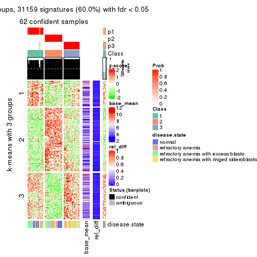
get_signatures(res, k = 4)
get_signatures(res, k = 5)
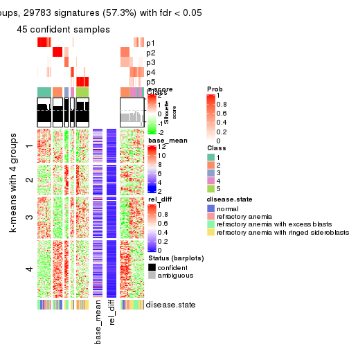
get_signatures(res, k = 6)
Signature heatmaps where rows are not scaled:
get_signatures(res, k = 2, scale_rows = FALSE)
get_signatures(res, k = 3, scale_rows = FALSE)
get_signatures(res, k = 4, scale_rows = FALSE)
get_signatures(res, k = 5, scale_rows = FALSE)
get_signatures(res, k = 6, scale_rows = FALSE)
Compare the overlap of signatures from different k:
compare_signatures(res)
get_signature() returns a data frame invisibly. TO get the list of signatures, the function
call should be assigned to a variable explicitly. In following code, if plot argument is set
to FALSE, no heatmap is plotted while only the differential analysis is performed.
# code only for demonstration
tb = get_signature(res, k = ..., plot = FALSE)
An example of the output of tb is:
#> which_row fdr mean_1 mean_2 scaled_mean_1 scaled_mean_2 km
#> 1 38 0.042760348 8.373488 9.131774 -0.5533452 0.5164555 1
#> 2 40 0.018707592 7.106213 8.469186 -0.6173731 0.5762149 1
#> 3 55 0.019134737 10.221463 11.207825 -0.6159697 0.5749050 1
#> 4 59 0.006059896 5.921854 7.869574 -0.6899429 0.6439467 1
#> 5 60 0.018055526 8.928898 10.211722 -0.6204761 0.5791110 1
#> 6 98 0.009384629 15.714769 14.887706 0.6635654 -0.6193277 2
...
The columns in tb are:
which_row: row indices corresponding to the input matrix.fdr: FDR for the differential test. mean_x: The mean value in group x.scaled_mean_x: The mean value in group x after rows are scaled.km: Row groups if k-means clustering is applied to rows.UMAP plot which shows how samples are separated.
dimension_reduction(res, k = 2, method = "UMAP")

dimension_reduction(res, k = 3, method = "UMAP")
dimension_reduction(res, k = 4, method = "UMAP")
dimension_reduction(res, k = 5, method = "UMAP")
dimension_reduction(res, k = 6, method = "UMAP")
Following heatmap shows how subgroups are split when increasing k:
collect_classes(res)
Test correlation between subgroups and known annotations. If the known annotation is numeric, one-way ANOVA test is applied, and if the known annotation is discrete, chi-squared contingency table test is applied.
test_to_known_factors(res)
#> n disease.state(p) k
#> ATC:pam 66 0.16400 2
#> ATC:pam 62 0.00125 3
#> ATC:pam 60 0.02996 4
#> ATC:pam 45 0.00513 5
#> ATC:pam 35 0.00647 6
If matrix rows can be associated to genes, consider to use GO_Enrichment(res,
...) to perform function enrichment for the signature genes.
The object with results only for a single top-value method and a single partition method can be extracted as:
res = res_list["ATC", "mclust"]
# you can also extract it by
# res = res_list["ATC:mclust"]
A summary of res and all the functions that can be applied to it:
res
#> A 'ConsensusPartition' object with k = 2, 3, 4, 5, 6.
#> On a matrix with 51941 rows and 66 columns.
#> Top rows (1000, 2000, 3000, 4000, 5000) are extracted by 'ATC' method.
#> Subgroups are detected by 'mclust' method.
#> Performed in total 1250 partitions by row resampling.
#> Best k for subgroups seems to be 2.
#>
#> Following methods can be applied to this 'ConsensusPartition' object:
#> [1] "cola_report" "collect_classes" "collect_plots"
#> [4] "collect_stats" "colnames" "compare_signatures"
#> [7] "consensus_heatmap" "dimension_reduction" "functional_enrichment"
#> [10] "get_anno_col" "get_anno" "get_classes"
#> [13] "get_consensus" "get_matrix" "get_membership"
#> [16] "get_param" "get_signatures" "get_stats"
#> [19] "is_best_k" "is_stable_k" "membership_heatmap"
#> [22] "ncol" "nrow" "plot_ecdf"
#> [25] "rownames" "select_partition_number" "show"
#> [28] "suggest_best_k" "test_to_known_factors"
collect_plots() function collects all the plots made from res for all k (number of partitions)
into one single page to provide an easy and fast comparison between different k.
collect_plots(res)
The plots are:
k and the heatmap of
predicted classes for each k.k.k.k.All the plots in panels can be made by individual functions and they are plotted later in this section.
select_partition_number() produces several plots showing different
statistics for choosing “optimized” k. There are following statistics:
k;k, the area increased is defined as \(A_k - A_{k-1}\).The detailed explanations of these statistics can be found in the cola vignette.
Generally speaking, lower PAC score, higher mean silhouette score or higher
concordance corresponds to better partition. Rand index and Jaccard index
measure how similar the current partition is compared to partition with k-1.
If they are too similar, we won't accept k is better than k-1.
select_partition_number(res)
The numeric values for all these statistics can be obtained by get_stats().
get_stats(res)
#> k 1-PAC mean_silhouette concordance area_increased Rand Jaccard
#> 2 2 1.000 1.000 1.000 0.4518 0.549 0.549
#> 3 3 0.795 0.940 0.898 0.3518 0.779 0.596
#> 4 4 0.801 0.883 0.937 0.1428 0.984 0.952
#> 5 5 0.753 0.765 0.835 0.1088 0.882 0.629
#> 6 6 0.810 0.794 0.868 0.0388 0.937 0.729
suggest_best_k() suggests the best \(k\) based on these statistics. The rules are as follows:
NA.suggest_best_k(res)
#> [1] 2
Following shows the table of the partitions (You need to click the show/hide
code output link to see it). The membership matrix (columns with name p*)
is inferred by
clue::cl_consensus()
function with the SE method. Basically the value in the membership matrix
represents the probability to belong to a certain group. The finall class
label for an item is determined with the group with highest probability it
belongs to.
In get_classes() function, the entropy is calculated from the membership
matrix and the silhouette score is calculated from the consensus matrix.
cbind(get_classes(res, k = 2), get_membership(res, k = 2))
#> class entropy silhouette p1 p2
#> GSM103343 2 0 1 0 1
#> GSM103344 2 0 1 0 1
#> GSM103345 2 0 1 0 1
#> GSM103364 2 0 1 0 1
#> GSM103365 2 0 1 0 1
#> GSM103366 2 0 1 0 1
#> GSM103369 1 0 1 1 0
#> GSM103370 1 0 1 1 0
#> GSM103388 1 0 1 1 0
#> GSM103389 1 0 1 1 0
#> GSM103390 1 0 1 1 0
#> GSM103347 1 0 1 1 0
#> GSM103349 2 0 1 0 1
#> GSM103354 1 0 1 1 0
#> GSM103355 2 0 1 0 1
#> GSM103357 2 0 1 0 1
#> GSM103358 2 0 1 0 1
#> GSM103361 2 0 1 0 1
#> GSM103363 2 0 1 0 1
#> GSM103367 1 0 1 1 0
#> GSM103381 1 0 1 1 0
#> GSM103382 1 0 1 1 0
#> GSM103384 1 0 1 1 0
#> GSM103391 1 0 1 1 0
#> GSM103394 1 0 1 1 0
#> GSM103399 1 0 1 1 0
#> GSM103401 1 0 1 1 0
#> GSM103404 1 0 1 1 0
#> GSM103408 1 0 1 1 0
#> GSM103348 2 0 1 0 1
#> GSM103351 2 0 1 0 1
#> GSM103356 2 0 1 0 1
#> GSM103368 1 0 1 1 0
#> GSM103372 1 0 1 1 0
#> GSM103375 1 0 1 1 0
#> GSM103376 1 0 1 1 0
#> GSM103379 1 0 1 1 0
#> GSM103385 1 0 1 1 0
#> GSM103387 1 0 1 1 0
#> GSM103392 1 0 1 1 0
#> GSM103393 1 0 1 1 0
#> GSM103395 1 0 1 1 0
#> GSM103396 1 0 1 1 0
#> GSM103398 1 0 1 1 0
#> GSM103402 1 0 1 1 0
#> GSM103403 1 0 1 1 0
#> GSM103405 1 0 1 1 0
#> GSM103407 1 0 1 1 0
#> GSM103346 2 0 1 0 1
#> GSM103350 2 0 1 0 1
#> GSM103352 2 0 1 0 1
#> GSM103353 2 0 1 0 1
#> GSM103359 2 0 1 0 1
#> GSM103360 2 0 1 0 1
#> GSM103362 2 0 1 0 1
#> GSM103371 1 0 1 1 0
#> GSM103373 1 0 1 1 0
#> GSM103374 1 0 1 1 0
#> GSM103377 1 0 1 1 0
#> GSM103378 1 0 1 1 0
#> GSM103380 1 0 1 1 0
#> GSM103383 1 0 1 1 0
#> GSM103386 1 0 1 1 0
#> GSM103397 1 0 1 1 0
#> GSM103400 1 0 1 1 0
#> GSM103406 1 0 1 1 0
cbind(get_classes(res, k = 3), get_membership(res, k = 3))
#> class entropy silhouette p1 p2 p3
#> GSM103343 2 0.0000 0.997 0.000 1.000 0.000
#> GSM103344 2 0.0000 0.997 0.000 1.000 0.000
#> GSM103345 2 0.0000 0.997 0.000 1.000 0.000
#> GSM103364 2 0.0000 0.997 0.000 1.000 0.000
#> GSM103365 2 0.0000 0.997 0.000 1.000 0.000
#> GSM103366 2 0.0000 0.997 0.000 1.000 0.000
#> GSM103369 1 0.0424 0.991 0.992 0.000 0.008
#> GSM103370 1 0.0424 0.991 0.992 0.000 0.008
#> GSM103388 1 0.0424 0.991 0.992 0.000 0.008
#> GSM103389 1 0.0424 0.991 0.992 0.000 0.008
#> GSM103390 1 0.0000 0.995 1.000 0.000 0.000
#> GSM103347 3 0.4931 0.765 0.232 0.000 0.768
#> GSM103349 2 0.0000 0.997 0.000 1.000 0.000
#> GSM103354 3 0.0424 0.589 0.008 0.000 0.992
#> GSM103355 2 0.0000 0.997 0.000 1.000 0.000
#> GSM103357 2 0.0237 0.995 0.000 0.996 0.004
#> GSM103358 2 0.0000 0.997 0.000 1.000 0.000
#> GSM103361 2 0.0000 0.997 0.000 1.000 0.000
#> GSM103363 2 0.0000 0.997 0.000 1.000 0.000
#> GSM103367 1 0.0000 0.995 1.000 0.000 0.000
#> GSM103381 1 0.0424 0.991 0.992 0.000 0.008
#> GSM103382 1 0.0592 0.987 0.988 0.000 0.012
#> GSM103384 1 0.0424 0.991 0.992 0.000 0.008
#> GSM103391 3 0.6192 0.845 0.420 0.000 0.580
#> GSM103394 3 0.6111 0.854 0.396 0.000 0.604
#> GSM103399 3 0.6225 0.837 0.432 0.000 0.568
#> GSM103401 3 0.0424 0.589 0.008 0.000 0.992
#> GSM103404 3 0.5291 0.791 0.268 0.000 0.732
#> GSM103408 3 0.6180 0.848 0.416 0.000 0.584
#> GSM103348 2 0.0747 0.989 0.000 0.984 0.016
#> GSM103351 2 0.0000 0.997 0.000 1.000 0.000
#> GSM103356 2 0.0000 0.997 0.000 1.000 0.000
#> GSM103368 1 0.0000 0.995 1.000 0.000 0.000
#> GSM103372 1 0.0000 0.995 1.000 0.000 0.000
#> GSM103375 1 0.0000 0.995 1.000 0.000 0.000
#> GSM103376 1 0.0000 0.995 1.000 0.000 0.000
#> GSM103379 1 0.0000 0.995 1.000 0.000 0.000
#> GSM103385 1 0.0000 0.995 1.000 0.000 0.000
#> GSM103387 1 0.0000 0.995 1.000 0.000 0.000
#> GSM103392 1 0.0000 0.995 1.000 0.000 0.000
#> GSM103393 3 0.5926 0.844 0.356 0.000 0.644
#> GSM103395 3 0.4346 0.708 0.184 0.000 0.816
#> GSM103396 3 0.6154 0.852 0.408 0.000 0.592
#> GSM103398 3 0.6079 0.854 0.388 0.000 0.612
#> GSM103402 3 0.6111 0.854 0.396 0.000 0.604
#> GSM103403 3 0.6045 0.852 0.380 0.000 0.620
#> GSM103405 3 0.6204 0.841 0.424 0.000 0.576
#> GSM103407 3 0.6168 0.851 0.412 0.000 0.588
#> GSM103346 2 0.0424 0.993 0.000 0.992 0.008
#> GSM103350 2 0.0747 0.989 0.000 0.984 0.016
#> GSM103352 2 0.1031 0.985 0.000 0.976 0.024
#> GSM103353 2 0.1031 0.985 0.000 0.976 0.024
#> GSM103359 2 0.0000 0.997 0.000 1.000 0.000
#> GSM103360 2 0.0000 0.997 0.000 1.000 0.000
#> GSM103362 2 0.0000 0.997 0.000 1.000 0.000
#> GSM103371 1 0.0424 0.991 0.992 0.000 0.008
#> GSM103373 1 0.0000 0.995 1.000 0.000 0.000
#> GSM103374 1 0.0000 0.995 1.000 0.000 0.000
#> GSM103377 1 0.0000 0.995 1.000 0.000 0.000
#> GSM103378 1 0.0592 0.987 0.988 0.000 0.012
#> GSM103380 1 0.0000 0.995 1.000 0.000 0.000
#> GSM103383 1 0.0000 0.995 1.000 0.000 0.000
#> GSM103386 1 0.0000 0.995 1.000 0.000 0.000
#> GSM103397 3 0.6079 0.854 0.388 0.000 0.612
#> GSM103400 3 0.6192 0.845 0.420 0.000 0.580
#> GSM103406 3 0.6244 0.826 0.440 0.000 0.560
cbind(get_classes(res, k = 4), get_membership(res, k = 4))
#> class entropy silhouette p1 p2 p3 p4
#> GSM103343 2 0.0000 0.928 0.000 1.000 0.000 0.000
#> GSM103344 2 0.0000 0.928 0.000 1.000 0.000 0.000
#> GSM103345 2 0.0000 0.928 0.000 1.000 0.000 0.000
#> GSM103364 2 0.0000 0.928 0.000 1.000 0.000 0.000
#> GSM103365 2 0.0000 0.928 0.000 1.000 0.000 0.000
#> GSM103366 2 0.0000 0.928 0.000 1.000 0.000 0.000
#> GSM103369 1 0.2973 0.868 0.856 0.000 0.000 0.144
#> GSM103370 1 0.3074 0.865 0.848 0.000 0.000 0.152
#> GSM103388 1 0.3074 0.865 0.848 0.000 0.000 0.152
#> GSM103389 1 0.2973 0.868 0.856 0.000 0.000 0.144
#> GSM103390 1 0.0000 0.926 1.000 0.000 0.000 0.000
#> GSM103347 4 0.1557 0.862 0.000 0.000 0.056 0.944
#> GSM103349 2 0.0000 0.928 0.000 1.000 0.000 0.000
#> GSM103354 3 0.1557 1.000 0.000 0.000 0.944 0.056
#> GSM103355 2 0.0000 0.928 0.000 1.000 0.000 0.000
#> GSM103357 2 0.1022 0.909 0.000 0.968 0.032 0.000
#> GSM103358 2 0.0000 0.928 0.000 1.000 0.000 0.000
#> GSM103361 2 0.0000 0.928 0.000 1.000 0.000 0.000
#> GSM103363 2 0.0000 0.928 0.000 1.000 0.000 0.000
#> GSM103367 1 0.0188 0.925 0.996 0.000 0.004 0.000
#> GSM103381 1 0.3074 0.865 0.848 0.000 0.000 0.152
#> GSM103382 1 0.3172 0.859 0.840 0.000 0.000 0.160
#> GSM103384 1 0.3074 0.865 0.848 0.000 0.000 0.152
#> GSM103391 4 0.1302 0.907 0.044 0.000 0.000 0.956
#> GSM103394 4 0.0000 0.901 0.000 0.000 0.000 1.000
#> GSM103399 4 0.3486 0.745 0.188 0.000 0.000 0.812
#> GSM103401 3 0.1557 1.000 0.000 0.000 0.944 0.056
#> GSM103404 4 0.0000 0.901 0.000 0.000 0.000 1.000
#> GSM103408 4 0.1302 0.907 0.044 0.000 0.000 0.956
#> GSM103348 2 0.4331 0.681 0.000 0.712 0.288 0.000
#> GSM103351 2 0.0000 0.928 0.000 1.000 0.000 0.000
#> GSM103356 2 0.0000 0.928 0.000 1.000 0.000 0.000
#> GSM103368 1 0.0000 0.926 1.000 0.000 0.000 0.000
#> GSM103372 1 0.0000 0.926 1.000 0.000 0.000 0.000
#> GSM103375 1 0.0592 0.919 0.984 0.000 0.016 0.000
#> GSM103376 1 0.0336 0.924 0.992 0.000 0.008 0.000
#> GSM103379 1 0.0188 0.925 0.996 0.000 0.004 0.000
#> GSM103385 1 0.0469 0.921 0.988 0.000 0.012 0.000
#> GSM103387 1 0.0000 0.926 1.000 0.000 0.000 0.000
#> GSM103392 1 0.0000 0.926 1.000 0.000 0.000 0.000
#> GSM103393 4 0.0336 0.904 0.008 0.000 0.000 0.992
#> GSM103395 4 0.6578 0.408 0.136 0.000 0.244 0.620
#> GSM103396 4 0.1557 0.903 0.056 0.000 0.000 0.944
#> GSM103398 4 0.1474 0.905 0.052 0.000 0.000 0.948
#> GSM103402 4 0.0000 0.901 0.000 0.000 0.000 1.000
#> GSM103403 4 0.0000 0.901 0.000 0.000 0.000 1.000
#> GSM103405 4 0.0817 0.908 0.024 0.000 0.000 0.976
#> GSM103407 4 0.1022 0.909 0.032 0.000 0.000 0.968
#> GSM103346 2 0.4193 0.707 0.000 0.732 0.268 0.000
#> GSM103350 2 0.4008 0.730 0.000 0.756 0.244 0.000
#> GSM103352 2 0.4406 0.668 0.000 0.700 0.300 0.000
#> GSM103353 2 0.4406 0.668 0.000 0.700 0.300 0.000
#> GSM103359 2 0.0000 0.928 0.000 1.000 0.000 0.000
#> GSM103360 2 0.0000 0.928 0.000 1.000 0.000 0.000
#> GSM103362 2 0.0000 0.928 0.000 1.000 0.000 0.000
#> GSM103371 1 0.2973 0.868 0.856 0.000 0.000 0.144
#> GSM103373 1 0.0000 0.926 1.000 0.000 0.000 0.000
#> GSM103374 1 0.0000 0.926 1.000 0.000 0.000 0.000
#> GSM103377 1 0.0000 0.926 1.000 0.000 0.000 0.000
#> GSM103378 1 0.3172 0.859 0.840 0.000 0.000 0.160
#> GSM103380 1 0.0000 0.926 1.000 0.000 0.000 0.000
#> GSM103383 1 0.0188 0.926 0.996 0.000 0.000 0.004
#> GSM103386 1 0.0000 0.926 1.000 0.000 0.000 0.000
#> GSM103397 4 0.1557 0.903 0.056 0.000 0.000 0.944
#> GSM103400 4 0.1302 0.907 0.044 0.000 0.000 0.956
#> GSM103406 4 0.3801 0.722 0.220 0.000 0.000 0.780
cbind(get_classes(res, k = 5), get_membership(res, k = 5))
#> class entropy silhouette p1 p2 p3 p4 p5
#> GSM103343 2 0.0000 0.9940 0.000 1.000 0.000 0.000 0.000
#> GSM103344 2 0.0000 0.9940 0.000 1.000 0.000 0.000 0.000
#> GSM103345 2 0.0000 0.9940 0.000 1.000 0.000 0.000 0.000
#> GSM103364 2 0.0000 0.9940 0.000 1.000 0.000 0.000 0.000
#> GSM103365 2 0.0000 0.9940 0.000 1.000 0.000 0.000 0.000
#> GSM103366 2 0.0000 0.9940 0.000 1.000 0.000 0.000 0.000
#> GSM103369 1 0.3934 0.6350 0.800 0.000 0.000 0.124 0.076
#> GSM103370 1 0.3612 0.6398 0.800 0.000 0.000 0.028 0.172
#> GSM103388 1 0.3010 0.6309 0.824 0.000 0.000 0.004 0.172
#> GSM103389 1 0.3346 0.6559 0.844 0.000 0.000 0.064 0.092
#> GSM103390 1 0.3586 0.5650 0.736 0.000 0.000 0.264 0.000
#> GSM103347 5 0.3929 0.6684 0.000 0.000 0.208 0.028 0.764
#> GSM103349 2 0.0000 0.9940 0.000 1.000 0.000 0.000 0.000
#> GSM103354 3 0.1701 0.6348 0.012 0.000 0.944 0.028 0.016
#> GSM103355 2 0.0000 0.9940 0.000 1.000 0.000 0.000 0.000
#> GSM103357 2 0.1608 0.8941 0.000 0.928 0.072 0.000 0.000
#> GSM103358 2 0.0000 0.9940 0.000 1.000 0.000 0.000 0.000
#> GSM103361 2 0.0000 0.9940 0.000 1.000 0.000 0.000 0.000
#> GSM103363 2 0.0000 0.9940 0.000 1.000 0.000 0.000 0.000
#> GSM103367 4 0.2561 0.7561 0.144 0.000 0.000 0.856 0.000
#> GSM103381 1 0.2852 0.6326 0.828 0.000 0.000 0.000 0.172
#> GSM103382 1 0.3849 0.5840 0.752 0.000 0.000 0.016 0.232
#> GSM103384 1 0.3231 0.6170 0.800 0.000 0.000 0.004 0.196
#> GSM103391 5 0.0162 0.8926 0.004 0.000 0.000 0.000 0.996
#> GSM103394 5 0.0290 0.8906 0.000 0.000 0.000 0.008 0.992
#> GSM103399 5 0.4300 0.7654 0.132 0.000 0.000 0.096 0.772
#> GSM103401 3 0.1701 0.6348 0.012 0.000 0.944 0.028 0.016
#> GSM103404 5 0.1485 0.8932 0.020 0.000 0.000 0.032 0.948
#> GSM103408 5 0.2249 0.8265 0.000 0.000 0.096 0.008 0.896
#> GSM103348 3 0.3707 0.7722 0.000 0.284 0.716 0.000 0.000
#> GSM103351 2 0.0000 0.9940 0.000 1.000 0.000 0.000 0.000
#> GSM103356 2 0.0000 0.9940 0.000 1.000 0.000 0.000 0.000
#> GSM103368 4 0.3895 0.6344 0.320 0.000 0.000 0.680 0.000
#> GSM103372 4 0.3876 0.6397 0.316 0.000 0.000 0.684 0.000
#> GSM103375 4 0.2889 0.7214 0.044 0.000 0.084 0.872 0.000
#> GSM103376 4 0.2962 0.7238 0.048 0.000 0.084 0.868 0.000
#> GSM103379 4 0.2605 0.7553 0.148 0.000 0.000 0.852 0.000
#> GSM103385 4 0.3033 0.7239 0.052 0.000 0.084 0.864 0.000
#> GSM103387 1 0.3730 0.5367 0.712 0.000 0.000 0.288 0.000
#> GSM103392 1 0.4302 -0.0316 0.520 0.000 0.000 0.480 0.000
#> GSM103393 5 0.1894 0.8986 0.072 0.000 0.000 0.008 0.920
#> GSM103395 3 0.4403 0.5554 0.064 0.000 0.776 0.148 0.012
#> GSM103396 5 0.2358 0.8894 0.104 0.000 0.000 0.008 0.888
#> GSM103398 5 0.1956 0.8979 0.076 0.000 0.000 0.008 0.916
#> GSM103402 5 0.0451 0.8931 0.008 0.000 0.000 0.004 0.988
#> GSM103403 5 0.0671 0.8928 0.016 0.000 0.000 0.004 0.980
#> GSM103405 5 0.2286 0.8908 0.108 0.000 0.000 0.004 0.888
#> GSM103407 5 0.2358 0.8891 0.104 0.000 0.000 0.008 0.888
#> GSM103346 3 0.3895 0.7400 0.000 0.320 0.680 0.000 0.000
#> GSM103350 3 0.4294 0.4610 0.000 0.468 0.532 0.000 0.000
#> GSM103352 3 0.3707 0.7725 0.000 0.284 0.716 0.000 0.000
#> GSM103353 3 0.3684 0.7736 0.000 0.280 0.720 0.000 0.000
#> GSM103359 2 0.0000 0.9940 0.000 1.000 0.000 0.000 0.000
#> GSM103360 2 0.0000 0.9940 0.000 1.000 0.000 0.000 0.000
#> GSM103362 2 0.0000 0.9940 0.000 1.000 0.000 0.000 0.000
#> GSM103371 1 0.3532 0.6546 0.832 0.000 0.000 0.076 0.092
#> GSM103373 1 0.3452 0.5789 0.756 0.000 0.000 0.244 0.000
#> GSM103374 4 0.3913 0.6277 0.324 0.000 0.000 0.676 0.000
#> GSM103377 1 0.3774 0.5238 0.704 0.000 0.000 0.296 0.000
#> GSM103378 1 0.3849 0.5911 0.752 0.000 0.000 0.016 0.232
#> GSM103380 1 0.4268 0.1207 0.556 0.000 0.000 0.444 0.000
#> GSM103383 1 0.3561 0.5683 0.740 0.000 0.000 0.260 0.000
#> GSM103386 1 0.3684 0.5474 0.720 0.000 0.000 0.280 0.000
#> GSM103397 5 0.2513 0.8816 0.116 0.000 0.000 0.008 0.876
#> GSM103400 5 0.0000 0.8923 0.000 0.000 0.000 0.000 1.000
#> GSM103406 5 0.4134 0.7586 0.196 0.000 0.000 0.044 0.760
cbind(get_classes(res, k = 6), get_membership(res, k = 6))
#> class entropy silhouette p1 p2 p3 p4 p5 p6
#> GSM103343 2 0.0000 0.995 0.000 1.000 0.000 0.000 0.000 0.000
#> GSM103344 2 0.0000 0.995 0.000 1.000 0.000 0.000 0.000 0.000
#> GSM103345 2 0.0458 0.981 0.000 0.984 0.016 0.000 0.000 0.000
#> GSM103364 2 0.0000 0.995 0.000 1.000 0.000 0.000 0.000 0.000
#> GSM103365 2 0.0000 0.995 0.000 1.000 0.000 0.000 0.000 0.000
#> GSM103366 2 0.0000 0.995 0.000 1.000 0.000 0.000 0.000 0.000
#> GSM103369 6 0.5089 0.123 0.380 0.000 0.000 0.008 0.064 0.548
#> GSM103370 1 0.5288 0.522 0.552 0.000 0.000 0.004 0.100 0.344
#> GSM103388 1 0.3112 0.775 0.836 0.000 0.000 0.000 0.096 0.068
#> GSM103389 1 0.4834 0.211 0.484 0.000 0.000 0.004 0.044 0.468
#> GSM103390 6 0.0436 0.791 0.004 0.000 0.000 0.004 0.004 0.988
#> GSM103347 5 0.4797 0.764 0.116 0.000 0.112 0.008 0.736 0.028
#> GSM103349 2 0.0000 0.995 0.000 1.000 0.000 0.000 0.000 0.000
#> GSM103354 3 0.2691 0.731 0.088 0.000 0.872 0.008 0.032 0.000
#> GSM103355 2 0.0000 0.995 0.000 1.000 0.000 0.000 0.000 0.000
#> GSM103357 2 0.0865 0.962 0.000 0.964 0.036 0.000 0.000 0.000
#> GSM103358 2 0.0000 0.995 0.000 1.000 0.000 0.000 0.000 0.000
#> GSM103361 2 0.0000 0.995 0.000 1.000 0.000 0.000 0.000 0.000
#> GSM103363 2 0.0000 0.995 0.000 1.000 0.000 0.000 0.000 0.000
#> GSM103367 6 0.3714 0.504 0.000 0.000 0.000 0.340 0.004 0.656
#> GSM103381 1 0.3740 0.769 0.784 0.000 0.000 0.000 0.096 0.120
#> GSM103382 1 0.3474 0.736 0.836 0.000 0.000 0.048 0.072 0.044
#> GSM103384 1 0.3030 0.773 0.848 0.000 0.000 0.004 0.092 0.056
#> GSM103391 5 0.3101 0.802 0.148 0.000 0.000 0.032 0.820 0.000
#> GSM103394 5 0.2821 0.811 0.152 0.000 0.000 0.016 0.832 0.000
#> GSM103399 5 0.3703 0.799 0.000 0.000 0.000 0.104 0.788 0.108
#> GSM103401 3 0.2691 0.731 0.088 0.000 0.872 0.008 0.032 0.000
#> GSM103404 5 0.2190 0.860 0.044 0.000 0.000 0.008 0.908 0.040
#> GSM103408 5 0.6107 0.464 0.160 0.000 0.260 0.036 0.544 0.000
#> GSM103348 3 0.1863 0.808 0.000 0.104 0.896 0.000 0.000 0.000
#> GSM103351 2 0.0000 0.995 0.000 1.000 0.000 0.000 0.000 0.000
#> GSM103356 2 0.0458 0.982 0.000 0.984 0.016 0.000 0.000 0.000
#> GSM103368 6 0.2135 0.758 0.000 0.000 0.000 0.128 0.000 0.872
#> GSM103372 6 0.2219 0.753 0.000 0.000 0.000 0.136 0.000 0.864
#> GSM103375 4 0.1970 0.990 0.008 0.000 0.044 0.920 0.000 0.028
#> GSM103376 4 0.1970 0.990 0.008 0.000 0.044 0.920 0.000 0.028
#> GSM103379 6 0.3684 0.516 0.000 0.000 0.000 0.332 0.004 0.664
#> GSM103385 4 0.2190 0.979 0.008 0.000 0.044 0.908 0.000 0.040
#> GSM103387 6 0.0000 0.791 0.000 0.000 0.000 0.000 0.000 1.000
#> GSM103392 6 0.0692 0.791 0.000 0.000 0.000 0.020 0.004 0.976
#> GSM103393 5 0.1802 0.867 0.012 0.000 0.000 0.000 0.916 0.072
#> GSM103395 3 0.3838 0.669 0.008 0.000 0.796 0.144 0.020 0.032
#> GSM103396 5 0.1806 0.862 0.004 0.000 0.000 0.000 0.908 0.088
#> GSM103398 5 0.1501 0.866 0.000 0.000 0.000 0.000 0.924 0.076
#> GSM103402 5 0.1930 0.857 0.048 0.000 0.000 0.000 0.916 0.036
#> GSM103403 5 0.1995 0.858 0.052 0.000 0.000 0.000 0.912 0.036
#> GSM103405 5 0.2218 0.859 0.012 0.000 0.000 0.000 0.884 0.104
#> GSM103407 5 0.1970 0.861 0.008 0.000 0.000 0.000 0.900 0.092
#> GSM103346 3 0.2300 0.783 0.000 0.144 0.856 0.000 0.000 0.000
#> GSM103350 3 0.3907 0.444 0.000 0.408 0.588 0.000 0.004 0.000
#> GSM103352 3 0.1663 0.811 0.000 0.088 0.912 0.000 0.000 0.000
#> GSM103353 3 0.1714 0.811 0.000 0.092 0.908 0.000 0.000 0.000
#> GSM103359 2 0.0000 0.995 0.000 1.000 0.000 0.000 0.000 0.000
#> GSM103360 2 0.0000 0.995 0.000 1.000 0.000 0.000 0.000 0.000
#> GSM103362 2 0.0000 0.995 0.000 1.000 0.000 0.000 0.000 0.000
#> GSM103371 6 0.4751 -0.246 0.452 0.000 0.000 0.000 0.048 0.500
#> GSM103373 6 0.2631 0.689 0.152 0.000 0.000 0.008 0.000 0.840
#> GSM103374 6 0.1701 0.780 0.008 0.000 0.000 0.072 0.000 0.920
#> GSM103377 6 0.0551 0.791 0.008 0.000 0.000 0.004 0.004 0.984
#> GSM103378 1 0.3303 0.739 0.848 0.000 0.000 0.044 0.060 0.048
#> GSM103380 6 0.0146 0.791 0.000 0.000 0.000 0.004 0.000 0.996
#> GSM103383 6 0.2482 0.689 0.148 0.000 0.000 0.004 0.000 0.848
#> GSM103386 6 0.1701 0.759 0.072 0.000 0.000 0.008 0.000 0.920
#> GSM103397 5 0.1806 0.862 0.004 0.000 0.000 0.000 0.908 0.088
#> GSM103400 5 0.3210 0.797 0.152 0.000 0.000 0.036 0.812 0.000
#> GSM103406 5 0.3156 0.806 0.000 0.000 0.000 0.020 0.800 0.180
Heatmaps for the consensus matrix. It visualizes the probability of two samples to be in a same group.
consensus_heatmap(res, k = 2)
consensus_heatmap(res, k = 3)
consensus_heatmap(res, k = 4)
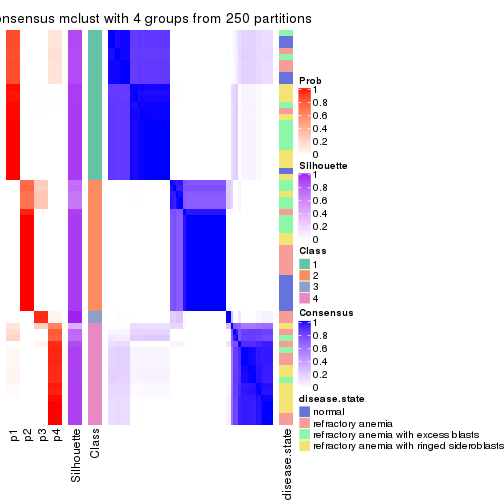
consensus_heatmap(res, k = 5)
consensus_heatmap(res, k = 6)
Heatmaps for the membership of samples in all partitions to see how consistent they are:
membership_heatmap(res, k = 2)

membership_heatmap(res, k = 3)
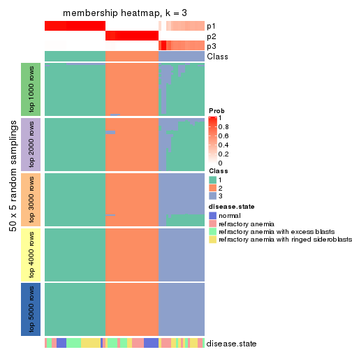
membership_heatmap(res, k = 4)
membership_heatmap(res, k = 5)
membership_heatmap(res, k = 6)
As soon as we have had the classes for columns, we can look for signatures which are significantly different between classes which can be candidate marks for certain classes. Following are the heatmaps for signatures.
Signature heatmaps where rows are scaled:
get_signatures(res, k = 2)

get_signatures(res, k = 3)
get_signatures(res, k = 4)
get_signatures(res, k = 5)
get_signatures(res, k = 6)
Signature heatmaps where rows are not scaled:
get_signatures(res, k = 2, scale_rows = FALSE)

get_signatures(res, k = 3, scale_rows = FALSE)
get_signatures(res, k = 4, scale_rows = FALSE)
get_signatures(res, k = 5, scale_rows = FALSE)
get_signatures(res, k = 6, scale_rows = FALSE)
Compare the overlap of signatures from different k:
compare_signatures(res)
get_signature() returns a data frame invisibly. TO get the list of signatures, the function
call should be assigned to a variable explicitly. In following code, if plot argument is set
to FALSE, no heatmap is plotted while only the differential analysis is performed.
# code only for demonstration
tb = get_signature(res, k = ..., plot = FALSE)
An example of the output of tb is:
#> which_row fdr mean_1 mean_2 scaled_mean_1 scaled_mean_2 km
#> 1 38 0.042760348 8.373488 9.131774 -0.5533452 0.5164555 1
#> 2 40 0.018707592 7.106213 8.469186 -0.6173731 0.5762149 1
#> 3 55 0.019134737 10.221463 11.207825 -0.6159697 0.5749050 1
#> 4 59 0.006059896 5.921854 7.869574 -0.6899429 0.6439467 1
#> 5 60 0.018055526 8.928898 10.211722 -0.6204761 0.5791110 1
#> 6 98 0.009384629 15.714769 14.887706 0.6635654 -0.6193277 2
...
The columns in tb are:
which_row: row indices corresponding to the input matrix.fdr: FDR for the differential test. mean_x: The mean value in group x.scaled_mean_x: The mean value in group x after rows are scaled.km: Row groups if k-means clustering is applied to rows.UMAP plot which shows how samples are separated.
dimension_reduction(res, k = 2, method = "UMAP")

dimension_reduction(res, k = 3, method = "UMAP")
dimension_reduction(res, k = 4, method = "UMAP")
dimension_reduction(res, k = 5, method = "UMAP")
dimension_reduction(res, k = 6, method = "UMAP")
Following heatmap shows how subgroups are split when increasing k:
collect_classes(res)

Test correlation between subgroups and known annotations. If the known annotation is numeric, one-way ANOVA test is applied, and if the known annotation is discrete, chi-squared contingency table test is applied.
test_to_known_factors(res)
#> n disease.state(p) k
#> ATC:mclust 66 0.16400 2
#> ATC:mclust 66 0.06610 3
#> ATC:mclust 65 0.08441 4
#> ATC:mclust 63 0.00693 5
#> ATC:mclust 61 0.01625 6
If matrix rows can be associated to genes, consider to use GO_Enrichment(res,
...) to perform function enrichment for the signature genes.
The object with results only for a single top-value method and a single partition method can be extracted as:
res = res_list["ATC", "NMF"]
# you can also extract it by
# res = res_list["ATC:NMF"]
A summary of res and all the functions that can be applied to it:
res
#> A 'ConsensusPartition' object with k = 2, 3, 4, 5, 6.
#> On a matrix with 51941 rows and 66 columns.
#> Top rows (1000, 2000, 3000, 4000, 5000) are extracted by 'ATC' method.
#> Subgroups are detected by 'NMF' method.
#> Performed in total 1250 partitions by row resampling.
#> Best k for subgroups seems to be 2.
#>
#> Following methods can be applied to this 'ConsensusPartition' object:
#> [1] "cola_report" "collect_classes" "collect_plots"
#> [4] "collect_stats" "colnames" "compare_signatures"
#> [7] "consensus_heatmap" "dimension_reduction" "functional_enrichment"
#> [10] "get_anno_col" "get_anno" "get_classes"
#> [13] "get_consensus" "get_matrix" "get_membership"
#> [16] "get_param" "get_signatures" "get_stats"
#> [19] "is_best_k" "is_stable_k" "membership_heatmap"
#> [22] "ncol" "nrow" "plot_ecdf"
#> [25] "rownames" "select_partition_number" "show"
#> [28] "suggest_best_k" "test_to_known_factors"
collect_plots() function collects all the plots made from res for all k (number of partitions)
into one single page to provide an easy and fast comparison between different k.
collect_plots(res)
The plots are:
k and the heatmap of
predicted classes for each k.k.k.k.All the plots in panels can be made by individual functions and they are plotted later in this section.
select_partition_number() produces several plots showing different
statistics for choosing “optimized” k. There are following statistics:
k;k, the area increased is defined as \(A_k - A_{k-1}\).The detailed explanations of these statistics can be found in the cola vignette.
Generally speaking, lower PAC score, higher mean silhouette score or higher
concordance corresponds to better partition. Rand index and Jaccard index
measure how similar the current partition is compared to partition with k-1.
If they are too similar, we won't accept k is better than k-1.
select_partition_number(res)
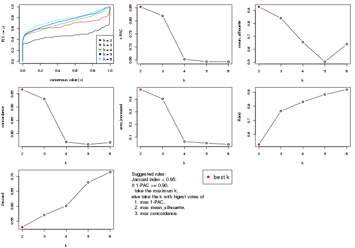
The numeric values for all these statistics can be obtained by get_stats().
get_stats(res)
#> k 1-PAC mean_silhouette concordance area_increased Rand Jaccard
#> 2 2 0.854 0.928 0.966 0.4759 0.530 0.530
#> 3 3 0.819 0.840 0.930 0.4026 0.766 0.570
#> 4 4 0.653 0.655 0.769 0.0643 0.831 0.602
#> 5 5 0.644 0.503 0.759 0.0519 0.883 0.680
#> 6 6 0.643 0.639 0.767 0.0417 0.918 0.714
suggest_best_k() suggests the best \(k\) based on these statistics. The rules are as follows:
NA.suggest_best_k(res)
#> [1] 2
Following shows the table of the partitions (You need to click the show/hide
code output link to see it). The membership matrix (columns with name p*)
is inferred by
clue::cl_consensus()
function with the SE method. Basically the value in the membership matrix
represents the probability to belong to a certain group. The finall class
label for an item is determined with the group with highest probability it
belongs to.
In get_classes() function, the entropy is calculated from the membership
matrix and the silhouette score is calculated from the consensus matrix.
cbind(get_classes(res, k = 2), get_membership(res, k = 2))
#> class entropy silhouette p1 p2
#> GSM103343 2 0.0000 0.981 0.000 1.000
#> GSM103344 2 0.0000 0.981 0.000 1.000
#> GSM103345 2 0.0000 0.981 0.000 1.000
#> GSM103364 2 0.0000 0.981 0.000 1.000
#> GSM103365 2 0.0000 0.981 0.000 1.000
#> GSM103366 2 0.0000 0.981 0.000 1.000
#> GSM103369 1 0.0000 0.954 1.000 0.000
#> GSM103370 1 0.0000 0.954 1.000 0.000
#> GSM103388 1 0.0000 0.954 1.000 0.000
#> GSM103389 1 0.0000 0.954 1.000 0.000
#> GSM103390 1 0.0000 0.954 1.000 0.000
#> GSM103347 1 0.0000 0.954 1.000 0.000
#> GSM103349 2 0.0000 0.981 0.000 1.000
#> GSM103354 2 0.9286 0.416 0.344 0.656
#> GSM103355 2 0.0000 0.981 0.000 1.000
#> GSM103357 2 0.0000 0.981 0.000 1.000
#> GSM103358 2 0.0000 0.981 0.000 1.000
#> GSM103361 2 0.0000 0.981 0.000 1.000
#> GSM103363 2 0.0000 0.981 0.000 1.000
#> GSM103367 1 0.5842 0.849 0.860 0.140
#> GSM103381 1 0.0000 0.954 1.000 0.000
#> GSM103382 1 0.0000 0.954 1.000 0.000
#> GSM103384 1 0.0000 0.954 1.000 0.000
#> GSM103391 1 0.0000 0.954 1.000 0.000
#> GSM103394 1 0.0000 0.954 1.000 0.000
#> GSM103399 1 0.8016 0.720 0.756 0.244
#> GSM103401 1 0.9795 0.358 0.584 0.416
#> GSM103404 1 0.1414 0.943 0.980 0.020
#> GSM103408 1 0.0000 0.954 1.000 0.000
#> GSM103348 2 0.0000 0.981 0.000 1.000
#> GSM103351 2 0.0000 0.981 0.000 1.000
#> GSM103356 2 0.0000 0.981 0.000 1.000
#> GSM103368 1 0.0000 0.954 1.000 0.000
#> GSM103372 1 0.0000 0.954 1.000 0.000
#> GSM103375 1 0.6887 0.801 0.816 0.184
#> GSM103376 1 0.0000 0.954 1.000 0.000
#> GSM103379 1 0.5059 0.876 0.888 0.112
#> GSM103385 1 0.0672 0.950 0.992 0.008
#> GSM103387 1 0.0000 0.954 1.000 0.000
#> GSM103392 1 0.0000 0.954 1.000 0.000
#> GSM103393 1 0.3274 0.917 0.940 0.060
#> GSM103395 2 0.3431 0.914 0.064 0.936
#> GSM103396 1 0.7950 0.726 0.760 0.240
#> GSM103398 1 0.4815 0.883 0.896 0.104
#> GSM103402 1 0.0000 0.954 1.000 0.000
#> GSM103403 1 0.0000 0.954 1.000 0.000
#> GSM103405 1 0.0000 0.954 1.000 0.000
#> GSM103407 1 0.4431 0.893 0.908 0.092
#> GSM103346 2 0.0000 0.981 0.000 1.000
#> GSM103350 2 0.0000 0.981 0.000 1.000
#> GSM103352 2 0.0000 0.981 0.000 1.000
#> GSM103353 2 0.0000 0.981 0.000 1.000
#> GSM103359 2 0.0000 0.981 0.000 1.000
#> GSM103360 2 0.0000 0.981 0.000 1.000
#> GSM103362 2 0.0000 0.981 0.000 1.000
#> GSM103371 1 0.0000 0.954 1.000 0.000
#> GSM103373 1 0.0000 0.954 1.000 0.000
#> GSM103374 1 0.0000 0.954 1.000 0.000
#> GSM103377 1 0.0000 0.954 1.000 0.000
#> GSM103378 1 0.0000 0.954 1.000 0.000
#> GSM103380 1 0.0000 0.954 1.000 0.000
#> GSM103383 1 0.0000 0.954 1.000 0.000
#> GSM103386 1 0.0000 0.954 1.000 0.000
#> GSM103397 1 0.7219 0.781 0.800 0.200
#> GSM103400 1 0.0000 0.954 1.000 0.000
#> GSM103406 1 0.0000 0.954 1.000 0.000
cbind(get_classes(res, k = 3), get_membership(res, k = 3))
#> class entropy silhouette p1 p2 p3
#> GSM103343 2 0.0000 0.9826 0.000 1.000 0.000
#> GSM103344 2 0.0000 0.9826 0.000 1.000 0.000
#> GSM103345 2 0.0237 0.9805 0.000 0.996 0.004
#> GSM103364 2 0.0000 0.9826 0.000 1.000 0.000
#> GSM103365 2 0.0000 0.9826 0.000 1.000 0.000
#> GSM103366 2 0.0000 0.9826 0.000 1.000 0.000
#> GSM103369 1 0.0424 0.8930 0.992 0.000 0.008
#> GSM103370 1 0.0424 0.8930 0.992 0.000 0.008
#> GSM103388 1 0.0000 0.8903 1.000 0.000 0.000
#> GSM103389 1 0.0424 0.8930 0.992 0.000 0.008
#> GSM103390 1 0.3816 0.7931 0.852 0.000 0.148
#> GSM103347 1 0.4931 0.6645 0.768 0.000 0.232
#> GSM103349 2 0.0000 0.9826 0.000 1.000 0.000
#> GSM103354 3 0.0424 0.8829 0.000 0.008 0.992
#> GSM103355 2 0.0237 0.9814 0.000 0.996 0.004
#> GSM103357 2 0.0592 0.9782 0.000 0.988 0.012
#> GSM103358 2 0.0000 0.9826 0.000 1.000 0.000
#> GSM103361 2 0.0000 0.9826 0.000 1.000 0.000
#> GSM103363 2 0.0000 0.9826 0.000 1.000 0.000
#> GSM103367 3 0.0424 0.8867 0.008 0.000 0.992
#> GSM103381 1 0.0237 0.8920 0.996 0.000 0.004
#> GSM103382 1 0.0237 0.8884 0.996 0.000 0.004
#> GSM103384 1 0.0237 0.8920 0.996 0.000 0.004
#> GSM103391 1 0.0424 0.8930 0.992 0.000 0.008
#> GSM103394 1 0.0424 0.8930 0.992 0.000 0.008
#> GSM103399 3 0.0475 0.8853 0.004 0.004 0.992
#> GSM103401 3 0.0424 0.8829 0.000 0.008 0.992
#> GSM103404 3 0.2959 0.8401 0.100 0.000 0.900
#> GSM103408 1 0.0424 0.8862 0.992 0.000 0.008
#> GSM103348 2 0.3192 0.8971 0.000 0.888 0.112
#> GSM103351 2 0.0000 0.9826 0.000 1.000 0.000
#> GSM103356 2 0.1031 0.9714 0.000 0.976 0.024
#> GSM103368 3 0.2066 0.8709 0.060 0.000 0.940
#> GSM103372 3 0.1964 0.8736 0.056 0.000 0.944
#> GSM103375 3 0.0475 0.8853 0.004 0.004 0.992
#> GSM103376 3 0.1031 0.8879 0.024 0.000 0.976
#> GSM103379 3 0.1031 0.8879 0.024 0.000 0.976
#> GSM103385 3 0.0747 0.8887 0.016 0.000 0.984
#> GSM103387 3 0.6008 0.4028 0.372 0.000 0.628
#> GSM103392 1 0.3192 0.8311 0.888 0.000 0.112
#> GSM103393 3 0.0747 0.8887 0.016 0.000 0.984
#> GSM103395 3 0.0424 0.8829 0.000 0.008 0.992
#> GSM103396 3 0.1529 0.8823 0.040 0.000 0.960
#> GSM103398 1 0.4702 0.7112 0.788 0.000 0.212
#> GSM103402 1 0.0892 0.8896 0.980 0.000 0.020
#> GSM103403 1 0.6267 0.1447 0.548 0.000 0.452
#> GSM103405 3 0.6299 0.0971 0.476 0.000 0.524
#> GSM103407 3 0.0747 0.8887 0.016 0.000 0.984
#> GSM103346 2 0.1163 0.9688 0.000 0.972 0.028
#> GSM103350 2 0.0424 0.9799 0.000 0.992 0.008
#> GSM103352 2 0.3340 0.8880 0.000 0.880 0.120
#> GSM103353 2 0.2625 0.9252 0.000 0.916 0.084
#> GSM103359 2 0.0000 0.9826 0.000 1.000 0.000
#> GSM103360 2 0.0000 0.9826 0.000 1.000 0.000
#> GSM103362 2 0.0000 0.9826 0.000 1.000 0.000
#> GSM103371 1 0.0424 0.8930 0.992 0.000 0.008
#> GSM103373 1 0.0424 0.8930 0.992 0.000 0.008
#> GSM103374 3 0.4178 0.7611 0.172 0.000 0.828
#> GSM103377 1 0.6260 0.1612 0.552 0.000 0.448
#> GSM103378 1 0.0424 0.8862 0.992 0.000 0.008
#> GSM103380 1 0.3038 0.8368 0.896 0.000 0.104
#> GSM103383 1 0.1163 0.8864 0.972 0.000 0.028
#> GSM103386 1 0.1289 0.8843 0.968 0.000 0.032
#> GSM103397 1 0.6235 0.2122 0.564 0.000 0.436
#> GSM103400 1 0.0237 0.8884 0.996 0.000 0.004
#> GSM103406 3 0.6274 0.1533 0.456 0.000 0.544
cbind(get_classes(res, k = 4), get_membership(res, k = 4))
#> class entropy silhouette p1 p2 p3 p4
#> GSM103343 2 0.1211 0.9507 0.000 0.960 NA 0.000
#> GSM103344 2 0.1022 0.9520 0.000 0.968 NA 0.000
#> GSM103345 2 0.1867 0.9413 0.000 0.928 NA 0.000
#> GSM103364 2 0.0336 0.9537 0.000 0.992 NA 0.000
#> GSM103365 2 0.0469 0.9541 0.000 0.988 NA 0.000
#> GSM103366 2 0.1557 0.9434 0.000 0.944 NA 0.000
#> GSM103369 1 0.2197 0.6549 0.916 0.000 NA 0.004
#> GSM103370 1 0.3539 0.6463 0.820 0.000 NA 0.004
#> GSM103388 1 0.3610 0.6417 0.800 0.000 NA 0.000
#> GSM103389 1 0.2944 0.6533 0.868 0.000 NA 0.004
#> GSM103390 1 0.4487 0.5831 0.808 0.000 NA 0.092
#> GSM103347 4 0.4966 0.6114 0.156 0.000 NA 0.768
#> GSM103349 2 0.0336 0.9539 0.000 0.992 NA 0.000
#> GSM103354 4 0.1389 0.7292 0.000 0.000 NA 0.952
#> GSM103355 2 0.2281 0.9223 0.000 0.904 NA 0.000
#> GSM103357 2 0.0817 0.9539 0.000 0.976 NA 0.000
#> GSM103358 2 0.0592 0.9536 0.000 0.984 NA 0.000
#> GSM103361 2 0.1302 0.9503 0.000 0.956 NA 0.000
#> GSM103363 2 0.1389 0.9484 0.000 0.952 NA 0.000
#> GSM103367 1 0.8382 0.0180 0.400 0.020 NA 0.276
#> GSM103381 1 0.3649 0.6403 0.796 0.000 NA 0.000
#> GSM103382 1 0.4072 0.6197 0.748 0.000 NA 0.000
#> GSM103384 1 0.3764 0.6355 0.784 0.000 NA 0.000
#> GSM103391 1 0.3831 0.6390 0.792 0.000 NA 0.004
#> GSM103394 1 0.7863 0.1218 0.396 0.000 NA 0.304
#> GSM103399 4 0.3333 0.6997 0.040 0.000 NA 0.872
#> GSM103401 4 0.1211 0.7309 0.000 0.000 NA 0.960
#> GSM103404 4 0.2699 0.7186 0.028 0.000 NA 0.904
#> GSM103408 1 0.4624 0.5729 0.660 0.000 NA 0.000
#> GSM103348 2 0.3444 0.8573 0.000 0.816 NA 0.000
#> GSM103351 2 0.0336 0.9537 0.000 0.992 NA 0.000
#> GSM103356 2 0.3266 0.8710 0.000 0.832 NA 0.000
#> GSM103368 1 0.6587 0.3385 0.596 0.000 NA 0.292
#> GSM103372 1 0.6791 0.2835 0.564 0.000 NA 0.316
#> GSM103375 4 0.8315 0.2563 0.232 0.020 NA 0.380
#> GSM103376 1 0.7457 0.2131 0.504 0.000 NA 0.276
#> GSM103379 1 0.8158 0.0551 0.420 0.012 NA 0.304
#> GSM103385 4 0.7672 0.2605 0.284 0.000 NA 0.460
#> GSM103387 1 0.5517 0.5067 0.724 0.000 NA 0.184
#> GSM103392 1 0.3970 0.5971 0.840 0.000 NA 0.076
#> GSM103393 4 0.0188 0.7361 0.000 0.000 NA 0.996
#> GSM103395 4 0.1004 0.7354 0.004 0.000 NA 0.972
#> GSM103396 4 0.4789 0.6282 0.172 0.000 NA 0.772
#> GSM103398 4 0.7732 0.0738 0.324 0.000 NA 0.432
#> GSM103402 1 0.7627 0.2265 0.468 0.000 NA 0.292
#> GSM103403 4 0.5757 0.5405 0.240 0.000 NA 0.684
#> GSM103405 4 0.5579 0.5198 0.252 0.000 NA 0.688
#> GSM103407 4 0.1297 0.7334 0.016 0.000 NA 0.964
#> GSM103346 2 0.1474 0.9494 0.000 0.948 NA 0.000
#> GSM103350 2 0.0817 0.9529 0.000 0.976 NA 0.000
#> GSM103352 2 0.4019 0.8501 0.000 0.792 NA 0.012
#> GSM103353 2 0.4215 0.8670 0.000 0.824 NA 0.072
#> GSM103359 2 0.0336 0.9539 0.000 0.992 NA 0.000
#> GSM103360 2 0.0469 0.9536 0.000 0.988 NA 0.000
#> GSM103362 2 0.1118 0.9515 0.000 0.964 NA 0.000
#> GSM103371 1 0.2921 0.6526 0.860 0.000 NA 0.000
#> GSM103373 1 0.0336 0.6467 0.992 0.000 NA 0.008
#> GSM103374 1 0.5766 0.4865 0.704 0.000 NA 0.192
#> GSM103377 1 0.4940 0.5544 0.776 0.000 NA 0.128
#> GSM103378 1 0.4222 0.6093 0.728 0.000 NA 0.000
#> GSM103380 1 0.3245 0.6140 0.872 0.000 NA 0.100
#> GSM103383 1 0.2124 0.6355 0.932 0.000 NA 0.040
#> GSM103386 1 0.2494 0.6318 0.916 0.000 NA 0.048
#> GSM103397 1 0.7659 0.3531 0.444 0.000 NA 0.224
#> GSM103400 1 0.4500 0.5846 0.684 0.000 NA 0.000
#> GSM103406 1 0.7028 0.2703 0.496 0.000 NA 0.380
cbind(get_classes(res, k = 5), get_membership(res, k = 5))
#> class entropy silhouette p1 p2 p3 p4 p5
#> GSM103343 2 0.1205 0.9384 0.000 0.956 0.040 0.004 0.000
#> GSM103344 2 0.1408 0.9383 0.000 0.948 0.044 0.008 0.000
#> GSM103345 2 0.1792 0.9223 0.000 0.916 0.084 0.000 0.000
#> GSM103364 2 0.0955 0.9390 0.000 0.968 0.028 0.004 0.000
#> GSM103365 2 0.0693 0.9397 0.000 0.980 0.008 0.012 0.000
#> GSM103366 2 0.1725 0.9340 0.000 0.936 0.044 0.020 0.000
#> GSM103369 1 0.2395 0.6225 0.904 0.000 0.016 0.072 0.008
#> GSM103370 1 0.0451 0.6420 0.988 0.000 0.004 0.008 0.000
#> GSM103388 1 0.0162 0.6415 0.996 0.000 0.000 0.004 0.000
#> GSM103389 1 0.1697 0.6305 0.932 0.000 0.008 0.060 0.000
#> GSM103390 1 0.4870 0.0353 0.532 0.000 0.016 0.448 0.004
#> GSM103347 5 0.2482 0.4981 0.084 0.000 0.024 0.000 0.892
#> GSM103349 2 0.1331 0.9367 0.000 0.952 0.040 0.008 0.000
#> GSM103354 5 0.2270 0.5522 0.000 0.000 0.020 0.076 0.904
#> GSM103355 2 0.1399 0.9360 0.000 0.952 0.028 0.020 0.000
#> GSM103357 2 0.1205 0.9406 0.000 0.956 0.040 0.000 0.004
#> GSM103358 2 0.1121 0.9360 0.000 0.956 0.044 0.000 0.000
#> GSM103361 2 0.0794 0.9389 0.000 0.972 0.028 0.000 0.000
#> GSM103363 2 0.1251 0.9389 0.000 0.956 0.036 0.008 0.000
#> GSM103367 4 0.3854 0.5237 0.180 0.004 0.008 0.792 0.016
#> GSM103381 1 0.0290 0.6388 0.992 0.000 0.008 0.000 0.000
#> GSM103382 1 0.2349 0.5721 0.900 0.000 0.084 0.004 0.012
#> GSM103384 1 0.0865 0.6278 0.972 0.000 0.024 0.000 0.004
#> GSM103391 1 0.2562 0.6288 0.900 0.000 0.060 0.032 0.008
#> GSM103394 1 0.6961 -0.2168 0.444 0.000 0.188 0.020 0.348
#> GSM103399 4 0.5851 -0.1435 0.000 0.000 0.140 0.588 0.272
#> GSM103401 5 0.2900 0.5593 0.000 0.000 0.028 0.108 0.864
#> GSM103404 5 0.4834 0.5011 0.016 0.000 0.100 0.132 0.752
#> GSM103408 1 0.5773 0.1470 0.604 0.012 0.316 0.008 0.060
#> GSM103348 2 0.3459 0.8925 0.000 0.844 0.080 0.072 0.004
#> GSM103351 2 0.0671 0.9394 0.000 0.980 0.016 0.004 0.000
#> GSM103356 2 0.2588 0.9174 0.000 0.892 0.060 0.048 0.000
#> GSM103368 4 0.5166 0.3826 0.368 0.000 0.012 0.592 0.028
#> GSM103372 4 0.5429 0.4239 0.348 0.000 0.020 0.596 0.036
#> GSM103375 4 0.3922 0.4592 0.076 0.008 0.020 0.836 0.060
#> GSM103376 4 0.4382 0.5279 0.228 0.000 0.024 0.736 0.012
#> GSM103379 4 0.6243 0.2536 0.148 0.008 0.108 0.672 0.064
#> GSM103385 4 0.4194 0.4637 0.088 0.000 0.016 0.804 0.092
#> GSM103387 1 0.4561 -0.0903 0.504 0.000 0.008 0.488 0.000
#> GSM103392 1 0.4356 0.3387 0.648 0.000 0.012 0.340 0.000
#> GSM103393 5 0.4789 0.4775 0.016 0.000 0.024 0.276 0.684
#> GSM103395 5 0.3496 0.5422 0.000 0.000 0.012 0.200 0.788
#> GSM103396 4 0.7530 -0.3841 0.108 0.000 0.132 0.488 0.272
#> GSM103398 5 0.8544 -0.3029 0.252 0.004 0.232 0.168 0.344
#> GSM103402 1 0.6399 -0.1353 0.508 0.000 0.072 0.040 0.380
#> GSM103403 5 0.5914 0.2012 0.368 0.000 0.032 0.048 0.552
#> GSM103405 5 0.8561 -0.4931 0.228 0.000 0.264 0.212 0.296
#> GSM103407 5 0.5787 0.2788 0.016 0.000 0.068 0.336 0.580
#> GSM103346 2 0.3135 0.9049 0.000 0.868 0.088 0.024 0.020
#> GSM103350 2 0.2989 0.9090 0.000 0.872 0.080 0.044 0.004
#> GSM103352 2 0.5206 0.8011 0.000 0.740 0.132 0.048 0.080
#> GSM103353 2 0.5561 0.7593 0.000 0.708 0.120 0.040 0.132
#> GSM103359 2 0.0771 0.9405 0.000 0.976 0.020 0.004 0.000
#> GSM103360 2 0.1697 0.9313 0.000 0.932 0.060 0.008 0.000
#> GSM103362 2 0.1270 0.9339 0.000 0.948 0.052 0.000 0.000
#> GSM103371 1 0.1628 0.6331 0.936 0.000 0.008 0.056 0.000
#> GSM103373 1 0.2806 0.5692 0.844 0.000 0.004 0.152 0.000
#> GSM103374 4 0.4367 0.2587 0.416 0.000 0.004 0.580 0.000
#> GSM103377 1 0.4517 0.0994 0.556 0.000 0.008 0.436 0.000
#> GSM103378 1 0.2930 0.5063 0.832 0.000 0.164 0.000 0.004
#> GSM103380 1 0.5113 0.3075 0.632 0.000 0.024 0.324 0.020
#> GSM103383 1 0.4571 0.3567 0.664 0.000 0.020 0.312 0.004
#> GSM103386 1 0.4929 0.3088 0.624 0.000 0.032 0.340 0.004
#> GSM103397 3 0.7980 0.0000 0.168 0.008 0.404 0.332 0.088
#> GSM103400 1 0.4700 0.3005 0.692 0.000 0.268 0.008 0.032
#> GSM103406 4 0.8021 -0.7015 0.192 0.004 0.300 0.408 0.096
cbind(get_classes(res, k = 6), get_membership(res, k = 6))
#> class entropy silhouette p1 p2 p3 p4 p5 p6
#> GSM103343 2 0.1753 0.90829 0.000 0.912 0.000 0.000 0.004 0.084
#> GSM103344 2 0.1556 0.90942 0.000 0.920 0.000 0.000 0.000 0.080
#> GSM103345 2 0.2704 0.88720 0.000 0.844 0.000 0.000 0.016 0.140
#> GSM103364 2 0.0713 0.91342 0.000 0.972 0.000 0.000 0.000 0.028
#> GSM103365 2 0.1398 0.91251 0.000 0.940 0.000 0.008 0.000 0.052
#> GSM103366 2 0.2122 0.90252 0.000 0.900 0.000 0.008 0.008 0.084
#> GSM103369 1 0.2921 0.70043 0.828 0.000 0.000 0.156 0.008 0.008
#> GSM103370 1 0.0622 0.73545 0.980 0.000 0.000 0.012 0.008 0.000
#> GSM103388 1 0.0291 0.73322 0.992 0.000 0.000 0.004 0.004 0.000
#> GSM103389 1 0.0972 0.73843 0.964 0.000 0.000 0.028 0.000 0.008
#> GSM103390 1 0.4483 0.48070 0.636 0.000 0.000 0.320 0.040 0.004
#> GSM103347 3 0.2554 0.77622 0.028 0.000 0.876 0.000 0.092 0.004
#> GSM103349 2 0.2340 0.89656 0.000 0.852 0.000 0.000 0.000 0.148
#> GSM103354 3 0.2138 0.82146 0.000 0.000 0.908 0.036 0.052 0.004
#> GSM103355 2 0.1265 0.91257 0.000 0.948 0.000 0.008 0.000 0.044
#> GSM103357 2 0.0692 0.91512 0.000 0.976 0.004 0.000 0.000 0.020
#> GSM103358 2 0.1285 0.90924 0.000 0.944 0.000 0.000 0.004 0.052
#> GSM103361 2 0.1327 0.91203 0.000 0.936 0.000 0.000 0.000 0.064
#> GSM103363 2 0.1387 0.91083 0.000 0.932 0.000 0.000 0.000 0.068
#> GSM103367 4 0.2325 0.64226 0.068 0.004 0.000 0.900 0.020 0.008
#> GSM103381 1 0.0000 0.73334 1.000 0.000 0.000 0.000 0.000 0.000
#> GSM103382 1 0.2404 0.62419 0.872 0.000 0.000 0.000 0.112 0.016
#> GSM103384 1 0.0603 0.72318 0.980 0.000 0.000 0.000 0.016 0.004
#> GSM103391 1 0.4019 0.61855 0.796 0.000 0.004 0.028 0.064 0.108
#> GSM103394 5 0.6403 0.43975 0.300 0.000 0.164 0.004 0.496 0.036
#> GSM103399 4 0.5508 -0.03867 0.000 0.004 0.032 0.512 0.404 0.048
#> GSM103401 3 0.2129 0.82233 0.000 0.000 0.904 0.040 0.056 0.000
#> GSM103404 3 0.4748 0.50718 0.008 0.000 0.624 0.052 0.316 0.000
#> GSM103408 5 0.5729 0.29850 0.404 0.008 0.004 0.000 0.472 0.112
#> GSM103348 2 0.3781 0.84377 0.000 0.772 0.016 0.028 0.000 0.184
#> GSM103351 2 0.1765 0.90985 0.000 0.904 0.000 0.000 0.000 0.096
#> GSM103356 2 0.2581 0.88896 0.000 0.856 0.000 0.016 0.000 0.128
#> GSM103368 4 0.4023 0.60250 0.240 0.000 0.000 0.724 0.016 0.020
#> GSM103372 4 0.4550 0.63038 0.176 0.000 0.000 0.732 0.036 0.056
#> GSM103375 4 0.1736 0.60398 0.012 0.004 0.004 0.940 0.024 0.016
#> GSM103376 4 0.3496 0.65125 0.116 0.004 0.000 0.824 0.016 0.040
#> GSM103379 4 0.7376 0.34272 0.152 0.020 0.036 0.548 0.148 0.096
#> GSM103385 4 0.2465 0.59365 0.012 0.000 0.016 0.900 0.056 0.016
#> GSM103387 4 0.4227 0.42307 0.344 0.000 0.000 0.632 0.004 0.020
#> GSM103392 1 0.3788 0.57283 0.704 0.004 0.000 0.280 0.012 0.000
#> GSM103393 4 0.7412 -0.19973 0.016 0.000 0.136 0.400 0.324 0.124
#> GSM103395 3 0.3163 0.76518 0.000 0.000 0.820 0.140 0.040 0.000
#> GSM103396 5 0.6140 0.30439 0.036 0.000 0.096 0.368 0.492 0.008
#> GSM103398 5 0.6060 0.51439 0.112 0.000 0.092 0.068 0.668 0.060
#> GSM103402 5 0.7168 0.45171 0.300 0.000 0.148 0.048 0.460 0.044
#> GSM103403 5 0.8266 0.34213 0.248 0.000 0.212 0.128 0.348 0.064
#> GSM103405 5 0.6098 0.51874 0.088 0.000 0.080 0.136 0.656 0.040
#> GSM103407 5 0.6127 0.23084 0.024 0.000 0.100 0.424 0.440 0.012
#> GSM103346 2 0.3264 0.87330 0.000 0.820 0.040 0.004 0.000 0.136
#> GSM103350 2 0.3056 0.86689 0.000 0.804 0.008 0.004 0.000 0.184
#> GSM103352 2 0.4363 0.80348 0.000 0.744 0.120 0.004 0.004 0.128
#> GSM103353 2 0.4983 0.69054 0.000 0.652 0.220 0.004 0.000 0.124
#> GSM103359 2 0.0363 0.91418 0.000 0.988 0.000 0.000 0.000 0.012
#> GSM103360 2 0.1588 0.90695 0.000 0.924 0.000 0.004 0.000 0.072
#> GSM103362 2 0.1285 0.90992 0.000 0.944 0.000 0.000 0.004 0.052
#> GSM103371 1 0.1141 0.73707 0.948 0.000 0.000 0.052 0.000 0.000
#> GSM103373 1 0.2520 0.69946 0.844 0.000 0.000 0.152 0.004 0.000
#> GSM103374 4 0.3879 0.52665 0.292 0.000 0.000 0.688 0.020 0.000
#> GSM103377 1 0.4338 0.00328 0.492 0.000 0.000 0.488 0.020 0.000
#> GSM103378 1 0.2838 0.60987 0.852 0.000 0.004 0.000 0.116 0.028
#> GSM103380 1 0.4721 0.58582 0.688 0.000 0.020 0.240 0.048 0.004
#> GSM103383 1 0.3841 0.61581 0.724 0.000 0.000 0.244 0.032 0.000
#> GSM103386 1 0.4628 0.55252 0.668 0.000 0.000 0.268 0.052 0.012
#> GSM103397 5 0.4382 0.50906 0.040 0.004 0.008 0.148 0.768 0.032
#> GSM103400 1 0.4651 -0.28151 0.484 0.000 0.000 0.000 0.476 0.040
#> GSM103406 5 0.6041 0.43155 0.060 0.000 0.024 0.236 0.612 0.068
Heatmaps for the consensus matrix. It visualizes the probability of two samples to be in a same group.
consensus_heatmap(res, k = 2)
consensus_heatmap(res, k = 3)
consensus_heatmap(res, k = 4)
consensus_heatmap(res, k = 5)
consensus_heatmap(res, k = 6)
Heatmaps for the membership of samples in all partitions to see how consistent they are:
membership_heatmap(res, k = 2)
membership_heatmap(res, k = 3)
membership_heatmap(res, k = 4)
membership_heatmap(res, k = 5)

membership_heatmap(res, k = 6)
As soon as we have had the classes for columns, we can look for signatures which are significantly different between classes which can be candidate marks for certain classes. Following are the heatmaps for signatures.
Signature heatmaps where rows are scaled:
get_signatures(res, k = 2)
get_signatures(res, k = 3)
get_signatures(res, k = 4)
get_signatures(res, k = 5)
get_signatures(res, k = 6)
Signature heatmaps where rows are not scaled:
get_signatures(res, k = 2, scale_rows = FALSE)

get_signatures(res, k = 3, scale_rows = FALSE)
get_signatures(res, k = 4, scale_rows = FALSE)
get_signatures(res, k = 5, scale_rows = FALSE)
get_signatures(res, k = 6, scale_rows = FALSE)
Compare the overlap of signatures from different k:
compare_signatures(res)
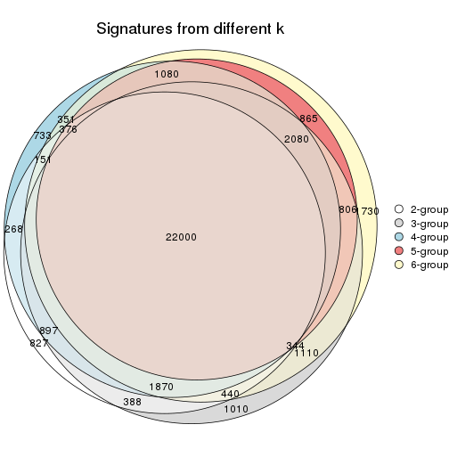
get_signature() returns a data frame invisibly. TO get the list of signatures, the function
call should be assigned to a variable explicitly. In following code, if plot argument is set
to FALSE, no heatmap is plotted while only the differential analysis is performed.
# code only for demonstration
tb = get_signature(res, k = ..., plot = FALSE)
An example of the output of tb is:
#> which_row fdr mean_1 mean_2 scaled_mean_1 scaled_mean_2 km
#> 1 38 0.042760348 8.373488 9.131774 -0.5533452 0.5164555 1
#> 2 40 0.018707592 7.106213 8.469186 -0.6173731 0.5762149 1
#> 3 55 0.019134737 10.221463 11.207825 -0.6159697 0.5749050 1
#> 4 59 0.006059896 5.921854 7.869574 -0.6899429 0.6439467 1
#> 5 60 0.018055526 8.928898 10.211722 -0.6204761 0.5791110 1
#> 6 98 0.009384629 15.714769 14.887706 0.6635654 -0.6193277 2
...
The columns in tb are:
which_row: row indices corresponding to the input matrix.fdr: FDR for the differential test. mean_x: The mean value in group x.scaled_mean_x: The mean value in group x after rows are scaled.km: Row groups if k-means clustering is applied to rows.UMAP plot which shows how samples are separated.
dimension_reduction(res, k = 2, method = "UMAP")
dimension_reduction(res, k = 3, method = "UMAP")
dimension_reduction(res, k = 4, method = "UMAP")
dimension_reduction(res, k = 5, method = "UMAP")
dimension_reduction(res, k = 6, method = "UMAP")
Following heatmap shows how subgroups are split when increasing k:
collect_classes(res)
Test correlation between subgroups and known annotations. If the known annotation is numeric, one-way ANOVA test is applied, and if the known annotation is discrete, chi-squared contingency table test is applied.
test_to_known_factors(res)
#> n disease.state(p) k
#> ATC:NMF 64 0.31206 2
#> ATC:NMF 60 0.00679 3
#> ATC:NMF 53 0.01443 4
#> ATC:NMF 39 0.33111 5
#> ATC:NMF 52 0.01536 6
If matrix rows can be associated to genes, consider to use GO_Enrichment(res,
...) to perform function enrichment for the signature genes.
sessionInfo()
#> R version 3.6.0 (2019-04-26)
#> Platform: x86_64-pc-linux-gnu (64-bit)
#> Running under: CentOS Linux 7 (Core)
#>
#> Matrix products: default
#> BLAS: /usr/lib64/libblas.so.3.4.2
#> LAPACK: /usr/lib64/liblapack.so.3.4.2
#>
#> locale:
#> [1] LC_CTYPE=en_GB.UTF-8 LC_NUMERIC=C LC_TIME=en_GB.UTF-8
#> [4] LC_COLLATE=en_GB.UTF-8 LC_MONETARY=en_GB.UTF-8 LC_MESSAGES=en_GB.UTF-8
#> [7] LC_PAPER=en_GB.UTF-8 LC_NAME=C LC_ADDRESS=C
#> [10] LC_TELEPHONE=C LC_MEASUREMENT=en_GB.UTF-8 LC_IDENTIFICATION=C
#>
#> attached base packages:
#> [1] grid parallel stats graphics grDevices utils datasets methods base
#>
#> other attached packages:
#> [1] genefilter_1.66.0 ComplexHeatmap_2.1.1 markdown_1.1 knitr_1.26
#> [5] preprocessCore_1.46.0 cola_1.3.2 GEOquery_2.52.0 Biobase_2.44.0
#> [9] BiocGenerics_0.30.0 GetoptLong_0.1.7
#>
#> loaded via a namespace (and not attached):
#> [1] bitops_1.0-6 matrixStats_0.55.0 bit64_0.9-7 doParallel_1.0.15
#> [5] RColorBrewer_1.1-2 httr_1.4.1 tools_3.6.0 backports_1.1.5
#> [9] R6_2.4.1 DBI_1.0.0 lazyeval_0.2.2 colorspace_1.4-1
#> [13] withr_2.1.2 tidyselect_0.2.5 gridExtra_2.3 bit_1.1-14
#> [17] compiler_3.6.0 xml2_1.2.2 microbenchmark_1.4-7 pkgmaker_0.28
#> [21] slam_0.1-46 scales_1.1.0 readr_1.3.1 NMF_0.23.6
#> [25] stringr_1.4.0 digest_0.6.23 pkgconfig_2.0.3 bibtex_0.4.2
#> [29] highr_0.8 limma_3.40.6 rlang_0.4.2 GlobalOptions_0.1.1
#> [33] RSQLite_2.1.2 impute_1.58.0 shape_1.4.4 mclust_5.4.5
#> [37] dendextend_1.12.0 dplyr_0.8.3 RCurl_1.95-4.12 magrittr_1.5
#> [41] Matrix_1.2-17 Rcpp_1.0.3 munsell_0.5.0 S4Vectors_0.22.1
#> [45] viridis_0.5.1 lifecycle_0.1.0 stringi_1.4.3 plyr_1.8.4
#> [49] blob_1.2.0 crayon_1.3.4 lattice_0.20-38 splines_3.6.0
#> [53] annotate_1.62.0 circlize_0.4.9 hms_0.5.2 zeallot_0.1.0
#> [57] pillar_1.4.2 rjson_0.2.20 rngtools_1.4 reshape2_1.4.3
#> [61] codetools_0.2-16 stats4_3.6.0 XML_3.98-1.20 glue_1.3.1
#> [65] evaluate_0.14 png_0.1-7 vctrs_0.2.0 foreach_1.4.7
#> [69] polyclip_1.10-0 gtable_0.3.0 purrr_0.3.3 tidyr_1.0.0
#> [73] clue_0.3-57 assertthat_0.2.1 ggplot2_3.2.1 xfun_0.11
#> [77] gridBase_0.4-7 eulerr_6.0.0 xtable_1.8-4 skmeans_0.2-11
#> [81] survival_2.44-1.1 viridisLite_0.3.0 tibble_2.1.3 iterators_1.0.12
#> [85] AnnotationDbi_1.46.1 registry_0.5-1 memoise_1.1.0 IRanges_2.18.3
#> [89] cluster_2.1.0 brew_1.0-6